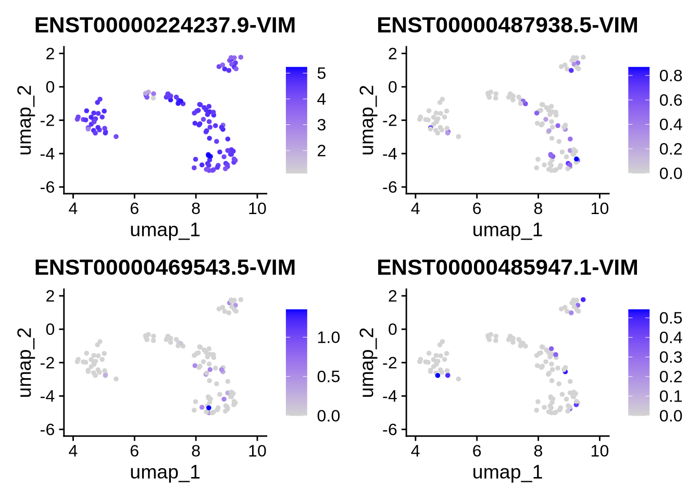

Chapter 11 Profiling Isoform Diversity Using Shannon’s Entropy
Beyond standard analyses like differential gene expression (DGE), differential isoform expression (DIE), differential transcript usage (DTU), or pseudotime trajectories, long-read single-cell data let us ask a different kind of question:
How is a gene’s expression distributed across its isoforms?
This idea is what we refer to as isoform diversity. Instead of just asking “is isoform X up in cluster A?”, we ask:
Does a single cell use one dominant isoform for a gene?
Or does it spread expression across many isoforms?
And do cells of the same type agree on which isoforms they use, or not?
In the FLAMESv2 paper, we formalise this by using Shannon’s entropy to measure isoform diversity at single-cell resolution using the find_diversity function.
In plain terms, entropy gives you a score for how evenly a gene’s expression is split across its isoforms.
Low entropy → the gene is basically using one isoform in that cell.
High entropy → the gene is using multiple isoforms more evenly in that cell.

Figure 11.1: Isoform diversity schematic. For each gene, we measure how transcript usage is distributed across isoforms within individual cells. Cells dominated by a single isoform show low isoform diversity (low entropy), while cells that express multiple isoforms at similar levels show high isoform diversity (high entropy).
11.0.1 Measuring entropy with find_diversity() function
Lets grab Radial glial cells and look at the diversitry of gene expresstion in each cell.
We have a fucntion in FLAMESv2 softare called find diversity. This fucntion is a powerful yet simple way o calacultion shanaonsn entropt for every gene for every cell. We the fucntion is placed here () if you wish to look at the compete source code. This code has been modified in the FLAMESv2 sofrware to work with sce objects. here we use a seuat objet so the code has been apapricte modiufued ro ensure we can use a seurat as input. See the fLEMS bioconder manual for an eaxplation of each parater.
here will simpaly look at the diverty metrics in ~100 Radial glial cells

## Processing TSPAN6## Skipping TSPAN6: fewer than 2 isoforms (found 1)## Processing DPM1## Skipping DPM1: no cells with at least 10 gene counts## Processing FIRRM## Skipping FIRRM: no cells with at least 10 gene counts## Processing GCLC## Skipping GCLC: no cells with at least 10 gene counts## Processing NFYA## Skipping NFYA: no cells with at least 10 gene counts## Processing LAS1L## Skipping LAS1L: no cells with at least 10 gene counts## Processing SEMA3F## Skipping SEMA3F: no cells with at least 10 gene counts## Processing ANKIB1## Skipping ANKIB1: no cells with at least 10 gene counts## Processing CYP51A1## Processing KRIT1## Skipping KRIT1: no cells with at least 10 gene counts## Processing RAD52## Skipping RAD52: no cells with at least 10 gene counts## Processing BAD## Skipping BAD: no cells with at least 10 gene counts## Processing LAP3## Skipping LAP3: no cells with at least 10 gene counts## Processing CD99## Processing HECW1## Skipping HECW1: no cells with at least 10 gene counts## Processing MAD1L1## Skipping MAD1L1: no cells with at least 10 gene counts## Processing LASP1## Skipping LASP1: no cells with at least 10 gene counts## Processing SNX11## Skipping SNX11: no cells with at least 10 gene counts## Processing M6PR## Skipping M6PR: fewer than 2 isoforms (found 1)## Processing KLHL13## Skipping KLHL13: no cells with at least 10 gene counts## Processing ICA1## Skipping ICA1: no cells with at least 10 gene counts## Processing DBNDD1## Skipping DBNDD1: no cells with at least 10 gene counts## Processing ALS2## Skipping ALS2: no cells with at least 10 gene counts## Processing TFPI## Skipping TFPI: fewer than 2 isoforms (found 1)## Processing NDUFAF7## Skipping NDUFAF7: no cells with at least 10 gene counts## Processing RBM5## Skipping RBM5: no cells with at least 10 gene counts## Processing MTMR7## Skipping MTMR7: no cells with at least 10 gene counts## Processing ARF5## Processing SARM1## Skipping SARM1: fewer than 2 isoforms (found 1)## Processing POLDIP2## Skipping POLDIP2: fewer than 2 isoforms (found 1)## Processing PLXND1## Skipping PLXND1: no cells with at least 10 gene counts## Processing AK2## Skipping AK2: no cells with at least 10 gene counts## Processing FKBP4## Skipping FKBP4: fewer than 2 isoforms remain after cumulative filtering (kept 1)## Processing KDM1A## Processing RBM6## Skipping RBM6: no cells with at least 10 gene counts## Processing CAMKK1## Skipping CAMKK1: no cells with at least 10 gene counts## Processing RECQL## Skipping RECQL: no cells with at least 10 gene counts## Processing VPS50## Skipping VPS50: no cells with at least 10 gene counts## Processing HSPB6## Skipping HSPB6: fewer than 2 isoforms (found 1)## Processing ARHGAP33## Skipping ARHGAP33: fewer than 2 isoforms remain after cumulative filtering (kept 1)## Processing NDUFAB1## Skipping NDUFAB1: fewer than 2 isoforms remain after cumulative filtering (kept 1)## Processing ARX## Skipping ARX: fewer than 2 isoforms (found 1)## Processing SLC25A13## Skipping SLC25A13: no cells with at least 10 gene counts## Processing ST7## Skipping ST7: no cells with at least 10 gene counts## Processing CDC27## Skipping CDC27: no cells with at least 10 gene counts## Processing DVL2## Skipping DVL2: no cells with at least 10 gene counts## Processing UPF1## Skipping UPF1: no cells with at least 10 gene counts## Processing SKAP2## Skipping SKAP2: fewer than 2 isoforms (found 1)## Processing SLC25A5## Skipping SLC25A5: fewer than 2 isoforms (found 1)## Processing MCUB## Skipping MCUB: no cells with at least 10 gene counts## Processing POLR2J## Skipping POLR2J: fewer than 2 isoforms (found 1)## Processing DHX33## Skipping DHX33: no cells with at least 10 gene counts## Processing THSD7A## Skipping THSD7A: fewer than 2 isoforms (found 1)## Processing LIG3## Skipping LIG3: no cells with at least 10 gene counts## Processing RPAP3## Skipping RPAP3: no cells with at least 10 gene counts## Processing REXO5## Skipping REXO5: no cells with at least 10 gene counts## Processing CIAPIN1## Skipping CIAPIN1: no cells with at least 10 gene counts## Processing SPPL2B## Skipping SPPL2B: no cells with at least 10 gene counts## Processing ATOSB## Skipping ATOSB: no cells with at least 10 gene counts## Processing PRKAR2B## Skipping PRKAR2B: no cells with at least 10 gene counts## Processing MSL3## Skipping MSL3: no cells with at least 10 gene counts## Processing CREBBP## Skipping CREBBP: no cells with at least 10 gene counts## Processing TSPOAP1## Skipping TSPOAP1: no cells with at least 10 gene counts## Processing GCFC2## Skipping GCFC2: no cells with at least 10 gene counts## Processing WDR54## Skipping WDR54: no cells with at least 10 gene counts## Processing CROT## Skipping CROT: no cells with at least 10 gene counts## Processing KMT2E## Processing RHBDD2## Skipping RHBDD2: no cells with at least 10 gene counts## Processing IBTK## Skipping IBTK: no cells with at least 10 gene counts## Processing ZNF195## Skipping ZNF195: no cells with at least 10 gene counts## Processing MYCBP2## Skipping MYCBP2: no cells with at least 10 gene counts## Processing FBXL3## Skipping FBXL3: no cells with at least 10 gene counts## Processing PDK2## Skipping PDK2: no cells with at least 10 gene counts## Processing ITGA3## Skipping ITGA3: no cells with at least 10 gene counts## Processing ZFX## Skipping ZFX: no cells with at least 10 gene counts## Processing LAMP2## Skipping LAMP2: no cells with at least 10 gene counts## Processing GDE1## Skipping GDE1: no cells with at least 10 gene counts## Processing REX1BD## Skipping REX1BD: no cells with at least 10 gene counts## Processing CRLF1## Skipping CRLF1: no cells with at least 10 gene counts## Processing OSBPL7## Skipping OSBPL7: fewer than 2 isoforms (found 1)## Processing TMEM98## Skipping TMEM98: fewer than 2 isoforms remain after cumulative filtering (kept 1)## Processing YBX2## Skipping YBX2: no cells with at least 10 gene counts## Processing TMEM132A## Processing AP2B1## Skipping AP2B1: no cells with at least 10 gene counts## Processing TAC1## Skipping TAC1: no cells with at least 10 gene counts## Processing ZNF263## Skipping ZNF263: no cells with at least 10 gene counts## Processing CX3CL1## Skipping CX3CL1: no cells with at least 10 gene counts## Processing TNFRSF12A## Processing MAP3K9## Skipping MAP3K9: no cells with at least 10 gene counts## Processing RALA## Skipping RALA: no cells with at least 10 gene counts## Processing BAIAP2L1## Skipping BAIAP2L1: fewer than 2 isoforms (found 1)## Processing KDM7A## Skipping KDM7A: fewer than 2 isoforms (found 1)## Processing ETV1## Skipping ETV1: no cells with at least 10 gene counts## Processing AGK## Skipping AGK: no cells with at least 10 gene counts## Processing PHTF2## Skipping PHTF2: no cells with at least 10 gene counts## Processing FARP2## Skipping FARP2: no cells with at least 10 gene counts## Processing GGCT## Processing DBF4## Processing IFRD1## Skipping IFRD1: fewer than 2 isoforms remain after cumulative filtering (kept 1)## Processing COX10## Skipping COX10: no cells with at least 10 gene counts## Processing GTF2IRD1## Skipping GTF2IRD1: no cells with at least 10 gene counts## Processing PAF1## Skipping PAF1: no cells with at least 10 gene counts## Processing VPS41## Skipping VPS41: no cells with at least 10 gene counts## Processing ARHGAP44## Skipping ARHGAP44: no cells with at least 10 gene counts## Processing ELAC2## Skipping ELAC2: no cells with at least 10 gene counts## Processing ARSD## Skipping ARSD: no cells with at least 10 gene counts## Processing PNPLA4## Skipping PNPLA4: no cells with at least 10 gene counts## Processing ADIPOR2## Skipping ADIPOR2: fewer than 2 isoforms (found 1)## Processing CDKL3## Skipping CDKL3: no cells with at least 10 gene counts## Processing MARK4## Skipping MARK4: no cells with at least 10 gene counts## Processing PROM1## Skipping PROM1: no cells with at least 10 gene counts## Processing CCDC124## Skipping CCDC124: no cells with at least 10 gene counts## Processing PAFAH1B1## Processing DNAH9## Skipping DNAH9: no cells with at least 10 gene counts## Processing BLTP2## Skipping BLTP2: no cells with at least 10 gene counts## Processing GAS7## Skipping GAS7: no cells with at least 10 gene counts## Processing TRAPPC6A## Skipping TRAPPC6A: no cells with at least 10 gene counts## Processing ST7L## Skipping ST7L: no cells with at least 10 gene counts## Processing PAX6## Processing RPUSD1## Skipping RPUSD1: no cells with at least 10 gene counts## Processing RHBDF1## Skipping RHBDF1: fewer than 2 isoforms (found 1)## Processing LUC7L## Skipping LUC7L: no cells with at least 10 gene counts## Processing CACNA2D2## Skipping CACNA2D2: no cells with at least 10 gene counts## Processing BAIAP3## Skipping BAIAP3: no cells with at least 10 gene counts## Processing TSR3## Skipping TSR3: no cells with at least 10 gene counts## Processing PIGQ## Skipping PIGQ: no cells with at least 10 gene counts## Processing CRAMP1## Skipping CRAMP1: no cells with at least 10 gene counts## Processing DNAJC11## Skipping DNAJC11: no cells with at least 10 gene counts## Processing MYLIP## Skipping MYLIP: no cells with at least 10 gene counts## Processing NOX1## Skipping NOX1: no cells with at least 10 gene counts## Processing E2F2## Skipping E2F2: fewer than 2 isoforms (found 1)## Processing PSMB1## Processing SYN1## Skipping SYN1: no cells with at least 10 gene counts## Processing JARID2## Skipping JARID2: fewer than 2 isoforms remain after cumulative filtering (kept 1)## Processing CDKL5## Skipping CDKL5: no cells with at least 10 gene counts## Processing CDK11A## Skipping CDK11A: no cells with at least 10 gene counts## Processing NADK## Skipping NADK: fewer than 2 isoforms (found 1)## Processing CYTH3## Skipping CYTH3: fewer than 2 isoforms (found 1)## Processing ADAM22## Skipping ADAM22: no cells with at least 10 gene counts## Processing SYPL1## Skipping SYPL1: no cells with at least 10 gene counts## Processing SPAG9## Skipping SPAG9: no cells with at least 10 gene counts## Processing CELSR3## Skipping CELSR3: no cells with at least 10 gene counts## Processing AASS## Skipping AASS: no cells with at least 10 gene counts## Processing PLEKHG6## Skipping PLEKHG6: fewer than 2 isoforms (found 1)## Processing SS18L2## Skipping SS18L2: no cells with at least 10 gene counts## Processing MPND## Skipping MPND: no cells with at least 10 gene counts## Processing MGST1## Processing CRY1## Skipping CRY1: no cells with at least 10 gene counts## Processing NFIX## Skipping NFIX: no cells with at least 10 gene counts## Processing ST3GAL1## Skipping ST3GAL1: fewer than 2 isoforms remain after cumulative filtering (kept 1)## Processing PKD1## Skipping PKD1: no cells with at least 10 gene counts## Processing MAPK8IP2## Skipping MAPK8IP2: no cells with at least 10 gene counts## Processing MED24## Skipping MED24: no cells with at least 10 gene counts## Processing RHOBTB2## Skipping RHOBTB2: fewer than 2 isoforms (found 1)## Processing HEATR5B## Skipping HEATR5B: fewer than 2 isoforms (found 1)## Processing SEC62## Skipping SEC62: no cells with at least 10 gene counts## Processing RPS20## Processing CSDE1## Processing UBE3C## Skipping UBE3C: no cells with at least 10 gene counts## Processing REV3L## Skipping REV3L: no cells with at least 10 gene counts## Processing TENM1## Skipping TENM1: fewer than 2 isoforms (found 1)## Processing FAM76A## Skipping FAM76A: no cells with at least 10 gene counts## Processing POMT2## Skipping POMT2: no cells with at least 10 gene counts## Processing VTA1## Skipping VTA1: no cells with at least 10 gene counts## Processing BAZ1B## Processing RANBP9## Skipping RANBP9: fewer than 2 isoforms (found 1)## Processing SPRTN## Skipping SPRTN: no cells with at least 10 gene counts## Processing METTL13## Skipping METTL13: no cells with at least 10 gene counts## Processing ZNF207## Processing UQCRC1## Skipping UQCRC1: fewer than 2 isoforms remain after cumulative filtering (kept 1)## Processing STARD3NL## Skipping STARD3NL: no cells with at least 10 gene counts## Processing CD9## Processing NCAPD2## Skipping NCAPD2: no cells with at least 10 gene counts## Processing IFFO1## Skipping IFFO1: no cells with at least 10 gene counts## Processing PHF7## Skipping PHF7: no cells with at least 10 gene counts## Processing NISCH## Skipping NISCH: no cells with at least 10 gene counts## Processing FUZ## Skipping FUZ: no cells with at least 10 gene counts## Processing IDS## Skipping IDS: no cells with at least 10 gene counts## Processing ZNF200## Skipping ZNF200: no cells with at least 10 gene counts## Processing CD4## Skipping CD4: no cells with at least 10 gene counts## Processing LRRC23## Skipping LRRC23: no cells with at least 10 gene counts## Processing SCMH1## Skipping SCMH1: no cells with at least 10 gene counts## Processing FYN## Processing HIVEP2## Skipping HIVEP2: no cells with at least 10 gene counts## Processing ELOA## Skipping ELOA: no cells with at least 10 gene counts## Processing LYPLA2## Skipping LYPLA2: fewer than 2 isoforms (found 1)## Processing CLCN6## Skipping CLCN6: no cells with at least 10 gene counts## Processing MRC2## Skipping MRC2: fewer than 2 isoforms (found 1)## Processing NME1-NME2## Skipping NME1-NME2: no cells with at least 10 gene counts## Processing TSPAN9## Skipping TSPAN9: no cells with at least 10 gene counts## Processing BTBD7## Skipping BTBD7: no cells with at least 10 gene counts## Processing APBA3## Skipping APBA3: no cells with at least 10 gene counts## Processing MKS1## Skipping MKS1: no cells with at least 10 gene counts## Processing ABHD5## Skipping ABHD5: no cells with at least 10 gene counts## Processing ANOS1## Skipping ANOS1: fewer than 2 isoforms (found 1)## Processing AKAP8L## Skipping AKAP8L: no cells with at least 10 gene counts## Processing MBTD1## Skipping MBTD1: no cells with at least 10 gene counts## Processing UTP18## Skipping UTP18: no cells with at least 10 gene counts## Processing RNF216## Skipping RNF216: no cells with at least 10 gene counts## Processing TTC19## Skipping TTC19: no cells with at least 10 gene counts## Processing PTBP1## Skipping PTBP1: no cells with at least 10 gene counts## Processing DPF1## Skipping DPF1: no cells with at least 10 gene counts## Processing SYT7## Skipping SYT7: no cells with at least 10 gene counts## Processing LARS2## Skipping LARS2: no cells with at least 10 gene counts## Processing PIK3C2A## Skipping PIK3C2A: no cells with at least 10 gene counts## Processing ANLN## Processing WIZ## Skipping WIZ: no cells with at least 10 gene counts## Processing RABGAP1## Skipping RABGAP1: no cells with at least 10 gene counts## Processing QPCTL## Skipping QPCTL: fewer than 2 isoforms (found 1)## Processing PPP5C## Skipping PPP5C: no cells with at least 10 gene counts## Processing CEP68## Skipping CEP68: no cells with at least 10 gene counts## Processing MAP4K3## Skipping MAP4K3: no cells with at least 10 gene counts## Processing LDAF1## Skipping LDAF1: no cells with at least 10 gene counts## Processing GABRA3## Skipping GABRA3: fewer than 2 isoforms (found 1)## Processing BRCA1## Skipping BRCA1: no cells with at least 10 gene counts## Processing ERCC1## Processing MBTPS2## Skipping MBTPS2: no cells with at least 10 gene counts## Processing EXTL3## Skipping EXTL3: no cells with at least 10 gene counts## Processing ELOVL5## Processing KDM5D## Skipping KDM5D: no cells with at least 10 gene counts## Processing CALCOCO1## Skipping CALCOCO1: no cells with at least 10 gene counts## Processing UBR7## Skipping UBR7: no cells with at least 10 gene counts## Processing MAP4K5## Skipping MAP4K5: no cells with at least 10 gene counts## Processing EHD3## Skipping EHD3: fewer than 2 isoforms (found 1)## Processing PSMC4## Skipping PSMC4: fewer than 2 isoforms remain after cumulative filtering (kept 1)## Processing MAN2B2## Skipping MAN2B2: no cells with at least 10 gene counts## Processing SLC25A39## Skipping SLC25A39: fewer than 2 isoforms remain after cumulative filtering (kept 1)## Processing MVP## Skipping MVP: no cells with at least 10 gene counts## Processing NUB1## Skipping NUB1: no cells with at least 10 gene counts## Processing PGM3## Skipping PGM3: no cells with at least 10 gene counts## Processing RWDD2A## Skipping RWDD2A: fewer than 2 isoforms (found 1)## Processing CLK1## Skipping CLK1: no cells with at least 10 gene counts## Processing POLR3B## Skipping POLR3B: fewer than 2 isoforms (found 1)## Processing ANGEL1## Skipping ANGEL1: no cells with at least 10 gene counts## Processing RNF14## Skipping RNF14: no cells with at least 10 gene counts## Processing DNASE1L1## Skipping DNASE1L1: no cells with at least 10 gene counts## Processing DDX11## Skipping DDX11: no cells with at least 10 gene counts## Processing MAMLD1## Skipping MAMLD1: no cells with at least 10 gene counts## Processing TACC3## Processing UFL1## Skipping UFL1: no cells with at least 10 gene counts## Processing POLA2## Skipping POLA2: no cells with at least 10 gene counts## Processing ZC3H3## Skipping ZC3H3: fewer than 2 isoforms (found 1)## Processing CAPN1## Skipping CAPN1: no cells with at least 10 gene counts## Processing MDH1## Processing SLC30A9## Skipping SLC30A9: no cells with at least 10 gene counts## Processing MTMR11## Skipping MTMR11: no cells with at least 10 gene counts## Processing COX15## Skipping COX15: no cells with at least 10 gene counts## Processing CCDC88C## Skipping CCDC88C: no cells with at least 10 gene counts## Processing YAF2## Skipping YAF2: no cells with at least 10 gene counts## Processing ZMYND11## Skipping ZMYND11: no cells with at least 10 gene counts## Processing BID## Skipping BID: no cells with at least 10 gene counts## Processing MATR3## Processing XYLT2## Skipping XYLT2: no cells with at least 10 gene counts## Processing RGPD5## Skipping RGPD5: no cells with at least 10 gene counts## Processing STMN4## Processing NUDCD3## Skipping NUDCD3: no cells with at least 10 gene counts## Processing GLT8D1## Skipping GLT8D1: no cells with at least 10 gene counts## Processing ATP2C1## Skipping ATP2C1: no cells with at least 10 gene counts## Processing RALBP1## Skipping RALBP1: no cells with at least 10 gene counts## Processing RUFY3## Processing CNTN1## Skipping CNTN1: no cells with at least 10 gene counts## Processing WWTR1## Skipping WWTR1: fewer than 2 isoforms (found 1)## Processing AGPS## Skipping AGPS: no cells with at least 10 gene counts## Processing STEEP1## Skipping STEEP1: no cells with at least 10 gene counts## Processing ATP1A2## Skipping ATP1A2: fewer than 2 isoforms (found 1)## Processing TTC27## Skipping TTC27: fewer than 2 isoforms (found 1)## Processing PHLDB1## Skipping PHLDB1: no cells with at least 10 gene counts## Processing SYT13## Skipping SYT13: fewer than 2 isoforms (found 1)## Processing SNAI2## Skipping SNAI2: no cells with at least 10 gene counts## Processing ZRANB1## Skipping ZRANB1: fewer than 2 isoforms (found 1)## Processing NCDN## Skipping NCDN: no cells with at least 10 gene counts## Processing ADGRA2## Skipping ADGRA2: no cells with at least 10 gene counts## Processing ZFP64## Skipping ZFP64: no cells with at least 10 gene counts## Processing MNAT1## Skipping MNAT1: no cells with at least 10 gene counts## Processing SAMD4A## Skipping SAMD4A: no cells with at least 10 gene counts## Processing MRE11## Skipping MRE11: no cells with at least 10 gene counts## Processing SLC7A9## Skipping SLC7A9: fewer than 2 isoforms (found 1)## Processing SPAST## Skipping SPAST: no cells with at least 10 gene counts## Processing NRXN3## Skipping NRXN3: no cells with at least 10 gene counts## Processing OSBPL5## Skipping OSBPL5: no cells with at least 10 gene counts## Processing AQR## Skipping AQR: no cells with at least 10 gene counts## Processing FHL1## Skipping FHL1: fewer than 2 isoforms remain after cumulative filtering (kept 1)## Processing RTF2## Processing NLRP2## Skipping NLRP2: no cells with at least 10 gene counts## Processing SLC45A4## Skipping SLC45A4: fewer than 2 isoforms (found 1)## Processing RNF10## Skipping RNF10: no cells with at least 10 gene counts## Processing ZNF839## Skipping ZNF839: no cells with at least 10 gene counts## Processing ZDHHC6## Skipping ZDHHC6: no cells with at least 10 gene counts## Processing GRAMD1B## Skipping GRAMD1B: no cells with at least 10 gene counts## Processing RNH1## Processing NDUFS1## Skipping NDUFS1: no cells with at least 10 gene counts## Processing RB1CC1## Skipping RB1CC1: no cells with at least 10 gene counts## Processing ERP44## Skipping ERP44: no cells with at least 10 gene counts## Processing ALAS1## Skipping ALAS1: no cells with at least 10 gene counts## Processing AKAP11## Skipping AKAP11: fewer than 2 isoforms (found 1)## Processing GLRX2## Skipping GLRX2: no cells with at least 10 gene counts## Processing SNAPC1## Skipping SNAPC1: fewer than 2 isoforms (found 1)## Processing DERA## Skipping DERA: fewer than 2 isoforms (found 1)## Processing STRAP## Processing PLEKHO1## Skipping PLEKHO1: no cells with at least 10 gene counts## Processing UBR2## Skipping UBR2: no cells with at least 10 gene counts## Processing DEPDC1## Skipping DEPDC1: no cells with at least 10 gene counts## Processing CCDC28A## Skipping CCDC28A: fewer than 2 isoforms (found 1)## Processing RRAGD## Skipping RRAGD: fewer than 2 isoforms (found 1)## Processing HSF2## Skipping HSF2: no cells with at least 10 gene counts## Processing PHF20## Skipping PHF20: no cells with at least 10 gene counts## Processing NCAPH2## Skipping NCAPH2: no cells with at least 10 gene counts## Processing TOMM34## Skipping TOMM34: fewer than 2 isoforms (found 1)## Processing SEC63## Skipping SEC63: fewer than 2 isoforms (found 1)## Processing KPNA6## Skipping KPNA6: fewer than 2 isoforms (found 1)## Processing VIM## Processing RTEL1-TNFRSF6B## Skipping RTEL1-TNFRSF6B: fewer than 2 isoforms (found 1)## Processing RNASET2## Skipping RNASET2: no cells with at least 10 gene counts## Processing CD44## Skipping CD44: fewer than 2 isoforms remain after cumulative filtering (kept 1)## Processing KCNG1## Processing AGPAT4## Skipping AGPAT4: no cells with at least 10 gene counts## Processing MIPEP## Skipping MIPEP: no cells with at least 10 gene counts## Processing IFNGR1## Skipping IFNGR1: no cells with at least 10 gene counts## Processing B4GALT7## Skipping B4GALT7: no cells with at least 10 gene counts## Processing VRK2## Skipping VRK2: no cells with at least 10 gene counts## Processing VEZT## Skipping VEZT: no cells with at least 10 gene counts## Processing POU2F2## Skipping POU2F2: no cells with at least 10 gene counts## Processing BRD9## Skipping BRD9: no cells with at least 10 gene counts## Processing SNX1## Skipping SNX1: no cells with at least 10 gene counts## Processing TBPL1## Skipping TBPL1: no cells with at least 10 gene counts## Processing BMAL2## Skipping BMAL2: no cells with at least 10 gene counts## Processing BCLAF1## Processing SLC39A9## Skipping SLC39A9: no cells with at least 10 gene counts## Processing ANK1## Skipping ANK1: no cells with at least 10 gene counts## Processing TFB1M## Skipping TFB1M: no cells with at least 10 gene counts## Processing RABEP1## Skipping RABEP1: no cells with at least 10 gene counts## Processing HMGB3## Processing NUP160## Skipping NUP160: no cells with at least 10 gene counts## Processing BAK1## Skipping BAK1: no cells with at least 10 gene counts## Processing MUSK## Skipping MUSK: fewer than 2 isoforms (found 1)## Processing IKZF2## Skipping IKZF2: no cells with at least 10 gene counts## Processing GRN## Skipping GRN: fewer than 2 isoforms (found 1)## Processing FAM13B## Skipping FAM13B: no cells with at least 10 gene counts## Processing CENPQ## Skipping CENPQ: fewer than 2 isoforms (found 1)## Processing SARS1## Processing RANBP3## Skipping RANBP3: no cells with at least 10 gene counts## Processing ARID4A## Skipping ARID4A: no cells with at least 10 gene counts## Processing EIPR1## Skipping EIPR1: no cells with at least 10 gene counts## Processing PNPLA6## Skipping PNPLA6: no cells with at least 10 gene counts## Processing IFT88## Skipping IFT88: no cells with at least 10 gene counts## Processing ALG1## Skipping ALG1: no cells with at least 10 gene counts## Processing ZCCHC8## Skipping ZCCHC8: no cells with at least 10 gene counts## Processing ABCF2## Skipping ABCF2: fewer than 2 isoforms (found 1)## Processing CHPF2## Skipping CHPF2: no cells with at least 10 gene counts## Processing LRRC7## Skipping LRRC7: no cells with at least 10 gene counts## Processing FUT8## Skipping FUT8: no cells with at least 10 gene counts## Processing UBA6## Skipping UBA6: no cells with at least 10 gene counts## Processing GAB2## Skipping GAB2: no cells with at least 10 gene counts## Processing ATP6V0A1## Skipping ATP6V0A1: no cells with at least 10 gene counts## Processing PIAS1## Skipping PIAS1: no cells with at least 10 gene counts## Processing SLC4A7## Skipping SLC4A7: no cells with at least 10 gene counts## Processing APBA2## Skipping APBA2: no cells with at least 10 gene counts## Processing TMSB10## Skipping TMSB10: fewer than 2 isoforms (found 1)## Processing ASTE1## Skipping ASTE1: fewer than 2 isoforms (found 1)## Processing RNF19A## Skipping RNF19A: no cells with at least 10 gene counts## Processing PEX3## Skipping PEX3: fewer than 2 isoforms (found 1)## Processing GABARAPL2## Processing SH3YL1## Skipping SH3YL1: no cells with at least 10 gene counts## Processing FAM136A## Skipping FAM136A: no cells with at least 10 gene counts## Processing VCL## Skipping VCL: fewer than 2 isoforms remain after cumulative filtering (kept 1)## Processing DEPDC1B## Skipping DEPDC1B: no cells with at least 10 gene counts## Processing NSMAF## Skipping NSMAF: no cells with at least 10 gene counts## Processing ADSS2## Skipping ADSS2: fewer than 2 isoforms (found 1)## Processing TIMP2## Processing RFC1## Skipping RFC1: no cells with at least 10 gene counts## Processing TBC1D23## Skipping TBC1D23: no cells with at least 10 gene counts## Processing CUL3## Skipping CUL3: no cells with at least 10 gene counts## Processing CYP46A1## Processing ZZZ3## Skipping ZZZ3: no cells with at least 10 gene counts## Processing TUBG2## Skipping TUBG2: no cells with at least 10 gene counts## Processing RPL26L1## Skipping RPL26L1: fewer than 2 isoforms remain after cumulative filtering (kept 1)## Processing NSUN2## Skipping NSUN2: no cells with at least 10 gene counts## Processing FBXO42## Skipping FBXO42: no cells with at least 10 gene counts## Processing MFAP3## Skipping MFAP3: fewer than 2 isoforms (found 1)## Processing MRI1## Skipping MRI1: fewer than 2 isoforms (found 1)## Processing METTL1## Skipping METTL1: no cells with at least 10 gene counts## Processing AGA## Skipping AGA: fewer than 2 isoforms (found 1)## Processing PI4K2B## Skipping PI4K2B: fewer than 2 isoforms (found 1)## Processing BOD1L1## Skipping BOD1L1: no cells with at least 10 gene counts## Processing MAT2B## Skipping MAT2B: no cells with at least 10 gene counts## Processing TLL1## Skipping TLL1: fewer than 2 isoforms (found 1)## Processing EDC4## Skipping EDC4: no cells with at least 10 gene counts## Processing TRIO## Skipping TRIO: no cells with at least 10 gene counts## Processing VCAN## Processing CLEC16A## Skipping CLEC16A: no cells with at least 10 gene counts## Processing MTREX## Skipping MTREX: no cells with at least 10 gene counts## Processing DNAH5## Skipping DNAH5: no cells with at least 10 gene counts## Processing ZFYVE16## Skipping ZFYVE16: no cells with at least 10 gene counts## Processing RIPOR1## Skipping RIPOR1: no cells with at least 10 gene counts## Processing RAI14## Skipping RAI14: no cells with at least 10 gene counts## Processing PNKP## Skipping PNKP: no cells with at least 10 gene counts## Processing PHLPP2## Skipping PHLPP2: no cells with at least 10 gene counts## Processing SPDL1## Skipping SPDL1: no cells with at least 10 gene counts## Processing STAU2## Skipping STAU2: no cells with at least 10 gene counts## Processing CTNS## Skipping CTNS: no cells with at least 10 gene counts## Processing RTN4R## Skipping RTN4R: no cells with at least 10 gene counts## Processing PHF23## Skipping PHF23: no cells with at least 10 gene counts## Processing INPP4A## Skipping INPP4A: no cells with at least 10 gene counts## Processing PSMA4## Processing MYO16## Skipping MYO16: fewer than 2 isoforms (found 1)## Processing LSG1## Skipping LSG1: no cells with at least 10 gene counts## Processing TNC## Processing THAP3## Skipping THAP3: no cells with at least 10 gene counts## Processing RIPOR3## Skipping RIPOR3: fewer than 2 isoforms (found 0)## Processing TDP1## Skipping TDP1: no cells with at least 10 gene counts## Processing SPATA7## Skipping SPATA7: no cells with at least 10 gene counts## Processing MED17## Skipping MED17: no cells with at least 10 gene counts## Processing AP2S1## Processing TG## Skipping TG: fewer than 2 isoforms (found 1)## Processing DCUN1D1## Skipping DCUN1D1: no cells with at least 10 gene counts## Processing JADE2## Skipping JADE2: no cells with at least 10 gene counts## Processing ZIC2## Skipping ZIC2: fewer than 2 isoforms (found 1)## Processing TRIT1## Skipping TRIT1: no cells with at least 10 gene counts## Processing CUL7## Skipping CUL7: no cells with at least 10 gene counts## Processing CTNNA1## Processing PHKA2## Skipping PHKA2: no cells with at least 10 gene counts## Processing CNTLN## Skipping CNTLN: no cells with at least 10 gene counts## Processing EPHA3## Skipping EPHA3: fewer than 2 isoforms (found 1)## Processing HSPA5## Skipping HSPA5: fewer than 2 isoforms remain after cumulative filtering (kept 1)## Processing DSG2## Skipping DSG2: no cells with at least 10 gene counts## Processing GEMIN8## Skipping GEMIN8: no cells with at least 10 gene counts## Processing OFD1## Skipping OFD1: no cells with at least 10 gene counts## Processing GPM6B## Processing PREX2## Skipping PREX2: no cells with at least 10 gene counts## Processing WDR37## Skipping WDR37: no cells with at least 10 gene counts## Processing YTHDC2## Skipping YTHDC2: no cells with at least 10 gene counts## Processing CTPS2## Skipping CTPS2: no cells with at least 10 gene counts## Processing ATP6V1H## Skipping ATP6V1H: no cells with at least 10 gene counts## Processing POLR2B## Skipping POLR2B: no cells with at least 10 gene counts## Processing ATOSA## Skipping ATOSA: no cells with at least 10 gene counts## Processing ARAP2## Skipping ARAP2: fewer than 2 isoforms (found 1)## Processing TPR## Processing KATNIP## Skipping KATNIP: fewer than 2 isoforms (found 1)## Processing DTNBP1## Skipping DTNBP1: no cells with at least 10 gene counts## Processing FERRY3## Skipping FERRY3: no cells with at least 10 gene counts## Processing SCML1## Skipping SCML1: no cells with at least 10 gene counts## Processing WWC3## Skipping WWC3: no cells with at least 10 gene counts## Processing FAM184B## Skipping FAM184B: fewer than 2 isoforms (found 1)## Processing MAP4## Processing GOPC## Skipping GOPC: no cells with at least 10 gene counts## Processing USP28## Skipping USP28: no cells with at least 10 gene counts## Processing HDAC9## Skipping HDAC9: no cells with at least 10 gene counts## Processing TSPAN17## Skipping TSPAN17: no cells with at least 10 gene counts## Processing NOP16## Skipping NOP16: no cells with at least 10 gene counts## Processing CC2D2A## Skipping CC2D2A: no cells with at least 10 gene counts## Processing RRM2B## Skipping RRM2B: no cells with at least 10 gene counts## Processing ZNF800## Skipping ZNF800: no cells with at least 10 gene counts## Processing SNX29## Skipping SNX29: no cells with at least 10 gene counts## Processing LMO3## Skipping LMO3: no cells with at least 10 gene counts## Processing MRPS10## Skipping MRPS10: no cells with at least 10 gene counts## Processing RSF1## Processing VPS13D## Skipping VPS13D: no cells with at least 10 gene counts## Processing CELF2## Processing FAM120A## Skipping FAM120A: no cells with at least 10 gene counts## Processing R3HDM1## Skipping R3HDM1: no cells with at least 10 gene counts## Processing ERCC8## Skipping ERCC8: no cells with at least 10 gene counts## Processing ADAMTS6## Skipping ADAMTS6: no cells with at least 10 gene counts## Processing H6PD## Skipping H6PD: fewer than 2 isoforms (found 1)## Processing VAMP3## Skipping VAMP3: fewer than 2 isoforms (found 1)## Processing LTBP1## Processing RCN1## Skipping RCN1: fewer than 2 isoforms remain after cumulative filtering (kept 1)## Processing RFC2## Processing ARID1B## Skipping ARID1B: no cells with at least 10 gene counts## Processing CLPTM1L## Skipping CLPTM1L: no cells with at least 10 gene counts## Processing NEDD4L## Processing PPP1R3F## Skipping PPP1R3F: no cells with at least 10 gene counts## Processing HEXB## Skipping HEXB: no cells with at least 10 gene counts## Processing NEXMIF## Skipping NEXMIF: no cells with at least 10 gene counts## Processing JKAMP## Skipping JKAMP: no cells with at least 10 gene counts## Processing DKK3## Processing NFE2L3## Skipping NFE2L3: no cells with at least 10 gene counts## Processing MCUR1## Skipping MCUR1: fewer than 2 isoforms (found 1)## Processing LIMA1## Skipping LIMA1: no cells with at least 10 gene counts## Processing LETMD1## Skipping LETMD1: no cells with at least 10 gene counts## Processing SLC4A8## Skipping SLC4A8: no cells with at least 10 gene counts## Processing MAPK9## Skipping MAPK9: no cells with at least 10 gene counts## Processing BCAR1## Skipping BCAR1: no cells with at least 10 gene counts## Processing HERPUD1## Processing HOMER3## Skipping HOMER3: no cells with at least 10 gene counts## Processing RAD51## Skipping RAD51: fewer than 2 isoforms (found 1)## Processing POLQ## Skipping POLQ: fewer than 2 isoforms (found 1)## Processing PIK3CB## Skipping PIK3CB: no cells with at least 10 gene counts## Processing CYBA## Skipping CYBA: fewer than 2 isoforms remain after cumulative filtering (kept 1)## Processing THOC3## Skipping THOC3: no cells with at least 10 gene counts## Processing HEBP2## Skipping HEBP2: fewer than 2 isoforms remain after cumulative filtering (kept 1)## Processing MPHOSPH9## Skipping MPHOSPH9: no cells with at least 10 gene counts## Processing PLEKHA5## Processing SIKE1## Skipping SIKE1: no cells with at least 10 gene counts## Processing RRP12## Skipping RRP12: no cells with at least 10 gene counts## Processing FNIP2## Skipping FNIP2: no cells with at least 10 gene counts## Processing MSMO1## Skipping MSMO1: fewer than 2 isoforms remain after cumulative filtering (kept 1)## Processing TTC17## Skipping TTC17: no cells with at least 10 gene counts## Processing FSTL4## Skipping FSTL4: fewer than 2 isoforms (found 1)## Processing FOXN3## Skipping FOXN3: no cells with at least 10 gene counts## Processing AKR7A2## Processing MRTO4## Skipping MRTO4: fewer than 2 isoforms remain after cumulative filtering (kept 1)## Processing USE1## Skipping USE1: no cells with at least 10 gene counts## Processing MCF2L2## Skipping MCF2L2: no cells with at least 10 gene counts## Processing LAMA3## Skipping LAMA3: no cells with at least 10 gene counts## Processing AP5M1## Skipping AP5M1: no cells with at least 10 gene counts## Processing ANAPC4## Skipping ANAPC4: no cells with at least 10 gene counts## Processing TRAPPC3## Skipping TRAPPC3: no cells with at least 10 gene counts## Processing THRAP3## Processing PHPT1## Processing ARID4B## Processing SDCCAG8## Skipping SDCCAG8: no cells with at least 10 gene counts## Processing KIF1B## Processing TBC1D22A## Skipping TBC1D22A: no cells with at least 10 gene counts## Processing SYNE2## Processing PLEKHH1## Skipping PLEKHH1: no cells with at least 10 gene counts## Processing ATP9A## Skipping ATP9A: fewer than 2 isoforms (found 1)## Processing FAM168A## Skipping FAM168A: no cells with at least 10 gene counts## Processing RELT## Skipping RELT: no cells with at least 10 gene counts## Processing GALC## Skipping GALC: fewer than 2 isoforms (found 1)## Processing NOP58## Processing SZRD1## Skipping SZRD1: no cells with at least 10 gene counts## Processing KCNH2## Skipping KCNH2: no cells with at least 10 gene counts## Processing CUL1## Skipping CUL1: no cells with at least 10 gene counts## Processing FAM114A2## Skipping FAM114A2: no cells with at least 10 gene counts## Processing CYFIP2## Skipping CYFIP2: no cells with at least 10 gene counts## Processing TAB2## Skipping TAB2: no cells with at least 10 gene counts## Processing GINM1## Skipping GINM1: no cells with at least 10 gene counts## Processing EIF2AK2## Skipping EIF2AK2: no cells with at least 10 gene counts## Processing USP36## Skipping USP36: no cells with at least 10 gene counts## Processing KMT2C## Processing PUM2## Skipping PUM2: no cells with at least 10 gene counts## Processing MRPL43## Skipping MRPL43: no cells with at least 10 gene counts## Processing HPF1## Skipping HPF1: fewer than 2 isoforms (found 1)## Processing ZFR## Skipping ZFR: fewer than 2 isoforms remain after cumulative filtering (kept 1)## Processing ZNF280C## Skipping ZNF280C: fewer than 2 isoforms (found 1)## Processing PHF21B## Skipping PHF21B: no cells with at least 10 gene counts## Processing RC3H2## Skipping RC3H2: no cells with at least 10 gene counts## Processing IL17RB## Skipping IL17RB: fewer than 2 isoforms (found 1)## Processing TRAF3IP2## Skipping TRAF3IP2: no cells with at least 10 gene counts## Processing GYG2## Skipping GYG2: fewer than 2 isoforms (found 1)## Processing DCBLD2## Skipping DCBLD2: no cells with at least 10 gene counts## Processing SOAT1## Skipping SOAT1: fewer than 2 isoforms (found 1)## Processing GDI2## Processing ATG5## Skipping ATG5: no cells with at least 10 gene counts## Processing PITHD1## Skipping PITHD1: fewer than 2 isoforms (found 1)## Processing MTA3## Skipping MTA3: no cells with at least 10 gene counts## Processing USP13## Skipping USP13: no cells with at least 10 gene counts## Processing ATP11B## Skipping ATP11B: no cells with at least 10 gene counts## Processing CDK14## Skipping CDK14: no cells with at least 10 gene counts## Processing SEC61A1## Processing PPP1R12A## Skipping PPP1R12A: no cells with at least 10 gene counts## Processing RASGRF1## Skipping RASGRF1: no cells with at least 10 gene counts## Processing CAMK2B## Skipping CAMK2B: no cells with at least 10 gene counts## Processing CROCC## Skipping CROCC: no cells with at least 10 gene counts## Processing POLR3E## Skipping POLR3E: no cells with at least 10 gene counts## Processing ATP2B4## Skipping ATP2B4: no cells with at least 10 gene counts## Processing ZC3H11A## Skipping ZC3H11A: no cells with at least 10 gene counts## Processing RIOK2## Skipping RIOK2: fewer than 2 isoforms (found 1)## Processing YIPF1## Skipping YIPF1: no cells with at least 10 gene counts## Processing NDC1## Skipping NDC1: fewer than 2 isoforms (found 1)## Processing DGKG## Skipping DGKG: no cells with at least 10 gene counts## Processing FLYWCH1## Skipping FLYWCH1: no cells with at least 10 gene counts## Processing UNKL## Skipping UNKL: no cells with at least 10 gene counts## Processing TBXAS1## Skipping TBXAS1: no cells with at least 10 gene counts## Processing ALDH18A1## Skipping ALDH18A1: no cells with at least 10 gene counts## Processing TARBP1## Skipping TARBP1: no cells with at least 10 gene counts## Processing GATB## Skipping GATB: no cells with at least 10 gene counts## Processing MXD1## Skipping MXD1: no cells with at least 10 gene counts## Processing CDK17## Skipping CDK17: no cells with at least 10 gene counts## Processing DNAJC25## Skipping DNAJC25: no cells with at least 10 gene counts## Processing SLC2A3## Skipping SLC2A3: no cells with at least 10 gene counts## Processing PSD## Skipping PSD: no cells with at least 10 gene counts## Processing CTDP1## Skipping CTDP1: no cells with at least 10 gene counts## Processing YBX3## Skipping YBX3: no cells with at least 10 gene counts## Processing WNK1## Processing CCAR1## Processing OGFR## Skipping OGFR: no cells with at least 10 gene counts## Processing PTPRU## Skipping PTPRU: no cells with at least 10 gene counts## Processing SNRNP40## Skipping SNRNP40: no cells with at least 10 gene counts## Processing RIMBP2## Skipping RIMBP2: no cells with at least 10 gene counts## Processing COL11A1## Skipping COL11A1: no cells with at least 10 gene counts## Processing QSER1## Skipping QSER1: no cells with at least 10 gene counts## Processing MPC1## Skipping MPC1: no cells with at least 10 gene counts## Processing ACAA1## Skipping ACAA1: no cells with at least 10 gene counts## Processing BCAT1## Skipping BCAT1: no cells with at least 10 gene counts## Processing HDAC7## Skipping HDAC7: no cells with at least 10 gene counts## Processing LZTS1## Skipping LZTS1: no cells with at least 10 gene counts## Processing NCKAP1## Skipping NCKAP1: no cells with at least 10 gene counts## Processing MRPS35## Skipping MRPS35: no cells with at least 10 gene counts## Processing GUCY1B1## Skipping GUCY1B1: no cells with at least 10 gene counts## Processing SFSWAP## Skipping SFSWAP: fewer than 2 isoforms remain after cumulative filtering (kept 1)## Processing TNK2## Skipping TNK2: no cells with at least 10 gene counts## Processing MON2## Skipping MON2: no cells with at least 10 gene counts## Processing GPBP1## Skipping GPBP1: no cells with at least 10 gene counts## Processing ZNF112## Skipping ZNF112: no cells with at least 10 gene counts## Processing CS## Skipping CS: no cells with at least 10 gene counts## Processing MRPS24## Skipping MRPS24: no cells with at least 10 gene counts## Processing ELMO2## Skipping ELMO2: no cells with at least 10 gene counts## Processing WAPL## Skipping WAPL: fewer than 2 isoforms (found 1)## Processing VMP1## Processing APPBP2## Skipping APPBP2: no cells with at least 10 gene counts## Processing POLD1## Skipping POLD1: no cells with at least 10 gene counts## Processing SEZ6## Skipping SEZ6: no cells with at least 10 gene counts## Processing EIF4B## Skipping EIF4B: fewer than 2 isoforms remain after cumulative filtering (kept 1)## Processing SLC6A16## Skipping SLC6A16: no cells with at least 10 gene counts## Processing BICRA## Skipping BICRA: no cells with at least 10 gene counts## Processing SPHK2## Skipping SPHK2: no cells with at least 10 gene counts## Processing RPL18## Processing CA11## Skipping CA11: no cells with at least 10 gene counts## Processing ISOC2## Skipping ISOC2: no cells with at least 10 gene counts## Processing U2AF2## Skipping U2AF2: no cells with at least 10 gene counts## Processing EPN1## Skipping EPN1: no cells with at least 10 gene counts## Processing MED29## Skipping MED29: no cells with at least 10 gene counts## Processing AHRR## Skipping AHRR: no cells with at least 10 gene counts## Processing ZNF275## Skipping ZNF275: no cells with at least 10 gene counts## Processing MTMR1## Skipping MTMR1: no cells with at least 10 gene counts## Processing GPC1## Skipping GPC1: fewer than 2 isoforms remain after cumulative filtering (kept 1)## Processing ADCK1## Skipping ADCK1: no cells with at least 10 gene counts## Processing HAGH## Skipping HAGH: no cells with at least 10 gene counts## Processing RNF4## Skipping RNF4: no cells with at least 10 gene counts## Processing CASP8## Skipping CASP8: fewer than 2 isoforms (found 1)## Processing LIMCH1## Skipping LIMCH1: no cells with at least 10 gene counts## Processing INTS13## Skipping INTS13: no cells with at least 10 gene counts## Processing TM7SF3## Skipping TM7SF3: fewer than 2 isoforms (found 1)## Processing SPA17## Skipping SPA17: no cells with at least 10 gene counts## Processing DMRT3## Skipping DMRT3: fewer than 2 isoforms (found 1)## Processing ST3GAL6## Skipping ST3GAL6: no cells with at least 10 gene counts## Processing ATP2C2## Skipping ATP2C2: no cells with at least 10 gene counts## Processing CDON## Processing TAF2## Skipping TAF2: no cells with at least 10 gene counts## Processing HIPK2## Processing TNPO3## Skipping TNPO3: no cells with at least 10 gene counts## Processing RFXANK## Skipping RFXANK: no cells with at least 10 gene counts## Processing TMEM161A## Skipping TMEM161A: no cells with at least 10 gene counts## Processing LPAR2## Skipping LPAR2: no cells with at least 10 gene counts## Processing CTSA## Skipping CTSA: no cells with at least 10 gene counts## Processing SUGP2## Processing SLC12A2## Skipping SLC12A2: no cells with at least 10 gene counts## Processing SNX24## Skipping SNX24: no cells with at least 10 gene counts## Processing CNN2## Skipping CNN2: fewer than 2 isoforms remain after cumulative filtering (kept 1)## Processing ABCA7## Skipping ABCA7: no cells with at least 10 gene counts## Processing SNCAIP## Processing DDX20## Skipping DDX20: no cells with at least 10 gene counts## Processing BTBD1## Skipping BTBD1: fewer than 2 isoforms (found 1)## Processing FAR2## Skipping FAR2: no cells with at least 10 gene counts## Processing SBNO2## Skipping SBNO2: fewer than 2 isoforms (found 1)## Processing PMS1## Skipping PMS1: no cells with at least 10 gene counts## Processing HMG20B## Skipping HMG20B: fewer than 2 isoforms remain after cumulative filtering (kept 1)## Processing TAF11## Skipping TAF11: no cells with at least 10 gene counts## Processing ANKS1A## Skipping ANKS1A: no cells with at least 10 gene counts## Processing AP3D1## Processing ZNF76## Skipping ZNF76: no cells with at least 10 gene counts## Processing NHERF2## Skipping NHERF2: no cells with at least 10 gene counts## Processing NTHL1## Skipping NTHL1: no cells with at least 10 gene counts## Processing BLTP3A## Skipping BLTP3A: fewer than 2 isoforms (found 1)## Processing GNAI3## Skipping GNAI3: fewer than 2 isoforms (found 1)## Processing IPO5## Processing OAT## Skipping OAT: no cells with at least 10 gene counts## Processing WDR3## Skipping WDR3: no cells with at least 10 gene counts## Processing PKN2## Skipping PKN2: no cells with at least 10 gene counts## Processing WDR18## Skipping WDR18: no cells with at least 10 gene counts## Processing TRAM2## Skipping TRAM2: fewer than 2 isoforms (found 1)## Processing NTN1## Skipping NTN1: no cells with at least 10 gene counts## Processing MCM10## Skipping MCM10: no cells with at least 10 gene counts## Processing ANKRD44## Skipping ANKRD44: no cells with at least 10 gene counts## Processing KARS1## Skipping KARS1: no cells with at least 10 gene counts## Processing ADAT1## Skipping ADAT1: no cells with at least 10 gene counts## Processing PDIA5## Skipping PDIA5: no cells with at least 10 gene counts## Processing TBC1D22B## Skipping TBC1D22B: fewer than 2 isoforms (found 1)## Processing NDUFB4## Processing SPEN## Skipping SPEN: no cells with at least 10 gene counts## Processing MYLK## Skipping MYLK: no cells with at least 10 gene counts## Processing ZC3H15## Processing MAP2K4## Skipping MAP2K4: no cells with at least 10 gene counts## Processing PACC1## Skipping PACC1: no cells with at least 10 gene counts## Processing SNAP91## Skipping SNAP91: no cells with at least 10 gene counts## Processing SLK## Skipping SLK: no cells with at least 10 gene counts## Processing CYB5R4## Skipping CYB5R4: no cells with at least 10 gene counts## Processing SEC61A2## Skipping SEC61A2: no cells with at least 10 gene counts## Processing TLE2## Skipping TLE2: no cells with at least 10 gene counts## Processing ASB1## Skipping ASB1: no cells with at least 10 gene counts## Processing FAM107B## Skipping FAM107B: fewer than 2 isoforms (found 1)## Processing TBC1D1## Skipping TBC1D1: no cells with at least 10 gene counts## Processing CDK13## Skipping CDK13: no cells with at least 10 gene counts## Processing MTHFD2## Processing SLC9A7## Skipping SLC9A7: fewer than 2 isoforms (found 1)## Processing YBX1## Processing PDE4A## Skipping PDE4A: fewer than 2 isoforms (found 1)## Processing PPP2R5A## Skipping PPP2R5A: fewer than 2 isoforms (found 1)## Processing CTNNA2## Skipping CTNNA2: no cells with at least 10 gene counts## Processing ELAVL1## Skipping ELAVL1: fewer than 2 isoforms remain after cumulative filtering (kept 1)## Processing DIP2B## Skipping DIP2B: no cells with at least 10 gene counts## Processing SMARCD1## Skipping SMARCD1: no cells with at least 10 gene counts## Processing KDM4A## Skipping KDM4A: no cells with at least 10 gene counts## Processing NFYC## Skipping NFYC: no cells with at least 10 gene counts## Processing SLC9A3## Skipping SLC9A3: no cells with at least 10 gene counts## Processing ASPM## Processing ELOVL1## Skipping ELOVL1: no cells with at least 10 gene counts## Processing MPPED2## Processing ZBTB11## Skipping ZBTB11: no cells with at least 10 gene counts## Processing ATXN3## Skipping ATXN3: no cells with at least 10 gene counts## Processing GOLGA5## Skipping GOLGA5: fewer than 2 isoforms (found 1)## Processing FGFR2## Skipping FGFR2: no cells with at least 10 gene counts## Processing LRRC40## Skipping LRRC40: fewer than 2 isoforms (found 1)## Processing ISOC1## Skipping ISOC1: fewer than 2 isoforms (found 1)## Processing EML1## Skipping EML1: no cells with at least 10 gene counts## Processing TRMT11## Skipping TRMT11: no cells with at least 10 gene counts## Processing THUMPD1## Skipping THUMPD1: no cells with at least 10 gene counts## Processing MSANTD3## Skipping MSANTD3: no cells with at least 10 gene counts## Processing KIF26A## Skipping KIF26A: no cells with at least 10 gene counts## Processing ATG2B## Skipping ATG2B: fewer than 2 isoforms (found 1)## Processing ARFGEF1## Skipping ARFGEF1: no cells with at least 10 gene counts## Processing ZFAT## Skipping ZFAT: no cells with at least 10 gene counts## Processing MTFR1## Skipping MTFR1: no cells with at least 10 gene counts## Processing STAG3## Skipping STAG3: no cells with at least 10 gene counts## Processing FECH## Skipping FECH: no cells with at least 10 gene counts## Processing MYO9A## Skipping MYO9A: no cells with at least 10 gene counts## Processing DDX3Y## Skipping DDX3Y: fewer than 2 isoforms (found 1)## Processing PFKP## Skipping PFKP: fewer than 2 isoforms remain after cumulative filtering (kept 1)## Processing IDI1## Processing KLF6## Skipping KLF6: no cells with at least 10 gene counts## Processing PLPP1## Skipping PLPP1: no cells with at least 10 gene counts## Processing NEO1## Skipping NEO1: no cells with at least 10 gene counts## Processing TRAM1## Skipping TRAM1: fewer than 2 isoforms (found 1)## Processing TNFRSF1A## Skipping TNFRSF1A: no cells with at least 10 gene counts## Processing CACNB1## Skipping CACNB1: no cells with at least 10 gene counts## Processing EVI5## Skipping EVI5: no cells with at least 10 gene counts## Processing STOML1## Skipping STOML1: no cells with at least 10 gene counts## Processing PKM## Processing DHX29## Skipping DHX29: fewer than 2 isoforms (found 1)## Processing DNTTIP2## Skipping DNTTIP2: no cells with at least 10 gene counts## Processing METTL22## Skipping METTL22: no cells with at least 10 gene counts## Processing TP53BP1## Skipping TP53BP1: no cells with at least 10 gene counts## Processing TRO## Skipping TRO: no cells with at least 10 gene counts## Processing RRP15## Skipping RRP15: no cells with at least 10 gene counts## Processing RHOA## Processing DHX8## Skipping DHX8: no cells with at least 10 gene counts## Processing PRKCZ## Skipping PRKCZ: no cells with at least 10 gene counts## Processing ZFY## Skipping ZFY: no cells with at least 10 gene counts## Processing IARS2## Skipping IARS2: fewer than 2 isoforms (found 1)## Processing SYT1## Skipping SYT1: no cells with at least 10 gene counts## Processing NAV3## Skipping NAV3: no cells with at least 10 gene counts## Processing IDH3G## Skipping IDH3G: no cells with at least 10 gene counts## Processing ROGDI## Skipping ROGDI: no cells with at least 10 gene counts## Processing PDZD4## Skipping PDZD4: no cells with at least 10 gene counts## Processing ATP2B3## Skipping ATP2B3: no cells with at least 10 gene counts## Processing ROCK1## Skipping ROCK1: fewer than 2 isoforms remain after cumulative filtering (kept 1)## Processing CBFB## Skipping CBFB: no cells with at least 10 gene counts## Processing PDK3## Skipping PDK3: no cells with at least 10 gene counts## Processing HYAL2## Processing HDAC4## Skipping HDAC4: no cells with at least 10 gene counts## Processing RASSF1## Skipping RASSF1: fewer than 2 isoforms (found 1)## Processing FGFR3## Skipping FGFR3: fewer than 2 isoforms remain after cumulative filtering (kept 1)## Processing IFI35## Skipping IFI35: fewer than 2 isoforms (found 1)## Processing HEATR6## Skipping HEATR6: no cells with at least 10 gene counts## Processing COASY## Skipping COASY: no cells with at least 10 gene counts## Processing MEF2A## Skipping MEF2A: no cells with at least 10 gene counts## Processing OTUD5## Skipping OTUD5: no cells with at least 10 gene counts## Processing TFE3## Skipping TFE3: fewer than 2 isoforms (found 1)## Processing TBC1D25## Skipping TBC1D25: fewer than 2 isoforms (found 1)## Processing ACSL4## Skipping ACSL4: no cells with at least 10 gene counts## Processing INPP5A## Skipping INPP5A: no cells with at least 10 gene counts## Processing GPKOW## Skipping GPKOW: fewer than 2 isoforms (found 1)## Processing GRIPAP1## Skipping GRIPAP1: no cells with at least 10 gene counts## Processing FTSJ1## Skipping FTSJ1: no cells with at least 10 gene counts## Processing PRR11## Processing REEP1## Skipping REEP1: no cells with at least 10 gene counts## Processing ATP11A## Skipping ATP11A: no cells with at least 10 gene counts## Processing POLR1A## Skipping POLR1A: no cells with at least 10 gene counts## Processing LAPTM4A## Skipping LAPTM4A: fewer than 2 isoforms (found 1)## Processing IP6K2## Skipping IP6K2: no cells with at least 10 gene counts## Processing SRBD1## Skipping SRBD1: fewer than 2 isoforms remain after cumulative filtering (kept 1)## Processing KIF2A## Processing RASGRP2## Skipping RASGRP2: no cells with at least 10 gene counts## Processing PSME4## Skipping PSME4: no cells with at least 10 gene counts## Processing IFT80## Skipping IFT80: no cells with at least 10 gene counts## Processing SIRT2## Skipping SIRT2: no cells with at least 10 gene counts## Processing ERLEC1## Skipping ERLEC1: no cells with at least 10 gene counts## Processing PPP2R5B## Skipping PPP2R5B: fewer than 2 isoforms (found 1)## Processing MAST4## Skipping MAST4: no cells with at least 10 gene counts## Processing SDK2## Skipping SDK2: fewer than 2 isoforms (found 1)## Processing NUP133## Skipping NUP133: no cells with at least 10 gene counts## Processing NUCKS1## Skipping NUCKS1: fewer than 2 isoforms (found 1)## Processing VPS35## Skipping VPS35: fewer than 2 isoforms remain after cumulative filtering (kept 1)## Processing DNAJA2## Skipping DNAJA2: fewer than 2 isoforms (found 1)## Processing KCNAB2## Skipping KCNAB2: no cells with at least 10 gene counts## Processing GAL## Skipping GAL: fewer than 2 isoforms (found 1)## Processing FUNDC1## Skipping FUNDC1: fewer than 2 isoforms (found 1)## Processing RORA## Skipping RORA: no cells with at least 10 gene counts## Processing DRD4## Skipping DRD4: fewer than 2 isoforms (found 1)## Processing ATP1B3## Processing NEDD4## Skipping NEDD4: no cells with at least 10 gene counts## Processing PIGB## Skipping PIGB: no cells with at least 10 gene counts## Processing MAPK6## Skipping MAPK6: no cells with at least 10 gene counts## Processing GNB5## Skipping GNB5: no cells with at least 10 gene counts## Processing RAB27A## Skipping RAB27A: no cells with at least 10 gene counts## Processing HDHD5## Skipping HDHD5: no cells with at least 10 gene counts## Processing UFD1## Skipping UFD1: no cells with at least 10 gene counts## Processing LRP6## Skipping LRP6: no cells with at least 10 gene counts## Processing PHRF1## Skipping PHRF1: fewer than 2 isoforms (found 1)## Processing ELP1## Skipping ELP1: no cells with at least 10 gene counts## Processing NUCB2## Skipping NUCB2: no cells with at least 10 gene counts## Processing PFN2## Processing SPTB## Skipping SPTB: no cells with at least 10 gene counts## Processing SLC44A1## Skipping SLC44A1: no cells with at least 10 gene counts## Processing TMEM260## Skipping TMEM260: no cells with at least 10 gene counts## Processing SMG6## Skipping SMG6: no cells with at least 10 gene counts## Processing EXOC5## Skipping EXOC5: no cells with at least 10 gene counts## Processing CLTCL1## Skipping CLTCL1: no cells with at least 10 gene counts## Processing FGF22## Skipping FGF22: no cells with at least 10 gene counts## Processing DGCR2## Skipping DGCR2: no cells with at least 10 gene counts## Processing RNF126## Skipping RNF126: no cells with at least 10 gene counts## Processing MNT## Skipping MNT: no cells with at least 10 gene counts## Processing ZXDC## Skipping ZXDC: no cells with at least 10 gene counts## Processing JMJD6## Skipping JMJD6: no cells with at least 10 gene counts## Processing POLB## Skipping POLB: no cells with at least 10 gene counts## Processing GBA2## Skipping GBA2: no cells with at least 10 gene counts## Processing NDST1## Skipping NDST1: no cells with at least 10 gene counts## Processing ASNS## Skipping ASNS: no cells with at least 10 gene counts## Processing AP3M2## Skipping AP3M2: no cells with at least 10 gene counts## Processing CHAT## Skipping CHAT: fewer than 2 isoforms (found 1)## Processing PABPC1## Processing CFAP20## Skipping CFAP20: no cells with at least 10 gene counts## Processing CSNK2A2## Skipping CSNK2A2: no cells with at least 10 gene counts## Processing PTPN21## Skipping PTPN21: no cells with at least 10 gene counts## Processing EIF2B3## Skipping EIF2B3: no cells with at least 10 gene counts## Processing CAMK2A## Skipping CAMK2A: no cells with at least 10 gene counts## Processing TCOF1## Skipping TCOF1: no cells with at least 10 gene counts## Processing CDC42## Processing OSBPL3## Skipping OSBPL3: fewer than 2 isoforms (found 1)## Processing RAD18## Skipping RAD18: fewer than 2 isoforms (found 1)## Processing ATP2B1## Processing NCK2## Skipping NCK2: no cells with at least 10 gene counts## Processing MAP4K4## Processing MGAT4A## Skipping MGAT4A: no cells with at least 10 gene counts## Processing RPL31## Processing WDR1## Processing SNX13## Skipping SNX13: no cells with at least 10 gene counts## Processing ARHGAP10## Skipping ARHGAP10: no cells with at least 10 gene counts## Processing RPS6KA2## Skipping RPS6KA2: no cells with at least 10 gene counts## Processing ING3## Skipping ING3: no cells with at least 10 gene counts## Processing VASH1## Skipping VASH1: no cells with at least 10 gene counts## Processing BUD23## Skipping BUD23: fewer than 2 isoforms (found 1)## Processing SEL1L## Skipping SEL1L: no cells with at least 10 gene counts## Processing TRIP13## Skipping TRIP13: fewer than 2 isoforms (found 1)## Processing ATP6AP1## Skipping ATP6AP1: no cells with at least 10 gene counts## Processing TCF3## Processing TRIB2## Skipping TRIB2: no cells with at least 10 gene counts## Processing DAZAP1## Skipping DAZAP1: no cells with at least 10 gene counts## Processing MBD3## Skipping MBD3: no cells with at least 10 gene counts## Processing HLTF## Skipping HLTF: no cells with at least 10 gene counts## Processing FAM50A## Skipping FAM50A: no cells with at least 10 gene counts## Processing FAM3A## Skipping FAM3A: no cells with at least 10 gene counts## Processing CPSF1## Skipping CPSF1: no cells with at least 10 gene counts## Processing PDCD2## Skipping PDCD2: no cells with at least 10 gene counts## Processing SLC6A15## Skipping SLC6A15: no cells with at least 10 gene counts## Processing RDH11## Skipping RDH11: no cells with at least 10 gene counts## Processing PRKACA## Skipping PRKACA: no cells with at least 10 gene counts## Processing ADGRL1## Skipping ADGRL1: no cells with at least 10 gene counts## Processing ACTN1## Processing ZFYVE26## Skipping ZFYVE26: no cells with at least 10 gene counts## Processing RPS6KA6## Skipping RPS6KA6: fewer than 2 isoforms (found 1)## Processing EPN2## Skipping EPN2: no cells with at least 10 gene counts## Processing SPEG## Skipping SPEG: no cells with at least 10 gene counts## Processing LNX1## Skipping LNX1: fewer than 2 isoforms (found 1)## Processing ALDH3A2## Skipping ALDH3A2: no cells with at least 10 gene counts## Processing TFRC## Skipping TFRC: no cells with at least 10 gene counts## Processing SREBF1## Skipping SREBF1: no cells with at least 10 gene counts## Processing AFF4## Skipping AFF4: no cells with at least 10 gene counts## Processing UBE2D1## Skipping UBE2D1: no cells with at least 10 gene counts## Processing PALS1## Skipping PALS1: no cells with at least 10 gene counts## Processing RHOBTB1## Skipping RHOBTB1: fewer than 2 isoforms (found 1)## Processing SMC1A## Skipping SMC1A: fewer than 2 isoforms remain after cumulative filtering (kept 1)## Processing HSD17B10## Skipping HSD17B10: no cells with at least 10 gene counts## Processing MARK2## Skipping MARK2: no cells with at least 10 gene counts## Processing CHFR## Skipping CHFR: no cells with at least 10 gene counts## Processing NFATC3## Skipping NFATC3: no cells with at least 10 gene counts## Processing TRNT1## Skipping TRNT1: no cells with at least 10 gene counts## Processing ACADVL## Processing FBXW11## Skipping FBXW11: no cells with at least 10 gene counts## Processing ACAP1## Skipping ACAP1: no cells with at least 10 gene counts## Processing CRMP1## Skipping CRMP1: fewer than 2 isoforms remain after cumulative filtering (kept 1)## Processing EVC## Skipping EVC: fewer than 2 isoforms (found 1)## Processing DERL2## Skipping DERL2: fewer than 2 isoforms (found 1)## Processing NDE1## Skipping NDE1: no cells with at least 10 gene counts## Processing TMEM38A## Skipping TMEM38A: no cells with at least 10 gene counts## Processing AP1M1## Skipping AP1M1: no cells with at least 10 gene counts## Processing PVR## Skipping PVR: no cells with at least 10 gene counts## Processing XRCC1## Skipping XRCC1: no cells with at least 10 gene counts## Processing SCARB1## Skipping SCARB1: no cells with at least 10 gene counts## Processing MCM2## Skipping MCM2: no cells with at least 10 gene counts## Processing SELENOO## Skipping SELENOO: fewer than 2 isoforms (found 1)## Processing ALPK1## Skipping ALPK1: no cells with at least 10 gene counts## Processing PDE8A## Skipping PDE8A: no cells with at least 10 gene counts## Processing CLCN4## Skipping CLCN4: fewer than 2 isoforms (found 1)## Processing NLE1## Skipping NLE1: no cells with at least 10 gene counts## Processing SDHA## Skipping SDHA: no cells with at least 10 gene counts## Processing SMARCE1## Processing GSDMB## Skipping GSDMB: no cells with at least 10 gene counts## Processing KDM5A## Skipping KDM5A: no cells with at least 10 gene counts## Processing PPP2R3A## Skipping PPP2R3A: fewer than 2 isoforms (found 1)## Processing FERMT2## Skipping FERMT2: no cells with at least 10 gene counts## Processing IGF2BP2## Skipping IGF2BP2: no cells with at least 10 gene counts## Processing MAP3K13## Skipping MAP3K13: no cells with at least 10 gene counts## Processing ST6GAL1## Skipping ST6GAL1: no cells with at least 10 gene counts## Processing FRY## Skipping FRY: no cells with at least 10 gene counts## Processing PICALM## Skipping PICALM: no cells with at least 10 gene counts## Processing NSF## Skipping NSF: no cells with at least 10 gene counts## Processing GLI2## Skipping GLI2: fewer than 2 isoforms (found 1)## Processing CLASP1## Skipping CLASP1: no cells with at least 10 gene counts## Processing MRPS34## Processing NOTCH3## Skipping NOTCH3: fewer than 2 isoforms (found 1)## Processing CLNS1A## Skipping CLNS1A: no cells with at least 10 gene counts## Processing PPP2R2C## Skipping PPP2R2C: no cells with at least 10 gene counts## Processing TEAD2## Skipping TEAD2: no cells with at least 10 gene counts## Processing EED## Skipping EED: no cells with at least 10 gene counts## Processing SNCB## Skipping SNCB: no cells with at least 10 gene counts## Processing TSG101## Skipping TSG101: no cells with at least 10 gene counts## Processing NCBP3## Skipping NCBP3: no cells with at least 10 gene counts## Processing CA12## Skipping CA12: no cells with at least 10 gene counts## Processing MGLL## Skipping MGLL: no cells with at least 10 gene counts## Processing BCS1L## Skipping BCS1L: no cells with at least 10 gene counts## Processing NUAK1## Skipping NUAK1: fewer than 2 isoforms (found 1)## Processing DPP8## Skipping DPP8: no cells with at least 10 gene counts## Processing SLC24A1## Skipping SLC24A1: no cells with at least 10 gene counts## Processing ZNF532## Skipping ZNF532: no cells with at least 10 gene counts## Processing LMAN1## Skipping LMAN1: no cells with at least 10 gene counts## Processing HACD3## Processing IPCEF1## Skipping IPCEF1: no cells with at least 10 gene counts## Processing ZZEF1## Skipping ZZEF1: no cells with at least 10 gene counts## Processing ENO1## Processing MYDGF## Skipping MYDGF: fewer than 2 isoforms (found 1)## Processing ANO8## Skipping ANO8: no cells with at least 10 gene counts## Processing TUBE1## Skipping TUBE1: no cells with at least 10 gene counts## Processing ARHGEF10L## Skipping ARHGEF10L: no cells with at least 10 gene counts## Processing WSCD2## Skipping WSCD2: no cells with at least 10 gene counts## Processing KCNQ2## Skipping KCNQ2: no cells with at least 10 gene counts## Processing ACTR6## Skipping ACTR6: no cells with at least 10 gene counts## Processing TIPIN## Skipping TIPIN: no cells with at least 10 gene counts## Processing SRI## Processing EIF4G3## Processing NUP37## Skipping NUP37: no cells with at least 10 gene counts## Processing SEMA3A## Skipping SEMA3A: fewer than 2 isoforms (found 1)## Processing GTSE1## Processing SEMA3C## Skipping SEMA3C: no cells with at least 10 gene counts## Processing TTC38## Skipping TTC38: fewer than 2 isoforms (found 1)## Processing ACAT1## Skipping ACAT1: no cells with at least 10 gene counts## Processing GRAMD4## Skipping GRAMD4: fewer than 2 isoforms (found 1)## Processing CELSR1## Skipping CELSR1: no cells with at least 10 gene counts## Processing ZNF638## Skipping ZNF638: no cells with at least 10 gene counts## Processing SLC25A40## Skipping SLC25A40: fewer than 2 isoforms (found 1)## Processing TIMM21## Skipping TIMM21: no cells with at least 10 gene counts## Processing ADD2## Skipping ADD2: fewer than 2 isoforms remain after cumulative filtering (kept 1)## Processing RASAL2## Skipping RASAL2: no cells with at least 10 gene counts## Processing ZNF37A## Skipping ZNF37A: no cells with at least 10 gene counts## Processing MARK3## Skipping MARK3: no cells with at least 10 gene counts## Processing SLC25A3## Processing FNDC3B## Skipping FNDC3B: no cells with at least 10 gene counts## Processing FOSL2## Skipping FOSL2: fewer than 2 isoforms (found 1)## Processing CACNG4## Skipping CACNG4: fewer than 2 isoforms (found 1)## Processing FRYL## Processing TMEM131## Skipping TMEM131: no cells with at least 10 gene counts## Processing FSCN1## Skipping FSCN1: fewer than 2 isoforms remain after cumulative filtering (kept 1)## Processing ACTB## Processing MOCOS## Skipping MOCOS: fewer than 2 isoforms (found 1)## Processing WDR62## Skipping WDR62: no cells with at least 10 gene counts## Processing DLG1## Skipping DLG1: no cells with at least 10 gene counts## Processing RAB7A## Skipping RAB7A: no cells with at least 10 gene counts## Processing BCAP29## Skipping BCAP29: no cells with at least 10 gene counts## Processing SEC31B## Skipping SEC31B: no cells with at least 10 gene counts## Processing SART3## Skipping SART3: no cells with at least 10 gene counts## Processing ARHGAP15## Skipping ARHGAP15: fewer than 2 isoforms (found 1)## Processing EXOSC7## Skipping EXOSC7: no cells with at least 10 gene counts## Processing KIFAP3## Skipping KIFAP3: no cells with at least 10 gene counts## Processing MKRN2## Skipping MKRN2: no cells with at least 10 gene counts## Processing MCM6## Skipping MCM6: fewer than 2 isoforms (found 1)## Processing REXO2## Skipping REXO2: no cells with at least 10 gene counts## Processing RBM7## Skipping RBM7: no cells with at least 10 gene counts## Processing RBMS2## Skipping RBMS2: fewer than 2 isoforms (found 1)## Processing BAZ2A## Skipping BAZ2A: no cells with at least 10 gene counts## Processing PTPN23## Skipping PTPN23: no cells with at least 10 gene counts## Processing MLH1## Skipping MLH1: no cells with at least 10 gene counts## Processing UNG## Skipping UNG: no cells with at least 10 gene counts## Processing KLHL20## Skipping KLHL20: no cells with at least 10 gene counts## Processing SLC46A1## Skipping SLC46A1: no cells with at least 10 gene counts## Processing PLXNA2## Processing SPAG5## Skipping SPAG5: no cells with at least 10 gene counts## Processing ANKRD13A## Skipping ANKRD13A: no cells with at least 10 gene counts## Processing TPD52## Skipping TPD52: no cells with at least 10 gene counts## Processing ACACB## Skipping ACACB: no cells with at least 10 gene counts## Processing TRAF4## Skipping TRAF4: no cells with at least 10 gene counts## Processing PAG1## Skipping PAG1: fewer than 2 isoforms (found 1)## Processing GPATCH1## Skipping GPATCH1: no cells with at least 10 gene counts## Processing ICAM3## Skipping ICAM3: no cells with at least 10 gene counts## Processing NT5C2## Skipping NT5C2: no cells with at least 10 gene counts## Processing MCAM## Processing GPC4## Skipping GPC4: fewer than 2 isoforms (found 1)## Processing MBNL3## Skipping MBNL3: no cells with at least 10 gene counts## Processing CAMSAP3## Skipping CAMSAP3: no cells with at least 10 gene counts## Processing RAP1GAP## Skipping RAP1GAP: no cells with at least 10 gene counts## Processing XAB2## Skipping XAB2: no cells with at least 10 gene counts## Processing ARHGEF1## Skipping ARHGEF1: no cells with at least 10 gene counts## Processing MAP2K7## Skipping MAP2K7: no cells with at least 10 gene counts## Processing DGKD## Skipping DGKD: no cells with at least 10 gene counts## Processing CTTNBP2## Skipping CTTNBP2: no cells with at least 10 gene counts## Processing ACTL6B## Skipping ACTL6B: no cells with at least 10 gene counts## Processing RARB## Skipping RARB: fewer than 2 isoforms (found 1)## Processing TOP2B## Processing TM9SF3## Skipping TM9SF3: no cells with at least 10 gene counts## Processing UBE2T## Skipping UBE2T: fewer than 2 isoforms remain after cumulative filtering (kept 1)## Processing PPP1R12B## Skipping PPP1R12B: no cells with at least 10 gene counts## Processing DNAJC10## Skipping DNAJC10: no cells with at least 10 gene counts## Processing GTF3C1## Skipping GTF3C1: no cells with at least 10 gene counts## Processing USP33## Skipping USP33: no cells with at least 10 gene counts## Processing PAK3## Skipping PAK3: no cells with at least 10 gene counts## Processing DCX## Processing SNRPA## Skipping SNRPA: no cells with at least 10 gene counts## Processing EXOSC5## Skipping EXOSC5: no cells with at least 10 gene counts## Processing DYNC1I2## Processing LRCH4## Skipping LRCH4: no cells with at least 10 gene counts## Processing FAM76B## Skipping FAM76B: no cells with at least 10 gene counts## Processing SIRT6## Skipping SIRT6: no cells with at least 10 gene counts## Processing POLD3## Skipping POLD3: no cells with at least 10 gene counts## Processing CAPZB## Processing GPR137B## Skipping GPR137B: fewer than 2 isoforms (found 1)## Processing JADE1## Skipping JADE1: no cells with at least 10 gene counts## Processing UBE2A## Skipping UBE2A: fewer than 2 isoforms remain after cumulative filtering (kept 1)## Processing FGFR1## Processing FBLN1## Skipping FBLN1: no cells with at least 10 gene counts## Processing ITGA8## Skipping ITGA8: fewer than 2 isoforms (found 1)## Processing MAP2## Processing PIAS2## Skipping PIAS2: no cells with at least 10 gene counts## Processing AMPH## Skipping AMPH: no cells with at least 10 gene counts## Processing ARAF## Skipping ARAF: no cells with at least 10 gene counts## Processing MCCC1## Skipping MCCC1: no cells with at least 10 gene counts## Processing NEBL## Skipping NEBL: no cells with at least 10 gene counts## Processing ACER3## Skipping ACER3: no cells with at least 10 gene counts## Processing UBE2K## Skipping UBE2K: no cells with at least 10 gene counts## Processing PIK3C3## Skipping PIK3C3: no cells with at least 10 gene counts## Processing N4BP2## Skipping N4BP2: fewer than 2 isoforms remain after cumulative filtering (kept 1)## Processing TIGAR## Skipping TIGAR: fewer than 2 isoforms (found 1)## Processing TULP3## Skipping TULP3: no cells with at least 10 gene counts## Processing ADCY2## Skipping ADCY2: no cells with at least 10 gene counts## Processing PPP2R5C## Skipping PPP2R5C: no cells with at least 10 gene counts## Processing RBFOX1## Skipping RBFOX1: no cells with at least 10 gene counts## Processing GNB1## Processing MLLT10## Skipping MLLT10: no cells with at least 10 gene counts## Processing ADCYAP1R1## Skipping ADCYAP1R1: no cells with at least 10 gene counts## Processing NRDC## Processing VDAC3## Skipping VDAC3: fewer than 2 isoforms remain after cumulative filtering (kept 1)## Processing PCM1## Processing TNRC6C## Skipping TNRC6C: no cells with at least 10 gene counts## Processing CBFA2T2## Skipping CBFA2T2: no cells with at least 10 gene counts## Processing BRINP1## Skipping BRINP1: fewer than 2 isoforms (found 1)## Processing ITCH## Skipping ITCH: no cells with at least 10 gene counts## Processing PKD2L2## Skipping PKD2L2: fewer than 2 isoforms (found 0)## Processing TP53INP2## Skipping TP53INP2: fewer than 2 isoforms (found 1)## Processing SDF4## Processing MYH7B## Skipping MYH7B: fewer than 2 isoforms (found 1)## Processing TOLLIP## Skipping TOLLIP: no cells with at least 10 gene counts## Processing UBE2D4## Skipping UBE2D4: no cells with at least 10 gene counts## Processing RUNX1T1## Skipping RUNX1T1: no cells with at least 10 gene counts## Processing THOC1## Skipping THOC1: no cells with at least 10 gene counts## Processing OSBPL6## Skipping OSBPL6: no cells with at least 10 gene counts## Processing SLC1A3## Processing XRCC5## Processing MKNK1## Skipping MKNK1: no cells with at least 10 gene counts## Processing TNS1## Skipping TNS1: fewer than 2 isoforms (found 1)## Processing REXO1## Skipping REXO1: fewer than 2 isoforms (found 1)## Processing SAR1A## Skipping SAR1A: no cells with at least 10 gene counts## Processing CDC14A## Skipping CDC14A: no cells with at least 10 gene counts## Processing RAPGEF3## Skipping RAPGEF3: no cells with at least 10 gene counts## Processing CEACAM1## Skipping CEACAM1: no cells with at least 10 gene counts## Processing SENP1## Skipping SENP1: no cells with at least 10 gene counts## Processing CIC## Skipping CIC: no cells with at least 10 gene counts## Processing LIPE## Skipping LIPE: no cells with at least 10 gene counts## Processing FDFT1## Processing PAFAH1B3## Processing OPHN1## Skipping OPHN1: no cells with at least 10 gene counts## Processing KIF22## Processing SCGN## Skipping SCGN: fewer than 2 isoforms (found 1)## Processing CARMIL1## Skipping CARMIL1: no cells with at least 10 gene counts## Processing PGM1## Skipping PGM1: fewer than 2 isoforms (found 1)## Processing DDX1## Processing DNM2## Skipping DNM2: no cells with at least 10 gene counts## Processing EPB41L2## Skipping EPB41L2: no cells with at least 10 gene counts## Processing RIMS1## Skipping RIMS1: no cells with at least 10 gene counts## Processing STX7## Skipping STX7: no cells with at least 10 gene counts## Processing RABL2B## Skipping RABL2B: no cells with at least 10 gene counts## Processing KEAP1## Skipping KEAP1: no cells with at least 10 gene counts## Processing DCT## Skipping DCT: fewer than 2 isoforms (found 1)## Processing SLC35C2## Skipping SLC35C2: no cells with at least 10 gene counts## Processing CRYBG3## Skipping CRYBG3: fewer than 2 isoforms (found 1)## Processing EPHA6## Skipping EPHA6: no cells with at least 10 gene counts## Processing RFX3## Skipping RFX3: no cells with at least 10 gene counts## Processing RIF1## Skipping RIF1: no cells with at least 10 gene counts## Processing RAB21## Skipping RAB21: fewer than 2 isoforms (found 1)## Processing SMARCA2## Skipping SMARCA2: no cells with at least 10 gene counts## Processing SESN1## Skipping SESN1: no cells with at least 10 gene counts## Processing SRCAP## Skipping SRCAP: no cells with at least 10 gene counts## Processing PUM3## Skipping PUM3: fewer than 2 isoforms (found 1)## Processing CPB2## Skipping CPB2: no cells with at least 10 gene counts## Processing CHRNA3## Skipping CHRNA3: no cells with at least 10 gene counts## Processing CNOT4## Skipping CNOT4: no cells with at least 10 gene counts## Processing PSEN1## Skipping PSEN1: no cells with at least 10 gene counts## Processing CPOX## Skipping CPOX: fewer than 2 isoforms (found 1)## Processing CLDND1## Skipping CLDND1: no cells with at least 10 gene counts## Processing MOK## Skipping MOK: no cells with at least 10 gene counts## Processing HSP90AA1## Processing RBL1## Skipping RBL1: no cells with at least 10 gene counts## Processing DLGAP4## Skipping DLGAP4: no cells with at least 10 gene counts## Processing IGSF9B## Skipping IGSF9B: fewer than 2 isoforms (found 1)## Processing NDC80## Skipping NDC80: fewer than 2 isoforms remain after cumulative filtering (kept 1)## Processing AP4E1## Skipping AP4E1: fewer than 2 isoforms (found 1)## Processing RSBN1## Skipping RSBN1: no cells with at least 10 gene counts## Processing MAGI3## Skipping MAGI3: no cells with at least 10 gene counts## Processing CXCL2## Skipping CXCL2: fewer than 2 isoforms (found 1)## Processing AFP## Skipping AFP: fewer than 2 isoforms (found 1)## Processing COL4A4## Skipping COL4A4: fewer than 2 isoforms (found 0)## Processing TCF7## Skipping TCF7: no cells with at least 10 gene counts## Processing OSTM1## Skipping OSTM1: no cells with at least 10 gene counts## Processing CDH7## Skipping CDH7: no cells with at least 10 gene counts## Processing IMPG2## Skipping IMPG2: fewer than 2 isoforms (found 1)## Processing PCNP## Skipping PCNP: no cells with at least 10 gene counts## Processing EXD2## Skipping EXD2: no cells with at least 10 gene counts## Processing ARG2## Skipping ARG2: fewer than 2 isoforms (found 1)## Processing MEF2C## Skipping MEF2C: no cells with at least 10 gene counts## Processing UBA5## Skipping UBA5: fewer than 2 isoforms remain after cumulative filtering (kept 1)## Processing STK17B## Skipping STK17B: no cells with at least 10 gene counts## Processing CDC14B## Skipping CDC14B: no cells with at least 10 gene counts## Processing ZNF506## Skipping ZNF506: no cells with at least 10 gene counts## Processing JMJD4## Skipping JMJD4: no cells with at least 10 gene counts## Processing DUSP12## Skipping DUSP12: fewer than 2 isoforms (found 1)## Processing AACS## Skipping AACS: no cells with at least 10 gene counts## Processing DELE1## Skipping DELE1: no cells with at least 10 gene counts## Processing CADPS2## Skipping CADPS2: no cells with at least 10 gene counts## Processing PCDHA6## Skipping PCDHA6: no cells with at least 10 gene counts## Processing IFT25## Skipping IFT25: no cells with at least 10 gene counts## Processing PHLPP1## Skipping PHLPP1: no cells with at least 10 gene counts## Processing ATP8B1## Skipping ATP8B1: no cells with at least 10 gene counts## Processing IL12RB2## Skipping IL12RB2: fewer than 2 isoforms (found 1)## Processing SMARCD3## Skipping SMARCD3: no cells with at least 10 gene counts## Processing WDR70## Skipping WDR70: no cells with at least 10 gene counts## Processing STRADB## Skipping STRADB: fewer than 2 isoforms (found 1)## Processing BZW1## Processing C1QTNF3## Skipping C1QTNF3: no cells with at least 10 gene counts## Processing ME2## Skipping ME2: no cells with at least 10 gene counts## Processing C5orf22## Skipping C5orf22: no cells with at least 10 gene counts## Processing CCNT2## Skipping CCNT2: no cells with at least 10 gene counts## Processing FAM135A## Skipping FAM135A: no cells with at least 10 gene counts## Processing COL19A1## Skipping COL19A1: fewer than 2 isoforms (found 1)## Processing EPB41L3## Skipping EPB41L3: no cells with at least 10 gene counts## Processing DLG3## Skipping DLG3: no cells with at least 10 gene counts## Processing SERTAD4## Skipping SERTAD4: no cells with at least 10 gene counts## Processing MRPL22## Skipping MRPL22: no cells with at least 10 gene counts## Processing GEMIN5## Skipping GEMIN5: fewer than 2 isoforms (found 1)## Processing NFE2L1## Skipping NFE2L1: no cells with at least 10 gene counts## Processing SEMA5B## Skipping SEMA5B: no cells with at least 10 gene counts## Processing GSK3B## Skipping GSK3B: no cells with at least 10 gene counts## Processing ERC1## Skipping ERC1: no cells with at least 10 gene counts## Processing XPO1## Processing TRPM3## Processing PALB2## Skipping PALB2: no cells with at least 10 gene counts## Processing DOP1A## Skipping DOP1A: no cells with at least 10 gene counts## Processing LYRM2## Skipping LYRM2: no cells with at least 10 gene counts## Processing BCKDHB## Skipping BCKDHB: no cells with at least 10 gene counts## Processing KAT6A## Skipping KAT6A: no cells with at least 10 gene counts## Processing TUT7## Skipping TUT7: no cells with at least 10 gene counts## Processing ULK2## Skipping ULK2: no cells with at least 10 gene counts## Processing GRHL2## Skipping GRHL2: fewer than 2 isoforms (found 1)## Processing TNPO1## Skipping TNPO1: fewer than 2 isoforms remain after cumulative filtering (kept 1)## Processing PLOD1## Skipping PLOD1: no cells with at least 10 gene counts## Processing P2RX5## Skipping P2RX5: no cells with at least 10 gene counts## Processing ITGAE## Skipping ITGAE: no cells with at least 10 gene counts## Processing DIS3## Skipping DIS3: no cells with at least 10 gene counts## Processing PIBF1## Skipping PIBF1: no cells with at least 10 gene counts## Processing TDRD3## Skipping TDRD3: no cells with at least 10 gene counts## Processing NUFIP1## Skipping NUFIP1: fewer than 2 isoforms (found 1)## Processing PDS5B## Skipping PDS5B: no cells with at least 10 gene counts## Processing OXCT1## Skipping OXCT1: no cells with at least 10 gene counts## Processing RRAGB## Skipping RRAGB: no cells with at least 10 gene counts## Processing ZNF324## Skipping ZNF324: fewer than 2 isoforms (found 1)## Processing ZNF671## Skipping ZNF671: no cells with at least 10 gene counts## Processing ZNF416## Skipping ZNF416: fewer than 2 isoforms (found 1)## Processing ZNF586## Skipping ZNF586: no cells with at least 10 gene counts## Processing ZNF446## Skipping ZNF446: no cells with at least 10 gene counts## Processing ZNF264## Skipping ZNF264: no cells with at least 10 gene counts## Processing RPS5## Processing FAT1## Processing YTHDC1## Skipping YTHDC1: no cells with at least 10 gene counts## Processing CHMP2B## Skipping CHMP2B: no cells with at least 10 gene counts## Processing SMAP2## Skipping SMAP2: no cells with at least 10 gene counts## Processing PPIE## Skipping PPIE: no cells with at least 10 gene counts## Processing ZMPSTE24## Skipping ZMPSTE24: no cells with at least 10 gene counts## Processing STARD7## Skipping STARD7: no cells with at least 10 gene counts## Processing NOA1## Skipping NOA1: fewer than 2 isoforms (found 1)## Processing REST## Skipping REST: fewer than 2 isoforms remain after cumulative filtering (kept 1)## Processing SSH1## Skipping SSH1: fewer than 2 isoforms (found 1)## Processing GSTP1## Processing APLP2## Processing SLCO1A2## Skipping SLCO1A2: fewer than 2 isoforms (found 1)## Processing WBP11## Skipping WBP11: no cells with at least 10 gene counts## Processing EIF3I## Processing NKAIN1## Skipping NKAIN1: no cells with at least 10 gene counts## Processing TXLNA## Skipping TXLNA: no cells with at least 10 gene counts## Processing NCOA1## Skipping NCOA1: no cells with at least 10 gene counts## Processing AGBL5## Skipping AGBL5: no cells with at least 10 gene counts## Processing EFR3B## Skipping EFR3B: no cells with at least 10 gene counts## Processing KIF3C## Skipping KIF3C: no cells with at least 10 gene counts## Processing RAB10## Skipping RAB10: fewer than 2 isoforms (found 1)## Processing HADHA## Processing MAPRE3## Skipping MAPRE3: no cells with at least 10 gene counts## Processing CAD## Skipping CAD: no cells with at least 10 gene counts## Processing CD59## Skipping CD59: no cells with at least 10 gene counts## Processing CD82## Skipping CD82: fewer than 2 isoforms (found 1)## Processing BCORL1## Skipping BCORL1: fewer than 2 isoforms (found 1)## Processing ATRX## Processing AK6## Skipping AK6: no cells with at least 10 gene counts## Processing MYNN## Skipping MYNN: no cells with at least 10 gene counts## Processing SCAMP1## Skipping SCAMP1: fewer than 2 isoforms (found 1)## Processing PREP## Skipping PREP: fewer than 2 isoforms (found 1)## Processing HACE1## Skipping HACE1: no cells with at least 10 gene counts## Processing SEH1L## Skipping SEH1L: no cells with at least 10 gene counts## Processing WDR47## Skipping WDR47: no cells with at least 10 gene counts## Processing WDFY1## Skipping WDFY1: fewer than 2 isoforms (found 1)## Processing SLC25A24## Skipping SLC25A24: no cells with at least 10 gene counts## Processing MAP3K4## Skipping MAP3K4: no cells with at least 10 gene counts## Processing IGSF9## Skipping IGSF9: no cells with at least 10 gene counts## Processing ZNF213## Skipping ZNF213: no cells with at least 10 gene counts## Processing AKR1B1## Skipping AKR1B1: no cells with at least 10 gene counts## Processing CPNE3## Skipping CPNE3: no cells with at least 10 gene counts## Processing RRN3## Skipping RRN3: no cells with at least 10 gene counts## Processing CTTN## Skipping CTTN: no cells with at least 10 gene counts## Processing MTIF2## Skipping MTIF2: no cells with at least 10 gene counts## Processing DDHD2## Skipping DDHD2: no cells with at least 10 gene counts## Processing EPS15## Skipping EPS15: no cells with at least 10 gene counts## Processing ORC1## Skipping ORC1: fewer than 2 isoforms (found 1)## Processing MGST2## Skipping MGST2: no cells with at least 10 gene counts## Processing CHERP## Skipping CHERP: no cells with at least 10 gene counts## Processing ATG16L1## Skipping ATG16L1: no cells with at least 10 gene counts## Processing USP40## Skipping USP40: no cells with at least 10 gene counts## Processing POMGNT1## Skipping POMGNT1: no cells with at least 10 gene counts## Processing RAD54L## Skipping RAD54L: fewer than 2 isoforms (found 1)## Processing MAST2## Skipping MAST2: no cells with at least 10 gene counts## Processing DNAJA1## Skipping DNAJA1: fewer than 2 isoforms (found 1)## Processing CHMP5## Skipping CHMP5: no cells with at least 10 gene counts## Processing NFX1## Skipping NFX1: no cells with at least 10 gene counts## Processing DIMT1## Skipping DIMT1: no cells with at least 10 gene counts## Processing IPO11## Skipping IPO11: no cells with at least 10 gene counts## Processing EIF2AK1## Skipping EIF2AK1: fewer than 2 isoforms remain after cumulative filtering (kept 1)## Processing SNX10## Skipping SNX10: no cells with at least 10 gene counts## Processing SEPHS1## Skipping SEPHS1: no cells with at least 10 gene counts## Processing MRPL28## Skipping MRPL28: no cells with at least 10 gene counts## Processing RBM22## Skipping RBM22: no cells with at least 10 gene counts## Processing TMED2## Skipping TMED2: fewer than 2 isoforms remain after cumulative filtering (kept 1)## Processing ERO1B## Skipping ERO1B: no cells with at least 10 gene counts## Processing ZFAND6## Skipping ZFAND6: no cells with at least 10 gene counts## Processing TXLNG## Skipping TXLNG: fewer than 2 isoforms (found 1)## Processing PPEF1## Skipping PPEF1: no cells with at least 10 gene counts## Processing LAT2## Skipping LAT2: no cells with at least 10 gene counts## Processing HUWE1## Skipping HUWE1: no cells with at least 10 gene counts## Processing ZW10## Skipping ZW10: no cells with at least 10 gene counts## Processing ALG9## Skipping ALG9: no cells with at least 10 gene counts## Processing NOX4## Skipping NOX4: no cells with at least 10 gene counts## Processing ACOX3## Skipping ACOX3: no cells with at least 10 gene counts## Processing MTMR2## Skipping MTMR2: no cells with at least 10 gene counts## Processing PPP1R15A## Skipping PPP1R15A: no cells with at least 10 gene counts## Processing HSD17B14## Skipping HSD17B14: no cells with at least 10 gene counts## Processing TRIP6## Skipping TRIP6: fewer than 2 isoforms (found 1)## Processing ACHE## Skipping ACHE: no cells with at least 10 gene counts## Processing FTL## Processing SRRT## Skipping SRRT: no cells with at least 10 gene counts## Processing BAX## Processing NLK## Skipping NLK: no cells with at least 10 gene counts## Processing PIGS## Skipping PIGS: no cells with at least 10 gene counts## Processing ATXN7L3## Skipping ATXN7L3: no cells with at least 10 gene counts## Processing PGS1## Skipping PGS1: no cells with at least 10 gene counts## Processing PSMC5## Processing UIMC1## Skipping UIMC1: no cells with at least 10 gene counts## Processing LPCAT2## Skipping LPCAT2: no cells with at least 10 gene counts## Processing GNAO1## Skipping GNAO1: no cells with at least 10 gene counts## Processing OGFOD1## Skipping OGFOD1: fewer than 2 isoforms (found 1)## Processing SH3BP2## Skipping SH3BP2: no cells with at least 10 gene counts## Processing ADD1## Skipping ADD1: fewer than 2 isoforms remain after cumulative filtering (kept 1)## Processing L2HGDH## Skipping L2HGDH: no cells with at least 10 gene counts## Processing TXNDC16## Skipping TXNDC16: no cells with at least 10 gene counts## Processing RTRAF## Processing GMCL1## Skipping GMCL1: no cells with at least 10 gene counts## Processing SF3B2## Processing KLHL42## Skipping KLHL42: no cells with at least 10 gene counts## Processing GNAS## Processing DNM1L## Skipping DNM1L: no cells with at least 10 gene counts## Processing PHACTR3## Skipping PHACTR3: no cells with at least 10 gene counts## Processing ERGIC2## Skipping ERGIC2: fewer than 2 isoforms (found 1)## Processing TFAP2C## Skipping TFAP2C: fewer than 2 isoforms (found 1)## Processing AURKA## Processing PIR## Skipping PIR: no cells with at least 10 gene counts## Processing AAMDC## Skipping AAMDC: no cells with at least 10 gene counts## Processing RFX2## Skipping RFX2: no cells with at least 10 gene counts## Processing METTL2A## Skipping METTL2A: no cells with at least 10 gene counts## Processing ALG6## Skipping ALG6: fewer than 2 isoforms (found 1)## Processing CNOT3## Skipping CNOT3: no cells with at least 10 gene counts## Processing PTPN4## Skipping PTPN4: no cells with at least 10 gene counts## Processing DDX18## Skipping DDX18: no cells with at least 10 gene counts## Processing KHSRP## Skipping KHSRP: no cells with at least 10 gene counts## Processing GNA11## Skipping GNA11: no cells with at least 10 gene counts## Processing ASAP3## Skipping ASAP3: no cells with at least 10 gene counts## Processing EDEM2## Skipping EDEM2: fewer than 2 isoforms (found 1)## Processing TPX2## Processing PDRG1## Skipping PDRG1: fewer than 2 isoforms (found 1)## Processing EPB41L1## Skipping EPB41L1: no cells with at least 10 gene counts## Processing SLC15A1## Skipping SLC15A1: fewer than 2 isoforms (found 1)## Processing DOCK9## Skipping DOCK9: no cells with at least 10 gene counts## Processing ANKRD10## Skipping ANKRD10: no cells with at least 10 gene counts## Processing DOCK3## Skipping DOCK3: fewer than 2 isoforms (found 1)## Processing C3orf18## Skipping C3orf18: no cells with at least 10 gene counts## Processing COQ9## Skipping COQ9: no cells with at least 10 gene counts## Processing KIF9## Skipping KIF9: no cells with at least 10 gene counts## Processing ARHGAP28## Skipping ARHGAP28: no cells with at least 10 gene counts## Processing CRLS1## Skipping CRLS1: no cells with at least 10 gene counts## Processing PPP1R13B## Skipping PPP1R13B: no cells with at least 10 gene counts## Processing ATRN## Skipping ATRN: no cells with at least 10 gene counts## Processing SMOX## Skipping SMOX: no cells with at least 10 gene counts## Processing FKBP1A## Processing NSFL1C## Skipping NSFL1C: no cells with at least 10 gene counts## Processing SLC4A11## Skipping SLC4A11: fewer than 2 isoforms (found 1)## Processing DNAAF9## Skipping DNAAF9: no cells with at least 10 gene counts## Processing EBF4## Skipping EBF4: no cells with at least 10 gene counts## Processing CPXM1## Skipping CPXM1: fewer than 2 isoforms (found 1)## Processing MAVS## Skipping MAVS: fewer than 2 isoforms (found 1)## Processing LZTS3## Skipping LZTS3: no cells with at least 10 gene counts## Processing XRN2## Skipping XRN2: fewer than 2 isoforms (found 1)## Processing KIZ## Skipping KIZ: no cells with at least 10 gene counts## Processing DYNLL1## Processing TESC## Skipping TESC: fewer than 2 isoforms (found 1)## Processing SNX5## Skipping SNX5: no cells with at least 10 gene counts## Processing RPL6## Processing MAPKAPK5## Skipping MAPKAPK5: no cells with at least 10 gene counts## Processing ESF1## Skipping ESF1: fewer than 2 isoforms (found 1)## Processing RBBP9## Skipping RBBP9: no cells with at least 10 gene counts## Processing ANAPC5## Skipping ANAPC5: fewer than 2 isoforms remain after cumulative filtering (kept 1)## Processing SLC23A2## Skipping SLC23A2: no cells with at least 10 gene counts## Processing SLC8B1## Skipping SLC8B1: no cells with at least 10 gene counts## Processing TMEM230## Processing DZANK1## Skipping DZANK1: no cells with at least 10 gene counts## Processing KDM2B## Skipping KDM2B: no cells with at least 10 gene counts## Processing TASP1## Skipping TASP1: no cells with at least 10 gene counts## Processing GCN1## Skipping GCN1: fewer than 2 isoforms (found 1)## Processing RPLP0## Processing PXN## Skipping PXN: no cells with at least 10 gene counts## Processing SIRT4## Skipping SIRT4: fewer than 2 isoforms (found 1)## Processing KIF16B## Skipping KIF16B: no cells with at least 10 gene counts## Processing TRMT6## Skipping TRMT6: no cells with at least 10 gene counts## Processing CHGB## Skipping CHGB: no cells with at least 10 gene counts## Processing PEBP1## Skipping PEBP1: fewer than 2 isoforms (found 1)## Processing BRAP## Skipping BRAP: no cells with at least 10 gene counts## Processing ERP29## Processing FUS## Processing IGBP1## Skipping IGBP1: no cells with at least 10 gene counts## Processing ZNF302## Skipping ZNF302: no cells with at least 10 gene counts## Processing GRAMD1A## Skipping GRAMD1A: no cells with at least 10 gene counts## Processing HEPH## Skipping HEPH: no cells with at least 10 gene counts## Processing CDIP1## Skipping CDIP1: no cells with at least 10 gene counts## Processing KCNH4## Skipping KCNH4: no cells with at least 10 gene counts## Processing GANAB## Skipping GANAB: no cells with at least 10 gene counts## Processing RBM41## Skipping RBM41: no cells with at least 10 gene counts## Processing BIRC5## Processing LAG3## Skipping LAG3: no cells with at least 10 gene counts## Processing MLF2## Skipping MLF2: fewer than 2 isoforms remain after cumulative filtering (kept 1)## Processing DDX24## Skipping DDX24: fewer than 2 isoforms remain after cumulative filtering (kept 1)## Processing ZBTB25## Skipping ZBTB25: no cells with at least 10 gene counts## Processing NECAP1## Skipping NECAP1: no cells with at least 10 gene counts## Processing ARHGAP4## Skipping ARHGAP4: no cells with at least 10 gene counts## Processing ANKRD24## Skipping ANKRD24: no cells with at least 10 gene counts## Processing DHX32## Skipping DHX32: no cells with at least 10 gene counts## Processing RCOR1## Skipping RCOR1: no cells with at least 10 gene counts## Processing GPATCH2L## Skipping GPATCH2L: no cells with at least 10 gene counts## Processing LTBP4## Skipping LTBP4: no cells with at least 10 gene counts## Processing BLVRB## Skipping BLVRB: no cells with at least 10 gene counts## Processing SLC9A1## Skipping SLC9A1: no cells with at least 10 gene counts## Processing SPTLC1## Skipping SPTLC1: no cells with at least 10 gene counts## Processing PAPOLA## Processing CCNK## Skipping CCNK: no cells with at least 10 gene counts## Processing PCBP4## Skipping PCBP4: no cells with at least 10 gene counts## Processing YPEL3## Skipping YPEL3: no cells with at least 10 gene counts## Processing MRPS33## Skipping MRPS33: no cells with at least 10 gene counts## Processing NDUFB2## Processing NUDC## Skipping NUDC: fewer than 2 isoforms (found 1)## Processing MAEA## Skipping MAEA: no cells with at least 10 gene counts## Processing STRN4## Skipping STRN4: no cells with at least 10 gene counts## Processing TFAP4## Skipping TFAP4: no cells with at least 10 gene counts## Processing PDCD7## Skipping PDCD7: no cells with at least 10 gene counts## Processing SPG21## Skipping SPG21: no cells with at least 10 gene counts## Processing DNAJB11## Skipping DNAJB11: fewer than 2 isoforms remain after cumulative filtering (kept 1)## Processing P3H2## Skipping P3H2: fewer than 2 isoforms (found 1)## Processing RAB11FIP3## Skipping RAB11FIP3: no cells with at least 10 gene counts## Processing GNPTG## Skipping GNPTG: no cells with at least 10 gene counts## Processing ZNF268## Skipping ZNF268: no cells with at least 10 gene counts## Processing GOLGA3## Skipping GOLGA3: no cells with at least 10 gene counts## Processing PABPC4## Skipping PABPC4: no cells with at least 10 gene counts## Processing CERS4## Skipping CERS4: no cells with at least 10 gene counts## Processing MCOLN1## Skipping MCOLN1: no cells with at least 10 gene counts## Processing USP48## Skipping USP48: no cells with at least 10 gene counts## Processing EFNB1## Skipping EFNB1: fewer than 2 isoforms (found 1)## Processing PDPR## Skipping PDPR: no cells with at least 10 gene counts## Processing AARS1## Skipping AARS1: no cells with at least 10 gene counts## Processing GLG1## Skipping GLG1: no cells with at least 10 gene counts## Processing KIF4A## Skipping KIF4A: fewer than 2 isoforms (found 1)## Processing TNRC6A## Processing PLEKHG2## Skipping PLEKHG2: no cells with at least 10 gene counts## Processing DLL3## Skipping DLL3: no cells with at least 10 gene counts## Processing NAT14## Skipping NAT14: fewer than 2 isoforms remain after cumulative filtering (kept 1)## Processing PITPNM2## Skipping PITPNM2: no cells with at least 10 gene counts## Processing EXOC1## Skipping EXOC1: no cells with at least 10 gene counts## Processing RBM27## Skipping RBM27: fewer than 2 isoforms (found 1)## Processing OSBPL8## Skipping OSBPL8: no cells with at least 10 gene counts## Processing PUS7## Skipping PUS7: no cells with at least 10 gene counts## Processing LAMB4## Skipping LAMB4: no cells with at least 10 gene counts## Processing NRCAM## Skipping NRCAM: no cells with at least 10 gene counts## Processing LAMB1## Processing DLD## Skipping DLD: no cells with at least 10 gene counts## Processing WDR7## Skipping WDR7: no cells with at least 10 gene counts## Processing TXNL1## Skipping TXNL1: no cells with at least 10 gene counts## Processing ITGA6## Skipping ITGA6: no cells with at least 10 gene counts## Processing RAPGEF4## Skipping RAPGEF4: no cells with at least 10 gene counts## Processing MAP3K20## Skipping MAP3K20: no cells with at least 10 gene counts## Processing FH## Skipping FH: fewer than 2 isoforms remain after cumulative filtering (kept 1)## Processing SEL1L3## Skipping SEL1L3: no cells with at least 10 gene counts## Processing CDV3## Processing MYO15A## Skipping MYO15A: fewer than 2 isoforms (found 1)## Processing ALKBH5## Skipping ALKBH5: no cells with at least 10 gene counts## Processing NLRP1## Skipping NLRP1: fewer than 2 isoforms remain after cumulative filtering (kept 1)## Processing PITPNM3## Skipping PITPNM3: no cells with at least 10 gene counts## Processing SPAG7## Skipping SPAG7: no cells with at least 10 gene counts## Processing ORC6## Processing ZFHX4## Skipping ZFHX4: no cells with at least 10 gene counts## Processing SLC17A6## Skipping SLC17A6: fewer than 2 isoforms (found 1)## Processing ZC3HC1## Skipping ZC3HC1: no cells with at least 10 gene counts## Processing ESR1## Skipping ESR1: fewer than 2 isoforms (found 1)## Processing RGS17## Skipping RGS17: no cells with at least 10 gene counts## Processing ANGPT2## Skipping ANGPT2: no cells with at least 10 gene counts## Processing CD200## Skipping CD200: no cells with at least 10 gene counts## Processing CCDC80## Processing PSME1## Skipping PSME1: no cells with at least 10 gene counts## Processing PPP2R3C## Skipping PPP2R3C: no cells with at least 10 gene counts## Processing HAUS4## Skipping HAUS4: no cells with at least 10 gene counts## Processing JPH4## Skipping JPH4: no cells with at least 10 gene counts## Processing SLC7A8## Skipping SLC7A8: fewer than 2 isoforms (found 1)## Processing OSGEP## Skipping OSGEP: no cells with at least 10 gene counts## Processing SLC22A17## Skipping SLC22A17: no cells with at least 10 gene counts## Processing RNF31## Skipping RNF31: no cells with at least 10 gene counts## Processing SCFD1## Processing G2E3## Skipping G2E3: no cells with at least 10 gene counts## Processing HECTD1## Processing HNRNPC## Processing SUPT16H## Skipping SUPT16H: fewer than 2 isoforms remain after cumulative filtering (kept 1)## Processing TOX4## Skipping TOX4: no cells with at least 10 gene counts## Processing GEMIN2## Skipping GEMIN2: no cells with at least 10 gene counts## Processing TGM1## Skipping TGM1: fewer than 2 isoforms (found 1)## Processing TINF2## Skipping TINF2: no cells with at least 10 gene counts## Processing TBL1Y## Skipping TBL1Y: fewer than 2 isoforms (found 1)## Processing SEMA6A## Processing TRPM7## Skipping TRPM7: no cells with at least 10 gene counts## Processing TYRO3## Skipping TYRO3: no cells with at least 10 gene counts## Processing WDR76## Skipping WDR76: no cells with at least 10 gene counts## Processing CAPN3## Skipping CAPN3: no cells with at least 10 gene counts## Processing SNAP23## Skipping SNAP23: no cells with at least 10 gene counts## Processing PHGDH## Processing COL9A3## Skipping COL9A3: no cells with at least 10 gene counts## Processing EZR## Processing MYL6## Processing AGO1## Processing CLSPN## Skipping CLSPN: fewer than 2 isoforms remain after cumulative filtering (kept 1)## Processing RFFL## Skipping RFFL: no cells with at least 10 gene counts## Processing MFSD11## Skipping MFSD11: no cells with at least 10 gene counts## Processing DPYSL2## Processing GPATCH2## Skipping GPATCH2: no cells with at least 10 gene counts## Processing NUP50## Skipping NUP50: no cells with at least 10 gene counts## Processing CDC45## Skipping CDC45: no cells with at least 10 gene counts## Processing COMT## Skipping COMT: no cells with at least 10 gene counts## Processing ECHDC1## Skipping ECHDC1: no cells with at least 10 gene counts## Processing LRRFIP2## Skipping LRRFIP2: no cells with at least 10 gene counts## Processing SEC22C## Skipping SEC22C: no cells with at least 10 gene counts## Processing XYLB## Skipping XYLB: no cells with at least 10 gene counts## Processing HDAC6## Skipping HDAC6: no cells with at least 10 gene counts## Processing CDC6## Skipping CDC6: no cells with at least 10 gene counts## Processing UPRT## Skipping UPRT: no cells with at least 10 gene counts## Processing CDC23## Skipping CDC23: no cells with at least 10 gene counts## Processing AAAS## Skipping AAAS: no cells with at least 10 gene counts## Processing CBX5## Processing SUCO## Skipping SUCO: no cells with at least 10 gene counts## Processing MSH2## Skipping MSH2: no cells with at least 10 gene counts## Processing MAP3K1## Skipping MAP3K1: fewer than 2 isoforms (found 1)## Processing DHPS## Skipping DHPS: no cells with at least 10 gene counts## Processing HOOK2## Skipping HOOK2: no cells with at least 10 gene counts## Processing ARCN1## Skipping ARCN1: no cells with at least 10 gene counts## Processing EPB41L4B## Skipping EPB41L4B: no cells with at least 10 gene counts## Processing TMEM38B## Skipping TMEM38B: fewer than 2 isoforms (found 1)## Processing PSMD5## Skipping PSMD5: no cells with at least 10 gene counts## Processing NUP188## Skipping NUP188: no cells with at least 10 gene counts## Processing CRAT## Skipping CRAT: no cells with at least 10 gene counts## Processing SH2D3C## Skipping SH2D3C: no cells with at least 10 gene counts## Processing NANS## Skipping NANS: no cells with at least 10 gene counts## Processing BTAF1## Skipping BTAF1: no cells with at least 10 gene counts## Processing IKZF5## Skipping IKZF5: fewer than 2 isoforms (found 1)## Processing SORBS1## Skipping SORBS1: no cells with at least 10 gene counts## Processing BAMBI## Skipping BAMBI: fewer than 2 isoforms (found 1)## Processing MYO3A## Skipping MYO3A: fewer than 2 isoforms (found 1)## Processing WAC## Skipping WAC: no cells with at least 10 gene counts## Processing CREM## Skipping CREM: no cells with at least 10 gene counts## Processing NUBP2## Skipping NUBP2: no cells with at least 10 gene counts## Processing HIVEP1## Skipping HIVEP1: no cells with at least 10 gene counts## Processing SRPK1## Skipping SRPK1: no cells with at least 10 gene counts## Processing BRPF3## Skipping BRPF3: no cells with at least 10 gene counts## Processing MRPS18A## Skipping MRPS18A: no cells with at least 10 gene counts## Processing TMEM14A## Skipping TMEM14A: fewer than 2 isoforms (found 1)## Processing EFHC1## Skipping EFHC1: no cells with at least 10 gene counts## Processing HSP90AB1## Processing CDC5L## Skipping CDC5L: fewer than 2 isoforms (found 1)## Processing SIRT1## Skipping SIRT1: no cells with at least 10 gene counts## Processing HNRNPH3## Processing IFT74## Skipping IFT74: no cells with at least 10 gene counts## Processing JAK2## Skipping JAK2: no cells with at least 10 gene counts## Processing ABL1## Skipping ABL1: no cells with at least 10 gene counts## Processing ACOT7## Skipping ACOT7: no cells with at least 10 gene counts## Processing SH3GLB1## Skipping SH3GLB1: no cells with at least 10 gene counts## Processing CDC7## Skipping CDC7: fewer than 2 isoforms (found 1)## Processing SYDE2## Skipping SYDE2: no cells with at least 10 gene counts## Processing PCSK5## Skipping PCSK5: fewer than 2 isoforms (found 1)## Processing SCD## Skipping SCD: fewer than 2 isoforms (found 1)## Processing ABLIM1## Skipping ABLIM1: no cells with at least 10 gene counts## Processing ERMP1## Skipping ERMP1: no cells with at least 10 gene counts## Processing RAB18## Skipping RAB18: no cells with at least 10 gene counts## Processing NRP1## Skipping NRP1: no cells with at least 10 gene counts## Processing PRTFDC1## Skipping PRTFDC1: no cells with at least 10 gene counts## Processing PALMD## Skipping PALMD: no cells with at least 10 gene counts## Processing MACROH2A2## Processing WASHC2A## Skipping WASHC2A: no cells with at least 10 gene counts## Processing MZF1## Skipping MZF1: no cells with at least 10 gene counts## Processing OCEL1## Skipping OCEL1: no cells with at least 10 gene counts## Processing MYO9B## Skipping MYO9B: no cells with at least 10 gene counts## Processing CATSPERG## Skipping CATSPERG: no cells with at least 10 gene counts## Processing PSMD8## Processing FBXL19## Skipping FBXL19: no cells with at least 10 gene counts## Processing STX1B## Skipping STX1B: fewer than 2 isoforms (found 1)## Processing SETD1A## Skipping SETD1A: no cells with at least 10 gene counts## Processing BCL7C## Skipping BCL7C: no cells with at least 10 gene counts## Processing CIRBP## Processing ATP5F1D## Processing PCDH11Y## Skipping PCDH11Y: no cells with at least 10 gene counts## Processing HNRNPM## Processing MARCHF2## Skipping MARCHF2: no cells with at least 10 gene counts## Processing NDUFB7## Skipping NDUFB7: fewer than 2 isoforms (found 1)## Processing TECR## Skipping TECR: no cells with at least 10 gene counts## Processing TIMM13## Skipping TIMM13: fewer than 2 isoforms remain after cumulative filtering (kept 1)## Processing CDC34## Skipping CDC34: fewer than 2 isoforms (found 1)## Processing MTAP## Skipping MTAP: no cells with at least 10 gene counts## Processing CEP170B## Skipping CEP170B: no cells with at least 10 gene counts## Processing POLR2E## Processing POLRMT## Skipping POLRMT: no cells with at least 10 gene counts## Processing RASSF7## Skipping RASSF7: no cells with at least 10 gene counts## Processing GADD45B## Skipping GADD45B: no cells with at least 10 gene counts## Processing PALM## Skipping PALM: no cells with at least 10 gene counts## Processing MKNK2## Skipping MKNK2: no cells with at least 10 gene counts## Processing ARVCF## Skipping ARVCF: no cells with at least 10 gene counts## Processing TRMT2A## Skipping TRMT2A: no cells with at least 10 gene counts## Processing RANBP1## Processing ZDHHC8## Skipping ZDHHC8: no cells with at least 10 gene counts## Processing KLHL22## Skipping KLHL22: no cells with at least 10 gene counts## Processing MED15## Skipping MED15: no cells with at least 10 gene counts## Processing SNAP29## Skipping SNAP29: fewer than 2 isoforms (found 1)## Processing CRKL## Skipping CRKL: fewer than 2 isoforms (found 1)## Processing LZTR1## Skipping LZTR1: no cells with at least 10 gene counts## Processing MMP11## Skipping MMP11: fewer than 2 isoforms (found 1)## Processing CECR2## Skipping CECR2: no cells with at least 10 gene counts## Processing SMARCB1## Processing BCL2L13## Skipping BCL2L13: no cells with at least 10 gene counts## Processing DDTL## Skipping DDTL: fewer than 2 isoforms (found 1)## Processing DDT## Skipping DDT: no cells with at least 10 gene counts## Processing CABIN1## Skipping CABIN1: no cells with at least 10 gene counts## Processing SF3A1## Skipping SF3A1: fewer than 2 isoforms (found 1)## Processing RNF215## Skipping RNF215: no cells with at least 10 gene counts## Processing SEC14L2## Skipping SEC14L2: no cells with at least 10 gene counts## Processing SPECC1L## Skipping SPECC1L: no cells with at least 10 gene counts## Processing PPIL2## Skipping PPIL2: no cells with at least 10 gene counts## Processing YPEL1## Skipping YPEL1: no cells with at least 10 gene counts## Processing SNRPD3## Skipping SNRPD3: fewer than 2 isoforms (found 1)## Processing PES1## Skipping PES1: no cells with at least 10 gene counts## Processing MAPK1## Skipping MAPK1: no cells with at least 10 gene counts## Processing GGT1## Skipping GGT1: fewer than 2 isoforms (found 1)## Processing PPM1F## Skipping PPM1F: no cells with at least 10 gene counts## Processing SLC35E4## Skipping SLC35E4: fewer than 2 isoforms (found 1)## Processing TOP3B## Skipping TOP3B: no cells with at least 10 gene counts## Processing SLC25A1## Skipping SLC25A1: no cells with at least 10 gene counts## Processing GRK3## Skipping GRK3: fewer than 2 isoforms (found 1)## Processing GGA1## Skipping GGA1: no cells with at least 10 gene counts## Processing HIRA## Skipping HIRA: fewer than 2 isoforms (found 1)## Processing SEZ6L## Processing LGALS1## Skipping LGALS1: fewer than 2 isoforms remain after cumulative filtering (kept 1)## Processing HPS4## Skipping HPS4: no cells with at least 10 gene counts## Processing PIK3IP1## Skipping PIK3IP1: no cells with at least 10 gene counts## Processing SRRD## Skipping SRRD: fewer than 2 isoforms (found 1)## Processing PATZ1## Skipping PATZ1: no cells with at least 10 gene counts## Processing TRIOBP## Skipping TRIOBP: no cells with at least 10 gene counts## Processing GCAT## Skipping GCAT: no cells with at least 10 gene counts## Processing ANKRD54## Skipping ANKRD54: no cells with at least 10 gene counts## Processing EIF3L## Processing SNU13## Processing MICALL1## Skipping MICALL1: no cells with at least 10 gene counts## Processing POLR2F## Processing DEPDC5## Skipping DEPDC5: no cells with at least 10 gene counts## Processing PICK1## Skipping PICK1: no cells with at least 10 gene counts## Processing TTC28## Skipping TTC28: no cells with at least 10 gene counts## Processing CENPM## Skipping CENPM: no cells with at least 10 gene counts## Processing SEPTIN3## Skipping SEPTIN3: no cells with at least 10 gene counts## Processing DDX17## Processing TCF20## Skipping TCF20: no cells with at least 10 gene counts## Processing CBY1## Skipping CBY1: no cells with at least 10 gene counts## Processing TOMM22## Skipping TOMM22: fewer than 2 isoforms (found 1)## Processing XBP1## Skipping XBP1: no cells with at least 10 gene counts## Processing RTCB## Skipping RTCB: fewer than 2 isoforms (found 1)## Processing JOSD1## Skipping JOSD1: no cells with at least 10 gene counts## Processing FBXO7## Skipping FBXO7: no cells with at least 10 gene counts## Processing GTPBP1## Skipping GTPBP1: fewer than 2 isoforms (found 1)## Processing POLDIP3## Skipping POLDIP3: no cells with at least 10 gene counts## Processing TIMP3## Skipping TIMP3: fewer than 2 isoforms (found 1)## Processing PPP6R2## Skipping PPP6R2: no cells with at least 10 gene counts## Processing SBF1## Skipping SBF1: no cells with at least 10 gene counts## Processing SUN2## Skipping SUN2: no cells with at least 10 gene counts## Processing CYB5R3## Skipping CYB5R3: no cells with at least 10 gene counts## Processing DNAL4## Skipping DNAL4: no cells with at least 10 gene counts## Processing LMF2## Skipping LMF2: fewer than 2 isoforms (found 1)## Processing PACSIN2## Skipping PACSIN2: no cells with at least 10 gene counts## Processing TTLL1## Skipping TTLL1: no cells with at least 10 gene counts## Processing RASL10A## Skipping RASL10A: no cells with at least 10 gene counts## Processing AP1B1## Skipping AP1B1: no cells with at least 10 gene counts## Processing HMGXB4## Skipping HMGXB4: no cells with at least 10 gene counts## Processing TOM1## Skipping TOM1: no cells with at least 10 gene counts## Processing CHKB## Skipping CHKB: no cells with at least 10 gene counts## Processing BIK## Skipping BIK: fewer than 2 isoforms (found 1)## Processing HMOX1## Skipping HMOX1: fewer than 2 isoforms (found 1)## Processing MCAT## Skipping MCAT: no cells with at least 10 gene counts## Processing THOC5## Skipping THOC5: no cells with at least 10 gene counts## Processing MCM5## Processing TSPO## Skipping TSPO: no cells with at least 10 gene counts## Processing RASD2## Skipping RASD2: fewer than 2 isoforms (found 1)## Processing TTLL12## Skipping TTLL12: no cells with at least 10 gene counts## Processing RPL3## Processing ZMAT5## Skipping ZMAT5: no cells with at least 10 gene counts## Processing RBFOX2## Processing SYNGR1## Skipping SYNGR1: no cells with at least 10 gene counts## Processing TAB1## Skipping TAB1: no cells with at least 10 gene counts## Processing ASCC2## Skipping ASCC2: no cells with at least 10 gene counts## Processing MTMR3## Skipping MTMR3: no cells with at least 10 gene counts## Processing MIEF1## Skipping MIEF1: fewer than 2 isoforms (found 1)## Processing APOL4## Skipping APOL4: fewer than 2 isoforms (found 1)## Processing PNPLA3## Skipping PNPLA3: no cells with at least 10 gene counts## Processing MYH9## Processing SAMM50## Skipping SAMM50: no cells with at least 10 gene counts## Processing TXN2## Skipping TXN2: no cells with at least 10 gene counts## Processing FOXRED2## Skipping FOXRED2: no cells with at least 10 gene counts## Processing EIF3D## Processing TNRC6B## Skipping TNRC6B: no cells with at least 10 gene counts## Processing SGSM3## Skipping SGSM3: no cells with at least 10 gene counts## Processing IFT27## Skipping IFT27: no cells with at least 10 gene counts## Processing KIAA0930## Skipping KIAA0930: fewer than 2 isoforms (found 1)## Processing SLC25A17## Skipping SLC25A17: no cells with at least 10 gene counts## Processing FAM118A## Skipping FAM118A: no cells with at least 10 gene counts## Processing KCTD17## Skipping KCTD17: no cells with at least 10 gene counts## Processing ST13## Skipping ST13: fewer than 2 isoforms remain after cumulative filtering (kept 1)## Processing RBX1## Processing EP300## Skipping EP300: no cells with at least 10 gene counts## Processing L3MBTL2## Skipping L3MBTL2: no cells with at least 10 gene counts## Processing RANGAP1## Skipping RANGAP1: fewer than 2 isoforms remain after cumulative filtering (kept 1)## Processing ZC3H7B## Skipping ZC3H7B: no cells with at least 10 gene counts## Processing PHF5A## Skipping PHF5A: no cells with at least 10 gene counts## Processing ACO2## Skipping ACO2: no cells with at least 10 gene counts## Processing POLR3H## Skipping POLR3H: no cells with at least 10 gene counts## Processing TRMU## Skipping TRMU: no cells with at least 10 gene counts## Processing PMM1## Skipping PMM1: no cells with at least 10 gene counts## Processing DESI1## Skipping DESI1: no cells with at least 10 gene counts## Processing CERK## Skipping CERK: no cells with at least 10 gene counts## Processing BRD1## Skipping BRD1: no cells with at least 10 gene counts## Processing ZBED4## Skipping ZBED4: no cells with at least 10 gene counts## Processing MLC1## Skipping MLC1: no cells with at least 10 gene counts## Processing HDAC10## Skipping HDAC10: no cells with at least 10 gene counts## Processing KCNK10## Skipping KCNK10: no cells with at least 10 gene counts## Processing ABHD4## Skipping ABHD4: fewer than 2 isoforms (found 1)## Processing KHNYN## Skipping KHNYN: no cells with at least 10 gene counts## Processing FKBP3## Skipping FKBP3: fewer than 2 isoforms remain after cumulative filtering (kept 1)## Processing SDR39U1## Skipping SDR39U1: no cells with at least 10 gene counts## Processing RBM23## Skipping RBM23: no cells with at least 10 gene counts## Processing PRMT5## Skipping PRMT5: no cells with at least 10 gene counts## Processing COCH## Skipping COCH: no cells with at least 10 gene counts## Processing AP4S1## Skipping AP4S1: no cells with at least 10 gene counts## Processing POLE2## Skipping POLE2: no cells with at least 10 gene counts## Processing VCPKMT## Skipping VCPKMT: no cells with at least 10 gene counts## Processing SOS2## Skipping SOS2: no cells with at least 10 gene counts## Processing CDKL1## Skipping CDKL1: fewer than 2 isoforms (found 1)## Processing NIN## Skipping NIN: no cells with at least 10 gene counts## Processing TRIM9## Skipping TRIM9: no cells with at least 10 gene counts## Processing PSMC6## Skipping PSMC6: no cells with at least 10 gene counts## Processing GNPNAT1## Skipping GNPNAT1: fewer than 2 isoforms (found 1)## Processing DDHD1## Skipping DDHD1: no cells with at least 10 gene counts## Processing CDKN3## Processing CNIH1## Skipping CNIH1: no cells with at least 10 gene counts## Processing CGRRF1## Skipping CGRRF1: no cells with at least 10 gene counts## Processing ATP6V1D## Skipping ATP6V1D: no cells with at least 10 gene counts## Processing PIGH## Skipping PIGH: no cells with at least 10 gene counts## Processing PSMA3## Processing VTI1B## Skipping VTI1B: no cells with at least 10 gene counts## Processing TIMM9## Skipping TIMM9: no cells with at least 10 gene counts## Processing GSTZ1## Skipping GSTZ1: no cells with at least 10 gene counts## Processing KIAA0586## Processing TMED8## Skipping TMED8: fewer than 2 isoforms (found 1)## Processing SAMD15## Skipping SAMD15: fewer than 2 isoforms (found 1)## Processing AHSA1## Skipping AHSA1: no cells with at least 10 gene counts## Processing DAAM1## Processing SPTLC2## Skipping SPTLC2: no cells with at least 10 gene counts## Processing LGMN## Skipping LGMN: no cells with at least 10 gene counts## Processing ALKBH1## Skipping ALKBH1: no cells with at least 10 gene counts## Processing SNW1## Skipping SNW1: no cells with at least 10 gene counts## Processing CHGA## Skipping CHGA: no cells with at least 10 gene counts## Processing ITPK1## Skipping ITPK1: no cells with at least 10 gene counts## Processing DHRS7## Skipping DHRS7: fewer than 2 isoforms (found 1)## Processing PPM1A## Skipping PPM1A: no cells with at least 10 gene counts## Processing SIX4## Skipping SIX4: fewer than 2 isoforms (found 1)## Processing GALNT16## Skipping GALNT16: no cells with at least 10 gene counts## Processing CEP128## Skipping CEP128: no cells with at least 10 gene counts## Processing ERH## Skipping ERH: fewer than 2 isoforms remain after cumulative filtering (kept 1)## Processing HIF1A## Skipping HIF1A: fewer than 2 isoforms remain after cumulative filtering (kept 1)## Processing SUSD6## Skipping SUSD6: fewer than 2 isoforms (found 1)## Processing SRSF5## Processing EIF5## Processing SLC8A3## Skipping SLC8A3: no cells with at least 10 gene counts## Processing DICER1## Skipping DICER1: no cells with at least 10 gene counts## Processing ZFYVE21## Skipping ZFYVE21: no cells with at least 10 gene counts## Processing MTHFD1## Skipping MTHFD1: no cells with at least 10 gene counts## Processing ZC3H14## Skipping ZC3H14: no cells with at least 10 gene counts## Processing TELO2## Skipping TELO2: no cells with at least 10 gene counts## Processing PCNX1## Skipping PCNX1: no cells with at least 10 gene counts## Processing GSKIP## Skipping GSKIP: no cells with at least 10 gene counts## Processing VRK1## Processing PSMC1## Skipping PSMC1: fewer than 2 isoforms remain after cumulative filtering (kept 1)## Processing RPS6KA5## Skipping RPS6KA5: no cells with at least 10 gene counts## Processing PPP4R3A## Skipping PPP4R3A: no cells with at least 10 gene counts## Processing C14orf93## Skipping C14orf93: no cells with at least 10 gene counts## Processing PSMB5## Processing YY1## Processing ACIN1## Processing CCNB1IP1## Skipping CCNB1IP1: no cells with at least 10 gene counts## Processing TRIP11## Skipping TRIP11: no cells with at least 10 gene counts## Processing APEX1## Processing PABPN1## Processing EFS## Skipping EFS: fewer than 2 isoforms (found 1)## Processing ARHGAP5## Skipping ARHGAP5: fewer than 2 isoforms remain after cumulative filtering (kept 1)## Processing CINP## Skipping CINP: no cells with at least 10 gene counts## Processing SRP54## Skipping SRP54: no cells with at least 10 gene counts## Processing CPNE6## Skipping CPNE6: no cells with at least 10 gene counts## Processing CHD8## Skipping CHD8: no cells with at least 10 gene counts## Processing PRORP## Skipping PRORP: no cells with at least 10 gene counts## Processing DCAF11## Skipping DCAF11: no cells with at least 10 gene counts## Processing PSMA6## Processing NFKBIA## Skipping NFKBIA: no cells with at least 10 gene counts## Processing EMC9## Skipping EMC9: no cells with at least 10 gene counts## Processing PSME2## Skipping PSME2: no cells with at least 10 gene counts## Processing BRMS1L## Skipping BRMS1L: no cells with at least 10 gene counts## Processing REC8## Skipping REC8: no cells with at least 10 gene counts## Processing SEC23A## Skipping SEC23A: no cells with at least 10 gene counts## Processing GMPR2## Skipping GMPR2: no cells with at least 10 gene counts## Processing PNN## Skipping PNN: fewer than 2 isoforms remain after cumulative filtering (kept 1)## Processing RABGGTA## Skipping RABGGTA: no cells with at least 10 gene counts## Processing NFATC4## Skipping NFATC4: no cells with at least 10 gene counts## Processing PLTP## Processing PCIF1## Skipping PCIF1: no cells with at least 10 gene counts## Processing GSS## Skipping GSS: no cells with at least 10 gene counts## Processing TRPC4AP## Skipping TRPC4AP: no cells with at least 10 gene counts## Processing PYGB## Skipping PYGB: fewer than 2 isoforms (found 1)## Processing ABHD12## Skipping ABHD12: no cells with at least 10 gene counts## Processing GINS1## Skipping GINS1: no cells with at least 10 gene counts## Processing NINL## Skipping NINL: no cells with at least 10 gene counts## Processing UQCC1## Skipping UQCC1: no cells with at least 10 gene counts## Processing ZMYND8## Skipping ZMYND8: no cells with at least 10 gene counts## Processing IFT52## Skipping IFT52: no cells with at least 10 gene counts## Processing MYBL2## Processing NDRG3## Skipping NDRG3: fewer than 2 isoforms (found 1)## Processing RAB5IF## Skipping RAB5IF: fewer than 2 isoforms remain after cumulative filtering (kept 1)## Processing RIMS4## Skipping RIMS4: fewer than 2 isoforms (found 1)## Processing PABPC1L## Skipping PABPC1L: no cells with at least 10 gene counts## Processing STK4## Skipping STK4: no cells with at least 10 gene counts## Processing ADNP## Skipping ADNP: no cells with at least 10 gene counts## Processing PFDN4## Skipping PFDN4: no cells with at least 10 gene counts## Processing DOK5## Processing CSTF1## Skipping CSTF1: no cells with at least 10 gene counts## Processing BMP7## Processing RAE1## Skipping RAE1: no cells with at least 10 gene counts## Processing TPD52L2## Skipping TPD52L2: no cells with at least 10 gene counts## Processing DNAJC5## Skipping DNAJC5: no cells with at least 10 gene counts## Processing NELFCD## Skipping NELFCD: no cells with at least 10 gene counts## Processing CTSZ## Skipping CTSZ: no cells with at least 10 gene counts## Processing PRPF6## Skipping PRPF6: fewer than 2 isoforms (found 1)## Processing PRELID3B## Skipping PRELID3B: fewer than 2 isoforms (found 1)## Processing MTG2## Skipping MTG2: no cells with at least 10 gene counts## Processing PSMA7## Processing NTSR1## Skipping NTSR1: fewer than 2 isoforms (found 1)## Processing MRGBP## Skipping MRGBP: fewer than 2 isoforms (found 1)## Processing DIDO1## Skipping DIDO1: no cells with at least 10 gene counts## Processing GID8## Skipping GID8: fewer than 2 isoforms (found 1)## Processing NKAIN4## Processing ARFGAP1## Skipping ARFGAP1: no cells with at least 10 gene counts## Processing COL20A1## Skipping COL20A1: no cells with at least 10 gene counts## Processing CHRNA4## Skipping CHRNA4: no cells with at least 10 gene counts## Processing EEF1A2## Skipping EEF1A2: no cells with at least 10 gene counts## Processing GMEB2## Skipping GMEB2: no cells with at least 10 gene counts## Processing ADISSP## Processing CDC25B## Processing RNF24## Skipping RNF24: no cells with at least 10 gene counts## Processing ARFRP1## Skipping ARFRP1: no cells with at least 10 gene counts## Processing NDUFAF5## Skipping NDUFAF5: no cells with at least 10 gene counts## Processing TRIB3## Skipping TRIB3: fewer than 2 isoforms remain after cumulative filtering (kept 1)## Processing RASSF2## Skipping RASSF2: fewer than 2 isoforms (found 1)## Processing CSNK2A1## Skipping CSNK2A1: no cells with at least 10 gene counts## Processing CDS2## Skipping CDS2: no cells with at least 10 gene counts## Processing HM13## Skipping HM13: no cells with at least 10 gene counts## Processing SNPH## Skipping SNPH: no cells with at least 10 gene counts## Processing SEC23B## Skipping SEC23B: no cells with at least 10 gene counts## Processing PLCB4## Skipping PLCB4: no cells with at least 10 gene counts## Processing MYL9## Processing TM9SF4## Skipping TM9SF4: no cells with at least 10 gene counts## Processing CRNKL1## Skipping CRNKL1: no cells with at least 10 gene counts## Processing POFUT1## Skipping POFUT1: no cells with at least 10 gene counts## Processing SAMHD1## Skipping SAMHD1: no cells with at least 10 gene counts## Processing PAK5## Skipping PAK5: no cells with at least 10 gene counts## Processing KIF3B## Skipping KIF3B: fewer than 2 isoforms (found 1)## Processing MROH8## Skipping MROH8: no cells with at least 10 gene counts## Processing NOP56## Processing MANBAL## Skipping MANBAL: no cells with at least 10 gene counts## Processing IDH3B## Skipping IDH3B: no cells with at least 10 gene counts## Processing MAPRE1## Skipping MAPRE1: fewer than 2 isoforms (found 1)## Processing JAG1## Skipping JAG1: fewer than 2 isoforms (found 1)## Processing CDK5RAP1## Skipping CDK5RAP1: no cells with at least 10 gene counts## Processing SNTA1## Skipping SNTA1: fewer than 2 isoforms (found 1)## Processing TTI1## Skipping TTI1: no cells with at least 10 gene counts## Processing E2F1## Skipping E2F1: fewer than 2 isoforms (found 1)## Processing RPRD1B## Skipping RPRD1B: no cells with at least 10 gene counts## Processing CHMP4B## Skipping CHMP4B: fewer than 2 isoforms (found 1)## Processing CST3## Skipping CST3: fewer than 2 isoforms remain after cumulative filtering (kept 1)## Processing ACTR5## Skipping ACTR5: fewer than 2 isoforms (found 1)## Processing AHCY## Skipping AHCY: fewer than 2 isoforms (found 1)## Processing PPP1R16B## Skipping PPP1R16B: no cells with at least 10 gene counts## Processing FAM83D## Skipping FAM83D: no cells with at least 10 gene counts## Processing DHX35## Skipping DHX35: no cells with at least 10 gene counts## Processing DNTTIP1## Skipping DNTTIP1: no cells with at least 10 gene counts## Processing MAP1LC3A## Skipping MAP1LC3A: no cells with at least 10 gene counts## Processing SYNDIG1## Skipping SYNDIG1: fewer than 2 isoforms (found 1)## Processing PIGU## Skipping PIGU: no cells with at least 10 gene counts## Processing ACOT8## Skipping ACOT8: no cells with at least 10 gene counts## Processing APMAP## Skipping APMAP: fewer than 2 isoforms (found 1)## Processing CELF4## Skipping CELF4: no cells with at least 10 gene counts## Processing ZNF516## Skipping ZNF516: no cells with at least 10 gene counts## Processing CDH20## Skipping CDH20: fewer than 2 isoforms (found 1)## Processing ADNP2## Skipping ADNP2: fewer than 2 isoforms (found 1)## Processing RBFA## Skipping RBFA: no cells with at least 10 gene counts## Processing USP14## Skipping USP14: no cells with at least 10 gene counts## Processing VAPA## Processing METTL4## Skipping METTL4: no cells with at least 10 gene counts## Processing LPIN2## Skipping LPIN2: no cells with at least 10 gene counts## Processing SMCHD1## Skipping SMCHD1: no cells with at least 10 gene counts## Processing MYOM1## Skipping MYOM1: fewer than 2 isoforms (found 1)## Processing MYL12A## Processing CEP76## Skipping CEP76: no cells with at least 10 gene counts## Processing CEP192## Skipping CEP192: no cells with at least 10 gene counts## Processing RNMT## Skipping RNMT: no cells with at least 10 gene counts## Processing SMAD7## Skipping SMAD7: fewer than 2 isoforms (found 1)## Processing LIPG## Skipping LIPG: no cells with at least 10 gene counts## Processing LAMA1## Skipping LAMA1: no cells with at least 10 gene counts## Processing RNF125## Skipping RNF125: fewer than 2 isoforms (found 1)## Processing ANKRD12## Skipping ANKRD12: fewer than 2 isoforms remain after cumulative filtering (kept 1)## Processing NOL4## Skipping NOL4: no cells with at least 10 gene counts## Processing POLI## Skipping POLI: no cells with at least 10 gene counts## Processing MIB1## Skipping MIB1: no cells with at least 10 gene counts## Processing RBBP8## Skipping RBBP8: no cells with at least 10 gene counts## Processing RIOK3## Skipping RIOK3: no cells with at least 10 gene counts## Processing CSTF2## Skipping CSTF2: no cells with at least 10 gene counts## Processing MXRA5## Skipping MXRA5: fewer than 2 isoforms (found 1)## Processing PSMD10## Skipping PSMD10: no cells with at least 10 gene counts## Processing STS## Skipping STS: no cells with at least 10 gene counts## Processing TBL1X## Skipping TBL1X: no cells with at least 10 gene counts## Processing PGRMC1## Processing POLA1## Skipping POLA1: no cells with at least 10 gene counts## Processing MID1## Processing NKAP## Skipping NKAP: no cells with at least 10 gene counts## Processing RHOXF1## Skipping RHOXF1: no cells with at least 10 gene counts## Processing MCTS2## Skipping MCTS2: fewer than 2 isoforms (found 1)## Processing ALG13## Skipping ALG13: no cells with at least 10 gene counts## Processing PRPS2## Skipping PRPS2: no cells with at least 10 gene counts## Processing MOSPD1## Skipping MOSPD1: no cells with at least 10 gene counts## Processing AMMECR1## Skipping AMMECR1: fewer than 2 isoforms (found 1)## Processing CHRDL1## Skipping CHRDL1: fewer than 2 isoforms (found 1)## Processing WDR13## Skipping WDR13: no cells with at least 10 gene counts## Processing SUV39H1## Skipping SUV39H1: fewer than 2 isoforms (found 1)## Processing GLRA2## Skipping GLRA2: fewer than 2 isoforms (found 1)## Processing XIAP## Skipping XIAP: no cells with at least 10 gene counts## Processing STAG2## Skipping STAG2: no cells with at least 10 gene counts## Processing ATP11C## Skipping ATP11C: no cells with at least 10 gene counts## Processing MCF2## Skipping MCF2: no cells with at least 10 gene counts## Processing SYP## Skipping SYP: no cells with at least 10 gene counts## Processing PLP2## Skipping PLP2: fewer than 2 isoforms (found 1)## Processing PLS3## Skipping PLS3: fewer than 2 isoforms remain after cumulative filtering (kept 1)## Processing NAA10## Skipping NAA10: fewer than 2 isoforms remain after cumulative filtering (kept 1)## Processing SMARCA1## Skipping SMARCA1: no cells with at least 10 gene counts## Processing ZC3H12B## Skipping ZC3H12B: no cells with at least 10 gene counts## Processing RBBP7## Skipping RBBP7: no cells with at least 10 gene counts## Processing SLC25A14## Skipping SLC25A14: no cells with at least 10 gene counts## Processing FMR1## Skipping FMR1: no cells with at least 10 gene counts## Processing PIM2## Skipping PIM2: no cells with at least 10 gene counts## Processing SCML2## Skipping SCML2: no cells with at least 10 gene counts## Processing PQBP1## Skipping PQBP1: no cells with at least 10 gene counts## Processing PCSK1N## Skipping PCSK1N: fewer than 2 isoforms (found 1)## Processing EMD## Skipping EMD: no cells with at least 10 gene counts## Processing TAFAZZIN## Skipping TAFAZZIN: no cells with at least 10 gene counts## Processing PGK1## Skipping PGK1: fewer than 2 isoforms remain after cumulative filtering (kept 1)## Processing MAGT1## Skipping MAGT1: no cells with at least 10 gene counts## Processing SMS## Skipping SMS: fewer than 2 isoforms (found 1)## Processing PHEX## Skipping PHEX: no cells with at least 10 gene counts## Processing UBL4A## Skipping UBL4A: fewer than 2 isoforms (found 1)## Processing CD99L2## Skipping CD99L2: no cells with at least 10 gene counts## Processing EEA1## Skipping EEA1: fewer than 2 isoforms (found 1)## Processing RP2## Skipping RP2: fewer than 2 isoforms (found 1)## Processing JADE3## Skipping JADE3: fewer than 2 isoforms (found 1)## Processing CDK16## Skipping CDK16: no cells with at least 10 gene counts## Processing USP11## Processing PCYT1B## Skipping PCYT1B: fewer than 2 isoforms (found 1)## Processing HTATSF1## Processing TIMP1## Skipping TIMP1: fewer than 2 isoforms remain after cumulative filtering (kept 1)## Processing KLHL4## Skipping KLHL4: fewer than 2 isoforms (found 1)## Processing PCDH11X## Skipping PCDH11X: no cells with at least 10 gene counts## Processing FGD1## Skipping FGD1: fewer than 2 isoforms (found 1)## Processing PIN4## Skipping PIN4: no cells with at least 10 gene counts## Processing PORCN## Skipping PORCN: no cells with at least 10 gene counts## Processing MAGED2## Processing RBM3## Skipping RBM3: fewer than 2 isoforms remain after cumulative filtering (kept 1)## Processing ZDHHC15## Skipping ZDHHC15: no cells with at least 10 gene counts## Processing CENPI## Skipping CENPI: no cells with at least 10 gene counts## Processing TAF7L## Skipping TAF7L: fewer than 2 isoforms (found 1)## Processing PBDC1## Skipping PBDC1: no cells with at least 10 gene counts## Processing GLA## Skipping GLA: no cells with at least 10 gene counts## Processing ARMCX3## Skipping ARMCX3: no cells with at least 10 gene counts## Processing BEX4## Skipping BEX4: fewer than 2 isoforms remain after cumulative filtering (kept 1)## Processing NALCN## Skipping NALCN: no cells with at least 10 gene counts## Processing FGF14## Skipping FGF14: no cells with at least 10 gene counts## Processing NDFIP2## Skipping NDFIP2: no cells with at least 10 gene counts## Processing FNDC3A## Skipping FNDC3A: no cells with at least 10 gene counts## Processing CDADC1## Skipping CDADC1: no cells with at least 10 gene counts## Processing CAB39L## Skipping CAB39L: fewer than 2 isoforms (found 1)## Processing STK24## Skipping STK24: no cells with at least 10 gene counts## Processing DNAJC3## Skipping DNAJC3: fewer than 2 isoforms (found 1)## Processing UGGT2## Skipping UGGT2: no cells with at least 10 gene counts## Processing ARHGEF7## Skipping ARHGEF7: no cells with at least 10 gene counts## Processing FGF9## Skipping FGF9: fewer than 2 isoforms (found 1)## Processing PARP4## Skipping PARP4: fewer than 2 isoforms (found 1)## Processing SUPT20H## Skipping SUPT20H: no cells with at least 10 gene counts## Processing MRPS31## Skipping MRPS31: fewer than 2 isoforms (found 1)## Processing SLC25A15## Skipping SLC25A15: no cells with at least 10 gene counts## Processing KPNA3## Skipping KPNA3: fewer than 2 isoforms (found 1)## Processing VWA8## Skipping VWA8: no cells with at least 10 gene counts## Processing DGKH## Skipping DGKH: fewer than 2 isoforms (found 1)## Processing KATNAL1## Skipping KATNAL1: no cells with at least 10 gene counts## Processing INTS6## Skipping INTS6: no cells with at least 10 gene counts## Processing DHRS12## Skipping DHRS12: no cells with at least 10 gene counts## Processing TSC22D1## Processing CLN5## Skipping CLN5: no cells with at least 10 gene counts## Processing MGRN1## Skipping MGRN1: no cells with at least 10 gene counts## Processing ZNF629## Skipping ZNF629: fewer than 2 isoforms (found 1)## Processing MAPK3## Skipping MAPK3: no cells with at least 10 gene counts## Processing PHKB## Skipping PHKB: no cells with at least 10 gene counts## Processing LYRM1## Skipping LYRM1: no cells with at least 10 gene counts## Processing NUTF2## Skipping NUTF2: fewer than 2 isoforms remain after cumulative filtering (kept 1)## Processing NUP93## Skipping NUP93: no cells with at least 10 gene counts## Processing CENPT## Skipping CENPT: no cells with at least 10 gene counts## Processing NFAT5## Skipping NFAT5: no cells with at least 10 gene counts## Processing LONP2## Skipping LONP2: no cells with at least 10 gene counts## Processing N4BP1## Skipping N4BP1: no cells with at least 10 gene counts## Processing CBLN1## Skipping CBLN1: fewer than 2 isoforms (found 1)## Processing ARL2BP## Skipping ARL2BP: fewer than 2 isoforms (found 1)## Processing PLLP## Skipping PLLP: fewer than 2 isoforms (found 1)## Processing ZNF423## Skipping ZNF423: fewer than 2 isoforms remain after cumulative filtering (kept 1)## Processing DHODH## Skipping DHODH: no cells with at least 10 gene counts## Processing CTCF## Skipping CTCF: no cells with at least 10 gene counts## Processing ACD## Skipping ACD: no cells with at least 10 gene counts## Processing POLR2C## Skipping POLR2C: no cells with at least 10 gene counts## Processing PARD6A## Skipping PARD6A: fewer than 2 isoforms (found 1)## Processing ZNF821## Skipping ZNF821: no cells with at least 10 gene counts## Processing MMP15## Skipping MMP15: fewer than 2 isoforms (found 1)## Processing USB1## Skipping USB1: no cells with at least 10 gene counts## Processing CYB5B## Skipping CYB5B: no cells with at least 10 gene counts## Processing NME3## Skipping NME3: no cells with at least 10 gene counts## Processing NDRG4## Skipping NDRG4: no cells with at least 10 gene counts## Processing PSMD7## Skipping PSMD7: fewer than 2 isoforms remain after cumulative filtering (kept 1)## Processing SETD6## Skipping SETD6: no cells with at least 10 gene counts## Processing SLC38A7## Skipping SLC38A7: no cells with at least 10 gene counts## Processing VAC14## Skipping VAC14: no cells with at least 10 gene counts## Processing TANGO6## Skipping TANGO6: fewer than 2 isoforms (found 1)## Processing COG4## Skipping COG4: no cells with at least 10 gene counts## Processing SMPD3## Skipping SMPD3: no cells with at least 10 gene counts## Processing SLC7A6OS## Skipping SLC7A6OS: no cells with at least 10 gene counts## Processing SLC7A6## Skipping SLC7A6: no cells with at least 10 gene counts## Processing PLA2G15## Skipping PLA2G15: no cells with at least 10 gene counts## Processing ESRP2## Skipping ESRP2: fewer than 2 isoforms (found 0)## Processing WDR59## Skipping WDR59: no cells with at least 10 gene counts## Processing MON1B## Skipping MON1B: fewer than 2 isoforms (found 1)## Processing CMC2## Skipping CMC2: no cells with at least 10 gene counts## Processing AXIN1## Skipping AXIN1: no cells with at least 10 gene counts## Processing HCFC1R1## Processing NPRL3## Skipping NPRL3: no cells with at least 10 gene counts## Processing MLYCD## Skipping MLYCD: no cells with at least 10 gene counts## Processing MPG## Skipping MPG: no cells with at least 10 gene counts## Processing HSDL1## Skipping HSDL1: no cells with at least 10 gene counts## Processing TAF1C## Skipping TAF1C: no cells with at least 10 gene counts## Processing NAGPA## Skipping NAGPA: no cells with at least 10 gene counts## Processing COTL1## Processing USP10## Skipping USP10: no cells with at least 10 gene counts## Processing CRISPLD2## Skipping CRISPLD2: fewer than 2 isoforms (found 1)## Processing TSC2## Skipping TSC2: no cells with at least 10 gene counts## Processing NME4## Processing ABCC1## Skipping ABCC1: no cells with at least 10 gene counts## Processing NOMO3## Skipping NOMO3: no cells with at least 10 gene counts## Processing LMF1## Skipping LMF1: no cells with at least 10 gene counts## Processing CIAO3## Skipping CIAO3: no cells with at least 10 gene counts## Processing MTHFSD## Skipping MTHFSD: no cells with at least 10 gene counts## Processing CLCN7## Skipping CLCN7: no cells with at least 10 gene counts## Processing HAGHL## Skipping HAGHL: no cells with at least 10 gene counts## Processing ANTKMT## Skipping ANTKMT: no cells with at least 10 gene counts## Processing SLC7A5## Processing METRN## Skipping METRN: no cells with at least 10 gene counts## Processing FBXO31## Skipping FBXO31: fewer than 2 isoforms (found 1)## Processing STUB1## Skipping STUB1: fewer than 2 isoforms remain after cumulative filtering (kept 1)## Processing NUBP1## Skipping NUBP1: no cells with at least 10 gene counts## Processing UBE2I## Processing CRYM## Skipping CRYM: fewer than 2 isoforms (found 1)## Processing CAPN15## Skipping CAPN15: no cells with at least 10 gene counts## Processing PIEZO1## Skipping PIEZO1: no cells with at least 10 gene counts## Processing GSPT1## Skipping GSPT1: fewer than 2 isoforms (found 1)## Processing CLUAP1## Skipping CLUAP1: no cells with at least 10 gene counts## Processing UBFD1## Skipping UBFD1: no cells with at least 10 gene counts## Processing EARS2## Skipping EARS2: no cells with at least 10 gene counts## Processing ELOB## Processing GGA2## Skipping GGA2: no cells with at least 10 gene counts## Processing USP31## Skipping USP31: no cells with at least 10 gene counts## Processing HMOX2## Skipping HMOX2: no cells with at least 10 gene counts## Processing DNAJA3## Skipping DNAJA3: no cells with at least 10 gene counts## Processing CORO7-PAM16## Skipping CORO7-PAM16: no cells with at least 10 gene counts## Processing BFAR## Skipping BFAR: no cells with at least 10 gene counts## Processing SALL1## Skipping SALL1: fewer than 2 isoforms (found 1)## Processing TOX3## Skipping TOX3: no cells with at least 10 gene counts## Processing RRN3P2## Skipping RRN3P2: fewer than 2 isoforms (found 0)## Processing RBL2## Skipping RBL2: no cells with at least 10 gene counts## Processing QPRT## Skipping QPRT: no cells with at least 10 gene counts## Processing XYLT1## Skipping XYLT1: fewer than 2 isoforms (found 1)## Processing RPGRIP1L## Skipping RPGRIP1L: no cells with at least 10 gene counts## Processing MAZ## Processing STX4## Skipping STX4: no cells with at least 10 gene counts## Processing BCKDK## Skipping BCKDK: no cells with at least 10 gene counts## Processing KAT8## Skipping KAT8: no cells with at least 10 gene counts## Processing NOMO1## Skipping NOMO1: no cells with at least 10 gene counts## Processing SYT17## Skipping SYT17: no cells with at least 10 gene counts## Processing CCP110## Skipping CCP110: no cells with at least 10 gene counts## Processing VPS35L## Skipping VPS35L: no cells with at least 10 gene counts## Processing RNF40## Skipping RNF40: no cells with at least 10 gene counts## Processing KNOP1## Skipping KNOP1: no cells with at least 10 gene counts## Processing AAGAB## Skipping AAGAB: no cells with at least 10 gene counts## Processing IQCH## Skipping IQCH: fewer than 2 isoforms (found 1)## Processing LACTB## Skipping LACTB: no cells with at least 10 gene counts## Processing CORO2B## Skipping CORO2B: fewer than 2 isoforms (found 1)## Processing CSK## Skipping CSK: no cells with at least 10 gene counts## Processing HERC1## Skipping HERC1: no cells with at least 10 gene counts## Processing TRIP4## Skipping TRIP4: no cells with at least 10 gene counts## Processing MTFMT## Skipping MTFMT: no cells with at least 10 gene counts## Processing AP3B2## Skipping AP3B2: no cells with at least 10 gene counts## Processing RAB11A## Skipping RAB11A: fewer than 2 isoforms (found 1)## Processing CTSH## Skipping CTSH: no cells with at least 10 gene counts## Processing TTC23## Skipping TTC23: no cells with at least 10 gene counts## Processing CD276## Processing FAH## Skipping FAH: no cells with at least 10 gene counts## Processing CEMIP## Skipping CEMIP: no cells with at least 10 gene counts## Processing RPAP1## Skipping RPAP1: no cells with at least 10 gene counts## Processing HOMER2## Skipping HOMER2: no cells with at least 10 gene counts## Processing TMEM87A## Skipping TMEM87A: no cells with at least 10 gene counts## Processing ZNF106## Skipping ZNF106: no cells with at least 10 gene counts## Processing CEP152## Skipping CEP152: no cells with at least 10 gene counts## Processing OCA2## Skipping OCA2: no cells with at least 10 gene counts## Processing DTWD1## Skipping DTWD1: no cells with at least 10 gene counts## Processing ENTREP2## Skipping ENTREP2: fewer than 2 isoforms (found 1)## Processing GABPB1## Skipping GABPB1: no cells with at least 10 gene counts## Processing TJP1## Skipping TJP1: no cells with at least 10 gene counts## Processing DMXL2## Skipping DMXL2: no cells with at least 10 gene counts## Processing SCG3## Skipping SCG3: no cells with at least 10 gene counts## Processing DNAJC17## Skipping DNAJC17: no cells with at least 10 gene counts## Processing EIF3J## Skipping EIF3J: no cells with at least 10 gene counts## Processing SPG11## Skipping SPG11: no cells with at least 10 gene counts## Processing RHOV## Skipping RHOV: fewer than 2 isoforms (found 1)## Processing OIP5## Skipping OIP5: fewer than 2 isoforms (found 1)## Processing SLC30A4## Skipping SLC30A4: no cells with at least 10 gene counts## Processing BLOC1S6## Processing MYEF2## Processing SGK3## Skipping SGK3: no cells with at least 10 gene counts## Processing PDGFRL## Skipping PDGFRL: no cells with at least 10 gene counts## Processing CSPP1## Skipping CSPP1: no cells with at least 10 gene counts## Processing ZDHHC2## Skipping ZDHHC2: fewer than 2 isoforms (found 1)## Processing BRF2## Skipping BRF2: no cells with at least 10 gene counts## Processing TRIM35## Skipping TRIM35: fewer than 2 isoforms (found 1)## Processing ZFAND1## Skipping ZFAND1: no cells with at least 10 gene counts## Processing CA2## Skipping CA2: fewer than 2 isoforms (found 1)## Processing FZD3## Processing INTS9## Skipping INTS9: no cells with at least 10 gene counts## Processing NBN## Skipping NBN: no cells with at least 10 gene counts## Processing CPQ## Skipping CPQ: fewer than 2 isoforms (found 0)## Processing DECR1## Skipping DECR1: no cells with at least 10 gene counts## Processing BPNT2## Skipping BPNT2: fewer than 2 isoforms (found 1)## Processing SFRP1## Skipping SFRP1: fewer than 2 isoforms remain after cumulative filtering (kept 1)## Processing LAPTM4B## Processing UBE2W## Skipping UBE2W: no cells with at least 10 gene counts## Processing IKBKB## Skipping IKBKB: no cells with at least 10 gene counts## Processing PLAT## Skipping PLAT: no cells with at least 10 gene counts## Processing DKK4## Skipping DKK4: fewer than 2 isoforms (found 1)## Processing STK3## Skipping STK3: no cells with at least 10 gene counts## Processing GDAP1## Processing RAB2A## Processing EIF3E## Processing EMC2## Skipping EMC2: fewer than 2 isoforms (found 1)## Processing NDRG1## Skipping NDRG1: no cells with at least 10 gene counts## Processing ZC2HC1A## Skipping ZC2HC1A: no cells with at least 10 gene counts## Processing IL7## Skipping IL7: fewer than 2 isoforms (found 0)## Processing STMN2## Skipping STMN2: no cells with at least 10 gene counts## Processing ARMC1## Skipping ARMC1: no cells with at least 10 gene counts## Processing TRPS1## Skipping TRPS1: no cells with at least 10 gene counts## Processing SPAG1## Skipping SPAG1: no cells with at least 10 gene counts## Processing CHRAC1## Skipping CHRAC1: no cells with at least 10 gene counts## Processing NCALD## Skipping NCALD: no cells with at least 10 gene counts## Processing SNX16## Skipping SNX16: no cells with at least 10 gene counts## Processing UBR5## Skipping UBR5: no cells with at least 10 gene counts## Processing GFUS## Skipping GFUS: no cells with at least 10 gene counts## Processing PYCR3## Skipping PYCR3: no cells with at least 10 gene counts## Processing EEF1D## Processing SQLE## Skipping SQLE: fewer than 2 isoforms remain after cumulative filtering (kept 1)## Processing INTS10## Skipping INTS10: no cells with at least 10 gene counts## Processing ERI1## Skipping ERI1: no cells with at least 10 gene counts## Processing SLC39A14## Skipping SLC39A14: fewer than 2 isoforms (found 1)## Processing MTMR9## Skipping MTMR9: no cells with at least 10 gene counts## Processing LEPROTL1## Skipping LEPROTL1: no cells with at least 10 gene counts## Processing DCTN6## Skipping DCTN6: no cells with at least 10 gene counts## Processing R3HCC1## Skipping R3HCC1: no cells with at least 10 gene counts## Processing GSR## Skipping GSR: no cells with at least 10 gene counts## Processing UBXN8## Skipping UBXN8: no cells with at least 10 gene counts## Processing PPP2CB## Skipping PPP2CB: fewer than 2 isoforms remain after cumulative filtering (kept 1)## Processing ERICH1## Skipping ERICH1: no cells with at least 10 gene counts## Processing NEFM## Skipping NEFM: no cells with at least 10 gene counts## Processing TUSC3## Processing ARHGEF10## Skipping ARHGEF10: no cells with at least 10 gene counts## Processing KLHDC4## Skipping KLHDC4: no cells with at least 10 gene counts## Processing MCM4## Processing KCTD9## Skipping KCTD9: no cells with at least 10 gene counts## Processing ASAH1## Skipping ASAH1: no cells with at least 10 gene counts## Processing BNIP3L## Skipping BNIP3L: fewer than 2 isoforms (found 1)## Processing MAN2B1## Skipping MAN2B1: no cells with at least 10 gene counts## Processing NUCB1## Skipping NUCB1: no cells with at least 10 gene counts## Processing DHDH## Skipping DHDH: fewer than 2 isoforms (found 1)## Processing GYS1## Skipping GYS1: fewer than 2 isoforms (found 1)## Processing ECH1## Skipping ECH1: no cells with at least 10 gene counts## Processing HNRNPL## Skipping HNRNPL: no cells with at least 10 gene counts## Processing NFKBIB## Skipping NFKBIB: no cells with at least 10 gene counts## Processing TUBB4A## Skipping TUBB4A: fewer than 2 isoforms (found 1)## Processing SARS2## Skipping SARS2: no cells with at least 10 gene counts## Processing SNRNP70## Processing CLPTM1## Skipping CLPTM1: no cells with at least 10 gene counts## Processing CLASRP## Skipping CLASRP: no cells with at least 10 gene counts## Processing LIN7B## Skipping LIN7B: no cells with at least 10 gene counts## Processing PPP1R37## Skipping PPP1R37: no cells with at least 10 gene counts## Processing FCGRT## Skipping FCGRT: no cells with at least 10 gene counts## Processing PIH1D1## Skipping PIH1D1: no cells with at least 10 gene counts## Processing CKM## Skipping CKM: fewer than 2 isoforms (found 1)## Processing ARHGEF18## Skipping ARHGEF18: no cells with at least 10 gene counts## Processing PPP1R13L## Skipping PPP1R13L: no cells with at least 10 gene counts## Processing PEX11G## Skipping PEX11G: fewer than 2 isoforms (found 1)## Processing DOT1L## Skipping DOT1L: no cells with at least 10 gene counts## Processing PLEKHJ1## Processing SLC17A7## Skipping SLC17A7: no cells with at least 10 gene counts## Processing CD37## Skipping CD37: fewer than 2 isoforms (found 1)## Processing SF3A2## Skipping SF3A2: no cells with at least 10 gene counts## Processing DKKL1## Skipping DKKL1: fewer than 2 isoforms (found 1)## Processing OAZ1## Processing TRMT1## Skipping TRMT1: no cells with at least 10 gene counts## Processing STX10## Skipping STX10: no cells with at least 10 gene counts## Processing DMPK## Skipping DMPK: no cells with at least 10 gene counts## Processing TBC1D17## Skipping TBC1D17: no cells with at least 10 gene counts## Processing YJU2B## Skipping YJU2B: no cells with at least 10 gene counts## Processing PTOV1## Processing TLE5## Processing NOVA2## Skipping NOVA2: no cells with at least 10 gene counts## Processing SGTA## Skipping SGTA: no cells with at least 10 gene counts## Processing MED25## Skipping MED25: no cells with at least 10 gene counts## Processing C19orf53## Processing TIMM44## Skipping TIMM44: no cells with at least 10 gene counts## Processing IL27RA## Skipping IL27RA: fewer than 2 isoforms (found 1)## Processing ASF1B## Skipping ASF1B: no cells with at least 10 gene counts## Processing TNNT1## Skipping TNNT1: no cells with at least 10 gene counts## Processing VRK3## Skipping VRK3: no cells with at least 10 gene counts## Processing FAM32A## Skipping FAM32A: no cells with at least 10 gene counts## Processing PPP6R1## Skipping PPP6R1: no cells with at least 10 gene counts## Processing C19orf44## Skipping C19orf44: fewer than 2 isoforms (found 1)## Processing MED26## Skipping MED26: no cells with at least 10 gene counts## Processing OLFM2## Processing AKAP8## Skipping AKAP8: no cells with at least 10 gene counts## Processing EPHX3## Skipping EPHX3: no cells with at least 10 gene counts## Processing ILVBL## Skipping ILVBL: no cells with at least 10 gene counts## Processing POP4## Skipping POP4: no cells with at least 10 gene counts## Processing URI1## Skipping URI1: no cells with at least 10 gene counts## Processing PDCD5## Processing ANKRD27## Skipping ANKRD27: fewer than 2 isoforms (found 1)## Processing RPS16## Processing TIMM50## Skipping TIMM50: no cells with at least 10 gene counts## Processing FBL## Skipping FBL: fewer than 2 isoforms remain after cumulative filtering (kept 1)## Processing DYRK1B## Skipping DYRK1B: no cells with at least 10 gene counts## Processing GPI## Skipping GPI: no cells with at least 10 gene counts## Processing AKT2## Skipping AKT2: no cells with at least 10 gene counts## Processing PLD3## Processing PRX## Skipping PRX: no cells with at least 10 gene counts## Processing PIAS4## Skipping PIAS4: fewer than 2 isoforms (found 1)## Processing NUMBL## Skipping NUMBL: no cells with at least 10 gene counts## Processing YJU2## Skipping YJU2: fewer than 2 isoforms (found 1)## Processing TBCB## Skipping TBCB: fewer than 2 isoforms remain after cumulative filtering (kept 1)## Processing FSD1## Skipping FSD1: no cells with at least 10 gene counts## Processing POLR2I## Processing CLIP3## Skipping CLIP3: no cells with at least 10 gene counts## Processing ZFR2## Skipping ZFR2: no cells with at least 10 gene counts## Processing SLC1A5## Skipping SLC1A5: no cells with at least 10 gene counts## Processing PRKD2## Skipping PRKD2: no cells with at least 10 gene counts## Processing APLP1## Processing CACTIN## Skipping CACTIN: no cells with at least 10 gene counts## Processing HNRNPUL1## Processing FZR1## Skipping FZR1: no cells with at least 10 gene counts## Processing BBC3## Skipping BBC3: no cells with at least 10 gene counts## Processing TGFB1## Skipping TGFB1: no cells with at least 10 gene counts## Processing DENND3## Skipping DENND3: no cells with at least 10 gene counts## Processing DMAC2## Skipping DMAC2: no cells with at least 10 gene counts## Processing PLIN3## Skipping PLIN3: fewer than 2 isoforms remain after cumulative filtering (kept 1)## Processing MRPL4## Skipping MRPL4: no cells with at least 10 gene counts## Processing RPS19## Processing NOP53## Skipping NOP53: fewer than 2 isoforms remain after cumulative filtering (kept 1)## Processing ICAM5## Skipping ICAM5: no cells with at least 10 gene counts## Processing ETFB## Skipping ETFB: fewer than 2 isoforms remain after cumulative filtering (kept 1)## Processing BABAM1## Skipping BABAM1: no cells with at least 10 gene counts## Processing TYK2## Skipping TYK2: no cells with at least 10 gene counts## Processing CDC37## Skipping CDC37: fewer than 2 isoforms remain after cumulative filtering (kept 1)## Processing NAPA## Skipping NAPA: no cells with at least 10 gene counts## Processing RABAC1## Skipping RABAC1: fewer than 2 isoforms remain after cumulative filtering (kept 1)## Processing ATP1A3## Skipping ATP1A3: no cells with at least 10 gene counts## Processing MEIS3## Skipping MEIS3: no cells with at least 10 gene counts## Processing PTPRS## Processing CNFN## Skipping CNFN: fewer than 2 isoforms (found 1)## Processing MEGF8## Skipping MEGF8: no cells with at least 10 gene counts## Processing KDELR1## Skipping KDELR1: fewer than 2 isoforms (found 1)## Processing CYTH2## Processing GRWD1## Skipping GRWD1: fewer than 2 isoforms (found 1)## Processing GRIN2D## Skipping GRIN2D: fewer than 2 isoforms (found 1)## Processing CLEC11A## Skipping CLEC11A: fewer than 2 isoforms (found 1)## Processing CARD8## Skipping CARD8: no cells with at least 10 gene counts## Processing LIG1## Skipping LIG1: no cells with at least 10 gene counts## Processing ZNF175## Skipping ZNF175: no cells with at least 10 gene counts## Processing PLA2G4C## Skipping PLA2G4C: fewer than 2 isoforms (found 1)## Processing RAB3D## Skipping RAB3D: fewer than 2 isoforms (found 1)## Processing DBP## Skipping DBP: no cells with at least 10 gene counts## Processing TMEM205## Skipping TMEM205: no cells with at least 10 gene counts## Processing CAPS## Skipping CAPS: no cells with at least 10 gene counts## Processing PLPPR2## Skipping PLPPR2: no cells with at least 10 gene counts## Processing MIER2## Skipping MIER2: fewer than 2 isoforms (found 1)## Processing PPP2R1A## Skipping PPP2R1A: fewer than 2 isoforms remain after cumulative filtering (kept 1)## Processing TNPO2## Skipping TNPO2: no cells with at least 10 gene counts## Processing CACNG7## Skipping CACNG7: fewer than 2 isoforms (found 1)## Processing GCDH## Skipping GCDH: no cells with at least 10 gene counts## Processing DNASE2## Skipping DNASE2: no cells with at least 10 gene counts## Processing MAST1## Skipping MAST1: no cells with at least 10 gene counts## Processing LENG1## Skipping LENG1: fewer than 2 isoforms (found 1)## Processing PRPF31## Skipping PRPF31: no cells with at least 10 gene counts## Processing TFPT## Skipping TFPT: no cells with at least 10 gene counts## Processing RPL18A## Processing KCNN1## Skipping KCNN1: no cells with at least 10 gene counts## Processing PIK3R2## Skipping PIK3R2: no cells with at least 10 gene counts## Processing RAB3A## Skipping RAB3A: no cells with at least 10 gene counts## Processing ISYNA1## Skipping ISYNA1: no cells with at least 10 gene counts## Processing CRTC1## Skipping CRTC1: fewer than 2 isoforms (found 1)## Processing COPE## Processing DDX49## Skipping DDX49: no cells with at least 10 gene counts## Processing ARMC6## Skipping ARMC6: no cells with at least 10 gene counts## Processing TMEM147## Processing TMEM59L## Skipping TMEM59L: no cells with at least 10 gene counts## Processing USF2## Skipping USF2: no cells with at least 10 gene counts## Processing LSR## Skipping LSR: no cells with at least 10 gene counts## Processing KXD1## Skipping KXD1: no cells with at least 10 gene counts## Processing FKBP8## Processing SUGP1## Skipping SUGP1: no cells with at least 10 gene counts## Processing ZNF14## Skipping ZNF14: fewer than 2 isoforms (found 1)## Processing PBX4## Skipping PBX4: no cells with at least 10 gene counts## Processing ERF## Skipping ERF: fewer than 2 isoforms (found 1)## Processing GSK3A## Skipping GSK3A: no cells with at least 10 gene counts## Processing ATP13A1## Skipping ATP13A1: no cells with at least 10 gene counts## Processing GRIK5## Skipping GRIK5: no cells with at least 10 gene counts## Processing SIPA1L3## Skipping SIPA1L3: fewer than 2 isoforms (found 1)## Processing ZNF85## Skipping ZNF85: no cells with at least 10 gene counts## Processing ETHE1## Skipping ETHE1: no cells with at least 10 gene counts## Processing CADM4## Skipping CADM4: fewer than 2 isoforms remain after cumulative filtering (kept 1)## Processing AVL9## Skipping AVL9: no cells with at least 10 gene counts## Processing RUNDC3B## Skipping RUNDC3B: no cells with at least 10 gene counts## Processing CFAP69## Skipping CFAP69: fewer than 2 isoforms (found 1)## Processing GTPBP10## Skipping GTPBP10: no cells with at least 10 gene counts## Processing RASA4## Skipping RASA4: no cells with at least 10 gene counts## Processing CDK6## Skipping CDK6: no cells with at least 10 gene counts## Processing PMPCB## Skipping PMPCB: no cells with at least 10 gene counts## Processing DNAJC2## Skipping DNAJC2: no cells with at least 10 gene counts## Processing BET1## Skipping BET1: fewer than 2 isoforms (found 1)## Processing NAMPT## Skipping NAMPT: no cells with at least 10 gene counts## Processing POLR1F## Skipping POLR1F: fewer than 2 isoforms (found 1)## Processing PON2## Processing ITGB8## Processing HBP1## Skipping HBP1: no cells with at least 10 gene counts## Processing DUS4L## Skipping DUS4L: no cells with at least 10 gene counts## Processing SP4## Skipping SP4: no cells with at least 10 gene counts## Processing DNAH11## Skipping DNAH11: fewer than 2 isoforms (found 1)## Processing CBLL1## Skipping CBLL1: no cells with at least 10 gene counts## Processing DLX5## Skipping DLX5: fewer than 2 isoforms (found 1)## Processing MTPN## Skipping MTPN: fewer than 2 isoforms remain after cumulative filtering (kept 1)## Processing PTN## Processing PALS2## Skipping PALS2: no cells with at least 10 gene counts## Processing GSDME## Skipping GSDME: no cells with at least 10 gene counts## Processing IFT56## Skipping IFT56: no cells with at least 10 gene counts## Processing OGDH## Skipping OGDH: no cells with at least 10 gene counts## Processing ADAP1## Skipping ADAP1: no cells with at least 10 gene counts## Processing H2AZ2## Processing RNF32## Skipping RNF32: no cells with at least 10 gene counts## Processing LMBR1## Skipping LMBR1: no cells with at least 10 gene counts## Processing DNAJB6## Processing LFNG## Skipping LFNG: no cells with at least 10 gene counts## Processing BRAT1## Skipping BRAT1: no cells with at least 10 gene counts## Processing IQCE## Skipping IQCE: no cells with at least 10 gene counts## Processing SSBP1## Processing TAX1BP1## Skipping TAX1BP1: no cells with at least 10 gene counts## Processing CPVL## Skipping CPVL: no cells with at least 10 gene counts## Processing CHN2## Skipping CHN2: no cells with at least 10 gene counts## Processing GRB10## Skipping GRB10: no cells with at least 10 gene counts## Processing COBL## Skipping COBL: no cells with at least 10 gene counts## Processing FKBP14## Skipping FKBP14: no cells with at least 10 gene counts## Processing PLEKHA8## Skipping PLEKHA8: no cells with at least 10 gene counts## Processing STX1A## Skipping STX1A: no cells with at least 10 gene counts## Processing NOD1## Skipping NOD1: no cells with at least 10 gene counts## Processing GARS1## Processing CASP2## Skipping CASP2: no cells with at least 10 gene counts## Processing CHCHD2## Skipping CHCHD2: fewer than 2 isoforms (found 1)## Processing HSPB1## Processing NPTX2## Skipping NPTX2: fewer than 2 isoforms (found 1)## Processing PDAP1## Skipping PDAP1: fewer than 2 isoforms remain after cumulative filtering (kept 1)## Processing BUD31## Processing PTCD1## Skipping PTCD1: fewer than 2 isoforms (found 1)## Processing CYP3A5## Skipping CYP3A5: no cells with at least 10 gene counts## Processing ZKSCAN1## Skipping ZKSCAN1: no cells with at least 10 gene counts## Processing EIF3B## Skipping EIF3B: no cells with at least 10 gene counts## Processing SNX8## Skipping SNX8: no cells with at least 10 gene counts## Processing NUDT1## Processing PTPRZ1## Processing TAF6## Skipping TAF6: no cells with at least 10 gene counts## Processing WASL## Skipping WASL: fewer than 2 isoforms (found 1)## Processing AIMP2## Skipping AIMP2: no cells with at least 10 gene counts## Processing TFR2## Skipping TFR2: no cells with at least 10 gene counts## Processing FSCN3## Skipping FSCN3: fewer than 2 isoforms (found 0)## Processing MOSPD3## Skipping MOSPD3: no cells with at least 10 gene counts## Processing PPP1R17## Skipping PPP1R17: fewer than 2 isoforms (found 1)## Processing RBM28## Skipping RBM28: no cells with at least 10 gene counts## Processing USP42## Skipping USP42: no cells with at least 10 gene counts## Processing IMPDH1## Skipping IMPDH1: no cells with at least 10 gene counts## Processing LSM5## Processing AP1S1## Skipping AP1S1: fewer than 2 isoforms (found 1)## Processing C1GALT1## Skipping C1GALT1: fewer than 2 isoforms (found 1)## Processing PLOD3## Skipping PLOD3: no cells with at least 10 gene counts## Processing RPA3## Skipping RPA3: fewer than 2 isoforms remain after cumulative filtering (kept 1)## Processing ZNHIT1## Skipping ZNHIT1: no cells with at least 10 gene counts## Processing CLDN15## Skipping CLDN15: no cells with at least 10 gene counts## Processing GLCCI1## Skipping GLCCI1: no cells with at least 10 gene counts## Processing PHF14## Processing NRF1## Skipping NRF1: no cells with at least 10 gene counts## Processing TMEM106B## Skipping TMEM106B: no cells with at least 10 gene counts## Processing EZH2## Processing CEP41## Skipping CEP41: no cells with at least 10 gene counts## Processing ZNF862## Skipping ZNF862: fewer than 2 isoforms (found 1)## Processing MEST## Skipping MEST: fewer than 2 isoforms remain after cumulative filtering (kept 1)## Processing ANKMY2## Skipping ANKMY2: no cells with at least 10 gene counts## Processing TSPAN13## Skipping TSPAN13: fewer than 2 isoforms (found 1)## Processing AHR## Skipping AHR: no cells with at least 10 gene counts## Processing CHCHD3## Skipping CHCHD3: fewer than 2 isoforms remain after cumulative filtering (kept 1)## Processing GLI3## Processing PSMA2## Processing MRPL32## Skipping MRPL32: no cells with at least 10 gene counts## Processing COA1## Skipping COA1: no cells with at least 10 gene counts## Processing BLVRA## Skipping BLVRA: no cells with at least 10 gene counts## Processing URGCP## Skipping URGCP: no cells with at least 10 gene counts## Processing TMEM248## Skipping TMEM248: fewer than 2 isoforms (found 1)## Processing RHEB## Skipping RHEB: fewer than 2 isoforms (found 1)## Processing PRKAG2## Skipping PRKAG2: no cells with at least 10 gene counts## Processing AEBP1## Skipping AEBP1: no cells with at least 10 gene counts## Processing POLD2## Processing BCL7B## Skipping BCL7B: no cells with at least 10 gene counts## Processing YKT6## Skipping YKT6: no cells with at least 10 gene counts## Processing TBL2## Skipping TBL2: fewer than 2 isoforms (found 1)## Processing CLIP2## Skipping CLIP2: no cells with at least 10 gene counts## Processing EIF4H## Processing LIMK1## Skipping LIMK1: no cells with at least 10 gene counts## Processing SPATA6L## Skipping SPATA6L: no cells with at least 10 gene counts## Processing SLC1A1## Skipping SLC1A1: fewer than 2 isoforms (found 1)## Processing LHX2## Processing FKTN## Skipping FKTN: no cells with at least 10 gene counts## Processing FSD1L## Skipping FSD1L: no cells with at least 10 gene counts## Processing CNTNAP3## Skipping CNTNAP3: no cells with at least 10 gene counts## Processing SPIN1## Skipping SPIN1: no cells with at least 10 gene counts## Processing NMRK1## Skipping NMRK1: no cells with at least 10 gene counts## Processing TMEM245## Skipping TMEM245: no cells with at least 10 gene counts## Processing PRUNE2## Skipping PRUNE2: no cells with at least 10 gene counts## Processing MEGF9## Skipping MEGF9: fewer than 2 isoforms (found 1)## Processing CORO2A## Skipping CORO2A: no cells with at least 10 gene counts## Processing TGFBR1## Skipping TGFBR1: no cells with at least 10 gene counts## Processing SEC61B## Processing OGN## Skipping OGN: no cells with at least 10 gene counts## Processing TLE4## Skipping TLE4: no cells with at least 10 gene counts## Processing PTGR1## Skipping PTGR1: no cells with at least 10 gene counts## Processing SUSD1## Skipping SUSD1: no cells with at least 10 gene counts## Processing AKNA## Skipping AKNA: no cells with at least 10 gene counts## Processing DNM1## Skipping DNM1: no cells with at least 10 gene counts## Processing AK1## Skipping AK1: fewer than 2 isoforms (found 1)## Processing PLGRKT## Skipping PLGRKT: no cells with at least 10 gene counts## Processing TBC1D13## Skipping TBC1D13: fewer than 2 isoforms (found 1)## Processing RIC1## Skipping RIC1: no cells with at least 10 gene counts## Processing KDM4C## Skipping KDM4C: no cells with at least 10 gene counts## Processing KANK1## Skipping KANK1: no cells with at least 10 gene counts## Processing ELAVL2## Processing NCS1## Skipping NCS1: fewer than 2 isoforms (found 1)## Processing TESK1## Skipping TESK1: no cells with at least 10 gene counts## Processing FUBP3## Skipping FUBP3: no cells with at least 10 gene counts## Processing CREB3## Skipping CREB3: no cells with at least 10 gene counts## Processing RGP1## Skipping RGP1: no cells with at least 10 gene counts## Processing MPDZ## Skipping MPDZ: no cells with at least 10 gene counts## Processing RIGI## Skipping RIGI: no cells with at least 10 gene counts## Processing EDF1## Processing PIP5K1B## Skipping PIP5K1B: no cells with at least 10 gene counts## Processing GLIS3## Skipping GLIS3: no cells with at least 10 gene counts## Processing BAG1## Skipping BAG1: fewer than 2 isoforms remain after cumulative filtering (kept 1)## Processing RAPGEF1## Skipping RAPGEF1: no cells with at least 10 gene counts## Processing NPDC1## Processing APBA1## Skipping APBA1: no cells with at least 10 gene counts## Processing SETX## Skipping SETX: no cells with at least 10 gene counts## Processing SH3GL2## Skipping SH3GL2: fewer than 2 isoforms (found 1)## Processing PTGDS## Skipping PTGDS: fewer than 2 isoforms (found 1)## Processing ABCA2## Skipping ABCA2: no cells with at least 10 gene counts## Processing SHB## Skipping SHB: fewer than 2 isoforms (found 1)## Processing UBE2R2## Skipping UBE2R2: fewer than 2 isoforms (found 1)## Processing ABHD17B## Skipping ABHD17B: fewer than 2 isoforms (found 1)## Processing EXOSC3## Skipping EXOSC3: no cells with at least 10 gene counts## Processing ZFAND5## Processing DVL1## Skipping DVL1: no cells with at least 10 gene counts## Processing PDLIM1## Skipping PDLIM1: fewer than 2 isoforms (found 1)## Processing CCNJ## Skipping CCNJ: no cells with at least 10 gene counts## Processing ATRNL1## Skipping ATRNL1: no cells with at least 10 gene counts## Processing HPS1## Skipping HPS1: no cells with at least 10 gene counts## Processing PHYH## Skipping PHYH: no cells with at least 10 gene counts## Processing DNMBP## Skipping DNMBP: no cells with at least 10 gene counts## Processing RAB11FIP2## Skipping RAB11FIP2: fewer than 2 isoforms remain after cumulative filtering (kept 1)## Processing CXCL12## Skipping CXCL12: no cells with at least 10 gene counts## Processing EIF3A## Skipping EIF3A: fewer than 2 isoforms remain after cumulative filtering (kept 1)## Processing CUBN## Skipping CUBN: fewer than 2 isoforms (found 1)## Processing TRDMT1## Skipping TRDMT1: no cells with at least 10 gene counts## Processing DDX50## Skipping DDX50: no cells with at least 10 gene counts## Processing MAPK8## Skipping MAPK8: no cells with at least 10 gene counts## Processing SEC23IP## Skipping SEC23IP: no cells with at least 10 gene counts## Processing ATE1## Skipping ATE1: no cells with at least 10 gene counts## Processing NSMCE4A## Skipping NSMCE4A: no cells with at least 10 gene counts## Processing PLEKHA1## Skipping PLEKHA1: no cells with at least 10 gene counts## Processing UNC5B## Skipping UNC5B: no cells with at least 10 gene counts## Processing CDH23## Skipping CDH23: no cells with at least 10 gene counts## Processing MICU1## Skipping MICU1: no cells with at least 10 gene counts## Processing PPP3CB## Skipping PPP3CB: no cells with at least 10 gene counts## Processing CCSER2## Skipping CCSER2: no cells with at least 10 gene counts## Processing BMPR1A## Skipping BMPR1A: no cells with at least 10 gene counts## Processing MINPP1## Skipping MINPP1: no cells with at least 10 gene counts## Processing ACTA2## Skipping ACTA2: no cells with at least 10 gene counts## Processing LZTS2## Skipping LZTS2: no cells with at least 10 gene counts## Processing SFXN3## Skipping SFXN3: no cells with at least 10 gene counts## Processing NPM3## Skipping NPM3: no cells with at least 10 gene counts## Processing TNKS2## Skipping TNKS2: no cells with at least 10 gene counts## Processing GBF1## Skipping GBF1: no cells with at least 10 gene counts## Processing ARHGAP21## Skipping ARHGAP21: no cells with at least 10 gene counts## Processing CPEB3## Skipping CPEB3: fewer than 2 isoforms (found 1)## Processing FBXL15## Skipping FBXL15: fewer than 2 isoforms (found 1)## Processing CUEDC2## Skipping CUEDC2: no cells with at least 10 gene counts## Processing SUFU## Skipping SUFU: no cells with at least 10 gene counts## Processing ANKRD26## Skipping ANKRD26: no cells with at least 10 gene counts## Processing ACBD5## Skipping ACBD5: no cells with at least 10 gene counts## Processing LHPP## Skipping LHPP: no cells with at least 10 gene counts## Processing LARP4B## Skipping LARP4B: no cells with at least 10 gene counts## Processing GTPBP4## Skipping GTPBP4: no cells with at least 10 gene counts## Processing EDRF1## Skipping EDRF1: no cells with at least 10 gene counts## Processing BCCIP## Skipping BCCIP: no cells with at least 10 gene counts## Processing MTPAP## Skipping MTPAP: no cells with at least 10 gene counts## Processing NEURL1## Skipping NEURL1: fewer than 2 isoforms (found 1)## Processing SH3PXD2A## Skipping SH3PXD2A: no cells with at least 10 gene counts## Processing PITRM1## Skipping PITRM1: no cells with at least 10 gene counts## Processing STN1## Skipping STN1: no cells with at least 10 gene counts## Processing DKK1## Skipping DKK1: fewer than 2 isoforms (found 1)## Processing EBF3## Skipping EBF3: no cells with at least 10 gene counts## Processing GLRX3## Processing SORCS1## Skipping SORCS1: no cells with at least 10 gene counts## Processing TASOR2## Skipping TASOR2: no cells with at least 10 gene counts## Processing XPNPEP1## Skipping XPNPEP1: no cells with at least 10 gene counts## Processing SMC3## Processing SHOC2## Skipping SHOC2: no cells with at least 10 gene counts## Processing TFAM## Skipping TFAM: no cells with at least 10 gene counts## Processing CCDC6## Skipping CCDC6: fewer than 2 isoforms (found 1)## Processing CUL2## Skipping CUL2: no cells with at least 10 gene counts## Processing CCNY## Skipping CCNY: no cells with at least 10 gene counts## Processing UBE2S## Skipping UBE2S: fewer than 2 isoforms (found 1)## Processing RPL28## Processing ZMIZ1## Skipping ZMIZ1: fewer than 2 isoforms (found 1)## Processing DNAJC12## Skipping DNAJC12: no cells with at least 10 gene counts## Processing PPIF## Skipping PPIF: fewer than 2 isoforms (found 1)## Processing PBLD## Skipping PBLD: no cells with at least 10 gene counts## Processing TSPAN14## Skipping TSPAN14: no cells with at least 10 gene counts## Processing LGI1## Skipping LGI1: no cells with at least 10 gene counts## Processing TBC1D12## Skipping TBC1D12: no cells with at least 10 gene counts## Processing NUFIP2## Skipping NUFIP2: no cells with at least 10 gene counts## Processing GIT1## Skipping GIT1: no cells with at least 10 gene counts## Processing RPL19## Processing FBXL20## Skipping FBXL20: no cells with at least 10 gene counts## Processing RUNDC3A## Skipping RUNDC3A: no cells with at least 10 gene counts## Processing UBTF## Processing PSMD3## Skipping PSMD3: no cells with at least 10 gene counts## Processing CASC3## Skipping CASC3: no cells with at least 10 gene counts## Processing RAPGEFL1## Skipping RAPGEFL1: fewer than 2 isoforms (found 1)## Processing RGS9## Skipping RGS9: no cells with at least 10 gene counts## Processing WNT3## Skipping WNT3: no cells with at least 10 gene counts## Processing RAD51C## Skipping RAD51C: no cells with at least 10 gene counts## Processing SEPTIN4## Skipping SEPTIN4: no cells with at least 10 gene counts## Processing MTMR4## Skipping MTMR4: no cells with at least 10 gene counts## Processing TRIM37## Skipping TRIM37: no cells with at least 10 gene counts## Processing DHX40## Skipping DHX40: no cells with at least 10 gene counts## Processing TUBD1## Skipping TUBD1: no cells with at least 10 gene counts## Processing KPNB1## Processing GOSR2## Skipping GOSR2: no cells with at least 10 gene counts## Processing PNPO## Skipping PNPO: fewer than 2 isoforms (found 1)## Processing RPS6KB1## Skipping RPS6KB1: no cells with at least 10 gene counts## Processing CDK5RAP3## Skipping CDK5RAP3: no cells with at least 10 gene counts## Processing CBX1## Processing PIGL## Skipping PIGL: no cells with at least 10 gene counts## Processing GALK1## Skipping GALK1: no cells with at least 10 gene counts## Processing INTS2## Skipping INTS2: no cells with at least 10 gene counts## Processing CAMTA2## Skipping CAMTA2: no cells with at least 10 gene counts## Processing MED13## Skipping MED13: no cells with at least 10 gene counts## Processing PFN1## Skipping PFN1: fewer than 2 isoforms remain after cumulative filtering (kept 1)## Processing RNF167## Skipping RNF167: no cells with at least 10 gene counts## Processing SLC25A11## Skipping SLC25A11: no cells with at least 10 gene counts## Processing RASD1## Skipping RASD1: fewer than 2 isoforms (found 1)## Processing RAI1## Skipping RAI1: no cells with at least 10 gene counts## Processing NUP88## Skipping NUP88: no cells with at least 10 gene counts## Processing C1QBP## Skipping C1QBP: fewer than 2 isoforms (found 1)## Processing BLMH## Skipping BLMH: no cells with at least 10 gene counts## Processing CPD## Skipping CPD: no cells with at least 10 gene counts## Processing GOSR1## Skipping GOSR1: no cells with at least 10 gene counts## Processing CCDC47## Skipping CCDC47: no cells with at least 10 gene counts## Processing MED31## Skipping MED31: no cells with at least 10 gene counts## Processing DRG2## Skipping DRG2: no cells with at least 10 gene counts## Processing FTSJ3## Skipping FTSJ3: no cells with at least 10 gene counts## Processing AKAP10## Skipping AKAP10: fewer than 2 isoforms (found 1)## Processing SYNGR2## Skipping SYNGR2: no cells with at least 10 gene counts## Processing B9D1## Skipping B9D1: no cells with at least 10 gene counts## Processing UTP6## Skipping UTP6: no cells with at least 10 gene counts## Processing DDX5## Processing C17orf75## Skipping C17orf75: no cells with at least 10 gene counts## Processing CYTH1## Skipping CYTH1: no cells with at least 10 gene counts## Processing PSMD11## Skipping PSMD11: fewer than 2 isoforms remain after cumulative filtering (kept 1)## Processing LGALS3BP## Skipping LGALS3BP: fewer than 2 isoforms remain after cumulative filtering (kept 1)## Processing PEX12## Skipping PEX12: fewer than 2 isoforms (found 1)## Processing KAT2A## Skipping KAT2A: no cells with at least 10 gene counts## Processing RAB5C## Skipping RAB5C: no cells with at least 10 gene counts## Processing NAGLU## Skipping NAGLU: no cells with at least 10 gene counts## Processing MLX## Skipping MLX: no cells with at least 10 gene counts## Processing CNTNAP1## Skipping CNTNAP1: fewer than 2 isoforms (found 1)## Processing EZH1## Skipping EZH1: no cells with at least 10 gene counts## Processing PPP1R9B## Skipping PPP1R9B: fewer than 2 isoforms (found 1)## Processing COL1A1## Skipping COL1A1: fewer than 2 isoforms (found 1)## Processing PTGES3L-AARSD1## Skipping PTGES3L-AARSD1: fewer than 2 isoforms (found 1)## Processing MRPL27## Processing VAT1## Skipping VAT1: fewer than 2 isoforms (found 1)## Processing LRRC59## Skipping LRRC59: fewer than 2 isoforms (found 1)## Processing RND2## Skipping RND2: no cells with at least 10 gene counts## Processing HDAC5## Skipping HDAC5: no cells with at least 10 gene counts## Processing ABCC3## Skipping ABCC3: no cells with at least 10 gene counts## Processing LUC7L3## Processing MPP2## Skipping MPP2: no cells with at least 10 gene counts## Processing SMURF2## Skipping SMURF2: no cells with at least 10 gene counts## Processing DUSP3## Skipping DUSP3: no cells with at least 10 gene counts## Processing EFTUD2## Skipping EFTUD2: no cells with at least 10 gene counts## Processing PRKAR1A## Skipping PRKAR1A: no cells with at least 10 gene counts## Processing EFNB3## Skipping EFNB3: fewer than 2 isoforms (found 1)## Processing YWHAE## Processing MMD## Skipping MMD: no cells with at least 10 gene counts## Processing RANGRF## Skipping RANGRF: no cells with at least 10 gene counts## Processing DPH1## Skipping DPH1: no cells with at least 10 gene counts## Processing MAP2K6## Skipping MAP2K6: no cells with at least 10 gene counts## Processing DHRS7B## Skipping DHRS7B: no cells with at least 10 gene counts## Processing WSB1## Processing RCVRN## Skipping RCVRN: no cells with at least 10 gene counts## Processing NHERF1## Skipping NHERF1: fewer than 2 isoforms (found 1)## Processing MYH3## Skipping MYH3: fewer than 2 isoforms (found 1)## Processing NAT9## Skipping NAT9: no cells with at least 10 gene counts## Processing TMEM104## Skipping TMEM104: no cells with at least 10 gene counts## Processing TNFAIP1## Skipping TNFAIP1: fewer than 2 isoforms (found 1)## Processing IFT20## Skipping IFT20: no cells with at least 10 gene counts## Processing TMEM97## Skipping TMEM97: no cells with at least 10 gene counts## Processing CDR2L## Skipping CDR2L: fewer than 2 isoforms (found 1)## Processing UNC119## Skipping UNC119: no cells with at least 10 gene counts## Processing ALDOC## Skipping ALDOC: no cells with at least 10 gene counts## Processing SUPT6H## Skipping SUPT6H: no cells with at least 10 gene counts## Processing RAB34## Skipping RAB34: no cells with at least 10 gene counts## Processing PHF12## Skipping PHF12: no cells with at least 10 gene counts## Processing TMEM33## Skipping TMEM33: fewer than 2 isoforms (found 1)## Processing GNRHR## Skipping GNRHR: fewer than 2 isoforms (found 1)## Processing SLAIN2## Skipping SLAIN2: no cells with at least 10 gene counts## Processing OCIAD1## Processing DCUN1D4## Skipping DCUN1D4: no cells with at least 10 gene counts## Processing USP46## Skipping USP46: no cells with at least 10 gene counts## Processing SULT1E1## Skipping SULT1E1: fewer than 2 isoforms (found 1)## Processing CHIC2## Skipping CHIC2: no cells with at least 10 gene counts## Processing NMU## Processing CRACD## Skipping CRACD: fewer than 2 isoforms (found 1)## Processing LAMTOR3## Skipping LAMTOR3: no cells with at least 10 gene counts## Processing NFKB1## Skipping NFKB1: no cells with at least 10 gene counts## Processing MANBA## Skipping MANBA: no cells with at least 10 gene counts## Processing UBE2D3## Processing MAPK10## Skipping MAPK10: no cells with at least 10 gene counts## Processing ELF2## Skipping ELF2: no cells with at least 10 gene counts## Processing NDUFC1## Processing TBC1D9## Skipping TBC1D9: no cells with at least 10 gene counts## Processing ZNF330## Skipping ZNF330: no cells with at least 10 gene counts## Processing INPP4B## Skipping INPP4B: no cells with at least 10 gene counts## Processing GAB1## Skipping GAB1: no cells with at least 10 gene counts## Processing KLHL2## Skipping KLHL2: no cells with at least 10 gene counts## Processing CPE## Skipping CPE: fewer than 2 isoforms remain after cumulative filtering (kept 1)## Processing RPL34## Processing GRPEL1## Skipping GRPEL1: fewer than 2 isoforms (found 1)## Processing GAR1## Skipping GAR1: no cells with at least 10 gene counts## Processing FRG1## Skipping FRG1: no cells with at least 10 gene counts## Processing CLCN3## Skipping CLCN3: no cells with at least 10 gene counts## Processing AADAT## Skipping AADAT: no cells with at least 10 gene counts## Processing GALNT7## Skipping GALNT7: no cells with at least 10 gene counts## Processing DHX15## Skipping DHX15: fewer than 2 isoforms remain after cumulative filtering (kept 1)## Processing SOD3## Skipping SOD3: fewer than 2 isoforms (found 1)## Processing SEPSECS## Skipping SEPSECS: no cells with at least 10 gene counts## Processing TRIM2## Processing FBXW7## Skipping FBXW7: no cells with at least 10 gene counts## Processing NEIL3## Skipping NEIL3: fewer than 2 isoforms (found 1)## Processing TBC1D19## Skipping TBC1D19: no cells with at least 10 gene counts## Processing NSD2## Processing SH3D19## Skipping SH3D19: no cells with at least 10 gene counts## Processing STIM2## Skipping STIM2: no cells with at least 10 gene counts## Processing MFSD10## Processing GLRB## Skipping GLRB: no cells with at least 10 gene counts## Processing RAPGEF2## Skipping RAPGEF2: no cells with at least 10 gene counts## Processing SNX25## Skipping SNX25: fewer than 2 isoforms (found 1)## Processing LRP2BP## Skipping LRP2BP: no cells with at least 10 gene counts## Processing UFSP2## Skipping UFSP2: no cells with at least 10 gene counts## Processing KLF3## Skipping KLF3: no cells with at least 10 gene counts## Processing KLHL5## Skipping KLHL5: no cells with at least 10 gene counts## Processing FAM149A## Skipping FAM149A: no cells with at least 10 gene counts## Processing NCAPG## Skipping NCAPG: fewer than 2 isoforms remain after cumulative filtering (kept 1)## Processing UGDH## Skipping UGDH: no cells with at least 10 gene counts## Processing DDX25## Skipping DDX25: no cells with at least 10 gene counts## Processing CRYAB## Skipping CRYAB: fewer than 2 isoforms remain after cumulative filtering (kept 1)## Processing CTSC## Processing CCDC34## Skipping CCDC34: no cells with at least 10 gene counts## Processing ZBTB16## Skipping ZBTB16: no cells with at least 10 gene counts## Processing ELP4## Skipping ELP4: no cells with at least 10 gene counts## Processing ZPR1## Skipping ZPR1: fewer than 2 isoforms (found 1)## Processing MTCH2## Processing FNBP4## Skipping FNBP4: no cells with at least 10 gene counts## Processing TECTA## Skipping TECTA: no cells with at least 10 gene counts## Processing SC5D## Skipping SC5D: no cells with at least 10 gene counts## Processing B3GAT1## Skipping B3GAT1: no cells with at least 10 gene counts## Processing HSPA8## Processing P2RX3## Skipping P2RX3: fewer than 2 isoforms (found 1)## Processing VWA5A## Skipping VWA5A: no cells with at least 10 gene counts## Processing DNAJC4## Skipping DNAJC4: no cells with at least 10 gene counts## Processing SIAE## Skipping SIAE: no cells with at least 10 gene counts## Processing SNX15## Skipping SNX15: no cells with at least 10 gene counts## Processing LPXN## Skipping LPXN: no cells with at least 10 gene counts## Processing DTX4## Skipping DTX4: fewer than 2 isoforms (found 1)## Processing EHD1## Skipping EHD1: no cells with at least 10 gene counts## Processing OSBP## Skipping OSBP: fewer than 2 isoforms (found 1)## Processing UNC93B1## Skipping UNC93B1: fewer than 2 isoforms (found 1)## Processing KMT5B## Processing FOXRED1## Skipping FOXRED1: no cells with at least 10 gene counts## Processing PPP6R3## Skipping PPP6R3: no cells with at least 10 gene counts## Processing NRXN2## Skipping NRXN2: no cells with at least 10 gene counts## Processing ST3GAL4## Skipping ST3GAL4: no cells with at least 10 gene counts## Processing CPT1A## Skipping CPT1A: fewer than 2 isoforms (found 1)## Processing CCND1## Skipping CCND1: fewer than 2 isoforms (found 1)## Processing PRPF19## Skipping PRPF19: fewer than 2 isoforms (found 1)## Processing CHORDC1## Skipping CHORDC1: no cells with at least 10 gene counts## Processing ANAPC15## Skipping ANAPC15: no cells with at least 10 gene counts## Processing PANX1## Skipping PANX1: fewer than 2 isoforms (found 1)## Processing ARHGEF17## Skipping ARHGEF17: no cells with at least 10 gene counts## Processing CEP164## Skipping CEP164: no cells with at least 10 gene counts## Processing RNF141## Skipping RNF141: no cells with at least 10 gene counts## Processing CEP126## Skipping CEP126: no cells with at least 10 gene counts## Processing EIF4G2## Processing GALNT18## Skipping GALNT18: fewer than 2 isoforms (found 1)## Processing BIRC2## Skipping BIRC2: no cells with at least 10 gene counts## Processing UBE4A## Skipping UBE4A: fewer than 2 isoforms (found 1)## Processing DDX6## Processing CBL## Skipping CBL: no cells with at least 10 gene counts## Processing NECTIN1## Skipping NECTIN1: no cells with at least 10 gene counts## Processing HIPK3## Skipping HIPK3: fewer than 2 isoforms (found 1)## Processing KIAA1549L## Skipping KIAA1549L: no cells with at least 10 gene counts## Processing FBXO3## Skipping FBXO3: no cells with at least 10 gene counts## Processing PDHX## Skipping PDHX: no cells with at least 10 gene counts## Processing SLC1A2## Processing COMMD9## Skipping COMMD9: no cells with at least 10 gene counts## Processing MDK## Processing AMBRA1## Skipping AMBRA1: no cells with at least 10 gene counts## Processing MADD## Skipping MADD: no cells with at least 10 gene counts## Processing PTPMT1## Skipping PTPMT1: no cells with at least 10 gene counts## Processing NAA40## Skipping NAA40: no cells with at least 10 gene counts## Processing CARS1## Processing CD81## Skipping CD81: no cells with at least 10 gene counts## Processing ELMOD1## Skipping ELMOD1: fewer than 2 isoforms (found 1)## Processing SOX6## Skipping SOX6: no cells with at least 10 gene counts## Processing C11orf58## Processing PITPNM1## Skipping PITPNM1: no cells with at least 10 gene counts## Processing RPS13## Processing AIP## Skipping AIP: no cells with at least 10 gene counts## Processing NUP98## Skipping NUP98: no cells with at least 10 gene counts## Processing NDUFS8## Processing CHKA## Skipping CHKA: fewer than 2 isoforms remain after cumulative filtering (kept 1)## Processing HPS5## Skipping HPS5: no cells with at least 10 gene counts## Processing GTF2H1## Skipping GTF2H1: no cells with at least 10 gene counts## Processing PSMD9## Skipping PSMD9: no cells with at least 10 gene counts## Processing P3H3## Skipping P3H3: no cells with at least 10 gene counts## Processing PPFIBP1## Skipping PPFIBP1: no cells with at least 10 gene counts## Processing PRPF40B## Skipping PRPF40B: no cells with at least 10 gene counts## Processing PRDM4## Skipping PRDM4: no cells with at least 10 gene counts## Processing CORO1C## Processing ASIC1## Skipping ASIC1: no cells with at least 10 gene counts## Processing CAPRIN2## Skipping CAPRIN2: no cells with at least 10 gene counts## Processing TSPAN11## Skipping TSPAN11: fewer than 2 isoforms (found 1)## Processing KCTD10## Skipping KCTD10: no cells with at least 10 gene counts## Processing SLC11A2## Skipping SLC11A2: no cells with at least 10 gene counts## Processing MLEC## Processing MVK## Skipping MVK: no cells with at least 10 gene counts## Processing CSRNP2## Skipping CSRNP2: no cells with at least 10 gene counts## Processing CAMKK2## Skipping CAMKK2: no cells with at least 10 gene counts## Processing ATP5F1B## Skipping ATP5F1B: fewer than 2 isoforms remain after cumulative filtering (kept 1)## Processing PTGES3## Processing BCL7A## Skipping BCL7A: fewer than 2 isoforms remain after cumulative filtering (kept 1)## Processing RSRC2## Processing LIN7A## Skipping LIN7A: no cells with at least 10 gene counts## Processing KRT18## Processing ACSS3## Skipping ACSS3: no cells with at least 10 gene counts## Processing TNS2## Skipping TNS2: no cells with at least 10 gene counts## Processing PPM1H## Skipping PPM1H: fewer than 2 isoforms (found 1)## Processing METAP2## Skipping METAP2: no cells with at least 10 gene counts## Processing LTA4H## Skipping LTA4H: no cells with at least 10 gene counts## Processing ELK3## Skipping ELK3: fewer than 2 isoforms (found 1)## Processing WNT5B## Skipping WNT5B: no cells with at least 10 gene counts## Processing MAGOHB## Skipping MAGOHB: no cells with at least 10 gene counts## Processing ITFG2## Skipping ITFG2: no cells with at least 10 gene counts## Processing FOXM1## Skipping FOXM1: fewer than 2 isoforms remain after cumulative filtering (kept 1)## Processing PARP11## Skipping PARP11: no cells with at least 10 gene counts## Processing ARPC3## Skipping ARPC3: fewer than 2 isoforms remain after cumulative filtering (kept 1)## Processing GPN3## Skipping GPN3: no cells with at least 10 gene counts## Processing VPS29## Skipping VPS29: no cells with at least 10 gene counts## Processing RAD51AP1## Skipping RAD51AP1: fewer than 2 isoforms remain after cumulative filtering (kept 1)## Processing CUX2## Skipping CUX2: no cells with at least 10 gene counts## Processing SH2B3## Skipping SH2B3: fewer than 2 isoforms (found 1)## Processing MANSC1## Skipping MANSC1: no cells with at least 10 gene counts## Processing DUSP16## Skipping DUSP16: fewer than 2 isoforms (found 1)## Processing CREBL2## Skipping CREBL2: fewer than 2 isoforms (found 1)## Processing ACAD10## Skipping ACAD10: no cells with at least 10 gene counts## Processing ALDH2## Skipping ALDH2: fewer than 2 isoforms (found 1)## Processing CDKN1B## Skipping CDKN1B: no cells with at least 10 gene counts## Processing NAA25## Skipping NAA25: no cells with at least 10 gene counts## Processing OGFOD2## Skipping OGFOD2: no cells with at least 10 gene counts## Processing CDK2AP1## Skipping CDK2AP1: no cells with at least 10 gene counts## Processing GTF2H3## Skipping GTF2H3: no cells with at least 10 gene counts## Processing EIF2B1## Skipping EIF2B1: no cells with at least 10 gene counts## Processing DDX55## Skipping DDX55: no cells with at least 10 gene counts## Processing SLC38A1## Processing SPRING1## Skipping SPRING1: no cells with at least 10 gene counts## Processing RFC5## Skipping RFC5: no cells with at least 10 gene counts## Processing STX2## Skipping STX2: no cells with at least 10 gene counts## Processing COPZ1## Skipping COPZ1: no cells with at least 10 gene counts## Processing CAND1## Skipping CAND1: no cells with at least 10 gene counts## Processing RAB5B## Skipping RAB5B: no cells with at least 10 gene counts## Processing MDM1## Skipping MDM1: no cells with at least 10 gene counts## Processing NUP107## Skipping NUP107: no cells with at least 10 gene counts## Processing CNOT2## Skipping CNOT2: no cells with at least 10 gene counts## Processing TIMELESS## Skipping TIMELESS: no cells with at least 10 gene counts## Processing CPSF6## Skipping CPSF6: no cells with at least 10 gene counts## Processing KRR1## Skipping KRR1: fewer than 2 isoforms remain after cumulative filtering (kept 1)## Processing MRPL51## Processing GAPDH## Skipping GAPDH: fewer than 2 isoforms remain after cumulative filtering (kept 1)## Processing NOP2## Skipping NOP2: no cells with at least 10 gene counts## Processing CHD4## Processing BLTP3B## Skipping BLTP3B: fewer than 2 isoforms (found 1)## Processing COPS7A## Skipping COPS7A: no cells with at least 10 gene counts## Processing ING4## Skipping ING4: no cells with at least 10 gene counts## Processing GNB3## Skipping GNB3: no cells with at least 10 gene counts## Processing CDCA3## Processing CHPT1## Skipping CHPT1: no cells with at least 10 gene counts## Processing USP5## Skipping USP5: no cells with at least 10 gene counts## Processing TPI1## Processing GNPTAB## Skipping GNPTAB: no cells with at least 10 gene counts## Processing SPSB2## Skipping SPSB2: no cells with at least 10 gene counts## Processing ENO2## Skipping ENO2: no cells with at least 10 gene counts## Processing ATN1## Processing C12orf57## Processing PTPN6## Skipping PTPN6: no cells with at least 10 gene counts## Processing LPCAT3## Skipping LPCAT3: no cells with at least 10 gene counts## Processing NT5DC3## Skipping NT5DC3: no cells with at least 10 gene counts## Processing SUDS3## Skipping SUDS3: fewer than 2 isoforms (found 1)## Processing GOLT1B## Skipping GOLT1B: no cells with at least 10 gene counts## Processing LDHB## Processing CMAS## Skipping CMAS: no cells with at least 10 gene counts## Processing HCFC2## Skipping HCFC2: fewer than 2 isoforms (found 1)## Processing ST8SIA1## Skipping ST8SIA1: no cells with at least 10 gene counts## Processing C2CD5## Skipping C2CD5: no cells with at least 10 gene counts## Processing RAB35## Skipping RAB35: no cells with at least 10 gene counts## Processing PHC1## Skipping PHC1: no cells with at least 10 gene counts## Processing COX6A1## Skipping COX6A1: fewer than 2 isoforms remain after cumulative filtering (kept 1)## Processing RFX4## Skipping RFX4: no cells with at least 10 gene counts## Processing RIC8B## Skipping RIC8B: no cells with at least 10 gene counts## Processing SRSF9## Processing DDX12B## Skipping DDX12B: fewer than 2 isoforms (found 1)## Processing FGFR1OP2## Skipping FGFR1OP2: no cells with at least 10 gene counts## Processing COL12A1## Skipping COL12A1: no cells with at least 10 gene counts## Processing TDP2## Skipping TDP2: fewer than 2 isoforms (found 1)## Processing DSE## Skipping DSE: no cells with at least 10 gene counts## Processing RWDD1## Skipping RWDD1: no cells with at least 10 gene counts## Processing RSPH4A## Skipping RSPH4A: no cells with at least 10 gene counts## Processing MAK## Skipping MAK: no cells with at least 10 gene counts## Processing TMEM14C## Processing PAK1IP1## Skipping PAK1IP1: fewer than 2 isoforms (found 1)## Processing GCNT2## Skipping GCNT2: no cells with at least 10 gene counts## Processing SMIM8## Skipping SMIM8: no cells with at least 10 gene counts## Processing NEDD9## Skipping NEDD9: no cells with at least 10 gene counts## Processing CEP85L## Skipping CEP85L: no cells with at least 10 gene counts## Processing ASF1A## Skipping ASF1A: fewer than 2 isoforms (found 1)## Processing MCM9## Skipping MCM9: no cells with at least 10 gene counts## Processing FAM184A## Skipping FAM184A: no cells with at least 10 gene counts## Processing RNGTT## Skipping RNGTT: no cells with at least 10 gene counts## Processing SERINC1## Skipping SERINC1: fewer than 2 isoforms (found 1)## Processing HDDC2## Processing TPD52L1## Processing HINT3## Skipping HINT3: fewer than 2 isoforms (found 1)## Processing NCOA7## Skipping NCOA7: no cells with at least 10 gene counts## Processing RIPOR2## Skipping RIPOR2: no cells with at least 10 gene counts## Processing SASH1## Skipping SASH1: fewer than 2 isoforms (found 1)## Processing UST## Skipping UST: fewer than 2 isoforms (found 1)## Processing FBXO5## Processing MTRF1L## Skipping MTRF1L: no cells with at least 10 gene counts## Processing PPARD## Skipping PPARD: no cells with at least 10 gene counts## Processing OPRM1## Skipping OPRM1: fewer than 2 isoforms (found 1)## Processing MAPK14## Skipping MAPK14: no cells with at least 10 gene counts## Processing KCTD20## Skipping KCTD20: no cells with at least 10 gene counts## Processing STK38## Skipping STK38: fewer than 2 isoforms (found 1)## Processing SRSF3## Processing MRPL18## Skipping MRPL18: no cells with at least 10 gene counts## Processing MCM3## Skipping MCM3: fewer than 2 isoforms remain after cumulative filtering (kept 1)## Processing RNF8## Skipping RNF8: no cells with at least 10 gene counts## Processing PHACTR1## Processing MDGA1## Skipping MDGA1: no cells with at least 10 gene counts## Processing CILK1## Skipping CILK1: no cells with at least 10 gene counts## Processing FBXO9## Skipping FBXO9: no cells with at least 10 gene counts## Processing CD83## Skipping CD83: no cells with at least 10 gene counts## Processing MDN1## Skipping MDN1: no cells with at least 10 gene counts## Processing BACH2## Skipping BACH2: no cells with at least 10 gene counts## Processing RBM24## Skipping RBM24: no cells with at least 10 gene counts## Processing CAP2## Skipping CAP2: no cells with at least 10 gene counts## Processing ZNF451## Skipping ZNF451: no cells with at least 10 gene counts## Processing BAG2## Skipping BAG2: fewer than 2 isoforms (found 1)## Processing RAB23## Skipping RAB23: fewer than 2 isoforms (found 1)## Processing GPR63## Skipping GPR63: fewer than 2 isoforms (found 1)## Processing KHDRBS2## Skipping KHDRBS2: no cells with at least 10 gene counts## Processing FBXL4## Skipping FBXL4: no cells with at least 10 gene counts## Processing CCNC## Skipping CCNC: no cells with at least 10 gene counts## Processing E2F3## Skipping E2F3: no cells with at least 10 gene counts## Processing PTP4A1## Skipping PTP4A1: fewer than 2 isoforms (found 1)## Processing ASCC3## Skipping ASCC3: no cells with at least 10 gene counts## Processing MED23## Skipping MED23: no cells with at least 10 gene counts## Processing WASF1## Skipping WASF1: no cells with at least 10 gene counts## Processing GPLD1## Skipping GPLD1: no cells with at least 10 gene counts## Processing ACOT13## Skipping ACOT13: no cells with at least 10 gene counts## Processing SMAP1## Skipping SMAP1: no cells with at least 10 gene counts## Processing RPS12## Processing C6orf62## Skipping C6orf62: no cells with at least 10 gene counts## Processing B3GAT2## Skipping B3GAT2: fewer than 2 isoforms (found 1)## Processing GMNN## Skipping GMNN: no cells with at least 10 gene counts## Processing EYA4## Skipping EYA4: no cells with at least 10 gene counts## Processing SOBP## Skipping SOBP: fewer than 2 isoforms (found 1)## Processing NR2E1## Skipping NR2E1: no cells with at least 10 gene counts## Processing SNX3## Processing HBS1L## Skipping HBS1L: no cells with at least 10 gene counts## Processing PEX7## Skipping PEX7: no cells with at least 10 gene counts## Processing ZBTB24## Skipping ZBTB24: no cells with at least 10 gene counts## Processing FIG4## Skipping FIG4: no cells with at least 10 gene counts## Processing ARFGEF3## Skipping ARFGEF3: fewer than 2 isoforms (found 1)## Processing SLC16A10## Skipping SLC16A10: fewer than 2 isoforms (found 1)## Processing HECA## Skipping HECA: fewer than 2 isoforms (found 1)## Processing PHACTR2## Skipping PHACTR2: no cells with at least 10 gene counts## Processing EPM2A## Skipping EPM2A: no cells with at least 10 gene counts## Processing SLC39A7## Processing PHF1## Skipping PHF1: no cells with at least 10 gene counts## Processing CUTA## Processing PACRG## Skipping PACRG: no cells with at least 10 gene counts## Processing QKI## Processing PDE10A## Skipping PDE10A: no cells with at least 10 gene counts## Processing MDFI## Skipping MDFI: fewer than 2 isoforms (found 1)## Processing CCND3## Skipping CCND3: no cells with at least 10 gene counts## Processing BYSL## Skipping BYSL: no cells with at least 10 gene counts## Processing FAM120B## Skipping FAM120B: no cells with at least 10 gene counts## Processing TBP## Skipping TBP: no cells with at least 10 gene counts## Processing GUCA1B## Skipping GUCA1B: fewer than 2 isoforms (found 1)## Processing BICRAL## Skipping BICRAL: fewer than 2 isoforms (found 1)## Processing PPP2R5D## Skipping PPP2R5D: no cells with at least 10 gene counts## Processing MRPL2## Skipping MRPL2: no cells with at least 10 gene counts## Processing PTK7## Skipping PTK7: no cells with at least 10 gene counts## Processing SRF## Skipping SRF: fewer than 2 isoforms (found 1)## Processing CUL9## Skipping CUL9: no cells with at least 10 gene counts## Processing DNPH1## Skipping DNPH1: no cells with at least 10 gene counts## Processing DUSP22## Skipping DUSP22: no cells with at least 10 gene counts## Processing EXOC2## Skipping EXOC2: no cells with at least 10 gene counts## Processing COX7A2## Processing TMEM30A## Skipping TMEM30A: no cells with at least 10 gene counts## Processing GMDS## Skipping GMDS: fewer than 2 isoforms (found 1)## Processing SENP6## Skipping SENP6: no cells with at least 10 gene counts## Processing VEGFA## Skipping VEGFA: no cells with at least 10 gene counts## Processing PRP4K## Skipping PRP4K: no cells with at least 10 gene counts## Processing TTK## Skipping TTK: fewer than 2 isoforms remain after cumulative filtering (kept 1)## Processing SLC29A1## Skipping SLC29A1: no cells with at least 10 gene counts## Processing BTN2A1## Skipping BTN2A1: no cells with at least 10 gene counts## Processing FBRSL1## Skipping FBRSL1: no cells with at least 10 gene counts## Processing ERBIN## Skipping ERBIN: fewer than 2 isoforms remain after cumulative filtering (kept 1)## Processing PCDHB2## Skipping PCDHB2: no cells with at least 10 gene counts## Processing HARS2## Skipping HARS2: no cells with at least 10 gene counts## Processing CEP72## Skipping CEP72: no cells with at least 10 gene counts## Processing MAN2A1## Skipping MAN2A1: no cells with at least 10 gene counts## Processing SEMA5A## Skipping SEMA5A: fewer than 2 isoforms (found 1)## Processing TENT4A## Skipping TENT4A: no cells with at least 10 gene counts## Processing GHR## Skipping GHR: no cells with at least 10 gene counts## Processing HMGCS1## Processing DAP## Skipping DAP: fewer than 2 isoforms remain after cumulative filtering (kept 1)## Processing NME5## Skipping NME5: no cells with at least 10 gene counts## Processing BRD8## Skipping BRD8: no cells with at least 10 gene counts## Processing KIF20A## Skipping KIF20A: fewer than 2 isoforms (found 1)## Processing NNT## Skipping NNT: no cells with at least 10 gene counts## Processing MRPS30## Skipping MRPS30: no cells with at least 10 gene counts## Processing HSPA9## Processing MRPS27## Skipping MRPS27: no cells with at least 10 gene counts## Processing PFDN1## Skipping PFDN1: fewer than 2 isoforms remain after cumulative filtering (kept 1)## Processing HBEGF## Skipping HBEGF: fewer than 2 isoforms (found 1)## Processing LOX## Skipping LOX: fewer than 2 isoforms (found 1)## Processing APBB3## Skipping APBB3: no cells with at least 10 gene counts## Processing SPARC## Skipping SPARC: fewer than 2 isoforms (found 1)## Processing IK## Skipping IK: no cells with at least 10 gene counts## Processing HMGCR## Processing CERT1## Skipping CERT1: no cells with at least 10 gene counts## Processing FAF2## Skipping FAF2: fewer than 2 isoforms (found 1)## Processing PCDHB5## Skipping PCDHB5: fewer than 2 isoforms (found 1)## Processing PCDHB6## Skipping PCDHB6: fewer than 2 isoforms (found 1)## Processing PCDHB7## Skipping PCDHB7: fewer than 2 isoforms (found 1)## Processing PDE8B## Skipping PDE8B: fewer than 2 isoforms (found 1)## Processing CLK4## Skipping CLK4: no cells with at least 10 gene counts## Processing PCDHB15## Skipping PCDHB15: fewer than 2 isoforms (found 1)## Processing RNF130## Skipping RNF130: no cells with at least 10 gene counts## Processing THG1L## Skipping THG1L: fewer than 2 isoforms (found 1)## Processing ARSB## Skipping ARSB: no cells with at least 10 gene counts## Processing CLINT1## Skipping CLINT1: no cells with at least 10 gene counts## Processing CNOT6## Skipping CNOT6: no cells with at least 10 gene counts## Processing TTC1## Skipping TTC1: no cells with at least 10 gene counts## Processing MSH3## Skipping MSH3: no cells with at least 10 gene counts## Processing RASGRF2## Skipping RASGRF2: fewer than 2 isoforms (found 1)## Processing GABRG2## Skipping GABRG2: no cells with at least 10 gene counts## Processing CCNG1## Skipping CCNG1: no cells with at least 10 gene counts## Processing POLR3G## Skipping POLR3G: no cells with at least 10 gene counts## Processing DROSHA## Skipping DROSHA: no cells with at least 10 gene counts## Processing CDH6## Skipping CDH6: no cells with at least 10 gene counts## Processing LMNB1## Processing ARRDC3## Skipping ARRDC3: no cells with at least 10 gene counts## Processing GOLPH3## Skipping GOLPH3: no cells with at least 10 gene counts## Processing SUB1## Processing ARB2A## Skipping ARB2A: no cells with at least 10 gene counts## Processing TARS1## Skipping TARS1: fewer than 2 isoforms remain after cumulative filtering (kept 1)## Processing LNPEP## Skipping LNPEP: no cells with at least 10 gene counts## Processing PDE4D## Skipping PDE4D: no cells with at least 10 gene counts## Processing RAD1## Skipping RAD1: no cells with at least 10 gene counts## Processing BRIX1## Skipping BRIX1: no cells with at least 10 gene counts## Processing SLC12A7## Skipping SLC12A7: fewer than 2 isoforms (found 1)## Processing RAD50## Skipping RAD50: no cells with at least 10 gene counts## Processing ST8SIA4## Skipping ST8SIA4: no cells with at least 10 gene counts## Processing GNPDA1## Skipping GNPDA1: no cells with at least 10 gene counts## Processing SKP1## Processing NUP155## Skipping NUP155: no cells with at least 10 gene counts## Processing PPP2CA## Skipping PPP2CA: no cells with at least 10 gene counts## Processing NR3C1## Skipping NR3C1: no cells with at least 10 gene counts## Processing C5orf15## Skipping C5orf15: fewer than 2 isoforms (found 1)## Processing PPWD1## Skipping PPWD1: no cells with at least 10 gene counts## Processing LIFR## Skipping LIFR: fewer than 2 isoforms (found 1)## Processing TRIM23## Skipping TRIM23: no cells with at least 10 gene counts## Processing TRAPPC13## Skipping TRAPPC13: no cells with at least 10 gene counts## Processing SEC24A## Skipping SEC24A: no cells with at least 10 gene counts## Processing TXNDC15## Skipping TXNDC15: no cells with at least 10 gene counts## Processing TTC33## Skipping TTC33: no cells with at least 10 gene counts## Processing RARS1## Skipping RARS1: fewer than 2 isoforms (found 1)## Processing WWC1## Skipping WWC1: no cells with at least 10 gene counts## Processing MACROH2A1## Processing TCERG1## Skipping TCERG1: no cells with at least 10 gene counts## Processing DPYSL3## Processing SMAD5## Skipping SMAD5: no cells with at least 10 gene counts## Processing CSNK1A1## Processing HMGXB3## Skipping HMGXB3: no cells with at least 10 gene counts## Processing ERGIC1## Skipping ERGIC1: no cells with at least 10 gene counts## Processing ATP6V0E1## Skipping ATP6V0E1: fewer than 2 isoforms remain after cumulative filtering (kept 1)## Processing BNIP1## Skipping BNIP1: no cells with at least 10 gene counts## Processing STC2## Skipping STC2: fewer than 2 isoforms (found 1)## Processing CPEB4## Skipping CPEB4: no cells with at least 10 gene counts## Processing DBN1## Skipping DBN1: fewer than 2 isoforms remain after cumulative filtering (kept 1)## Processing ZNF346## Skipping ZNF346: no cells with at least 10 gene counts## Processing UNC5A## Skipping UNC5A: no cells with at least 10 gene counts## Processing CNTN3## Skipping CNTN3: fewer than 2 isoforms (found 1)## Processing SMC4## Processing SELENOK## Skipping SELENOK: fewer than 2 isoforms (found 1)## Processing ACTR8## Skipping ACTR8: no cells with at least 10 gene counts## Processing TBCCD1## Skipping TBCCD1: fewer than 2 isoforms (found 1)## Processing TIMMDC1## Skipping TIMMDC1: fewer than 2 isoforms remain after cumulative filtering (kept 1)## Processing CRBN## Skipping CRBN: no cells with at least 10 gene counts## Processing BCL6## Skipping BCL6: no cells with at least 10 gene counts## Processing ARL6## Skipping ARL6: no cells with at least 10 gene counts## Processing NPHP3## Skipping NPHP3: no cells with at least 10 gene counts## Processing AMOTL2## Skipping AMOTL2: fewer than 2 isoforms (found 1)## Processing NIT2## Skipping NIT2: no cells with at least 10 gene counts## Processing FAM162A## Skipping FAM162A: no cells with at least 10 gene counts## Processing OGG1## Skipping OGG1: no cells with at least 10 gene counts## Processing KPNA1## Skipping KPNA1: no cells with at least 10 gene counts## Processing PCCB## Skipping PCCB: no cells with at least 10 gene counts## Processing UBE3A## Skipping UBE3A: no cells with at least 10 gene counts## Processing ARMC8## Skipping ARMC8: no cells with at least 10 gene counts## Processing CEP70## Skipping CEP70: no cells with at least 10 gene counts## Processing RBP1## Skipping RBP1: fewer than 2 isoforms remain after cumulative filtering (kept 1)## Processing SLC25A36## Skipping SLC25A36: no cells with at least 10 gene counts## Processing RNF7## Processing TFDP2## Skipping TFDP2: no cells with at least 10 gene counts## Processing XRN1## Skipping XRN1: no cells with at least 10 gene counts## Processing BCHE## Skipping BCHE: no cells with at least 10 gene counts## Processing PDCD10## Skipping PDCD10: no cells with at least 10 gene counts## Processing PFKFB4## Skipping PFKFB4: no cells with at least 10 gene counts## Processing COL7A1## Skipping COL7A1: no cells with at least 10 gene counts## Processing FGF12## Skipping FGF12: no cells with at least 10 gene counts## Processing PRKAR2A## Skipping PRKAR2A: no cells with at least 10 gene counts## Processing HES1## Skipping HES1: fewer than 2 isoforms (found 1)## Processing USP4## Skipping USP4: no cells with at least 10 gene counts## Processing ACAP2## Skipping ACAP2: no cells with at least 10 gene counts## Processing ECT2## Processing GNAI2## Skipping GNAI2: fewer than 2 isoforms remain after cumulative filtering (kept 1)## Processing TFG## Skipping TFG: no cells with at least 10 gene counts## Processing USP9Y## Skipping USP9Y: no cells with at least 10 gene counts## Processing HYAL1## Skipping HYAL1: fewer than 2 isoforms (found 1)## Processing TUSC2## Skipping TUSC2: fewer than 2 isoforms (found 1)## Processing NPRL2## Skipping NPRL2: no cells with at least 10 gene counts## Processing RPL24## Processing CYB561D2## Skipping CYB561D2: no cells with at least 10 gene counts## Processing CEP15## Skipping CEP15: no cells with at least 10 gene counts## Processing FXR1## Processing CBLB## Skipping CBLB: no cells with at least 10 gene counts## Processing BBX## Skipping BBX: fewer than 2 isoforms remain after cumulative filtering (kept 1)## Processing IFT57## Skipping IFT57: fewer than 2 isoforms remain after cumulative filtering (kept 1)## Processing GNB4## Skipping GNB4: no cells with at least 10 gene counts## Processing HHLA2## Skipping HHLA2: fewer than 2 isoforms (found 1)## Processing IQCG## Skipping IQCG: no cells with at least 10 gene counts## Processing GBE1## Skipping GBE1: fewer than 2 isoforms (found 1)## Processing UMPS## Skipping UMPS: no cells with at least 10 gene counts## Processing NCBP2## Processing SNX4## Skipping SNX4: no cells with at least 10 gene counts## Processing C3orf52## Skipping C3orf52: no cells with at least 10 gene counts## Processing FRMD4B## Processing SLC41A3## Skipping SLC41A3: no cells with at least 10 gene counts## Processing ROPN1B## Skipping ROPN1B: no cells with at least 10 gene counts## Processing PLXNA1## Skipping PLXNA1: no cells with at least 10 gene counts## Processing ATP6V1A## Skipping ATP6V1A: no cells with at least 10 gene counts## Processing PODXL2## Skipping PODXL2: fewer than 2 isoforms (found 1)## Processing CSPG5## Skipping CSPG5: no cells with at least 10 gene counts## Processing KLHL18## Skipping KLHL18: no cells with at least 10 gene counts## Processing SCAP## Skipping SCAP: no cells with at least 10 gene counts## Processing CFAP92## Skipping CFAP92: no cells with at least 10 gene counts## Processing NEK11## Skipping NEK11: no cells with at least 10 gene counts## Processing MRPL3## Skipping MRPL3: fewer than 2 isoforms remain after cumulative filtering (kept 1)## Processing HEMK1## Skipping HEMK1: no cells with at least 10 gene counts## Processing CISH## Skipping CISH: no cells with at least 10 gene counts## Processing ACVR2B## Skipping ACVR2B: no cells with at least 10 gene counts## Processing WDR48## Skipping WDR48: no cells with at least 10 gene counts## Processing COMMD2## Skipping COMMD2: no cells with at least 10 gene counts## Processing GORASP1## Skipping GORASP1: no cells with at least 10 gene counts## Processing PEX5L## Skipping PEX5L: no cells with at least 10 gene counts## Processing RRP9## Skipping RRP9: fewer than 2 isoforms (found 1)## Processing ABCC5## Skipping ABCC5: no cells with at least 10 gene counts## Processing ABHD14B## Skipping ABHD14B: no cells with at least 10 gene counts## Processing EIF1B## Skipping EIF1B: fewer than 2 isoforms (found 1)## Processing ABHD14A-ACY1## Skipping ABHD14A-ACY1: no cells with at least 10 gene counts## Processing ARHGEF26## Skipping ARHGEF26: no cells with at least 10 gene counts## Processing KLHL24## Skipping KLHL24: no cells with at least 10 gene counts## Processing PLCH1## Skipping PLCH1: no cells with at least 10 gene counts## Processing SSR3## Processing ZBTB47## Skipping ZBTB47: fewer than 2 isoforms (found 1)## Processing NKTR## Processing FOXP1## Skipping FOXP1: no cells with at least 10 gene counts## Processing EIF4G1## Processing SPCS1## Processing NEK4## Skipping NEK4: no cells with at least 10 gene counts## Processing SLC4A3## Skipping SLC4A3: no cells with at least 10 gene counts## Processing INO80D## Skipping INO80D: no cells with at least 10 gene counts## Processing EEF1B2## Processing ADAM23## Skipping ADAM23: no cells with at least 10 gene counts## Processing DGUOK## Skipping DGUOK: no cells with at least 10 gene counts## Processing MOB1A## Skipping MOB1A: fewer than 2 isoforms remain after cumulative filtering (kept 1)## Processing KANSL3## Skipping KANSL3: no cells with at least 10 gene counts## Processing LMAN2L## Skipping LMAN2L: no cells with at least 10 gene counts## Processing RTKN## Skipping RTKN: no cells with at least 10 gene counts## Processing TTL## Skipping TTL: no cells with at least 10 gene counts## Processing PIKFYVE## Skipping PIKFYVE: no cells with at least 10 gene counts## Processing KCNIP3## Skipping KCNIP3: no cells with at least 10 gene counts## Processing FAHD2A## Skipping FAHD2A: no cells with at least 10 gene counts## Processing NCL## Processing ACTR1B## Skipping ACTR1B: no cells with at least 10 gene counts## Processing SLC35F5## Skipping SLC35F5: no cells with at least 10 gene counts## Processing ACTR3## Processing EPB41L5## Skipping EPB41L5: no cells with at least 10 gene counts## Processing SF3B6## Skipping SF3B6: fewer than 2 isoforms (found 1)## Processing TP53I3## Skipping TP53I3: no cells with at least 10 gene counts## Processing DNAJC27## Skipping DNAJC27: no cells with at least 10 gene counts## Processing STAM2## Skipping STAM2: no cells with at least 10 gene counts## Processing GPD2## Skipping GPD2: fewer than 2 isoforms (found 1)## Processing CENPA## Skipping CENPA: fewer than 2 isoforms remain after cumulative filtering (kept 1)## Processing ACVR1## Skipping ACVR1: no cells with at least 10 gene counts## Processing TANC1## Skipping TANC1: no cells with at least 10 gene counts## Processing MPV17## Skipping MPV17: no cells with at least 10 gene counts## Processing GTF3C2## Skipping GTF3C2: no cells with at least 10 gene counts## Processing EIF2B4## Skipping EIF2B4: no cells with at least 10 gene counts## Processing NRBP1## Skipping NRBP1: no cells with at least 10 gene counts## Processing FNDC4## Skipping FNDC4: no cells with at least 10 gene counts## Processing PSMD14## Skipping PSMD14: fewer than 2 isoforms remain after cumulative filtering (kept 1)## Processing SNX17## Skipping SNX17: no cells with at least 10 gene counts## Processing ASB3## Skipping ASB3: no cells with at least 10 gene counts## Processing PPM1G## Skipping PPM1G: fewer than 2 isoforms remain after cumulative filtering (kept 1)## Processing PDE1A## Skipping PDE1A: no cells with at least 10 gene counts## Processing APC2## Skipping APC2: no cells with at least 10 gene counts## Processing RPS15## Processing GCA## Skipping GCA: no cells with at least 10 gene counts## Processing INO80B## Skipping INO80B: no cells with at least 10 gene counts## Processing MOGS## Skipping MOGS: no cells with at least 10 gene counts## Processing NDUFS7## Skipping NDUFS7: no cells with at least 10 gene counts## Processing GRB14## Skipping GRB14: fewer than 2 isoforms (found 1)## Processing CLIP4## Skipping CLIP4: no cells with at least 10 gene counts## Processing SPTBN1## Processing AUP1## Skipping AUP1: fewer than 2 isoforms remain after cumulative filtering (kept 1)## Processing RTN4## Processing HTRA2## Skipping HTRA2: no cells with at least 10 gene counts## Processing LOXL3## Skipping LOXL3: no cells with at least 10 gene counts## Processing POLE4## Skipping POLE4: no cells with at least 10 gene counts## Processing TACR1## Skipping TACR1: no cells with at least 10 gene counts## Processing CCDC88A## Processing MRPL19## Skipping MRPL19: no cells with at least 10 gene counts## Processing LANCL1## Skipping LANCL1: no cells with at least 10 gene counts## Processing WDR75## Skipping WDR75: no cells with at least 10 gene counts## Processing FANCL## Skipping FANCL: no cells with at least 10 gene counts## Processing FN1## Processing STAT1## Skipping STAT1: no cells with at least 10 gene counts## Processing GLS## Skipping GLS: no cells with at least 10 gene counts## Processing PAPOLG## Skipping PAPOLG: fewer than 2 isoforms (found 1)## Processing DNAH6## Skipping DNAH6: fewer than 2 isoforms (found 1)## Processing PECR## Skipping PECR: no cells with at least 10 gene counts## Processing UNC50## Skipping UNC50: no cells with at least 10 gene counts## Processing IGFBP2## Skipping IGFBP2: no cells with at least 10 gene counts## Processing ELMOD3## Skipping ELMOD3: no cells with at least 10 gene counts## Processing IGFBP5## Skipping IGFBP5: fewer than 2 isoforms (found 1)## Processing USP34## Skipping USP34: no cells with at least 10 gene counts## Processing EFHD1## Skipping EFHD1: fewer than 2 isoforms remain after cumulative filtering (kept 1)## Processing CCT4## Processing GGCX## Skipping GGCX: no cells with at least 10 gene counts## Processing EHBP1## Skipping EHBP1: no cells with at least 10 gene counts## Processing OTX1## Skipping OTX1: no cells with at least 10 gene counts## Processing TXNDC9## Skipping TXNDC9: no cells with at least 10 gene counts## Processing SF3B1## Processing ST3GAL5## Skipping ST3GAL5: no cells with at least 10 gene counts## Processing CHST10## Skipping CHST10: fewer than 2 isoforms (found 1)## Processing PDCL3## Skipping PDCL3: no cells with at least 10 gene counts## Processing MOB4## Skipping MOB4: no cells with at least 10 gene counts## Processing HSPE1## Processing KDM3A## Skipping KDM3A: no cells with at least 10 gene counts## Processing CHMP3## Skipping CHMP3: no cells with at least 10 gene counts## Processing ZNF142## Skipping ZNF142: no cells with at least 10 gene counts## Processing FHL2## Skipping FHL2: no cells with at least 10 gene counts## Processing CNPPD1## Skipping CNPPD1: no cells with at least 10 gene counts## Processing UXS1## Skipping UXS1: no cells with at least 10 gene counts## Processing ABCB6## Skipping ABCB6: no cells with at least 10 gene counts## Processing STK16## Skipping STK16: no cells with at least 10 gene counts## Processing HDLBP## Processing PPP1R7## Skipping PPP1R7: no cells with at least 10 gene counts## Processing STK25## Skipping STK25: fewer than 2 isoforms remain after cumulative filtering (kept 1)## Processing ID2## Processing TAF1B## Skipping TAF1B: no cells with at least 10 gene counts## Processing HPCAL1## Skipping HPCAL1: no cells with at least 10 gene counts## Processing ODC1## Processing BIRC6## Skipping BIRC6: no cells with at least 10 gene counts## Processing NOL10## Skipping NOL10: no cells with at least 10 gene counts## Processing PLEKHB2## Skipping PLEKHB2: no cells with at least 10 gene counts## Processing GORASP2## Skipping GORASP2: no cells with at least 10 gene counts## Processing STRN## Skipping STRN: fewer than 2 isoforms (found 1)## Processing CEBPZ## Skipping CEBPZ: no cells with at least 10 gene counts## Processing PRKD3## Skipping PRKD3: no cells with at least 10 gene counts## Processing DCAF17## Skipping DCAF17: no cells with at least 10 gene counts## Processing RAB3GAP1## Skipping RAB3GAP1: no cells with at least 10 gene counts## Processing SLC25A12## Skipping SLC25A12: no cells with at least 10 gene counts## Processing RMDN2## Skipping RMDN2: no cells with at least 10 gene counts## Processing DLX2## Skipping DLX2: fewer than 2 isoforms (found 1)## Processing DARS1## Skipping DARS1: no cells with at least 10 gene counts## Processing SRSF7## Processing SDC1## Skipping SDC1: fewer than 2 isoforms (found 1)## Processing PLCL1## Skipping PLCL1: no cells with at least 10 gene counts## Processing SLC1A4## Processing SOS1## Skipping SOS1: no cells with at least 10 gene counts## Processing WIPF1## Skipping WIPF1: no cells with at least 10 gene counts## Processing ORC2## Skipping ORC2: no cells with at least 10 gene counts## Processing COX7A2L## Skipping COX7A2L: no cells with at least 10 gene counts## Processing PNO1## Skipping PNO1: fewer than 2 isoforms (found 1)## Processing ORC4## Skipping ORC4: no cells with at least 10 gene counts## Processing RND3## Skipping RND3: no cells with at least 10 gene counts## Processing ATF2## Skipping ATF2: no cells with at least 10 gene counts## Processing THADA## Skipping THADA: no cells with at least 10 gene counts## Processing AAK1## Skipping AAK1: no cells with at least 10 gene counts## Processing TRAK2## Skipping TRAK2: fewer than 2 isoforms (found 1)## Processing C2orf42## Skipping C2orf42: fewer than 2 isoforms (found 1)## Processing TIA1## Skipping TIA1: no cells with at least 10 gene counts## Processing PCYOX1## Skipping PCYOX1: no cells with at least 10 gene counts## Processing EPAS1## Skipping EPAS1: fewer than 2 isoforms (found 1)## Processing ARID3A## Skipping ARID3A: fewer than 2 isoforms (found 1)## Processing SUMO1## Processing GRIN3B## Skipping GRIN3B: fewer than 2 isoforms (found 1)## Processing NFE2L2## Processing MSH6## Processing PLEKHA3## Skipping PLEKHA3: no cells with at least 10 gene counts## Processing EPHA4## Skipping EPHA4: fewer than 2 isoforms remain after cumulative filtering (kept 1)## Processing PARD3B## Skipping PARD3B: no cells with at least 10 gene counts## Processing FARSB## Skipping FARSB: fewer than 2 isoforms (found 1)## Processing ALMS1## Skipping ALMS1: no cells with at least 10 gene counts## Processing BCL9## Skipping BCL9: no cells with at least 10 gene counts## Processing DHCR24## Skipping DHCR24: no cells with at least 10 gene counts## Processing DNAJC16## Skipping DNAJC16: no cells with at least 10 gene counts## Processing MARK1## Skipping MARK1: no cells with at least 10 gene counts## Processing TNR## Skipping TNR: no cells with at least 10 gene counts## Processing MORN1## Skipping MORN1: no cells with at least 10 gene counts## Processing GPX7## Skipping GPX7: fewer than 2 isoforms (found 1)## Processing CACYBP## Processing SCP2## Skipping SCP2: no cells with at least 10 gene counts## Processing RALGPS2## Skipping RALGPS2: no cells with at least 10 gene counts## Processing ANGPTL1## Skipping ANGPTL1: no cells with at least 10 gene counts## Processing CEP104## Skipping CEP104: no cells with at least 10 gene counts## Processing FAM20B## Skipping FAM20B: fewer than 2 isoforms (found 1)## Processing TCEANC2## Skipping TCEANC2: fewer than 2 isoforms (found 1)## Processing TMEM59## Skipping TMEM59: fewer than 2 isoforms remain after cumulative filtering (kept 1)## Processing LRRC42## Skipping LRRC42: no cells with at least 10 gene counts## Processing WRAP73## Skipping WRAP73: no cells with at least 10 gene counts## Processing MRPL37## Skipping MRPL37: no cells with at least 10 gene counts## Processing ICMT## Skipping ICMT: no cells with at least 10 gene counts## Processing RPL22## Processing CHD5## Skipping CHD5: no cells with at least 10 gene counts## Processing PHF13## Skipping PHF13: fewer than 2 isoforms (found 1)## Processing ERRFI1## Skipping ERRFI1: fewer than 2 isoforms (found 1)## Processing PARK7## Processing ELAPOR1## Skipping ELAPOR1: no cells with at least 10 gene counts## Processing OPRD1## Skipping OPRD1: fewer than 2 isoforms (found 1)## Processing AMPD2## Skipping AMPD2: no cells with at least 10 gene counts## Processing SRSF4## Processing MECR## Skipping MECR: no cells with at least 10 gene counts## Processing EDEM3## Skipping EDEM3: no cells with at least 10 gene counts## Processing WDR77## Skipping WDR77: fewer than 2 isoforms (found 1)## Processing ATP5PB## Processing RAP1A## Skipping RAP1A: no cells with at least 10 gene counts## Processing HDAC1## Skipping HDAC1: no cells with at least 10 gene counts## Processing CAPZA1## Skipping CAPZA1: fewer than 2 isoforms remain after cumulative filtering (kept 1)## Processing S100PBP## Skipping S100PBP: no cells with at least 10 gene counts## Processing RNF19B## Skipping RNF19B: no cells with at least 10 gene counts## Processing SCAMP3## Skipping SCAMP3: no cells with at least 10 gene counts## Processing TRIM62## Skipping TRIM62: fewer than 2 isoforms (found 1)## Processing ASH1L## Skipping ASH1L: fewer than 2 isoforms remain after cumulative filtering (kept 1)## Processing SFPQ## Processing RHOU## Skipping RHOU: fewer than 2 isoforms (found 1)## Processing GON4L## Skipping GON4L: no cells with at least 10 gene counts## Processing ARHGEF2## Skipping ARHGEF2: no cells with at least 10 gene counts## Processing LAMTOR2## Skipping LAMTOR2: no cells with at least 10 gene counts## Processing MEF2D## Skipping MEF2D: no cells with at least 10 gene counts## Processing DOCK7## Skipping DOCK7: no cells with at least 10 gene counts## Processing SRM## Skipping SRM: fewer than 2 isoforms remain after cumulative filtering (kept 1)## Processing FBXO6## Skipping FBXO6: fewer than 2 isoforms (found 1)## Processing C1orf21## Skipping C1orf21: fewer than 2 isoforms (found 1)## Processing SWT1## Skipping SWT1: no cells with at least 10 gene counts## Processing MAD2L2## Skipping MAD2L2: no cells with at least 10 gene counts## Processing DNAJC6## Skipping DNAJC6: no cells with at least 10 gene counts## Processing IVNS1ABP## Processing KIAA2013## Skipping KIAA2013: no cells with at least 10 gene counts## Processing MFN2## Skipping MFN2: no cells with at least 10 gene counts## Processing MIIP## Skipping MIIP: no cells with at least 10 gene counts## Processing SMG7## Skipping SMG7: no cells with at least 10 gene counts## Processing NCF2## Skipping NCF2: no cells with at least 10 gene counts## Processing SLC35D1## Skipping SLC35D1: fewer than 2 isoforms (found 1)## Processing GADD45A## Skipping GADD45A: fewer than 2 isoforms remain after cumulative filtering (kept 1)## Processing WLS## Processing PRDM2## Skipping PRDM2: no cells with at least 10 gene counts## Processing RGS2## Skipping RGS2: fewer than 2 isoforms (found 1)## Processing RPE65## Skipping RPE65: no cells with at least 10 gene counts## Processing RO60## Processing UCHL5## Skipping UCHL5: no cells with at least 10 gene counts## Processing BCAS2## Skipping BCAS2: no cells with at least 10 gene counts## Processing SRSF11## Processing PLEKHM2## Skipping PLEKHM2: fewer than 2 isoforms (found 1)## Processing PHTF1## Skipping PHTF1: no cells with at least 10 gene counts## Processing ZBTB17## Skipping ZBTB17: no cells with at least 10 gene counts## Processing CD58## Skipping CD58: fewer than 2 isoforms (found 1)## Processing TFAP2E## Skipping TFAP2E: no cells with at least 10 gene counts## Processing TTF2## Skipping TTF2: fewer than 2 isoforms (found 1)## Processing KIF21B## Skipping KIF21B: no cells with at least 10 gene counts## Processing TMEM9## Skipping TMEM9: no cells with at least 10 gene counts## Processing ADPRS## Skipping ADPRS: fewer than 2 isoforms (found 1)## Processing MAP7D1## Skipping MAP7D1: no cells with at least 10 gene counts## Processing WARS2## Skipping WARS2: fewer than 2 isoforms (found 1)## Processing OSCP1## Skipping OSCP1: no cells with at least 10 gene counts## Processing MRPS15## Skipping MRPS15: fewer than 2 isoforms remain after cumulative filtering (kept 1)## Processing EXOC8## Skipping EXOC8: fewer than 2 isoforms (found 1)## Processing GNPAT## Skipping GNPAT: no cells with at least 10 gene counts## Processing TSNAX## Skipping TSNAX: no cells with at least 10 gene counts## Processing AIRIM## Skipping AIRIM: no cells with at least 10 gene counts## Processing RRAGC## Skipping RRAGC: no cells with at least 10 gene counts## Processing LGALS8## Skipping LGALS8: no cells with at least 10 gene counts## Processing NT5C1A## Skipping NT5C1A: fewer than 2 isoforms (found 1)## Processing HPCAL4## Skipping HPCAL4: no cells with at least 10 gene counts## Processing MTR## Skipping MTR: no cells with at least 10 gene counts## Processing MYCL## Skipping MYCL: no cells with at least 10 gene counts## Processing SIPA1L2## Skipping SIPA1L2: no cells with at least 10 gene counts## Processing RLF## Skipping RLF: fewer than 2 isoforms (found 1)## Processing ZNF684## Skipping ZNF684: no cells with at least 10 gene counts## Processing RIMS3## Skipping RIMS3: fewer than 2 isoforms (found 1)## Processing AKT3## Skipping AKT3: no cells with at least 10 gene counts## Processing ETV3## Skipping ETV3: no cells with at least 10 gene counts## Processing ACADM## Skipping ACADM: no cells with at least 10 gene counts## Processing ST6GALNAC5## Skipping ST6GALNAC5: no cells with at least 10 gene counts## Processing ADGRL2## Skipping ADGRL2: no cells with at least 10 gene counts## Processing SDHB## Skipping SDHB: no cells with at least 10 gene counts## Processing MFAP2## Skipping MFAP2: fewer than 2 isoforms (found 1)## Processing RPF1## Skipping RPF1: fewer than 2 isoforms (found 1)## Processing KDM5B## Processing UAP1## Skipping UAP1: no cells with at least 10 gene counts## Processing CTBS## Skipping CTBS: no cells with at least 10 gene counts## Processing RGS4## Skipping RGS4: fewer than 2 isoforms remain after cumulative filtering (kept 1)## Processing KLHL12## Skipping KLHL12: fewer than 2 isoforms (found 1)## Processing IGSF21## Skipping IGSF21: no cells with at least 10 gene counts## Processing SSX2IP## Skipping SSX2IP: no cells with at least 10 gene counts## Processing ZNHIT6## Skipping ZNHIT6: fewer than 2 isoforms (found 1)## Processing RBBP5## Skipping RBBP5: no cells with at least 10 gene counts## Processing PINK1-AS## Skipping PINK1-AS: fewer than 2 isoforms (found 1)## Processing GPR89A## Skipping GPR89A: no cells with at least 10 gene counts## Processing CDK18## Skipping CDK18: no cells with at least 10 gene counts## Processing CD160## Skipping CD160: fewer than 2 isoforms (found 1)## Processing ECE1## Skipping ECE1: fewer than 2 isoforms (found 1)## Processing HMGCL## Skipping HMGCL: no cells with at least 10 gene counts## Processing ID3## Skipping ID3: fewer than 2 isoforms (found 1)## Processing CD46## Skipping CD46: no cells with at least 10 gene counts## Processing PRPF3## Skipping PRPF3: no cells with at least 10 gene counts## Processing APH1A## Skipping APH1A: no cells with at least 10 gene counts## Processing P3H1## Skipping P3H1: no cells with at least 10 gene counts## Processing SLC2A1## Skipping SLC2A1: no cells with at least 10 gene counts## Processing EBNA1BP2## Skipping EBNA1BP2: fewer than 2 isoforms remain after cumulative filtering (kept 1)## Processing CDC20## Processing IPO13## Skipping IPO13: fewer than 2 isoforms (found 1)## Processing ATP6V0B## Skipping ATP6V0B: no cells with at least 10 gene counts## Processing B4GALT2## Skipping B4GALT2: no cells with at least 10 gene counts## Processing ERI3## Skipping ERI3: fewer than 2 isoforms remain after cumulative filtering (kept 1)## Processing PTCH2## Skipping PTCH2: no cells with at least 10 gene counts## Processing AKR1A1## Skipping AKR1A1: no cells with at least 10 gene counts## Processing PRDX1## Processing PIK3R3## Skipping PIK3R3: no cells with at least 10 gene counts## Processing TSPAN1## Skipping TSPAN1: fewer than 2 isoforms (found 1)## Processing BLZF1## Skipping BLZF1: no cells with at least 10 gene counts## Processing CCDC181## Skipping CCDC181: no cells with at least 10 gene counts## Processing SLC19A2## Skipping SLC19A2: no cells with at least 10 gene counts## Processing FAAH## Skipping FAAH: fewer than 2 isoforms (found 1)## Processing NSUN4## Skipping NSUN4: no cells with at least 10 gene counts## Processing TMED5## Skipping TMED5: no cells with at least 10 gene counts## Processing DR1## Skipping DR1: fewer than 2 isoforms (found 1)## Processing CNN3## Processing PRRC2C## Processing ABCD3## Skipping ABCD3: no cells with at least 10 gene counts## Processing VAMP4## Skipping VAMP4: no cells with at least 10 gene counts## Processing DPH5## Skipping DPH5: no cells with at least 10 gene counts## Processing PTBP2## Processing TNFSF4## Skipping TNFSF4: no cells with at least 10 gene counts## Processing PRDX6## Skipping PRDX6: fewer than 2 isoforms (found 1)## Processing DARS2## Skipping DARS2: no cells with at least 10 gene counts## Processing PLPPR5## Skipping PLPPR5: no cells with at least 10 gene counts## Processing PLPPR4## Skipping PLPPR4: no cells with at least 10 gene counts## Processing RCAN3## Skipping RCAN3: no cells with at least 10 gene counts## Processing SYF2## Skipping SYF2: no cells with at least 10 gene counts## Processing RSRP1## Skipping RSRP1: no cells with at least 10 gene counts## Processing SLC35A3## Skipping SLC35A3: no cells with at least 10 gene counts## Processing RCOR3## Skipping RCOR3: no cells with at least 10 gene counts## Processing STMN1## Processing MTFR1L## Skipping MTFR1L: no cells with at least 10 gene counts## Processing MAN1C1## Skipping MAN1C1: fewer than 2 isoforms (found 1)## Processing NEK2## Skipping NEK2: fewer than 2 isoforms (found 1)## Processing RPS6KA1## Skipping RPS6KA1: no cells with at least 10 gene counts## Processing DHDDS## Skipping DHDDS: no cells with at least 10 gene counts## Processing NENF## Skipping NENF: no cells with at least 10 gene counts## Processing NSL1## Skipping NSL1: no cells with at least 10 gene counts## Processing ARID1A## Processing CENPF## Processing RPA2## Skipping RPA2: no cells with at least 10 gene counts## Processing PPP1R8## Skipping PPP1R8: no cells with at least 10 gene counts## Processing STX12## Skipping STX12: no cells with at least 10 gene counts## Processing OSBPL9## Skipping OSBPL9: no cells with at least 10 gene counts## Processing TXNDC12## Skipping TXNDC12: fewer than 2 isoforms (found 1)## Processing ESYT2## Skipping ESYT2: no cells with at least 10 gene counts## Processing MESD## Skipping MESD: fewer than 2 isoforms remain after cumulative filtering (kept 1)## Processing RCN2## Processing CTSD## Skipping CTSD: no cells with at least 10 gene counts## Processing COLEC11## Skipping COLEC11: no cells with at least 10 gene counts## Processing STAG1## Skipping STAG1: no cells with at least 10 gene counts## Processing STK11## Skipping STK11: no cells with at least 10 gene counts## Processing KMT2A## Processing IFT46## Skipping IFT46: no cells with at least 10 gene counts## Processing SLC8A2## Skipping SLC8A2: fewer than 2 isoforms (found 1)## Processing KPTN## Skipping KPTN: no cells with at least 10 gene counts## Processing RPS25## Processing KIF14## Skipping KIF14: no cells with at least 10 gene counts## Processing DDX59## Skipping DDX59: no cells with at least 10 gene counts## Processing CAMSAP2## Skipping CAMSAP2: no cells with at least 10 gene counts## Processing ATF6## Skipping ATF6: no cells with at least 10 gene counts## Processing MREG## Skipping MREG: fewer than 2 isoforms (found 1)## Processing FASTKD2## Skipping FASTKD2: no cells with at least 10 gene counts## Processing NRP2## Processing CREB1## Skipping CREB1: no cells with at least 10 gene counts## Processing KLF7## Skipping KLF7: no cells with at least 10 gene counts## Processing TTR## Processing B4GALT6## Skipping B4GALT6: fewer than 2 isoforms (found 1)## Processing SPCS2## Processing USP35## Skipping USP35: no cells with at least 10 gene counts## Processing ELOVL4## Skipping ELOVL4: fewer than 2 isoforms (found 1)## Processing CASP8AP2## Skipping CASP8AP2: no cells with at least 10 gene counts## Processing HMGN3## Processing UBE3D## Skipping UBE3D: no cells with at least 10 gene counts## Processing CNR1## Skipping CNR1: no cells with at least 10 gene counts## Processing ANKRD13C## Skipping ANKRD13C: no cells with at least 10 gene counts## Processing SGIP1## Skipping SGIP1: no cells with at least 10 gene counts## Processing PHF3## Skipping PHF3: no cells with at least 10 gene counts## Processing PLAGL1## Skipping PLAGL1: no cells with at least 10 gene counts## Processing FBXO30## Skipping FBXO30: fewer than 2 isoforms (found 1)## Processing AKAP7## Skipping AKAP7: no cells with at least 10 gene counts## Processing RAB32## Skipping RAB32: fewer than 2 isoforms (found 1)## Processing RNF146## Skipping RNF146: no cells with at least 10 gene counts## Processing CCN2## Skipping CCN2: fewer than 2 isoforms (found 1)## Processing PMFBP1## Skipping PMFBP1: fewer than 2 isoforms (found 1)## Processing FBXL5## Skipping FBXL5: no cells with at least 10 gene counts## Processing MED28## Skipping MED28: no cells with at least 10 gene counts## Processing SLC16A7## Skipping SLC16A7: no cells with at least 10 gene counts## Processing RXYLT1## Skipping RXYLT1: no cells with at least 10 gene counts## Processing ZNF430## Skipping ZNF430: no cells with at least 10 gene counts## Processing DCLRE1B## Skipping DCLRE1B: no cells with at least 10 gene counts## Processing MYL12B## Processing FOXO3## Skipping FOXO3: no cells with at least 10 gene counts## Processing ARMC2## Skipping ARMC2: no cells with at least 10 gene counts## Processing RPN2## Processing TGIF2## Skipping TGIF2: no cells with at least 10 gene counts## Processing OLFM3## Skipping OLFM3: no cells with at least 10 gene counts## Processing PKD2## Skipping PKD2: no cells with at least 10 gene counts## Processing STBD1## Skipping STBD1: fewer than 2 isoforms (found 1)## Processing CCNI## Processing MFSD1## Skipping MFSD1: no cells with at least 10 gene counts## Processing RAB3GAP2## Skipping RAB3GAP2: no cells with at least 10 gene counts## Processing PPL## Skipping PPL: no cells with at least 10 gene counts## Processing UBN1## Skipping UBN1: no cells with at least 10 gene counts## Processing KLF12## Skipping KLF12: no cells with at least 10 gene counts## Processing UCHL3## Skipping UCHL3: no cells with at least 10 gene counts## Processing PCDH17## Skipping PCDH17: fewer than 2 isoforms (found 1)## Processing HS1BP3## Skipping HS1BP3: no cells with at least 10 gene counts## Processing LDAH## Skipping LDAH: no cells with at least 10 gene counts## Processing WDR35## Skipping WDR35: no cells with at least 10 gene counts## Processing CCND2## Skipping CCND2: fewer than 2 isoforms remain after cumulative filtering (kept 1)## Processing DNAH7## Skipping DNAH7: no cells with at least 10 gene counts## Processing CYP20A1## Skipping CYP20A1: no cells with at least 10 gene counts## Processing NDUFB3## Processing GTF3C3## Skipping GTF3C3: no cells with at least 10 gene counts## Processing SATB2## Skipping SATB2: no cells with at least 10 gene counts## Processing UBE2B## Skipping UBE2B: no cells with at least 10 gene counts## Processing GDA## Skipping GDA: fewer than 2 isoforms (found 1)## Processing TJP2## Skipping TJP2: no cells with at least 10 gene counts## Processing ITGB1BP1## Skipping ITGB1BP1: no cells with at least 10 gene counts## Processing CPSF3## Skipping CPSF3: no cells with at least 10 gene counts## Processing PIGZ## Skipping PIGZ: fewer than 2 isoforms (found 1)## Processing SENP5## Skipping SENP5: no cells with at least 10 gene counts## Processing CCDC92## Skipping CCDC92: no cells with at least 10 gene counts## Processing C1orf198## Skipping C1orf198: no cells with at least 10 gene counts## Processing TRIM67## Skipping TRIM67: fewer than 2 isoforms (found 1)## Processing HEATR1## Skipping HEATR1: fewer than 2 isoforms (found 1)## Processing PTBP3## Processing RAD23B## Skipping RAD23B: fewer than 2 isoforms (found 1)## Processing FKBP15## Skipping FKBP15: no cells with at least 10 gene counts## Processing CTNNAL1## Processing ABITRAM## Skipping ABITRAM: no cells with at least 10 gene counts## Processing DYNC2I2## Skipping DYNC2I2: fewer than 2 isoforms (found 1)## Processing SET## Processing PTPA## Skipping PTPA: no cells with at least 10 gene counts## Processing GLE1## Skipping GLE1: no cells with at least 10 gene counts## Processing RAB14## Skipping RAB14: fewer than 2 isoforms remain after cumulative filtering (kept 1)## Processing CNTRL## Processing TRIM32## Skipping TRIM32: fewer than 2 isoforms (found 1)## Processing FBXW2## Skipping FBXW2: no cells with at least 10 gene counts## Processing PHF19## Skipping PHF19: no cells with at least 10 gene counts## Processing NEK6## Skipping NEK6: no cells with at least 10 gene counts## Processing PPP6C## Skipping PPP6C: no cells with at least 10 gene counts## Processing NDUFA8## Skipping NDUFA8: fewer than 2 isoforms (found 1)## Processing HDHD3## Skipping HDHD3: no cells with at least 10 gene counts## Processing RBM18## Skipping RBM18: fewer than 2 isoforms (found 1)## Processing HSDL2## Skipping HSDL2: no cells with at least 10 gene counts## Processing MAPKAP1## Skipping MAPKAP1: no cells with at least 10 gene counts## Processing INVS## Skipping INVS: no cells with at least 10 gene counts## Processing DENND1A## Skipping DENND1A: fewer than 2 isoforms remain after cumulative filtering (kept 1)## Processing ALG2## Skipping ALG2: no cells with at least 10 gene counts## Processing KDSR## Skipping KDSR: no cells with at least 10 gene counts## Processing VPS4B## Skipping VPS4B: no cells with at least 10 gene counts## Processing ONECUT2## Skipping ONECUT2: fewer than 2 isoforms (found 1)## Processing C19orf25## Skipping C19orf25: no cells with at least 10 gene counts## Processing ZBTB45## Skipping ZBTB45: no cells with at least 10 gene counts## Processing YLPM1## Skipping YLPM1: no cells with at least 10 gene counts## Processing FCF1## Skipping FCF1: no cells with at least 10 gene counts## Processing IFI27L2## Skipping IFI27L2: no cells with at least 10 gene counts## Processing BBOF1## Skipping BBOF1: no cells with at least 10 gene counts## Processing NEK9## Skipping NEK9: no cells with at least 10 gene counts## Processing ACYP1## Skipping ACYP1: no cells with at least 10 gene counts## Processing IFT43## Skipping IFT43: no cells with at least 10 gene counts## Processing NPC2## Skipping NPC2: no cells with at least 10 gene counts## Processing DNAL1## Skipping DNAL1: no cells with at least 10 gene counts## Processing IRF2BPL## Skipping IRF2BPL: fewer than 2 isoforms (found 1)## Processing LTBP2## Skipping LTBP2: fewer than 2 isoforms (found 1)## Processing AREL1## Skipping AREL1: no cells with at least 10 gene counts## Processing TTLL5## Skipping TTLL5: no cells with at least 10 gene counts## Processing ABCD4## Skipping ABCD4: no cells with at least 10 gene counts## Processing DLST## Skipping DLST: no cells with at least 10 gene counts## Processing TGFB3## Skipping TGFB3: fewer than 2 isoforms remain after cumulative filtering (kept 1)## Processing ZC2HC1C## Skipping ZC2HC1C: no cells with at least 10 gene counts## Processing SLIRP## Skipping SLIRP: fewer than 2 isoforms remain after cumulative filtering (kept 1)## Processing RBM25## Processing ALDH6A1## Skipping ALDH6A1: no cells with at least 10 gene counts## Processing ESRRB## Skipping ESRRB: no cells with at least 10 gene counts## Processing EIF2B2## Skipping EIF2B2: fewer than 2 isoforms (found 1)## Processing NRDE2## Skipping NRDE2: no cells with at least 10 gene counts## Processing COQ6## Skipping COQ6: no cells with at least 10 gene counts## Processing ZNF410## Skipping ZNF410: no cells with at least 10 gene counts## Processing RHOQ## Skipping RHOQ: no cells with at least 10 gene counts## Processing GPR75## Skipping GPR75: fewer than 2 isoforms (found 1)## Processing SUPT7L## Skipping SUPT7L: no cells with at least 10 gene counts## Processing KLHL29## Skipping KLHL29: no cells with at least 10 gene counts## Processing DNMT3A## Skipping DNMT3A: no cells with at least 10 gene counts## Processing TMEM214## Skipping TMEM214: no cells with at least 10 gene counts## Processing ATAD2B## Skipping ATAD2B: no cells with at least 10 gene counts## Processing FKBP1B## Skipping FKBP1B: no cells with at least 10 gene counts## Processing ATL2## Skipping ATL2: no cells with at least 10 gene counts## Processing YPEL5## Skipping YPEL5: no cells with at least 10 gene counts## Processing FAM98A## Skipping FAM98A: no cells with at least 10 gene counts## Processing YIPF4## Skipping YIPF4: fewer than 2 isoforms (found 1)## Processing AFTPH## Skipping AFTPH: no cells with at least 10 gene counts## Processing LGALSL## Skipping LGALSL: fewer than 2 isoforms (found 1)## Processing BCL11A## Processing CRIPT## Skipping CRIPT: no cells with at least 10 gene counts## Processing SLC17A5## Skipping SLC17A5: fewer than 2 isoforms (found 1)## Processing OGFRL1## Skipping OGFRL1: fewer than 2 isoforms (found 1)## Processing SLF2## Skipping SLF2: no cells with at least 10 gene counts## Processing IDE## Skipping IDE: no cells with at least 10 gene counts## Processing GPAM## Skipping GPAM: no cells with at least 10 gene counts## Processing CUTC## Skipping CUTC: fewer than 2 isoforms (found 1)## Processing PYROXD2## Skipping PYROXD2: no cells with at least 10 gene counts## Processing CNNM1## Skipping CNNM1: fewer than 2 isoforms (found 1)## Processing MXI1## Skipping MXI1: no cells with at least 10 gene counts## Processing SMNDC1## Skipping SMNDC1: no cells with at least 10 gene counts## Processing C10orf88## Skipping C10orf88: fewer than 2 isoforms (found 1)## Processing HELLS## Processing TCTN3## Skipping TCTN3: no cells with at least 10 gene counts## Processing DENND10## Skipping DENND10: no cells with at least 10 gene counts## Processing WDR11## Skipping WDR11: no cells with at least 10 gene counts## Processing ARMH3## Skipping ARMH3: no cells with at least 10 gene counts## Processing GOT1## Skipping GOT1: fewer than 2 isoforms (found 1)## Processing GNA13## Skipping GNA13: fewer than 2 isoforms (found 1)## Processing KANSL1## Skipping KANSL1: no cells with at least 10 gene counts## Processing DUSP1## Skipping DUSP1: fewer than 2 isoforms (found 1)## Processing PANK3## Skipping PANK3: fewer than 2 isoforms (found 1)## Processing MSX2## Skipping MSX2: fewer than 2 isoforms (found 1)## Processing RCL1## Skipping RCL1: no cells with at least 10 gene counts## Processing CAAP1## Skipping CAAP1: no cells with at least 10 gene counts## Processing MOB3B## Skipping MOB3B: fewer than 2 isoforms (found 1)## Processing INSL6## Skipping INSL6: fewer than 2 isoforms (found 1)## Processing GRIA2## Skipping GRIA2: no cells with at least 10 gene counts## Processing NUP43## Skipping NUP43: fewer than 2 isoforms (found 1)## Processing MTHFD1L## Skipping MTHFD1L: no cells with at least 10 gene counts## Processing LRP11## Skipping LRP11: no cells with at least 10 gene counts## Processing PCMT1## Processing PLEKHG1## Skipping PLEKHG1: no cells with at least 10 gene counts## Processing CYSTM1## Skipping CYSTM1: no cells with at least 10 gene counts## Processing WDR55## Skipping WDR55: no cells with at least 10 gene counts## Processing ARAP3## Skipping ARAP3: no cells with at least 10 gene counts## Processing PCDHB8## Skipping PCDHB8: fewer than 2 isoforms (found 1)## Processing PCDHB14## Skipping PCDHB14: fewer than 2 isoforms (found 1)## Processing SLC25A2## Skipping SLC25A2: fewer than 2 isoforms (found 1)## Processing MRPS14## Skipping MRPS14: no cells with at least 10 gene counts## Processing GORAB## Skipping GORAB: no cells with at least 10 gene counts## Processing ACAT2## Processing TCP1## Processing SNX19## Skipping SNX19: no cells with at least 10 gene counts## Processing MSANTD2## Skipping MSANTD2: no cells with at least 10 gene counts## Processing TEX11## Skipping TEX11: fewer than 2 isoforms (found 1)## Processing PDZD11## Skipping PDZD11: no cells with at least 10 gene counts## Processing SLC10A7## Skipping SLC10A7: no cells with at least 10 gene counts## Processing NUDCD1## Skipping NUDCD1: no cells with at least 10 gene counts## Processing ENY2## Processing MASTL## Skipping MASTL: no cells with at least 10 gene counts## Processing KIAA1217## Skipping KIAA1217: no cells with at least 10 gene counts## Processing PLXDC2## Skipping PLXDC2: no cells with at least 10 gene counts## Processing EPC1## Skipping EPC1: no cells with at least 10 gene counts## Processing CCDC77## Skipping CCDC77: no cells with at least 10 gene counts## Processing TAF12## Skipping TAF12: no cells with at least 10 gene counts## Processing ENOX1## Skipping ENOX1: no cells with at least 10 gene counts## Processing MTRF1## Skipping MTRF1: no cells with at least 10 gene counts## Processing PROSER1## Skipping PROSER1: no cells with at least 10 gene counts## Processing UFM1## Skipping UFM1: fewer than 2 isoforms (found 1)## Processing WBP4## Skipping WBP4: fewer than 2 isoforms (found 1)## Processing ELF1## Skipping ELF1: no cells with at least 10 gene counts## Processing SMAD9## Skipping SMAD9: no cells with at least 10 gene counts## Processing HSPH1## Processing KBTBD7## Skipping KBTBD7: fewer than 2 isoforms (found 1)## Processing ALG5## Skipping ALG5: no cells with at least 10 gene counts## Processing EXOSC8## Processing ETF1## Skipping ETF1: no cells with at least 10 gene counts## Processing FAM53C## Skipping FAM53C: no cells with at least 10 gene counts## Processing SIL1## Skipping SIL1: no cells with at least 10 gene counts## Processing PAIP2## Skipping PAIP2: no cells with at least 10 gene counts## Processing KDM3B## Skipping KDM3B: no cells with at least 10 gene counts## Processing EGR1## Skipping EGR1: fewer than 2 isoforms (found 1)## Processing SERP1## Skipping SERP1: no cells with at least 10 gene counts## Processing PLS1## Skipping PLS1: fewer than 2 isoforms (found 1)## Processing ZFP30## Skipping ZFP30: no cells with at least 10 gene counts## Processing NR2C1## Skipping NR2C1: no cells with at least 10 gene counts## Processing UTP20## Skipping UTP20: fewer than 2 isoforms (found 1)## Processing TMPO## Processing ARL1## Skipping ARL1: no cells with at least 10 gene counts## Processing SOCS2## Skipping SOCS2: no cells with at least 10 gene counts## Processing NFYB## Skipping NFYB: no cells with at least 10 gene counts## Processing WASHC3## Skipping WASHC3: no cells with at least 10 gene counts## Processing APAF1## Skipping APAF1: no cells with at least 10 gene counts## Processing DUSP4## Skipping DUSP4: no cells with at least 10 gene counts## Processing CLU## Processing TNFRSF10B## Skipping TNFRSF10B: no cells with at least 10 gene counts## Processing SORBS3## Skipping SORBS3: no cells with at least 10 gene counts## Processing PTK2B## Skipping PTK2B: no cells with at least 10 gene counts## Processing PPP3CC## Skipping PPP3CC: no cells with at least 10 gene counts## Processing PDLIM2## Processing RNF170## Skipping RNF170: no cells with at least 10 gene counts## Processing UBIAD1## Skipping UBIAD1: fewer than 2 isoforms (found 1)## Processing TARDBP## Processing ZNF706## Processing LYPLA1## Skipping LYPLA1: no cells with at least 10 gene counts## Processing COPS5## Skipping COPS5: fewer than 2 isoforms remain after cumulative filtering (kept 1)## Processing AKAP1## Skipping AKAP1: fewer than 2 isoforms (found 1)## Processing COIL## Skipping COIL: fewer than 2 isoforms (found 1)## Processing TRIM25## Skipping TRIM25: no cells with at least 10 gene counts## Processing SCPEP1## Skipping SCPEP1: fewer than 2 isoforms (found 1)## Processing SPOP## Skipping SPOP: no cells with at least 10 gene counts## Processing SLC35B1## Skipping SLC35B1: no cells with at least 10 gene counts## Processing FAM117A## Skipping FAM117A: fewer than 2 isoforms (found 1)## Processing NCAPH## Skipping NCAPH: no cells with at least 10 gene counts## Processing LRAT## Skipping LRAT: fewer than 2 isoforms (found 1)## Processing TMEM131L## Skipping TMEM131L: no cells with at least 10 gene counts## Processing MND1## Skipping MND1: no cells with at least 10 gene counts## Processing TENT4B## Skipping TENT4B: no cells with at least 10 gene counts## Processing CEP89## Skipping CEP89: no cells with at least 10 gene counts## Processing TSHZ3## Skipping TSHZ3: no cells with at least 10 gene counts## Processing ECHDC2## Skipping ECHDC2: no cells with at least 10 gene counts## Processing TAS2R10## Skipping TAS2R10: fewer than 2 isoforms (found 1)## Processing BCL2L14## Skipping BCL2L14: no cells with at least 10 gene counts## Processing PSPC1## Skipping PSPC1: no cells with at least 10 gene counts## Processing A1BG## Skipping A1BG: no cells with at least 10 gene counts## Processing ZSCAN18## Skipping ZSCAN18: no cells with at least 10 gene counts## Processing ZNF211## Skipping ZNF211: no cells with at least 10 gene counts## Processing PDZRN3## Skipping PDZRN3: no cells with at least 10 gene counts## Processing LHX4## Skipping LHX4: fewer than 2 isoforms (found 1)## Processing RNF2## Skipping RNF2: no cells with at least 10 gene counts## Processing TRMT1L## Skipping TRMT1L: fewer than 2 isoforms (found 1)## Processing SEC22A## Skipping SEC22A: no cells with at least 10 gene counts## Processing NAA50## Skipping NAA50: no cells with at least 10 gene counts## Processing KIF18A## Skipping KIF18A: no cells with at least 10 gene counts## Processing DESI2## Skipping DESI2: no cells with at least 10 gene counts## Processing MAPK8IP1## Skipping MAPK8IP1: no cells with at least 10 gene counts## Processing CRY2## Skipping CRY2: no cells with at least 10 gene counts## Processing PEX16## Skipping PEX16: no cells with at least 10 gene counts## Processing CAT## Skipping CAT: fewer than 2 isoforms (found 1)## Processing PILRB## Skipping PILRB: no cells with at least 10 gene counts## Processing ZMYM2## Skipping ZMYM2: no cells with at least 10 gene counts## Processing TBC1D15## Skipping TBC1D15: no cells with at least 10 gene counts## Processing ADGRB2## Skipping ADGRB2: no cells with at least 10 gene counts## Processing ZCCHC17## Skipping ZCCHC17: no cells with at least 10 gene counts## Processing KHDRBS1## Processing TMEM39B## Skipping TMEM39B: no cells with at least 10 gene counts## Processing POLR3GL## Skipping POLR3GL: no cells with at least 10 gene counts## Processing ZNF639## Skipping ZNF639: no cells with at least 10 gene counts## Processing PIK3CA## Skipping PIK3CA: no cells with at least 10 gene counts## Processing PDS5A## Skipping PDS5A: no cells with at least 10 gene counts## Processing LIAS## Skipping LIAS: no cells with at least 10 gene counts## Processing CSMD2## Skipping CSMD2: no cells with at least 10 gene counts## Processing HPCA## Skipping HPCA: fewer than 2 isoforms (found 1)## Processing LRIF1## Skipping LRIF1: no cells with at least 10 gene counts## Processing CLCC1## Skipping CLCC1: no cells with at least 10 gene counts## Processing GPSM2## Skipping GPSM2: no cells with at least 10 gene counts## Processing GTDC1## Skipping GTDC1: no cells with at least 10 gene counts## Processing CXCR4## Processing ZRANB3## Skipping ZRANB3: no cells with at least 10 gene counts## Processing ACVR2A## Skipping ACVR2A: no cells with at least 10 gene counts## Processing POLK## Skipping POLK: no cells with at least 10 gene counts## Processing SV2C## Skipping SV2C: fewer than 2 isoforms (found 1)## Processing RPL21## Processing MTIF3## Skipping MTIF3: no cells with at least 10 gene counts## Processing GTF3A## Skipping GTF3A: no cells with at least 10 gene counts## Processing RASL11A## Skipping RASL11A: fewer than 2 isoforms (found 1)## Processing UBL3## Skipping UBL3: fewer than 2 isoforms (found 1)## Processing FYTTD1## Skipping FYTTD1: no cells with at least 10 gene counts## Processing MTERF4## Skipping MTERF4: no cells with at least 10 gene counts## Processing OCRL## Skipping OCRL: no cells with at least 10 gene counts## Processing MRPS2## Skipping MRPS2: no cells with at least 10 gene counts## Processing KIAA1191## Skipping KIAA1191: no cells with at least 10 gene counts## Processing COPA## Processing RBBP6## Skipping RBBP6: fewer than 2 isoforms remain after cumulative filtering (kept 1)## Processing ZC3H7A## Skipping ZC3H7A: no cells with at least 10 gene counts## Processing SERAC1## Skipping SERAC1: no cells with at least 10 gene counts## Processing ANXA11## Skipping ANXA11: no cells with at least 10 gene counts## Processing LDB3## Skipping LDB3: no cells with at least 10 gene counts## Processing SHLD2## Skipping SHLD2: no cells with at least 10 gene counts## Processing PRXL2A## Processing ZNF205## Skipping ZNF205: no cells with at least 10 gene counts## Processing NAA60## Skipping NAA60: no cells with at least 10 gene counts## Processing RPL5## Processing ODF2L## Processing TRMT13## Skipping TRMT13: no cells with at least 10 gene counts## Processing LRRC39## Skipping LRRC39: fewer than 2 isoforms (found 1)## Processing ZNF644## Skipping ZNF644: no cells with at least 10 gene counts## Processing CCDC18## Skipping CCDC18: no cells with at least 10 gene counts## Processing RPAP2## Skipping RPAP2: fewer than 2 isoforms remain after cumulative filtering (kept 1)## Processing SLC66A2## Skipping SLC66A2: no cells with at least 10 gene counts## Processing BBS9## Skipping BBS9: no cells with at least 10 gene counts## Processing PMS2## Skipping PMS2: no cells with at least 10 gene counts## Processing ZMIZ2## Skipping ZMIZ2: no cells with at least 10 gene counts## Processing SEPTIN7## Processing EEPD1## Skipping EEPD1: fewer than 2 isoforms (found 1)## Processing KLHL7## Processing HERPUD2## Skipping HERPUD2: no cells with at least 10 gene counts## Processing CBX3## Processing HNRNPA2B1## Processing WIPF3## Skipping WIPF3: no cells with at least 10 gene counts## Processing NXPH1## Skipping NXPH1: fewer than 2 isoforms (found 1)## Processing NPY## Skipping NPY: no cells with at least 10 gene counts## Processing HYCC1## Skipping HYCC1: no cells with at least 10 gene counts## Processing FKBP9## Skipping FKBP9: fewer than 2 isoforms (found 1)## Processing NT5C3A## Skipping NT5C3A: no cells with at least 10 gene counts## Processing ARL4A## Skipping ARL4A: no cells with at least 10 gene counts## Processing CCZ1## Skipping CCZ1: no cells with at least 10 gene counts## Processing POLM## Skipping POLM: no cells with at least 10 gene counts## Processing SMU1## Skipping SMU1: fewer than 2 isoforms (found 1)## Processing GLIPR2## Skipping GLIPR2: no cells with at least 10 gene counts## Processing SLC25A51## Skipping SLC25A51: no cells with at least 10 gene counts## Processing CLTA## Processing RECK## Skipping RECK: no cells with at least 10 gene counts## Processing ACO1## Skipping ACO1: no cells with at least 10 gene counts## Processing PHF24## Skipping PHF24: fewer than 2 isoforms (found 1)## Processing DNAI1## Skipping DNAI1: fewer than 2 isoforms (found 0)## Processing DCAF10## Skipping DCAF10: fewer than 2 isoforms (found 1)## Processing CNTFR## Skipping CNTFR: no cells with at least 10 gene counts## Processing KIAA1549## Skipping KIAA1549: no cells with at least 10 gene counts## Processing TRIM24## Processing CYREN## Skipping CYREN: no cells with at least 10 gene counts## Processing CALD1## Processing NUDT10## Skipping NUDT10: fewer than 2 isoforms (found 1)## Processing CHST3## Skipping CHST3: fewer than 2 isoforms (found 1)## Processing BICC1## Skipping BICC1: fewer than 2 isoforms (found 1)## Processing CISD1## Skipping CISD1: no cells with at least 10 gene counts## Processing EGR2## Skipping EGR2: fewer than 2 isoforms (found 1)## Processing ECD## Skipping ECD: no cells with at least 10 gene counts## Processing P4HA1## Skipping P4HA1: no cells with at least 10 gene counts## Processing SLC25A16## Skipping SLC25A16: no cells with at least 10 gene counts## Processing ZWINT## Processing VPS26A## Skipping VPS26A: no cells with at least 10 gene counts## Processing RBM19## Skipping RBM19: no cells with at least 10 gene counts## Processing CIT## Skipping CIT: no cells with at least 10 gene counts## Processing IFT81## Skipping IFT81: no cells with at least 10 gene counts## Processing ACADS## Skipping ACADS: fewer than 2 isoforms (found 1)## Processing DDX54## Skipping DDX54: no cells with at least 10 gene counts## Processing MED13L## Skipping MED13L: no cells with at least 10 gene counts## Processing CDKN2C## Skipping CDKN2C: no cells with at least 10 gene counts## Processing RNF11## Skipping RNF11: fewer than 2 isoforms (found 1)## Processing RASSF8## Skipping RASSF8: no cells with at least 10 gene counts## Processing ITPR2## Skipping ITPR2: fewer than 2 isoforms (found 1)## Processing CCDC91## Skipping CCDC91: no cells with at least 10 gene counts## Processing NECAB1## Skipping NECAB1: fewer than 2 isoforms (found 1)## Processing WWP1## Skipping WWP1: no cells with at least 10 gene counts## Processing ACOT9## Skipping ACOT9: no cells with at least 10 gene counts## Processing PRDX4## Skipping PRDX4: fewer than 2 isoforms (found 1)## Processing DDX39A## Processing PKN1## Skipping PKN1: no cells with at least 10 gene counts## Processing TRIR## Processing WDR83## Skipping WDR83: no cells with at least 10 gene counts## Processing GIPC1## Skipping GIPC1: no cells with at least 10 gene counts## Processing SPRYD7## Skipping SPRYD7: no cells with at least 10 gene counts## Processing EBPL## Skipping EBPL: no cells with at least 10 gene counts## Processing ATP7B## Skipping ATP7B: no cells with at least 10 gene counts## Processing ZC3H13## Processing NLN## Skipping NLN: no cells with at least 10 gene counts## Processing CENPK## Processing OPTN## Skipping OPTN: no cells with at least 10 gene counts## Processing ATF1## Skipping ATF1: fewer than 2 isoforms (found 1)## Processing TSFM## Skipping TSFM: no cells with at least 10 gene counts## Processing NEUROD4## Skipping NEUROD4: fewer than 2 isoforms (found 1)## Processing PFDN5## Processing SPATS2## Skipping SPATS2: no cells with at least 10 gene counts## Processing ORMDL2## Skipping ORMDL2: no cells with at least 10 gene counts## Processing NR4A1## Skipping NR4A1: no cells with at least 10 gene counts## Processing CDK2## Skipping CDK2: no cells with at least 10 gene counts## Processing LRP1## Skipping LRP1: no cells with at least 10 gene counts## Processing ATG101## Skipping ATG101: fewer than 2 isoforms (found 1)## Processing NFE2## Skipping NFE2: fewer than 2 isoforms (found 0)## Processing IKZF4## Skipping IKZF4: no cells with at least 10 gene counts## Processing SMUG1## Skipping SMUG1: no cells with at least 10 gene counts## Processing TUBA1B## Processing KBTBD4## Skipping KBTBD4: no cells with at least 10 gene counts## Processing ATPAF1## Skipping ATPAF1: no cells with at least 10 gene counts## Processing STIL## Skipping STIL: no cells with at least 10 gene counts## Processing HJURP## Skipping HJURP: no cells with at least 10 gene counts## Processing IL13RA2## Skipping IL13RA2: fewer than 2 isoforms (found 1)## Processing AMD1## Processing NDUFAF4## Skipping NDUFAF4: no cells with at least 10 gene counts## Processing USP45## Skipping USP45: no cells with at least 10 gene counts## Processing PLP1## Skipping PLP1: no cells with at least 10 gene counts## Processing MORF4L2## Processing RAB9B## Skipping RAB9B: fewer than 2 isoforms (found 1)## Processing FAM199X## Skipping FAM199X: fewer than 2 isoforms (found 1)## Processing RAB9A## Skipping RAB9A: no cells with at least 10 gene counts## Processing METTL8## Skipping METTL8: no cells with at least 10 gene counts## Processing TTC21B## Skipping TTC21B: no cells with at least 10 gene counts## Processing BAZ2B## Processing SLC36A1## Skipping SLC36A1: no cells with at least 10 gene counts## Processing LPGAT1## Skipping LPGAT1: no cells with at least 10 gene counts## Processing RAP2C## Skipping RAP2C: fewer than 2 isoforms (found 1)## Processing EXOSC9## Skipping EXOSC9: no cells with at least 10 gene counts## Processing PLA2G12A## Skipping PLA2G12A: no cells with at least 10 gene counts## Processing B9D2## Skipping B9D2: no cells with at least 10 gene counts## Processing COQ8B## Skipping COQ8B: no cells with at least 10 gene counts## Processing PFKFB2## Skipping PFKFB2: no cells with at least 10 gene counts## Processing RAB38## Skipping RAB38: no cells with at least 10 gene counts## Processing AGO2## Skipping AGO2: fewer than 2 isoforms (found 1)## Processing MXD4## Skipping MXD4: no cells with at least 10 gene counts## Processing CKS2## Skipping CKS2: fewer than 2 isoforms (found 1)## Processing ACSL3## Skipping ACSL3: no cells with at least 10 gene counts## Processing DNPEP## Skipping DNPEP: no cells with at least 10 gene counts## Processing OBSL1## Skipping OBSL1: no cells with at least 10 gene counts## Processing SLC12A4## Skipping SLC12A4: no cells with at least 10 gene counts## Processing ENKD1## Skipping ENKD1: no cells with at least 10 gene counts## Processing FAM210B## Skipping FAM210B: fewer than 2 isoforms (found 1)## Processing SNX21## Skipping SNX21: no cells with at least 10 gene counts## Processing TTPAL## Skipping TTPAL: no cells with at least 10 gene counts## Processing PREX1## Skipping PREX1: no cells with at least 10 gene counts## Processing SLC12A5## Skipping SLC12A5: no cells with at least 10 gene counts## Processing SDC4## Skipping SDC4: fewer than 2 isoforms (found 1)## Processing NCOA3## Skipping NCOA3: no cells with at least 10 gene counts## Processing PIGT## Skipping PIGT: no cells with at least 10 gene counts## Processing NCOA5## Skipping NCOA5: no cells with at least 10 gene counts## Processing VAPB## Skipping VAPB: no cells with at least 10 gene counts## Processing PARD6B## Skipping PARD6B: fewer than 2 isoforms (found 1)## Processing ATP5F1E## Skipping ATP5F1E: fewer than 2 isoforms remain after cumulative filtering (kept 1)## Processing CHD6## Skipping CHD6: no cells with at least 10 gene counts## Processing PLCG1## Skipping PLCG1: no cells with at least 10 gene counts## Processing TOX2## Skipping TOX2: fewer than 2 isoforms (found 1)## Processing SRSF6## Skipping SRSF6: fewer than 2 isoforms remain after cumulative filtering (kept 1)## Processing GDAP1L1## Skipping GDAP1L1: no cells with at least 10 gene counts## Processing ARFGEF2## Skipping ARFGEF2: no cells with at least 10 gene counts## Processing ZNFX1## Skipping ZNFX1: no cells with at least 10 gene counts## Processing CSE1L## Skipping CSE1L: no cells with at least 10 gene counts## Processing PEDS1-UBE2V1## Skipping PEDS1-UBE2V1: fewer than 2 isoforms (found 1)## Processing RAB22A## Skipping RAB22A: fewer than 2 isoforms (found 1)## Processing PTGIS## Skipping PTGIS: fewer than 2 isoforms (found 1)## Processing STAU1## Skipping STAU1: no cells with at least 10 gene counts## Processing MOCS3## Skipping MOCS3: fewer than 2 isoforms (found 1)## Processing STX16## Skipping STX16: no cells with at least 10 gene counts## Processing PMEPA1## Skipping PMEPA1: no cells with at least 10 gene counts## Processing RNF114## Skipping RNF114: no cells with at least 10 gene counts## Processing DDX27## Skipping DDX27: no cells with at least 10 gene counts## Processing BCAS4## Skipping BCAS4: no cells with at least 10 gene counts## Processing NEURL2## Skipping NEURL2: fewer than 2 isoforms (found 1)## Processing MTRR## Skipping MTRR: no cells with at least 10 gene counts## Processing FASTKD3## Skipping FASTKD3: no cells with at least 10 gene counts## Processing PEPD## Skipping PEPD: no cells with at least 10 gene counts## Processing CHST8## Skipping CHST8: no cells with at least 10 gene counts## Processing IQSEC2## Skipping IQSEC2: no cells with at least 10 gene counts## Processing STAMBP## Skipping STAMBP: no cells with at least 10 gene counts## Processing NAGK## Skipping NAGK: no cells with at least 10 gene counts## Processing MCEE## Skipping MCEE: no cells with at least 10 gene counts## Processing PAIP2B## Skipping PAIP2B: fewer than 2 isoforms (found 1)## Processing SNRNP27## Skipping SNRNP27: no cells with at least 10 gene counts## Processing MPHOSPH10## Processing ATP8A1## Skipping ATP8A1: no cells with at least 10 gene counts## Processing USP22## Skipping USP22: fewer than 2 isoforms remain after cumulative filtering (kept 1)## Processing POF1B## Skipping POF1B: fewer than 2 isoforms (found 1)## Processing HIF3A## Skipping HIF3A: no cells with at least 10 gene counts## Processing ZNF576## Skipping ZNF576: no cells with at least 10 gene counts## Processing ZNF45## Skipping ZNF45: no cells with at least 10 gene counts## Processing USP9X## Skipping USP9X: no cells with at least 10 gene counts## Processing TRERF1## Skipping TRERF1: no cells with at least 10 gene counts## Processing SIRT5## Skipping SIRT5: no cells with at least 10 gene counts## Processing MRS2## Skipping MRS2: no cells with at least 10 gene counts## Processing WRNIP1## Skipping WRNIP1: no cells with at least 10 gene counts## Processing RRP36## Processing SNRPC## Skipping SNRPC: fewer than 2 isoforms remain after cumulative filtering (kept 1)## Processing SERPINB6## Skipping SERPINB6: no cells with at least 10 gene counts## Processing XPO5## Skipping XPO5: no cells with at least 10 gene counts## Processing ABCC10## Skipping ABCC10: no cells with at least 10 gene counts## Processing H1-3## Skipping H1-3: fewer than 2 isoforms (found 1)## Processing NQO2## Skipping NQO2: no cells with at least 10 gene counts## Processing ENSG00000124593## Processing OARD1## Skipping OARD1: no cells with at least 10 gene counts## Processing AARS2## Skipping AARS2: fewer than 2 isoforms (found 1)## Processing ZNF391## Skipping ZNF391: fewer than 2 isoforms (found 1)## Processing RPS10## Processing MOCS1## Skipping MOCS1: fewer than 2 isoforms (found 1)## Processing H2BC11## Skipping H2BC11: no cells with at least 10 gene counts## Processing TBCC## Skipping TBCC: fewer than 2 isoforms (found 1)## Processing MAD2L1BP## Skipping MAD2L1BP: no cells with at least 10 gene counts## Processing KLHDC3## Skipping KLHDC3: fewer than 2 isoforms (found 1)## Processing MEA1## Processing CDKN1A## Skipping CDKN1A: no cells with at least 10 gene counts## Processing SOX4## Skipping SOX4: fewer than 2 isoforms (found 1)## Processing GLO1## Skipping GLO1: fewer than 2 isoforms (found 1)## Processing CPNE5## Skipping CPNE5: no cells with at least 10 gene counts## Processing RREB1## Skipping RREB1: no cells with at least 10 gene counts## Processing SSR1## Skipping SSR1: no cells with at least 10 gene counts## Processing RIOK1## Skipping RIOK1: no cells with at least 10 gene counts## Processing NRN1## Skipping NRN1: no cells with at least 10 gene counts## Processing SLC35B3## Skipping SLC35B3: no cells with at least 10 gene counts## Processing ATXN1## Skipping ATXN1: no cells with at least 10 gene counts## Processing NUP153## Skipping NUP153: fewer than 2 isoforms (found 1)## Processing DEK## Processing EEF1E1## Skipping EEF1E1: no cells with at least 10 gene counts## Processing RUNX2## Skipping RUNX2: no cells with at least 10 gene counts## Processing LRRFIP1## Processing AHNAK## Skipping AHNAK: fewer than 2 isoforms remain after cumulative filtering (kept 1)## Processing EMC3## Skipping EMC3: no cells with at least 10 gene counts## Processing SSUH2## Skipping SSUH2: fewer than 2 isoforms (found 0)## Processing CNOT1## Skipping CNOT1: no cells with at least 10 gene counts## Processing BBS2## Skipping BBS2: no cells with at least 10 gene counts## Processing PHAF1## Skipping PHAF1: no cells with at least 10 gene counts## Processing GOT2## Skipping GOT2: no cells with at least 10 gene counts## Processing DOK4## Skipping DOK4: no cells with at least 10 gene counts## Processing CLYBL## Skipping CLYBL: no cells with at least 10 gene counts## Processing TMTC4## Skipping TMTC4: no cells with at least 10 gene counts## Processing RAP2A## Skipping RAP2A: fewer than 2 isoforms (found 1)## Processing ABCC4## Skipping ABCC4: no cells with at least 10 gene counts## Processing EFNB2## Skipping EFNB2: fewer than 2 isoforms (found 1)## Processing SOX21## Skipping SOX21: fewer than 2 isoforms (found 1)## Processing TM9SF2## Skipping TM9SF2: no cells with at least 10 gene counts## Processing HROB## Skipping HROB: no cells with at least 10 gene counts## Processing UPF3B## Skipping UPF3B: fewer than 2 isoforms remain after cumulative filtering (kept 1)## Processing RNF113A## Skipping RNF113A: fewer than 2 isoforms (found 1)## Processing SEPTIN6## Processing TMEM255A## Skipping TMEM255A: fewer than 2 isoforms (found 1)## Processing NDUFA1## Skipping NDUFA1: fewer than 2 isoforms (found 1)## Processing DMAC2L## Skipping DMAC2L: no cells with at least 10 gene counts## Processing FAM193A## Skipping FAM193A: no cells with at least 10 gene counts## Processing GRK4## Skipping GRK4: no cells with at least 10 gene counts## Processing SOX9## Skipping SOX9: fewer than 2 isoforms (found 1)## Processing SLC25A35## Skipping SLC25A35: no cells with at least 10 gene counts## Processing MRPS7## Skipping MRPS7: fewer than 2 isoforms remain after cumulative filtering (kept 1)## Processing GGA3## Skipping GGA3: no cells with at least 10 gene counts## Processing NUP85## Skipping NUP85: no cells with at least 10 gene counts## Processing SLC25A19## Skipping SLC25A19: no cells with at least 10 gene counts## Processing MIF4GD## Skipping MIF4GD: no cells with at least 10 gene counts## Processing NT5C## Skipping NT5C: no cells with at least 10 gene counts## Processing MSTO1## Skipping MSTO1: no cells with at least 10 gene counts## Processing MIR9-1HG## Processing TTF1## Skipping TTF1: no cells with at least 10 gene counts## Processing GTF3C4## Skipping GTF3C4: fewer than 2 isoforms (found 1)## Processing DDX31## Skipping DDX31: no cells with at least 10 gene counts## Processing PPP1R12C## Skipping PPP1R12C: fewer than 2 isoforms (found 1)## Processing MBOAT7## Skipping MBOAT7: no cells with at least 10 gene counts## Processing OPRL1## Skipping OPRL1: no cells with at least 10 gene counts## Processing PPDPF## Processing CHCHD5## Skipping CHCHD5: no cells with at least 10 gene counts## Processing INSIG2## Skipping INSIG2: fewer than 2 isoforms (found 1)## Processing POLR1B## Skipping POLR1B: no cells with at least 10 gene counts## Processing CCDC93## Skipping CCDC93: fewer than 2 isoforms (found 1)## Processing SLC25A23## Skipping SLC25A23: no cells with at least 10 gene counts## Processing GTF2F1## Skipping GTF2F1: no cells with at least 10 gene counts## Processing ALKBH7## Skipping ALKBH7: no cells with at least 10 gene counts## Processing CLPP## Skipping CLPP: no cells with at least 10 gene counts## Processing GRIA3## Skipping GRIA3: no cells with at least 10 gene counts## Processing THOC2## Processing MED1## Skipping MED1: no cells with at least 10 gene counts## Processing RPL23## Processing ATG4C## Skipping ATG4C: no cells with at least 10 gene counts## Processing GPR108## Skipping GPR108: no cells with at least 10 gene counts## Processing OPA3## Skipping OPA3: no cells with at least 10 gene counts## Processing SNRPD2## Processing RTN2## Skipping RTN2: no cells with at least 10 gene counts## Processing EML2## Skipping EML2: no cells with at least 10 gene counts## Processing VASP## Skipping VASP: no cells with at least 10 gene counts## Processing SYMPK## Skipping SYMPK: no cells with at least 10 gene counts## Processing GPCPD1## Skipping GPCPD1: no cells with at least 10 gene counts## Processing PANK2## Skipping PANK2: no cells with at least 10 gene counts## Processing GZF1## Skipping GZF1: no cells with at least 10 gene counts## Processing NAPB## Skipping NAPB: no cells with at least 10 gene counts## Processing CENPB## Skipping CENPB: fewer than 2 isoforms (found 1)## Processing PSMF1## Skipping PSMF1: no cells with at least 10 gene counts## Processing DTD1## Skipping DTD1: no cells with at least 10 gene counts## Processing RBCK1## Skipping RBCK1: no cells with at least 10 gene counts## Processing TMX4## Skipping TMX4: fewer than 2 isoforms (found 1)## Processing STK35## Skipping STK35: fewer than 2 isoforms (found 1)## Processing SNRPB## Processing NRSN2## Skipping NRSN2: no cells with at least 10 gene counts## Processing AP5S1## Skipping AP5S1: no cells with at least 10 gene counts## Processing RRBP1## Skipping RRBP1: no cells with at least 10 gene counts## Processing FLRT3## Skipping FLRT3: no cells with at least 10 gene counts## Processing PCSK2## Skipping PCSK2: no cells with at least 10 gene counts## Processing MKKS## Skipping MKKS: no cells with at least 10 gene counts## Processing DSTN## Processing SNRPB2## Skipping SNRPB2: no cells with at least 10 gene counts## Processing MGME1## Skipping MGME1: no cells with at least 10 gene counts## Processing TBC1D20## Skipping TBC1D20: no cells with at least 10 gene counts## Processing ITPA## Skipping ITPA: no cells with at least 10 gene counts## Processing MCM8## Skipping MCM8: no cells with at least 10 gene counts## Processing FAM110A## Skipping FAM110A: no cells with at least 10 gene counts## Processing MRPS26## Skipping MRPS26: fewer than 2 isoforms (found 1)## Processing NCLN## Skipping NCLN: fewer than 2 isoforms (found 1)## Processing CITED1## Skipping CITED1: no cells with at least 10 gene counts## Processing HNRNPR## Processing ZNF436## Skipping ZNF436: no cells with at least 10 gene counts## Processing MAX## Skipping MAX: no cells with at least 10 gene counts## Processing CHURC1-FNTB## Skipping CHURC1-FNTB: fewer than 2 isoforms (found 1)## Processing ARMCX5## Skipping ARMCX5: no cells with at least 10 gene counts## Processing MMP24## Skipping MMP24: fewer than 2 isoforms (found 1)## Processing NECAB3## Skipping NECAB3: no cells with at least 10 gene counts## Processing ID1## Processing RALY## Processing DYNLRB1## Skipping DYNLRB1: fewer than 2 isoforms remain after cumulative filtering (kept 1)## Processing EIF2S2## Skipping EIF2S2: fewer than 2 isoforms (found 1)## Processing ERGIC3## Processing ROMO1## Skipping ROMO1: fewer than 2 isoforms remain after cumulative filtering (kept 1)## Processing CEP250## Skipping CEP250: no cells with at least 10 gene counts## Processing PLAGL2## Skipping PLAGL2: fewer than 2 isoforms (found 1)## Processing MMP24OS## Skipping MMP24OS: no cells with at least 10 gene counts## Processing KDM5C## Skipping KDM5C: no cells with at least 10 gene counts## Processing AMOT## Skipping AMOT: no cells with at least 10 gene counts## Processing TMEM115## Skipping TMEM115: fewer than 2 isoforms (found 1)## Processing PSMB2## Skipping PSMB2: fewer than 2 isoforms (found 1)## Processing AGO3## Skipping AGO3: no cells with at least 10 gene counts## Processing UROD## Skipping UROD: no cells with at least 10 gene counts## Processing ST3GAL3## Skipping ST3GAL3: no cells with at least 10 gene counts## Processing TMEM53## Skipping TMEM53: no cells with at least 10 gene counts## Processing HECTD3## Skipping HECTD3: no cells with at least 10 gene counts## Processing KLC1## Processing XRCC3## Skipping XRCC3: no cells with at least 10 gene counts## Processing TUBGCP3## Skipping TUBGCP3: no cells with at least 10 gene counts## Processing MCF2L## Skipping MCF2L: no cells with at least 10 gene counts## Processing PCID2## Skipping PCID2: no cells with at least 10 gene counts## Processing CAPNS1## Skipping CAPNS1: fewer than 2 isoforms remain after cumulative filtering (kept 1)## Processing PDCD2L## Skipping PDCD2L: no cells with at least 10 gene counts## Processing RBM42## Skipping RBM42: no cells with at least 10 gene counts## Processing KIRREL2## Skipping KIRREL2: fewer than 2 isoforms (found 1)## Processing UBA2## Skipping UBA2: fewer than 2 isoforms (found 1)## Processing COX6B1## Processing THRA## Skipping THRA: no cells with at least 10 gene counts## Processing NR1D1## Skipping NR1D1: fewer than 2 isoforms (found 1)## Processing FRMD8## Skipping FRMD8: no cells with at least 10 gene counts## Processing PRDX5## Processing BCL2L12## Skipping BCL2L12: no cells with at least 10 gene counts## Processing IRF3## Skipping IRF3: no cells with at least 10 gene counts## Processing PRMT1## Processing SCAF1## Skipping SCAF1: no cells with at least 10 gene counts## Processing PRR12## Skipping PRR12: fewer than 2 isoforms (found 1)## Processing ASL## Skipping ASL: no cells with at least 10 gene counts## Processing SBDS## Skipping SBDS: no cells with at least 10 gene counts## Processing BECN1## Skipping BECN1: no cells with at least 10 gene counts## Processing PRKCG## Skipping PRKCG: no cells with at least 10 gene counts## Processing TRAP1## Skipping TRAP1: no cells with at least 10 gene counts## Processing GLIS2## Skipping GLIS2: no cells with at least 10 gene counts## Processing NSRP1## Skipping NSRP1: no cells with at least 10 gene counts## Processing DNAJC8## Skipping DNAJC8: fewer than 2 isoforms remain after cumulative filtering (kept 1)## Processing AHDC1## Skipping AHDC1: no cells with at least 10 gene counts## Processing IFI6## Skipping IFI6: no cells with at least 10 gene counts## Processing DACH2## Skipping DACH2: no cells with at least 10 gene counts## Processing ZNF384## Skipping ZNF384: no cells with at least 10 gene counts## Processing EMG1## Skipping EMG1: no cells with at least 10 gene counts## Processing UXT## Skipping UXT: no cells with at least 10 gene counts## Processing ELK1## Skipping ELK1: no cells with at least 10 gene counts## Processing TIMM17B## Skipping TIMM17B: no cells with at least 10 gene counts## Processing PCNX4## Skipping PCNX4: no cells with at least 10 gene counts## Processing KTN1## Processing RHOJ## Skipping RHOJ: fewer than 2 isoforms (found 1)## Processing DLGAP5## Processing L3HYPDH## Skipping L3HYPDH: no cells with at least 10 gene counts## Processing ZBTB1## Skipping ZBTB1: no cells with at least 10 gene counts## Processing TRMT5## Skipping TRMT5: fewer than 2 isoforms (found 1)## Processing SGPP1## Skipping SGPP1: fewer than 2 isoforms (found 1)## Processing PLEKHG3## Skipping PLEKHG3: no cells with at least 10 gene counts## Processing PZP## Skipping PZP: fewer than 2 isoforms (found 1)## Processing RHOT1## Skipping RHOT1: no cells with at least 10 gene counts## Processing OMG## Skipping OMG: no cells with at least 10 gene counts## Processing DYNC2I1## Skipping DYNC2I1: no cells with at least 10 gene counts## Processing AIF1L## Skipping AIF1L: no cells with at least 10 gene counts## Processing NUP214## Skipping NUP214: no cells with at least 10 gene counts## Processing MAP2K2## Skipping MAP2K2: no cells with at least 10 gene counts## Processing HNRNPH2## Skipping HNRNPH2: fewer than 2 isoforms (found 1)## Processing ARMCX1## Skipping ARMCX1: fewer than 2 isoforms (found 1)## Processing TMEM35A## Skipping TMEM35A: fewer than 2 isoforms (found 1)## Processing TIMM8A## Skipping TIMM8A: no cells with at least 10 gene counts## Processing ZC4H2## Skipping ZC4H2: no cells with at least 10 gene counts## Processing CANX## Processing INTS11## Skipping INTS11: no cells with at least 10 gene counts## Processing IPPK## Skipping IPPK: no cells with at least 10 gene counts## Processing ZNF484## Skipping ZNF484: no cells with at least 10 gene counts## Processing OMD## Skipping OMD: fewer than 2 isoforms (found 1)## Processing HIVEP3## Skipping HIVEP3: no cells with at least 10 gene counts## Processing PPCS## Skipping PPCS: no cells with at least 10 gene counts## Processing BCL11B## Skipping BCL11B: no cells with at least 10 gene counts## Processing COX7C## Processing TRAF2## Skipping TRAF2: no cells with at least 10 gene counts## Processing ABHD8## Skipping ABHD8: fewer than 2 isoforms (found 1)## Processing MASP1## Processing PLAAT1## Skipping PLAAT1: no cells with at least 10 gene counts## Processing HELB## Skipping HELB: fewer than 2 isoforms (found 1)## Processing RAP1B## Processing RAB3IP## Skipping RAB3IP: no cells with at least 10 gene counts## Processing DYRK2## Skipping DYRK2: no cells with at least 10 gene counts## Processing YEATS4## Skipping YEATS4: fewer than 2 isoforms remain after cumulative filtering (kept 1)## Processing IDUA## Skipping IDUA: no cells with at least 10 gene counts## Processing FGFRL1## Skipping FGFRL1: no cells with at least 10 gene counts## Processing TMEM175## Skipping TMEM175: no cells with at least 10 gene counts## Processing PIN1## Processing FBXL12## Skipping FBXL12: no cells with at least 10 gene counts## Processing EMC1## Skipping EMC1: no cells with at least 10 gene counts## Processing UBR4## Skipping UBR4: no cells with at least 10 gene counts## Processing HP1BP3## Processing SIN3B## Skipping SIN3B: no cells with at least 10 gene counts## Processing SLC35E1## Skipping SLC35E1: no cells with at least 10 gene counts## Processing EPS15L1## Skipping EPS15L1: no cells with at least 10 gene counts## Processing UQCR11## Skipping UQCR11: fewer than 2 isoforms remain after cumulative filtering (kept 1)## Processing GFER## Skipping GFER: no cells with at least 10 gene counts## Processing SYNGR3## Skipping SYNGR3: no cells with at least 10 gene counts## Processing PKMYT1## Skipping PKMYT1: no cells with at least 10 gene counts## Processing WFIKKN1## Skipping WFIKKN1: fewer than 2 isoforms (found 1)## Processing FBXL16## Skipping FBXL16: no cells with at least 10 gene counts## Processing CHTF18## Skipping CHTF18: no cells with at least 10 gene counts## Processing MACF1## Processing SMARCA4## Processing KDM4B## Skipping KDM4B: no cells with at least 10 gene counts## Processing METTL25## Skipping METTL25: no cells with at least 10 gene counts## Processing EMC6## Processing METTL16## Skipping METTL16: no cells with at least 10 gene counts## Processing VIL1## Skipping VIL1: fewer than 2 isoforms (found 1)## Processing AAMP## Skipping AAMP: no cells with at least 10 gene counts## Processing PNKD## Skipping PNKD: no cells with at least 10 gene counts## Processing TNFRSF19## Skipping TNFRSF19: no cells with at least 10 gene counts## Processing RNF6## Skipping RNF6: no cells with at least 10 gene counts## Processing ECHS1## Skipping ECHS1: fewer than 2 isoforms (found 1)## Processing AKAP9## Processing GNG11## Skipping GNG11: fewer than 2 isoforms (found 1)## Processing SEM1## Processing HIP1## Skipping HIP1: no cells with at least 10 gene counts## Processing PTPN12## Skipping PTPN12: no cells with at least 10 gene counts## Processing POR## Skipping POR: no cells with at least 10 gene counts## Processing STYXL1## Skipping STYXL1: no cells with at least 10 gene counts## Processing GNAI1## Skipping GNAI1: no cells with at least 10 gene counts## Processing PEX1## Skipping PEX1: no cells with at least 10 gene counts## Processing MTERF1## Skipping MTERF1: no cells with at least 10 gene counts## Processing SGCE## Skipping SGCE: no cells with at least 10 gene counts## Processing RBM48## Skipping RBM48: no cells with at least 10 gene counts## Processing CASD1## Skipping CASD1: no cells with at least 10 gene counts## Processing ZNF780B## Skipping ZNF780B: no cells with at least 10 gene counts## Processing LRFN1## Skipping LRFN1: fewer than 2 isoforms (found 1)## Processing SRD5A3## Skipping SRD5A3: no cells with at least 10 gene counts## Processing RASL11B## Skipping RASL11B: fewer than 2 isoforms (found 1)## Processing PAICS## Processing PPAT## Skipping PPAT: no cells with at least 10 gene counts## Processing TUBGCP6## Skipping TUBGCP6: no cells with at least 10 gene counts## Processing DGCR6L## Skipping DGCR6L: fewer than 2 isoforms remain after cumulative filtering (kept 1)## Processing DGCR8## Skipping DGCR8: no cells with at least 10 gene counts## Processing ASPHD2## Skipping ASPHD2: fewer than 2 isoforms (found 1)## Processing SDF2L1## Skipping SDF2L1: fewer than 2 isoforms (found 1)## Processing YWHAH## Skipping YWHAH: fewer than 2 isoforms remain after cumulative filtering (kept 1)## Processing YWHAH-AS1## Skipping YWHAH-AS1: no cells with at least 10 gene counts## Processing GNAZ## Skipping GNAZ: fewer than 2 isoforms (found 1)## Processing MGAT3## Skipping MGAT3: fewer than 2 isoforms (found 1)## Processing ATF4## Processing MPST## Skipping MPST: no cells with at least 10 gene counts## Processing TST## Skipping TST: no cells with at least 10 gene counts## Processing APOL2## Skipping APOL2: no cells with at least 10 gene counts## Processing C22orf23## Skipping C22orf23: no cells with at least 10 gene counts## Processing KRT17## Skipping KRT17: fewer than 2 isoforms (found 0)## Processing EMC4## Skipping EMC4: no cells with at least 10 gene counts## Processing RNF112## Skipping RNF112: fewer than 2 isoforms (found 1)## Processing SPECC1## Skipping SPECC1: no cells with at least 10 gene counts## Processing DOCK4## Skipping DOCK4: no cells with at least 10 gene counts## Processing POT1## Skipping POT1: no cells with at least 10 gene counts## Processing ATP6V1F## Skipping ATP6V1F: fewer than 2 isoforms remain after cumulative filtering (kept 1)## Processing LSM8## Skipping LSM8: fewer than 2 isoforms remain after cumulative filtering (kept 1)## Processing CDHR3## Skipping CDHR3: no cells with at least 10 gene counts## Processing PRKRIP1## Skipping PRKRIP1: no cells with at least 10 gene counts## Processing VGF## Skipping VGF: fewer than 2 isoforms (found 1)## Processing PODXL## Skipping PODXL: no cells with at least 10 gene counts## Processing FOXP2## Skipping FOXP2: no cells with at least 10 gene counts## Processing IFT22## Processing MKLN1## Skipping MKLN1: fewer than 2 isoforms (found 1)## Processing DNAJB9## Skipping DNAJB9: no cells with at least 10 gene counts## Processing LRRC4## Skipping LRRC4: fewer than 2 isoforms (found 1)## Processing CALU## Processing CCDC136## Skipping CCDC136: no cells with at least 10 gene counts## Processing SMO## Skipping SMO: no cells with at least 10 gene counts## Processing LRRC17## Skipping LRRC17: no cells with at least 10 gene counts## Processing KLHDC10## Skipping KLHDC10: no cells with at least 10 gene counts## Processing NDUFA5## Processing FEZF1## Skipping FEZF1: no cells with at least 10 gene counts## Processing MRPS12## Processing MYO1B## Skipping MYO1B: fewer than 2 isoforms remain after cumulative filtering (kept 1)## Processing MTX2## Skipping MTX2: no cells with at least 10 gene counts## Processing CHN1## Skipping CHN1: no cells with at least 10 gene counts## Processing GAD1## Skipping GAD1: no cells with at least 10 gene counts## Processing OSGEPL1## Skipping OSGEPL1: no cells with at least 10 gene counts## Processing ORMDL1## Skipping ORMDL1: no cells with at least 10 gene counts## Processing HAT1## Skipping HAT1: no cells with at least 10 gene counts## Processing HERC2## Skipping HERC2: no cells with at least 10 gene counts## Processing SNRPN## Processing PSMG2## Skipping PSMG2: no cells with at least 10 gene counts## Processing TWSG1## Skipping TWSG1: no cells with at least 10 gene counts## Processing EIF2AK4## Skipping EIF2AK4: no cells with at least 10 gene counts## Processing MYO5C## Skipping MYO5C: no cells with at least 10 gene counts## Processing CGNL1## Skipping CGNL1: fewer than 2 isoforms (found 1)## Processing TMOD2## Skipping TMOD2: no cells with at least 10 gene counts## Processing TTBK2## Skipping TTBK2: fewer than 2 isoforms (found 1)## Processing CCDC32## Skipping CCDC32: no cells with at least 10 gene counts## Processing INO80## Skipping INO80: no cells with at least 10 gene counts## Processing ICE2## Skipping ICE2: no cells with at least 10 gene counts## Processing MINDY2## Skipping MINDY2: no cells with at least 10 gene counts## Processing IVD## Skipping IVD: no cells with at least 10 gene counts## Processing KNSTRN## Processing DUT## Processing CHAC1## Skipping CHAC1: fewer than 2 isoforms (found 1)## Processing CLN6## Skipping CLN6: no cells with at least 10 gene counts## Processing ARPP19## Processing VPS13C## Skipping VPS13C: no cells with at least 10 gene counts## Processing CALML4## Skipping CALML4: no cells with at least 10 gene counts## Processing ISLR## Skipping ISLR: no cells with at least 10 gene counts## Processing THAP10## Skipping THAP10: fewer than 2 isoforms (found 1)## Processing LOXL1## Processing ANAPC13## Skipping ANAPC13: no cells with at least 10 gene counts## Processing MBD4## Skipping MBD4: no cells with at least 10 gene counts## Processing COPB1## Skipping COPB1: no cells with at least 10 gene counts## Processing PSMA1## Processing SUMF2## Skipping SUMF2: no cells with at least 10 gene counts## Processing PALLD## Processing SPCS3## Skipping SPCS3: no cells with at least 10 gene counts## Processing SERGEF## Skipping SERGEF: no cells with at least 10 gene counts## Processing KCNC1## Skipping KCNC1: no cells with at least 10 gene counts## Processing DCTD## Skipping DCTD: no cells with at least 10 gene counts## Processing PIMREG## Processing RPAIN## Processing PLD2## Skipping PLD2: fewer than 2 isoforms (found 1)## Processing TXNDC17## Processing ATP1B2## Skipping ATP1B2: fewer than 2 isoforms (found 1)## Processing FXR2## Skipping FXR2: no cells with at least 10 gene counts## Processing KIF1C## Skipping KIF1C: fewer than 2 isoforms (found 1)## Processing MPDU1## Skipping MPDU1: no cells with at least 10 gene counts## Processing PHF20L1## Processing CCNT1## Skipping CCNT1: no cells with at least 10 gene counts## Processing PUS7L## Skipping PUS7L: no cells with at least 10 gene counts## Processing KRI1## Skipping KRI1: no cells with at least 10 gene counts## Processing ILF3## Processing CDKN2D## Skipping CDKN2D: no cells with at least 10 gene counts## Processing MTUS1## Skipping MTUS1: no cells with at least 10 gene counts## Processing NGDN## Skipping NGDN: no cells with at least 10 gene counts## Processing RAB2B## Skipping RAB2B: no cells with at least 10 gene counts## Processing BCL2L2## Skipping BCL2L2: no cells with at least 10 gene counts## Processing AJUBA## Skipping AJUBA: no cells with at least 10 gene counts## Processing DTD2## Skipping DTD2: no cells with at least 10 gene counts## Processing PARP2## Skipping PARP2: no cells with at least 10 gene counts## Processing HEATR5A## Processing SNX6## Skipping SNX6: no cells with at least 10 gene counts## Processing EAPP## Skipping EAPP: no cells with at least 10 gene counts## Processing EGLN3## Skipping EGLN3: no cells with at least 10 gene counts## Processing MIS18BP1## Processing NEDD8## Processing DAD1## Processing TEP1## Skipping TEP1: no cells with at least 10 gene counts## Processing EPB41L4A## Skipping EPB41L4A: no cells with at least 10 gene counts## Processing CDO1## Skipping CDO1: fewer than 2 isoforms (found 1)## Processing REEP5## Skipping REEP5: fewer than 2 isoforms (found 1)## Processing ITFG1## Skipping ITFG1: no cells with at least 10 gene counts## Processing QRICH2## Skipping QRICH2: no cells with at least 10 gene counts## Processing FOXJ1## Skipping FOXJ1: fewer than 2 isoforms (found 1)## Processing SEC14L1## Skipping SEC14L1: no cells with at least 10 gene counts## Processing MAP7D3## Skipping MAP7D3: fewer than 2 isoforms (found 1)## Processing FGF13## Skipping FGF13: no cells with at least 10 gene counts## Processing ASH2L## Skipping ASH2L: no cells with at least 10 gene counts## Processing TTI2## Skipping TTI2: no cells with at least 10 gene counts## Processing CDKN1C## Skipping CDKN1C: no cells with at least 10 gene counts## Processing SGO1## Skipping SGO1: no cells with at least 10 gene counts## Processing RPS4Y1## Skipping RPS4Y1: fewer than 2 isoforms remain after cumulative filtering (kept 1)## Processing PGAP6## Skipping PGAP6: no cells with at least 10 gene counts## Processing DOHH## Skipping DOHH: no cells with at least 10 gene counts## Processing MAU2## Skipping MAU2: no cells with at least 10 gene counts## Processing SHC2## Skipping SHC2: no cells with at least 10 gene counts## Processing PLPPR3## Skipping PLPPR3: no cells with at least 10 gene counts## Processing ABHD17A## Skipping ABHD17A: no cells with at least 10 gene counts## Processing SYT5## Skipping SYT5: no cells with at least 10 gene counts## Processing TNNI3## Skipping TNNI3: no cells with at least 10 gene counts## Processing CBFA2T3## Skipping CBFA2T3: no cells with at least 10 gene counts## Processing GAMT## Processing PUDP## Skipping PUDP: fewer than 2 isoforms (found 1)## Processing ERMARD## Skipping ERMARD: no cells with at least 10 gene counts## Processing PHF10## Skipping PHF10: no cells with at least 10 gene counts## Processing GALNT8## Skipping GALNT8: fewer than 2 isoforms (found 1)## Processing CRACR2A## Skipping CRACR2A: no cells with at least 10 gene counts## Processing NALF2## Skipping NALF2: fewer than 2 isoforms (found 1)## Processing GDPD2## Skipping GDPD2: no cells with at least 10 gene counts## Processing SAT1## Processing GNL3L## Skipping GNL3L: no cells with at least 10 gene counts## Processing SH3BP4## Skipping SH3BP4: no cells with at least 10 gene counts## Processing MOSPD2## Skipping MOSPD2: no cells with at least 10 gene counts## Processing ECSIT## Skipping ECSIT: no cells with at least 10 gene counts## Processing LDLR## Skipping LDLR: no cells with at least 10 gene counts## Processing ELOF1## Skipping ELOF1: no cells with at least 10 gene counts## Processing PRKCSH## Processing CDC16## Skipping CDC16: no cells with at least 10 gene counts## Processing THEM6## Skipping THEM6: fewer than 2 isoforms (found 1)## Processing NECTIN2## Skipping NECTIN2: no cells with at least 10 gene counts## Processing APOE## Skipping APOE: fewer than 2 isoforms (found 1)## Processing TOMM40## Processing GADD45G## Skipping GADD45G: fewer than 2 isoforms (found 1)## Processing LRCH2## Skipping LRCH2: no cells with at least 10 gene counts## Processing DPP6## Skipping DPP6: no cells with at least 10 gene counts## Processing XPO7## Skipping XPO7: fewer than 2 isoforms (found 1)## Processing FAM98C## Skipping FAM98C: no cells with at least 10 gene counts## Processing SAFB2## Skipping SAFB2: no cells with at least 10 gene counts## Processing RPL36## Processing NCAN## Skipping NCAN: no cells with at least 10 gene counts## Processing KIF1A## Processing GTPBP3## Skipping GTPBP3: no cells with at least 10 gene counts## Processing BST2## Skipping BST2: fewer than 2 isoforms (found 1)## Processing SLC27A1## Skipping SLC27A1: no cells with at least 10 gene counts## Processing NSUN5## Skipping NSUN5: no cells with at least 10 gene counts## Processing USHBP1## Skipping USHBP1: fewer than 2 isoforms (found 1)## Processing COLGALT1## Skipping COLGALT1: no cells with at least 10 gene counts## Processing DDA1## Skipping DDA1: fewer than 2 isoforms (found 1)## Processing MRPL34## Skipping MRPL34: no cells with at least 10 gene counts## Processing PGLS## Skipping PGLS: no cells with at least 10 gene counts## Processing LSM7## Processing TULP4## Skipping TULP4: no cells with at least 10 gene counts## Processing SNX9## Skipping SNX9: no cells with at least 10 gene counts## Processing QRSL1## Skipping QRSL1: no cells with at least 10 gene counts## Processing MTRES1## Skipping MTRES1: no cells with at least 10 gene counts## Processing RSPH3## Skipping RSPH3: no cells with at least 10 gene counts## Processing MLLT1## Processing AFDN## Processing ACTN4## Processing STK33## Skipping STK33: no cells with at least 10 gene counts## Processing NDUFA10## Processing ARPC1B## Skipping ARPC1B: fewer than 2 isoforms remain after cumulative filtering (kept 1)## Processing ZSWIM6## Skipping ZSWIM6: fewer than 2 isoforms (found 1)## Processing FCHO1## Skipping FCHO1: no cells with at least 10 gene counts## Processing UNC13A## Skipping UNC13A: no cells with at least 10 gene counts## Processing MAP1S## Skipping MAP1S: no cells with at least 10 gene counts## Processing PXDN## Skipping PXDN: no cells with at least 10 gene counts## Processing SSBP4## Skipping SSBP4: no cells with at least 10 gene counts## Processing PGPEP1## Skipping PGPEP1: fewer than 2 isoforms (found 1)## Processing IQCN## Skipping IQCN: no cells with at least 10 gene counts## Processing LSM4## Skipping LSM4: fewer than 2 isoforms remain after cumulative filtering (kept 1)## Processing JUND## Skipping JUND: fewer than 2 isoforms (found 1)## Processing TRPM4## Skipping TRPM4: no cells with at least 10 gene counts## Processing SULT4A1## Skipping SULT4A1: no cells with at least 10 gene counts## Processing ZNF557## Skipping ZNF557: no cells with at least 10 gene counts## Processing OLFM1## Skipping OLFM1: no cells with at least 10 gene counts## Processing CAMSAP1## Skipping CAMSAP1: no cells with at least 10 gene counts## Processing UBAC1## Skipping UBAC1: fewer than 2 isoforms (found 1)## Processing ZBTB46## Skipping ZBTB46: no cells with at least 10 gene counts## Processing SAMD10## Skipping SAMD10: fewer than 2 isoforms (found 1)## Processing COL5A1## Skipping COL5A1: fewer than 2 isoforms (found 1)## Processing ATXN10## Processing TUBGCP2## Skipping TUBGCP2: no cells with at least 10 gene counts## Processing CALY## Skipping CALY: no cells with at least 10 gene counts## Processing PNPLA7## Skipping PNPLA7: no cells with at least 10 gene counts## Processing PAK4## Skipping PAK4: no cells with at least 10 gene counts## Processing ZNF337## Skipping ZNF337: no cells with at least 10 gene counts## Processing CEP85## Skipping CEP85: no cells with at least 10 gene counts## Processing TAF4## Skipping TAF4: no cells with at least 10 gene counts## Processing LAMA5## Skipping LAMA5: no cells with at least 10 gene counts## Processing OSBPL2## Skipping OSBPL2: no cells with at least 10 gene counts## Processing ADRM1## Processing ASS1## Skipping ASS1: no cells with at least 10 gene counts## Processing EXOSC2## Skipping EXOSC2: no cells with at least 10 gene counts## Processing POMT1## Skipping POMT1: no cells with at least 10 gene counts## Processing UCK1## Skipping UCK1: no cells with at least 10 gene counts## Processing CHMP2A## Processing UBE2M## Skipping UBE2M: fewer than 2 isoforms (found 1)## Processing TRIM28## Processing METTL26## Skipping METTL26: no cells with at least 10 gene counts## Processing YIPF2## Skipping YIPF2: no cells with at least 10 gene counts## Processing EIF2S3## Processing TMEM160## Skipping TMEM160: fewer than 2 isoforms (found 1)## Processing ZC3H4## Skipping ZC3H4: no cells with at least 10 gene counts## Processing MAP3K10## Skipping MAP3K10: fewer than 2 isoforms (found 1)## Processing LRRC47## Skipping LRRC47: no cells with at least 10 gene counts## Processing SESN2## Skipping SESN2: fewer than 2 isoforms (found 1)## Processing ATP5IF1## Processing MED18## Skipping MED18: no cells with at least 10 gene counts## Processing CLIP1## Skipping CLIP1: no cells with at least 10 gene counts## Processing CCDC62## Skipping CCDC62: no cells with at least 10 gene counts## Processing HIP1R## Skipping HIP1R: no cells with at least 10 gene counts## Processing ZNF317## Skipping ZNF317: no cells with at least 10 gene counts## Processing PPAN## Skipping PPAN: no cells with at least 10 gene counts## Processing EIF3G## Skipping EIF3G: fewer than 2 isoforms remain after cumulative filtering (kept 1)## Processing DNMT1## Processing ZNF426## Skipping ZNF426: fewer than 2 isoforms (found 1)## Processing SLC6A8## Skipping SLC6A8: fewer than 2 isoforms (found 1)## Processing PNCK## Skipping PNCK: no cells with at least 10 gene counts## Processing DKC1## Skipping DKC1: no cells with at least 10 gene counts## Processing PLXNA3## Skipping PLXNA3: fewer than 2 isoforms (found 1)## Processing ZNF331## Skipping ZNF331: no cells with at least 10 gene counts## Processing ZNF236## Skipping ZNF236: no cells with at least 10 gene counts## Processing LRP3## Skipping LRP3: no cells with at least 10 gene counts## Processing MTRFR## Processing NOL11## Skipping NOL11: no cells with at least 10 gene counts## Processing UBE4B## Skipping UBE4B: no cells with at least 10 gene counts## Processing CASZ1## Skipping CASZ1: no cells with at least 10 gene counts## Processing HABP4## Skipping HABP4: no cells with at least 10 gene counts## Processing UBA1## Skipping UBA1: fewer than 2 isoforms remain after cumulative filtering (kept 1)## Processing POLN## Skipping POLN: no cells with at least 10 gene counts## Processing PPIL4## Skipping PPIL4: fewer than 2 isoforms (found 1)## Processing ULBP2## Skipping ULBP2: fewer than 2 isoforms (found 1)## Processing AKAP12## Processing SYNE1## Skipping SYNE1: no cells with at least 10 gene counts## Processing LATS1## Skipping LATS1: no cells with at least 10 gene counts## Processing EPS8L1## Skipping EPS8L1: no cells with at least 10 gene counts## Processing AAR2## Skipping AAR2: no cells with at least 10 gene counts## Processing TTLL9## Skipping TTLL9: fewer than 2 isoforms (found 1)## Processing RBM39## Processing ZNF341## Skipping ZNF341: no cells with at least 10 gene counts## Processing GGT7## Skipping GGT7: fewer than 2 isoforms (found 1)## Processing ACSS2## Skipping ACSS2: no cells with at least 10 gene counts## Processing EDA2R## Skipping EDA2R: fewer than 2 isoforms (found 1)## Processing ARHGEF9## Skipping ARHGEF9: no cells with at least 10 gene counts## Processing GFAP## Skipping GFAP: no cells with at least 10 gene counts## Processing ATP6V1E1## Skipping ATP6V1E1: no cells with at least 10 gene counts## Processing ZNF227## Skipping ZNF227: no cells with at least 10 gene counts## Processing ZNF428## Skipping ZNF428: fewer than 2 isoforms remain after cumulative filtering (kept 1)## Processing ZNF141## Skipping ZNF141: no cells with at least 10 gene counts## Processing COX4I1## Processing EMC8## Processing GSE1## Skipping GSE1: no cells with at least 10 gene counts## Processing GINS2## Skipping GINS2: fewer than 2 isoforms (found 1)## Processing CHMP1A## Skipping CHMP1A: no cells with at least 10 gene counts## Processing SH3BGRL## Skipping SH3BGRL: fewer than 2 isoforms remain after cumulative filtering (kept 1)## Processing COX7B## Skipping COX7B: fewer than 2 isoforms remain after cumulative filtering (kept 1)## Processing PRR7## Skipping PRR7: no cells with at least 10 gene counts## Processing GJA9## Skipping GJA9: fewer than 2 isoforms (found 1)## Processing CAP1## Processing PPT1## Skipping PPT1: no cells with at least 10 gene counts## Processing RAB11FIP4## Skipping RAB11FIP4: no cells with at least 10 gene counts## Processing RLIM## Skipping RLIM: no cells with at least 10 gene counts## Processing ABCB7## Skipping ABCB7: no cells with at least 10 gene counts## Processing TRAF3## Skipping TRAF3: no cells with at least 10 gene counts## Processing HAUS8## Skipping HAUS8: no cells with at least 10 gene counts## Processing ADGRE3## Skipping ADGRE3: fewer than 2 isoforms (found 1)## Processing MRPS25## Skipping MRPS25: no cells with at least 10 gene counts## Processing SH3BP5## Skipping SH3BP5: no cells with at least 10 gene counts## Processing HACL1## Skipping HACL1: no cells with at least 10 gene counts## Processing TBC1D5## Skipping TBC1D5: no cells with at least 10 gene counts## Processing CAPN7## Skipping CAPN7: no cells with at least 10 gene counts## Processing RFTN1## Skipping RFTN1: fewer than 2 isoforms (found 1)## Processing RBSN## Skipping RBSN: no cells with at least 10 gene counts## Processing GALNT15## Skipping GALNT15: no cells with at least 10 gene counts## Processing SLC6A6## Skipping SLC6A6: no cells with at least 10 gene counts## Processing KCNC3## Skipping KCNC3: fewer than 2 isoforms (found 1)## Processing NR1H2## Skipping NR1H2: no cells with at least 10 gene counts## Processing LRRC4B## Skipping LRRC4B: no cells with at least 10 gene counts## Processing PDLIM4## Processing KIF3A## Skipping KIF3A: no cells with at least 10 gene counts## Processing MGAT1## Skipping MGAT1: no cells with at least 10 gene counts## Processing GFPT2## Skipping GFPT2: fewer than 2 isoforms (found 1)## Processing TUBG1## Skipping TUBG1: fewer than 2 isoforms remain after cumulative filtering (kept 1)## Processing PSME3## Skipping PSME3: no cells with at least 10 gene counts## Processing RPL27## Processing PSMC3IP## Skipping PSMC3IP: no cells with at least 10 gene counts## Processing AOC3## Skipping AOC3: fewer than 2 isoforms (found 1)## Processing ACLY## Processing VPS25## Skipping VPS25: no cells with at least 10 gene counts## Processing RAMP2## Skipping RAMP2: no cells with at least 10 gene counts## Processing AOC2## Skipping AOC2: no cells with at least 10 gene counts## Processing NDUFA2## Skipping NDUFA2: no cells with at least 10 gene counts## Processing ANKHD1## Skipping ANKHD1: no cells with at least 10 gene counts## Processing DIAPH1## Skipping DIAPH1: no cells with at least 10 gene counts## Processing NDFIP1## Skipping NDFIP1: fewer than 2 isoforms remain after cumulative filtering (kept 1)## Processing UBE2D2## Processing EXOC4## Skipping EXOC4: no cells with at least 10 gene counts## Processing ACAP3## Skipping ACAP3: no cells with at least 10 gene counts## Processing C1orf159## Skipping C1orf159: no cells with at least 10 gene counts## Processing PPFIA1## Skipping PPFIA1: no cells with at least 10 gene counts## Processing THOC6## Skipping THOC6: no cells with at least 10 gene counts## Processing TRAF7## Skipping TRAF7: no cells with at least 10 gene counts## Processing NPHP4## Skipping NPHP4: no cells with at least 10 gene counts## Processing MAP1B## Processing WDR44## Skipping WDR44: no cells with at least 10 gene counts## Processing CKMT2## Skipping CKMT2: fewer than 2 isoforms (found 1)## Processing ZCCHC9## Skipping ZCCHC9: no cells with at least 10 gene counts## Processing TOP2A## Skipping TOP2A: fewer than 2 isoforms (found 1)## Processing STARD3## Skipping STARD3: no cells with at least 10 gene counts## Processing RARA## Skipping RARA: no cells with at least 10 gene counts## Processing PPP1R1B## Skipping PPP1R1B: no cells with at least 10 gene counts## Processing KHDRBS3## Skipping KHDRBS3: no cells with at least 10 gene counts## Processing CHD1L## Skipping CHD1L: no cells with at least 10 gene counts## Processing PEX11B## Skipping PEX11B: fewer than 2 isoforms (found 1)## Processing PDHA1## Skipping PDHA1: no cells with at least 10 gene counts## Processing MCCC2## Skipping MCCC2: no cells with at least 10 gene counts## Processing ZSCAN5A## Skipping ZSCAN5A: no cells with at least 10 gene counts## Processing ZNF132## Skipping ZNF132: no cells with at least 10 gene counts## Processing SELENOS## Skipping SELENOS: no cells with at least 10 gene counts## Processing CHSY1## Skipping CHSY1: no cells with at least 10 gene counts## Processing SNRPA1## Skipping SNRPA1: fewer than 2 isoforms remain after cumulative filtering (kept 1)## Processing LLGL1## Skipping LLGL1: no cells with at least 10 gene counts## Processing THAP1## Skipping THAP1: no cells with at least 10 gene counts## Processing RHPN2## Skipping RHPN2: no cells with at least 10 gene counts## Processing C19orf12## Skipping C19orf12: no cells with at least 10 gene counts## Processing LRRC9## Skipping LRRC9: fewer than 2 isoforms (found 1)## Processing ACTR10## Skipping ACTR10: fewer than 2 isoforms remain after cumulative filtering (kept 1)## Processing LGALS3## Skipping LGALS3: fewer than 2 isoforms remain after cumulative filtering (kept 1)## Processing PODNL1## Skipping PODNL1: no cells with at least 10 gene counts## Processing DNAJB1## Skipping DNAJB1: no cells with at least 10 gene counts## Processing RFX1## Skipping RFX1: no cells with at least 10 gene counts## Processing ZNF20## Skipping ZNF20: no cells with at least 10 gene counts## Processing BRME1## Skipping BRME1: no cells with at least 10 gene counts## Processing DCAF15## Skipping DCAF15: no cells with at least 10 gene counts## Processing CC2D1A## Skipping CC2D1A: no cells with at least 10 gene counts## Processing RTBDN## Skipping RTBDN: no cells with at least 10 gene counts## Processing SPATA6## Skipping SPATA6: no cells with at least 10 gene counts## Processing LRRC41## Skipping LRRC41: no cells with at least 10 gene counts## Processing DHX30## Skipping DHX30: no cells with at least 10 gene counts## Processing RAF1## Processing SLC6A11## Skipping SLC6A11: no cells with at least 10 gene counts## Processing PPARG## Skipping PPARG: no cells with at least 10 gene counts## Processing NUP210## Skipping NUP210: no cells with at least 10 gene counts## Processing ENOSF1## Skipping ENOSF1: no cells with at least 10 gene counts## Processing ARFIP2## Skipping ARFIP2: no cells with at least 10 gene counts## Processing TRIM5## Skipping TRIM5: no cells with at least 10 gene counts## Processing RRP8## Skipping RRP8: no cells with at least 10 gene counts## Processing TIMM10B## Skipping TIMM10B: no cells with at least 10 gene counts## Processing EFR3A## Skipping EFR3A: fewer than 2 isoforms (found 1)## Processing PTCD3## Skipping PTCD3: no cells with at least 10 gene counts## Processing IMMT## Processing MRPL35## Skipping MRPL35: no cells with at least 10 gene counts## Processing ILKAP## Skipping ILKAP: no cells with at least 10 gene counts## Processing PER2## Skipping PER2: no cells with at least 10 gene counts## Processing SCLY## Skipping SCLY: no cells with at least 10 gene counts## Processing RAN## Processing PRKAA1## Skipping PRKAA1: no cells with at least 10 gene counts## Processing RAP1GAP2## Skipping RAP1GAP2: no cells with at least 10 gene counts## Processing CLUH## Skipping CLUH: no cells with at least 10 gene counts## Processing INPP5K## Skipping INPP5K: no cells with at least 10 gene counts## Processing MYBBP1A## Skipping MYBBP1A: no cells with at least 10 gene counts## Processing RPA1## Skipping RPA1: fewer than 2 isoforms (found 1)## Processing SERPINF1## Skipping SERPINF1: fewer than 2 isoforms (found 1)## Processing UBE2G1## Skipping UBE2G1: no cells with at least 10 gene counts## Processing EEFSEC## Skipping EEFSEC: no cells with at least 10 gene counts## Processing TBC1D14## Skipping TBC1D14: no cells with at least 10 gene counts## Processing TMEM128## Skipping TMEM128: no cells with at least 10 gene counts## Processing COQ3## Skipping COQ3: no cells with at least 10 gene counts## Processing PNISR## Processing SEC61G## Processing LANCL2## Skipping LANCL2: fewer than 2 isoforms (found 1)## Processing FIGNL1## Skipping FIGNL1: no cells with at least 10 gene counts## Processing GRSF1## Processing ANKRD17## Skipping ANKRD17: fewer than 2 isoforms remain after cumulative filtering (kept 1)## Processing UTP3## Skipping UTP3: fewer than 2 isoforms (found 1)## Processing WBP2## Skipping WBP2: no cells with at least 10 gene counts## Processing H3-3B## Processing UNK## Skipping UNK: no cells with at least 10 gene counts## Processing ZRANB2## Skipping ZRANB2: no cells with at least 10 gene counts## Processing EIF5A## Processing KDM6B## Skipping KDM6B: no cells with at least 10 gene counts## Processing GPS2## Skipping GPS2: no cells with at least 10 gene counts## Processing DLG4## Skipping DLG4: no cells with at least 10 gene counts## Processing RIDA## Skipping RIDA: fewer than 2 isoforms (found 1)## Processing VPS13B## Skipping VPS13B: no cells with at least 10 gene counts## Processing MATN2## Skipping MATN2: no cells with at least 10 gene counts## Processing REEP2## Skipping REEP2: no cells with at least 10 gene counts## Processing PCBD2## Skipping PCBD2: no cells with at least 10 gene counts## Processing SDF2## Skipping SDF2: no cells with at least 10 gene counts## Processing FLOT2## Skipping FLOT2: no cells with at least 10 gene counts## Processing ERAL1## Skipping ERAL1: no cells with at least 10 gene counts## Processing PRMT7## Skipping PRMT7: no cells with at least 10 gene counts## Processing NIP7## Skipping NIP7: no cells with at least 10 gene counts## Processing TERF2## Skipping TERF2: no cells with at least 10 gene counts## Processing VPS4A## Skipping VPS4A: no cells with at least 10 gene counts## Processing MTSS2## Skipping MTSS2: fewer than 2 isoforms (found 1)## Processing ANKEF1## Skipping ANKEF1: no cells with at least 10 gene counts## Processing PCED1A## Skipping PCED1A: no cells with at least 10 gene counts## Processing SNAP25## Skipping SNAP25: no cells with at least 10 gene counts## Processing BTBD3## Skipping BTBD3: no cells with at least 10 gene counts## Processing PCNA## Processing NXT1## Skipping NXT1: fewer than 2 isoforms (found 1)## Processing POLR3F## Skipping POLR3F: no cells with at least 10 gene counts## Processing RIN2## Skipping RIN2: no cells with at least 10 gene counts## Processing PTPRA## Processing DAP3## Skipping DAP3: no cells with at least 10 gene counts## Processing RHBG## Skipping RHBG: fewer than 2 isoforms (found 0)## Processing KHDC4## Skipping KHDC4: no cells with at least 10 gene counts## Processing NES## Skipping NES: fewer than 2 isoforms (found 1)## Processing ARHGEF11## Skipping ARHGEF11: no cells with at least 10 gene counts## Processing DCAF8## Skipping DCAF8: no cells with at least 10 gene counts## Processing SYT11## Skipping SYT11: fewer than 2 isoforms (found 1)## Processing IGHMBP2## Skipping IGHMBP2: no cells with at least 10 gene counts## Processing MMACHC## Skipping MMACHC: fewer than 2 isoforms (found 1)## Processing DPH2## Skipping DPH2: no cells with at least 10 gene counts## Processing TOE1## Skipping TOE1: no cells with at least 10 gene counts## Processing NASP## Processing MUTYH## Skipping MUTYH: no cells with at least 10 gene counts## Processing CTNNBL1## Skipping CTNNBL1: no cells with at least 10 gene counts## Processing RBM38## Skipping RBM38: fewer than 2 isoforms (found 1)## Processing VSTM2L## Skipping VSTM2L: fewer than 2 isoforms (found 1)## Processing OSER1## Skipping OSER1: fewer than 2 isoforms (found 1)## Processing SERINC3## Skipping SERINC3: no cells with at least 10 gene counts## Processing PPP1R3D## Skipping PPP1R3D: fewer than 2 isoforms (found 1)## Processing DMGDH## Skipping DMGDH: fewer than 2 isoforms (found 1)## Processing AP3B1## Skipping AP3B1: no cells with at least 10 gene counts## Processing PATJ## Skipping PATJ: no cells with at least 10 gene counts## Processing KANK4## Skipping KANK4: fewer than 2 isoforms remain after cumulative filtering (kept 1)## Processing SYT4## Skipping SYT4: fewer than 2 isoforms (found 1)## Processing FBXO44## Skipping FBXO44: no cells with at least 10 gene counts## Processing DCTN4## Skipping DCTN4: no cells with at least 10 gene counts## Processing ATP8A2## Skipping ATP8A2: no cells with at least 10 gene counts## Processing MTUS2## Skipping MTUS2: fewer than 2 isoforms (found 1)## Processing ZMYM5## Skipping ZMYM5: no cells with at least 10 gene counts## Processing USPL1## Skipping USPL1: no cells with at least 10 gene counts## Processing XPO4## Skipping XPO4: no cells with at least 10 gene counts## Processing POMP## Skipping POMP: fewer than 2 isoforms remain after cumulative filtering (kept 1)## Processing CDK8## Skipping CDK8: no cells with at least 10 gene counts## Processing WASF3## Skipping WASF3: no cells with at least 10 gene counts## Processing GPR12## Skipping GPR12: fewer than 2 isoforms (found 1)## Processing CHRM3## Skipping CHRM3: no cells with at least 10 gene counts## Processing MYH10## Processing PEMT## Skipping PEMT: no cells with at least 10 gene counts## Processing SCO1## Skipping SCO1: no cells with at least 10 gene counts## Processing MPRIP## Skipping MPRIP: no cells with at least 10 gene counts## Processing PIK3C2B## Skipping PIK3C2B: no cells with at least 10 gene counts## Processing DSTYK## Skipping DSTYK: no cells with at least 10 gene counts## Processing SLC41A1## Skipping SLC41A1: fewer than 2 isoforms (found 1)## Processing DCLK1## Skipping DCLK1: no cells with at least 10 gene counts## Processing CCNA1## Skipping CCNA1: no cells with at least 10 gene counts## Processing COG6## Skipping COG6: no cells with at least 10 gene counts## Processing SPART## Processing RFXAP## Skipping RFXAP: fewer than 2 isoforms (found 1)## Processing TPT1## Processing GPALPP1## Skipping GPALPP1: no cells with at least 10 gene counts## Processing RFC3## Skipping RFC3: no cells with at least 10 gene counts## Processing STARD13## Skipping STARD13: no cells with at least 10 gene counts## Processing BEX2## Skipping BEX2: fewer than 2 isoforms remain after cumulative filtering (kept 1)## Processing TBC1D8B## Skipping TBC1D8B: no cells with at least 10 gene counts## Processing TCEAL4## Skipping TCEAL4: no cells with at least 10 gene counts## Processing BEX1## Skipping BEX1: fewer than 2 isoforms (found 1)## Processing VCF1## Skipping VCF1: no cells with at least 10 gene counts## Processing SLC39A11## Skipping SLC39A11: no cells with at least 10 gene counts## Processing EPHB2## Skipping EPHB2: no cells with at least 10 gene counts## Processing SRRM1## Skipping SRRM1: no cells with at least 10 gene counts## Processing BTBD2## Skipping BTBD2: no cells with at least 10 gene counts## Processing PRAM1## Skipping PRAM1: no cells with at least 10 gene counts## Processing KMT5C## Skipping KMT5C: no cells with at least 10 gene counts## Processing ZNF414## Skipping ZNF414: no cells with at least 10 gene counts## Processing HSPBP1## Skipping HSPBP1: no cells with at least 10 gene counts## Processing CSNK1G2## Skipping CSNK1G2: no cells with at least 10 gene counts## Processing SLF1## Skipping SLF1: no cells with at least 10 gene counts## Processing CNDP2## Skipping CNDP2: no cells with at least 10 gene counts## Processing MACROD1## Skipping MACROD1: no cells with at least 10 gene counts## Processing WDR74## Skipping WDR74: no cells with at least 10 gene counts## Processing RTN3## Processing MYH11## Skipping MYH11: no cells with at least 10 gene counts## Processing CEP20## Skipping CEP20: no cells with at least 10 gene counts## Processing MED10## Skipping MED10: no cells with at least 10 gene counts## Processing PDZD2## Skipping PDZD2: no cells with at least 10 gene counts## Processing MORC2## Skipping MORC2: no cells with at least 10 gene counts## Processing LARGE1## Skipping LARGE1: no cells with at least 10 gene counts## Processing SLC2A11## Skipping SLC2A11: no cells with at least 10 gene counts## Processing C1QTNF6## Skipping C1QTNF6: no cells with at least 10 gene counts## Processing ADCK2## Skipping ADCK2: fewer than 2 isoforms (found 1)## Processing MKRN1## Skipping MKRN1: no cells with at least 10 gene counts## Processing AGAP3## Skipping AGAP3: no cells with at least 10 gene counts## Processing KRBA1## Skipping KRBA1: no cells with at least 10 gene counts## Processing ACTR3B## Skipping ACTR3B: no cells with at least 10 gene counts## Processing NTS## Skipping NTS: fewer than 2 isoforms (found 1)## Processing BTG1## Skipping BTG1: fewer than 2 isoforms (found 1)## Processing LRRIQ1## Skipping LRRIQ1: no cells with at least 10 gene counts## Processing ATP13A3## Skipping ATP13A3: no cells with at least 10 gene counts## Processing TMEM254## Skipping TMEM254: no cells with at least 10 gene counts## Processing TMTC1## Processing KRAS## Skipping KRAS: no cells with at least 10 gene counts## Processing IPO8## Skipping IPO8: fewer than 2 isoforms (found 1)## Processing LARS1## Processing SPINK5## Skipping SPINK5: no cells with at least 10 gene counts## Processing IMPA1## Skipping IMPA1: no cells with at least 10 gene counts## Processing LRRCC1## Skipping LRRCC1: no cells with at least 10 gene counts## Processing E2F5## Skipping E2F5: no cells with at least 10 gene counts## Processing CCDC59## Skipping CCDC59: no cells with at least 10 gene counts## Processing SWAP70## Skipping SWAP70: no cells with at least 10 gene counts## Processing BMAL1## Skipping BMAL1: no cells with at least 10 gene counts## Processing SBF2## Skipping SBF2: no cells with at least 10 gene counts## Processing RRAS2## Skipping RRAS2: no cells with at least 10 gene counts## Processing HSD17B4## Skipping HSD17B4: no cells with at least 10 gene counts## Processing ZFC3H1## Skipping ZFC3H1: no cells with at least 10 gene counts## Processing TEX15## Skipping TEX15: no cells with at least 10 gene counts## Processing SARAF## Processing RNF122## Skipping RNF122: fewer than 2 isoforms (found 1)## Processing DUSP26## Skipping DUSP26: fewer than 2 isoforms (found 1)## Processing DPF2## Skipping DPF2: no cells with at least 10 gene counts## Processing MEN1## Skipping MEN1: no cells with at least 10 gene counts## Processing ERG28## Skipping ERG28: fewer than 2 isoforms (found 1)## Processing DGLUCY## Skipping DGLUCY: no cells with at least 10 gene counts## Processing UNC79## Skipping UNC79: no cells with at least 10 gene counts## Processing NUMB## Skipping NUMB: no cells with at least 10 gene counts## Processing COX16## Skipping COX16: no cells with at least 10 gene counts## Processing TTC9## Skipping TTC9: fewer than 2 isoforms (found 1)## Processing MED6## Skipping MED6: no cells with at least 10 gene counts## Processing EIF2S1## Skipping EIF2S1: fewer than 2 isoforms (found 1)## Processing LOXL2## Skipping LOXL2: fewer than 2 isoforms (found 1)## Processing ELP3## Skipping ELP3: no cells with at least 10 gene counts## Processing CTIF## Skipping CTIF: no cells with at least 10 gene counts## Processing MBD2## Skipping MBD2: no cells with at least 10 gene counts## Processing IER3IP1## Skipping IER3IP1: fewer than 2 isoforms (found 1)## Processing KGD4## Skipping KGD4: no cells with at least 10 gene counts## Processing CCNB1## Processing CDK7## Skipping CDK7: no cells with at least 10 gene counts## Processing CAMK1## Skipping CAMK1: no cells with at least 10 gene counts## Processing THUMPD3## Skipping THUMPD3: no cells with at least 10 gene counts## Processing VHL## Skipping VHL: no cells with at least 10 gene counts## Processing BHLHE40## Skipping BHLHE40: fewer than 2 isoforms (found 1)## Processing ARL8B## Skipping ARL8B: fewer than 2 isoforms (found 1)## Processing EDEM1## Skipping EDEM1: fewer than 2 isoforms (found 1)## Processing CHL1## Skipping CHL1: no cells with at least 10 gene counts## Processing MEIS2## Skipping MEIS2: no cells with at least 10 gene counts## Processing DPH6## Skipping DPH6: no cells with at least 10 gene counts## Processing KATNBL1## Skipping KATNBL1: no cells with at least 10 gene counts## Processing EMC7## Skipping EMC7: fewer than 2 isoforms (found 1)## Processing PRPF38B## Skipping PRPF38B: no cells with at least 10 gene counts## Processing TSPAN2## Skipping TSPAN2: fewer than 2 isoforms (found 1)## Processing GSTM3## Skipping GSTM3: no cells with at least 10 gene counts## Processing SYT6## Skipping SYT6: no cells with at least 10 gene counts## Processing VAV3## Skipping VAV3: fewer than 2 isoforms (found 1)## Processing PSRC1## Processing SORT1## Skipping SORT1: no cells with at least 10 gene counts## Processing WNT2B## Processing PTGFRN## Skipping PTGFRN: fewer than 2 isoforms (found 1)## Processing NOTCH2## Skipping NOTCH2: no cells with at least 10 gene counts## Processing TRIM45## Skipping TRIM45: no cells with at least 10 gene counts## Processing CEPT1## Skipping CEPT1: no cells with at least 10 gene counts## Processing CD101## Skipping CD101: no cells with at least 10 gene counts## Processing NAPG## Skipping NAPG: no cells with at least 10 gene counts## Processing SPIRE1## Skipping SPIRE1: no cells with at least 10 gene counts## Processing PPHLN1## Skipping PPHLN1: no cells with at least 10 gene counts## Processing FKBP11## Skipping FKBP11: no cells with at least 10 gene counts## Processing ARF3## Skipping ARF3: no cells with at least 10 gene counts## Processing TMEM106C## Skipping TMEM106C: no cells with at least 10 gene counts## Processing SLC38A2## Skipping SLC38A2: no cells with at least 10 gene counts## Processing YWHAQ## Processing KIDINS220## Skipping KIDINS220: no cells with at least 10 gene counts## Processing ROCK2## Skipping ROCK2: no cells with at least 10 gene counts## Processing MYCN## Skipping MYCN: no cells with at least 10 gene counts## Processing LPIN1## Skipping LPIN1: no cells with at least 10 gene counts## Processing IAH1## Skipping IAH1: no cells with at least 10 gene counts## Processing LDHA## Processing IL6ST## Skipping IL6ST: no cells with at least 10 gene counts## Processing FST## Skipping FST: fewer than 2 isoforms (found 1)## Processing NAV1## Processing CDC73## Skipping CDC73: no cells with at least 10 gene counts## Processing TIMM17A## Skipping TIMM17A: fewer than 2 isoforms (found 1)## Processing CRB1## Skipping CRB1: no cells with at least 10 gene counts## Processing RPS15A## Processing NARS1## Skipping NARS1: no cells with at least 10 gene counts## Processing RELCH## Skipping RELCH: no cells with at least 10 gene counts## Processing FBH1## Skipping FBH1: no cells with at least 10 gene counts## Processing RBM17## Skipping RBM17: fewer than 2 isoforms remain after cumulative filtering (kept 1)## Processing ANKRD16## Skipping ANKRD16: no cells with at least 10 gene counts## Processing CCNH## Skipping CCNH: no cells with at least 10 gene counts## Processing TMEM241## Skipping TMEM241: no cells with at least 10 gene counts## Processing KCTD1## Skipping KCTD1: no cells with at least 10 gene counts## Processing SOX5## Skipping SOX5: no cells with at least 10 gene counts## Processing LRP4## Skipping LRP4: no cells with at least 10 gene counts## Processing DDB2## Skipping DDB2: no cells with at least 10 gene counts## Processing ACP2## Skipping ACP2: no cells with at least 10 gene counts## Processing RTL8C## Skipping RTL8C: fewer than 2 isoforms remain after cumulative filtering (kept 1)## Processing RAB33A## Skipping RAB33A: fewer than 2 isoforms (found 1)## Processing SOX3## Skipping SOX3: fewer than 2 isoforms (found 1)## Processing RBMX2## Skipping RBMX2: no cells with at least 10 gene counts## Processing STK26## Skipping STK26: fewer than 2 isoforms (found 1)## Processing PUM1## Processing YARS1## Skipping YARS1: no cells with at least 10 gene counts## Processing PHC2## Processing CDCA8## Processing GNL2## Skipping GNL2: no cells with at least 10 gene counts## Processing AGO4## Skipping AGO4: fewer than 2 isoforms (found 1)## Processing HOOK1## Skipping HOOK1: fewer than 2 isoforms (found 1)## Processing BTF3L4## Skipping BTF3L4: no cells with at least 10 gene counts## Processing TUT4## Skipping TUT4: no cells with at least 10 gene counts## Processing PRPF38A## Skipping PRPF38A: no cells with at least 10 gene counts## Processing RNF138## Skipping RNF138: no cells with at least 10 gene counts## Processing ELP2## Skipping ELP2: no cells with at least 10 gene counts## Processing DTNA## Skipping DTNA: no cells with at least 10 gene counts## Processing FHOD3## Skipping FHOD3: no cells with at least 10 gene counts## Processing TPGS2## Processing DAGLA## Skipping DAGLA: fewer than 2 isoforms (found 1)## Processing TIMM10## Skipping TIMM10: no cells with at least 10 gene counts## Processing DHX34## Skipping DHX34: no cells with at least 10 gene counts## Processing FADS2## Processing TMEM258## Skipping TMEM258: fewer than 2 isoforms remain after cumulative filtering (kept 1)## Processing TMEM165## Skipping TMEM165: no cells with at least 10 gene counts## Processing CLOCK## Skipping CLOCK: no cells with at least 10 gene counts## Processing GGACT## Skipping GGACT: fewer than 2 isoforms (found 1)## Processing COL4A2## Skipping COL4A2: no cells with at least 10 gene counts## Processing DZIP1## Skipping DZIP1: no cells with at least 10 gene counts## Processing UBAC2## Skipping UBAC2: fewer than 2 isoforms (found 1)## Processing ARGLU1## Processing BIVM## Skipping BIVM: no cells with at least 10 gene counts## Processing ERCC5## Skipping ERCC5: no cells with at least 10 gene counts## Processing TPP2## Skipping TPP2: no cells with at least 10 gene counts## Processing CARS2## Skipping CARS2: no cells with at least 10 gene counts## Processing ARHGAP32## Skipping ARHGAP32: no cells with at least 10 gene counts## Processing STT3A## Skipping STT3A: no cells with at least 10 gene counts## Processing ACRV1## Skipping ACRV1: fewer than 2 isoforms (found 1)## Processing TMED7## Skipping TMED7: fewer than 2 isoforms (found 1)## Processing APC## Skipping APC: no cells with at least 10 gene counts## Processing NREP## Processing WDR36## Skipping WDR36: no cells with at least 10 gene counts## Processing OSTF1## Skipping OSTF1: fewer than 2 isoforms (found 1)## Processing RFK## Skipping RFK: no cells with at least 10 gene counts## Processing UBQLN1## Skipping UBQLN1: no cells with at least 10 gene counts## Processing NAA35## Skipping NAA35: no cells with at least 10 gene counts## Processing C9orf40## Skipping C9orf40: fewer than 2 isoforms (found 1)## Processing ANXA1## Processing CTSL## Skipping CTSL: no cells with at least 10 gene counts## Processing CEMIP2## Skipping CEMIP2: no cells with at least 10 gene counts## Processing AGTPBP1## Skipping AGTPBP1: no cells with at least 10 gene counts## Processing GOLM1## Skipping GOLM1: fewer than 2 isoforms remain after cumulative filtering (kept 1)## Processing PSAT1## Skipping PSAT1: fewer than 2 isoforms (found 1)## Processing ISCA1## Skipping ISCA1: no cells with at least 10 gene counts## Processing ADAM19## Skipping ADAM19: no cells with at least 10 gene counts## Processing CCNJL## Skipping CCNJL: no cells with at least 10 gene counts## Processing TAOK3## Skipping TAOK3: no cells with at least 10 gene counts## Processing USP30## Skipping USP30: no cells with at least 10 gene counts## Processing MSI1## Skipping MSI1: fewer than 2 isoforms (found 1)## Processing FBXO21## Skipping FBXO21: no cells with at least 10 gene counts## Processing RNFT2## Skipping RNFT2: no cells with at least 10 gene counts## Processing P2RX4## Skipping P2RX4: no cells with at least 10 gene counts## Processing BICDL1## Skipping BICDL1: no cells with at least 10 gene counts## Processing DTX1## Skipping DTX1: no cells with at least 10 gene counts## Processing TRAFD1## Skipping TRAFD1: no cells with at least 10 gene counts## Processing DMTF1## Skipping DMTF1: no cells with at least 10 gene counts## Processing TMEM243## Skipping TMEM243: no cells with at least 10 gene counts## Processing CCDC146## Skipping CCDC146: no cells with at least 10 gene counts## Processing TMEM60## Skipping TMEM60: fewer than 2 isoforms (found 1)## Processing PNPLA8## Skipping PNPLA8: no cells with at least 10 gene counts## Processing HILPDA## Skipping HILPDA: no cells with at least 10 gene counts## Processing RINT1## Skipping RINT1: no cells with at least 10 gene counts## Processing SRPK2## Processing MDFIC## Skipping MDFIC: no cells with at least 10 gene counts## Processing ADGRB3## Skipping ADGRB3: no cells with at least 10 gene counts## Processing ANKRD6## Skipping ANKRD6: no cells with at least 10 gene counts## Processing KHDC1## Skipping KHDC1: no cells with at least 10 gene counts## Processing CEP162## Skipping CEP162: no cells with at least 10 gene counts## Processing SYNCRIP## Processing SNX14## Skipping SNX14: no cells with at least 10 gene counts## Processing MRAP2## Skipping MRAP2: fewer than 2 isoforms (found 1)## Processing EPHA7## Skipping EPHA7: no cells with at least 10 gene counts## Processing AKIRIN2## Skipping AKIRIN2: fewer than 2 isoforms (found 1)## Processing ORC3## Skipping ORC3: no cells with at least 10 gene counts## Processing LCA5## Skipping LCA5: no cells with at least 10 gene counts## Processing MAP3K7## Skipping MAP3K7: no cells with at least 10 gene counts## Processing LMO2## Skipping LMO2: no cells with at least 10 gene counts## Processing PHF21A## Skipping PHF21A: no cells with at least 10 gene counts## Processing NAT10## Skipping NAT10: no cells with at least 10 gene counts## Processing CAPRIN1## Processing ATP5MC2## Skipping ATP5MC2: fewer than 2 isoforms remain after cumulative filtering (kept 1)## Processing DNAJC14## Skipping DNAJC14: no cells with at least 10 gene counts## Processing CD63## Processing AVIL## Skipping AVIL: no cells with at least 10 gene counts## Processing GDF11## Skipping GDF11: no cells with at least 10 gene counts## Processing GLS2## Skipping GLS2: no cells with at least 10 gene counts## Processing ITGA7## Skipping ITGA7: no cells with at least 10 gene counts## Processing AGAP2## Skipping AGAP2: no cells with at least 10 gene counts## Processing BLOC1S1## Processing PPP1R1A## Skipping PPP1R1A: no cells with at least 10 gene counts## Processing TROAP## Processing TSPAN31## Skipping TSPAN31: no cells with at least 10 gene counts## Processing B4GALNT1## Skipping B4GALNT1: no cells with at least 10 gene counts## Processing TFCP2## Skipping TFCP2: no cells with at least 10 gene counts## Processing COQ10A## Skipping COQ10A: no cells with at least 10 gene counts## Processing FAIM2## Skipping FAIM2: no cells with at least 10 gene counts## Processing PAN2## Skipping PAN2: no cells with at least 10 gene counts## Processing ESPL1## Skipping ESPL1: no cells with at least 10 gene counts## Processing HNRNPA1## Processing ACVR1B## Skipping ACVR1B: fewer than 2 isoforms (found 1)## Processing OS9## Skipping OS9: no cells with at least 10 gene counts## Processing KCNH3## Skipping KCNH3: fewer than 2 isoforms (found 1)## Processing LTV1## Skipping LTV1: fewer than 2 isoforms (found 1)## Processing MAP7## Skipping MAP7: no cells with at least 10 gene counts## Processing CD164## Skipping CD164: no cells with at least 10 gene counts## Processing AFG1L## Skipping AFG1L: no cells with at least 10 gene counts## Processing NHSL1## Skipping NHSL1: fewer than 2 isoforms remain after cumulative filtering (kept 1)## Processing AHI1## Skipping AHI1: no cells with at least 10 gene counts## Processing MICAL1## Skipping MICAL1: no cells with at least 10 gene counts## Processing REPS1## Skipping REPS1: no cells with at least 10 gene counts## Processing TEC## Skipping TEC: fewer than 2 isoforms (found 1)## Processing PRADC1## Skipping PRADC1: fewer than 2 isoforms (found 1)## Processing SEMA4F## Skipping SEMA4F: no cells with at least 10 gene counts## Processing CCT7## Processing SMYD5## Skipping SMYD5: fewer than 2 isoforms (found 1)## Processing CCDC142## Skipping CCDC142: no cells with at least 10 gene counts## Processing EMX1## Processing KCNMB4## Skipping KCNMB4: fewer than 2 isoforms (found 1)## Processing USP15## Skipping USP15: no cells with at least 10 gene counts## Processing GNS## Skipping GNS: no cells with at least 10 gene counts## Processing CPM## Skipping CPM: no cells with at least 10 gene counts## Processing MDM2## Skipping MDM2: no cells with at least 10 gene counts## Processing MPHOSPH6## Skipping MPHOSPH6: no cells with at least 10 gene counts## Processing CHST5## Skipping CHST5: fewer than 2 isoforms (found 1)## Processing KIAA0513## Skipping KIAA0513: no cells with at least 10 gene counts## Processing DYNC1LI2## Skipping DYNC1LI2: fewer than 2 isoforms remain after cumulative filtering (kept 1)## Processing ZNF670-ZNF695## Skipping ZNF670-ZNF695: fewer than 2 isoforms (found 1)## Processing PCNX2## Skipping PCNX2: no cells with at least 10 gene counts## Processing URB2## Skipping URB2: fewer than 2 isoforms (found 1)## Processing EGLN1## Skipping EGLN1: no cells with at least 10 gene counts## Processing COG2## Skipping COG2: no cells with at least 10 gene counts## Processing ABCB10## Skipping ABCB10: fewer than 2 isoforms (found 1)## Processing NTPCR## Skipping NTPCR: no cells with at least 10 gene counts## Processing GLUL## Processing STX6## Skipping STX6: no cells with at least 10 gene counts## Processing RGS8## Skipping RGS8: no cells with at least 10 gene counts## Processing DHX9## Processing CEP350## Processing PIGC## Skipping PIGC: no cells with at least 10 gene counts## Processing LAMC1## Skipping LAMC1: fewer than 2 isoforms (found 1)## Processing RC3H1## Skipping RC3H1: no cells with at least 10 gene counts## Processing MRPL44## Skipping MRPL44: fewer than 2 isoforms (found 1)## Processing TTLL4## Skipping TTLL4: no cells with at least 10 gene counts## Processing USP37## Skipping USP37: no cells with at least 10 gene counts## Processing HTR2B## Skipping HTR2B: fewer than 2 isoforms (found 1)## Processing ITM2C## Skipping ITM2C: no cells with at least 10 gene counts## Processing SERPINE2## Skipping SERPINE2: no cells with at least 10 gene counts## Processing DNAJB2## Skipping DNAJB2: no cells with at least 10 gene counts## Processing EIF4E2## Skipping EIF4E2: no cells with at least 10 gene counts## Processing ARMC9## Skipping ARMC9: no cells with at least 10 gene counts## Processing CAB39## Skipping CAB39: fewer than 2 isoforms (found 1)## Processing COX5B## Skipping COX5B: fewer than 2 isoforms remain after cumulative filtering (kept 1)## Processing REV1## Skipping REV1: no cells with at least 10 gene counts## Processing TSGA10## Skipping TSGA10: no cells with at least 10 gene counts## Processing MFSD9## Skipping MFSD9: no cells with at least 10 gene counts## Processing TMEM127## Skipping TMEM127: no cells with at least 10 gene counts## Processing TGFBRAP1## Skipping TGFBRAP1: no cells with at least 10 gene counts## Processing GCC2## Skipping GCC2: no cells with at least 10 gene counts## Processing MRPS9## Skipping MRPS9: no cells with at least 10 gene counts## Processing C2orf49## Skipping C2orf49: no cells with at least 10 gene counts## Processing ANKRD36## Skipping ANKRD36: no cells with at least 10 gene counts## Processing EPC2## Skipping EPC2: no cells with at least 10 gene counts## Processing ARHGEF4## Skipping ARHGEF4: no cells with at least 10 gene counts## Processing ISCU## Skipping ISCU: no cells with at least 10 gene counts## Processing ALDH1L2## Skipping ALDH1L2: no cells with at least 10 gene counts## Processing USP44## Skipping USP44: no cells with at least 10 gene counts## Processing SCYL2## Skipping SCYL2: no cells with at least 10 gene counts## Processing CKAP4## Skipping CKAP4: fewer than 2 isoforms (found 1)## Processing PLXNC1## Skipping PLXNC1: fewer than 2 isoforms (found 1)## Processing APPL2## Skipping APPL2: fewer than 2 isoforms (found 1)## Processing PWP1## Skipping PWP1: no cells with at least 10 gene counts## Processing WASHC4## Skipping WASHC4: no cells with at least 10 gene counts## Processing SLC41A2## Skipping SLC41A2: fewer than 2 isoforms (found 1)## Processing FLNB## Processing NEK3## Skipping NEK3: no cells with at least 10 gene counts## Processing VPS36## Skipping VPS36: no cells with at least 10 gene counts## Processing RNASEH2B## Skipping RNASEH2B: no cells with at least 10 gene counts## Processing CKAP2## Processing TBC1D4## Skipping TBC1D4: no cells with at least 10 gene counts## Processing THSD1## Skipping THSD1: no cells with at least 10 gene counts## Processing BORA## Skipping BORA: no cells with at least 10 gene counts## Processing LRCH1## Skipping LRCH1: no cells with at least 10 gene counts## Processing SUCLA2## Skipping SUCLA2: no cells with at least 10 gene counts## Processing RCBTB1## Skipping RCBTB1: no cells with at least 10 gene counts## Processing MED4## Skipping MED4: no cells with at least 10 gene counts## Processing RPL13AP25## Skipping RPL13AP25: fewer than 2 isoforms (found 0)## Processing COG3## Skipping COG3: no cells with at least 10 gene counts## Processing LMO7## Skipping LMO7: no cells with at least 10 gene counts## Processing ITM2B## Skipping ITM2B: fewer than 2 isoforms remain after cumulative filtering (kept 1)## Processing SPRY2## Skipping SPRY2: no cells with at least 10 gene counts## Processing NUDT15## Skipping NUDT15: fewer than 2 isoforms (found 1)## Processing EDNRB## Processing RCBTB2## Skipping RCBTB2: no cells with at least 10 gene counts## Processing SETDB2## Skipping SETDB2: no cells with at least 10 gene counts## Processing SCRN1## Skipping SCRN1: no cells with at least 10 gene counts## Processing TNS3## Skipping TNS3: no cells with at least 10 gene counts## Processing SPDYE1## Skipping SPDYE1: fewer than 2 isoforms (found 1)## Processing CHST12## Skipping CHST12: no cells with at least 10 gene counts## Processing IGF2BP3## Skipping IGF2BP3: no cells with at least 10 gene counts## Processing RAC1## Skipping RAC1: fewer than 2 isoforms remain after cumulative filtering (kept 1)## Processing KDELR2## Skipping KDELR2: fewer than 2 isoforms (found 1)## Processing NUP42## Skipping NUP42: no cells with at least 10 gene counts## Processing ZDHHC4## Skipping ZDHHC4: no cells with at least 10 gene counts## Processing AOAH## Skipping AOAH: no cells with at least 10 gene counts## Processing BZW2## Skipping BZW2: no cells with at least 10 gene counts## Processing DGKB## Skipping DGKB: no cells with at least 10 gene counts## Processing TBRG4## Skipping TBRG4: no cells with at least 10 gene counts## Processing DDX56## Skipping DDX56: no cells with at least 10 gene counts## Processing HUS1## Skipping HUS1: no cells with at least 10 gene counts## Processing NACAD## Skipping NACAD: fewer than 2 isoforms (found 1)## Processing DBNL## Skipping DBNL: no cells with at least 10 gene counts## Processing CCM2## Skipping CCM2: no cells with at least 10 gene counts## Processing TTYH3## Skipping TTYH3: fewer than 2 isoforms remain after cumulative filtering (kept 1)## Processing TTC5## Skipping TTC5: no cells with at least 10 gene counts## Processing ZFHX2## Skipping ZFHX2: no cells with at least 10 gene counts## Processing MTHFS## Skipping MTHFS: no cells with at least 10 gene counts## Processing ADAMTS7## Skipping ADAMTS7: no cells with at least 10 gene counts## Processing ABHD17C## Skipping ABHD17C: fewer than 2 isoforms (found 1)## Processing IREB2## Skipping IREB2: no cells with at least 10 gene counts## Processing CIB2## Skipping CIB2: no cells with at least 10 gene counts## Processing CALCOCO2## Skipping CALCOCO2: no cells with at least 10 gene counts## Processing RSAD1## Skipping RSAD1: no cells with at least 10 gene counts## Processing NMT1## Skipping NMT1: no cells with at least 10 gene counts## Processing SRSF1## Processing VEZF1## Skipping VEZF1: fewer than 2 isoforms remain after cumulative filtering (kept 1)## Processing TACO1## Skipping TACO1: no cells with at least 10 gene counts## Processing TEX2## Skipping TEX2: no cells with at least 10 gene counts## Processing DCAF7## Processing LIMD2## Skipping LIMD2: fewer than 2 isoforms remain after cumulative filtering (kept 1)## Processing BRIP1## Skipping BRIP1: no cells with at least 10 gene counts## Processing KAT7## Skipping KAT7: no cells with at least 10 gene counts## Processing ACTL6A## Skipping ACTL6A: fewer than 2 isoforms remain after cumulative filtering (kept 1)## Processing NDUFB5## Skipping NDUFB5: no cells with at least 10 gene counts## Processing MRPL47## Skipping MRPL47: no cells with at least 10 gene counts## Processing TRA2B## Processing SCN2A## Skipping SCN2A: no cells with at least 10 gene counts## Processing TBR1## Skipping TBR1: no cells with at least 10 gene counts## Processing MARCHF7## Skipping MARCHF7: no cells with at least 10 gene counts## Processing TANK## Skipping TANK: no cells with at least 10 gene counts## Processing SKIL## Skipping SKIL: no cells with at least 10 gene counts## Processing EPRS1## Skipping EPRS1: fewer than 2 isoforms remain after cumulative filtering (kept 1)## Processing VPS45## Skipping VPS45: no cells with at least 10 gene counts## Processing KCTD3## Skipping KCTD3: fewer than 2 isoforms (found 1)## Processing RPS6KC1## Skipping RPS6KC1: no cells with at least 10 gene counts## Processing ZNG1B## Skipping ZNG1B: no cells with at least 10 gene counts## Processing SMPD4## Skipping SMPD4: no cells with at least 10 gene counts## Processing WDR33## Skipping WDR33: no cells with at least 10 gene counts## Processing CCDC115## Skipping CCDC115: no cells with at least 10 gene counts## Processing SAP130## Skipping SAP130: no cells with at least 10 gene counts## Processing IMP4## Skipping IMP4: no cells with at least 10 gene counts## Processing HS6ST1## Skipping HS6ST1: fewer than 2 isoforms (found 1)## Processing UGGT1## Skipping UGGT1: no cells with at least 10 gene counts## Processing GYPC## Skipping GYPC: no cells with at least 10 gene counts## Processing STAM## Skipping STAM: no cells with at least 10 gene counts## Processing GAD2## Skipping GAD2: no cells with at least 10 gene counts## Processing ABI1## Skipping ABI1: no cells with at least 10 gene counts## Processing YME1L1## Skipping YME1L1: no cells with at least 10 gene counts## Processing DNAJC1## Skipping DNAJC1: no cells with at least 10 gene counts## Processing NIPSNAP3A## Skipping NIPSNAP3A: fewer than 2 isoforms (found 1)## Processing LRRC8A## Skipping LRRC8A: fewer than 2 isoforms (found 1)## Processing CDK9## Skipping CDK9: fewer than 2 isoforms (found 1)## Processing TXN## Skipping TXN: fewer than 2 isoforms remain after cumulative filtering (kept 1)## Processing ODF2## Skipping ODF2: no cells with at least 10 gene counts## Processing ECPAS## Skipping ECPAS: no cells with at least 10 gene counts## Processing TOR1B## Skipping TOR1B: no cells with at least 10 gene counts## Processing C9orf78## Skipping C9orf78: no cells with at least 10 gene counts## Processing SMC2## Processing KLF4## Skipping KLF4: no cells with at least 10 gene counts## Processing TOR1A## Skipping TOR1A: no cells with at least 10 gene counts## Processing RALGPS1## Skipping RALGPS1: no cells with at least 10 gene counts## Processing NIBAN2## Skipping NIBAN2: no cells with at least 10 gene counts## Processing DAB2IP## Skipping DAB2IP: no cells with at least 10 gene counts## Processing STXBP1## Skipping STXBP1: no cells with at least 10 gene counts## Processing SLC2A8## Skipping SLC2A8: no cells with at least 10 gene counts## Processing ANGPTL2## Skipping ANGPTL2: fewer than 2 isoforms (found 1)## Processing CDK5RAP2## Processing ZFP37## Skipping ZFP37: no cells with at least 10 gene counts## Processing SLC31A2## Skipping SLC31A2: fewer than 2 isoforms (found 1)## Processing SLC31A1## Skipping SLC31A1: fewer than 2 isoforms (found 1)## Processing ALDOB## Skipping ALDOB: fewer than 2 isoforms (found 0)## Processing STX17## Skipping STX17: no cells with at least 10 gene counts## Processing PRPF4## Skipping PRPF4: fewer than 2 isoforms (found 1)## Processing FPGS## Skipping FPGS: no cells with at least 10 gene counts## Processing ATP6V1G1## Processing TEX10## Skipping TEX10: no cells with at least 10 gene counts## Processing GARNL3## Skipping GARNL3: no cells with at least 10 gene counts## Processing MRPL50## Skipping MRPL50: fewer than 2 isoforms (found 1)## Processing DPM2## Skipping DPM2: no cells with at least 10 gene counts## Processing GABBR2## Skipping GABBR2: fewer than 2 isoforms (found 1)## Processing PSMB7## Skipping PSMB7: fewer than 2 isoforms remain after cumulative filtering (kept 1)## Processing TRMO## Skipping TRMO: no cells with at least 10 gene counts## Processing RABEPK## Skipping RABEPK: no cells with at least 10 gene counts## Processing GOLGA1## Skipping GOLGA1: fewer than 2 isoforms (found 1)## Processing XPA## Skipping XPA: no cells with at least 10 gene counts## Processing NCBP1## Skipping NCBP1: no cells with at least 10 gene counts## Processing ANP32B## Skipping ANP32B: fewer than 2 isoforms (found 1)## Processing PDCL## Skipping PDCL: fewer than 2 isoforms (found 1)## Processing RPL35## Processing CTSV## Skipping CTSV: fewer than 2 isoforms remain after cumulative filtering (kept 1)## Processing ARPC5L## Skipping ARPC5L: fewer than 2 isoforms remain after cumulative filtering (kept 1)## Processing ENPP2## Skipping ENPP2: no cells with at least 10 gene counts## Processing DSCC1## Skipping DSCC1: fewer than 2 isoforms (found 1)## Processing DERL1## Skipping DERL1: no cells with at least 10 gene counts## Processing CCN3## Skipping CCN3: fewer than 2 isoforms (found 1)## Processing DMAC1## Skipping DMAC1: fewer than 2 isoforms (found 1)## Processing RANBP6## Skipping RANBP6: no cells with at least 10 gene counts## Processing POLR1E## Skipping POLR1E: fewer than 2 isoforms (found 1)## Processing PLAA## Skipping PLAA: no cells with at least 10 gene counts## Processing IL11RA## Skipping IL11RA: no cells with at least 10 gene counts## Processing UBAP2## Skipping UBAP2: no cells with at least 10 gene counts## Processing APTX## Skipping APTX: no cells with at least 10 gene counts## Processing RNF38## Skipping RNF38: no cells with at least 10 gene counts## Processing TLN1## Skipping TLN1: fewer than 2 isoforms remain after cumulative filtering (kept 1)## Processing DMRT1## Skipping DMRT1: fewer than 2 isoforms (found 1)## Processing DNAJB5## Skipping DNAJB5: no cells with at least 10 gene counts## Processing DCTN3## Processing TMEM8B## Skipping TMEM8B: no cells with at least 10 gene counts## Processing GRHPR## Skipping GRHPR: no cells with at least 10 gene counts## Processing ALDH1B1## Skipping ALDH1B1: fewer than 2 isoforms (found 1)## Processing HINT2## Skipping HINT2: no cells with at least 10 gene counts## Processing ARHGEF39## Skipping ARHGEF39: no cells with at least 10 gene counts## Processing IGFBPL1## Skipping IGFBPL1: fewer than 2 isoforms (found 1)## Processing DENND4C## Skipping DENND4C: no cells with at least 10 gene counts## Processing RPS6## Processing CNPY3## Skipping CNPY3: fewer than 2 isoforms (found 1)## Processing FOXP4## Skipping FOXP4: no cells with at least 10 gene counts## Processing PPIL1## Skipping PPIL1: fewer than 2 isoforms (found 1)## Processing KLC4## Skipping KLC4: no cells with at least 10 gene counts## Processing KIF13A## Skipping KIF13A: no cells with at least 10 gene counts## Processing ZSCAN9## Skipping ZSCAN9: no cells with at least 10 gene counts## Processing PIM1## Skipping PIM1: fewer than 2 isoforms (found 1)## Processing GMPR## Skipping GMPR: fewer than 2 isoforms (found 1)## Processing CMTR1## Skipping CMTR1: no cells with at least 10 gene counts## Processing YIPF3## Skipping YIPF3: no cells with at least 10 gene counts## Processing TMEM14B## Processing TMEM63B## Skipping TMEM63B: no cells with at least 10 gene counts## Processing TJAP1## Skipping TJAP1: no cells with at least 10 gene counts## Processing HCRTR2## Skipping HCRTR2: fewer than 2 isoforms (found 1)## Processing KIAA0319## Skipping KIAA0319: fewer than 2 isoforms (found 1)## Processing SLC22A23## Skipping SLC22A23: no cells with at least 10 gene counts## Processing TUBB2A## Processing LRRC1## Skipping LRRC1: no cells with at least 10 gene counts## Processing BPHL## Skipping BPHL: no cells with at least 10 gene counts## Processing RIPK1## Skipping RIPK1: no cells with at least 10 gene counts## Processing TUBB2B## Processing UQCC2## Processing HMGA1## Processing TCF19## Skipping TCF19: no cells with at least 10 gene counts## Processing FLOT1## Skipping FLOT1: no cells with at least 10 gene counts## Processing IER3## Skipping IER3: fewer than 2 isoforms remain after cumulative filtering (kept 1)## Processing MDC1## Skipping MDC1: no cells with at least 10 gene counts## Processing PGBD1## Skipping PGBD1: no cells with at least 10 gene counts## Processing ATAT1## Skipping ATAT1: no cells with at least 10 gene counts## Processing TPMT## Skipping TPMT: fewer than 2 isoforms (found 1)## Processing MTCH1## Processing TAF8## Skipping TAF8: no cells with at least 10 gene counts## Processing FAM8A1## Skipping FAM8A1: fewer than 2 isoforms (found 1)## Processing C6orf52## Skipping C6orf52: no cells with at least 10 gene counts## Processing CPEB2## Skipping CPEB2: no cells with at least 10 gene counts## Processing FCHSD2## Skipping FCHSD2: no cells with at least 10 gene counts## Processing ARRB1## Skipping ARRB1: no cells with at least 10 gene counts## Processing THAP12## Skipping THAP12: no cells with at least 10 gene counts## Processing ANKRD42## Skipping ANKRD42: no cells with at least 10 gene counts## Processing IL18BP## Skipping IL18BP: fewer than 2 isoforms (found 1)## Processing NUMA1## Processing CCDC90B## Skipping CCDC90B: no cells with at least 10 gene counts## Processing SYTL2## Skipping SYTL2: no cells with at least 10 gene counts## Processing RAB30## Skipping RAB30: no cells with at least 10 gene counts## Processing CREBZF## Skipping CREBZF: no cells with at least 10 gene counts## Processing PRCP## Skipping PRCP: no cells with at least 10 gene counts## Processing NARS2## Skipping NARS2: no cells with at least 10 gene counts## Processing RNF121## Skipping RNF121: no cells with at least 10 gene counts## Processing MRPL15## Skipping MRPL15: fewer than 2 isoforms (found 1)## Processing GGH## Skipping GGH: no cells with at least 10 gene counts## Processing SLCO5A1## Processing TGS1## Skipping TGS1: no cells with at least 10 gene counts## Processing SDCBP## Processing NEK1## Skipping NEK1: no cells with at least 10 gene counts## Processing DDX60## Skipping DDX60: no cells with at least 10 gene counts## Processing SORL1## Skipping SORL1: no cells with at least 10 gene counts## Processing BUD13## Skipping BUD13: fewer than 2 isoforms (found 1)## Processing TRPC6## Skipping TRPC6: fewer than 2 isoforms (found 1)## Processing CFAP300## Skipping CFAP300: fewer than 2 isoforms (found 1)## Processing DCUN1D5## Processing YAP1## Skipping YAP1: no cells with at least 10 gene counts## Processing RDX## Processing PPP2R1B## Skipping PPP2R1B: no cells with at least 10 gene counts## Processing FDX1## Skipping FDX1: fewer than 2 isoforms (found 1)## Processing FXYD6## Processing FXYD2## Skipping FXYD2: no cells with at least 10 gene counts## Processing TMPRSS13## Skipping TMPRSS13: no cells with at least 10 gene counts## Processing MAP2K5## Skipping MAP2K5: no cells with at least 10 gene counts## Processing UNC13C## Skipping UNC13C: fewer than 2 isoforms (found 1)## Processing CTDSPL2## Skipping CTDSPL2: no cells with at least 10 gene counts## Processing SLTM## Processing THBS1## Skipping THBS1: fewer than 2 isoforms (found 1)## Processing MAPKBP1## Skipping MAPKBP1: no cells with at least 10 gene counts## Processing NUSAP1## Processing NDUFAF1## Skipping NDUFAF1: no cells with at least 10 gene counts## Processing KIF23## Processing KNL1## Processing HAUS2## Skipping HAUS2: no cells with at least 10 gene counts## Processing RTF1## Skipping RTF1: fewer than 2 isoforms remain after cumulative filtering (kept 1)## Processing PARP6## Skipping PARP6: no cells with at least 10 gene counts## Processing RPLP1## Processing LRRC49## Skipping LRRC49: no cells with at least 10 gene counts## Processing TUBGCP4## Skipping TUBGCP4: no cells with at least 10 gene counts## Processing RMDN3## Skipping RMDN3: no cells with at least 10 gene counts## Processing UACA## Skipping UACA: no cells with at least 10 gene counts## Processing SMAD6## Skipping SMAD6: no cells with at least 10 gene counts## Processing PLCB2## Skipping PLCB2: no cells with at least 10 gene counts## Processing PAK6## Skipping PAK6: no cells with at least 10 gene counts## Processing ADAM10## Skipping ADAM10: no cells with at least 10 gene counts## Processing DUOX1## Skipping DUOX1: no cells with at least 10 gene counts## Processing ZNF280D## Skipping ZNF280D: no cells with at least 10 gene counts## Processing SEMA6D## Skipping SEMA6D: no cells with at least 10 gene counts## Processing RSL24D1## Skipping RSL24D1: fewer than 2 isoforms remain after cumulative filtering (kept 1)## Processing GCHFR## Skipping GCHFR: no cells with at least 10 gene counts## Processing BCAR3## Skipping BCAR3: no cells with at least 10 gene counts## Processing TTLL7## Skipping TTLL7: no cells with at least 10 gene counts## Processing FNBP1L## Processing KYAT3## Skipping KYAT3: no cells with at least 10 gene counts## Processing GTF2B## Skipping GTF2B: fewer than 2 isoforms (found 1)## Processing RABGGTB## Skipping RABGGTB: no cells with at least 10 gene counts## Processing IFI44L## Skipping IFI44L: no cells with at least 10 gene counts## Processing ARHGAP29## Processing IFI44## Skipping IFI44: no cells with at least 10 gene counts## Processing SLC44A5## Skipping SLC44A5: no cells with at least 10 gene counts## Processing RPL7P9## Skipping RPL7P9: fewer than 2 isoforms (found 0)## Processing DNASE2B## Skipping DNASE2B: fewer than 2 isoforms (found 1)## Processing DBT## Skipping DBT: no cells with at least 10 gene counts## Processing RTCA## Skipping RTCA: no cells with at least 10 gene counts## Processing IFT172## Skipping IFT172: no cells with at least 10 gene counts## Processing SELENOI## Skipping SELENOI: fewer than 2 isoforms (found 1)## Processing CGREF1## Skipping CGREF1: no cells with at least 10 gene counts## Processing HADHB## Skipping HADHB: no cells with at least 10 gene counts## Processing KHK## Skipping KHK: no cells with at least 10 gene counts## Processing ADCY3## Skipping ADCY3: fewer than 2 isoforms (found 1)## Processing PPM1B## Skipping PPM1B: no cells with at least 10 gene counts## Processing PNPT1## Skipping PNPT1: no cells with at least 10 gene counts## Processing DYNC2LI1## Skipping DYNC2LI1: no cells with at least 10 gene counts## Processing THUMPD2## Skipping THUMPD2: no cells with at least 10 gene counts## Processing CYP1B1## Skipping CYP1B1: no cells with at least 10 gene counts## Processing RAB1A## Skipping RAB1A: no cells with at least 10 gene counts## Processing ACTR2## Skipping ACTR2: fewer than 2 isoforms remain after cumulative filtering (kept 1)## Processing PREB## Skipping PREB: no cells with at least 10 gene counts## Processing SLC5A6## Skipping SLC5A6: no cells with at least 10 gene counts## Processing PREPL## Skipping PREPL: no cells with at least 10 gene counts## Processing SLC3A1## Skipping SLC3A1: no cells with at least 10 gene counts## Processing FBXO11## Skipping FBXO11: no cells with at least 10 gene counts## Processing SIX3## Skipping SIX3: fewer than 2 isoforms (found 1)## Processing ATRAID## Skipping ATRAID: no cells with at least 10 gene counts## Processing CENPO## Skipping CENPO: no cells with at least 10 gene counts## Processing LRPPRC## Skipping LRPPRC: no cells with at least 10 gene counts## Processing DTNB## Skipping DTNB: no cells with at least 10 gene counts## Processing ACTR1A## Skipping ACTR1A: no cells with at least 10 gene counts## Processing STAMBPL1## Skipping STAMBPL1: no cells with at least 10 gene counts## Processing ATAD1## Skipping ATAD1: no cells with at least 10 gene counts## Processing KIF11## Processing TACC2## Skipping TACC2: no cells with at least 10 gene counts## Processing DUSP5## Skipping DUSP5: fewer than 2 isoforms (found 1)## Processing ARL3## Skipping ARL3: fewer than 2 isoforms (found 1)## Processing CEP55## Skipping CEP55: fewer than 2 isoforms (found 1)## Processing KIF20B## Processing ENTPD1## Skipping ENTPD1: fewer than 2 isoforms (found 1)## Processing EXOC6## Skipping EXOC6: no cells with at least 10 gene counts## Processing PLCE1## Skipping PLCE1: no cells with at least 10 gene counts## Processing RBP4## Skipping RBP4: no cells with at least 10 gene counts## Processing DBR1## Skipping DBR1: no cells with at least 10 gene counts## Processing DNAJC13## Skipping DNAJC13: no cells with at least 10 gene counts## Processing ANXA7## Skipping ANXA7: no cells with at least 10 gene counts## Processing FAM149B1## Skipping FAM149B1: no cells with at least 10 gene counts## Processing ASCC1## Skipping ASCC1: no cells with at least 10 gene counts## Processing ZNF365## Skipping ZNF365: no cells with at least 10 gene counts## Processing RPS24## Processing TET1## Skipping TET1: fewer than 2 isoforms (found 1)## Processing DNA2## Skipping DNA2: no cells with at least 10 gene counts## Processing SMARCAL1## Skipping SMARCAL1: no cells with at least 10 gene counts## Processing BARD1## Skipping BARD1: no cells with at least 10 gene counts## Processing CARF## Skipping CARF: no cells with at least 10 gene counts## Processing ASNSD1## Skipping ASNSD1: no cells with at least 10 gene counts## Processing METTL5## Skipping METTL5: no cells with at least 10 gene counts## Processing SSB## Processing NAB1## Skipping NAB1: no cells with at least 10 gene counts## Processing CDK15## Skipping CDK15: fewer than 2 isoforms (found 1)## Processing PPIG## Processing FASTKD1## Skipping FASTKD1: no cells with at least 10 gene counts## Processing HECW2## Skipping HECW2: no cells with at least 10 gene counts## Processing IDH1## Processing OLA1## Processing CIR1## Skipping CIR1: no cells with at least 10 gene counts## Processing ITPRID2## Skipping ITPRID2: no cells with at least 10 gene counts## Processing FAM117B## Skipping FAM117B: fewer than 2 isoforms (found 1)## Processing WDR12## Skipping WDR12: no cells with at least 10 gene counts## Processing ABI2## Processing ITGAV## Skipping ITGAV: no cells with at least 10 gene counts## Processing SLC40A1## Skipping SLC40A1: fewer than 2 isoforms (found 1)## Processing SLC35A5## Skipping SLC35A5: no cells with at least 10 gene counts## Processing SLC49A4## Skipping SLC49A4: no cells with at least 10 gene counts## Processing SENP7## Skipping SENP7: no cells with at least 10 gene counts## Processing COX17## Skipping COX17: no cells with at least 10 gene counts## Processing MNS1## Skipping MNS1: fewer than 2 isoforms (found 1)## Processing USP8## Skipping USP8: no cells with at least 10 gene counts## Processing SECISBP2L## Skipping SECISBP2L: no cells with at least 10 gene counts## Processing TMOD3## Skipping TMOD3: no cells with at least 10 gene counts## Processing SPPL2A## Skipping SPPL2A: no cells with at least 10 gene counts## Processing GLCE## Skipping GLCE: no cells with at least 10 gene counts## Processing SHF## Skipping SHF: no cells with at least 10 gene counts## Processing INTS14## Skipping INTS14: no cells with at least 10 gene counts## Processing PARP16## Skipping PARP16: no cells with at least 10 gene counts## Processing PPCDC## Skipping PPCDC: no cells with at least 10 gene counts## Processing SEMA7A## Skipping SEMA7A: no cells with at least 10 gene counts## Processing UBL7## Skipping UBL7: no cells with at least 10 gene counts## Processing FAM13A## Skipping FAM13A: no cells with at least 10 gene counts## Processing HERC3## Skipping HERC3: no cells with at least 10 gene counts## Processing PCDH10## Skipping PCDH10: no cells with at least 10 gene counts## Processing NDST4## Skipping NDST4: no cells with at least 10 gene counts## Processing ZGRF1## Skipping ZGRF1: no cells with at least 10 gene counts## Processing AP1AR## Skipping AP1AR: no cells with at least 10 gene counts## Processing COPS4## Skipping COPS4: no cells with at least 10 gene counts## Processing HNRNPD## Processing PRKG2## Skipping PRKG2: no cells with at least 10 gene counts## Processing RASGEF1B## Skipping RASGEF1B: no cells with at least 10 gene counts## Processing SEC31A## Processing GPAT3## Skipping GPAT3: fewer than 2 isoforms (found 1)## Processing BBS7## Skipping BBS7: no cells with at least 10 gene counts## Processing BLTP1## Skipping BLTP1: no cells with at least 10 gene counts## Processing BMPR1B## Skipping BMPR1B: fewer than 2 isoforms (found 1)## Processing RAP1GDS1## Skipping RAP1GDS1: no cells with at least 10 gene counts## Processing LARP1B## Skipping LARP1B: no cells with at least 10 gene counts## Processing PDE5A## Skipping PDE5A: no cells with at least 10 gene counts## Processing PRDM5## Skipping PRDM5: no cells with at least 10 gene counts## Processing TRPC3## Skipping TRPC3: fewer than 2 isoforms (found 1)## Processing NUP54## Skipping NUP54: no cells with at least 10 gene counts## Processing BMP2K## Skipping BMP2K: no cells with at least 10 gene counts## Processing G3BP2## Skipping G3BP2: no cells with at least 10 gene counts## Processing SEPTIN11## Processing FRAS1## Skipping FRAS1: fewer than 2 isoforms (found 1)## Processing SCARB2## Skipping SCARB2: no cells with at least 10 gene counts## Processing CCNG2## Skipping CCNG2: no cells with at least 10 gene counts## Processing CNOT6L## Skipping CNOT6L: no cells with at least 10 gene counts## Processing USO1## Skipping USO1: no cells with at least 10 gene counts## Processing CDKL2## Skipping CDKL2: fewer than 2 isoforms (found 1)## Processing SHROOM3## Skipping SHROOM3: no cells with at least 10 gene counts## Processing ANXA3## Skipping ANXA3: fewer than 2 isoforms (found 1)## Processing PPA2## Skipping PPA2: no cells with at least 10 gene counts## Processing CENPE## Processing GSTCD## Skipping GSTCD: no cells with at least 10 gene counts## Processing INTS12## Skipping INTS12: no cells with at least 10 gene counts## Processing CASP6## Skipping CASP6: no cells with at least 10 gene counts## Processing LEF1## Processing HADH## Skipping HADH: no cells with at least 10 gene counts## Processing PAPSS1## Skipping PAPSS1: no cells with at least 10 gene counts## Processing SEC24B## Skipping SEC24B: no cells with at least 10 gene counts## Processing PPP3CA## Skipping PPP3CA: no cells with at least 10 gene counts## Processing FBN2## Skipping FBN2: fewer than 2 isoforms remain after cumulative filtering (kept 1)## Processing MAPK8IP3## Skipping MAPK8IP3: no cells with at least 10 gene counts## Processing RGS3## Skipping RGS3: no cells with at least 10 gene counts## Processing GUCD1## Skipping GUCD1: no cells with at least 10 gene counts## Processing RNF185## Skipping RNF185: no cells with at least 10 gene counts## Processing SHISAL1## Skipping SHISAL1: fewer than 2 isoforms (found 1)## Processing B4GALNT3## Skipping B4GALNT3: no cells with at least 10 gene counts## Processing ETV6## Skipping ETV6: fewer than 2 isoforms (found 1)## Processing GABARAPL1## Skipping GABARAPL1: no cells with at least 10 gene counts## Processing KIF21A## Skipping KIF21A: no cells with at least 10 gene counts## Processing CPNE8## Skipping CPNE8: fewer than 2 isoforms (found 1)## Processing YARS2## Skipping YARS2: fewer than 2 isoforms (found 1)## Processing FGD4## Skipping FGD4: no cells with at least 10 gene counts## Processing ALG10## Skipping ALG10: no cells with at least 10 gene counts## Processing SINHCAF## Skipping SINHCAF: no cells with at least 10 gene counts## Processing AEBP2## Skipping AEBP2: no cells with at least 10 gene counts## Processing ETFBKMT## Skipping ETFBKMT: no cells with at least 10 gene counts## Processing ETNK1## Skipping ETNK1: fewer than 2 isoforms remain after cumulative filtering (kept 1)## Processing ZCRB1## Skipping ZCRB1: no cells with at least 10 gene counts## Processing TMEM117## Skipping TMEM117: no cells with at least 10 gene counts## Processing PRICKLE1## Skipping PRICKLE1: no cells with at least 10 gene counts## Processing C1RL## Skipping C1RL: no cells with at least 10 gene counts## Processing NDUFA9## Skipping NDUFA9: no cells with at least 10 gene counts## Processing CLSTN3## Skipping CLSTN3: no cells with at least 10 gene counts## Processing KLRG1## Skipping KLRG1: no cells with at least 10 gene counts## Processing VAMP1## Skipping VAMP1: no cells with at least 10 gene counts## Processing PEX5## Skipping PEX5: no cells with at least 10 gene counts## Processing PIANP## Skipping PIANP: no cells with at least 10 gene counts## Processing SCAF11## Skipping SCAF11: no cells with at least 10 gene counts## Processing COL2A1## Skipping COL2A1: fewer than 2 isoforms (found 1)## Processing PPFIA2## Skipping PPFIA2: no cells with at least 10 gene counts## Processing LLPH## Skipping LLPH: fewer than 2 isoforms (found 1)## Processing RPL14P1## Skipping RPL14P1: fewer than 2 isoforms (found 0)## Processing LRIG3## Skipping LRIG3: no cells with at least 10 gene counts## Processing MARCHF9## Skipping MARCHF9: no cells with at least 10 gene counts## Processing GLIPR1## Skipping GLIPR1: fewer than 2 isoforms (found 1)## Processing PHLDA1## Processing TMEM19## Skipping TMEM19: fewer than 2 isoforms (found 1)## Processing DUSP6## Skipping DUSP6: no cells with at least 10 gene counts## Processing POC1B## Skipping POC1B: no cells with at least 10 gene counts## Processing TMTC3## Skipping TMTC3: fewer than 2 isoforms (found 1)## Processing LUM## Skipping LUM: fewer than 2 isoforms (found 1)## Processing SNRPF## Processing NEDD1## Skipping NEDD1: no cells with at least 10 gene counts## Processing ASCL1## Skipping ASCL1: fewer than 2 isoforms (found 1)## Processing GAS2L3## Skipping GAS2L3: no cells with at least 10 gene counts## Processing TMEM132B## Skipping TMEM132B: no cells with at least 10 gene counts## Processing SLC15A4## Processing TDG## Skipping TDG: no cells with at least 10 gene counts## Processing RITA1## Skipping RITA1: no cells with at least 10 gene counts## Processing SDSL## Skipping SDSL: fewer than 2 isoforms (found 1)## Processing MMAB## Skipping MMAB: no cells with at least 10 gene counts## Processing GLTP## Skipping GLTP: fewer than 2 isoforms (found 1)## Processing GIT2## Skipping GIT2: no cells with at least 10 gene counts## Processing TCHP## Skipping TCHP: fewer than 2 isoforms (found 1)## Processing FOXN4## Skipping FOXN4: fewer than 2 isoforms (found 1)## Processing NUP58## Skipping NUP58: no cells with at least 10 gene counts## Processing MTMR6## Skipping MTMR6: no cells with at least 10 gene counts## Processing SLC7A1## Skipping SLC7A1: fewer than 2 isoforms (found 1)## Processing LNX2## Skipping LNX2: no cells with at least 10 gene counts## Processing SUOX## Skipping SUOX: no cells with at least 10 gene counts## Processing CCDC65## Skipping CCDC65: no cells with at least 10 gene counts## Processing NABP2## Skipping NABP2: no cells with at least 10 gene counts## Processing N4BP2L1## Skipping N4BP2L1: no cells with at least 10 gene counts## Processing SMARCC2## Processing BRCA2## Skipping BRCA2: no cells with at least 10 gene counts## Processing KANSL2## Skipping KANSL2: no cells with at least 10 gene counts## Processing CERS5## Skipping CERS5: no cells with at least 10 gene counts## Processing MAP3K12## Skipping MAP3K12: no cells with at least 10 gene counts## Processing CSAD## Skipping CSAD: no cells with at least 10 gene counts## Processing LMBR1L## Skipping LMBR1L: no cells with at least 10 gene counts## Processing MYG1## Skipping MYG1: no cells with at least 10 gene counts## Processing ESYT1## Skipping ESYT1: no cells with at least 10 gene counts## Processing TMBIM6## Processing ANKRD52## Skipping ANKRD52: no cells with at least 10 gene counts## Processing ZNF740## Skipping ZNF740: fewer than 2 isoforms (found 1)## Processing WDFY2## Skipping WDFY2: no cells with at least 10 gene counts## Processing HNRNPA1L2## Skipping HNRNPA1L2: fewer than 2 isoforms (found 1)## Processing ESD## Skipping ESD: no cells with at least 10 gene counts## Processing RB1## Skipping RB1: fewer than 2 isoforms (found 1)## Processing SBNO1## Skipping SBNO1: fewer than 2 isoforms remain after cumulative filtering (kept 1)## Processing SETD1B## Skipping SETD1B: fewer than 2 isoforms (found 1)## Processing VPS33A## Skipping VPS33A: no cells with at least 10 gene counts## Processing VPS37B## Skipping VPS37B: no cells with at least 10 gene counts## Processing RHOF## Skipping RHOF: no cells with at least 10 gene counts## Processing DENR## Skipping DENR: fewer than 2 isoforms (found 1)## Processing DIAPH3## Skipping DIAPH3: no cells with at least 10 gene counts## Processing SLAIN1## Skipping SLAIN1: no cells with at least 10 gene counts## Processing RBM26## Processing SRRM4## Skipping SRRM4: no cells with at least 10 gene counts## Processing MBNL2## Skipping MBNL2: fewer than 2 isoforms (found 1)## Processing ZIC5## Skipping ZIC5: fewer than 2 isoforms (found 1)## Processing ABHD13## Skipping ABHD13: fewer than 2 isoforms (found 1)## Processing GRTP1## Skipping GRTP1: no cells with at least 10 gene counts## Processing CUL4A## Skipping CUL4A: no cells with at least 10 gene counts## Processing CDH24## Skipping CDH24: no cells with at least 10 gene counts## Processing REM2## Skipping REM2: fewer than 2 isoforms (found 1)## Processing NOVA1## Skipping NOVA1: no cells with at least 10 gene counts## Processing MDGA2## Skipping MDGA2: fewer than 2 isoforms (found 1)## Processing TMX1## Skipping TMX1: no cells with at least 10 gene counts## Processing FRMD6## Skipping FRMD6: fewer than 2 isoforms (found 1)## Processing PELI2## Skipping PELI2: no cells with at least 10 gene counts## Processing RTN1## Skipping RTN1: fewer than 2 isoforms remain after cumulative filtering (kept 1)## Processing ARMH4## Skipping ARMH4: no cells with at least 10 gene counts## Processing SYT16## Skipping SYT16: no cells with at least 10 gene counts## Processing SLC38A6## Skipping SLC38A6: no cells with at least 10 gene counts## Processing NAA30## Skipping NAA30: no cells with at least 10 gene counts## Processing DCAF5## Skipping DCAF5: no cells with at least 10 gene counts## Processing RAB15## Skipping RAB15: no cells with at least 10 gene counts## Processing WDR89## Skipping WDR89: no cells with at least 10 gene counts## Processing ESR2## Skipping ESR2: no cells with at least 10 gene counts## Processing KCNH5## Skipping KCNH5: no cells with at least 10 gene counts## Processing STON2## Skipping STON2: no cells with at least 10 gene counts## Processing EFCAB11## Skipping EFCAB11: no cells with at least 10 gene counts## Processing PTGR2## Skipping PTGR2: no cells with at least 10 gene counts## Processing AK7## Skipping AK7: fewer than 2 isoforms (found 1)## Processing SLC24A4## Skipping SLC24A4: fewer than 2 isoforms (found 1)## Processing FBLN5## Skipping FBLN5: fewer than 2 isoforms (found 1)## Processing CLBA1## Skipping CLBA1: no cells with at least 10 gene counts## Processing WARS1## Skipping WARS1: no cells with at least 10 gene counts## Processing WDR20## Skipping WDR20: no cells with at least 10 gene counts## Processing NIPA2## Skipping NIPA2: no cells with at least 10 gene counts## Processing SLC12A6## Skipping SLC12A6: no cells with at least 10 gene counts## Processing MFAP1## Skipping MFAP1: fewer than 2 isoforms (found 1)## Processing TCF12## Skipping TCF12: no cells with at least 10 gene counts## Processing SORD## Skipping SORD: no cells with at least 10 gene counts## Processing SERF2## Processing ZSCAN29## Skipping ZSCAN29: no cells with at least 10 gene counts## Processing BNIP2## Skipping BNIP2: no cells with at least 10 gene counts## Processing GTF2A2## Processing SRP14## Processing DISP2## Skipping DISP2: fewer than 2 isoforms (found 1)## Processing CDAN1## Skipping CDAN1: no cells with at least 10 gene counts## Processing TLE3## Skipping TLE3: no cells with at least 10 gene counts## Processing ANP32A## Processing COMMD4## Processing UBE2Q2## Skipping UBE2Q2: no cells with at least 10 gene counts## Processing ETFA## Skipping ETFA: no cells with at least 10 gene counts## Processing HMG20A## Skipping HMG20A: no cells with at least 10 gene counts## Processing SCAPER## Skipping SCAPER: no cells with at least 10 gene counts## Processing TSPAN3## Processing SKIC8## Skipping SKIC8: no cells with at least 10 gene counts## Processing NCOA2## Skipping NCOA2: fewer than 2 isoforms (found 1)## Processing NEIL1## Skipping NEIL1: no cells with at least 10 gene counts## Processing MAN2C1## Skipping MAN2C1: no cells with at least 10 gene counts## Processing DNAJA4## Skipping DNAJA4: no cells with at least 10 gene counts## Processing TLNRD1## Skipping TLNRD1: fewer than 2 isoforms (found 1)## Processing TPM1## Processing IGF1R## Skipping IGF1R: no cells with at least 10 gene counts## Processing PIF1## Processing USP3## Skipping USP3: no cells with at least 10 gene counts## Processing BBS4## Skipping BBS4: no cells with at least 10 gene counts## Processing PML## Skipping PML: no cells with at least 10 gene counts## Processing LINS1## Skipping LINS1: no cells with at least 10 gene counts## Processing ULK3## Skipping ULK3: no cells with at least 10 gene counts## Processing CELF6## Skipping CELF6: no cells with at least 10 gene counts## Processing SCAMP2## Skipping SCAMP2: no cells with at least 10 gene counts## Processing POLG## Skipping POLG: no cells with at least 10 gene counts## Processing FANCI## Processing ABHD2## Skipping ABHD2: fewer than 2 isoforms remain after cumulative filtering (kept 1)## Processing TICRR## Skipping TICRR: no cells with at least 10 gene counts## Processing NTRK3## Skipping NTRK3: no cells with at least 10 gene counts## Processing DET1## Skipping DET1: no cells with at least 10 gene counts## Processing MFGE8## Skipping MFGE8: no cells with at least 10 gene counts## Processing ZNF710## Skipping ZNF710: no cells with at least 10 gene counts## Processing UNC45A## Skipping UNC45A: no cells with at least 10 gene counts## Processing ST8SIA2## Skipping ST8SIA2: fewer than 2 isoforms (found 1)## Processing FURIN## Skipping FURIN: fewer than 2 isoforms (found 1)## Processing IQGAP1## Skipping IQGAP1: no cells with at least 10 gene counts## Processing CRTC3## Skipping CRTC3: no cells with at least 10 gene counts## Processing EFL1## Skipping EFL1: no cells with at least 10 gene counts## Processing SH3GL3## Skipping SH3GL3: no cells with at least 10 gene counts## Processing SEC11A## Processing SEPTIN12## Skipping SEPTIN12: fewer than 2 isoforms (found 1)## Processing GLYR1## Skipping GLYR1: no cells with at least 10 gene counts## Processing PMM2## Skipping PMM2: no cells with at least 10 gene counts## Processing SLC5A2## Skipping SLC5A2: fewer than 2 isoforms (found 1)## Processing TGFB1I1## Skipping TGFB1I1: no cells with at least 10 gene counts## Processing PARN## Skipping PARN: no cells with at least 10 gene counts## Processing FTO## Skipping FTO: no cells with at least 10 gene counts## Processing UQCRC2## Skipping UQCRC2: no cells with at least 10 gene counts## Processing CDR2## Skipping CDR2: no cells with at least 10 gene counts## Processing ARHGAP17## Skipping ARHGAP17: no cells with at least 10 gene counts## Processing NKD1## Skipping NKD1: fewer than 2 isoforms (found 1)## Processing DHX38## Skipping DHX38: no cells with at least 10 gene counts## Processing TXNL4B## Skipping TXNL4B: fewer than 2 isoforms (found 1)## Processing ZFHX3## Skipping ZFHX3: no cells with at least 10 gene counts## Processing CPNE2## Skipping CPNE2: no cells with at least 10 gene counts## Processing KATNB1## Skipping KATNB1: fewer than 2 isoforms (found 1)## Processing KIFC3## Skipping KIFC3: no cells with at least 10 gene counts## Processing GCSH## Processing CMTM3## Skipping CMTM3: no cells with at least 10 gene counts## Processing CDH11## Processing NOL3## Skipping NOL3: no cells with at least 10 gene counts## Processing MAP1LC3B## Skipping MAP1LC3B: fewer than 2 isoforms remain after cumulative filtering (kept 1)## Processing MBTPS1## Skipping MBTPS1: no cells with at least 10 gene counts## Processing CDH13## Skipping CDH13: no cells with at least 10 gene counts## Processing ZCCHC14## Skipping ZCCHC14: no cells with at least 10 gene counts## Processing RHOT2## Skipping RHOT2: no cells with at least 10 gene counts## Processing ZSCAN32## Skipping ZSCAN32: no cells with at least 10 gene counts## Processing RPS2## Processing NDUFB10## Processing PDPK1## Skipping PDPK1: no cells with at least 10 gene counts## Processing TIGD7## Skipping TIGD7: no cells with at least 10 gene counts## Processing DEF8## Skipping DEF8: no cells with at least 10 gene counts## Processing TCF25## Processing GALNS## Skipping GALNS: no cells with at least 10 gene counts## Processing MED9## Skipping MED9: no cells with at least 10 gene counts## Processing NCOR1## Processing COPS3## Skipping COPS3: no cells with at least 10 gene counts## Processing GID4## Skipping GID4: no cells with at least 10 gene counts## Processing KSR1## Skipping KSR1: no cells with at least 10 gene counts## Processing UTP4## Skipping UTP4: no cells with at least 10 gene counts## Processing RANBP10## Skipping RANBP10: no cells with at least 10 gene counts## Processing GFOD2## Skipping GFOD2: no cells with at least 10 gene counts## Processing NOB1## Skipping NOB1: fewer than 2 isoforms (found 1)## Processing PRPSAP2## Skipping PRPSAP2: no cells with at least 10 gene counts## Processing TOM1L1## Skipping TOM1L1: no cells with at least 10 gene counts## Processing MTNAP1## Skipping MTNAP1: no cells with at least 10 gene counts## Processing TOB1## Skipping TOB1: fewer than 2 isoforms (found 1)## Processing VPS53## Skipping VPS53: no cells with at least 10 gene counts## Processing SGSM2## Skipping SGSM2: no cells with at least 10 gene counts## Processing NPEPPS## Skipping NPEPPS: no cells with at least 10 gene counts## Processing SSH2## Skipping SSH2: no cells with at least 10 gene counts## Processing RHBDL3## Skipping RHBDL3: no cells with at least 10 gene counts## Processing ARSG## Skipping ARSG: no cells with at least 10 gene counts## Processing G6PC3## Processing CLTC## Skipping CLTC: fewer than 2 isoforms remain after cumulative filtering (kept 1)## Processing BCAS3## Skipping BCAS3: no cells with at least 10 gene counts## Processing PTRH2## Skipping PTRH2: no cells with at least 10 gene counts## Processing SS18## Skipping SS18: no cells with at least 10 gene counts## Processing AFG3L2## Skipping AFG3L2: no cells with at least 10 gene counts## Processing PRELID3A## Skipping PRELID3A: no cells with at least 10 gene counts## Processing IMPA2## Skipping IMPA2: no cells with at least 10 gene counts## Processing GNAL## Skipping GNAL: no cells with at least 10 gene counts## Processing SLC39A6## Skipping SLC39A6: no cells with at least 10 gene counts## Processing RPRD1A## Skipping RPRD1A: no cells with at least 10 gene counts## Processing C18orf21## Skipping C18orf21: no cells with at least 10 gene counts## Processing GALNT1## Skipping GALNT1: fewer than 2 isoforms (found 1)## Processing ASXL3## Skipping ASXL3: no cells with at least 10 gene counts## Processing GAREM1## Skipping GAREM1: fewer than 2 isoforms (found 1)## Processing ESCO1## Skipping ESCO1: no cells with at least 10 gene counts## Processing OSBPL1A## Skipping OSBPL1A: no cells with at least 10 gene counts## Processing GREB1L## Skipping GREB1L: fewer than 2 isoforms (found 1)## Processing RMC1## Skipping RMC1: no cells with at least 10 gene counts## Processing PELP1## Skipping PELP1: no cells with at least 10 gene counts## Processing NPC1## Skipping NPC1: no cells with at least 10 gene counts## Processing ARRB2## Skipping ARRB2: no cells with at least 10 gene counts## Processing MINK1## Skipping MINK1: no cells with at least 10 gene counts## Processing SAT2## Skipping SAT2: no cells with at least 10 gene counts## Processing ASGR1## Skipping ASGR1: no cells with at least 10 gene counts## Processing TP53## Skipping TP53: no cells with at least 10 gene counts## Processing CCDC40## Skipping CCDC40: no cells with at least 10 gene counts## Processing ARHGDIA## Processing TMC6## Skipping TMC6: no cells with at least 10 gene counts## Processing SLC16A3## Skipping SLC16A3: fewer than 2 isoforms (found 1)## Processing TTYH2## Skipping TTYH2: no cells with at least 10 gene counts## Processing RAB40B## Skipping RAB40B: no cells with at least 10 gene counts## Processing EIF4A3## Skipping EIF4A3: fewer than 2 isoforms remain after cumulative filtering (kept 1)## Processing CSNK1D## Skipping CSNK1D: no cells with at least 10 gene counts## Processing ANAPC11## Processing TBCD## Skipping TBCD: no cells with at least 10 gene counts## Processing FN3KRP## Skipping FN3KRP: fewer than 2 isoforms (found 1)## Processing NARF## Skipping NARF: no cells with at least 10 gene counts## Processing RPTOR## Skipping RPTOR: no cells with at least 10 gene counts## Processing FOXK2## Skipping FOXK2: no cells with at least 10 gene counts## Processing CBX8## Skipping CBX8: fewer than 2 isoforms (found 1)## Processing RNF157## Skipping RNF157: no cells with at least 10 gene counts## Processing CEP131## Skipping CEP131: no cells with at least 10 gene counts## Processing ZNF750## Skipping ZNF750: fewer than 2 isoforms (found 1)## Processing WDR45B## Skipping WDR45B: no cells with at least 10 gene counts## Processing CBX4## Skipping CBX4: no cells with at least 10 gene counts## Processing ARK2C## Skipping ARK2C: no cells with at least 10 gene counts## Processing DYM## Skipping DYM: no cells with at least 10 gene counts## Processing MAPK4## Skipping MAPK4: no cells with at least 10 gene counts## Processing ELAC1## Skipping ELAC1: no cells with at least 10 gene counts## Processing MBD1## Skipping MBD1: no cells with at least 10 gene counts## Processing SMAD4## Skipping SMAD4: no cells with at least 10 gene counts## Processing ZCCHC2## Skipping ZCCHC2: no cells with at least 10 gene counts## Processing FBXO15## Skipping FBXO15: no cells with at least 10 gene counts## Processing PMAIP1## Skipping PMAIP1: fewer than 2 isoforms (found 1)## Processing P3H4## Skipping P3H4: no cells with at least 10 gene counts## Processing NT5C3B## Skipping NT5C3B: no cells with at least 10 gene counts## Processing RETREG3## Skipping RETREG3: no cells with at least 10 gene counts## Processing ERBB2## Skipping ERBB2: no cells with at least 10 gene counts## Processing MIEN1## Skipping MIEN1: no cells with at least 10 gene counts## Processing IGFBP4## Skipping IGFBP4: fewer than 2 isoforms (found 1)## Processing FKBP10## Skipping FKBP10: fewer than 2 isoforms remain after cumulative filtering (kept 1)## Processing TXNL4A## Processing CACNA1A## Skipping CACNA1A: no cells with at least 10 gene counts## Processing MISP3## Skipping MISP3: no cells with at least 10 gene counts## Processing SAMD1## Skipping SAMD1: fewer than 2 isoforms (found 1)## Processing BRD4## Processing SLC39A3## Skipping SLC39A3: no cells with at least 10 gene counts## Processing NFIC## Skipping NFIC: no cells with at least 10 gene counts## Processing TPGS1## Skipping TPGS1: no cells with at least 10 gene counts## Processing PRDM15## Skipping PRDM15: no cells with at least 10 gene counts## Processing PFKL## Skipping PFKL: no cells with at least 10 gene counts## Processing FEM1A## Skipping FEM1A: fewer than 2 isoforms (found 1)## Processing MVB12A## Skipping MVB12A: no cells with at least 10 gene counts## Processing SH3GL1## Skipping SH3GL1: fewer than 2 isoforms (found 1)## Processing DUS3L## Skipping DUS3L: no cells with at least 10 gene counts## Processing DPP9## Skipping DPP9: no cells with at least 10 gene counts## Processing TMEM91## Skipping TMEM91: no cells with at least 10 gene counts## Processing ZFP14## Skipping ZFP14: no cells with at least 10 gene counts## Processing SIRT3## Skipping SIRT3: no cells with at least 10 gene counts## Processing IFITM3## Skipping IFITM3: fewer than 2 isoforms remain after cumulative filtering (kept 1)## Processing PGGHG## Skipping PGGHG: no cells with at least 10 gene counts## Processing HUNK## Skipping HUNK: fewer than 2 isoforms (found 1)## Processing COL6A1## Processing IFNAR1## Skipping IFNAR1: no cells with at least 10 gene counts## Processing SOD1## Skipping SOD1: fewer than 2 isoforms remain after cumulative filtering (kept 1)## Processing COL6A2## Skipping COL6A2: no cells with at least 10 gene counts## Processing SCYL1## Skipping SCYL1: no cells with at least 10 gene counts## Processing TMEM50B## Skipping TMEM50B: no cells with at least 10 gene counts## Processing APP## Processing DOP1B## Skipping DOP1B: no cells with at least 10 gene counts## Processing URB1## Skipping URB1: fewer than 2 isoforms (found 1)## Processing AKT1## Skipping AKT1: no cells with at least 10 gene counts## Processing EMP3## Processing SAE1## Skipping SAE1: no cells with at least 10 gene counts## Processing LMTK3## Skipping LMTK3: no cells with at least 10 gene counts## Processing GEMIN7## Skipping GEMIN7: no cells with at least 10 gene counts## Processing WTIP## Skipping WTIP: fewer than 2 isoforms (found 1)## Processing ADAMTS10## Skipping ADAMTS10: no cells with at least 10 gene counts## Processing RNPEPL1## Skipping RNPEPL1: no cells with at least 10 gene counts## Processing CAPN10## Skipping CAPN10: no cells with at least 10 gene counts## Processing MYO1F## Skipping MYO1F: no cells with at least 10 gene counts## Processing ERVK3-1## Skipping ERVK3-1: no cells with at least 10 gene counts## Processing CACNG8## Skipping CACNG8: fewer than 2 isoforms (found 1)## Processing ZNF787## Skipping ZNF787: no cells with at least 10 gene counts## Processing TIMM29## Skipping TIMM29: no cells with at least 10 gene counts## Processing FBN3## Skipping FBN3: no cells with at least 10 gene counts## Processing CARM1## Skipping CARM1: no cells with at least 10 gene counts## Processing EVI5L## Skipping EVI5L: no cells with at least 10 gene counts## Processing PSMB6## Skipping PSMB6: fewer than 2 isoforms remain after cumulative filtering (kept 1)## Processing GARIN5A## Skipping GARIN5A: no cells with at least 10 gene counts## Processing RPS11## Processing RPL13A## Processing NOSIP## Skipping NOSIP: no cells with at least 10 gene counts## Processing IGLON5## Skipping IGLON5: fewer than 2 isoforms (found 1)## Processing RCN3## Skipping RCN3: fewer than 2 isoforms (found 1)## Processing ZNF614## Skipping ZNF614: no cells with at least 10 gene counts## Processing RERE## Skipping RERE: no cells with at least 10 gene counts## Processing PRDM16## Skipping PRDM16: no cells with at least 10 gene counts## Processing EPHA2## Skipping EPHA2: no cells with at least 10 gene counts## Processing EFHD2## Skipping EFHD2: fewer than 2 isoforms (found 1)## Processing PEX14## Skipping PEX14: fewer than 2 isoforms (found 1)## Processing PGD## Skipping PGD: fewer than 2 isoforms (found 1)## Processing SH3BGRL3## Skipping SH3BGRL3: fewer than 2 isoforms (found 1)## Processing RPL11## Processing ZNF593## Skipping ZNF593: fewer than 2 isoforms (found 1)## Processing C1orf216## Skipping C1orf216: fewer than 2 isoforms (found 1)## Processing KIAA0319L## Skipping KIAA0319L: no cells with at least 10 gene counts## Processing DMRTA2## Processing PLK4## Skipping PLK4: fewer than 2 isoforms (found 1)## Processing WDTC1## Skipping WDTC1: no cells with at least 10 gene counts## Processing HSPG2## Skipping HSPG2: no cells with at least 10 gene counts## Processing ITGB3BP## Skipping ITGB3BP: no cells with at least 10 gene counts## Processing SERBP1## Processing BCL10## Skipping BCL10: no cells with at least 10 gene counts## Processing CCN1## Processing PRKACB## Skipping PRKACB: no cells with at least 10 gene counts## Processing PIGK## Skipping PIGK: no cells with at least 10 gene counts## Processing AZIN2## Skipping AZIN2: no cells with at least 10 gene counts## Processing RPS8## Processing KIF2C## Processing PTPRF## Skipping PTPRF: no cells with at least 10 gene counts## Processing LMO4## Processing MTF2## Skipping MTF2: no cells with at least 10 gene counts## Processing SLC44A3## Skipping SLC44A3: fewer than 2 isoforms (found 1)## Processing IGSF3## Skipping IGSF3: no cells with at least 10 gene counts## Processing ZNF697## Skipping ZNF697: fewer than 2 isoforms (found 1)## Processing CTTNBP2NL## Skipping CTTNBP2NL: no cells with at least 10 gene counts## Processing STRIP1## Skipping STRIP1: fewer than 2 isoforms (found 1)## Processing PSMA5## Skipping PSMA5: fewer than 2 isoforms (found 1)## Processing CELSR2## Skipping CELSR2: no cells with at least 10 gene counts## Processing GPR161## Skipping GPR161: no cells with at least 10 gene counts## Processing ALDH9A1## Skipping ALDH9A1: fewer than 2 isoforms (found 1)## Processing ATP1B1## Processing TIPRL## Skipping TIPRL: no cells with at least 10 gene counts## Processing NME7## Skipping NME7: no cells with at least 10 gene counts## Processing POGK## Skipping POGK: no cells with at least 10 gene counts## Processing MPC2## Skipping MPC2: no cells with at least 10 gene counts## Processing CREG1## Skipping CREG1: fewer than 2 isoforms (found 1)## Processing DCAF6## Skipping DCAF6: no cells with at least 10 gene counts## Processing RXRG## Skipping RXRG: fewer than 2 isoforms (found 1)## Processing UCK2## Skipping UCK2: no cells with at least 10 gene counts## Processing TMCO1## Skipping TMCO1: no cells with at least 10 gene counts## Processing POU2F1## Skipping POU2F1: no cells with at least 10 gene counts## Processing ILDR2## Skipping ILDR2: fewer than 2 isoforms (found 1)## Processing MGST3## Skipping MGST3: no cells with at least 10 gene counts## Processing COP1## Skipping COP1: no cells with at least 10 gene counts## Processing UFC1## Skipping UFC1: no cells with at least 10 gene counts## Processing PPOX## Skipping PPOX: no cells with at least 10 gene counts## Processing NUF2## Processing RGS5## Skipping RGS5: no cells with at least 10 gene counts## Processing SDHC## Skipping SDHC: no cells with at least 10 gene counts## Processing PFDN2## Processing USP21## Skipping USP21: no cells with at least 10 gene counts## Processing PRCC## Skipping PRCC: no cells with at least 10 gene counts## Processing METTL25B## Skipping METTL25B: no cells with at least 10 gene counts## Processing MRPL24## Skipping MRPL24: no cells with at least 10 gene counts## Processing PIGM## Skipping PIGM: fewer than 2 isoforms (found 1)## Processing CASQ1## Skipping CASQ1: fewer than 2 isoforms (found 1)## Processing ISG20L2## Skipping ISG20L2: no cells with at least 10 gene counts## Processing CRABP2## Processing HDGF## Processing ABL2## Skipping ABL2: no cells with at least 10 gene counts## Processing XPR1## Skipping XPR1: no cells with at least 10 gene counts## Processing TOR1AIP1## Skipping TOR1AIP1: no cells with at least 10 gene counts## Processing RGL1## Skipping RGL1: no cells with at least 10 gene counts## Processing LYPLAL1## Skipping LYPLAL1: no cells with at least 10 gene counts## Processing LHX9## Skipping LHX9: no cells with at least 10 gene counts## Processing PRUNE1## Skipping PRUNE1: fewer than 2 isoforms (found 1)## Processing SF3B4## Skipping SF3B4: fewer than 2 isoforms (found 1)## Processing ZNF687## Skipping ZNF687: no cells with at least 10 gene counts## Processing TARS2## Skipping TARS2: no cells with at least 10 gene counts## Processing SNX27## Skipping SNX27: no cells with at least 10 gene counts## Processing SETDB1## Skipping SETDB1: no cells with at least 10 gene counts## Processing MCL1## Skipping MCL1: no cells with at least 10 gene counts## Processing CTSK## Skipping CTSK: no cells with at least 10 gene counts## Processing RFX5## Skipping RFX5: no cells with at least 10 gene counts## Processing PI4KB## Skipping PI4KB: no cells with at least 10 gene counts## Processing PIP5K1A## Skipping PIP5K1A: no cells with at least 10 gene counts## Processing ANP32E## Processing MINDY1## Skipping MINDY1: no cells with at least 10 gene counts## Processing CERS2## Skipping CERS2: no cells with at least 10 gene counts## Processing ENSA## Processing SEMA6C## Skipping SEMA6C: no cells with at least 10 gene counts## Processing MRPL9## Skipping MRPL9: no cells with at least 10 gene counts## Processing ARNT## Skipping ARNT: no cells with at least 10 gene counts## Processing POGZ## Skipping POGZ: no cells with at least 10 gene counts## Processing C1orf56## Skipping C1orf56: fewer than 2 isoforms (found 1)## Processing OAZ3## Skipping OAZ3: fewer than 2 isoforms (found 1)## Processing GOLPH3L## Skipping GOLPH3L: fewer than 2 isoforms (found 1)## Processing GABPB2## Skipping GABPB2: no cells with at least 10 gene counts## Processing SYT14## Skipping SYT14: no cells with at least 10 gene counts## Processing KCNH1## Skipping KCNH1: no cells with at least 10 gene counts## Processing DTL## Skipping DTL: no cells with at least 10 gene counts## Processing EIF2D## Skipping EIF2D: no cells with at least 10 gene counts## Processing INTS7## Skipping INTS7: no cells with at least 10 gene counts## Processing VASH2## Skipping VASH2: no cells with at least 10 gene counts## Processing TAF1A## Skipping TAF1A: no cells with at least 10 gene counts## Processing SMYD2## Skipping SMYD2: no cells with at least 10 gene counts## Processing DUSP10## Skipping DUSP10: fewer than 2 isoforms (found 1)## Processing TP53BP2## Skipping TP53BP2: no cells with at least 10 gene counts## Processing ATP8B2## Skipping ATP8B2: no cells with at least 10 gene counts## Processing JTB## Skipping JTB: fewer than 2 isoforms remain after cumulative filtering (kept 1)## Processing RAB13## Processing TPM3## Processing SNAPIN## Skipping SNAPIN: no cells with at least 10 gene counts## Processing UBAP2L## Skipping UBAP2L: no cells with at least 10 gene counts## Processing SLC39A1## Processing HAX1## Skipping HAX1: no cells with at least 10 gene counts## Processing CREB3L4## Skipping CREB3L4: no cells with at least 10 gene counts## Processing EFNA3## Skipping EFNA3: fewer than 2 isoforms (found 1)## Processing KCNN3## Skipping KCNN3: no cells with at least 10 gene counts## Processing C1orf43## Processing GATAD2B## Skipping GATAD2B: fewer than 2 isoforms (found 1)## Processing ILF2## Processing RIT1## Skipping RIT1: no cells with at least 10 gene counts## Processing INTS3## Skipping INTS3: no cells with at least 10 gene counts## Processing HCN3## Skipping HCN3: no cells with at least 10 gene counts## Processing GALNT2## Skipping GALNT2: no cells with at least 10 gene counts## Processing TTC13## Skipping TTC13: no cells with at least 10 gene counts## Processing SCCPDH## Skipping SCCPDH: fewer than 2 isoforms (found 1)## Processing LYST## Skipping LYST: no cells with at least 10 gene counts## Processing CEP170## Skipping CEP170: fewer than 2 isoforms remain after cumulative filtering (kept 1)## Processing ACP1## Processing SNAP47## Skipping SNAP47: no cells with at least 10 gene counts## Processing SRP9## Processing NVL## Skipping NVL: no cells with at least 10 gene counts## Processing DEGS1## Skipping DEGS1: fewer than 2 isoforms (found 1)## Processing FBXO28## Skipping FBXO28: no cells with at least 10 gene counts## Processing ARF1## Processing CNIH4## Processing ITPKB## Skipping ITPKB: no cells with at least 10 gene counts## Processing GUK1## Processing CDC42BPA## Skipping CDC42BPA: no cells with at least 10 gene counts## Processing CNIH3## Skipping CNIH3: no cells with at least 10 gene counts## Processing C1orf35## Processing MBOAT2## Skipping MBOAT2: no cells with at least 10 gene counts## Processing PARP1## Processing PYCR2## Skipping PYCR2: fewer than 2 isoforms (found 1)## Processing LBR## Processing EPHX1## Skipping EPHX1: no cells with at least 10 gene counts## Processing SOX13## Skipping SOX13: no cells with at least 10 gene counts## Processing PPFIA4## Skipping PPFIA4: no cells with at least 10 gene counts## Processing PLEKHA6## Skipping PLEKHA6: no cells with at least 10 gene counts## Processing SYT2## Skipping SYT2: fewer than 2 isoforms (found 1)## Processing ARL8A## Skipping ARL8A: no cells with at least 10 gene counts## Processing GDF7## Skipping GDF7: fewer than 2 isoforms (found 1)## Processing PDIA6## Skipping PDIA6: fewer than 2 isoforms (found 1)## Processing RHOB## Skipping RHOB: fewer than 2 isoforms (found 1)## Processing ATP6V1C2## Skipping ATP6V1C2: no cells with at least 10 gene counts## Processing HNRNPLL## Skipping HNRNPLL: no cells with at least 10 gene counts## Processing GALM## Skipping GALM: fewer than 2 isoforms (found 1)## Processing CAMKMT## Skipping CAMKMT: no cells with at least 10 gene counts## Processing ABCG8## Skipping ABCG8: fewer than 2 isoforms (found 1)## Processing EML4## Skipping EML4: no cells with at least 10 gene counts## Processing CALM2## Processing CHAC2## Skipping CHAC2: fewer than 2 isoforms (found 1)## Processing RPS27A## Processing WDPCP## Processing VPS54## Skipping VPS54: no cells with at least 10 gene counts## Processing ASXL2## Skipping ASXL2: no cells with at least 10 gene counts## Processing ETAA1## Skipping ETAA1: no cells with at least 10 gene counts## Processing SNRPG## Processing ABHD1## Skipping ABHD1: fewer than 2 isoforms (found 1)## Processing MEIS1## Skipping MEIS1: no cells with at least 10 gene counts## Processing CIAO1## Skipping CIAO1: no cells with at least 10 gene counts## Processing ZNF514## Skipping ZNF514: no cells with at least 10 gene counts## Processing SNRNP200## Processing MRPS5## Skipping MRPS5: no cells with at least 10 gene counts## Processing TPRKB## Skipping TPRKB: no cells with at least 10 gene counts## Processing EXOC6B## Skipping EXOC6B: no cells with at least 10 gene counts## Processing SFXN5## Skipping SFXN5: no cells with at least 10 gene counts## Processing TEX261## Skipping TEX261: no cells with at least 10 gene counts## Processing DUSP11## Skipping DUSP11: no cells with at least 10 gene counts## Processing ST6GAL2## Skipping ST6GAL2: no cells with at least 10 gene counts## Processing NPHP1## Skipping NPHP1: no cells with at least 10 gene counts## Processing TMEM177## Skipping TMEM177: no cells with at least 10 gene counts## Processing RABL2A## Skipping RABL2A: no cells with at least 10 gene counts## Processing SLC20A1## Skipping SLC20A1: no cells with at least 10 gene counts## Processing ZC3H8## Skipping ZC3H8: no cells with at least 10 gene counts## Processing LIPT1## Skipping LIPT1: no cells with at least 10 gene counts## Processing CNGA3## Skipping CNGA3: no cells with at least 10 gene counts## Processing FAHD2B## Skipping FAHD2B: no cells with at least 10 gene counts## Processing AFF3## Skipping AFF3: no cells with at least 10 gene counts## Processing UBXN4## Skipping UBXN4: fewer than 2 isoforms remain after cumulative filtering (kept 1)## Processing NXPH2## Skipping NXPH2: fewer than 2 isoforms (found 1)## Processing SPOPL## Skipping SPOPL: no cells with at least 10 gene counts## Processing POLR2D## Skipping POLR2D: no cells with at least 10 gene counts## Processing GALNT13## Skipping GALNT13: no cells with at least 10 gene counts## Processing PKP4## Skipping PKP4: no cells with at least 10 gene counts## Processing SLC4A10## Skipping SLC4A10: no cells with at least 10 gene counts## Processing SCRN3## Skipping SCRN3: no cells with at least 10 gene counts## Processing LNPK## Skipping LNPK: no cells with at least 10 gene counts## Processing TMEFF2## Processing CDCA7## Skipping CDCA7: no cells with at least 10 gene counts## Processing DLX1## Skipping DLX1: no cells with at least 10 gene counts## Processing UBR3## Skipping UBR3: no cells with at least 10 gene counts## Processing PHOSPHO2## Skipping PHOSPHO2: no cells with at least 10 gene counts## Processing GULP1## Processing FAM171B## Skipping FAM171B: fewer than 2 isoforms (found 1)## Processing HSPD1## Processing CCDC150## Skipping CCDC150: no cells with at least 10 gene counts## Processing METTL21A## Skipping METTL21A: no cells with at least 10 gene counts## Processing UNC80## Skipping UNC80: no cells with at least 10 gene counts## Processing NBEAL1## Skipping NBEAL1: no cells with at least 10 gene counts## Processing KANSL1L## Skipping KANSL1L: no cells with at least 10 gene counts## Processing SPAG16## Skipping SPAG16: no cells with at least 10 gene counts## Processing ABCA12## Skipping ABCA12: fewer than 2 isoforms (found 1)## Processing SUMF1## Skipping SUMF1: no cells with at least 10 gene counts## Processing NYAP2## Skipping NYAP2: no cells with at least 10 gene counts## Processing ACKR3## Skipping ACKR3: fewer than 2 isoforms (found 1)## Processing HES6## Processing ANKMY1## Skipping ANKMY1: no cells with at least 10 gene counts## Processing COPS7B## Skipping COPS7B: no cells with at least 10 gene counts## Processing DIS3L2## Skipping DIS3L2: no cells with at least 10 gene counts## Processing FANCD2## Skipping FANCD2: no cells with at least 10 gene counts## Processing TAMM41## Skipping TAMM41: no cells with at least 10 gene counts## Processing VGLL4## Skipping VGLL4: no cells with at least 10 gene counts## Processing RAB5A## Skipping RAB5A: no cells with at least 10 gene counts## Processing RETREG2## Skipping RETREG2: no cells with at least 10 gene counts## Processing CTDSP1## Skipping CTDSP1: fewer than 2 isoforms (found 1)## Processing CNOT9## Skipping CNOT9: no cells with at least 10 gene counts## Processing MARCHF4## Skipping MARCHF4: fewer than 2 isoforms (found 1)## Processing GMPPA## Skipping GMPPA: no cells with at least 10 gene counts## Processing GRIP2## Skipping GRIP2: no cells with at least 10 gene counts## Processing EAF1## Skipping EAF1: no cells with at least 10 gene counts## Processing CNTN4## Skipping CNTN4: no cells with at least 10 gene counts## Processing DYNC1LI1## Skipping DYNC1LI1: no cells with at least 10 gene counts## Processing RBMS3## Skipping RBMS3: no cells with at least 10 gene counts## Processing OSBPL10## Skipping OSBPL10: no cells with at least 10 gene counts## Processing POMGNT2## Skipping POMGNT2: no cells with at least 10 gene counts## Processing CSRNP1## Skipping CSRNP1: fewer than 2 isoforms (found 1)## Processing SLC25A38## Skipping SLC25A38: no cells with at least 10 gene counts## Processing ITGA9## Skipping ITGA9: fewer than 2 isoforms (found 1)## Processing GOLGA4## Skipping GOLGA4: no cells with at least 10 gene counts## Processing CTDSPL## Skipping CTDSPL: no cells with at least 10 gene counts## Processing STAC## Skipping STAC: fewer than 2 isoforms (found 1)## Processing IQSEC1## Skipping IQSEC1: no cells with at least 10 gene counts## Processing CAND2## Skipping CAND2: no cells with at least 10 gene counts## Processing RPL32## Processing PTPRG## Skipping PTPRG: no cells with at least 10 gene counts## Processing IL17RD## Skipping IL17RD: fewer than 2 isoforms (found 1)## Processing SHQ1## Skipping SHQ1: no cells with at least 10 gene counts## Processing SLC25A26## Skipping SLC25A26: no cells with at least 10 gene counts## Processing UBA3## Skipping UBA3: no cells with at least 10 gene counts## Processing ARL6IP5## Skipping ARL6IP5: fewer than 2 isoforms (found 1)## Processing TMF1## Skipping TMF1: no cells with at least 10 gene counts## Processing LRIG1## Skipping LRIG1: no cells with at least 10 gene counts## Processing LIMD1## Skipping LIMD1: no cells with at least 10 gene counts## Processing ZNF660## Skipping ZNF660: fewer than 2 isoforms (found 1)## Processing NFKBIZ## Skipping NFKBIZ: fewer than 2 isoforms (found 0)## Processing NXPE3## Skipping NXPE3: no cells with at least 10 gene counts## Processing PHLDB2## Skipping PHLDB2: no cells with at least 10 gene counts## Processing ABHD10## Skipping ABHD10: no cells with at least 10 gene counts## Processing TAGLN3## Processing RABL3## Skipping RABL3: fewer than 2 isoforms (found 1)## Processing IGSF11## Skipping IGSF11: no cells with at least 10 gene counts## Processing ATG3## Skipping ATG3: no cells with at least 10 gene counts## Processing BOC## Skipping BOC: no cells with at least 10 gene counts## Processing SRPRB## Skipping SRPRB: fewer than 2 isoforms remain after cumulative filtering (kept 1)## Processing TMEM108## Skipping TMEM108: no cells with at least 10 gene counts## Processing MED12L## Skipping MED12L: no cells with at least 10 gene counts## Processing EIF2A## Processing OSBPL11## Skipping OSBPL11: fewer than 2 isoforms (found 1)## Processing TRPC1## Skipping TRPC1: no cells with at least 10 gene counts## Processing NCEH1## Skipping NCEH1: fewer than 2 isoforms (found 1)## Processing LPP## Processing TMEM44## Skipping TMEM44: no cells with at least 10 gene counts## Processing RUBCN## Skipping RUBCN: no cells with at least 10 gene counts## Processing AMT## Skipping AMT: no cells with at least 10 gene counts## Processing TCTA## Skipping TCTA: fewer than 2 isoforms (found 1)## Processing DCAF1## Skipping DCAF1: no cells with at least 10 gene counts## Processing MANF## Skipping MANF: fewer than 2 isoforms (found 1)## Processing STXBP5L## Skipping STXBP5L: no cells with at least 10 gene counts## Processing EAF2## Skipping EAF2: no cells with at least 10 gene counts## Processing SLIT2## Skipping SLIT2: fewer than 2 isoforms remain after cumulative filtering (kept 1)## Processing EIF2B5## Skipping EIF2B5: no cells with at least 10 gene counts## Processing FIP1L1## Skipping FIP1L1: no cells with at least 10 gene counts## Processing SLC26A1## Skipping SLC26A1: no cells with at least 10 gene counts## Processing LYAR## Skipping LYAR: fewer than 2 isoforms (found 1)## Processing CENPC## Skipping CENPC: no cells with at least 10 gene counts## Processing EPHA5## Skipping EPHA5: no cells with at least 10 gene counts## Processing ATP10D## Skipping ATP10D: fewer than 2 isoforms (found 1)## Processing OCIAD2## Processing SCD5## Skipping SCD5: no cells with at least 10 gene counts## Processing ENOPH1## Skipping ENOPH1: no cells with at least 10 gene counts## Processing TRMT10A## Skipping TRMT10A: no cells with at least 10 gene counts## Processing KLHL8## Skipping KLHL8: no cells with at least 10 gene counts## Processing SNCA## Skipping SNCA: no cells with at least 10 gene counts## Processing PYURF## Skipping PYURF: fewer than 2 isoforms (found 1)## Processing TBCK## Skipping TBCK: no cells with at least 10 gene counts## Processing CAMK2D## Skipping CAMK2D: no cells with at least 10 gene counts## Processing CISD2## Skipping CISD2: no cells with at least 10 gene counts## Processing DDIT4L## Skipping DDIT4L: no cells with at least 10 gene counts## Processing ANK2## Skipping ANK2: no cells with at least 10 gene counts## Processing TIFA## Skipping TIFA: no cells with at least 10 gene counts## Processing AFG2A## Skipping AFG2A: fewer than 2 isoforms (found 1)## Processing CCNA2## Skipping CCNA2: fewer than 2 isoforms (found 1)## Processing METTL14## Skipping METTL14: no cells with at least 10 gene counts## Processing USP53## Skipping USP53: no cells with at least 10 gene counts## Processing SETD7## Skipping SETD7: no cells with at least 10 gene counts## Processing NAF1## Skipping NAF1: no cells with at least 10 gene counts## Processing MARCHF1## Skipping MARCHF1: no cells with at least 10 gene counts## Processing SFRP2## Skipping SFRP2: fewer than 2 isoforms (found 1)## Processing RPS3A## Processing PDGFC## Skipping PDGFC: no cells with at least 10 gene counts## Processing CBR4## Skipping CBR4: no cells with at least 10 gene counts## Processing ROPN1L## Skipping ROPN1L: no cells with at least 10 gene counts## Processing NDUFS6## Skipping NDUFS6: fewer than 2 isoforms (found 1)## Processing MARCHF6## Skipping MARCHF6: fewer than 2 isoforms remain after cumulative filtering (kept 1)## Processing CDH18## Skipping CDH18: no cells with at least 10 gene counts## Processing ADAMTS16## Skipping ADAMTS16: fewer than 2 isoforms (found 0)## Processing SRD5A1## Skipping SRD5A1: no cells with at least 10 gene counts## Processing MYO10## Skipping MYO10: fewer than 2 isoforms remain after cumulative filtering (kept 1)## Processing RPL37## Skipping RPL37: fewer than 2 isoforms remain after cumulative filtering (kept 1)## Processing SKP2## Skipping SKP2: no cells with at least 10 gene counts## Processing PLK2## Skipping PLK2: no cells with at least 10 gene counts## Processing PIK3R1## Skipping PIK3R1: no cells with at least 10 gene counts## Processing LHFPL2## Skipping LHFPL2: no cells with at least 10 gene counts## Processing SSBP2## Processing IQGAP2## Skipping IQGAP2: fewer than 2 isoforms (found 1)## Processing RASA1## Skipping RASA1: no cells with at least 10 gene counts## Processing LIX1## Skipping LIX1: fewer than 2 isoforms (found 1)## Processing GIN1## Skipping GIN1: no cells with at least 10 gene counts## Processing PPIP5K2## Skipping PPIP5K2: no cells with at least 10 gene counts## Processing PAM## Skipping PAM: no cells with at least 10 gene counts## Processing BDP1## Skipping BDP1: fewer than 2 isoforms remain after cumulative filtering (kept 1)## Processing GTF2H2## Skipping GTF2H2: no cells with at least 10 gene counts## Processing SLC30A5## Skipping SLC30A5: no cells with at least 10 gene counts## Processing BTF3## Processing FBXL17## Skipping FBXL17: no cells with at least 10 gene counts## Processing TNFAIP8## Skipping TNFAIP8: no cells with at least 10 gene counts## Processing COMMD10## Skipping COMMD10: no cells with at least 10 gene counts## Processing ATG12## Skipping ATG12: no cells with at least 10 gene counts## Processing MEGF10## Skipping MEGF10: no cells with at least 10 gene counts## Processing ADAMTS19## Skipping ADAMTS19: no cells with at least 10 gene counts## Processing YIPF5## Skipping YIPF5: no cells with at least 10 gene counts## Processing ARHGAP26## Skipping ARHGAP26: no cells with at least 10 gene counts## Processing CXCL14## Skipping CXCL14: fewer than 2 isoforms remain after cumulative filtering (kept 1)## Processing SLC25A48## Skipping SLC25A48: no cells with at least 10 gene counts## Processing DDX46## Processing RNF145## Skipping RNF145: no cells with at least 10 gene counts## Processing C1QTNF2## Skipping C1QTNF2: no cells with at least 10 gene counts## Processing GABRB2## Skipping GABRB2: no cells with at least 10 gene counts## Processing FBXO38## Skipping FBXO38: no cells with at least 10 gene counts## Processing TNIP1## Skipping TNIP1: no cells with at least 10 gene counts## Processing G3BP1## Processing ZNF300## Skipping ZNF300: no cells with at least 10 gene counts## Processing N4BP3## Skipping N4BP3: fewer than 2 isoforms (found 1)## Processing NHP2## Processing RMND5B## Skipping RMND5B: no cells with at least 10 gene counts## Processing BOD1## Processing CPLX2## Skipping CPLX2: no cells with at least 10 gene counts## Processing TENM2## Skipping TENM2: no cells with at least 10 gene counts## Processing MYLK4## Skipping MYLK4: no cells with at least 10 gene counts## Processing TBC1D7## Skipping TBC1D7: no cells with at least 10 gene counts## Processing FARS2## Skipping FARS2: no cells with at least 10 gene counts## Processing GFOD1## Skipping GFOD1: no cells with at least 10 gene counts## Processing CDKAL1## Skipping CDKAL1: no cells with at least 10 gene counts## Processing PSD2## Skipping PSD2: fewer than 2 isoforms (found 1)## Processing LRRTM2## Skipping LRRTM2: fewer than 2 isoforms (found 1)## Processing ZMAT2## Skipping ZMAT2: fewer than 2 isoforms (found 1)## Processing KLHL3## Skipping KLHL3: fewer than 2 isoforms (found 1)## Processing DCDC2## Skipping DCDC2: fewer than 2 isoforms (found 1)## Processing TRIM41## Skipping TRIM41: no cells with at least 10 gene counts## Processing HIGD2A## Skipping HIGD2A: fewer than 2 isoforms (found 1)## Processing FAM193B## Skipping FAM193B: no cells with at least 10 gene counts## Processing TNFRSF21## Skipping TNFRSF21: fewer than 2 isoforms (found 1)## Processing RNF44## Skipping RNF44: no cells with at least 10 gene counts## Processing MMUT## Skipping MMUT: fewer than 2 isoforms (found 1)## Processing RASGEF1C## Skipping RASGEF1C: no cells with at least 10 gene counts## Processing ABT1## Skipping ABT1: fewer than 2 isoforms (found 1)## Processing PPP1R18## Skipping PPP1R18: no cells with at least 10 gene counts## Processing DAAM2## Skipping DAAM2: no cells with at least 10 gene counts## Processing PRIM2## Skipping PRIM2: no cells with at least 10 gene counts## Processing MLIP## Skipping MLIP: no cells with at least 10 gene counts## Processing HMGCLL1## Skipping HMGCLL1: no cells with at least 10 gene counts## Processing SCUBE3## Skipping SCUBE3: fewer than 2 isoforms (found 1)## Processing TTBK1## Skipping TTBK1: no cells with at least 10 gene counts## Processing RPL7L1## Skipping RPL7L1: no cells with at least 10 gene counts## Processing TPBG## Processing IRAK1BP1## Skipping IRAK1BP1: no cells with at least 10 gene counts## Processing PHIP## Processing MMS22L## Skipping MMS22L: no cells with at least 10 gene counts## Processing FAXC## Skipping FAXC: fewer than 2 isoforms (found 1)## Processing PNRC1## Skipping PNRC1: no cells with at least 10 gene counts## Processing PM20D2## Skipping PM20D2: fewer than 2 isoforms (found 1)## Processing RARS2## Skipping RARS2: no cells with at least 10 gene counts## Processing TBC1D32## Skipping TBC1D32: no cells with at least 10 gene counts## Processing CLVS2## Skipping CLVS2: fewer than 2 isoforms (found 1)## Processing GPR6## Skipping GPR6: no cells with at least 10 gene counts## Processing RNF217## Skipping RNF217: no cells with at least 10 gene counts## Processing RSPO3## Processing ARHGAP18## Skipping ARHGAP18: fewer than 2 isoforms (found 1)## Processing ABRACL## Skipping ABRACL: fewer than 2 isoforms (found 1)## Processing SLC18B1## Skipping SLC18B1: fewer than 2 isoforms (found 1)## Processing MTFR2## Skipping MTFR2: no cells with at least 10 gene counts## Processing SLC2A12## Skipping SLC2A12: fewer than 2 isoforms (found 1)## Processing SHPRH## Skipping SHPRH: no cells with at least 10 gene counts## Processing AIG1## Skipping AIG1: no cells with at least 10 gene counts## Processing DYNLT1## Processing TIAM2## Skipping TIAM2: no cells with at least 10 gene counts## Processing TMEM181## Skipping TMEM181: no cells with at least 10 gene counts## Processing WTAP## Skipping WTAP: no cells with at least 10 gene counts## Processing ZMYM4## Skipping ZMYM4: no cells with at least 10 gene counts## Processing ARMT1## Skipping ARMT1: no cells with at least 10 gene counts## Processing GNA12## Skipping GNA12: no cells with at least 10 gene counts## Processing C7orf50## Processing SDK1## Skipping SDK1: no cells with at least 10 gene counts## Processing CCZ1B## Skipping CCZ1B: no cells with at least 10 gene counts## Processing INTS15## Skipping INTS15: fewer than 2 isoforms (found 1)## Processing RBAK## Skipping RBAK: fewer than 2 isoforms (found 1)## Processing CREB5## Processing CDCA5## Skipping CDCA5: fewer than 2 isoforms (found 1)## Processing IGFBP3## Skipping IGFBP3: no cells with at least 10 gene counts## Processing PURB## Skipping PURB: fewer than 2 isoforms (found 1)## Processing RPL32P18## Skipping RPL32P18: fewer than 2 isoforms (found 0)## Processing MDH2## Processing POMZP3## Skipping POMZP3: no cells with at least 10 gene counts## Processing NIPSNAP2## Skipping NIPSNAP2: no cells with at least 10 gene counts## Processing CCT6A## Processing PSPH## Skipping PSPH: no cells with at least 10 gene counts## Processing ZNF92## Skipping ZNF92: no cells with at least 10 gene counts## Processing ATXN7L1## Skipping ATXN7L1: no cells with at least 10 gene counts## Processing TMEM168## Skipping TMEM168: fewer than 2 isoforms (found 1)## Processing SLC12A9## Skipping SLC12A9: no cells with at least 10 gene counts## Processing GIGYF1## Skipping GIGYF1: no cells with at least 10 gene counts## Processing TRIM4## Skipping TRIM4: no cells with at least 10 gene counts## Processing MEPCE## Skipping MEPCE: no cells with at least 10 gene counts## Processing TMEM209## Skipping TMEM209: no cells with at least 10 gene counts## Processing AGBL3## Skipping AGBL3: no cells with at least 10 gene counts## Processing TLK2## Skipping TLK2: no cells with at least 10 gene counts## Processing NOM1## Skipping NOM1: fewer than 2 isoforms (found 1)## Processing NCAPG2## Skipping NCAPG2: no cells with at least 10 gene counts## Processing NLGN4X## Skipping NLGN4X: no cells with at least 10 gene counts## Processing SHROOM2## Skipping SHROOM2: fewer than 2 isoforms (found 1)## Processing LUC7L2## Skipping LUC7L2: no cells with at least 10 gene counts## Processing DENND2A## Skipping DENND2A: no cells with at least 10 gene counts## Processing CLTRN## Skipping CLTRN: fewer than 2 isoforms (found 1)## Processing SH3KBP1## Skipping SH3KBP1: no cells with at least 10 gene counts## Processing TMEM47## Skipping TMEM47: fewer than 2 isoforms (found 1)## Processing CASK## Skipping CASK: no cells with at least 10 gene counts## Processing KDM6A## Skipping KDM6A: no cells with at least 10 gene counts## Processing SPIN2A## Skipping SPIN2A: no cells with at least 10 gene counts## Processing MSN## Skipping MSN: fewer than 2 isoforms remain after cumulative filtering (kept 1)## Processing HDAC8## Skipping HDAC8: no cells with at least 10 gene counts## Processing SLC16A2## Skipping SLC16A2: fewer than 2 isoforms (found 1)## Processing ZNF157## Skipping ZNF157: fewer than 2 isoforms (found 1)## Processing ZNF182## Skipping ZNF182: no cells with at least 10 gene counts## Processing KRBOX4## Skipping KRBOX4: no cells with at least 10 gene counts## Processing NDUFB11## Processing ZNF41## Skipping ZNF41: no cells with at least 10 gene counts## Processing ZMYM3## Skipping ZMYM3: no cells with at least 10 gene counts## Processing TAF1## Skipping TAF1: no cells with at least 10 gene counts## Processing NONO## Processing CCDC120## Skipping CCDC120: no cells with at least 10 gene counts## Processing EBP## Skipping EBP: no cells with at least 10 gene counts## Processing OGT## Skipping OGT: no cells with at least 10 gene counts## Processing SNX12## Skipping SNX12: no cells with at least 10 gene counts## Processing ZNF711## Skipping ZNF711: no cells with at least 10 gene counts## Processing DIAPH2## Skipping DIAPH2: no cells with at least 10 gene counts## Processing PRPS1## Skipping PRPS1: no cells with at least 10 gene counts## Processing RADX## Skipping RADX: no cells with at least 10 gene counts## Processing HTR2C## Skipping HTR2C: no cells with at least 10 gene counts## Processing DOCK11## Skipping DOCK11: no cells with at least 10 gene counts## Processing GPC3## Skipping GPC3: fewer than 2 isoforms (found 1)## Processing RBMX## Processing MCPH1## Skipping MCPH1: no cells with at least 10 gene counts## Processing MFHAS1## Skipping MFHAS1: fewer than 2 isoforms (found 1)## Processing FBXO25## Skipping FBXO25: no cells with at least 10 gene counts## Processing NSDHL## Skipping NSDHL: no cells with at least 10 gene counts## Processing ZNF185## Skipping ZNF185: no cells with at least 10 gene counts## Processing CETN2## Skipping CETN2: fewer than 2 isoforms (found 1)## Processing RPL10## Processing ATP6V1B2## Processing CCDC25## Skipping CCDC25: no cells with at least 10 gene counts## Processing HMBOX1## Skipping HMBOX1: no cells with at least 10 gene counts## Processing BIN3## Skipping BIN3: no cells with at least 10 gene counts## Processing CHMP7## Skipping CHMP7: no cells with at least 10 gene counts## Processing DOCK5## Skipping DOCK5: no cells with at least 10 gene counts## Processing PLPBP## Skipping PLPBP: no cells with at least 10 gene counts## Processing ERLIN2## Skipping ERLIN2: no cells with at least 10 gene counts## Processing SNTG1## Skipping SNTG1: no cells with at least 10 gene counts## Processing ST18## Skipping ST18: no cells with at least 10 gene counts## Processing RGS20## Skipping RGS20: no cells with at least 10 gene counts## Processing TACC1## Skipping TACC1: no cells with at least 10 gene counts## Processing GOLGA7## Skipping GOLGA7: no cells with at least 10 gene counts## Processing PLPP5## Skipping PLPP5: no cells with at least 10 gene counts## Processing NSD3## Skipping NSD3: fewer than 2 isoforms remain after cumulative filtering (kept 1)## Processing CRH## Skipping CRH: fewer than 2 isoforms (found 1)## Processing ADHFE1## Skipping ADHFE1: fewer than 2 isoforms (found 1)## Processing MRPS28## Skipping MRPS28: no cells with at least 10 gene counts## Processing TERF1## Processing RPL7## Processing SYBU## Skipping SYBU: no cells with at least 10 gene counts## Processing MTDH## Processing LRP12## Skipping LRP12: no cells with at least 10 gene counts## Processing EBAG9## Skipping EBAG9: no cells with at least 10 gene counts## Processing RSPO2## Skipping RSPO2: fewer than 2 isoforms remain after cumulative filtering (kept 1)## Processing POLR2K## Skipping POLR2K: fewer than 2 isoforms (found 1)## Processing MAL2## Skipping MAL2: fewer than 2 isoforms (found 1)## Processing EIF3H## Skipping EIF3H: fewer than 2 isoforms remain after cumulative filtering (kept 1)## Processing NDUFB9## Skipping NDUFB9: fewer than 2 isoforms remain after cumulative filtering (kept 1)## Processing TATDN1## Skipping TATDN1: no cells with at least 10 gene counts## Processing ZNF7## Skipping ZNF7: no cells with at least 10 gene counts## Processing ARHGAP39## Skipping ARHGAP39: no cells with at least 10 gene counts## Processing NAPRT## Skipping NAPRT: no cells with at least 10 gene counts## Processing VLDLR## Skipping VLDLR: no cells with at least 10 gene counts## Processing AK3## Skipping AK3: fewer than 2 isoforms (found 1)## Processing UHRF2## Skipping UHRF2: no cells with at least 10 gene counts## Processing NFIB## Processing HAUS6## Skipping HAUS6: no cells with at least 10 gene counts## Processing CDKN2B## Skipping CDKN2B: fewer than 2 isoforms (found 1)## Processing C9orf72## Skipping C9orf72: no cells with at least 10 gene counts## Processing ZCCHC7## Skipping ZCCHC7: no cells with at least 10 gene counts## Processing FBXO10## Skipping FBXO10: no cells with at least 10 gene counts## Processing SIGMAR1## Skipping SIGMAR1: no cells with at least 10 gene counts## Processing ZNG1E## Skipping ZNG1E: no cells with at least 10 gene counts## Processing CEP78## Skipping CEP78: no cells with at least 10 gene counts## Processing NTRK2## Processing SHC3## Skipping SHC3: fewer than 2 isoforms (found 1)## Processing AUH## Skipping AUH: no cells with at least 10 gene counts## Processing MFSD14B## Skipping MFSD14B: no cells with at least 10 gene counts## Processing AOPEP## Skipping AOPEP: no cells with at least 10 gene counts## Processing PLPPR1## Skipping PLPPR1: no cells with at least 10 gene counts## Processing ZNF462## Processing INIP## Skipping INIP: no cells with at least 10 gene counts## Processing UGCG## Skipping UGCG: fewer than 2 isoforms (found 1)## Processing SNX30## Skipping SNX30: no cells with at least 10 gene counts## Processing GSN## Skipping GSN: no cells with at least 10 gene counts## Processing MRRF## Skipping MRRF: no cells with at least 10 gene counts## Processing NR6A1## Skipping NR6A1: fewer than 2 isoforms (found 1)## Processing CRB2## Skipping CRB2: no cells with at least 10 gene counts## Processing ALAD## Skipping ALAD: no cells with at least 10 gene counts## Processing ASTN2## Skipping ASTN2: no cells with at least 10 gene counts## Processing WDR31## Skipping WDR31: no cells with at least 10 gene counts## Processing POLE3## Skipping POLE3: no cells with at least 10 gene counts## Processing SURF4## Processing SURF1## Skipping SURF1: no cells with at least 10 gene counts## Processing SURF2## Skipping SURF2: fewer than 2 isoforms (found 1)## Processing SURF6## Skipping SURF6: fewer than 2 isoforms (found 1)## Processing MED22## Skipping MED22: no cells with at least 10 gene counts## Processing REXO4## Skipping REXO4: no cells with at least 10 gene counts## Processing RPL7A## Processing GTF3C5## Skipping GTF3C5: no cells with at least 10 gene counts## Processing ASB6## Skipping ASB6: fewer than 2 isoforms (found 1)## Processing PTGES2## Skipping PTGES2: no cells with at least 10 gene counts## Processing NTMT1## Processing CIZ1## Skipping CIZ1: no cells with at least 10 gene counts## Processing SLC25A25## Skipping SLC25A25: no cells with at least 10 gene counts## Processing SH3GLB2## Skipping SH3GLB2: no cells with at least 10 gene counts## Processing MIGA2## Skipping MIGA2: no cells with at least 10 gene counts## Processing LRSAM1## Skipping LRSAM1: no cells with at least 10 gene counts## Processing GPR107## Skipping GPR107: no cells with at least 10 gene counts## Processing PAXX## Skipping PAXX: no cells with at least 10 gene counts## Processing INPP5E## Skipping INPP5E: no cells with at least 10 gene counts## Processing SEC16A## Skipping SEC16A: no cells with at least 10 gene counts## Processing DPH7## Skipping DPH7: no cells with at least 10 gene counts## Processing NOTCH1## Processing CACNA1B## Skipping CACNA1B: no cells with at least 10 gene counts## Processing USP6NL## Skipping USP6NL: no cells with at least 10 gene counts## Processing COMMD3## Skipping COMMD3: no cells with at least 10 gene counts## Processing MSRB2## Skipping MSRB2: fewer than 2 isoforms (found 1)## Processing PDSS1## Skipping PDSS1: no cells with at least 10 gene counts## Processing FAM171A1## Skipping FAM171A1: fewer than 2 isoforms (found 1)## Processing MINDY3## Skipping MINDY3: no cells with at least 10 gene counts## Processing RSU1## Skipping RSU1: no cells with at least 10 gene counts## Processing ST8SIA6## Skipping ST8SIA6: fewer than 2 isoforms (found 1)## Processing PARD3## Skipping PARD3: no cells with at least 10 gene counts## Processing ZEB1## Skipping ZEB1: no cells with at least 10 gene counts## Processing FAM13C## Skipping FAM13C: no cells with at least 10 gene counts## Processing NRBF2## Skipping NRBF2: no cells with at least 10 gene counts## Processing POLR3A## Skipping POLR3A: no cells with at least 10 gene counts## Processing HERC4## Skipping HERC4: no cells with at least 10 gene counts## Processing LRMDA## Skipping LRMDA: fewer than 2 isoforms (found 1)## Processing CAMK2G## Skipping CAMK2G: no cells with at least 10 gene counts## Processing GLUD1## Skipping GLUD1: no cells with at least 10 gene counts## Processing RPP30## Skipping RPP30: no cells with at least 10 gene counts## Processing FRA10AC1## Skipping FRA10AC1: no cells with at least 10 gene counts## Processing ADD3## Processing DNAJB12## Skipping DNAJB12: no cells with at least 10 gene counts## Processing EIF4EBP2## Skipping EIF4EBP2: fewer than 2 isoforms (found 1)## Processing NPFFR1## Skipping NPFFR1: fewer than 2 isoforms (found 1)## Processing TCF7L2## Skipping TCF7L2: no cells with at least 10 gene counts## Processing MKI67## Processing INA## Skipping INA: fewer than 2 isoforms (found 1)## Processing FUOM## Skipping FUOM: no cells with at least 10 gene counts## Processing LRRC27## Skipping LRRC27: no cells with at least 10 gene counts## Processing MTG1## Skipping MTG1: no cells with at least 10 gene counts## Processing PAOX## Skipping PAOX: no cells with at least 10 gene counts## Processing GSTO1## Skipping GSTO1: fewer than 2 isoforms (found 1)## Processing PPRC1## Skipping PPRC1: no cells with at least 10 gene counts## Processing ITPRIP## Skipping ITPRIP: no cells with at least 10 gene counts## Processing CNNM2## Skipping CNNM2: no cells with at least 10 gene counts## Processing PDCD11## Skipping PDCD11: fewer than 2 isoforms (found 1)## Processing ADAM12## Skipping ADAM12: no cells with at least 10 gene counts## Processing BTBD10## Skipping BTBD10: no cells with at least 10 gene counts## Processing LIN7C## Skipping LIN7C: fewer than 2 isoforms (found 1)## Processing LRRC4C## Skipping LRRC4C: no cells with at least 10 gene counts## Processing IMMP1L## Skipping IMMP1L: no cells with at least 10 gene counts## Processing PGAP2## Skipping PGAP2: no cells with at least 10 gene counts## Processing TUT1## Skipping TUT1: no cells with at least 10 gene counts## Processing HSD17B12## Skipping HSD17B12: no cells with at least 10 gene counts## Processing APIP## Skipping APIP: no cells with at least 10 gene counts## Processing DGKZ## Skipping DGKZ: no cells with at least 10 gene counts## Processing EIF3M## Processing TNKS1BP1## Skipping TNKS1BP1: no cells with at least 10 gene counts## Processing SERPING1## Skipping SERPING1: no cells with at least 10 gene counts## Processing SSRP1## Processing PTPRJ## Skipping PTPRJ: no cells with at least 10 gene counts## Processing CSTPP1## Skipping CSTPP1: no cells with at least 10 gene counts## Processing ARFGAP2## Skipping ARFGAP2: no cells with at least 10 gene counts## Processing CELF1## Skipping CELF1: no cells with at least 10 gene counts## Processing HIKESHI## Skipping HIKESHI: no cells with at least 10 gene counts## Processing CCDC81## Skipping CCDC81: fewer than 2 isoforms (found 1)## Processing SESN3## Skipping SESN3: fewer than 2 isoforms (found 1)## Processing CCDC82## Skipping CCDC82: no cells with at least 10 gene counts## Processing KLHL35## Skipping KLHL35: no cells with at least 10 gene counts## Processing TENM4## Processing SERPINH1## Skipping SERPINH1: fewer than 2 isoforms remain after cumulative filtering (kept 1)## Processing CAPN5## Skipping CAPN5: no cells with at least 10 gene counts## Processing INTS4## Skipping INTS4: no cells with at least 10 gene counts## Processing PAK1## Skipping PAK1: no cells with at least 10 gene counts## Processing RPS3## Processing ZC3H12C## Skipping ZC3H12C: no cells with at least 10 gene counts## Processing NCAM1## Processing NPAT## Skipping NPAT: no cells with at least 10 gene counts## Processing ATM## Skipping ATM: no cells with at least 10 gene counts## Processing AASDHPPT## Skipping AASDHPPT: no cells with at least 10 gene counts## Processing GLB1L2## Skipping GLB1L2: no cells with at least 10 gene counts## Processing SLX4IP## Skipping SLX4IP: fewer than 2 isoforms (found 1)## Processing LAMTOR1## Skipping LAMTOR1: no cells with at least 10 gene counts## Processing GRIK4## Skipping GRIK4: no cells with at least 10 gene counts## Processing HYOU1## Skipping HYOU1: no cells with at least 10 gene counts## Processing KAT14## Skipping KAT14: no cells with at least 10 gene counts## Processing TKFC## Skipping TKFC: no cells with at least 10 gene counts## Processing MTA2## Skipping MTA2: no cells with at least 10 gene counts## Processing TMEM138## Skipping TMEM138: no cells with at least 10 gene counts## Processing FADS1## Skipping FADS1: fewer than 2 isoforms remain after cumulative filtering (kept 1)## Processing INCENP## Processing CPSF7## Skipping CPSF7: no cells with at least 10 gene counts## Processing B3GAT3## Skipping B3GAT3: fewer than 2 isoforms (found 1)## Processing EI24## Skipping EI24: fewer than 2 isoforms remain after cumulative filtering (kept 1)## Processing CCDC15## Skipping CCDC15: no cells with at least 10 gene counts## Processing CHEK1## Processing FEZ1## Processing KIRREL3## Skipping KIRREL3: no cells with at least 10 gene counts## Processing TMEM25## Skipping TMEM25: no cells with at least 10 gene counts## Processing TAGLN## Processing COMMD7## Skipping COMMD7: fewer than 2 isoforms remain after cumulative filtering (kept 1)## Processing DSN1## Skipping DSN1: no cells with at least 10 gene counts## Processing MTCL2## Skipping MTCL2: fewer than 2 isoforms (found 1)## Processing LSM14B## Skipping LSM14B: no cells with at least 10 gene counts## Processing YTHDF1## Skipping YTHDF1: no cells with at least 10 gene counts## Processing CABLES2## Skipping CABLES2: fewer than 2 isoforms (found 1)## Processing LTO1## Skipping LTO1: no cells with at least 10 gene counts## Processing NUDT22## Skipping NUDT22: no cells with at least 10 gene counts## Processing FERMT3## Skipping FERMT3: no cells with at least 10 gene counts## Processing PLCB3## Skipping PLCB3: fewer than 2 isoforms (found 1)## Processing MRPL49## Skipping MRPL49: no cells with at least 10 gene counts## Processing FAU## Processing TM7SF2## Skipping TM7SF2: no cells with at least 10 gene counts## Processing VPS51## Skipping VPS51: no cells with at least 10 gene counts## Processing PPP4C## Processing TLCD3B## Skipping TLCD3B: no cells with at least 10 gene counts## Processing DOC2A## Skipping DOC2A: no cells with at least 10 gene counts## Processing HIRIP3## Skipping HIRIP3: no cells with at least 10 gene counts## Processing TAOK2## Skipping TAOK2: no cells with at least 10 gene counts## Processing TMEM219## Skipping TMEM219: no cells with at least 10 gene counts## Processing HMGA2## Processing CNKSR2## Skipping CNKSR2: no cells with at least 10 gene counts## Processing CNTN5## Skipping CNTN5: fewer than 2 isoforms (found 1)## Processing MPP7## Skipping MPP7: no cells with at least 10 gene counts## Processing ITGB1## Skipping ITGB1: no cells with at least 10 gene counts## Processing PCDH15## Skipping PCDH15: no cells with at least 10 gene counts## Processing CWC15## Skipping CWC15: no cells with at least 10 gene counts## Processing ARID5B## Processing KLHL1## Skipping KLHL1: no cells with at least 10 gene counts## Processing CDH8## Skipping CDH8: no cells with at least 10 gene counts## Processing DCUN1D2## Skipping DCUN1D2: no cells with at least 10 gene counts## Processing TMCO3## Skipping TMCO3: no cells with at least 10 gene counts## Processing TMEM218## Skipping TMEM218: no cells with at least 10 gene counts## Processing EEF1AKMT1## Skipping EEF1AKMT1: fewer than 2 isoforms (found 1)## Processing SAP18## Processing ADGRL3## Skipping ADGRL3: fewer than 2 isoforms remain after cumulative filtering (kept 1)## Processing KIAA1328## Skipping KIAA1328: no cells with at least 10 gene counts## Processing FAM124A## Skipping FAM124A: no cells with at least 10 gene counts## Processing MIA2## Skipping MIA2: no cells with at least 10 gene counts## Processing LYPD1## Skipping LYPD1: fewer than 2 isoforms (found 1)## Processing LYPD6B## Skipping LYPD6B: no cells with at least 10 gene counts## Processing PDCD4## Skipping PDCD4: no cells with at least 10 gene counts## Processing ADRA2A## Skipping ADRA2A: fewer than 2 isoforms (found 1)## Processing GPM6A## Processing WDR17## Skipping WDR17: no cells with at least 10 gene counts## Processing SPATA4## Skipping SPATA4: no cells with at least 10 gene counts## Processing VEGFC## Skipping VEGFC: fewer than 2 isoforms (found 1)## Processing CD226## Skipping CD226: fewer than 2 isoforms (found 1)## Processing CNDP1## Skipping CNDP1: fewer than 2 isoforms (found 1)## Processing FSIP1## Skipping FSIP1: no cells with at least 10 gene counts## Processing DLG2## Skipping DLG2: no cells with at least 10 gene counts## Processing PRSS23## Skipping PRSS23: fewer than 2 isoforms remain after cumulative filtering (kept 1)## Processing MTMR12## Skipping MTMR12: no cells with at least 10 gene counts## Processing CCT5## Skipping CCT5: fewer than 2 isoforms remain after cumulative filtering (kept 1)## Processing ATPSCKMT## Skipping ATPSCKMT: no cells with at least 10 gene counts## Processing DOCK1## Skipping DOCK1: no cells with at least 10 gene counts## Processing DIXDC1## Skipping DIXDC1: no cells with at least 10 gene counts## Processing DLAT## Skipping DLAT: no cells with at least 10 gene counts## Processing PIH1D2## Skipping PIH1D2: no cells with at least 10 gene counts## Processing NKAPD1## Skipping NKAPD1: no cells with at least 10 gene counts## Processing TIMM8B## Processing PTS## Skipping PTS: no cells with at least 10 gene counts## Processing PIP4K2A## Skipping PIP4K2A: fewer than 2 isoforms (found 1)## Processing FREM2## Skipping FREM2: fewer than 2 isoforms (found 1)## Processing FOXO1## Skipping FOXO1: fewer than 2 isoforms (found 1)## Processing CRIM1## Skipping CRIM1: fewer than 2 isoforms (found 1)## Processing SEC24D## Skipping SEC24D: no cells with at least 10 gene counts## Processing ABCB9## Skipping ABCB9: no cells with at least 10 gene counts## Processing RILPL2## Skipping RILPL2: no cells with at least 10 gene counts## Processing DHX37## Skipping DHX37: no cells with at least 10 gene counts## Processing UBC## Processing SLC7A11## Skipping SLC7A11: fewer than 2 isoforms (found 1)## Processing NOCT## Skipping NOCT: no cells with at least 10 gene counts## Processing ENKUR## Skipping ENKUR: no cells with at least 10 gene counts## Processing GPR158## Skipping GPR158: fewer than 2 isoforms (found 1)## Processing DCP1B## Skipping DCP1B: no cells with at least 10 gene counts## Processing CACNA1C## Skipping CACNA1C: no cells with at least 10 gene counts## Processing NGLY1## Processing UEVLD## Skipping UEVLD: no cells with at least 10 gene counts## Processing NOPCHAP1## Skipping NOPCHAP1: fewer than 2 isoforms remain after cumulative filtering (kept 1)## Processing TMEM263## Skipping TMEM263: no cells with at least 10 gene counts## Processing ABTB3## Skipping ABTB3: no cells with at least 10 gene counts## Processing UBE3B## Skipping UBE3B: no cells with at least 10 gene counts## Processing ANK3## Skipping ANK3: no cells with at least 10 gene counts## Processing IPMK## Skipping IPMK: fewer than 2 isoforms (found 1)## Processing PLBD2## Skipping PLBD2: no cells with at least 10 gene counts## Processing DLG5## Skipping DLG5: no cells with at least 10 gene counts## Processing SLC2A13## Skipping SLC2A13: no cells with at least 10 gene counts## Processing GXYLT1## Skipping GXYLT1: no cells with at least 10 gene counts## Processing TWF1## Skipping TWF1: no cells with at least 10 gene counts## Processing DIP2C## Skipping DIP2C: no cells with at least 10 gene counts## Processing EIF4E## Skipping EIF4E: fewer than 2 isoforms remain after cumulative filtering (kept 1)## Processing MAGI1## Processing TEX30## Skipping TEX30: no cells with at least 10 gene counts## Processing CSNK1G3## Skipping CSNK1G3: no cells with at least 10 gene counts## Processing SRFBP1## Skipping SRFBP1: fewer than 2 isoforms (found 1)## Processing AKAP6## Skipping AKAP6: no cells with at least 10 gene counts## Processing NPAS3## Skipping NPAS3: no cells with at least 10 gene counts## Processing FAM177A1## Skipping FAM177A1: no cells with at least 10 gene counts## Processing MBIP## Skipping MBIP: no cells with at least 10 gene counts## Processing MIPOL1## Skipping MIPOL1: no cells with at least 10 gene counts## Processing EXT2## Skipping EXT2: no cells with at least 10 gene counts## Processing TMEM18## Skipping TMEM18: no cells with at least 10 gene counts## Processing KCTD14## Skipping KCTD14: no cells with at least 10 gene counts## Processing NDUFC2## Skipping NDUFC2: fewer than 2 isoforms remain after cumulative filtering (kept 1)## Processing NUBPL## Skipping NUBPL: no cells with at least 10 gene counts## Processing NEK7## Skipping NEK7: fewer than 2 isoforms (found 1)## Processing FER## Skipping FER: no cells with at least 10 gene counts## Processing VIPAS39## Skipping VIPAS39: no cells with at least 10 gene counts## Processing ANKRD50## Skipping ANKRD50: fewer than 2 isoforms (found 1)## Processing UPF2## Skipping UPF2: no cells with at least 10 gene counts## Processing CDC123## Skipping CDC123: no cells with at least 10 gene counts## Processing SCLT1## Skipping SCLT1: no cells with at least 10 gene counts## Processing CCDC3## Skipping CCDC3: no cells with at least 10 gene counts## Processing C4orf33## Skipping C4orf33: no cells with at least 10 gene counts## Processing FRMD4A## Skipping FRMD4A: no cells with at least 10 gene counts## Processing SLC25A31## Skipping SLC25A31: fewer than 2 isoforms (found 0)## Processing PTPRO## Skipping PTPRO: no cells with at least 10 gene counts## Processing EPS8## Skipping EPS8: no cells with at least 10 gene counts## Processing ACAD8## Skipping ACAD8: no cells with at least 10 gene counts## Processing THYN1## Skipping THYN1: no cells with at least 10 gene counts## Processing VPS26B## Skipping VPS26B: no cells with at least 10 gene counts## Processing NCAPD3## Skipping NCAPD3: no cells with at least 10 gene counts## Processing VTI1A## Skipping VTI1A: no cells with at least 10 gene counts## Processing QDPR## Skipping QDPR: no cells with at least 10 gene counts## Processing FHIP2A## Skipping FHIP2A: no cells with at least 10 gene counts## Processing ANO4## Skipping ANO4: no cells with at least 10 gene counts## Processing TEX9## Skipping TEX9: no cells with at least 10 gene counts## Processing QTRT2## Skipping QTRT2: no cells with at least 10 gene counts## Processing ZNF827## Skipping ZNF827: no cells with at least 10 gene counts## Processing NR3C2## Skipping NR3C2: no cells with at least 10 gene counts## Processing AKR1C2## Skipping AKR1C2: no cells with at least 10 gene counts## Processing DPYSL4## Skipping DPYSL4: fewer than 2 isoforms (found 1)## Processing ADAM8## Skipping ADAM8: no cells with at least 10 gene counts## Processing KIN## Skipping KIN: no cells with at least 10 gene counts## Processing PIGF## Skipping PIGF: no cells with at least 10 gene counts## Processing ANKAR## Skipping ANKAR: no cells with at least 10 gene counts## Processing INPP1## Skipping INPP1: fewer than 2 isoforms (found 1)## Processing MFSD6## Skipping MFSD6: no cells with at least 10 gene counts## Processing RNF144A## Skipping RNF144A: fewer than 2 isoforms (found 1)## Processing ASAP2## Skipping ASAP2: no cells with at least 10 gene counts## Processing ADAM17## Skipping ADAM17: no cells with at least 10 gene counts## Processing WWC2## Skipping WWC2: fewer than 2 isoforms (found 1)## Processing CENPU## Processing ACSL1## Skipping ACSL1: no cells with at least 10 gene counts## Processing SLC25A4## Skipping SLC25A4: no cells with at least 10 gene counts## Processing AMN1## Skipping AMN1: no cells with at least 10 gene counts## Processing BICD1## Skipping BICD1: no cells with at least 10 gene counts## Processing SAV1## Skipping SAV1: no cells with at least 10 gene counts## Processing CCDC122## Skipping CCDC122: no cells with at least 10 gene counts## Processing SERP2## Skipping SERP2: no cells with at least 10 gene counts## Processing NBAS## Skipping NBAS: no cells with at least 10 gene counts## Processing ZNF385D## Skipping ZNF385D: fewer than 2 isoforms (found 1)## Processing TDO2## Skipping TDO2: fewer than 2 isoforms (found 0)## Processing GUF1## Skipping GUF1: fewer than 2 isoforms (found 1)## Processing SLC35F4## Skipping SLC35F4: fewer than 2 isoforms (found 0)## Processing GABRA2## Skipping GABRA2: no cells with at least 10 gene counts## Processing SACS## Processing CENPJ## Skipping CENPJ: no cells with at least 10 gene counts## Processing FBXO4## Skipping FBXO4: no cells with at least 10 gene counts## Processing TMEM267## Skipping TMEM267: no cells with at least 10 gene counts## Processing CACUL1## Skipping CACUL1: no cells with at least 10 gene counts## Processing DST## Processing TIAL1## Skipping TIAL1: no cells with at least 10 gene counts## Processing GLT1D1## Skipping GLT1D1: fewer than 2 isoforms (found 1)## Processing TMEM132D## Skipping TMEM132D: no cells with at least 10 gene counts## Processing SCHIP1## Skipping SCHIP1: no cells with at least 10 gene counts## Processing AP1S3## Skipping AP1S3: no cells with at least 10 gene counts## Processing RABGAP1L## Skipping RABGAP1L: no cells with at least 10 gene counts## Processing CCDC74B## Skipping CCDC74B: no cells with at least 10 gene counts## Processing MZT2B## Processing ASTN1## Skipping ASTN1: no cells with at least 10 gene counts## Processing FAM168B## Skipping FAM168B: no cells with at least 10 gene counts## Processing PTPN14## Skipping PTPN14: no cells with at least 10 gene counts## Processing MGAT5## Skipping MGAT5: no cells with at least 10 gene counts## Processing TMEM163## Skipping TMEM163: no cells with at least 10 gene counts## Processing GPATCH11## Skipping GPATCH11: no cells with at least 10 gene counts## Processing GEMIN6## Skipping GEMIN6: fewer than 2 isoforms (found 1)## Processing TMEM178A## Skipping TMEM178A: fewer than 2 isoforms (found 1)## Processing GRID2## Skipping GRID2: no cells with at least 10 gene counts## Processing SETBP1## Skipping SETBP1: no cells with at least 10 gene counts## Processing ARL14EP## Skipping ARL14EP: no cells with at least 10 gene counts## Processing EPG5## Skipping EPG5: no cells with at least 10 gene counts## Processing PSTPIP2## Skipping PSTPIP2: no cells with at least 10 gene counts## Processing ATP5F1A## Skipping ATP5F1A: fewer than 2 isoforms remain after cumulative filtering (kept 1)## Processing HAUS1## Skipping HAUS1: no cells with at least 10 gene counts## Processing ARK2N## Skipping ARK2N: no cells with at least 10 gene counts## Processing SPC25## Skipping SPC25: fewer than 2 isoforms (found 1)## Processing PDK1## Skipping PDK1: no cells with at least 10 gene counts## Processing PDE3B## Skipping PDE3B: no cells with at least 10 gene counts## Processing TCF7L1## Skipping TCF7L1: fewer than 2 isoforms (found 1)## Processing TGOLN2## Skipping TGOLN2: no cells with at least 10 gene counts## Processing UHMK1## Skipping UHMK1: no cells with at least 10 gene counts## Processing ATG10## Skipping ATG10: no cells with at least 10 gene counts## Processing POC5## Skipping POC5: fewer than 2 isoforms (found 1)## Processing SPOCK1## Skipping SPOCK1: fewer than 2 isoforms (found 1)## Processing FAM151B## Skipping FAM151B: fewer than 2 isoforms (found 1)## Processing TADA1## Skipping TADA1: no cells with at least 10 gene counts## Processing GUCY1A2## Skipping GUCY1A2: fewer than 2 isoforms (found 1)## Processing CWF19L2## Skipping CWF19L2: no cells with at least 10 gene counts## Processing JMY## Skipping JMY: fewer than 2 isoforms (found 1)## Processing HOMER1## Skipping HOMER1: fewer than 2 isoforms (found 1)## Processing XRCC4## Skipping XRCC4: no cells with at least 10 gene counts## Processing ZNF773## Skipping ZNF773: no cells with at least 10 gene counts## Processing ZNF776## Skipping ZNF776: no cells with at least 10 gene counts## Processing SUV39H2## Skipping SUV39H2: no cells with at least 10 gene counts## Processing DCLRE1C## Skipping DCLRE1C: no cells with at least 10 gene counts## Processing RPP38## Skipping RPP38: no cells with at least 10 gene counts## Processing NMT2## Skipping NMT2: no cells with at least 10 gene counts## Processing ZSCAN1## Skipping ZSCAN1: no cells with at least 10 gene counts## Processing ZNF837## Skipping ZNF837: no cells with at least 10 gene counts## Processing USP12## Skipping USP12: no cells with at least 10 gene counts## Processing CCDC50## Skipping CCDC50: no cells with at least 10 gene counts## Processing CAMK4## Skipping CAMK4: no cells with at least 10 gene counts## Processing TRIM36## Skipping TRIM36: no cells with at least 10 gene counts## Processing ZFP36L2## Skipping ZFP36L2: fewer than 2 isoforms (found 1)## Processing PAN3## Skipping PAN3: no cells with at least 10 gene counts## Processing PFKM## Skipping PFKM: no cells with at least 10 gene counts## Processing TMEM123## Skipping TMEM123: no cells with at least 10 gene counts## Processing GRIA4## Skipping GRIA4: no cells with at least 10 gene counts## Processing SPARCL1## Skipping SPARCL1: fewer than 2 isoforms (found 1)## Processing MBNL1## Skipping MBNL1: no cells with at least 10 gene counts## Processing NADK2## Skipping NADK2: no cells with at least 10 gene counts## Processing GPD1L## Skipping GPD1L: no cells with at least 10 gene counts## Processing GJA1## Processing SLC30A6## Skipping SLC30A6: no cells with at least 10 gene counts## Processing PELO## Skipping PELO: fewer than 2 isoforms (found 1)## Processing RASGRP3## Skipping RASGRP3: fewer than 2 isoforms (found 1)## Processing SAR1B## Skipping SAR1B: no cells with at least 10 gene counts## Processing GPR180## Skipping GPR180: fewer than 2 isoforms (found 1)## Processing DNAI4## Skipping DNAI4: no cells with at least 10 gene counts## Processing FARP1## Processing IFIT5## Skipping IFIT5: no cells with at least 10 gene counts## Processing PANK1## Skipping PANK1: no cells with at least 10 gene counts## Processing PRDM8## Skipping PRDM8: no cells with at least 10 gene counts## Processing HNRNPDL## Processing UTRN## Skipping UTRN: no cells with at least 10 gene counts## Processing PTPRK## Skipping PTPRK: no cells with at least 10 gene counts## Processing GGPS1## Skipping GGPS1: no cells with at least 10 gene counts## Processing CNTNAP4## Skipping CNTNAP4: no cells with at least 10 gene counts## Processing ZNF117## Skipping ZNF117: no cells with at least 10 gene counts## Processing RAB3C## Skipping RAB3C: no cells with at least 10 gene counts## Processing RAD17## Skipping RAD17: no cells with at least 10 gene counts## Processing MED21## Skipping MED21: no cells with at least 10 gene counts## Processing STK32B## Skipping STK32B: fewer than 2 isoforms (found 1)## Processing JAKMIP1## Skipping JAKMIP1: no cells with at least 10 gene counts## Processing ZIC1## Skipping ZIC1: no cells with at least 10 gene counts## Processing ADGRA3## Skipping ADGRA3: no cells with at least 10 gene counts## Processing SREK1IP1## Skipping SREK1IP1: no cells with at least 10 gene counts## Processing CWC27## Processing SRP19## Skipping SRP19: no cells with at least 10 gene counts## Processing CENPH## Skipping CENPH: no cells with at least 10 gene counts## Processing CDYL## Skipping CDYL: no cells with at least 10 gene counts## Processing CARHSP1## Processing TXNDC11## Skipping TXNDC11: no cells with at least 10 gene counts## Processing BCL2L11## Skipping BCL2L11: no cells with at least 10 gene counts## Processing ANAPC1## Skipping ANAPC1: no cells with at least 10 gene counts## Processing CAST## Skipping CAST: no cells with at least 10 gene counts## Processing SCOC## Skipping SCOC: no cells with at least 10 gene counts## Processing CLGN## Skipping CLGN: fewer than 2 isoforms (found 1)## Processing CETN3## Skipping CETN3: no cells with at least 10 gene counts## Processing SMARCA5## Skipping SMARCA5: fewer than 2 isoforms (found 1)## Processing SYCP2L## Skipping SYCP2L: no cells with at least 10 gene counts## Processing RASSF3## Skipping RASSF3: fewer than 2 isoforms (found 1)## Processing HNRNPU## Processing RANBP2## Skipping RANBP2: no cells with at least 10 gene counts## Processing AHCTF1## Skipping AHCTF1: no cells with at least 10 gene counts## Processing MERTK## Skipping MERTK: fewer than 2 isoforms (found 1)## Processing TMEM87B## Skipping TMEM87B: no cells with at least 10 gene counts## Processing PTPRR## Skipping PTPRR: no cells with at least 10 gene counts## Processing NR4A2## Skipping NR4A2: fewer than 2 isoforms (found 1)## Processing CCDC148## Skipping CCDC148: fewer than 2 isoforms (found 1)## Processing RBMS1## Skipping RBMS1: no cells with at least 10 gene counts## Processing SCN3A## Skipping SCN3A: no cells with at least 10 gene counts## Processing FEZF2## Skipping FEZF2: no cells with at least 10 gene counts## Processing CYRIB## Skipping CYRIB: no cells with at least 10 gene counts## Processing ASAP1## Skipping ASAP1: fewer than 2 isoforms remain after cumulative filtering (kept 1)## Processing TRAPPC8## Skipping TRAPPC8: no cells with at least 10 gene counts## Processing LINC00467## Skipping LINC00467: no cells with at least 10 gene counts## Processing INO80C## Skipping INO80C: no cells with at least 10 gene counts## Processing LPCAT1## Skipping LPCAT1: no cells with at least 10 gene counts## Processing PLEKHG4B## Skipping PLEKHG4B: no cells with at least 10 gene counts## Processing NMRAL1## Skipping NMRAL1: no cells with at least 10 gene counts## Processing LYSET## Skipping LYSET: no cells with at least 10 gene counts## Processing ING1## Skipping ING1: no cells with at least 10 gene counts## Processing FBXL2## Skipping FBXL2: no cells with at least 10 gene counts## Processing UBP1## Skipping UBP1: no cells with at least 10 gene counts## Processing RMND5A## Skipping RMND5A: fewer than 2 isoforms (found 1)## Processing RPIA## Skipping RPIA: fewer than 2 isoforms (found 1)## Processing PTPRD## Skipping PTPRD: no cells with at least 10 gene counts## Processing CNKSR3## Skipping CNKSR3: fewer than 2 isoforms (found 1)## Processing GTF2E1## Skipping GTF2E1: fewer than 2 isoforms (found 1)## Processing CFDP1## Skipping CFDP1: no cells with at least 10 gene counts## Processing ZDHHC7## Skipping ZDHHC7: fewer than 2 isoforms (found 1)## Processing SPMIP4## Skipping SPMIP4: no cells with at least 10 gene counts## Processing JAZF1## Skipping JAZF1: no cells with at least 10 gene counts## Processing CMIP## Skipping CMIP: no cells with at least 10 gene counts## Processing SPHKAP## Skipping SPHKAP: no cells with at least 10 gene counts## Processing PID1## Skipping PID1: fewer than 2 isoforms (found 1)## Processing TRIP12## Skipping TRIP12: no cells with at least 10 gene counts## Processing FBXO36## Skipping FBXO36: no cells with at least 10 gene counts## Processing CEBPG## Skipping CEBPG: fewer than 2 isoforms remain after cumulative filtering (kept 1)## Processing ZNF599## Skipping ZNF599: no cells with at least 10 gene counts## Processing DDAH1## Skipping DDAH1: no cells with at least 10 gene counts## Processing SREK1## Skipping SREK1: no cells with at least 10 gene counts## Processing CHD1## Skipping CHD1: fewer than 2 isoforms remain after cumulative filtering (kept 1)## Processing ANKFN1## Skipping ANKFN1: no cells with at least 10 gene counts## Processing DGKE## Skipping DGKE: no cells with at least 10 gene counts## Processing HS2ST1## Skipping HS2ST1: no cells with at least 10 gene counts## Processing MSI2## Processing CACNA2D1## Skipping CACNA2D1: no cells with at least 10 gene counts## Processing ZUP1## Skipping ZUP1: no cells with at least 10 gene counts## Processing HS3ST3A1## Skipping HS3ST3A1: fewer than 2 isoforms (found 1)## Processing GDPD1## Skipping GDPD1: no cells with at least 10 gene counts## Processing NUS1## Skipping NUS1: fewer than 2 isoforms (found 1)## Processing SEMA3D## Skipping SEMA3D: fewer than 2 isoforms (found 1)## Processing PPP2R5E## Skipping PPP2R5E: no cells with at least 10 gene counts## Processing AK5## Skipping AK5: fewer than 2 isoforms (found 1)## Processing CABYR## Skipping CABYR: no cells with at least 10 gene counts## Processing IMPACT## Skipping IMPACT: no cells with at least 10 gene counts## Processing SDHAF4## Skipping SDHAF4: fewer than 2 isoforms (found 1)## Processing TBCEL## Skipping TBCEL: no cells with at least 10 gene counts## Processing JPH3## Skipping JPH3: no cells with at least 10 gene counts## Processing ANKH## Skipping ANKH: no cells with at least 10 gene counts## Processing OTULIN## Skipping OTULIN: no cells with at least 10 gene counts## Processing ROBO3## Skipping ROBO3: no cells with at least 10 gene counts## Processing TBRG1## Skipping TBRG1: no cells with at least 10 gene counts## Processing NRGN## Skipping NRGN: fewer than 2 isoforms (found 1)## Processing RETREG1## Skipping RETREG1: no cells with at least 10 gene counts## Processing CDH12## Skipping CDH12: no cells with at least 10 gene counts## Processing TOMM70## Skipping TOMM70: fewer than 2 isoforms (found 1)## Processing ABI3BP## Skipping ABI3BP: no cells with at least 10 gene counts## Processing PITPNC1## Skipping PITPNC1: no cells with at least 10 gene counts## Processing CC2D1B## Skipping CC2D1B: no cells with at least 10 gene counts## Processing PRKCA## Skipping PRKCA: no cells with at least 10 gene counts## Processing CEP112## Skipping CEP112: no cells with at least 10 gene counts## Processing ABCA10## Skipping ABCA10: fewer than 2 isoforms (found 1)## Processing ABCA5## Skipping ABCA5: no cells with at least 10 gene counts## Processing C4orf19## Skipping C4orf19: no cells with at least 10 gene counts## Processing UCHL1## Processing MIA3## Skipping MIA3: no cells with at least 10 gene counts## Processing DISP1## Skipping DISP1: no cells with at least 10 gene counts## Processing TNIK## Skipping TNIK: no cells with at least 10 gene counts## Processing NEIL2## Skipping NEIL2: no cells with at least 10 gene counts## Processing PGM5## Skipping PGM5: fewer than 2 isoforms (found 1)## Processing OBSCN## Skipping OBSCN: no cells with at least 10 gene counts## Processing LONRF1## Skipping LONRF1: no cells with at least 10 gene counts## Processing TRIM11## Skipping TRIM11: no cells with at least 10 gene counts## Processing ENAH## Processing CCSAP## Skipping CCSAP: fewer than 2 isoforms remain after cumulative filtering (kept 1)## Processing SH3RF1## Skipping SH3RF1: fewer than 2 isoforms (found 1)## Processing BUB3## Processing CFAP210## Skipping CFAP210: fewer than 2 isoforms (found 1)## Processing DIPK1A## Skipping DIPK1A: no cells with at least 10 gene counts## Processing ATP5MC3## Processing CNTNAP3B## Skipping CNTNAP3B: no cells with at least 10 gene counts## Processing MAGED4## Skipping MAGED4: no cells with at least 10 gene counts## Processing SRSF12## Skipping SRSF12: no cells with at least 10 gene counts## Processing PDLIM3## Skipping PDLIM3: no cells with at least 10 gene counts## Processing SORBS2## Processing ELOC## Processing CXADR## Skipping CXADR: no cells with at least 10 gene counts## Processing BTG3## Skipping BTG3: fewer than 2 isoforms remain after cumulative filtering (kept 1)## Processing C21orf91## Skipping C21orf91: no cells with at least 10 gene counts## Processing NCAM2## Skipping NCAM2: no cells with at least 10 gene counts## Processing PDE1C## Skipping PDE1C: no cells with at least 10 gene counts## Processing RABGEF1## Skipping RABGEF1: no cells with at least 10 gene counts## Processing MRPL39## Skipping MRPL39: no cells with at least 10 gene counts## Processing JAM2## Skipping JAM2: fewer than 2 isoforms remain after cumulative filtering (kept 1)## Processing ATP5PF## Processing GABPA## Skipping GABPA: no cells with at least 10 gene counts## Processing ADAMTS1## Skipping ADAMTS1: no cells with at least 10 gene counts## Processing ADAMTS5## Skipping ADAMTS5: fewer than 2 isoforms (found 1)## Processing TSEN2## Skipping TSEN2: no cells with at least 10 gene counts## Processing XPC## Skipping XPC: no cells with at least 10 gene counts## Processing CCDC174## Skipping CCDC174: fewer than 2 isoforms (found 1)## Processing FLCN## Skipping FLCN: no cells with at least 10 gene counts## Processing DPH3## Skipping DPH3: no cells with at least 10 gene counts## Processing OXNAD1## Skipping OXNAD1: no cells with at least 10 gene counts## Processing PLCL2## Skipping PLCL2: fewer than 2 isoforms (found 1)## Processing CXXC1## Skipping CXXC1: no cells with at least 10 gene counts## Processing PPP4R1## Skipping PPP4R1: no cells with at least 10 gene counts## Processing APCDD1## Skipping APCDD1: no cells with at least 10 gene counts## Processing PIEZO2## Skipping PIEZO2: fewer than 2 isoforms (found 1)## Processing MPPE1## Skipping MPPE1: no cells with at least 10 gene counts## Processing RAB6B## Skipping RAB6B: fewer than 2 isoforms (found 1)## Processing EME1## Skipping EME1: fewer than 2 isoforms (found 1)## Processing EPHB1## Skipping EPHB1: fewer than 2 isoforms (found 1)## Processing ACSS1## Skipping ACSS1: no cells with at least 10 gene counts## Processing ANKRD40## Skipping ANKRD40: fewer than 2 isoforms (found 1)## Processing ZNF18## Skipping ZNF18: no cells with at least 10 gene counts## Processing CA10## Skipping CA10: no cells with at least 10 gene counts## Processing VOPP1## Skipping VOPP1: fewer than 2 isoforms (found 1)## Processing APOOL## Skipping APOOL: fewer than 2 isoforms (found 1)## Processing DKK2## Skipping DKK2: fewer than 2 isoforms (found 1)## Processing CYP2U1## Skipping CYP2U1: fewer than 2 isoforms (found 1)## Processing FBXL18## Skipping FBXL18: fewer than 2 isoforms (found 1)## Processing CNTNAP5## Skipping CNTNAP5: fewer than 2 isoforms (found 1)## Processing AK9## Skipping AK9: no cells with at least 10 gene counts## Processing KLF10## Skipping KLF10: no cells with at least 10 gene counts## Processing PTPRN2## Skipping PTPRN2: no cells with at least 10 gene counts## Processing AZIN1## Skipping AZIN1: no cells with at least 10 gene counts## Processing ATP6V1C1## Skipping ATP6V1C1: no cells with at least 10 gene counts## Processing PIP4P2## Skipping PIP4P2: fewer than 2 isoforms (found 1)## Processing OTUD6B## Skipping OTUD6B: no cells with at least 10 gene counts## Processing CDK19## Processing GTF3C6## Skipping GTF3C6: fewer than 2 isoforms remain after cumulative filtering (kept 1)## Processing TTC39B## Skipping TTC39B: no cells with at least 10 gene counts## Processing AGPAT5## Skipping AGPAT5: no cells with at least 10 gene counts## Processing MMS19## Skipping MMS19: no cells with at least 10 gene counts## Processing ZFYVE27## Skipping ZFYVE27: no cells with at least 10 gene counts## Processing GOLGA7B## Skipping GOLGA7B: no cells with at least 10 gene counts## Processing TRMT44## Skipping TRMT44: no cells with at least 10 gene counts## Processing HSPA13## Skipping HSPA13: fewer than 2 isoforms (found 1)## Processing USP25## Skipping USP25: no cells with at least 10 gene counts## Processing ZCCHC10## Skipping ZCCHC10: no cells with at least 10 gene counts## Processing C16orf87## Skipping C16orf87: no cells with at least 10 gene counts## Processing MOV10## Skipping MOV10: no cells with at least 10 gene counts## Processing RHOC## Processing PPM1J## Skipping PPM1J: fewer than 2 isoforms (found 1)## Processing DBI## Processing SLC16A1## Skipping SLC16A1: no cells with at least 10 gene counts## Processing HEATR3## Skipping HEATR3: no cells with at least 10 gene counts## Processing NIFK## Skipping NIFK: no cells with at least 10 gene counts## Processing OXA1L## Skipping OXA1L: no cells with at least 10 gene counts## Processing LARP1## Processing CNOT8## Skipping CNOT8: no cells with at least 10 gene counts## Processing GRIA1## Skipping GRIA1: no cells with at least 10 gene counts## Processing LRGUK## Skipping LRGUK: no cells with at least 10 gene counts## Processing SETD9## Skipping SETD9: no cells with at least 10 gene counts## Processing MIER3## Skipping MIER3: no cells with at least 10 gene counts## Processing NUP205## Skipping NUP205: no cells with at least 10 gene counts## Processing ZKSCAN2## Skipping ZKSCAN2: fewer than 2 isoforms (found 1)## Processing C9orf85## Skipping C9orf85: no cells with at least 10 gene counts## Processing RBM45## Skipping RBM45: no cells with at least 10 gene counts## Processing TTN## Skipping TTN: no cells with at least 10 gene counts## Processing PDIA4## Skipping PDIA4: no cells with at least 10 gene counts## Processing KCTD18## Skipping KCTD18: no cells with at least 10 gene counts## Processing HYCC2## Skipping HYCC2: no cells with at least 10 gene counts## Processing TMEM237## Skipping TMEM237: no cells with at least 10 gene counts## Processing FZD7## Skipping FZD7: fewer than 2 isoforms (found 1)## Processing SPAG17## Skipping SPAG17: fewer than 2 isoforms (found 1)## Processing DEPTOR## Skipping DEPTOR: fewer than 2 isoforms (found 1)## Processing FMN2## Skipping FMN2: no cells with at least 10 gene counts## Processing RNF20## Skipping RNF20: fewer than 2 isoforms (found 1)## Processing ELMO1## Skipping ELMO1: no cells with at least 10 gene counts## Processing SLC26A2## Skipping SLC26A2: no cells with at least 10 gene counts## Processing LSM11## Skipping LSM11: fewer than 2 isoforms (found 1)## Processing MED7## Skipping MED7: no cells with at least 10 gene counts## Processing SAXO1## Skipping SAXO1: fewer than 2 isoforms (found 1)## Processing RRAGA## Skipping RRAGA: fewer than 2 isoforms (found 1)## Processing SLC24A2## Skipping SLC24A2: no cells with at least 10 gene counts## Processing PXYLP1## Skipping PXYLP1: no cells with at least 10 gene counts## Processing RASA2## Skipping RASA2: fewer than 2 isoforms (found 1)## Processing RMND1## Skipping RMND1: no cells with at least 10 gene counts## Processing SLA## Skipping SLA: no cells with at least 10 gene counts## Processing TMBIM4## Skipping TMBIM4: no cells with at least 10 gene counts## Processing VBP1## Skipping VBP1: fewer than 2 isoforms remain after cumulative filtering (kept 1)## Processing RAB39B## Skipping RAB39B: fewer than 2 isoforms (found 1)## Processing CLIC2## Skipping CLIC2: fewer than 2 isoforms (found 1)## Processing AFF2## Skipping AFF2: no cells with at least 10 gene counts## Processing MICU3## Skipping MICU3: fewer than 2 isoforms (found 1)## Processing GRIP1## Skipping GRIP1: no cells with at least 10 gene counts## Processing VPS37A## Skipping VPS37A: no cells with at least 10 gene counts## Processing KIF5A## Skipping KIF5A: no cells with at least 10 gene counts## Processing PSD3## Skipping PSD3: fewer than 2 isoforms remain after cumulative filtering (kept 1)## Processing CARNMT1## Skipping CARNMT1: fewer than 2 isoforms (found 1)## Processing MCU## Skipping MCU: no cells with at least 10 gene counts## Processing MIDEAS## Skipping MIDEAS: no cells with at least 10 gene counts## Processing CFAP70## Skipping CFAP70: no cells with at least 10 gene counts## Processing FAM161B## Skipping FAM161B: no cells with at least 10 gene counts## Processing GNAQ## Skipping GNAQ: fewer than 2 isoforms (found 1)## Processing MMP16## Skipping MMP16: fewer than 2 isoforms (found 1)## Processing ADK## Skipping ADK: no cells with at least 10 gene counts## Processing KCNMA1## Skipping KCNMA1: no cells with at least 10 gene counts## Processing DCK## Skipping DCK: no cells with at least 10 gene counts## Processing ADAMTS3## Skipping ADAMTS3: no cells with at least 10 gene counts## Processing DPY19L4## Skipping DPY19L4: no cells with at least 10 gene counts## Processing NDUFAF6## Skipping NDUFAF6: no cells with at least 10 gene counts## Processing DRAM2## Skipping DRAM2: no cells with at least 10 gene counts## Processing WHAMM## Skipping WHAMM: fewer than 2 isoforms (found 1)## Processing N6AMT1## Skipping N6AMT1: no cells with at least 10 gene counts## Processing RWDD2B## Skipping RWDD2B: no cells with at least 10 gene counts## Processing USP16## Skipping USP16: no cells with at least 10 gene counts## Processing CCT8## Processing NAA11## Skipping NAA11: fewer than 2 isoforms (found 0)## Processing BACH1## Skipping BACH1: no cells with at least 10 gene counts## Processing TSPAN7## Skipping TSPAN7: fewer than 2 isoforms remain after cumulative filtering (kept 1)## Processing TIAM1## Skipping TIAM1: no cells with at least 10 gene counts## Processing SCAF4## Skipping SCAF4: no cells with at least 10 gene counts## Processing RPGR## Skipping RPGR: no cells with at least 10 gene counts## Processing CDK20## Skipping CDK20: no cells with at least 10 gene counts## Processing PCGF6## Skipping PCGF6: fewer than 2 isoforms (found 1)## Processing ANKRD9## Skipping ANKRD9: no cells with at least 10 gene counts## Processing SORCS3## Skipping SORCS3: fewer than 2 isoforms (found 1)## Processing SFXN2## Skipping SFXN2: no cells with at least 10 gene counts## Processing ATP5MJ## Skipping ATP5MJ: fewer than 2 isoforms remain after cumulative filtering (kept 1)## Processing FGF18## Skipping FGF18: fewer than 2 isoforms (found 1)## Processing UQCRB## Processing MTERF3## Skipping MTERF3: fewer than 2 isoforms (found 1)## Processing PTDSS1## Skipping PTDSS1: fewer than 2 isoforms (found 1)## Processing PPP2R2B## Skipping PPP2R2B: no cells with at least 10 gene counts## Processing RPL30## Processing PABIR3## Skipping PABIR3: no cells with at least 10 gene counts## Processing SUPV3L1## Skipping SUPV3L1: no cells with at least 10 gene counts## Processing PABIR2## Skipping PABIR2: no cells with at least 10 gene counts## Processing EEF1A1## Processing HKDC1## Skipping HKDC1: fewer than 2 isoforms (found 1)## Processing HK1## Skipping HK1: no cells with at least 10 gene counts## Processing TYSND1## Skipping TYSND1: no cells with at least 10 gene counts## Processing PHF6## Processing CD109## Skipping CD109: fewer than 2 isoforms (found 0)## Processing UBE2L6## Skipping UBE2L6: no cells with at least 10 gene counts## Processing ZDHHC5## Skipping ZDHHC5: fewer than 2 isoforms (found 1)## Processing MED19## Skipping MED19: no cells with at least 10 gene counts## Processing ZFAND3## Skipping ZFAND3: no cells with at least 10 gene counts## Processing NPTN## Skipping NPTN: fewer than 2 isoforms remain after cumulative filtering (kept 1)## Processing KAT6B## Processing SAMD8## Skipping SAMD8: no cells with at least 10 gene counts## Processing RAB11FIP1## Processing UNC5D## Skipping UNC5D: no cells with at least 10 gene counts## Processing BAG4## Skipping BAG4: no cells with at least 10 gene counts## Processing TBC1D31## Skipping TBC1D31: no cells with at least 10 gene counts## Processing NTAQ1## Skipping NTAQ1: no cells with at least 10 gene counts## Processing ATAD2## Skipping ATAD2: no cells with at least 10 gene counts## Processing NSMCE2## Skipping NSMCE2: no cells with at least 10 gene counts## Processing ZNF689## Skipping ZNF689: fewer than 2 isoforms (found 1)## Processing PRR14## Skipping PRR14: no cells with at least 10 gene counts## Processing FBRS## Skipping FBRS: no cells with at least 10 gene counts## Processing FRRS1## Skipping FRRS1: fewer than 2 isoforms (found 1)## Processing PHKG2## Skipping PHKG2: no cells with at least 10 gene counts## Processing MFSD14A## Skipping MFSD14A: fewer than 2 isoforms (found 1)## Processing SASS6## Skipping SASS6: fewer than 2 isoforms (found 1)## Processing MALSU1## Skipping MALSU1: fewer than 2 isoforms (found 1)## Processing VPS8## Skipping VPS8: no cells with at least 10 gene counts## Processing GALK2## Skipping GALK2: no cells with at least 10 gene counts## Processing LHFPL4## Skipping LHFPL4: fewer than 2 isoforms (found 1)## Processing MPV17L## Skipping MPV17L: no cells with at least 10 gene counts## Processing BUB1B## Skipping BUB1B: fewer than 2 isoforms remain after cumulative filtering (kept 1)## Processing PDE6D## Skipping PDE6D: no cells with at least 10 gene counts## Processing EIF4A2## Processing BRPF1## Skipping BRPF1: no cells with at least 10 gene counts## Processing SST## Skipping SST: fewer than 2 isoforms (found 1)## Processing TATDN2## Skipping TATDN2: no cells with at least 10 gene counts## Processing SEC13## Processing EXOG## Skipping EXOG: no cells with at least 10 gene counts## Processing NTAN1## Skipping NTAN1: no cells with at least 10 gene counts## Processing NMNAT2## Skipping NMNAT2: fewer than 2 isoforms (found 1)## Processing ZFYVE9## Skipping ZFYVE9: no cells with at least 10 gene counts## Processing ATP2B2## Skipping ATP2B2: no cells with at least 10 gene counts## Processing SMG1## Processing FCHO2## Skipping FCHO2: no cells with at least 10 gene counts## Processing RBPMS## Skipping RBPMS: no cells with at least 10 gene counts## Processing SYN2## Skipping SYN2: no cells with at least 10 gene counts## Processing NRG1## Skipping NRG1: no cells with at least 10 gene counts## Processing ODR4## Skipping ODR4: no cells with at least 10 gene counts## Processing CPT2## Skipping CPT2: no cells with at least 10 gene counts## Processing NECAP2## Skipping NECAP2: no cells with at least 10 gene counts## Processing LRP8## Skipping LRP8: no cells with at least 10 gene counts## Processing SSBP3## Skipping SSBP3: no cells with at least 10 gene counts## Processing FZD1## Skipping FZD1: fewer than 2 isoforms (found 1)## Processing GATAD1## Skipping GATAD1: no cells with at least 10 gene counts## Processing ZFHX2-AS1## Skipping ZFHX2-AS1: no cells with at least 10 gene counts## Processing TMED6## Skipping TMED6: fewer than 2 isoforms (found 0)## Processing DHRS4## Skipping DHRS4: no cells with at least 10 gene counts## Processing ARMC12## Skipping ARMC12: no cells with at least 10 gene counts## Processing DDX19B## Skipping DDX19B: no cells with at least 10 gene counts## Processing ST3GAL2## Skipping ST3GAL2: no cells with at least 10 gene counts## Processing FCSK## Skipping FCSK: no cells with at least 10 gene counts## Processing DHRS1## Skipping DHRS1: no cells with at least 10 gene counts## Processing CACNA1D## Skipping CACNA1D: no cells with at least 10 gene counts## Processing KIT## Skipping KIT: no cells with at least 10 gene counts## Processing HYDIN## Skipping HYDIN: no cells with at least 10 gene counts## Processing AASDH## Skipping AASDH: no cells with at least 10 gene counts## Processing ZNF19## Skipping ZNF19: no cells with at least 10 gene counts## Processing CACNA2D3## Skipping CACNA2D3: no cells with at least 10 gene counts## Processing RNF111## Skipping RNF111: no cells with at least 10 gene counts## Processing CCNB2## Processing FAM81A## Skipping FAM81A: fewer than 2 isoforms (found 1)## Processing MYO1E## Skipping MYO1E: fewer than 2 isoforms (found 1)## Processing APPL1## Skipping APPL1: fewer than 2 isoforms remain after cumulative filtering (kept 1)## Processing TSC22D3## Skipping TSC22D3: no cells with at least 10 gene counts## Processing VPS26C## Skipping VPS26C: no cells with at least 10 gene counts## Processing DYRK1A## Skipping DYRK1A: no cells with at least 10 gene counts## Processing KCNJ6## Skipping KCNJ6: fewer than 2 isoforms (found 1)## Processing TSPAN18## Skipping TSPAN18: fewer than 2 isoforms (found 1)## Processing LCA5L## Skipping LCA5L: fewer than 2 isoforms (found 1)## Processing SLC35B2## Skipping SLC35B2: no cells with at least 10 gene counts## Processing TMEM164## Skipping TMEM164: no cells with at least 10 gene counts## Processing C2CD2## Skipping C2CD2: no cells with at least 10 gene counts## Processing TAB3## Skipping TAB3: no cells with at least 10 gene counts## Processing SLC38A10## Skipping SLC38A10: no cells with at least 10 gene counts## Processing PALM2AKAP2## Skipping PALM2AKAP2: no cells with at least 10 gene counts## Processing ZNF618## Skipping ZNF618: no cells with at least 10 gene counts## Processing DGKI## Skipping DGKI: no cells with at least 10 gene counts## Processing SNX22## Skipping SNX22: no cells with at least 10 gene counts## Processing UBN2## Skipping UBN2: no cells with at least 10 gene counts## Processing BRAF## Skipping BRAF: no cells with at least 10 gene counts## Processing PSMG3## Skipping PSMG3: no cells with at least 10 gene counts## Processing WDR19## Skipping WDR19: no cells with at least 10 gene counts## Processing SLC37A3## Skipping SLC37A3: no cells with at least 10 gene counts## Processing AP3S2## Skipping AP3S2: no cells with at least 10 gene counts## Processing FMNL2## Skipping FMNL2: no cells with at least 10 gene counts## Processing GAREM2## Skipping GAREM2: fewer than 2 isoforms (found 1)## Processing SPPL3## Skipping SPPL3: no cells with at least 10 gene counts## Processing DPYSL5## Skipping DPYSL5: fewer than 2 isoforms remain after cumulative filtering (kept 1)## Processing RAB28## Skipping RAB28: no cells with at least 10 gene counts## Processing PRXL2B## Skipping PRXL2B: no cells with at least 10 gene counts## Processing TNFRSF14## Skipping TNFRSF14: fewer than 2 isoforms (found 0)## Processing PANK4## Skipping PANK4: no cells with at least 10 gene counts## Processing MEGF11## Skipping MEGF11: no cells with at least 10 gene counts## Processing C12orf43## Skipping C12orf43: no cells with at least 10 gene counts## Processing PEX10## Skipping PEX10: no cells with at least 10 gene counts## Processing RER1## Processing RADIL## Skipping RADIL: no cells with at least 10 gene counts## Processing SKI## Skipping SKI: fewer than 2 isoforms (found 1)## Processing WIPI2## Skipping WIPI2: no cells with at least 10 gene counts## Processing AGAP1## Skipping AGAP1: no cells with at least 10 gene counts## Processing BABAM2## Skipping BABAM2: no cells with at least 10 gene counts## Processing CFAP251## Skipping CFAP251: no cells with at least 10 gene counts## Processing MRPL17## Skipping MRPL17: fewer than 2 isoforms (found 1)## Processing UBXN11## Processing GALNT14## Skipping GALNT14: fewer than 2 isoforms (found 1)## Processing NCK1## Skipping NCK1: no cells with at least 10 gene counts## Processing RHPN1## Skipping RHPN1: no cells with at least 10 gene counts## Processing TPRG1L## Skipping TPRG1L: fewer than 2 isoforms (found 1)## Processing LRRC43## Skipping LRRC43: fewer than 2 isoforms (found 1)## Processing XDH## Skipping XDH: fewer than 2 isoforms (found 1)## Processing XKR8## Skipping XKR8: fewer than 2 isoforms (found 1)## Processing CNNM4## Skipping CNNM4: fewer than 2 isoforms (found 1)## Processing EYA3## Skipping EYA3: no cells with at least 10 gene counts## Processing TMSB15A## Skipping TMSB15A: fewer than 2 isoforms (found 1)## Processing FANCC## Skipping FANCC: no cells with at least 10 gene counts## Processing MRAS## Skipping MRAS: no cells with at least 10 gene counts## Processing WASF2## Skipping WASF2: fewer than 2 isoforms (found 1)## Processing ABHD3## Skipping ABHD3: no cells with at least 10 gene counts## Processing FAIM## Skipping FAIM: no cells with at least 10 gene counts## Processing CLSTN2## Skipping CLSTN2: fewer than 2 isoforms (found 1)## Processing RNF207## Skipping RNF207: fewer than 2 isoforms (found 1)## Processing CUL4B## Skipping CUL4B: fewer than 2 isoforms remain after cumulative filtering (kept 1)## Processing GPR153## Skipping GPR153: fewer than 2 isoforms (found 1)## Processing SLC13A3## Skipping SLC13A3: no cells with at least 10 gene counts## Processing GPRASP2## Skipping GPRASP2: no cells with at least 10 gene counts## Processing RHBDL2## Skipping RHBDL2: fewer than 2 isoforms (found 1)## Processing AUTS2## Skipping AUTS2: no cells with at least 10 gene counts## Processing SHROOM4## Skipping SHROOM4: fewer than 2 isoforms (found 1)## Processing H2BC5## Skipping H2BC5: no cells with at least 10 gene counts## Processing CDC25C## Skipping CDC25C: no cells with at least 10 gene counts## Processing MITD1## Skipping MITD1: no cells with at least 10 gene counts## Processing EIF5B## Processing TMSB15B## Skipping TMSB15B: no cells with at least 10 gene counts## Processing CNOT11## Skipping CNOT11: fewer than 2 isoforms (found 1)## Processing KCNB1## Skipping KCNB1: no cells with at least 10 gene counts## Processing TSPAN33## Skipping TSPAN33: fewer than 2 isoforms (found 1)## Processing NRG2## Skipping NRG2: no cells with at least 10 gene counts## Processing AHCYL2## Skipping AHCYL2: fewer than 2 isoforms (found 1)## Processing B4GALT5## Skipping B4GALT5: fewer than 2 isoforms (found 1)## Processing SPATA2## Skipping SPATA2: fewer than 2 isoforms (found 1)## Processing TSR2## Skipping TSR2: fewer than 2 isoforms (found 1)## Processing PPP1R9A## Skipping PPP1R9A: no cells with at least 10 gene counts## Processing ZC3H18## Skipping ZC3H18: no cells with at least 10 gene counts## Processing ZFAND2B## Skipping ZFAND2B: no cells with at least 10 gene counts## Processing GDPD5## Skipping GDPD5: no cells with at least 10 gene counts## Processing DYNC1I1## Skipping DYNC1I1: no cells with at least 10 gene counts## Processing TMED4## Skipping TMED4: no cells with at least 10 gene counts## Processing PPP1R15B## Skipping PPP1R15B: no cells with at least 10 gene counts## Processing COPG2## Skipping COPG2: fewer than 2 isoforms (found 1)## Processing EMSY## Skipping EMSY: no cells with at least 10 gene counts## Processing GPAT4## Skipping GPAT4: fewer than 2 isoforms (found 1)## Processing ZSCAN12## Skipping ZSCAN12: no cells with at least 10 gene counts## Processing TAGLN2## Skipping TAGLN2: fewer than 2 isoforms remain after cumulative filtering (kept 1)## Processing ELK4## Skipping ELK4: no cells with at least 10 gene counts## Processing RNF166## Skipping RNF166: fewer than 2 isoforms (found 1)## Processing NBL1## Skipping NBL1: no cells with at least 10 gene counts## Processing USF1## Skipping USF1: no cells with at least 10 gene counts## Processing SPATA2L## Skipping SPATA2L: fewer than 2 isoforms (found 1)## Processing NIT1## Skipping NIT1: no cells with at least 10 gene counts## Processing DEDD## Skipping DEDD: no cells with at least 10 gene counts## Processing ZNF276## Skipping ZNF276: no cells with at least 10 gene counts## Processing EDA## Skipping EDA: no cells with at least 10 gene counts## Processing PINK1## Skipping PINK1: no cells with at least 10 gene counts## Processing B4GALT3## Skipping B4GALT3: no cells with at least 10 gene counts## Processing DMTN## Skipping DMTN: no cells with at least 10 gene counts## Processing FHIP2B## Skipping FHIP2B: no cells with at least 10 gene counts## Processing NDUFS2## Skipping NDUFS2: fewer than 2 isoforms remain after cumulative filtering (kept 1)## Processing TOMM40L## Skipping TOMM40L: no cells with at least 10 gene counts## Processing CCAR2## Skipping CCAR2: no cells with at least 10 gene counts## Processing CACHD1## Skipping CACHD1: no cells with at least 10 gene counts## Processing CDC42SE2## Skipping CDC42SE2: no cells with at least 10 gene counts## Processing RAPGEF6## Skipping RAPGEF6: no cells with at least 10 gene counts## Processing EPB41## Skipping EPB41: no cells with at least 10 gene counts## Processing MIS18A## Skipping MIS18A: fewer than 2 isoforms (found 1)## Processing ALG8## Skipping ALG8: no cells with at least 10 gene counts## Processing FBXW5## Skipping FBXW5: no cells with at least 10 gene counts## Processing SYNJ1## Skipping SYNJ1: no cells with at least 10 gene counts## Processing PAXBP1## Skipping PAXBP1: no cells with at least 10 gene counts## Processing IFNAR2## Skipping IFNAR2: no cells with at least 10 gene counts## Processing MRPL10## Skipping MRPL10: no cells with at least 10 gene counts## Processing IFNGR2## Skipping IFNGR2: fewer than 2 isoforms (found 1)## Processing GART## Skipping GART: no cells with at least 10 gene counts## Processing SON## Processing DONSON## Skipping DONSON: no cells with at least 10 gene counts## Processing SV2A## Skipping SV2A: no cells with at least 10 gene counts## Processing TNNI1## Skipping TNNI1: fewer than 2 isoforms (found 1)## Processing CSRP1## Skipping CSRP1: fewer than 2 isoforms remain after cumulative filtering (kept 1)## Processing ATP5MC1## Processing RCAN1## Processing UBE2Z## Skipping UBE2Z: no cells with at least 10 gene counts## Processing SNF8## Skipping SNF8: no cells with at least 10 gene counts## Processing CCDC24## Skipping CCDC24: no cells with at least 10 gene counts## Processing RUNX1## Skipping RUNX1: no cells with at least 10 gene counts## Processing IGF2BP1## Skipping IGF2BP1: fewer than 2 isoforms remain after cumulative filtering (kept 1)## Processing CBR1## Skipping CBR1: no cells with at least 10 gene counts## Processing GJD2## Skipping GJD2: fewer than 2 isoforms (found 1)## Processing MORC3## Skipping MORC3: no cells with at least 10 gene counts## Processing CHAF1B## Skipping CHAF1B: fewer than 2 isoforms (found 1)## Processing HLCS## Skipping HLCS: no cells with at least 10 gene counts## Processing SCUBE1## Skipping SCUBE1: no cells with at least 10 gene counts## Processing ARHGAP27## Skipping ARHGAP27: fewer than 2 isoforms (found 1)## Processing ADPGK## Skipping ADPGK: no cells with at least 10 gene counts## Processing PTMS## Processing ADIPOR1## Skipping ADIPOR1: no cells with at least 10 gene counts## Processing CYB5R1## Skipping CYB5R1: no cells with at least 10 gene counts## Processing PSMD4## Processing ATP13A2## Skipping ATP13A2: no cells with at least 10 gene counts## Processing PSMB4## Processing BTG2## Skipping BTG2: fewer than 2 isoforms (found 1)## Processing HK2## Skipping HK2: no cells with at least 10 gene counts## Processing C1R## Skipping C1R: no cells with at least 10 gene counts## Processing CELF3## Skipping CELF3: fewer than 2 isoforms remain after cumulative filtering (kept 1)## Processing ALDH4A1## Skipping ALDH4A1: no cells with at least 10 gene counts## Processing STARD9## Skipping STARD9: no cells with at least 10 gene counts## Processing TCHH## Skipping TCHH: fewer than 2 isoforms (found 1)## Processing UBR1## Skipping UBR1: no cells with at least 10 gene counts## Processing AMFR## Skipping AMFR: no cells with at least 10 gene counts## Processing MED8## Skipping MED8: no cells with at least 10 gene counts## Processing RSPRY1## Skipping RSPRY1: no cells with at least 10 gene counts## Processing GPBP1L1## Skipping GPBP1L1: no cells with at least 10 gene counts## Processing NAE1## Processing TMEM69## Skipping TMEM69: fewer than 2 isoforms (found 1)## Processing SPMIP8## Skipping SPMIP8: fewer than 2 isoforms (found 1)## Processing EFCAB14## Skipping EFCAB14: no cells with at least 10 gene counts## Processing CHCHD6## Skipping CHCHD6: no cells with at least 10 gene counts## Processing CTBP1## Skipping CTBP1: no cells with at least 10 gene counts## Processing ATP6V0D1## Skipping ATP6V0D1: no cells with at least 10 gene counts## Processing ZFYVE28## Skipping ZFYVE28: fewer than 2 isoforms (found 1)## Processing FAM131B## Skipping FAM131B: no cells with at least 10 gene counts## Processing RGS12## Skipping RGS12: no cells with at least 10 gene counts## Processing PSKH1## Skipping PSKH1: no cells with at least 10 gene counts## Processing ZYX## Skipping ZYX: fewer than 2 isoforms remain after cumulative filtering (kept 1)## Processing ABR## Skipping ABR: no cells with at least 10 gene counts## Processing CCDC117## Skipping CCDC117: no cells with at least 10 gene counts## Processing ZNF230## Skipping ZNF230: no cells with at least 10 gene counts## Processing CCDC107## Skipping CCDC107: no cells with at least 10 gene counts## Processing NPR2## Skipping NPR2: no cells with at least 10 gene counts## Processing ZNF221## Skipping ZNF221: fewer than 2 isoforms (found 1)## Processing ZNF233## Skipping ZNF233: no cells with at least 10 gene counts## Processing ZNF235## Skipping ZNF235: no cells with at least 10 gene counts## Processing GNE## Skipping GNE: no cells with at least 10 gene counts## Processing TNFRSF13C## Skipping TNFRSF13C: fewer than 2 isoforms (found 1)## Processing ARHGAP35## Skipping ARHGAP35: no cells with at least 10 gene counts## Processing CALM3## Processing DFFA## Processing CCDC28B## Skipping CCDC28B: no cells with at least 10 gene counts## Processing TMEM234## Skipping TMEM234: no cells with at least 10 gene counts## Processing BSDC1## Skipping BSDC1: no cells with at least 10 gene counts## Processing ZBTB8A## Skipping ZBTB8A: no cells with at least 10 gene counts## Processing ATAD3B## Skipping ATAD3B: no cells with at least 10 gene counts## Processing SSU72## Skipping SSU72: no cells with at least 10 gene counts## Processing UBE2J2## Skipping UBE2J2: no cells with at least 10 gene counts## Processing ZNF362## Skipping ZNF362: no cells with at least 10 gene counts## Processing FNDC5## Skipping FNDC5: no cells with at least 10 gene counts## Processing CPAMD8## Skipping CPAMD8: no cells with at least 10 gene counts## Processing NR2F6## Skipping NR2F6: fewer than 2 isoforms (found 1)## Processing MIX23## Skipping MIX23: no cells with at least 10 gene counts## Processing VMA21## Skipping VMA21: no cells with at least 10 gene counts## Processing KALRN## Skipping KALRN: no cells with at least 10 gene counts## Processing ABCG1## Skipping ABCG1: no cells with at least 10 gene counts## Processing SLC37A1## Skipping SLC37A1: no cells with at least 10 gene counts## Processing PDE9A## Skipping PDE9A: no cells with at least 10 gene counts## Processing WDR4## Skipping WDR4: no cells with at least 10 gene counts## Processing NDUFV3## Skipping NDUFV3: no cells with at least 10 gene counts## Processing PKNOX1## Skipping PKNOX1: no cells with at least 10 gene counts## Processing CBS## Processing U2AF1## Processing HSF2BP## Skipping HSF2BP: fewer than 2 isoforms (found 1)## Processing RRP1B## Skipping RRP1B: no cells with at least 10 gene counts## Processing PDXK## Skipping PDXK: fewer than 2 isoforms remain after cumulative filtering (kept 1)## Processing G6PD## Skipping G6PD: no cells with at least 10 gene counts## Processing CSTB## Processing RRP1## Skipping RRP1: fewer than 2 isoforms (found 1)## Processing AGPAT3## Skipping AGPAT3: no cells with at least 10 gene counts## Processing TRAPPC10## Skipping TRAPPC10: no cells with at least 10 gene counts## Processing GATD3## Skipping GATD3: no cells with at least 10 gene counts## Processing CFAP410## Skipping CFAP410: no cells with at least 10 gene counts## Processing ZNF66## Skipping ZNF66: no cells with at least 10 gene counts## Processing LRRC3## Skipping LRRC3: fewer than 2 isoforms (found 1)## Processing SLX9## Skipping SLX9: no cells with at least 10 gene counts## Processing RALGDS## Skipping RALGDS: no cells with at least 10 gene counts## Processing SPATC1L## Skipping SPATC1L: fewer than 2 isoforms (found 1)## Processing LSS## Skipping LSS: no cells with at least 10 gene counts## Processing VAV2## Skipping VAV2: no cells with at least 10 gene counts## Processing MCM3AP## Skipping MCM3AP: no cells with at least 10 gene counts## Processing C21orf58## Skipping C21orf58: no cells with at least 10 gene counts## Processing PCNT## Skipping PCNT: no cells with at least 10 gene counts## Processing DIP2A## Skipping DIP2A: no cells with at least 10 gene counts## Processing PRMT2## Skipping PRMT2: no cells with at least 10 gene counts## Processing ADAMTS13## Skipping ADAMTS13: no cells with at least 10 gene counts## Processing CACFD1## Skipping CACFD1: no cells with at least 10 gene counts## Processing SLC2A6## Skipping SLC2A6: no cells with at least 10 gene counts## Processing ZNF761## Skipping ZNF761: no cells with at least 10 gene counts## Processing PIERCE1## Skipping PIERCE1: no cells with at least 10 gene counts## Processing ZNF714## Skipping ZNF714: no cells with at least 10 gene counts## Processing GPSM1## Skipping GPSM1: no cells with at least 10 gene counts## Processing C19orf47## Skipping C19orf47: fewer than 2 isoforms (found 1)## Processing TOR2A## Skipping TOR2A: no cells with at least 10 gene counts## Processing ST6GALNAC6## Skipping ST6GALNAC6: no cells with at least 10 gene counts## Processing RDH13## Skipping RDH13: no cells with at least 10 gene counts## Processing ZER1## Skipping ZER1: fewer than 2 isoforms (found 1)## Processing ZDHHC12## Skipping ZDHHC12: fewer than 2 isoforms (found 1)## Processing PKN3## Skipping PKN3: fewer than 2 isoforms (found 1)## Processing SPTBN4## Skipping SPTBN4: no cells with at least 10 gene counts## Processing BRSK1## Skipping BRSK1: no cells with at least 10 gene counts## Processing TAOK1## Skipping TAOK1: no cells with at least 10 gene counts## Processing MED27## Skipping MED27: no cells with at least 10 gene counts## Processing DEDD2## Skipping DEDD2: no cells with at least 10 gene counts## Processing SIK3## Skipping SIK3: no cells with at least 10 gene counts## Processing NEK8## Skipping NEK8: fewer than 2 isoforms (found 1)## Processing PCSK7## Skipping PCSK7: no cells with at least 10 gene counts## Processing SAFB## Skipping SAFB: no cells with at least 10 gene counts## Processing CHTOP## Skipping CHTOP: no cells with at least 10 gene counts## Processing ZBTB7B## Skipping ZBTB7B: fewer than 2 isoforms (found 1)## Processing FLAD1## Skipping FLAD1: no cells with at least 10 gene counts## Processing SHC1## Skipping SHC1: no cells with at least 10 gene counts## Processing VPS11## Skipping VPS11: no cells with at least 10 gene counts## Processing ADAR## Processing UBE2Q1## Skipping UBE2Q1: fewer than 2 isoforms (found 1)## Processing CRTC2## Skipping CRTC2: no cells with at least 10 gene counts## Processing ANO10## Skipping ANO10: no cells with at least 10 gene counts## Processing FDPS## Processing RUSC1## Skipping RUSC1: no cells with at least 10 gene counts## Processing ENTREP3## Skipping ENTREP3: no cells with at least 10 gene counts## Processing PMF1## Processing SLC25A44## Skipping SLC25A44: no cells with at least 10 gene counts## Processing LMNA## Processing NBEAL2## Skipping NBEAL2: no cells with at least 10 gene counts## Processing CCDC12## Skipping CCDC12: no cells with at least 10 gene counts## Processing UBQLN4## Skipping UBQLN4: fewer than 2 isoforms (found 1)## Processing PPP1R35## Skipping PPP1R35: no cells with at least 10 gene counts## Processing LRRC71## Skipping LRRC71: fewer than 2 isoforms (found 0)## Processing FCRL3## Skipping FCRL3: fewer than 2 isoforms (found 1)## Processing NACC1## Skipping NACC1: no cells with at least 10 gene counts## Processing IER2## Skipping IER2: fewer than 2 isoforms (found 1)## Processing ZNF394## Skipping ZNF394: no cells with at least 10 gene counts## Processing CPSF4## Skipping CPSF4: no cells with at least 10 gene counts## Processing LY6E## Skipping LY6E: no cells with at least 10 gene counts## Processing VPS28## Skipping VPS28: no cells with at least 10 gene counts## Processing TONSL## Skipping TONSL: no cells with at least 10 gene counts## Processing PWWP3A## Skipping PWWP3A: no cells with at least 10 gene counts## Processing RECQL4## Skipping RECQL4: fewer than 2 isoforms (found 1)## Processing LRRC14## Skipping LRRC14: fewer than 2 isoforms (found 1)## Processing ZNF333## Skipping ZNF333: no cells with at least 10 gene counts## Processing COL26A1## Skipping COL26A1: no cells with at least 10 gene counts## Processing PPP1R16A## Skipping PPP1R16A: no cells with at least 10 gene counts## Processing ORAI2## Skipping ORAI2: no cells with at least 10 gene counts## Processing ALKBH4## Skipping ALKBH4: no cells with at least 10 gene counts## Processing SH2B2## Skipping SH2B2: fewer than 2 isoforms (found 1)## Processing MRNIP## Skipping MRNIP: no cells with at least 10 gene counts## Processing SQSTM1## Skipping SQSTM1: no cells with at least 10 gene counts## Processing MGAT4B## Skipping MGAT4B: no cells with at least 10 gene counts## Processing RPL8## Processing MAML1## Skipping MAML1: fewer than 2 isoforms (found 1)## Processing LRWD1## Skipping LRWD1: no cells with at least 10 gene counts## Processing NAPEPLD## Skipping NAPEPLD: no cells with at least 10 gene counts## Processing PSMC2## Skipping PSMC2: no cells with at least 10 gene counts## Processing CELF5## Skipping CELF5: no cells with at least 10 gene counts## Processing MFSD12## Skipping MFSD12: no cells with at least 10 gene counts## Processing YDJC## Skipping YDJC: no cells with at least 10 gene counts## Processing DVL3## Skipping DVL3: no cells with at least 10 gene counts## Processing AP2M1## Processing ABCF3## Skipping ABCF3: no cells with at least 10 gene counts## Processing PCYT1A## Skipping PCYT1A: no cells with at least 10 gene counts## Processing U2AF1L4## Skipping U2AF1L4: no cells with at least 10 gene counts## Processing BDH1## Skipping BDH1: no cells with at least 10 gene counts## Processing NPHS1## Skipping NPHS1: no cells with at least 10 gene counts## Processing ZNF382## Skipping ZNF382: no cells with at least 10 gene counts## Processing PGAP3## Skipping PGAP3: no cells with at least 10 gene counts## Processing GRIN2C## Skipping GRIN2C: fewer than 2 isoforms (found 1)## Processing FDXR## Skipping FDXR: no cells with at least 10 gene counts## Processing SAP30BP## Skipping SAP30BP: no cells with at least 10 gene counts## Processing ACOX1## Skipping ACOX1: no cells with at least 10 gene counts## Processing PRPSAP1## Skipping PRPSAP1: no cells with at least 10 gene counts## Processing SRSF2## Processing ZNF577## Skipping ZNF577: no cells with at least 10 gene counts## Processing TMEM143## Skipping TMEM143: no cells with at least 10 gene counts## Processing ALDH16A1## Skipping ALDH16A1: no cells with at least 10 gene counts## Processing ITGA5## Skipping ITGA5: fewer than 2 isoforms (found 1)## Processing ZNF385A## Skipping ZNF385A: no cells with at least 10 gene counts## Processing MPP3## Skipping MPP3: no cells with at least 10 gene counts## Processing LSM12## Skipping LSM12: no cells with at least 10 gene counts## Processing EMC10## Skipping EMC10: no cells with at least 10 gene counts## Processing SHANK1## Skipping SHANK1: no cells with at least 10 gene counts## Processing FAM171A2## Skipping FAM171A2: no cells with at least 10 gene counts## Processing DBF4B## Skipping DBF4B: no cells with at least 10 gene counts## Processing PLCD3## Skipping PLCD3: fewer than 2 isoforms (found 1)## Processing FMNL3## Skipping FMNL3: fewer than 2 isoforms (found 1)## Processing RACGAP1## Skipping RACGAP1: fewer than 2 isoforms remain after cumulative filtering (kept 1)## Processing LARP4## Skipping LARP4: no cells with at least 10 gene counts## Processing RAVER1## Skipping RAVER1: fewer than 2 isoforms (found 1)## Processing SYCE2## Skipping SYCE2: fewer than 2 isoforms (found 1)## Processing SPC24## Skipping SPC24: no cells with at least 10 gene counts## Processing LEMD2## Skipping LEMD2: no cells with at least 10 gene counts## Processing ZNF653## Skipping ZNF653: no cells with at least 10 gene counts## Processing MED11## Skipping MED11: no cells with at least 10 gene counts## Processing RNASEK-C17orf49## Skipping RNASEK-C17orf49: no cells with at least 10 gene counts## Processing SENP3## Skipping SENP3: no cells with at least 10 gene counts## Processing FGF11## Skipping FGF11: no cells with at least 10 gene counts## Processing EIF4A1## Processing RPL26## Processing POLR3K## Skipping POLR3K: fewer than 2 isoforms (found 1)## Processing SNRNP25## Skipping SNRNP25: no cells with at least 10 gene counts## Processing WDR90## Skipping WDR90: no cells with at least 10 gene counts## Processing JMJD8## Skipping JMJD8: no cells with at least 10 gene counts## Processing SPSB3## Skipping SPSB3: no cells with at least 10 gene counts## Processing TEDC2## Skipping TEDC2: no cells with at least 10 gene counts## Processing CCNF## Skipping CCNF: fewer than 2 isoforms remain after cumulative filtering (kept 1)## Processing TBC1D24## Skipping TBC1D24: no cells with at least 10 gene counts## Processing AMDHD2## Skipping AMDHD2: no cells with at least 10 gene counts## Processing PAQR4## Skipping PAQR4: no cells with at least 10 gene counts## Processing FLYWCH2## Skipping FLYWCH2: fewer than 2 isoforms (found 1)## Processing ZNF75A## Skipping ZNF75A: no cells with at least 10 gene counts## Processing ADCY9## Skipping ADCY9: no cells with at least 10 gene counts## Processing SHANK2## Skipping SHANK2: no cells with at least 10 gene counts## Processing CLPB## Skipping CLPB: no cells with at least 10 gene counts## Processing CYB561A3## Skipping CYB561A3: no cells with at least 10 gene counts## Processing SAXO4## Skipping SAXO4: fewer than 2 isoforms (found 1)## Processing ASRGL1## Processing UBXN1## Processing LBHD1## Skipping LBHD1: fewer than 2 isoforms (found 1)## Processing TTC9C## Skipping TTC9C: no cells with at least 10 gene counts## Processing TAF6L## Skipping TAF6L: no cells with at least 10 gene counts## Processing NXF1## Skipping NXF1: no cells with at least 10 gene counts## Processing STX5## Skipping STX5: no cells with at least 10 gene counts## Processing RPL29## Processing SYVN1## Skipping SYVN1: no cells with at least 10 gene counts## Processing ZFPL1## Skipping ZFPL1: no cells with at least 10 gene counts## Processing RPS6KA4## Skipping RPS6KA4: no cells with at least 10 gene counts## Processing LRP5## Skipping LRP5: fewer than 2 isoforms (found 1)## Processing TPCN2## Skipping TPCN2: no cells with at least 10 gene counts## Processing CMPK1## Skipping CMPK1: no cells with at least 10 gene counts## Processing BEND5## Skipping BEND5: no cells with at least 10 gene counts## Processing ELAVL4## Skipping ELAVL4: no cells with at least 10 gene counts## Processing COA7## Skipping COA7: fewer than 2 isoforms (found 1)## Processing ZYG11B## Skipping ZYG11B: fewer than 2 isoforms (found 1)## Processing CZIB## Skipping CZIB: no cells with at least 10 gene counts## Processing MAGOH## Skipping MAGOH: no cells with at least 10 gene counts## Processing PARS2## Skipping PARS2: fewer than 2 isoforms (found 1)## Processing USP24## Skipping USP24: no cells with at least 10 gene counts## Processing PLPP3## Skipping PLPP3: no cells with at least 10 gene counts## Processing NOL9## Skipping NOL9: no cells with at least 10 gene counts## Processing PRKAA2## Skipping PRKAA2: fewer than 2 isoforms (found 1)## Processing KLHL21## Skipping KLHL21: no cells with at least 10 gene counts## Processing ZSWIM5## Skipping ZSWIM5: no cells with at least 10 gene counts## Processing GMEB1## Skipping GMEB1: no cells with at least 10 gene counts## Processing SLC45A1## Skipping SLC45A1: no cells with at least 10 gene counts## Processing SELENON## Skipping SELENON: no cells with at least 10 gene counts## Processing JAK1## Skipping JAK1: no cells with at least 10 gene counts## Processing RAVER2## Skipping RAVER2: no cells with at least 10 gene counts## Processing LZIC## Skipping LZIC: no cells with at least 10 gene counts## Processing FBLIM1## Skipping FBLIM1: no cells with at least 10 gene counts## Processing DRAXIN## Skipping DRAXIN: fewer than 2 isoforms (found 1)## Processing DHRS3## Skipping DHRS3: fewer than 2 isoforms (found 1)## Processing SDC3## Skipping SDC3: no cells with at least 10 gene counts## Processing PEF1## Skipping PEF1: fewer than 2 isoforms (found 1)## Processing SYNC## Skipping SYNC: fewer than 2 isoforms (found 1)## Processing RBBP4## Processing NHSL3## Skipping NHSL3: no cells with at least 10 gene counts## Processing TSSK3## Skipping TSSK3: fewer than 2 isoforms (found 0)## Processing CAMK2N1## Skipping CAMK2N1: no cells with at least 10 gene counts## Processing ALPL## Skipping ALPL: no cells with at least 10 gene counts## Processing SCNN1D## Skipping SCNN1D: no cells with at least 10 gene counts## Processing MXRA8## Skipping MXRA8: no cells with at least 10 gene counts## Processing FAAP20## Skipping FAAP20: no cells with at least 10 gene counts## Processing MEGF6## Skipping MEGF6: no cells with at least 10 gene counts## Processing NFIA## Processing OMA1## Skipping OMA1: no cells with at least 10 gene counts## Processing MYSM1## Skipping MYSM1: no cells with at least 10 gene counts## Processing TM2D1## Skipping TM2D1: no cells with at least 10 gene counts## Processing USP1## Skipping USP1: fewer than 2 isoforms remain after cumulative filtering (kept 1)## Processing FUBP1## Processing NEXN## Skipping NEXN: no cells with at least 10 gene counts## Processing DNAJB4## Skipping DNAJB4: no cells with at least 10 gene counts## Processing TYW3## Skipping TYW3: no cells with at least 10 gene counts## Processing SNX7## Skipping SNX7: no cells with at least 10 gene counts## Processing B3GALT2## Skipping B3GALT2: fewer than 2 isoforms (found 1)## Processing NTNG1## Skipping NTNG1: no cells with at least 10 gene counts## Processing EEIG2## Skipping EEIG2: no cells with at least 10 gene counts## Processing C1orf52## Skipping C1orf52: no cells with at least 10 gene counts## Processing ZNF326## Skipping ZNF326: fewer than 2 isoforms remain after cumulative filtering (kept 1)## Processing HFM1## Skipping HFM1: no cells with at least 10 gene counts## Processing BRINP3## Skipping BRINP3: fewer than 2 isoforms (found 1)## Processing KCNT2## Skipping KCNT2: no cells with at least 10 gene counts## Processing AGL## Skipping AGL: no cells with at least 10 gene counts## Processing EXTL2## Skipping EXTL2: no cells with at least 10 gene counts## Processing SLC30A7## Skipping SLC30A7: no cells with at least 10 gene counts## Processing ZNF281## Skipping ZNF281: no cells with at least 10 gene counts## Processing ARPC5## Skipping ARPC5: fewer than 2 isoforms remain after cumulative filtering (kept 1)## Processing CADM3## Skipping CADM3: no cells with at least 10 gene counts## Processing ZNF496## Skipping ZNF496: no cells with at least 10 gene counts## Processing KCNJ9## Skipping KCNJ9: fewer than 2 isoforms (found 1)## Processing IGSF8## Skipping IGSF8: no cells with at least 10 gene counts## Processing PEA15## Skipping PEA15: fewer than 2 isoforms remain after cumulative filtering (kept 1)## Processing PEX19## Skipping PEX19: no cells with at least 10 gene counts## Processing NCSTN## Skipping NCSTN: no cells with at least 10 gene counts## Processing VANGL2## Skipping VANGL2: no cells with at least 10 gene counts## Processing OLFML2B## Skipping OLFML2B: fewer than 2 isoforms (found 1)## Processing FCRLB## Skipping FCRLB: fewer than 2 isoforms (found 1)## Processing LMX1A## Skipping LMX1A: no cells with at least 10 gene counts## Processing FLVCR1## Skipping FLVCR1: fewer than 2 isoforms (found 1)## Processing RBM15## Skipping RBM15: no cells with at least 10 gene counts## Processing IER5## Skipping IER5: fewer than 2 isoforms (found 1)## Processing SPATA17## Skipping SPATA17: no cells with at least 10 gene counts## Processing BROX## Skipping BROX: no cells with at least 10 gene counts## Processing NBPF20## Skipping NBPF20: no cells with at least 10 gene counts## Processing ACP6## Skipping ACP6: no cells with at least 10 gene counts## Processing KIF26B## Skipping KIF26B: fewer than 2 isoforms (found 1)## Processing TFB2M## Skipping TFB2M: fewer than 2 isoforms (found 1)## Processing CNST## Skipping CNST: no cells with at least 10 gene counts## Processing PPP1R21## Skipping PPP1R21: no cells with at least 10 gene counts## Processing KLHDC8A## Skipping KLHDC8A: no cells with at least 10 gene counts## Processing PKDCC## Skipping PKDCC: fewer than 2 isoforms (found 1)## Processing B3GALNT2## Skipping B3GALNT2: no cells with at least 10 gene counts## Processing MAPKAPK2## Skipping MAPKAPK2: no cells with at least 10 gene counts## Processing CAPN2## Skipping CAPN2: fewer than 2 isoforms remain after cumulative filtering (kept 1)## Processing MRPL55## Skipping MRPL55: no cells with at least 10 gene counts## Processing WDR26## Skipping WDR26: no cells with at least 10 gene counts## Processing REL## Processing PUS10## Skipping PUS10: no cells with at least 10 gene counts## Processing PEX13## Skipping PEX13: no cells with at least 10 gene counts## Processing SANBR## Skipping SANBR: no cells with at least 10 gene counts## Processing RFTN2## Skipping RFTN2: fewer than 2 isoforms (found 1)## Processing DISC1## Skipping DISC1: no cells with at least 10 gene counts## Processing MEMO1## Skipping MEMO1: no cells with at least 10 gene counts## Processing DPY30## Skipping DPY30: no cells with at least 10 gene counts## Processing TYW5## Skipping TYW5: no cells with at least 10 gene counts## Processing MAIP1## Skipping MAIP1: no cells with at least 10 gene counts## Processing KCNF1## Skipping KCNF1: fewer than 2 isoforms (found 1)## Processing SLC66A3## Skipping SLC66A3: no cells with at least 10 gene counts## Processing ARL5A## Skipping ARL5A: no cells with at least 10 gene counts## Processing KCNJ3## Skipping KCNJ3: fewer than 2 isoforms (found 1)## Processing NEUROD1## Skipping NEUROD1: no cells with at least 10 gene counts## Processing CLHC1## Skipping CLHC1: no cells with at least 10 gene counts## Processing CFAP36## Skipping CFAP36: no cells with at least 10 gene counts## Processing NUP35## Skipping NUP35: fewer than 2 isoforms (found 1)## Processing CCDC138## Skipping CCDC138: no cells with at least 10 gene counts## Processing FBXO41## Skipping FBXO41: no cells with at least 10 gene counts## Processing WDCP## Skipping WDCP: no cells with at least 10 gene counts## Processing SMC6## Skipping SMC6: no cells with at least 10 gene counts## Processing CCDC74A## Skipping CCDC74A: no cells with at least 10 gene counts## Processing H3-3A## Processing COQ8A## Skipping COQ8A: no cells with at least 10 gene counts## Processing SLC16A14## Skipping SLC16A14: no cells with at least 10 gene counts## Processing SGCB## Skipping SGCB: no cells with at least 10 gene counts## Processing NOSTRIN## Skipping NOSTRIN: fewer than 2 isoforms (found 1)## Processing SGPP2## Skipping SGPP2: fewer than 2 isoforms (found 1)## Processing INHBB## Skipping INHBB: fewer than 2 isoforms (found 1)## Processing BBS5## Skipping BBS5: no cells with at least 10 gene counts## Processing SMARCAD1## Skipping SMARCAD1: no cells with at least 10 gene counts## Processing PDLIM5## Processing RPRD2## Skipping RPRD2: no cells with at least 10 gene counts## Processing ANKRD23## Skipping ANKRD23: no cells with at least 10 gene counts## Processing MSX1## Skipping MSX1: fewer than 2 isoforms (found 1)## Processing PACRGL## Skipping PACRGL: no cells with at least 10 gene counts## Processing C1QTNF7## Skipping C1QTNF7: fewer than 2 isoforms (found 1)## Processing LYSMD1## Skipping LYSMD1: fewer than 2 isoforms (found 1)## Processing SCNM1## Skipping SCNM1: no cells with at least 10 gene counts## Processing VPS72## Skipping VPS72: no cells with at least 10 gene counts## Processing ERCC3## Skipping ERCC3: no cells with at least 10 gene counts## Processing RNF149## Skipping RNF149: no cells with at least 10 gene counts## Processing IWS1## Skipping IWS1: no cells with at least 10 gene counts## Processing BOLA3## Processing CDC42EP3## Skipping CDC42EP3: no cells with at least 10 gene counts## Processing S100A11## Skipping S100A11: fewer than 2 isoforms (found 1)## Processing DHX57## Skipping DHX57: no cells with at least 10 gene counts## Processing CCNYL1## Skipping CCNYL1: no cells with at least 10 gene counts## Processing DCAF16## Skipping DCAF16: no cells with at least 10 gene counts## Processing GNPDA2## Skipping GNPDA2: no cells with at least 10 gene counts## Processing GABRB1## Skipping GABRB1: no cells with at least 10 gene counts## Processing PAQR3## Skipping PAQR3: no cells with at least 10 gene counts## Processing ANTXR2## Skipping ANTXR2: no cells with at least 10 gene counts## Processing HELQ## Skipping HELQ: no cells with at least 10 gene counts## Processing MRPS18C## Skipping MRPS18C: no cells with at least 10 gene counts## Processing CGGBP1## Skipping CGGBP1: no cells with at least 10 gene counts## Processing ABRAXAS1## Skipping ABRAXAS1: no cells with at least 10 gene counts## Processing GPR155## Skipping GPR155: no cells with at least 10 gene counts## Processing PMVK## Skipping PMVK: fewer than 2 isoforms (found 1)## Processing PBXIP1## Skipping PBXIP1: no cells with at least 10 gene counts## Processing HIPK1## Skipping HIPK1: no cells with at least 10 gene counts## Processing YY1AP1## Skipping YY1AP1: no cells with at least 10 gene counts## Processing EOGT## Skipping EOGT: no cells with at least 10 gene counts## Processing NAXE## Processing POGLUT1## Skipping POGLUT1: no cells with at least 10 gene counts## Processing SLC22A15## Skipping SLC22A15: fewer than 2 isoforms (found 1)## Processing ATP1A1## Skipping ATP1A1: no cells with at least 10 gene counts## Processing EIF4E3## Skipping EIF4E3: no cells with at least 10 gene counts## Processing LRRC58## Skipping LRRC58: fewer than 2 isoforms (found 1)## Processing FSTL1## Skipping FSTL1: fewer than 2 isoforms remain after cumulative filtering (kept 1)## Processing TMEM183A## Skipping TMEM183A: no cells with at least 10 gene counts## Processing TMEM169## Skipping TMEM169: no cells with at least 10 gene counts## Processing IGFBP7## Processing TRIM46## Skipping TRIM46: no cells with at least 10 gene counts## Processing KRTCAP2## Processing ARPC2## Processing TSACC## Skipping TSACC: fewer than 2 isoforms (found 1)## Processing CCT3## Skipping CCT3: fewer than 2 isoforms remain after cumulative filtering (kept 1)## Processing SSR2## Processing RNF25## Skipping RNF25: fewer than 2 isoforms (found 1)## Processing STK36## Skipping STK36: no cells with at least 10 gene counts## Processing ADORA1## Skipping ADORA1: no cells with at least 10 gene counts## Processing NEK10## Skipping NEK10: no cells with at least 10 gene counts## Processing CIP2A## Skipping CIP2A: no cells with at least 10 gene counts## Processing EOMES## Processing CWC22## Skipping CWC22: no cells with at least 10 gene counts## Processing AZI2## Skipping AZI2: no cells with at least 10 gene counts## Processing TGFBR2## Skipping TGFBR2: no cells with at least 10 gene counts## Processing ANKZF1## Skipping ANKZF1: no cells with at least 10 gene counts## Processing STT3B## Skipping STT3B: no cells with at least 10 gene counts## Processing NFASC## Skipping NFASC: no cells with at least 10 gene counts## Processing SGO2## Processing SERPINI1## Skipping SERPINI1: no cells with at least 10 gene counts## Processing CLASP2## Skipping CLASP2: no cells with at least 10 gene counts## Processing SUCLG1## Skipping SUCLG1: no cells with at least 10 gene counts## Processing NUAK2## Skipping NUAK2: fewer than 2 isoforms (found 1)## Processing PRKCI## Skipping PRKCI: no cells with at least 10 gene counts## Processing IFI16## Skipping IFI16: no cells with at least 10 gene counts## Processing AIM2## Skipping AIM2: no cells with at least 10 gene counts## Processing EIF5A2## Skipping EIF5A2: fewer than 2 isoforms (found 1)## Processing RPL22L1## Skipping RPL22L1: no cells with at least 10 gene counts## Processing PPM1L## Skipping PPM1L: no cells with at least 10 gene counts## Processing ICA1L## Skipping ICA1L: no cells with at least 10 gene counts## Processing SNHG16## Processing RYBP## Skipping RYBP: no cells with at least 10 gene counts## Processing PPP4R2## Processing GTPBP8## Skipping GTPBP8: no cells with at least 10 gene counts## Processing NEPRO## Skipping NEPRO: no cells with at least 10 gene counts## Processing SPICE1## Skipping SPICE1: no cells with at least 10 gene counts## Processing CCDC191## Skipping CCDC191: no cells with at least 10 gene counts## Processing CADPS## Processing WDFY3## Skipping WDFY3: no cells with at least 10 gene counts## Processing COX18## Skipping COX18: no cells with at least 10 gene counts## Processing PTPN13## Skipping PTPN13: no cells with at least 10 gene counts## Processing SYNPR## Skipping SYNPR: no cells with at least 10 gene counts## Processing C3orf49## Skipping C3orf49: fewer than 2 isoforms (found 0)## Processing C4orf36## Skipping C4orf36: fewer than 2 isoforms (found 1)## Processing THOC7## Skipping THOC7: no cells with at least 10 gene counts## Processing ATXN7## Skipping ATXN7: no cells with at least 10 gene counts## Processing PSMD6## Skipping PSMD6: no cells with at least 10 gene counts## Processing PRICKLE2## Skipping PRICKLE2: no cells with at least 10 gene counts## Processing ADAMTS9## Skipping ADAMTS9: no cells with at least 10 gene counts## Processing PPM1K## Skipping PPM1K: no cells with at least 10 gene counts## Processing GMPS## Skipping GMPS: fewer than 2 isoforms remain after cumulative filtering (kept 1)## Processing CCNL1## Skipping CCNL1: no cells with at least 10 gene counts## Processing SLMAP## Skipping SLMAP: no cells with at least 10 gene counts## Processing RPL9## Processing SMIM14## Skipping SMIM14: no cells with at least 10 gene counts## Processing RPP14## Skipping RPP14: no cells with at least 10 gene counts## Processing ABHD6## Skipping ABHD6: no cells with at least 10 gene counts## Processing CFAP20DC## Skipping CFAP20DC: fewer than 2 isoforms (found 1)## Processing RBM47## Skipping RBM47: fewer than 2 isoforms remain after cumulative filtering (kept 1)## Processing APBB2## Skipping APBB2: no cells with at least 10 gene counts## Processing IL17RC## Skipping IL17RC: no cells with at least 10 gene counts## Processing CRELD1## Skipping CRELD1: no cells with at least 10 gene counts## Processing PRRT3## Skipping PRRT3: no cells with at least 10 gene counts## Processing PCOLCE2## Skipping PCOLCE2: no cells with at least 10 gene counts## Processing U2SURP## Processing MTMR14## Skipping MTMR14: no cells with at least 10 gene counts## Processing TTC14## Skipping TTC14: no cells with at least 10 gene counts## Processing MTHFD2L## Skipping MTHFD2L: no cells with at least 10 gene counts## Processing RCHY1## Skipping RCHY1: no cells with at least 10 gene counts## Processing GYG1## Skipping GYG1: no cells with at least 10 gene counts## Processing HPS3## Skipping HPS3: no cells with at least 10 gene counts## Processing TOPBP1## Skipping TOPBP1: no cells with at least 10 gene counts## Processing RYK## Skipping RYK: no cells with at least 10 gene counts## Processing SNRK## Skipping SNRK: no cells with at least 10 gene counts## Processing ZNF513## Skipping ZNF513: no cells with at least 10 gene counts## Processing SLC4A1AP## Skipping SLC4A1AP: no cells with at least 10 gene counts## Processing KIAA1143## Skipping KIAA1143: fewer than 2 isoforms (found 1)## Processing KIF15## Skipping KIF15: fewer than 2 isoforms remain after cumulative filtering (kept 1)## Processing TGM4## Skipping TGM4: no cells with at least 10 gene counts## Processing WDR43## Skipping WDR43: fewer than 2 isoforms (found 1)## Processing ZDHHC3## Skipping ZDHHC3: no cells with at least 10 gene counts## Processing CDCP1## Skipping CDCP1: fewer than 2 isoforms (found 1)## Processing LZTFL1## Skipping LZTFL1: no cells with at least 10 gene counts## Processing FYCO1## Skipping FYCO1: no cells with at least 10 gene counts## Processing LRRC2## Skipping LRRC2: fewer than 2 isoforms (found 1)## Processing ELP6## Skipping ELP6: no cells with at least 10 gene counts## Processing ZNF148## Skipping ZNF148: no cells with at least 10 gene counts## Processing NMNAT3## Processing SMIM12## Skipping SMIM12: no cells with at least 10 gene counts## Processing ZMYM6## Skipping ZMYM6: no cells with at least 10 gene counts## Processing TPRA1## Skipping TPRA1: no cells with at least 10 gene counts## Processing YEATS2## Skipping YEATS2: no cells with at least 10 gene counts## Processing GRIK3## Skipping GRIK3: fewer than 2 isoforms (found 1)## Processing MEAF6## Skipping MEAF6: no cells with at least 10 gene counts## Processing SNIP1## Skipping SNIP1: no cells with at least 10 gene counts## Processing DNALI1## Skipping DNALI1: no cells with at least 10 gene counts## Processing POLR2H## Skipping POLR2H: no cells with at least 10 gene counts## Processing TMEM41A## Skipping TMEM41A: no cells with at least 10 gene counts## Processing RPN1## Skipping RPN1: no cells with at least 10 gene counts## Processing SENP2## Skipping SENP2: no cells with at least 10 gene counts## Processing IFT122## Skipping IFT122: no cells with at least 10 gene counts## Processing IGF2BP2-AS1## Skipping IGF2BP2-AS1: no cells with at least 10 gene counts## Processing RFC4## Skipping RFC4: no cells with at least 10 gene counts## Processing RPL39L## Skipping RPL39L: fewer than 2 isoforms (found 1)## Processing BAP1## Skipping BAP1: no cells with at least 10 gene counts## Processing TKT## Processing RFT1## Skipping RFT1: no cells with at least 10 gene counts## Processing SFMBT1## Skipping SFMBT1: fewer than 2 isoforms (found 1)## Processing GNL3## Skipping GNL3: fewer than 2 isoforms remain after cumulative filtering (kept 1)## Processing PBRM1## Processing UVSSA## Skipping UVSSA: no cells with at least 10 gene counts## Processing TASOR## Skipping TASOR: no cells with at least 10 gene counts## Processing ARHGEF3## Skipping ARHGEF3: no cells with at least 10 gene counts## Processing SLBP## Skipping SLBP: no cells with at least 10 gene counts## Processing LRPAP1## Skipping LRPAP1: fewer than 2 isoforms (found 1)## Processing SLC51A## Skipping SLC51A: no cells with at least 10 gene counts## Processing UBXN7## Skipping UBXN7: no cells with at least 10 gene counts## Processing RNF168## Skipping RNF168: no cells with at least 10 gene counts## Processing PIGX## Skipping PIGX: no cells with at least 10 gene counts## Processing EXO5## Skipping EXO5: no cells with at least 10 gene counts## Processing C1orf50## Skipping C1orf50: no cells with at least 10 gene counts## Processing ERMAP## Skipping ERMAP: no cells with at least 10 gene counts## Processing AIMP1## Skipping AIMP1: no cells with at least 10 gene counts## Processing METAP1## Skipping METAP1: no cells with at least 10 gene counts## Processing DNAJB14## Skipping DNAJB14: no cells with at least 10 gene counts## Processing H2AZ1## Processing SLC9B2## Skipping SLC9B2: no cells with at least 10 gene counts## Processing BDH2## Skipping BDH2: no cells with at least 10 gene counts## Processing PGRMC2## Processing CDC25A## Skipping CDC25A: no cells with at least 10 gene counts## Processing ZNF589## Skipping ZNF589: no cells with at least 10 gene counts## Processing PLXNB1## Skipping PLXNB1: no cells with at least 10 gene counts## Processing SHISA5## Skipping SHISA5: no cells with at least 10 gene counts## Processing SPRY1## Skipping SPRY1: no cells with at least 10 gene counts## Processing BSN## Skipping BSN: no cells with at least 10 gene counts## Processing APEH## Skipping APEH: no cells with at least 10 gene counts## Processing INTU## Processing HSPA4L## Skipping HSPA4L: fewer than 2 isoforms (found 1)## Processing MFSD8## Skipping MFSD8: no cells with at least 10 gene counts## Processing ABHD18## Skipping ABHD18: no cells with at least 10 gene counts## Processing CAMKV## Skipping CAMKV: no cells with at least 10 gene counts## Processing MST1R## Skipping MST1R: fewer than 2 isoforms (found 0)## Processing RAD54L2## Skipping RAD54L2: no cells with at least 10 gene counts## Processing TEX264## Skipping TEX264: no cells with at least 10 gene counts## Processing GRM2## Skipping GRM2: no cells with at least 10 gene counts## Processing POC1A## Skipping POC1A: no cells with at least 10 gene counts## Processing WDR82## Skipping WDR82: fewer than 2 isoforms remain after cumulative filtering (kept 1)## Processing C4orf3## Skipping C4orf3: fewer than 2 isoforms (found 1)## Processing NDST3## Skipping NDST3: no cells with at least 10 gene counts## Processing HMGB2## Processing SAP30## Skipping SAP30: fewer than 2 isoforms (found 1)## Processing SCRG1## Skipping SCRG1: no cells with at least 10 gene counts## Processing MAD2L1## Processing ANXA5## Processing MAP9## Skipping MAP9: no cells with at least 10 gene counts## Processing GUCY1A1## Skipping GUCY1A1: no cells with at least 10 gene counts## Processing CEP44## Skipping CEP44: no cells with at least 10 gene counts## Processing GASK1B## Skipping GASK1B: no cells with at least 10 gene counts## Processing NAA15## Skipping NAA15: no cells with at least 10 gene counts## Processing FHIP1A## Skipping FHIP1A: fewer than 2 isoforms (found 1)## Processing ARFIP1## Skipping ARFIP1: no cells with at least 10 gene counts## Processing ICE1## Skipping ICE1: fewer than 2 isoforms (found 1)## Processing HHIP## Skipping HHIP: no cells with at least 10 gene counts## Processing ANAPC10## Skipping ANAPC10: no cells with at least 10 gene counts## Processing ABCE1## Skipping ABCE1: no cells with at least 10 gene counts## Processing OTUD4## Skipping OTUD4: no cells with at least 10 gene counts## Processing LSM6## Skipping LSM6: no cells with at least 10 gene counts## Processing TMEM184C## Skipping TMEM184C: no cells with at least 10 gene counts## Processing ITGA2## Skipping ITGA2: fewer than 2 isoforms remain after cumulative filtering (kept 1)## Processing MOCS2## Skipping MOCS2: no cells with at least 10 gene counts## Processing EDIL3## Skipping EDIL3: no cells with at least 10 gene counts## Processing TMEM161B## Skipping TMEM161B: no cells with at least 10 gene counts## Processing NDUFAF2## Skipping NDUFAF2: no cells with at least 10 gene counts## Processing LMBRD2## Skipping LMBRD2: fewer than 2 isoforms (found 1)## Processing NIPBL## Skipping NIPBL: fewer than 2 isoforms remain after cumulative filtering (kept 1)## Processing RNF180## Skipping RNF180: no cells with at least 10 gene counts## Processing ADGRV1## Processing SLC25A46## Skipping SLC25A46: no cells with at least 10 gene counts## Processing STARD4## Skipping STARD4: no cells with at least 10 gene counts## Processing PGGT1B## Skipping PGGT1B: fewer than 2 isoforms (found 1)## Processing CCDC112## Skipping CCDC112: no cells with at least 10 gene counts## Processing ANKRD33B## Skipping ANKRD33B: fewer than 2 isoforms (found 1)## Processing CMBL## Skipping CMBL: fewer than 2 isoforms (found 1)## Processing PRRC1## Skipping PRRC1: no cells with at least 10 gene counts## Processing AGGF1## Skipping AGGF1: fewer than 2 isoforms (found 1)## Processing WDR41## Skipping WDR41: no cells with at least 10 gene counts## Processing NDUFS4## Skipping NDUFS4: no cells with at least 10 gene counts## Processing RHOBTB3## Skipping RHOBTB3: no cells with at least 10 gene counts## Processing GPX8## Skipping GPX8: no cells with at least 10 gene counts## Processing SERINC5## Skipping SERINC5: no cells with at least 10 gene counts## Processing CASP3## Skipping CASP3: no cells with at least 10 gene counts## Processing PRIMPOL## Skipping PRIMPOL: no cells with at least 10 gene counts## Processing ERAP1## Skipping ERAP1: no cells with at least 10 gene counts## Processing CMYA5## Skipping CMYA5: no cells with at least 10 gene counts## Processing CFAP97## Skipping CFAP97: no cells with at least 10 gene counts## Processing RICTOR## Skipping RICTOR: no cells with at least 10 gene counts## Processing TENT2## Skipping TENT2: no cells with at least 10 gene counts## Processing EBF1## Skipping EBF1: fewer than 2 isoforms (found 1)## Processing ANKRA2## Skipping ANKRA2: no cells with at least 10 gene counts## Processing UBLCP1## Skipping UBLCP1: no cells with at least 10 gene counts## Processing UTP15## Skipping UTP15: no cells with at least 10 gene counts## Processing NSA2## Skipping NSA2: fewer than 2 isoforms remain after cumulative filtering (kept 1)## Processing GFM2## Skipping GFM2: no cells with at least 10 gene counts## Processing CCDC127## Skipping CCDC127: fewer than 2 isoforms (found 1)## Processing SEPTIN8## Skipping SEPTIN8: no cells with at least 10 gene counts## Processing UQCRQ## Processing SLC35A1## Skipping SLC35A1: fewer than 2 isoforms (found 1)## Processing GRIK2## Skipping GRIK2: no cells with at least 10 gene counts## Processing FABP7## Processing CITED2## Skipping CITED2: fewer than 2 isoforms (found 1)## Processing CREBRF## Skipping CREBRF: no cells with at least 10 gene counts## Processing SFXN1## Skipping SFXN1: no cells with at least 10 gene counts## Processing PDSS2## Skipping PDSS2: no cells with at least 10 gene counts## Processing STXBP5## Skipping STXBP5: no cells with at least 10 gene counts## Processing ANKRD55## Skipping ANKRD55: fewer than 2 isoforms (found 0)## Processing DAGLB## Skipping DAGLB: no cells with at least 10 gene counts## Processing MATCAP2## Skipping MATCAP2: no cells with at least 10 gene counts## Processing STK17A## Skipping STK17A: no cells with at least 10 gene counts## Processing TRA2A## Skipping TRA2A: no cells with at least 10 gene counts## Processing GALNT10## Skipping GALNT10: no cells with at least 10 gene counts## Processing SAP30L## Skipping SAP30L: no cells with at least 10 gene counts## Processing RPS14## Processing HCN1## Skipping HCN1: fewer than 2 isoforms (found 1)## Processing COG5## Skipping COG5: no cells with at least 10 gene counts## Processing NEUROD6## Skipping NEUROD6: fewer than 2 isoforms (found 1)## Processing BMT2## Skipping BMT2: fewer than 2 isoforms (found 1)## Processing SLU7## Skipping SLU7: no cells with at least 10 gene counts## Processing RP9## Skipping RP9: no cells with at least 10 gene counts## Processing PTTG1## Processing CAMLG## Skipping CAMLG: no cells with at least 10 gene counts## Processing RELL2## Skipping RELL2: no cells with at least 10 gene counts## Processing ZNF12## Skipping ZNF12: no cells with at least 10 gene counts## Processing SLC29A4## Skipping SLC29A4: no cells with at least 10 gene counts## Processing CDCA7L## Skipping CDCA7L: no cells with at least 10 gene counts## Processing SP8## Skipping SP8: no cells with at least 10 gene counts## Processing MIOS## Skipping MIOS: no cells with at least 10 gene counts## Processing ELAPOR2## Skipping ELAPOR2: no cells with at least 10 gene counts## Processing USP49## Skipping USP49: no cells with at least 10 gene counts## Processing IQUB## Skipping IQUB: fewer than 2 isoforms (found 1)## Processing HEY1## Processing ZNF704## Skipping ZNF704: fewer than 2 isoforms (found 1)## Processing FABP5## Skipping FABP5: fewer than 2 isoforms remain after cumulative filtering (kept 1)## Processing SLC13A4## Skipping SLC13A4: fewer than 2 isoforms (found 1)## Processing BRI3## Skipping BRI3: no cells with at least 10 gene counts## Processing LMTK2## Skipping LMTK2: fewer than 2 isoforms (found 1)## Processing CTSB## Skipping CTSB: no cells with at least 10 gene counts## Processing DLC1## Skipping DLC1: no cells with at least 10 gene counts## Processing ADCY1## Skipping ADCY1: fewer than 2 isoforms (found 1)## Processing PEX2## Skipping PEX2: no cells with at least 10 gene counts## Processing RAD21## Processing MED30## Skipping MED30: fewer than 2 isoforms (found 1)## Processing CSMD3## Skipping CSMD3: no cells with at least 10 gene counts## Processing SPIDR## Skipping SPIDR: no cells with at least 10 gene counts## Processing ORC5## Skipping ORC5: no cells with at least 10 gene counts## Processing DNAAF5## Skipping DNAAF5: no cells with at least 10 gene counts## Processing OSGIN2## Skipping OSGIN2: no cells with at least 10 gene counts## Processing SUN1## Skipping SUN1: no cells with at least 10 gene counts## Processing OXR1## Skipping OXR1: no cells with at least 10 gene counts## Processing TMEM74## Skipping TMEM74: fewer than 2 isoforms (found 1)## Processing GPER1## Skipping GPER1: no cells with at least 10 gene counts## Processing INTS1## Skipping INTS1: no cells with at least 10 gene counts## Processing CDK5## Skipping CDK5: fewer than 2 isoforms (found 1)## Processing SLC4A2## Skipping SLC4A2: no cells with at least 10 gene counts## Processing FASTK## Skipping FASTK: no cells with at least 10 gene counts## Processing TMUB1## Skipping TMUB1: no cells with at least 10 gene counts## Processing FMC1## Skipping FMC1: no cells with at least 10 gene counts## Processing PHAX## Skipping PHAX: no cells with at least 10 gene counts## Processing ALDH7A1## Skipping ALDH7A1: no cells with at least 10 gene counts## Processing FOXK1## Skipping FOXK1: no cells with at least 10 gene counts## Processing COX6C## Processing YWHAZ## Processing BAALC## Skipping BAALC: no cells with at least 10 gene counts## Processing FZD6## Skipping FZD6: no cells with at least 10 gene counts## Processing SLC25A32## Skipping SLC25A32: no cells with at least 10 gene counts## Processing DCAF13## Processing TP53INP1## Skipping TP53INP1: no cells with at least 10 gene counts## Processing INTS8## Skipping INTS8: no cells with at least 10 gene counts## Processing VIRMA## Skipping VIRMA: no cells with at least 10 gene counts## Processing GEM## Skipping GEM: no cells with at least 10 gene counts## Processing PDP1## Skipping PDP1: no cells with at least 10 gene counts## Processing TMEM67## Skipping TMEM67: no cells with at least 10 gene counts## Processing WASHC5## Skipping WASHC5: no cells with at least 10 gene counts## Processing RPP25L## Skipping RPP25L: no cells with at least 10 gene counts## Processing FAM219A## Skipping FAM219A: no cells with at least 10 gene counts## Processing SPMIP6## Skipping SPMIP6: no cells with at least 10 gene counts## Processing SNAPC3## Skipping SNAPC3: no cells with at least 10 gene counts## Processing NUDT2## Skipping NUDT2: no cells with at least 10 gene counts## Processing TMEM65## Skipping TMEM65: no cells with at least 10 gene counts## Processing PSIP1## Processing CCDC171## Skipping CCDC171: no cells with at least 10 gene counts## Processing UBAP1## Skipping UBAP1: no cells with at least 10 gene counts## Processing DIRAS2## Skipping DIRAS2: fewer than 2 isoforms (found 1)## Processing NIPSNAP3B## Skipping NIPSNAP3B: fewer than 2 isoforms (found 1)## Processing ABCA1## Skipping ABCA1: no cells with at least 10 gene counts## Processing NFIL3## Skipping NFIL3: no cells with at least 10 gene counts## Processing LETM2## Skipping LETM2: no cells with at least 10 gene counts## Processing METTL2B## Skipping METTL2B: no cells with at least 10 gene counts## Processing FXN## Skipping FXN: no cells with at least 10 gene counts## Processing ZMAT4## Skipping ZMAT4: no cells with at least 10 gene counts## Processing C8orf34## Skipping C8orf34: no cells with at least 10 gene counts## Processing KDM1B## Skipping KDM1B: no cells with at least 10 gene counts## Processing HGSNAT## Skipping HGSNAT: no cells with at least 10 gene counts## Processing GKAP1## Skipping GKAP1: no cells with at least 10 gene counts## Processing KIF27## Skipping KIF27: no cells with at least 10 gene counts## Processing HNRNPK## Processing ANKS6## Skipping ANKS6: no cells with at least 10 gene counts## Processing PGAP4## Skipping PGAP4: fewer than 2 isoforms (found 1)## Processing ZHX1## Skipping ZHX1: no cells with at least 10 gene counts## Processing DYNLT3## Skipping DYNLT3: fewer than 2 isoforms (found 1)## Processing MID1IP1## Skipping MID1IP1: no cells with at least 10 gene counts## Processing SHOC1## Skipping SHOC1: fewer than 2 isoforms (found 1)## Processing KIAA1958## Skipping KIAA1958: no cells with at least 10 gene counts## Processing PTCHD1## Skipping PTCHD1: fewer than 2 isoforms (found 1)## Processing PCDH19## Skipping PCDH19: no cells with at least 10 gene counts## Processing STRBP## Skipping STRBP: no cells with at least 10 gene counts## Processing GAPVD1## Skipping GAPVD1: no cells with at least 10 gene counts## Processing CARD19## Skipping CARD19: no cells with at least 10 gene counts## Processing WNK2## Skipping WNK2: no cells with at least 10 gene counts## Processing ATP7A## Skipping ATP7A: no cells with at least 10 gene counts## Processing ZNF367## Skipping ZNF367: fewer than 2 isoforms (found 1)## Processing NLGN4Y## Skipping NLGN4Y: no cells with at least 10 gene counts## Processing HDX## Skipping HDX: no cells with at least 10 gene counts## Processing NDUFB6## Skipping NDUFB6: no cells with at least 10 gene counts## Processing NOL6## Skipping NOL6: no cells with at least 10 gene counts## Processing TRMT10B## Skipping TRMT10B: no cells with at least 10 gene counts## Processing VCP## Processing PIGO## Skipping PIGO: no cells with at least 10 gene counts## Processing STOML2## Skipping STOML2: no cells with at least 10 gene counts## Processing BRWD3## Skipping BRWD3: fewer than 2 isoforms (found 1)## Processing SLITRK5## Skipping SLITRK5: no cells with at least 10 gene counts## Processing MELK## Skipping MELK: no cells with at least 10 gene counts## Processing OTUD1## Skipping OTUD1: fewer than 2 isoforms (found 1)## Processing ARHGAP12## Skipping ARHGAP12: no cells with at least 10 gene counts## Processing FAT3## Skipping FAT3: no cells with at least 10 gene counts## Processing HECTD2## Skipping HECTD2: no cells with at least 10 gene counts## Processing FBXO33## Skipping FBXO33: fewer than 2 isoforms (found 1)## Processing INTS6L## Skipping INTS6L: no cells with at least 10 gene counts## Processing LRFN5## Skipping LRFN5: no cells with at least 10 gene counts## Processing SPTSSA## Skipping SPTSSA: fewer than 2 isoforms (found 1)## Processing WRN## Skipping WRN: fewer than 2 isoforms (found 1)## Processing MARCHF8## Skipping MARCHF8: no cells with at least 10 gene counts## Processing CFL2## Skipping CFL2: no cells with at least 10 gene counts## Processing SUGT1## Skipping SUGT1: no cells with at least 10 gene counts## Processing GTF2A1## Skipping GTF2A1: no cells with at least 10 gene counts## Processing PGM2L1## Skipping PGM2L1: no cells with at least 10 gene counts## Processing PHYHIPL## Skipping PHYHIPL: no cells with at least 10 gene counts## Processing INPPL1## Skipping INPPL1: fewer than 2 isoforms (found 1)## Processing CRYL1## Skipping CRYL1: no cells with at least 10 gene counts## Processing REEP3## Skipping REEP3: fewer than 2 isoforms (found 1)## Processing SKA3## Skipping SKA3: no cells with at least 10 gene counts## Processing MICU2## Skipping MICU2: fewer than 2 isoforms (found 1)## Processing PCF11## Processing PKNOX2## Skipping PKNOX2: fewer than 2 isoforms (found 1)## Processing LRR1## Skipping LRR1: no cells with at least 10 gene counts## Processing RPL36AL## Skipping RPL36AL: fewer than 2 isoforms (found 1)## Processing DNAAF2## Skipping DNAAF2: no cells with at least 10 gene counts## Processing ZNF22-AS1## Skipping ZNF22-AS1: no cells with at least 10 gene counts## Processing ZNF22## Skipping ZNF22: fewer than 2 isoforms (found 1)## Processing KLHDC2## Skipping KLHDC2: no cells with at least 10 gene counts## Processing EML5## Skipping EML5: no cells with at least 10 gene counts## Processing NEMF## Skipping NEMF: no cells with at least 10 gene counts## Processing RPUSD4## Skipping RPUSD4: no cells with at least 10 gene counts## Processing ARF6## Skipping ARF6: no cells with at least 10 gene counts## Processing TTC8## Skipping TTC8: no cells with at least 10 gene counts## Processing TMEM63C## Skipping TMEM63C: fewer than 2 isoforms (found 1)## Processing NGB## Skipping NGB: fewer than 2 isoforms (found 1)## Processing NOXRED1## Skipping NOXRED1: fewer than 2 isoforms (found 1)## Processing AMER2## Skipping AMER2: no cells with at least 10 gene counts## Processing AKR1E2## Skipping AKR1E2: fewer than 2 isoforms (found 1)## Processing KBTBD6## Skipping KBTBD6: fewer than 2 isoforms (found 1)## Processing OTX2## Processing FAAH2## Skipping FAAH2: fewer than 2 isoforms (found 1)## Processing NUDT5## Skipping NUDT5: no cells with at least 10 gene counts## Processing DACT1## Skipping DACT1: no cells with at least 10 gene counts## Processing BEND7## Skipping BEND7: no cells with at least 10 gene counts## Processing ATP5F1C## Processing PRPF18## Skipping PRPF18: no cells with at least 10 gene counts## Processing TAF3## Skipping TAF3: no cells with at least 10 gene counts## Processing VDAC2## Processing SLC18A2## Skipping SLC18A2: no cells with at least 10 gene counts## Processing PDZD8## Skipping PDZD8: fewer than 2 isoforms (found 1)## Processing ZNF503## Skipping ZNF503: fewer than 2 isoforms (found 1)## Processing ABRAXAS2## Skipping ABRAXAS2: fewer than 2 isoforms (found 1)## Processing QSOX2## Skipping QSOX2: no cells with at least 10 gene counts## Processing FAM204A## Skipping FAM204A: no cells with at least 10 gene counts## Processing NSD1## Skipping NSD1: no cells with at least 10 gene counts## Processing PRDX3## Skipping PRDX3: fewer than 2 isoforms remain after cumulative filtering (kept 1)## Processing ENOX2## Skipping ENOX2: no cells with at least 10 gene counts## Processing GHITM## Skipping GHITM: fewer than 2 isoforms remain after cumulative filtering (kept 1)## Processing SNAPC4## Skipping SNAPC4: no cells with at least 10 gene counts## Processing PMPCA## Skipping PMPCA: no cells with at least 10 gene counts## Processing ENTR1## Skipping ENTR1: no cells with at least 10 gene counts## Processing SPACA9## Skipping SPACA9: no cells with at least 10 gene counts## Processing TSC1## Skipping TSC1: no cells with at least 10 gene counts## Processing HPRT1## Skipping HPRT1: fewer than 2 isoforms (found 1)## Processing BORCS5## Skipping BORCS5: fewer than 2 isoforms (found 1)## Processing DIPK1B## Skipping DIPK1B: fewer than 2 isoforms (found 1)## Processing ZMYND19## Skipping ZMYND19: fewer than 2 isoforms (found 1)## Processing STOX1## Skipping STOX1: no cells with at least 10 gene counts## Processing DDX21## Processing BMS1## Skipping BMS1: fewer than 2 isoforms (found 1)## Processing STK32C## Skipping STK32C: no cells with at least 10 gene counts## Processing FUNDC2## Skipping FUNDC2: no cells with at least 10 gene counts## Processing PIP4P1## Skipping PIP4P1: no cells with at least 10 gene counts## Processing METTL17## Skipping METTL17: no cells with at least 10 gene counts## Processing NDRG2## Skipping NDRG2: no cells with at least 10 gene counts## Processing ARHGEF40## Skipping ARHGEF40: no cells with at least 10 gene counts## Processing NSMF## Skipping NSMF: no cells with at least 10 gene counts## Processing ZNF219## Skipping ZNF219: no cells with at least 10 gene counts## Processing CASP7## Skipping CASP7: no cells with at least 10 gene counts## Processing CCDC186## Skipping CCDC186: no cells with at least 10 gene counts## Processing METTL3## Skipping METTL3: no cells with at least 10 gene counts## Processing SALL2## Skipping SALL2: no cells with at least 10 gene counts## Processing TRUB1## Skipping TRUB1: no cells with at least 10 gene counts## Processing ZFYVE1## Skipping ZFYVE1: fewer than 2 isoforms (found 1)## Processing HSPA12A## Skipping HSPA12A: no cells with at least 10 gene counts## Processing E2F7## Skipping E2F7: fewer than 2 isoforms (found 1)## Processing ARHGAP42## Skipping ARHGAP42: fewer than 2 isoforms (found 1)## Processing ISCA2## Skipping ISCA2: no cells with at least 10 gene counts## Processing PACSIN3## Skipping PACSIN3: fewer than 2 isoforms (found 1)## Processing TTC7B## Skipping TTC7B: fewer than 2 isoforms (found 1)## Processing SLC39A13## Skipping SLC39A13: no cells with at least 10 gene counts## Processing PSMC3## Processing CPSF2## Skipping CPSF2: no cells with at least 10 gene counts## Processing MOAP1## Skipping MOAP1: no cells with at least 10 gene counts## Processing IFI27L1## Skipping IFI27L1: no cells with at least 10 gene counts## Processing IFI27## Skipping IFI27: no cells with at least 10 gene counts## Processing CLMN## Skipping CLMN: fewer than 2 isoforms (found 1)## Processing NELL1## Skipping NELL1: fewer than 2 isoforms (found 1)## Processing CACNB2## Skipping CACNB2: no cells with at least 10 gene counts## Processing HACD1## Skipping HACD1: no cells with at least 10 gene counts## Processing ARL5B## Skipping ARL5B: fewer than 2 isoforms (found 1)## Processing SMCO4## Skipping SMCO4: no cells with at least 10 gene counts## Processing CEP295## Skipping CEP295: no cells with at least 10 gene counts## Processing KCNC2## Skipping KCNC2: no cells with at least 10 gene counts## Processing TAF1D## Skipping TAF1D: no cells with at least 10 gene counts## Processing ABTB2## Skipping ABTB2: fewer than 2 isoforms (found 1)## Processing R3HCC1L## Skipping R3HCC1L: no cells with at least 10 gene counts## Processing AMOTL1## Skipping AMOTL1: no cells with at least 10 gene counts## Processing HTRA1## Skipping HTRA1: no cells with at least 10 gene counts## Processing CEP57## Skipping CEP57: no cells with at least 10 gene counts## Processing TCP11L2## Skipping TCP11L2: no cells with at least 10 gene counts## Processing SPRED1## Skipping SPRED1: no cells with at least 10 gene counts## Processing JAM3## Skipping JAM3: fewer than 2 isoforms (found 1)## Processing SVOP## Skipping SVOP: fewer than 2 isoforms (found 1)## Processing GPT2## Skipping GPT2: no cells with at least 10 gene counts## Processing RAB8B## Skipping RAB8B: no cells with at least 10 gene counts## Processing IKBIP## Skipping IKBIP: no cells with at least 10 gene counts## Processing RPUSD2## Skipping RPUSD2: fewer than 2 isoforms (found 1)## Processing HIF1AN## Skipping HIF1AN: no cells with at least 10 gene counts## Processing NDUFB8## Processing ZFYVE19## Skipping ZFYVE19: no cells with at least 10 gene counts## Processing FBN1## Skipping FBN1: no cells with at least 10 gene counts## Processing BRD7## Processing CKB## Processing TRMT61A## Skipping TRMT61A: fewer than 2 isoforms (found 1)## Processing BTRC## Skipping BTRC: no cells with at least 10 gene counts## Processing BAG5## Skipping BAG5: no cells with at least 10 gene counts## Processing DPCD## Skipping DPCD: no cells with at least 10 gene counts## Processing LARP6## Skipping LARP6: no cells with at least 10 gene counts## Processing API5## Skipping API5: no cells with at least 10 gene counts## Processing HPS6## Skipping HPS6: fewer than 2 isoforms (found 1)## Processing SENP8## Skipping SENP8: fewer than 2 isoforms (found 1)## Processing NOLC1## Skipping NOLC1: no cells with at least 10 gene counts## Processing ALKBH3## Skipping ALKBH3: no cells with at least 10 gene counts## Processing COPS2## Skipping COPS2: no cells with at least 10 gene counts## Processing GABRB3## Skipping GABRB3: no cells with at least 10 gene counts## Processing SGPL1## Skipping SGPL1: no cells with at least 10 gene counts## Processing FRS2## Skipping FRS2: no cells with at least 10 gene counts## Processing CCT2## Processing PCBD1## Skipping PCBD1: fewer than 2 isoforms (found 1)## Processing ARIH1## Skipping ARIH1: no cells with at least 10 gene counts## Processing CLMP## Skipping CLMP: no cells with at least 10 gene counts## Processing SCN3B## Skipping SCN3B: no cells with at least 10 gene counts## Processing COX11## Skipping COX11: no cells with at least 10 gene counts## Processing ZNF202## Skipping ZNF202: no cells with at least 10 gene counts## Processing FAM227B## Skipping FAM227B: no cells with at least 10 gene counts## Processing STXBP4## Skipping STXBP4: no cells with at least 10 gene counts## Processing CYYR1## Skipping CYYR1: no cells with at least 10 gene counts## Processing CUL5## Skipping CUL5: no cells with at least 10 gene counts## Processing WBP1L## Skipping WBP1L: fewer than 2 isoforms (found 1)## Processing BORCS7## Skipping BORCS7: no cells with at least 10 gene counts## Processing C2## Skipping C2: fewer than 2 isoforms (found 1)## Processing ANAPC16## Processing APBB1## Skipping APBB1: no cells with at least 10 gene counts## Processing NUDT13## Skipping NUDT13: fewer than 2 isoforms (found 1)## Processing C11orf65## Skipping C11orf65: no cells with at least 10 gene counts## Processing TRIM44## Skipping TRIM44: fewer than 2 isoforms (found 1)## Processing ILK## Skipping ILK: no cells with at least 10 gene counts## Processing TAF10## Skipping TAF10: no cells with at least 10 gene counts## Processing TPP1## Skipping TPP1: no cells with at least 10 gene counts## Processing DCHS1## Skipping DCHS1: fewer than 2 isoforms (found 1)## Processing MSS51## Skipping MSS51: fewer than 2 isoforms (found 1)## Processing CYB5A## Skipping CYB5A: no cells with at least 10 gene counts## Processing USP54## Skipping USP54: no cells with at least 10 gene counts## Processing IFTAP## Skipping IFTAP: no cells with at least 10 gene counts## Processing ATP9B## Skipping ATP9B: no cells with at least 10 gene counts## Processing TUB## Skipping TUB: no cells with at least 10 gene counts## Processing RIC3## Skipping RIC3: no cells with at least 10 gene counts## Processing LMO1## Skipping LMO1: no cells with at least 10 gene counts## Processing IDH3A## Skipping IDH3A: no cells with at least 10 gene counts## Processing CRABP1## Skipping CRABP1: fewer than 2 isoforms (found 1)## Processing XRRA1## Skipping XRRA1: no cells with at least 10 gene counts## Processing TRIM66## Skipping TRIM66: no cells with at least 10 gene counts## Processing RNF169## Skipping RNF169: fewer than 2 isoforms (found 1)## Processing RPL27A## Processing DENND2B## Skipping DENND2B: no cells with at least 10 gene counts## Processing TMEM130## Skipping TMEM130: no cells with at least 10 gene counts## Processing PRTG## Skipping PRTG: fewer than 2 isoforms remain after cumulative filtering (kept 1)## Processing CENPN## Skipping CENPN: no cells with at least 10 gene counts## Processing ATMIN## Skipping ATMIN: no cells with at least 10 gene counts## Processing TMEM41B## Skipping TMEM41B: no cells with at least 10 gene counts## Processing LEO1## Skipping LEO1: no cells with at least 10 gene counts## Processing ZNF143## Skipping ZNF143: no cells with at least 10 gene counts## Processing TMX3## Skipping TMX3: no cells with at least 10 gene counts## Processing WEE1## Skipping WEE1: no cells with at least 10 gene counts## Processing MAPK7## Skipping MAPK7: no cells with at least 10 gene counts## Processing PRKCB## Skipping PRKCB: no cells with at least 10 gene counts## Processing HDGFL3## Processing MCM7## Processing ZNF3## Skipping ZNF3: no cells with at least 10 gene counts## Processing ZSCAN21## Skipping ZSCAN21: no cells with at least 10 gene counts## Processing RIMKLB## Skipping RIMKLB: no cells with at least 10 gene counts## Processing TK2## Skipping TK2: no cells with at least 10 gene counts## Processing TMED3## Skipping TMED3: no cells with at least 10 gene counts## Processing SEC11C## Skipping SEC11C: no cells with at least 10 gene counts## Processing TMEM135## Skipping TMEM135: no cells with at least 10 gene counts## Processing IQCD## Skipping IQCD: no cells with at least 10 gene counts## Processing NDEL1## Skipping NDEL1: no cells with at least 10 gene counts## Processing CENPV## Processing CIAO2B## Skipping CIAO2B: fewer than 2 isoforms remain after cumulative filtering (kept 1)## Processing HSP90B1## Processing BLCAP## Skipping BLCAP: no cells with at least 10 gene counts## Processing ATF7IP2## Skipping ATF7IP2: no cells with at least 10 gene counts## Processing BEX3## Processing PLEKHA7## Skipping PLEKHA7: no cells with at least 10 gene counts## Processing ZNF606## Skipping ZNF606: no cells with at least 10 gene counts## Processing ZCCHC18## Skipping ZCCHC18: no cells with at least 10 gene counts## Processing B2M## Skipping B2M: fewer than 2 isoforms remain after cumulative filtering (kept 1)## Processing ZNF592## Skipping ZNF592: no cells with at least 10 gene counts## Processing GOLM2## Skipping GOLM2: no cells with at least 10 gene counts## Processing AP1G1## Skipping AP1G1: no cells with at least 10 gene counts## Processing CATSPER2## Skipping CATSPER2: no cells with at least 10 gene counts## Processing ZNF667-AS1## Skipping ZNF667-AS1: no cells with at least 10 gene counts## Processing BMERB1## Skipping BMERB1: no cells with at least 10 gene counts## Processing MARF1## Skipping MARF1: no cells with at least 10 gene counts## Processing SAAL1## Skipping SAAL1: no cells with at least 10 gene counts## Processing PPIB## Processing CIAO2A## Skipping CIAO2A: no cells with at least 10 gene counts## Processing LDHAL6A## Skipping LDHAL6A: fewer than 2 isoforms (found 1)## Processing PCLAF## Processing KIF7## Skipping KIF7: fewer than 2 isoforms (found 1)## Processing TMEM170A## Skipping TMEM170A: no cells with at least 10 gene counts## Processing MESP1## Skipping MESP1: fewer than 2 isoforms (found 1)## Processing NAV2## Skipping NAV2: no cells with at least 10 gene counts## Processing ANKDD1A## Skipping ANKDD1A: no cells with at least 10 gene counts## Processing GLYATL1## Skipping GLYATL1: fewer than 2 isoforms (found 1)## Processing DCTN5## Skipping DCTN5: no cells with at least 10 gene counts## Processing TERF2IP## Skipping TERF2IP: no cells with at least 10 gene counts## Processing PLK1## Processing CLPX## Skipping CLPX: fewer than 2 isoforms (found 1)## Processing ZBTB39## Skipping ZBTB39: fewer than 2 isoforms (found 1)## Processing CACNG2## Skipping CACNG2: fewer than 2 isoforms (found 1)## Processing NEMP1## Skipping NEMP1: fewer than 2 isoforms (found 1)## Processing NAB2## Skipping NAB2: no cells with at least 10 gene counts## Processing VPS39## Skipping VPS39: no cells with at least 10 gene counts## Processing STAT6## Skipping STAT6: no cells with at least 10 gene counts## Processing PATL1## Skipping PATL1: fewer than 2 isoforms (found 1)## Processing STX3## Skipping STX3: no cells with at least 10 gene counts## Processing MRPL16## Skipping MRPL16: fewer than 2 isoforms (found 1)## Processing MTMR10## Skipping MTMR10: no cells with at least 10 gene counts## Processing YWHAB## Processing SCG5## Skipping SCG5: no cells with at least 10 gene counts## Processing NYAP1## Skipping NYAP1: fewer than 2 isoforms (found 1)## Processing TSC22D4## Skipping TSC22D4: no cells with at least 10 gene counts## Processing DIS3L## Skipping DIS3L: no cells with at least 10 gene counts## Processing CCNDBP1## Skipping CCNDBP1: no cells with at least 10 gene counts## Processing SMAD3## Skipping SMAD3: no cells with at least 10 gene counts## Processing MS4A8## Skipping MS4A8: fewer than 2 isoforms (found 0)## Processing MAP1A## Skipping MAP1A: no cells with at least 10 gene counts## Processing RCCD1## Skipping RCCD1: no cells with at least 10 gene counts## Processing MAPRE2## Skipping MAPRE2: no cells with at least 10 gene counts## Processing EVA1C## Skipping EVA1C: no cells with at least 10 gene counts## Processing MARS1## Skipping MARS1: fewer than 2 isoforms remain after cumulative filtering (kept 1)## Processing MBD6## Skipping MBD6: no cells with at least 10 gene counts## Processing CNPY4## Skipping CNPY4: no cells with at least 10 gene counts## Processing PDIA3## Processing NUDT21## Skipping NUDT21: fewer than 2 isoforms (found 1)## Processing NAT16## Skipping NAT16: no cells with at least 10 gene counts## Processing DUSP18## Skipping DUSP18: no cells with at least 10 gene counts## Processing PBX3## Skipping PBX3: no cells with at least 10 gene counts## Processing PHB1## Processing SNRPD1## Skipping SNRPD1: fewer than 2 isoforms remain after cumulative filtering (kept 1)## Processing SAMD14## Skipping SAMD14: no cells with at least 10 gene counts## Processing EEIG1## Skipping EEIG1: no cells with at least 10 gene counts## Processing ACSF2## Skipping ACSF2: fewer than 2 isoforms (found 1)## Processing GOLGA2## Skipping GOLGA2: no cells with at least 10 gene counts## Processing TRUB2## Skipping TRUB2: fewer than 2 isoforms (found 1)## Processing COQ4## Skipping COQ4: no cells with at least 10 gene counts## Processing SLC27A4## Skipping SLC27A4: fewer than 2 isoforms (found 1)## Processing URM1## Skipping URM1: no cells with at least 10 gene counts## Processing CERCAM## Skipping CERCAM: fewer than 2 isoforms (found 1)## Processing DOLPP1## Skipping DOLPP1: no cells with at least 10 gene counts## Processing ISLR2## Skipping ISLR2: no cells with at least 10 gene counts## Processing COQ7## Skipping COQ7: no cells with at least 10 gene counts## Processing GPRC5B## Skipping GPRC5B: no cells with at least 10 gene counts## Processing CRK## Skipping CRK: no cells with at least 10 gene counts## Processing C16orf92## Skipping C16orf92: fewer than 2 isoforms (found 0)## Processing FBXO22## Skipping FBXO22: no cells with at least 10 gene counts## Processing SNX20## Skipping SNX20: fewer than 2 isoforms (found 1)## Processing KATNAL2## Skipping KATNAL2: no cells with at least 10 gene counts## Processing HDHD2## Skipping HDHD2: no cells with at least 10 gene counts## Processing ZNF91## Skipping ZNF91: no cells with at least 10 gene counts## Processing RNF214## Skipping RNF214: no cells with at least 10 gene counts## Processing CDK12## Skipping CDK12: no cells with at least 10 gene counts## Processing DUS2## Skipping DUS2: no cells with at least 10 gene counts## Processing POP5## Skipping POP5: no cells with at least 10 gene counts## Processing ENGASE## Skipping ENGASE: fewer than 2 isoforms (found 1)## Processing RBFOX3## Skipping RBFOX3: no cells with at least 10 gene counts## Processing ATP5MG## Skipping ATP5MG: fewer than 2 isoforms remain after cumulative filtering (kept 1)## Processing TBC1D16## Skipping TBC1D16: no cells with at least 10 gene counts## Processing TEPSIN## Skipping TEPSIN: no cells with at least 10 gene counts## Processing MYO5B## Skipping MYO5B: no cells with at least 10 gene counts## Processing ACAA2## Skipping ACAA2: no cells with at least 10 gene counts## Processing STIM1## Skipping STIM1: no cells with at least 10 gene counts## Processing RRM1## Skipping RRM1: fewer than 2 isoforms (found 1)## Processing TRIM68## Skipping TRIM68: no cells with at least 10 gene counts## Processing FN3K## Skipping FN3K: no cells with at least 10 gene counts## Processing PRRT2## Skipping PRRT2: no cells with at least 10 gene counts## Processing ZNF23## Skipping ZNF23: no cells with at least 10 gene counts## Processing IRGQ## Skipping IRGQ: no cells with at least 10 gene counts## Processing ZNF226## Skipping ZNF226: no cells with at least 10 gene counts## Processing ZNF180## Skipping ZNF180: no cells with at least 10 gene counts## Processing PPP2R3B## Skipping PPP2R3B: no cells with at least 10 gene counts## Processing ZNF668## Skipping ZNF668: fewer than 2 isoforms (found 1)## Processing ZNF646## Skipping ZNF646: no cells with at least 10 gene counts## Processing VKORC1## Skipping VKORC1: no cells with at least 10 gene counts## Processing GNG8## Skipping GNG8: fewer than 2 isoforms (found 1)## Processing CA4## Skipping CA4: fewer than 2 isoforms (found 1)## Processing TPM4## Processing RAB8A## Skipping RAB8A: no cells with at least 10 gene counts## Processing GPX4## Processing MIDN## Skipping MIDN: no cells with at least 10 gene counts## Processing KLHL26## Skipping KLHL26: fewer than 2 isoforms (found 1)## Processing GATAD2A## Skipping GATAD2A: no cells with at least 10 gene counts## Processing MVD## Skipping MVD: fewer than 2 isoforms remain after cumulative filtering (kept 1)## Processing CDT1## Skipping CDT1: fewer than 2 isoforms (found 1)## Processing TRAPPC2L## Skipping TRAPPC2L: no cells with at least 10 gene counts## Processing ANKRD11## Processing SPATA33## Skipping SPATA33: no cells with at least 10 gene counts## Processing RSKR## Skipping RSKR: no cells with at least 10 gene counts## Processing PROCA1## Skipping PROCA1: no cells with at least 10 gene counts## Processing RPL13## Processing ZNF641## Skipping ZNF641: no cells with at least 10 gene counts## Processing CACNB3## Skipping CACNB3: no cells with at least 10 gene counts## Processing DHRS13## Skipping DHRS13: no cells with at least 10 gene counts## Processing TP53I13## Skipping TP53I13: no cells with at least 10 gene counts## Processing KMT2D## Skipping KMT2D: no cells with at least 10 gene counts## Processing TUBA1A## Processing TUBA1C## Skipping TUBA1C: fewer than 2 isoforms remain after cumulative filtering (kept 1)## Processing ZNF610## Skipping ZNF610: no cells with at least 10 gene counts## Processing ZNF528## Skipping ZNF528: no cells with at least 10 gene counts## Processing ZNF701## Skipping ZNF701: no cells with at least 10 gene counts## Processing NCKAP5L## Skipping NCKAP5L: no cells with at least 10 gene counts## Processing RAB4B## Skipping RAB4B: no cells with at least 10 gene counts## Processing GPD1## Skipping GPD1: fewer than 2 isoforms (found 1)## Processing PROSER3## Skipping PROSER3: no cells with at least 10 gene counts## Processing AXL## Skipping AXL: no cells with at least 10 gene counts## Processing TMC4## Skipping TMC4: fewer than 2 isoforms (found 1)## Processing TTYH1## Processing LENG8## Processing TMEM145## Skipping TMEM145: no cells with at least 10 gene counts## Processing TRAPPC9## Skipping TRAPPC9: no cells with at least 10 gene counts## Processing ZNF146## Skipping ZNF146: no cells with at least 10 gene counts## Processing ZNF283## Skipping ZNF283: no cells with at least 10 gene counts## Processing PPP1R14A## Skipping PPP1R14A: no cells with at least 10 gene counts## Processing SPINT2## Skipping SPINT2: no cells with at least 10 gene counts## Processing YIF1B## Skipping YIF1B: no cells with at least 10 gene counts## Processing ATCAY## Skipping ATCAY: fewer than 2 isoforms remain after cumulative filtering (kept 1)## Processing DAPK3## Skipping DAPK3: no cells with at least 10 gene counts## Processing EEF2## Skipping EEF2: fewer than 2 isoforms (found 1)## Processing CHAF1A## Skipping CHAF1A: fewer than 2 isoforms remain after cumulative filtering (kept 1)## Processing UBXN6## Skipping UBXN6: no cells with at least 10 gene counts## Processing HDGFL2## Skipping HDGFL2: no cells with at least 10 gene counts## Processing SEMA6B## Skipping SEMA6B: fewer than 2 isoforms (found 1)## Processing ZNF444## Skipping ZNF444: no cells with at least 10 gene counts## Processing NXN## Skipping NXN: no cells with at least 10 gene counts## Processing TLCD3A## Skipping TLCD3A: no cells with at least 10 gene counts## Processing GLOD4## Skipping GLOD4: no cells with at least 10 gene counts## Processing MFSD3## Skipping MFSD3: fewer than 2 isoforms (found 1)## Processing KIFC2## Skipping KIFC2: no cells with at least 10 gene counts## Processing SLC43A2## Skipping SLC43A2: no cells with at least 10 gene counts## Processing WDR81## Skipping WDR81: no cells with at least 10 gene counts## Processing SRR## Skipping SRR: fewer than 2 isoforms (found 1)## Processing TSR1## Skipping TSR1: no cells with at least 10 gene counts## Processing HSD11B1L## Skipping HSD11B1L: no cells with at least 10 gene counts## Processing CYB5D2## Skipping CYB5D2: no cells with at least 10 gene counts## Processing ZNF83## Skipping ZNF83: no cells with at least 10 gene counts## Processing OTUB1## Skipping OTUB1: no cells with at least 10 gene counts## Processing RCOR2## Skipping RCOR2: fewer than 2 isoforms (found 1)## Processing CD320## Skipping CD320: no cells with at least 10 gene counts## Processing IGFBP6## Skipping IGFBP6: fewer than 2 isoforms (found 1)## Processing ZNF558## Skipping ZNF558: no cells with at least 10 gene counts## Processing NDUFV1## Processing CDK2AP2## Skipping CDK2AP2: no cells with at least 10 gene counts## Processing NUDT8## Skipping NUDT8: no cells with at least 10 gene counts## Processing ENSG00000167807## Skipping ENSG00000167807: fewer than 2 isoforms (found 1)## Processing ZNF232## Skipping ZNF232: no cells with at least 10 gene counts## Processing MIS12## Skipping MIS12: no cells with at least 10 gene counts## Processing HID1## Skipping HID1: no cells with at least 10 gene counts## Processing MRPL58## Skipping MRPL58: no cells with at least 10 gene counts## Processing ATP5PD## Processing SRP68## Skipping SRP68: no cells with at least 10 gene counts## Processing MGAT5B## Skipping MGAT5B: no cells with at least 10 gene counts## Processing TK1## Skipping TK1: fewer than 2 isoforms (found 1)## Processing TMEM68## Skipping TMEM68: no cells with at least 10 gene counts## Processing TOX-DT## Skipping TOX-DT: no cells with at least 10 gene counts## Processing KRT10-AS1## Skipping KRT10-AS1: no cells with at least 10 gene counts## Processing FAM234A## Skipping FAM234A: no cells with at least 10 gene counts## Processing ZNF598## Skipping ZNF598: no cells with at least 10 gene counts## Processing RAB26## Skipping RAB26: no cells with at least 10 gene counts## Processing MLST8## Skipping MLST8: no cells with at least 10 gene counts## Processing E4F1## Skipping E4F1: no cells with at least 10 gene counts## Processing ECI1## Skipping ECI1: no cells with at least 10 gene counts## Processing ABCA3## Skipping ABCA3: no cells with at least 10 gene counts## Processing KCTD5## Skipping KCTD5: fewer than 2 isoforms (found 1)## Processing SRRM2## Processing SDHAF2## Skipping SDHAF2: no cells with at least 10 gene counts## Processing DDB1## Skipping DDB1: no cells with at least 10 gene counts## Processing VPS37C## Skipping VPS37C: fewer than 2 isoforms (found 1)## Processing VWCE## Skipping VWCE: no cells with at least 10 gene counts## Processing BEST1## Skipping BEST1: fewer than 2 isoforms (found 1)## Processing FTH1## Skipping FTH1: fewer than 2 isoforms remain after cumulative filtering (kept 1)## Processing BSCL2## Processing POLR2G## Skipping POLR2G: no cells with at least 10 gene counts## Processing SLC3A2## Processing SPINDOC## Skipping SPINDOC: fewer than 2 isoforms (found 1)## Processing ATG16L2## Skipping ATG16L2: no cells with at least 10 gene counts## Processing C2CD3## Skipping C2CD3: no cells with at least 10 gene counts## Processing RPSA## Processing CTNNB1## Skipping CTNNB1: no cells with at least 10 gene counts## Processing ULK4## Skipping ULK4: no cells with at least 10 gene counts## Processing FADD## Skipping FADD: fewer than 2 isoforms (found 1)## Processing LTBP3## Skipping LTBP3: no cells with at least 10 gene counts## Processing SAC3D1## Skipping SAC3D1: no cells with at least 10 gene counts## Processing SF1## Processing MAP4K2## Skipping MAP4K2: fewer than 2 isoforms (found 1)## Processing PBK## Processing COPS6## Processing PAFAH1B2## Processing ANKS3## Skipping ANKS3: no cells with at least 10 gene counts## Processing NUDT16L1## Skipping NUDT16L1: no cells with at least 10 gene counts## Processing KIAA1586## Skipping KIAA1586: no cells with at least 10 gene counts## Processing RAB4A## Skipping RAB4A: no cells with at least 10 gene counts## Processing KCNJ4## Skipping KCNJ4: fewer than 2 isoforms (found 1)## Processing SETD5## Skipping SETD5: no cells with at least 10 gene counts## Processing VASN## Skipping VASN: fewer than 2 isoforms (found 1)## Processing THAP9## Skipping THAP9: no cells with at least 10 gene counts## Processing RNF187## Skipping RNF187: no cells with at least 10 gene counts## Processing HOOK3## Skipping HOOK3: no cells with at least 10 gene counts## Processing MAPK1IP1L## Skipping MAPK1IP1L: fewer than 2 isoforms (found 1)## Processing DDIT4## Skipping DDIT4: fewer than 2 isoforms remain after cumulative filtering (kept 1)## Processing RBPJ## Processing LMBRD1## Skipping LMBRD1: no cells with at least 10 gene counts## Processing ZCCHC4## Skipping ZCCHC4: no cells with at least 10 gene counts## Processing TTC39C## Skipping TTC39C: no cells with at least 10 gene counts## Processing GNG4## Skipping GNG4: fewer than 2 isoforms (found 1)## Processing UBTD2## Skipping UBTD2: fewer than 2 isoforms (found 1)## Processing POLR2J3## Processing NKIRAS2## Skipping NKIRAS2: no cells with at least 10 gene counts## Processing DNAJC7## Processing KCNV2## Skipping KCNV2: fewer than 2 isoforms (found 1)## Processing IRF2BP2## Skipping IRF2BP2: no cells with at least 10 gene counts## Processing NT5DC2## Processing UQCC5## Skipping UQCC5: no cells with at least 10 gene counts## Processing COA6## Skipping COA6: no cells with at least 10 gene counts## Processing KIF5C## Processing MGAT2## Skipping MGAT2: fewer than 2 isoforms (found 1)## Processing BMI1## Skipping BMI1: fewer than 2 isoforms (found 1)## Processing THAP11## Skipping THAP11: fewer than 2 isoforms (found 1)## Processing MMADHC## Skipping MMADHC: no cells with at least 10 gene counts## Processing PDHB## Skipping PDHB: no cells with at least 10 gene counts## Processing PXK## Skipping PXK: no cells with at least 10 gene counts## Processing H1-4## Skipping H1-4: fewer than 2 isoforms (found 1)## Processing PCMTD1## Skipping PCMTD1: no cells with at least 10 gene counts## Processing KCTD6## Skipping KCTD6: no cells with at least 10 gene counts## Processing MPLKIP## Skipping MPLKIP: fewer than 2 isoforms (found 1)## Processing IRF2## Skipping IRF2: no cells with at least 10 gene counts## Processing MOBP## Skipping MOBP: fewer than 2 isoforms (found 0)## Processing SCN11A## Skipping SCN11A: no cells with at least 10 gene counts## Processing ARF4## Processing SEPTIN2## Processing FILIP1L## Skipping FILIP1L: no cells with at least 10 gene counts## Processing MFSD2A## Skipping MFSD2A: no cells with at least 10 gene counts## Processing DTYMK## Processing ING5## Skipping ING5: no cells with at least 10 gene counts## Processing ATG4B## Skipping ATG4B: no cells with at least 10 gene counts## Processing RFWD3## Skipping RFWD3: no cells with at least 10 gene counts## Processing COG7## Skipping COG7: fewer than 2 isoforms (found 1)## Processing CDC40## Skipping CDC40: no cells with at least 10 gene counts## Processing STIP1## Skipping STIP1: fewer than 2 isoforms remain after cumulative filtering (kept 1)## Processing RAB31## Skipping RAB31: fewer than 2 isoforms (found 1)## Processing TNXB## Skipping TNXB: fewer than 2 isoforms (found 0)## Processing ATXN2L## Skipping ATXN2L: no cells with at least 10 gene counts## Processing PHYHIP## Skipping PHYHIP: no cells with at least 10 gene counts## Processing POLR3D## Skipping POLR3D: no cells with at least 10 gene counts## Processing FEN1## Skipping FEN1: fewer than 2 isoforms remain after cumulative filtering (kept 1)## Processing MTCL1## Skipping MTCL1: no cells with at least 10 gene counts## Processing FNTA## Skipping FNTA: no cells with at least 10 gene counts## Processing SERINC2## Skipping SERINC2: no cells with at least 10 gene counts## Processing TRAPPC11## Skipping TRAPPC11: no cells with at least 10 gene counts## Processing CHRM1## Skipping CHRM1: fewer than 2 isoforms (found 1)## Processing GFRA2## Skipping GFRA2: fewer than 2 isoforms (found 1)## Processing ING2## Skipping ING2: no cells with at least 10 gene counts## Processing SNRNP48## Skipping SNRNP48: no cells with at least 10 gene counts## Processing TMEM223## Skipping TMEM223: no cells with at least 10 gene counts## Processing SLC20A2## Skipping SLC20A2: no cells with at least 10 gene counts## Processing DYNLRB2## Skipping DYNLRB2: fewer than 2 isoforms (found 1)## Processing TMUB2## Skipping TMUB2: no cells with at least 10 gene counts## Processing STAT3## Skipping STAT3: no cells with at least 10 gene counts## Processing ZSWIM1## Skipping ZSWIM1: fewer than 2 isoforms (found 1)## Processing ADAM9## Processing AXIN2## Skipping AXIN2: fewer than 2 isoforms remain after cumulative filtering (kept 1)## Processing NDUFS5## Processing ZNF30## Skipping ZNF30: no cells with at least 10 gene counts## Processing LRATD2## Skipping LRATD2: fewer than 2 isoforms remain after cumulative filtering (kept 1)## Processing LDLRAD4## Skipping LDLRAD4: no cells with at least 10 gene counts## Processing SLC16A4## Skipping SLC16A4: no cells with at least 10 gene counts## Processing TMEM208## Skipping TMEM208: no cells with at least 10 gene counts## Processing LRP1B## Skipping LRP1B: fewer than 2 isoforms (found 1)## Processing AHCYL1## Processing DNAJC21## Skipping DNAJC21: no cells with at least 10 gene counts## Processing PKIG## Skipping PKIG: no cells with at least 10 gene counts## Processing NPNT## Skipping NPNT: fewer than 2 isoforms (found 1)## Processing SEMA4C## Skipping SEMA4C: no cells with at least 10 gene counts## Processing CNNM3## Skipping CNNM3: fewer than 2 isoforms (found 1)## Processing TET2## Skipping TET2: no cells with at least 10 gene counts## Processing CXXC4## Skipping CXXC4: no cells with at least 10 gene counts## Processing PPIP5K1## Skipping PPIP5K1: no cells with at least 10 gene counts## Processing TSPAN5## Processing ABHD15## Skipping ABHD15: fewer than 2 isoforms (found 1)## Processing ZBTB5## Skipping ZBTB5: fewer than 2 isoforms (found 1)## Processing CHTF8## Skipping CHTF8: no cells with at least 10 gene counts## Processing ADAL## Skipping ADAL: no cells with at least 10 gene counts## Processing LCMT2## Skipping LCMT2: fewer than 2 isoforms (found 1)## Processing SNTB2## Skipping SNTB2: fewer than 2 isoforms (found 1)## Processing ZNF507## Skipping ZNF507: no cells with at least 10 gene counts## Processing STX18## Skipping STX18: no cells with at least 10 gene counts## Processing NSG1## Skipping NSG1: no cells with at least 10 gene counts## Processing ZBTB49## Skipping ZBTB49: no cells with at least 10 gene counts## Processing GFM1## Skipping GFM1: no cells with at least 10 gene counts## Processing FSTL5## Skipping FSTL5: no cells with at least 10 gene counts## Processing DDX19A## Skipping DDX19A: no cells with at least 10 gene counts## Processing ATOH8## Skipping ATOH8: no cells with at least 10 gene counts## Processing ANKRD49## Skipping ANKRD49: no cells with at least 10 gene counts## Processing USP39## Skipping USP39: no cells with at least 10 gene counts## Processing TNIP2## Skipping TNIP2: no cells with at least 10 gene counts## Processing C2orf68## Skipping C2orf68: no cells with at least 10 gene counts## Processing RNF181## Skipping RNF181: no cells with at least 10 gene counts## Processing LRRC28## Skipping LRRC28: no cells with at least 10 gene counts## Processing MAT2A## Processing ENHO## Skipping ENHO: fewer than 2 isoforms (found 1)## Processing ZNF608## Skipping ZNF608: no cells with at least 10 gene counts## Processing SLC35G2## Skipping SLC35G2: no cells with at least 10 gene counts## Processing LETM1## Skipping LETM1: no cells with at least 10 gene counts## Processing TMEM129## Skipping TMEM129: no cells with at least 10 gene counts## Processing PPIC## Skipping PPIC: fewer than 2 isoforms (found 1)## Processing SPRY3## Skipping SPRY3: fewer than 2 isoforms (found 1)## Processing CEP120## Skipping CEP120: no cells with at least 10 gene counts## Processing STXBP6## Skipping STXBP6: no cells with at least 10 gene counts## Processing MFF## Skipping MFF: no cells with at least 10 gene counts## Processing GRM5## Skipping GRM5: no cells with at least 10 gene counts## Processing CPLX1## Skipping CPLX1: fewer than 2 isoforms (found 1)## Processing E2F6## Skipping E2F6: no cells with at least 10 gene counts## Processing FEM1B## Skipping FEM1B: fewer than 2 isoforms (found 1)## Processing COMMD8## Skipping COMMD8: fewer than 2 isoforms (found 1)## Processing ATP5ME## Skipping ATP5ME: fewer than 2 isoforms remain after cumulative filtering (kept 1)## Processing UQCRFS1## Skipping UQCRFS1: fewer than 2 isoforms (found 1)## Processing MAP2K1## Skipping MAP2K1: no cells with at least 10 gene counts## Processing HNRNPH1## Processing IRS1## Skipping IRS1: fewer than 2 isoforms remain after cumulative filtering (kept 1)## Processing MECP2## Skipping MECP2: no cells with at least 10 gene counts## Processing UPF3A## Skipping UPF3A: no cells with at least 10 gene counts## Processing ROR2## Skipping ROR2: no cells with at least 10 gene counts## Processing AR## Skipping AR: fewer than 2 isoforms (found 1)## Processing DHRSX## Skipping DHRSX: no cells with at least 10 gene counts## Processing HSPBAP1## Skipping HSPBAP1: no cells with at least 10 gene counts## Processing ASMTL## Skipping ASMTL: no cells with at least 10 gene counts## Processing SLC25A6## Skipping SLC25A6: fewer than 2 isoforms remain after cumulative filtering (kept 1)## Processing CHST14## Skipping CHST14: fewer than 2 isoforms (found 1)## Processing PARM1## Skipping PARM1: fewer than 2 isoforms (found 1)## Processing CSNK1G1## Skipping CSNK1G1: no cells with at least 10 gene counts## Processing FAM110B## Skipping FAM110B: no cells with at least 10 gene counts## Processing ODAD2## Skipping ODAD2: no cells with at least 10 gene counts## Processing ZNF354A## Skipping ZNF354A: fewer than 2 isoforms (found 1)## Processing ATF5## Processing UBE2V2## Skipping UBE2V2: fewer than 2 isoforms remain after cumulative filtering (kept 1)## Processing ZBTB43## Skipping ZBTB43: no cells with at least 10 gene counts## Processing CPT1C## Skipping CPT1C: no cells with at least 10 gene counts## Processing XPO6## Skipping XPO6: fewer than 2 isoforms (found 1)## Processing MN1## Skipping MN1: fewer than 2 isoforms (found 1)## Processing APEX2## Skipping APEX2: fewer than 2 isoforms (found 1)## Processing NSMCE1## Skipping NSMCE1: fewer than 2 isoforms (found 1)## Processing NPIPB12## Skipping NPIPB12: fewer than 2 isoforms (found 1)## Processing RAB3B## Skipping RAB3B: fewer than 2 isoforms (found 1)## Processing CD2BP2## Skipping CD2BP2: no cells with at least 10 gene counts## Processing RSPO1## Processing RGS14## Skipping RGS14: no cells with at least 10 gene counts## Processing TBC1D10B## Skipping TBC1D10B: no cells with at least 10 gene counts## Processing LMAN2## Skipping LMAN2: fewer than 2 isoforms remain after cumulative filtering (kept 1)## Processing RAB24## Skipping RAB24: no cells with at least 10 gene counts## Processing PRELID1## Processing CA5B## Skipping CA5B: fewer than 2 isoforms (found 1)## Processing NPIPB3## Skipping NPIPB3: no cells with at least 10 gene counts## Processing ZRSR2## Skipping ZRSR2: no cells with at least 10 gene counts## Processing NMD3## Skipping NMD3: no cells with at least 10 gene counts## Processing B3GALNT1## Skipping B3GALNT1: no cells with at least 10 gene counts## Processing GPRIN1## Skipping GPRIN1: fewer than 2 isoforms (found 1)## Processing KCNAB1## Skipping KCNAB1: fewer than 2 isoforms (found 1)## Processing MRPL1## Skipping MRPL1: no cells with at least 10 gene counts## Processing IL1RAPL1## Skipping IL1RAPL1: fewer than 2 isoforms (found 1)## Processing SLC33A1## Skipping SLC33A1: no cells with at least 10 gene counts## Processing SNUPN## Skipping SNUPN: no cells with at least 10 gene counts## Processing CRADD## Skipping CRADD: fewer than 2 isoforms (found 1)## Processing SIN3A## Skipping SIN3A: no cells with at least 10 gene counts## Processing ARL13B## Skipping ARL13B: no cells with at least 10 gene counts## Processing PTK2## Skipping PTK2: no cells with at least 10 gene counts## Processing PTAFR## Skipping PTAFR: fewer than 2 isoforms (found 1)## Processing PTPN9## Skipping PTPN9: fewer than 2 isoforms (found 1)## Processing SCN9A## Skipping SCN9A: no cells with at least 10 gene counts## Processing SDC2## Processing MMGT1## Skipping MMGT1: fewer than 2 isoforms (found 1)## Processing TM2D2## Skipping TM2D2: no cells with at least 10 gene counts## Processing CLIC4## Skipping CLIC4: fewer than 2 isoforms remain after cumulative filtering (kept 1)## Processing GPR183## Skipping GPR183: fewer than 2 isoforms (found 1)## Processing CCDC8## Skipping CCDC8: no cells with at least 10 gene counts## Processing METTL15## Skipping METTL15: no cells with at least 10 gene counts## Processing ZEB2## Processing PCBP1## Skipping PCBP1: fewer than 2 isoforms (found 1)## Processing HINT1## Processing DTWD2## Skipping DTWD2: no cells with at least 10 gene counts## Processing INO80E## Skipping INO80E: no cells with at least 10 gene counts## Processing DFFB## Skipping DFFB: no cells with at least 10 gene counts## Processing NFU1## Skipping NFU1: no cells with at least 10 gene counts## Processing ANTXR1## Processing C15orf40## Skipping C15orf40: fewer than 2 isoforms remain after cumulative filtering (kept 1)## Processing RAMAC## Skipping RAMAC: fewer than 2 isoforms (found 1)## Processing APLF## Skipping APLF: fewer than 2 isoforms (found 1)## Processing BOLA2B## Skipping BOLA2B: no cells with at least 10 gene counts## Processing RGPD8## Skipping RGPD8: fewer than 2 isoforms (found 1)## Processing HIC2## Skipping HIC2: no cells with at least 10 gene counts## Processing LUZP1## Skipping LUZP1: no cells with at least 10 gene counts## Processing HEXD## Skipping HEXD: no cells with at least 10 gene counts## Processing BUB1## Skipping BUB1: fewer than 2 isoforms remain after cumulative filtering (kept 1)## Processing SPNS1## Skipping SPNS1: no cells with at least 10 gene counts## Processing LRRC45## Skipping LRRC45: fewer than 2 isoforms (found 1)## Processing CENPX## Processing AGPAT2## Skipping AGPAT2: no cells with at least 10 gene counts## Processing ASPSCR1## Skipping ASPSCR1: no cells with at least 10 gene counts## Processing FASN## Skipping FASN: fewer than 2 isoforms remain after cumulative filtering (kept 1)## Processing CNBP## Processing DUS1L## Skipping DUS1L: no cells with at least 10 gene counts## Processing GPS1## Skipping GPS1: no cells with at least 10 gene counts## Processing RFNG## Skipping RFNG: no cells with at least 10 gene counts## Processing DCXR## Processing ZNF32## Skipping ZNF32: no cells with at least 10 gene counts## Processing LDB2## Skipping LDB2: no cells with at least 10 gene counts## Processing RAC3## Skipping RAC3: fewer than 2 isoforms (found 1)## Processing NRG4## Skipping NRG4: no cells with at least 10 gene counts## Processing LIMS1## Skipping LIMS1: fewer than 2 isoforms remain after cumulative filtering (kept 1)## Processing NLGN1## Skipping NLGN1: no cells with at least 10 gene counts## Processing TAPT1## Skipping TAPT1: fewer than 2 isoforms (found 1)## Processing UGP2## Skipping UGP2: no cells with at least 10 gene counts## Processing LINGO1## Skipping LINGO1: no cells with at least 10 gene counts## Processing HNRNPF## Processing BTD## Skipping BTD: no cells with at least 10 gene counts## Processing CSGALNACT2## Skipping CSGALNACT2: fewer than 2 isoforms (found 1)## Processing PCDH7## Skipping PCDH7: no cells with at least 10 gene counts## Processing ROBO1## Skipping ROBO1: no cells with at least 10 gene counts## Processing AVEN## Skipping AVEN: fewer than 2 isoforms (found 1)## Processing CTNND2## Skipping CTNND2: no cells with at least 10 gene counts## Processing TRIM56## Skipping TRIM56: fewer than 2 isoforms (found 1)## Processing REPS2## Skipping REPS2: no cells with at least 10 gene counts## Processing MUC3A## Skipping MUC3A: fewer than 2 isoforms (found 1)## Processing SYAP1## Skipping SYAP1: no cells with at least 10 gene counts## Processing TPST1## Skipping TPST1: no cells with at least 10 gene counts## Processing TOR1AIP2## Skipping TOR1AIP2: no cells with at least 10 gene counts## Processing OTUD3## Skipping OTUD3: no cells with at least 10 gene counts## Processing OTUD7A## Skipping OTUD7A: no cells with at least 10 gene counts## Processing GUSB## Skipping GUSB: no cells with at least 10 gene counts## Processing BRD3## Skipping BRD3: fewer than 2 isoforms remain after cumulative filtering (kept 1)## Processing KLF13## Skipping KLF13: fewer than 2 isoforms (found 1)## Processing ZFPM2## Skipping ZFPM2: no cells with at least 10 gene counts## Processing ZNF764## Skipping ZNF764: no cells with at least 10 gene counts## Processing ZNF768## Skipping ZNF768: no cells with at least 10 gene counts## Processing TMEM42## Skipping TMEM42: no cells with at least 10 gene counts## Processing MAP3K2## Skipping MAP3K2: fewer than 2 isoforms (found 1)## Processing PUSL1## Skipping PUSL1: no cells with at least 10 gene counts## Processing SF3B5## Skipping SF3B5: fewer than 2 isoforms (found 1)## Processing ZNF35## Skipping ZNF35: no cells with at least 10 gene counts## Processing NLGN2## Skipping NLGN2: no cells with at least 10 gene counts## Processing CHD3## Skipping CHD3: no cells with at least 10 gene counts## Processing MYRIP## Skipping MYRIP: no cells with at least 10 gene counts## Processing ALCAM## Skipping ALCAM: no cells with at least 10 gene counts## Processing YWHAG## Skipping YWHAG: fewer than 2 isoforms (found 1)## Processing UBE2E3## Processing CNTROB## Skipping CNTROB: no cells with at least 10 gene counts## Processing TRAPPC1## Skipping TRAPPC1: no cells with at least 10 gene counts## Processing KCNAB3## Skipping KCNAB3: no cells with at least 10 gene counts## Processing SIMC1## Skipping SIMC1: no cells with at least 10 gene counts## Processing TMEM192## Skipping TMEM192: fewer than 2 isoforms (found 1)## Processing NSG2## Skipping NSG2: fewer than 2 isoforms (found 1)## Processing SPDYE5## Skipping SPDYE5: fewer than 2 isoforms (found 1)## Processing ZNF778## Skipping ZNF778: no cells with at least 10 gene counts## Processing NIPA1## Skipping NIPA1: no cells with at least 10 gene counts## Processing UBE2E1## Skipping UBE2E1: no cells with at least 10 gene counts## Processing HNRNPA3## Processing SIK2## Skipping SIK2: fewer than 2 isoforms (found 1)## Processing RNF150## Skipping RNF150: no cells with at least 10 gene counts## Processing USP38## Skipping USP38: no cells with at least 10 gene counts## Processing FABP6## Skipping FABP6: fewer than 2 isoforms (found 1)## Processing PWWP2A## Skipping PWWP2A: no cells with at least 10 gene counts## Processing USP47## Processing PDCD6IP## Skipping PDCD6IP: no cells with at least 10 gene counts## Processing ZNF212## Skipping ZNF212: fewer than 2 isoforms (found 1)## Processing FAM161A## Skipping FAM161A: no cells with at least 10 gene counts## Processing ZNF282## Skipping ZNF282: no cells with at least 10 gene counts## Processing GLB1## Skipping GLB1: no cells with at least 10 gene counts## Processing GON7## Skipping GON7: fewer than 2 isoforms (found 1)## Processing CRTAP## Skipping CRTAP: fewer than 2 isoforms (found 1)## Processing CNGB3## Skipping CNGB3: no cells with at least 10 gene counts## Processing ELP5## Skipping ELP5: no cells with at least 10 gene counts## Processing CMTM8## Skipping CMTM8: no cells with at least 10 gene counts## Processing GABARAP## Skipping GABARAP: fewer than 2 isoforms (found 1)## Processing STX8## Skipping STX8: no cells with at least 10 gene counts## Processing CDK1## Processing UBB## Processing NFRKB## Skipping NFRKB: no cells with at least 10 gene counts## Processing PRDM10## Skipping PRDM10: fewer than 2 isoforms (found 1)## Processing B3GNT2## Skipping B3GNT2: fewer than 2 isoforms (found 1)## Processing FOS## Processing TMED10## Skipping TMED10: fewer than 2 isoforms remain after cumulative filtering (kept 1)## Processing SETMAR## Skipping SETMAR: no cells with at least 10 gene counts## Processing SMAD1## Skipping SMAD1: no cells with at least 10 gene counts## Processing EMX2## Processing LRRN2## Skipping LRRN2: no cells with at least 10 gene counts## Processing SLC30A1## Skipping SLC30A1: fewer than 2 isoforms (found 1)## Processing DCLK2## Skipping DCLK2: no cells with at least 10 gene counts## Processing ZNF804A## Skipping ZNF804A: fewer than 2 isoforms (found 1)## Processing TMEM182## Skipping TMEM182: no cells with at least 10 gene counts## Processing VSTM2A## Skipping VSTM2A: no cells with at least 10 gene counts## Processing KRT8## Processing ADORA2B## Skipping ADORA2B: fewer than 2 isoforms (found 1)## Processing MGMT## Skipping MGMT: no cells with at least 10 gene counts## Processing HARS1## Processing DENND5B## Skipping DENND5B: no cells with at least 10 gene counts## Processing DNAJC18## Skipping DNAJC18: fewer than 2 isoforms (found 1)## Processing RALGAPB## Skipping RALGAPB: no cells with at least 10 gene counts## Processing PYM1## Skipping PYM1: no cells with at least 10 gene counts## Processing NPAS2## Skipping NPAS2: no cells with at least 10 gene counts## Processing LONRF2## Skipping LONRF2: fewer than 2 isoforms (found 1)## Processing NUDT9## Skipping NUDT9: no cells with at least 10 gene counts## Processing PA2G4## Processing ELOVL6## Skipping ELOVL6: no cells with at least 10 gene counts## Processing PFKFB3## Skipping PFKFB3: no cells with at least 10 gene counts## Processing ARL6IP1## Processing SMAGP## Skipping SMAGP: fewer than 2 isoforms (found 1)## Processing CDH2## Processing DLGAP1## Skipping DLGAP1: no cells with at least 10 gene counts## Processing STAT2## Skipping STAT2: no cells with at least 10 gene counts## Processing NUDCD2## Processing IRF2BP1## Skipping IRF2BP1: fewer than 2 isoforms (found 1)## Processing HSPA4## Skipping HSPA4: fewer than 2 isoforms (found 1)## Processing SLC26A5## Skipping SLC26A5: fewer than 2 isoforms (found 0)## Processing COMMD5## Skipping COMMD5: no cells with at least 10 gene counts## Processing SGCD## Skipping SGCD: no cells with at least 10 gene counts## Processing ZNF16## Skipping ZNF16: no cells with at least 10 gene counts## Processing ARMC10## Skipping ARMC10: no cells with at least 10 gene counts## Processing RNF34## Skipping RNF34: no cells with at least 10 gene counts## Processing ACYP2## Skipping ACYP2: no cells with at least 10 gene counts## Processing TRABD## Skipping TRABD: no cells with at least 10 gene counts## Processing ATF7## Skipping ATF7: no cells with at least 10 gene counts## Processing RASA4B## Skipping RASA4B: no cells with at least 10 gene counts## Processing SOCS6## Skipping SOCS6: fewer than 2 isoforms (found 1)## Processing CAVIN4## Skipping CAVIN4: fewer than 2 isoforms (found 1)## Processing POLH## Skipping POLH: fewer than 2 isoforms (found 1)## Processing KCNS3## Skipping KCNS3: fewer than 2 isoforms (found 1)## Processing KIF5B## Skipping KIF5B: fewer than 2 isoforms (found 1)## Processing GPR37## Skipping GPR37: fewer than 2 isoforms (found 1)## Processing AKAP13## Skipping AKAP13: no cells with at least 10 gene counts## Processing CDCA4## Skipping CDCA4: fewer than 2 isoforms (found 1)## Processing CHCHD7## Skipping CHCHD7: no cells with at least 10 gene counts## Processing FOXN2## Skipping FOXN2: no cells with at least 10 gene counts## Processing USP32## Skipping USP32: no cells with at least 10 gene counts## Processing CEL## Skipping CEL: fewer than 2 isoforms (found 1)## Processing PPM1D## Skipping PPM1D: no cells with at least 10 gene counts## Processing GPR27## Skipping GPR27: fewer than 2 isoforms (found 1)## Processing MRFAP1L2## Skipping MRFAP1L2: no cells with at least 10 gene counts## Processing KBTBD2## Skipping KBTBD2: fewer than 2 isoforms (found 1)## Processing RIOX2## Skipping RIOX2: fewer than 2 isoforms (found 1)## Processing TRIAP1## Skipping TRIAP1: no cells with at least 10 gene counts## Processing LSM3## Skipping LSM3: fewer than 2 isoforms (found 1)## Processing KIAA0232## Skipping KIAA0232: no cells with at least 10 gene counts## Processing MTSS1## Skipping MTSS1: no cells with at least 10 gene counts## Processing TMEM43## Skipping TMEM43: no cells with at least 10 gene counts## Processing RNF139## Skipping RNF139: no cells with at least 10 gene counts## Processing RPS9## Processing TSEN34## Skipping TSEN34: no cells with at least 10 gene counts## Processing TRH## Processing GSTA4## Skipping GSTA4: no cells with at least 10 gene counts## Processing MSANTD4## Skipping MSANTD4: no cells with at least 10 gene counts## Processing NDUFA3## Skipping NDUFA3: no cells with at least 10 gene counts## Processing NUDT6## Skipping NUDT6: no cells with at least 10 gene counts## Processing TPT1-AS1## Skipping TPT1-AS1: no cells with at least 10 gene counts## Processing TANC2## Skipping TANC2: no cells with at least 10 gene counts## Processing DNAJC24## Skipping DNAJC24: no cells with at least 10 gene counts## Processing ZNF160## Skipping ZNF160: no cells with at least 10 gene counts## Processing ZNF415## Skipping ZNF415: no cells with at least 10 gene counts## Processing DCDC1## Skipping DCDC1: no cells with at least 10 gene counts## Processing PDGFD## Skipping PDGFD: no cells with at least 10 gene counts## Processing HS6ST2## Skipping HS6ST2: no cells with at least 10 gene counts## Processing PYGO1## Skipping PYGO1: fewer than 2 isoforms (found 1)## Processing PKIA## Skipping PKIA: no cells with at least 10 gene counts## Processing XKR6## Skipping XKR6: no cells with at least 10 gene counts## Processing TSNARE1## Skipping TSNARE1: no cells with at least 10 gene counts## Processing FEZ2## Processing C8orf74## Skipping C8orf74: fewer than 2 isoforms (found 1)## Processing C11orf24## Skipping C11orf24: no cells with at least 10 gene counts## Processing ALK## Skipping ALK: no cells with at least 10 gene counts## Processing KYAT1## Skipping KYAT1: no cells with at least 10 gene counts## Processing MTM1## Skipping MTM1: no cells with at least 10 gene counts## Processing TRMT61B## Skipping TRMT61B: no cells with at least 10 gene counts## Processing INSR## Skipping INSR: fewer than 2 isoforms (found 1)## Processing ATP6V0E2## Skipping ATP6V0E2: no cells with at least 10 gene counts## Processing PRKCE## Skipping PRKCE: fewer than 2 isoforms (found 1)## Processing JAGN1## Skipping JAGN1: no cells with at least 10 gene counts## Processing TADA3## Skipping TADA3: no cells with at least 10 gene counts## Processing SOCS5## Skipping SOCS5: no cells with at least 10 gene counts## Processing C1GALT1C1## Skipping C1GALT1C1: no cells with at least 10 gene counts## Processing BBLN## Processing MORN4## Skipping MORN4: no cells with at least 10 gene counts## Processing ZNF672## Skipping ZNF672: fewer than 2 isoforms (found 1)## Processing ZNF692## Skipping ZNF692: no cells with at least 10 gene counts## Processing NAIF1## Skipping NAIF1: no cells with at least 10 gene counts## Processing RBKS## Skipping RBKS: no cells with at least 10 gene counts## Processing GRIK1## Skipping GRIK1: no cells with at least 10 gene counts## Processing TMEM126A## Skipping TMEM126A: no cells with at least 10 gene counts## Processing TMEM126B## Skipping TMEM126B: no cells with at least 10 gene counts## Processing TRIM8## Skipping TRIM8: no cells with at least 10 gene counts## Processing NETO2## Skipping NETO2: no cells with at least 10 gene counts## Processing CDC42BPG## Skipping CDC42BPG: fewer than 2 isoforms (found 0)## Processing SCAND1## Processing JUNB## Skipping JUNB: fewer than 2 isoforms (found 1)## Processing FAM241B## Skipping FAM241B: no cells with at least 10 gene counts## Processing SHCBP1## Skipping SHCBP1: no cells with at least 10 gene counts## Processing NPTX1## Skipping NPTX1: no cells with at least 10 gene counts## Processing FAM98B## Skipping FAM98B: no cells with at least 10 gene counts## Processing ZNF439## Skipping ZNF439: no cells with at least 10 gene counts## Processing ZNF440## Skipping ZNF440: no cells with at least 10 gene counts## Processing GAA## Skipping GAA: no cells with at least 10 gene counts## Processing CANT1## Skipping CANT1: no cells with at least 10 gene counts## Processing KCNK3## Skipping KCNK3: fewer than 2 isoforms (found 1)## Processing ZDHHC16## Skipping ZDHHC16: no cells with at least 10 gene counts## Processing CHST11## Skipping CHST11: no cells with at least 10 gene counts## Processing EXOSC1## Skipping EXOSC1: no cells with at least 10 gene counts## Processing PGAM1## Skipping PGAM1: fewer than 2 isoforms (found 1)## Processing CHD7## Processing ESCO2## Skipping ESCO2: no cells with at least 10 gene counts## Processing KRT19## Skipping KRT19: fewer than 2 isoforms (found 1)## Processing CLCN5## Skipping CLCN5: no cells with at least 10 gene counts## Processing TPPP## Skipping TPPP: fewer than 2 isoforms (found 1)## Processing KCND3## Skipping KCND3: no cells with at least 10 gene counts## Processing MRPL36## Skipping MRPL36: no cells with at least 10 gene counts## Processing ZNF581## Skipping ZNF581: no cells with at least 10 gene counts## Processing KSR2## Skipping KSR2: fewer than 2 isoforms (found 1)## Processing ZNF524## Skipping ZNF524: no cells with at least 10 gene counts## Processing MCC## Skipping MCC: no cells with at least 10 gene counts## Processing ZBTB26## Skipping ZBTB26: fewer than 2 isoforms (found 1)## Processing CDK5R2## Skipping CDK5R2: fewer than 2 isoforms (found 1)## Processing DSEL## Skipping DSEL: fewer than 2 isoforms (found 1)## Processing POLR1C## Skipping POLR1C: no cells with at least 10 gene counts## Processing ASXL1## Skipping ASXL1: no cells with at least 10 gene counts## Processing DLK2## Skipping DLK2: no cells with at least 10 gene counts## Processing ZNF562## Skipping ZNF562: no cells with at least 10 gene counts## Processing ZNF318## Skipping ZNF318: no cells with at least 10 gene counts## Processing ZNF561## Skipping ZNF561: no cells with at least 10 gene counts## Processing WIPF2## Skipping WIPF2: fewer than 2 isoforms (found 1)## Processing HOPX## Processing LRRC8C## Skipping LRRC8C: fewer than 2 isoforms (found 1)## Processing RSL1D1## Skipping RSL1D1: fewer than 2 isoforms remain after cumulative filtering (kept 1)## Processing LRRC8D## Skipping LRRC8D: no cells with at least 10 gene counts## Processing ETFDH## Skipping ETFDH: no cells with at least 10 gene counts## Processing TBCA## Processing NEUROD2## Skipping NEUROD2: fewer than 2 isoforms remain after cumulative filtering (kept 1)## Processing MAP6## Processing ECEL1## Skipping ECEL1: fewer than 2 isoforms remain after cumulative filtering (kept 1)## Processing BCL2L1## Skipping BCL2L1: no cells with at least 10 gene counts## Processing PLRG1## Skipping PLRG1: no cells with at least 10 gene counts## Processing ZNF584## Skipping ZNF584: no cells with at least 10 gene counts## Processing DSCAM## Skipping DSCAM: no cells with at least 10 gene counts## Processing CLSTN1## Skipping CLSTN1: no cells with at least 10 gene counts## Processing CXXC5## Skipping CXXC5: fewer than 2 isoforms remain after cumulative filtering (kept 1)## Processing ZNF274## Skipping ZNF274: no cells with at least 10 gene counts## Processing PIK3CD## Skipping PIK3CD: no cells with at least 10 gene counts## Processing SLC25A33## Skipping SLC25A33: fewer than 2 isoforms (found 1)## Processing ENC1## Processing SPSB1## Skipping SPSB1: fewer than 2 isoforms (found 1)## Processing BPTF## Processing ZIK1## Skipping ZIK1: no cells with at least 10 gene counts## Processing GPR82## Skipping GPR82: fewer than 2 isoforms (found 1)## Processing PLEKHG5## Skipping PLEKHG5: no cells with at least 10 gene counts## Processing ATF7IP## Skipping ATF7IP: no cells with at least 10 gene counts## Processing RGS19## Skipping RGS19: no cells with at least 10 gene counts## Processing TCEA2## Skipping TCEA2: no cells with at least 10 gene counts## Processing ANO5## Skipping ANO5: no cells with at least 10 gene counts## Processing HDAC3## Skipping HDAC3: no cells with at least 10 gene counts## Processing GPHN## Skipping GPHN: no cells with at least 10 gene counts## Processing VAT1L## Skipping VAT1L: fewer than 2 isoforms (found 1)## Processing CAMTA1## Processing AFG2B## Skipping AFG2B: no cells with at least 10 gene counts## Processing GATM## Skipping GATM: no cells with at least 10 gene counts## Processing NHLH1## Skipping NHLH1: fewer than 2 isoforms (found 1)## Processing BCL2## Skipping BCL2: no cells with at least 10 gene counts## Processing RHNO1## Skipping RHNO1: no cells with at least 10 gene counts## Processing CTPS1## Skipping CTPS1: no cells with at least 10 gene counts## Processing KNDC1## Skipping KNDC1: no cells with at least 10 gene counts## Processing METTL18## Skipping METTL18: no cells with at least 10 gene counts## Processing PWWP2B## Skipping PWWP2B: fewer than 2 isoforms (found 1)## Processing ZNF540## Skipping ZNF540: no cells with at least 10 gene counts## Processing FBXL14## Skipping FBXL14: fewer than 2 isoforms (found 1)## Processing EXOSC10## Skipping EXOSC10: no cells with at least 10 gene counts## Processing ZNF570## Skipping ZNF570: no cells with at least 10 gene counts## Processing MLLT3## Skipping MLLT3: no cells with at least 10 gene counts## Processing RRM2## Processing TRAPPC12## Skipping TRAPPC12: no cells with at least 10 gene counts## Processing RPS21## Processing MRM3## Skipping MRM3: fewer than 2 isoforms (found 1)## Processing PTEN## Skipping PTEN: no cells with at least 10 gene counts## Processing RPS7## Processing RNASEH1## Skipping RNASEH1: fewer than 2 isoforms (found 1)## Processing PRNP## Skipping PRNP: no cells with at least 10 gene counts## Processing ADRA1D## Skipping ADRA1D: fewer than 2 isoforms (found 1)## Processing FRMD5## Skipping FRMD5: no cells with at least 10 gene counts## Processing TLN2## Skipping TLN2: no cells with at least 10 gene counts## Processing TVP23B## Skipping TVP23B: no cells with at least 10 gene counts## Processing ZNF217## Skipping ZNF217: no cells with at least 10 gene counts## Processing SRGAP2C## Skipping SRGAP2C: fewer than 2 isoforms (found 1)## Processing SCG2## Skipping SCG2: fewer than 2 isoforms (found 1)## Processing ATPAF2## Skipping ATPAF2: no cells with at least 10 gene counts## Processing PPIH## Skipping PPIH: no cells with at least 10 gene counts## Processing DRC3## Skipping DRC3: no cells with at least 10 gene counts## Processing SHLD1## Skipping SHLD1: no cells with at least 10 gene counts## Processing JMJD1C## Skipping JMJD1C: no cells with at least 10 gene counts## Processing SYNPO## Skipping SYNPO: no cells with at least 10 gene counts## Processing ZNF554## Skipping ZNF554: no cells with at least 10 gene counts## Processing THOP1## Skipping THOP1: fewer than 2 isoforms (found 1)## Processing ANKRD20A4P## Skipping ANKRD20A4P: fewer than 2 isoforms (found 1)## Processing GAP43## Processing QARS1## Skipping QARS1: no cells with at least 10 gene counts## Processing ORMDL3## Skipping ORMDL3: no cells with at least 10 gene counts## Processing SERF1A## Skipping SERF1A: no cells with at least 10 gene counts## Processing KLF11## Skipping KLF11: fewer than 2 isoforms (found 1)## Processing SMN1## Skipping SMN1: no cells with at least 10 gene counts## Processing EIF2AK3## Skipping EIF2AK3: no cells with at least 10 gene counts## Processing MOB3A## Skipping MOB3A: no cells with at least 10 gene counts## Processing KRCC1## Skipping KRCC1: fewer than 2 isoforms (found 1)## Processing NME6## Skipping NME6: no cells with at least 10 gene counts## Processing CYCS## Skipping CYCS: fewer than 2 isoforms remain after cumulative filtering (kept 1)## Processing CALB2## Skipping CALB2: fewer than 2 isoforms (found 1)## Processing FRMD3## Skipping FRMD3: no cells with at least 10 gene counts## Processing SNTB1## Skipping SNTB1: no cells with at least 10 gene counts## Processing MTBP## Skipping MTBP: fewer than 2 isoforms (found 1)## Processing TEFM## Skipping TEFM: no cells with at least 10 gene counts## Processing MRPL13## Skipping MRPL13: no cells with at least 10 gene counts## Processing MALT1## Processing ISG20## Skipping ISG20: fewer than 2 isoforms (found 0)## Processing ID4## Skipping ID4: fewer than 2 isoforms (found 1)## Processing GPR22## Skipping GPR22: no cells with at least 10 gene counts## Processing AZU1## Skipping AZU1: fewer than 2 isoforms (found 1)## Processing PAIP1## Processing C5orf34## Skipping C5orf34: fewer than 2 isoforms (found 1)## Processing C1QTNF4## Skipping C1QTNF4: fewer than 2 isoforms (found 1)## Processing NEGR1## Skipping NEGR1: fewer than 2 isoforms (found 1)## Processing ZNF131## Skipping ZNF131: no cells with at least 10 gene counts## Processing MACROD2## Skipping MACROD2: no cells with at least 10 gene counts## Processing DPAGT1## Skipping DPAGT1: no cells with at least 10 gene counts## Processing BSG## Processing HINFP## Skipping HINFP: no cells with at least 10 gene counts## Processing CERS6## Skipping CERS6: no cells with at least 10 gene counts## Processing COPRS## Skipping COPRS: no cells with at least 10 gene counts## Processing TP53RK## Skipping TP53RK: fewer than 2 isoforms (found 1)## Processing B3GALT1## Skipping B3GALT1: fewer than 2 isoforms (found 1)## Processing BPGM## Skipping BPGM: no cells with at least 10 gene counts## Processing POP7## Skipping POP7: fewer than 2 isoforms (found 1)## Processing ALG14## Skipping ALG14: fewer than 2 isoforms (found 1)## Processing SUCLG2## Skipping SUCLG2: fewer than 2 isoforms (found 1)## Processing CSDC2## Skipping CSDC2: fewer than 2 isoforms (found 1)## Processing RCAN2## Skipping RCAN2: no cells with at least 10 gene counts## Processing GNB2## Processing MCRIP2## Skipping MCRIP2: no cells with at least 10 gene counts## Processing ARNT2## Skipping ARNT2: fewer than 2 isoforms (found 1)## Processing GNG12## Skipping GNG12: fewer than 2 isoforms (found 1)## Processing CLP1## Skipping CLP1: no cells with at least 10 gene counts## Processing RSPH9## Skipping RSPH9: fewer than 2 isoforms (found 1)## Processing COPS9## Skipping COPS9: fewer than 2 isoforms remain after cumulative filtering (kept 1)## Processing GTPBP2## Skipping GTPBP2: no cells with at least 10 gene counts## Processing FGGY## Skipping FGGY: no cells with at least 10 gene counts## Processing FUT9## Skipping FUT9: fewer than 2 isoforms (found 1)## Processing TCEAL1## Skipping TCEAL1: no cells with at least 10 gene counts## Processing ZNF24## Skipping ZNF24: no cells with at least 10 gene counts## Processing MANEA## Skipping MANEA: no cells with at least 10 gene counts## Processing RAB40A## Skipping RAB40A: fewer than 2 isoforms (found 1)## Processing AFF1## Skipping AFF1: no cells with at least 10 gene counts## Processing FIBP## Skipping FIBP: fewer than 2 isoforms remain after cumulative filtering (kept 1)## Processing BANP## Skipping BANP: no cells with at least 10 gene counts## Processing PPP1CA## Processing HCFC1## Skipping HCFC1: no cells with at least 10 gene counts## Processing SNTG2## Skipping SNTG2: fewer than 2 isoforms (found 1)## Processing PDE3A## Skipping PDE3A: fewer than 2 isoforms (found 1)## Processing RASGRP1## Skipping RASGRP1: fewer than 2 isoforms remain after cumulative filtering (kept 1)## Processing CHCHD1## Skipping CHCHD1: no cells with at least 10 gene counts## Processing MRPL52## Skipping MRPL52: no cells with at least 10 gene counts## Processing SMPDL3A## Skipping SMPDL3A: no cells with at least 10 gene counts## Processing RAD9A## Skipping RAD9A: no cells with at least 10 gene counts## Processing AGAP5## Skipping AGAP5: no cells with at least 10 gene counts## Processing WASHC2C## Skipping WASHC2C: no cells with at least 10 gene counts## Processing TMEM134## Skipping TMEM134: no cells with at least 10 gene counts## Processing ZMAT3## Skipping ZMAT3: no cells with at least 10 gene counts## Processing ZFAND4## Skipping ZFAND4: no cells with at least 10 gene counts## Processing ZNF738## Skipping ZNF738: no cells with at least 10 gene counts## Processing CORO1B## Skipping CORO1B: no cells with at least 10 gene counts## Processing FUT10## Skipping FUT10: no cells with at least 10 gene counts## Processing LRRC20## Skipping LRRC20: no cells with at least 10 gene counts## Processing MUS81## Processing PURG## Skipping PURG: no cells with at least 10 gene counts## Processing ZNF596## Skipping ZNF596: no cells with at least 10 gene counts## Processing CFL1## Processing TMCC1## Skipping TMCC1: no cells with at least 10 gene counts## Processing NAA16## Skipping NAA16: no cells with at least 10 gene counts## Processing EFCAB12## Skipping EFCAB12: no cells with at least 10 gene counts## Processing PSME3IP1## Skipping PSME3IP1: no cells with at least 10 gene counts## Processing ZNG1A## Skipping ZNG1A: no cells with at least 10 gene counts## Processing DCP2## Skipping DCP2: no cells with at least 10 gene counts## Processing SNX32## Skipping SNX32: no cells with at least 10 gene counts## Processing RPL38## Processing CYP7B1## Skipping CYP7B1: fewer than 2 isoforms (found 1)## Processing RARG## Skipping RARG: fewer than 2 isoforms (found 1)## Processing CES4A## Skipping CES4A: no cells with at least 10 gene counts## Processing SSH3## Skipping SSH3: no cells with at least 10 gene counts## Processing CES2## Skipping CES2: no cells with at least 10 gene counts## Processing PDP2## Skipping PDP2: fewer than 2 isoforms (found 1)## Processing SP3## Skipping SP3: no cells with at least 10 gene counts## Processing DMXL1## Skipping DMXL1: no cells with at least 10 gene counts## Processing METAP1D## Skipping METAP1D: no cells with at least 10 gene counts## Processing ZNF621## Skipping ZNF621: no cells with at least 10 gene counts## Processing EGFL7## Skipping EGFL7: fewer than 2 isoforms (found 1)## Processing NADSYN1## Skipping NADSYN1: no cells with at least 10 gene counts## Processing DHCR7## Skipping DHCR7: no cells with at least 10 gene counts## Processing NBEA## Processing RNASEH2C## Processing ANKRD13D## Skipping ANKRD13D: no cells with at least 10 gene counts## Processing OXSR1## Skipping OXSR1: no cells with at least 10 gene counts## Processing PHF8## Skipping PHF8: no cells with at least 10 gene counts## Processing LCLAT1## Skipping LCLAT1: no cells with at least 10 gene counts## Processing MIR4435-2HG## Processing KAT5## Skipping KAT5: no cells with at least 10 gene counts## Processing SH3RF3## Skipping SH3RF3: fewer than 2 isoforms (found 1)## Processing DCAKD## Skipping DCAKD: no cells with at least 10 gene counts## Processing ARPP21## Skipping ARPP21: no cells with at least 10 gene counts## Processing GRK2## Skipping GRK2: no cells with at least 10 gene counts## Processing RELA## Skipping RELA: no cells with at least 10 gene counts## Processing ZNF680## Skipping ZNF680: no cells with at least 10 gene counts## Processing HECTD4## Skipping HECTD4: no cells with at least 10 gene counts## Processing FAM222B## Skipping FAM222B: no cells with at least 10 gene counts## Processing BNC2## Skipping BNC2: fewer than 2 isoforms (found 1)## Processing COQ2## Skipping COQ2: no cells with at least 10 gene counts## Processing TRMT112## Processing LRRN3## Skipping LRRN3: no cells with at least 10 gene counts## Processing KDM2A## Skipping KDM2A: no cells with at least 10 gene counts## Processing ADCK5## Skipping ADCK5: no cells with at least 10 gene counts## Processing MRPL57## Skipping MRPL57: fewer than 2 isoforms (found 1)## Processing NOC3L## Skipping NOC3L: fewer than 2 isoforms (found 1)## Processing ESRRA## Skipping ESRRA: no cells with at least 10 gene counts## Processing ADAMTS20## Skipping ADAMTS20: no cells with at least 10 gene counts## Processing COMMD1## Skipping COMMD1: no cells with at least 10 gene counts## Processing RAPH1## Skipping RAPH1: no cells with at least 10 gene counts## Processing MTX1## Skipping MTX1: no cells with at least 10 gene counts## Processing ADCY5## Skipping ADCY5: no cells with at least 10 gene counts## Processing CKS1B## Processing ABLIM3## Skipping ABLIM3: fewer than 2 isoforms (found 1)## Processing MFSD4B## Skipping MFSD4B: no cells with at least 10 gene counts## Processing GLRX## Skipping GLRX: no cells with at least 10 gene counts## Processing IQCB1## Skipping IQCB1: no cells with at least 10 gene counts## Processing GOLGB1## Processing ZNF483## Skipping ZNF483: no cells with at least 10 gene counts## Processing PLAC8L1## Skipping PLAC8L1: fewer than 2 isoforms (found 1)## Processing GPR137## Skipping GPR137: no cells with at least 10 gene counts## Processing MZT2A## Skipping MZT2A: no cells with at least 10 gene counts## Processing TNKS## Skipping TNKS: no cells with at least 10 gene counts## Processing ZNF449## Skipping ZNF449: no cells with at least 10 gene counts## Processing ZBTB21## Skipping ZBTB21: no cells with at least 10 gene counts## Processing STOX2## Skipping STOX2: fewer than 2 isoforms (found 1)## Processing MAP3K11## Skipping MAP3K11: no cells with at least 10 gene counts## Processing TRIB1## Skipping TRIB1: fewer than 2 isoforms (found 1)## Processing DAG1## Skipping DAG1: no cells with at least 10 gene counts## Processing INSM1## Skipping INSM1: fewer than 2 isoforms (found 1)## Processing DAB1## Skipping DAB1: fewer than 2 isoforms remain after cumulative filtering (kept 1)## Processing ARV1## Skipping ARV1: no cells with at least 10 gene counts## Processing NAA20## Skipping NAA20: no cells with at least 10 gene counts## Processing IHO1## Skipping IHO1: no cells with at least 10 gene counts## Processing MICOS10## Processing EHBP1L1## Skipping EHBP1L1: no cells with at least 10 gene counts## Processing THAP2## Skipping THAP2: no cells with at least 10 gene counts## Processing TMEM196## Skipping TMEM196: no cells with at least 10 gene counts## Processing RNF26## Skipping RNF26: fewer than 2 isoforms (found 1)## Processing PPP1R14B## Skipping PPP1R14B: fewer than 2 isoforms (found 1)## Processing SMARCC1## Skipping SMARCC1: fewer than 2 isoforms (found 1)## Processing ZNF417## Skipping ZNF417: no cells with at least 10 gene counts## Processing PTPRM## Skipping PTPRM: no cells with at least 10 gene counts## Processing FKBP2## Processing VEGFB## Skipping VEGFB: no cells with at least 10 gene counts## Processing PEAK1## Skipping PEAK1: no cells with at least 10 gene counts## Processing GMPPB## Skipping GMPPB: no cells with at least 10 gene counts## Processing MOB1B## Skipping MOB1B: no cells with at least 10 gene counts## Processing ZNF622## Skipping ZNF622: fewer than 2 isoforms (found 1)## Processing NABP1## Skipping NABP1: no cells with at least 10 gene counts## Processing ADGRF3## Skipping ADGRF3: no cells with at least 10 gene counts## Processing CHD2## Skipping CHD2: no cells with at least 10 gene counts## Processing CCDC106## Skipping CCDC106: no cells with at least 10 gene counts## Processing CEP83## Skipping CEP83: no cells with at least 10 gene counts## Processing NUDT4## Skipping NUDT4: no cells with at least 10 gene counts## Processing PC## Skipping PC: no cells with at least 10 gene counts## Processing SCAI## Skipping SCAI: no cells with at least 10 gene counts## Processing NMNAT1## Skipping NMNAT1: no cells with at least 10 gene counts## Processing LRFN4## Skipping LRFN4: no cells with at least 10 gene counts## Processing SLC19A1## Skipping SLC19A1: no cells with at least 10 gene counts## Processing RCE1## Skipping RCE1: no cells with at least 10 gene counts## Processing UQCRH## Processing EIF1AX## Skipping EIF1AX: fewer than 2 isoforms (found 1)## Processing SPDYE2B## Skipping SPDYE2B: fewer than 2 isoforms (found 1)## Processing BCLAF3## Skipping BCLAF3: no cells with at least 10 gene counts## Processing PSMD1## Processing SUSD5## Skipping SUSD5: fewer than 2 isoforms (found 1)## Processing HEG1## Skipping HEG1: no cells with at least 10 gene counts## Processing TOP6BL## Skipping TOP6BL: no cells with at least 10 gene counts## Processing TOMM20## Skipping TOMM20: fewer than 2 isoforms (found 1)## Processing AGFG1## Skipping AGFG1: no cells with at least 10 gene counts## Processing STAT5B## Skipping STAT5B: no cells with at least 10 gene counts## Processing CNP## Skipping CNP: no cells with at least 10 gene counts## Processing JUP## Skipping JUP: no cells with at least 10 gene counts## Processing HAP1## Skipping HAP1: no cells with at least 10 gene counts## Processing EIF1## Processing ENDOV## Skipping ENDOV: no cells with at least 10 gene counts## Processing RNF213## Skipping RNF213: no cells with at least 10 gene counts## Processing PLK3## Skipping PLK3: no cells with at least 10 gene counts## Processing DPY19L1## Skipping DPY19L1: no cells with at least 10 gene counts## Processing ZNF791## Skipping ZNF791: fewer than 2 isoforms (found 1)## Processing PHC3## Skipping PHC3: no cells with at least 10 gene counts## Processing CBX2## Skipping CBX2: no cells with at least 10 gene counts## Processing SPTBN2## Skipping SPTBN2: no cells with at least 10 gene counts## Processing GOLIM4## Processing RBM4B## Skipping RBM4B: no cells with at least 10 gene counts## Processing ATP5MK## Processing MARCHF3## Skipping MARCHF3: fewer than 2 isoforms (found 1)## Processing RBM4## Processing CIMAP3## Skipping CIMAP3: no cells with at least 10 gene counts## Processing XXYLT1## Skipping XXYLT1: fewer than 2 isoforms (found 1)## Processing UBXN2A## Skipping UBXN2A: no cells with at least 10 gene counts## Processing TCAP## Skipping TCAP: fewer than 2 isoforms (found 1)## Processing CCS## Skipping CCS: no cells with at least 10 gene counts## Processing CEP19## Skipping CEP19: no cells with at least 10 gene counts## Processing KLHL15## Skipping KLHL15: no cells with at least 10 gene counts## Processing FBXO45## Skipping FBXO45: no cells with at least 10 gene counts## Processing GNG5## Processing CTSF## Skipping CTSF: no cells with at least 10 gene counts## Processing MSRB3## Skipping MSRB3: no cells with at least 10 gene counts## Processing LEMD3## Skipping LEMD3: fewer than 2 isoforms (found 1)## Processing UQCC4## Skipping UQCC4: no cells with at least 10 gene counts## Processing FAM174A## Skipping FAM174A: fewer than 2 isoforms (found 1)## Processing RGMB## Skipping RGMB: no cells with at least 10 gene counts## Processing ZDHHC24## Skipping ZDHHC24: no cells with at least 10 gene counts## Processing TRMT10C## Skipping TRMT10C: fewer than 2 isoforms (found 1)## Processing CTU2## Skipping CTU2: no cells with at least 10 gene counts## Processing MGA## Skipping MGA: no cells with at least 10 gene counts## Processing KICS2## Skipping KICS2: fewer than 2 isoforms (found 1)## Processing PIGG## Skipping PIGG: no cells with at least 10 gene counts## Processing PRPF8## Processing ADCY6## Skipping ADCY6: fewer than 2 isoforms (found 1)## Processing PITPNA## Skipping PITPNA: no cells with at least 10 gene counts## Processing DDX23## Skipping DDX23: no cells with at least 10 gene counts## Processing ZBTB4## Skipping ZBTB4: no cells with at least 10 gene counts## Processing ZHX3## Skipping ZHX3: no cells with at least 10 gene counts## Processing PHLDA3## Skipping PHLDA3: fewer than 2 isoforms (found 1)## Processing SNHG11## Skipping SNHG11: no cells with at least 10 gene counts## Processing KCNJ5-AS1## Skipping KCNJ5-AS1: fewer than 2 isoforms (found 1)## Processing EXO1## Skipping EXO1: no cells with at least 10 gene counts## Processing RALGAPA1## Skipping RALGAPA1: no cells with at least 10 gene counts## Processing LIG4## Skipping LIG4: no cells with at least 10 gene counts## Processing GTF2IRD2B## Skipping GTF2IRD2B: no cells with at least 10 gene counts## Processing ATP2A2## Skipping ATP2A2: no cells with at least 10 gene counts## Processing ZWILCH## Skipping ZWILCH: no cells with at least 10 gene counts## Processing RPL4## Skipping RPL4: fewer than 2 isoforms remain after cumulative filtering (kept 1)## Processing SNAPC5## Skipping SNAPC5: no cells with at least 10 gene counts## Processing STARD6## Skipping STARD6: no cells with at least 10 gene counts## Processing C12orf76## Skipping C12orf76: no cells with at least 10 gene counts## Processing ZCCHC12## Skipping ZCCHC12: fewer than 2 isoforms (found 1)## Processing CNTNAP2## Skipping CNTNAP2: fewer than 2 isoforms remain after cumulative filtering (kept 1)## Processing GALNTL6## Skipping GALNTL6: no cells with at least 10 gene counts## Processing LINGO2## Skipping LINGO2: no cells with at least 10 gene counts## Processing BBS1## Skipping BBS1: no cells with at least 10 gene counts## Processing IGDCC3## Skipping IGDCC3: no cells with at least 10 gene counts## Processing ANKRD36C## Skipping ANKRD36C: no cells with at least 10 gene counts## Processing PELI3## Skipping PELI3: no cells with at least 10 gene counts## Processing TTC9B## Skipping TTC9B: no cells with at least 10 gene counts## Processing MRPL11## Skipping MRPL11: no cells with at least 10 gene counts## Processing IL20RB## Skipping IL20RB: no cells with at least 10 gene counts## Processing AKIRIN1## Processing MSL2## Skipping MSL2: fewer than 2 isoforms (found 1)## Processing ZNF497## Skipping ZNF497: no cells with at least 10 gene counts## Processing TRAM1L1## Skipping TRAM1L1: fewer than 2 isoforms (found 1)## Processing ANGEL2## Skipping ANGEL2: no cells with at least 10 gene counts## Processing IQCK## Skipping IQCK: no cells with at least 10 gene counts## Processing ZNF266## Skipping ZNF266: no cells with at least 10 gene counts## Processing SLC29A2## Skipping SLC29A2: fewer than 2 isoforms (found 1)## Processing BRSK2## Skipping BRSK2: no cells with at least 10 gene counts## Processing B4GAT1## Skipping B4GAT1: fewer than 2 isoforms (found 1)## Processing TMEM167A## Skipping TMEM167A: no cells with at least 10 gene counts## Processing SH3PXD2B## Skipping SH3PXD2B: fewer than 2 isoforms (found 1)## Processing RESF1## Skipping RESF1: no cells with at least 10 gene counts## Processing LARP7## Skipping LARP7: no cells with at least 10 gene counts## Processing FGFBP3## Skipping FGFBP3: fewer than 2 isoforms (found 1)## Processing NR1D2## Skipping NR1D2: no cells with at least 10 gene counts## Processing BRMS1## Processing RPL15## Processing FAM241A## Skipping FAM241A: fewer than 2 isoforms (found 1)## Processing HRAS## Skipping HRAS: no cells with at least 10 gene counts## Processing WDR49## Skipping WDR49: no cells with at least 10 gene counts## Processing SRP72## Skipping SRP72: no cells with at least 10 gene counts## Processing CEP135## Skipping CEP135: no cells with at least 10 gene counts## Processing PDZK1## Skipping PDZK1: no cells with at least 10 gene counts## Processing DENND6A## Skipping DENND6A: fewer than 2 isoforms (found 1)## Processing PDE12## Skipping PDE12: no cells with at least 10 gene counts## Processing GLMN## Skipping GLMN: no cells with at least 10 gene counts## Processing DNAH12## Skipping DNAH12: fewer than 2 isoforms (found 0)## Processing YIF1A## Processing CNIH2## Skipping CNIH2: no cells with at least 10 gene counts## Processing NDUFA11## Processing RSRC1## Skipping RSRC1: no cells with at least 10 gene counts## Processing RAB1B## Skipping RAB1B: fewer than 2 isoforms (found 1)## Processing PTDSS2## Skipping PTDSS2: no cells with at least 10 gene counts## Processing MICOS13## Skipping MICOS13: no cells with at least 10 gene counts## Processing C3orf33## Skipping C3orf33: no cells with at least 10 gene counts## Processing SEZ6L2## Skipping SEZ6L2: no cells with at least 10 gene counts## Processing ASPHD1## Skipping ASPHD1: no cells with at least 10 gene counts## Processing KCTD13## Skipping KCTD13: no cells with at least 10 gene counts## Processing P2RY14## Skipping P2RY14: fewer than 2 isoforms (found 1)## Processing AMZ1## Skipping AMZ1: fewer than 2 isoforms (found 1)## Processing DHX36## Skipping DHX36: no cells with at least 10 gene counts## Processing PAIP1P2## Skipping PAIP1P2: fewer than 2 isoforms (found 0)## Processing FBXW8## Skipping FBXW8: no cells with at least 10 gene counts## Processing KLC2## Skipping KLC2: no cells with at least 10 gene counts## Processing CTBP2## Processing CHST2## Skipping CHST2: fewer than 2 isoforms (found 1)## Processing ZDHHC14## Skipping ZDHHC14: no cells with at least 10 gene counts## Processing ATR## Skipping ATR: no cells with at least 10 gene counts## Processing SNHG29## Processing UBE2C## Processing VCPIP1## Skipping VCPIP1: fewer than 2 isoforms (found 1)## Processing PDIK1L## Skipping PDIK1L: no cells with at least 10 gene counts## Processing SPSB4## Skipping SPSB4: fewer than 2 isoforms (found 1)## Processing TRAF6## Skipping TRAF6: fewer than 2 isoforms (found 1)## Processing ZNF654## Skipping ZNF654: fewer than 2 isoforms (found 1)## Processing TVP23C## Skipping TVP23C: no cells with at least 10 gene counts## Processing MRPS22## Skipping MRPS22: no cells with at least 10 gene counts## Processing PACS1## Skipping PACS1: no cells with at least 10 gene counts## Processing MARCKSL1## Skipping MARCKSL1: fewer than 2 isoforms (found 1)## Processing SH3BP5L## Skipping SH3BP5L: no cells with at least 10 gene counts## Processing YPEL2## Skipping YPEL2: no cells with at least 10 gene counts## Processing CADM2## Skipping CADM2: no cells with at least 10 gene counts## Processing PSMD2## Skipping PSMD2: fewer than 2 isoforms remain after cumulative filtering (kept 1)## Processing FAM182B## Skipping FAM182B: no cells with at least 10 gene counts## Processing PPM1E## Skipping PPM1E: fewer than 2 isoforms (found 1)## Processing FAM131A## Skipping FAM131A: no cells with at least 10 gene counts## Processing CSRP2## Processing PARL## Skipping PARL: no cells with at least 10 gene counts## Processing DDIT3## Skipping DDIT3: fewer than 2 isoforms remain after cumulative filtering (kept 1)## Processing PCCA## Skipping PCCA: no cells with at least 10 gene counts## Processing DCTN2## Processing ZNF408## Skipping ZNF408: fewer than 2 isoforms (found 1)## Processing CTDSP2## Skipping CTDSP2: no cells with at least 10 gene counts## Processing CKAP5## Processing ARHGAP1## Skipping ARHGAP1: no cells with at least 10 gene counts## Processing MED16## Skipping MED16: no cells with at least 10 gene counts## Processing ATG13## Skipping ATG13: no cells with at least 10 gene counts## Processing GAL3ST3## Skipping GAL3ST3: fewer than 2 isoforms (found 1)## Processing CHST1## Skipping CHST1: fewer than 2 isoforms (found 1)## Processing GOLGA8A## Skipping GOLGA8A: no cells with at least 10 gene counts## Processing TP53I11## Skipping TP53I11: fewer than 2 isoforms remain after cumulative filtering (kept 1)## Processing CENPS## Skipping CENPS: no cells with at least 10 gene counts## Processing DOLK## Skipping DOLK: fewer than 2 isoforms (found 1)## Processing PHYKPL## Skipping PHYKPL: no cells with at least 10 gene counts## Processing ZNF519## Skipping ZNF519: no cells with at least 10 gene counts## Processing LSM1## Skipping LSM1: no cells with at least 10 gene counts## Processing BANF1## Processing CHRNA7## Skipping CHRNA7: no cells with at least 10 gene counts## Processing TMEM9B## Skipping TMEM9B: no cells with at least 10 gene counts## Processing NRIP3## Skipping NRIP3: no cells with at least 10 gene counts## Processing PTPN2## Skipping PTPN2: no cells with at least 10 gene counts## Processing EIF1AD## Skipping EIF1AD: no cells with at least 10 gene counts## Processing SMAD2## Processing EIF3F## Processing ZNF25## Skipping ZNF25: no cells with at least 10 gene counts## Processing ARL10## Skipping ARL10: fewer than 2 isoforms (found 1)## Processing CLTB## Skipping CLTB: no cells with at least 10 gene counts## Processing CCDC14## Skipping CCDC14: no cells with at least 10 gene counts## Processing SART1## Skipping SART1: fewer than 2 isoforms (found 1)## Processing PPP2R2D## Skipping PPP2R2D: no cells with at least 10 gene counts## Processing MCTP1## Skipping MCTP1: no cells with at least 10 gene counts## Processing POLD4## Skipping POLD4: no cells with at least 10 gene counts## Processing DPP10## Skipping DPP10: no cells with at least 10 gene counts## Processing CLCF1## Skipping CLCF1: fewer than 2 isoforms (found 1)## Processing ALG10B## Skipping ALG10B: no cells with at least 10 gene counts## Processing DRAP1## Processing UCP2## Skipping UCP2: fewer than 2 isoforms remain after cumulative filtering (kept 1)## Processing C11orf68## Skipping C11orf68: no cells with at least 10 gene counts## Processing PAAF1## Skipping PAAF1: no cells with at least 10 gene counts## Processing MRPL48## Skipping MRPL48: no cells with at least 10 gene counts## Processing RAB6A## Skipping RAB6A: no cells with at least 10 gene counts## Processing ERCC4## Skipping ERCC4: no cells with at least 10 gene counts## Processing SUGCT## Skipping SUGCT: fewer than 2 isoforms (found 1)## Processing CCDC85B## Skipping CCDC85B: fewer than 2 isoforms (found 1)## Processing TMEM70## Skipping TMEM70: no cells with at least 10 gene counts## Processing ERCC6L2-AS1## Skipping ERCC6L2-AS1: no cells with at least 10 gene counts## Processing RPS6KB2## Skipping RPS6KB2: no cells with at least 10 gene counts## Processing RMI2## Skipping RMI2: fewer than 2 isoforms (found 1)## Processing TOM1L2## Skipping TOM1L2: no cells with at least 10 gene counts## Processing ZNF77## Skipping ZNF77: fewer than 2 isoforms (found 1)## Processing GPR156## Skipping GPR156: fewer than 2 isoforms (found 1)## Processing MTLN## Skipping MTLN: fewer than 2 isoforms (found 1)## Processing B3GNTL1## Skipping B3GNTL1: no cells with at least 10 gene counts## Processing MLXIP## Skipping MLXIP: no cells with at least 10 gene counts## Processing NR2F1## Processing AURKAIP1## Processing TTLL11## Skipping TTLL11: no cells with at least 10 gene counts## Processing TOMM5## Processing SLC35E3## Skipping SLC35E3: no cells with at least 10 gene counts## Processing PRIMA1## Skipping PRIMA1: fewer than 2 isoforms (found 1)## Processing ZNF169## Skipping ZNF169: no cells with at least 10 gene counts## Processing RUVBL1## Processing MSRA## Skipping MSRA: no cells with at least 10 gene counts## Processing CTDNEP1## Skipping CTDNEP1: fewer than 2 isoforms remain after cumulative filtering (kept 1)## Processing ETV4## Skipping ETV4: no cells with at least 10 gene counts## Processing SWI5## Skipping SWI5: no cells with at least 10 gene counts## Processing BAIAP2## Skipping BAIAP2: no cells with at least 10 gene counts## Processing CREG2## Skipping CREG2: no cells with at least 10 gene counts## Processing ZDHHC21## Skipping ZDHHC21: no cells with at least 10 gene counts## Processing PLEKHF2## Skipping PLEKHF2: no cells with at least 10 gene counts## Processing ARL4D## Skipping ARL4D: fewer than 2 isoforms (found 1)## Processing DOK7## Skipping DOK7: no cells with at least 10 gene counts## Processing LRRN1## Processing UBE2O## Skipping UBE2O: no cells with at least 10 gene counts## Processing UNC119B## Skipping UNC119B: no cells with at least 10 gene counts## Processing PLEKHD1## Skipping PLEKHD1: fewer than 2 isoforms (found 1)## Processing TUBB6## Processing B3GALT6## Skipping B3GALT6: fewer than 2 isoforms (found 1)## Processing JAKMIP2## Skipping JAKMIP2: no cells with at least 10 gene counts## Processing MBLAC2## Skipping MBLAC2: fewer than 2 isoforms (found 1)## Processing SLC35A4## Skipping SLC35A4: no cells with at least 10 gene counts## Processing IP6K1## Skipping IP6K1: no cells with at least 10 gene counts## Processing SSNA1## Processing CSTF3## Skipping CSTF3: no cells with at least 10 gene counts## Processing YES1## Skipping YES1: no cells with at least 10 gene counts## Processing CHMP6## Skipping CHMP6: fewer than 2 isoforms (found 1)## Processing DLEU1## Skipping DLEU1: no cells with at least 10 gene counts## Processing TMEM39A## Skipping TMEM39A: no cells with at least 10 gene counts## Processing TCP11L1## Skipping TCP11L1: no cells with at least 10 gene counts## Processing CCDC57## Skipping CCDC57: no cells with at least 10 gene counts## Processing HSF5## Skipping HSF5: fewer than 2 isoforms (found 0)## Processing FOXG1## Skipping FOXG1: fewer than 2 isoforms (found 1)## Processing SPHK1## Skipping SPHK1: no cells with at least 10 gene counts## Processing BNIP3## Skipping BNIP3: no cells with at least 10 gene counts## Processing MYPOP## Skipping MYPOP: fewer than 2 isoforms (found 1)## Processing LRRTM4## Skipping LRRTM4: no cells with at least 10 gene counts## Processing ATAD5## Skipping ATAD5: no cells with at least 10 gene counts## Processing SMIM19## Skipping SMIM19: no cells with at least 10 gene counts## Processing ZNF404## Skipping ZNF404: fewer than 2 isoforms (found 1)## Processing RTTN## Skipping RTTN: no cells with at least 10 gene counts## Processing ANAPC2## Skipping ANAPC2: no cells with at least 10 gene counts## Processing ZBTB8OS## Skipping ZBTB8OS: no cells with at least 10 gene counts## Processing SLC35G1## Skipping SLC35G1: no cells with at least 10 gene counts## Processing ZNF135## Skipping ZNF135: no cells with at least 10 gene counts## Processing COX8A## Skipping COX8A: fewer than 2 isoforms (found 1)## Processing ZSCAN2## Skipping ZSCAN2: no cells with at least 10 gene counts## Processing B3GNT4## Skipping B3GNT4: no cells with at least 10 gene counts## Processing CDC26## Skipping CDC26: fewer than 2 isoforms (found 1)## Processing CRLF3## Skipping CRLF3: no cells with at least 10 gene counts## Processing RNPEP## Skipping RNPEP: no cells with at least 10 gene counts## Processing EID2## Skipping EID2: fewer than 2 isoforms (found 1)## Processing DMRTA1## Skipping DMRTA1: fewer than 2 isoforms (found 1)## Processing EID2B## Skipping EID2B: fewer than 2 isoforms (found 1)## Processing RIMS2## Skipping RIMS2: no cells with at least 10 gene counts## Processing KCMF1## Skipping KCMF1: fewer than 2 isoforms (found 1)## Processing DNAJC30## Skipping DNAJC30: fewer than 2 isoforms (found 1)## Processing SPRYD4## Skipping SPRYD4: fewer than 2 isoforms (found 1)## Processing VPS37D## Skipping VPS37D: fewer than 2 isoforms (found 1)## Processing CLK2## Skipping CLK2: no cells with at least 10 gene counts## Processing LPCAT4## Skipping LPCAT4: no cells with at least 10 gene counts## Processing SLCO3A1## Skipping SLCO3A1: no cells with at least 10 gene counts## Processing WDR25## Skipping WDR25: no cells with at least 10 gene counts## Processing SGF29## Skipping SGF29: no cells with at least 10 gene counts## Processing PLAAT3## Skipping PLAAT3: no cells with at least 10 gene counts## Processing DIRAS1## Skipping DIRAS1: no cells with at least 10 gene counts## Processing GNG7## Skipping GNG7: fewer than 2 isoforms (found 1)## Processing USF3## Skipping USF3: fewer than 2 isoforms (found 1)## Processing CNTD1## Skipping CNTD1: no cells with at least 10 gene counts## Processing ZNF606-AS1## Skipping ZNF606-AS1: no cells with at least 10 gene counts## Processing KBTBD11## Skipping KBTBD11: fewer than 2 isoforms (found 1)## Processing B3GNT5## Skipping B3GNT5: no cells with at least 10 gene counts## Processing MAP3K19## Skipping MAP3K19: fewer than 2 isoforms (found 1)## Processing LMNB2## Skipping LMNB2: no cells with at least 10 gene counts## Processing RMDN1## Skipping RMDN1: no cells with at least 10 gene counts## Processing MEX3C## Skipping MEX3C: no cells with at least 10 gene counts## Processing RNF152## Skipping RNF152: no cells with at least 10 gene counts## Processing MYO1D## Skipping MYO1D: no cells with at least 10 gene counts## Processing LRRC37A## Skipping LRRC37A: no cells with at least 10 gene counts## Processing BDNF## Skipping BDNF: no cells with at least 10 gene counts## Processing ACSF3## Skipping ACSF3: no cells with at least 10 gene counts## Processing BOK## Skipping BOK: fewer than 2 isoforms (found 1)## Processing TTTY14## Skipping TTTY14: no cells with at least 10 gene counts## Processing CDK5R1## Skipping CDK5R1: fewer than 2 isoforms (found 1)## Processing TCERG1L## Skipping TCERG1L: no cells with at least 10 gene counts## Processing NCKAP5## Skipping NCKAP5: no cells with at least 10 gene counts## Processing RUFY1## Skipping RUFY1: no cells with at least 10 gene counts## Processing BASP1## Processing LRRC37A3## Skipping LRRC37A3: no cells with at least 10 gene counts## Processing VSIG10## Skipping VSIG10: no cells with at least 10 gene counts## Processing MIR7-3HG## Skipping MIR7-3HG: no cells with at least 10 gene counts## Processing METRNL## Skipping METRNL: no cells with at least 10 gene counts## Processing FAM91A1## Skipping FAM91A1: no cells with at least 10 gene counts## Processing WSB2## Skipping WSB2: no cells with at least 10 gene counts## Processing GRIN1## Skipping GRIN1: no cells with at least 10 gene counts## Processing SOX11## Skipping SOX11: fewer than 2 isoforms (found 1)## Processing TYMS## Skipping TYMS: fewer than 2 isoforms (found 1)## Processing PXMP2## Skipping PXMP2: no cells with at least 10 gene counts## Processing PNMA1## Skipping PNMA1: fewer than 2 isoforms (found 1)## Processing TYMSOS## Skipping TYMSOS: no cells with at least 10 gene counts## Processing ANKLE2## Skipping ANKLE2: no cells with at least 10 gene counts## Processing FUT2## Skipping FUT2: fewer than 2 isoforms (found 1)## Processing EFCAB5## Skipping EFCAB5: fewer than 2 isoforms (found 1)## Processing THAP4## Skipping THAP4: no cells with at least 10 gene counts## Processing NFATC2IP## Skipping NFATC2IP: fewer than 2 isoforms (found 1)## Processing LY6H## Skipping LY6H: no cells with at least 10 gene counts## Processing FAM89B## Skipping FAM89B: no cells with at least 10 gene counts## Processing SHMT1## Skipping SHMT1: no cells with at least 10 gene counts## Processing DPP7## Skipping DPP7: no cells with at least 10 gene counts## Processing SEC24C## Skipping SEC24C: no cells with at least 10 gene counts## Processing SMCR8## Skipping SMCR8: fewer than 2 isoforms (found 1)## Processing MTHFR## Skipping MTHFR: no cells with at least 10 gene counts## Processing C19orf18## Skipping C19orf18: fewer than 2 isoforms (found 1)## Processing DEAF1## Skipping DEAF1: no cells with at least 10 gene counts## Processing MTX3## Skipping MTX3: no cells with at least 10 gene counts## Processing TMEM80## Skipping TMEM80: no cells with at least 10 gene counts## Processing ZDHHC13## Skipping ZDHHC13: no cells with at least 10 gene counts## Processing SLC38A9## Skipping SLC38A9: no cells with at least 10 gene counts## Processing ACER2## Skipping ACER2: fewer than 2 isoforms (found 1)## Processing WDR73## Skipping WDR73: no cells with at least 10 gene counts## Processing POLE## Skipping POLE: no cells with at least 10 gene counts## Processing DSCAML1## Skipping DSCAML1: no cells with at least 10 gene counts## Processing RHOG## Skipping RHOG: fewer than 2 isoforms (found 1)## Processing EPS8L2## Skipping EPS8L2: no cells with at least 10 gene counts## Processing ANO6## Skipping ANO6: no cells with at least 10 gene counts## Processing ZBTB34## Skipping ZBTB34: no cells with at least 10 gene counts## Processing PRDM16-DT## Skipping PRDM16-DT: no cells with at least 10 gene counts## Processing FAM210A## Skipping FAM210A: no cells with at least 10 gene counts## Processing TALDO1## Processing ULK1## Skipping ULK1: no cells with at least 10 gene counts## Processing RIMKLA## Skipping RIMKLA: no cells with at least 10 gene counts## Processing CLVS1## Skipping CLVS1: no cells with at least 10 gene counts## Processing RPS6KA3## Skipping RPS6KA3: fewer than 2 isoforms (found 1)## Processing B3GNT8## Skipping B3GNT8: no cells with at least 10 gene counts## Processing PUS1## Skipping PUS1: no cells with at least 10 gene counts## Processing CHD9## Skipping CHD9: no cells with at least 10 gene counts## Processing GATD1## Skipping GATD1: no cells with at least 10 gene counts## Processing MAN1B1## Skipping MAN1B1: no cells with at least 10 gene counts## Processing KCNA3## Skipping KCNA3: fewer than 2 isoforms (found 1)## Processing FZD8## Skipping FZD8: fewer than 2 isoforms (found 1)## Processing TOP3A## Skipping TOP3A: no cells with at least 10 gene counts## Processing CASKIN2## Skipping CASKIN2: fewer than 2 isoforms (found 1)## Processing ZBTB38## Skipping ZBTB38: no cells with at least 10 gene counts## Processing DLGAP1-AS1## Skipping DLGAP1-AS1: no cells with at least 10 gene counts## Processing FLJ13224## Skipping FLJ13224: fewer than 2 isoforms (found 1)## Processing CCDC71## Skipping CCDC71: fewer than 2 isoforms (found 1)## Processing TIMM22## Skipping TIMM22: fewer than 2 isoforms (found 1)## Processing HIC1## Skipping HIC1: fewer than 2 isoforms (found 1)## Processing PPFIA3## Skipping PPFIA3: no cells with at least 10 gene counts## Processing MAGEF1## Skipping MAGEF1: fewer than 2 isoforms (found 1)## Processing ZFAS1## Processing PAWR## Skipping PAWR: no cells with at least 10 gene counts## Processing TGIF1## Skipping TGIF1: no cells with at least 10 gene counts## Processing MIEF2## Skipping MIEF2: no cells with at least 10 gene counts## Processing NAP1L5## Skipping NAP1L5: fewer than 2 isoforms (found 1)## Processing NR2C2## Skipping NR2C2: no cells with at least 10 gene counts## Processing CAVIN1## Skipping CAVIN1: fewer than 2 isoforms (found 1)## Processing ARIH2## Skipping ARIH2: no cells with at least 10 gene counts## Processing ZBTB33## Skipping ZBTB33: no cells with at least 10 gene counts## Processing RPRM## Skipping RPRM: fewer than 2 isoforms (found 1)## Processing SLC25A22## Skipping SLC25A22: fewer than 2 isoforms (found 1)## Processing RABEP2## Skipping RABEP2: no cells with at least 10 gene counts## Processing NHLH2## Skipping NHLH2: no cells with at least 10 gene counts## Processing ATOX1## Skipping ATOX1: fewer than 2 isoforms remain after cumulative filtering (kept 1)## Processing TBL1XR1## Skipping TBL1XR1: no cells with at least 10 gene counts## Processing SAMD12## Skipping SAMD12: no cells with at least 10 gene counts## Processing C18orf32## Skipping C18orf32: no cells with at least 10 gene counts## Processing PIDD1## Skipping PIDD1: no cells with at least 10 gene counts## Processing ZNF491## Skipping ZNF491: no cells with at least 10 gene counts## Processing RPLP2## Processing JUN## Processing CSTF2T## Skipping CSTF2T: fewer than 2 isoforms (found 1)## Processing PGBD5## Skipping PGBD5: fewer than 2 isoforms (found 1)## Processing GBA1## Skipping GBA1: no cells with at least 10 gene counts## Processing ACAD9## Skipping ACAD9: no cells with at least 10 gene counts## Processing IL17RA## Skipping IL17RA: fewer than 2 isoforms (found 1)## Processing AGTRAP## Skipping AGTRAP: no cells with at least 10 gene counts## Processing SRRM3## Skipping SRRM3: no cells with at least 10 gene counts## Processing THAP5## Skipping THAP5: no cells with at least 10 gene counts## Processing SUMO4## Skipping SUMO4: fewer than 2 isoforms (found 1)## Processing NAALADL2## Skipping NAALADL2: no cells with at least 10 gene counts## Processing CD151## Processing POLR2L## Skipping POLR2L: fewer than 2 isoforms (found 1)## Processing FAM20C## Skipping FAM20C: no cells with at least 10 gene counts## Processing NECTIN3## Skipping NECTIN3: no cells with at least 10 gene counts## Processing TMEM94## Skipping TMEM94: no cells with at least 10 gene counts## Processing FLII## Skipping FLII: no cells with at least 10 gene counts## Processing SOX12## Skipping SOX12: fewer than 2 isoforms (found 1)## Processing HNRNPA0## Processing ANXA2R-OT1## Skipping ANXA2R-OT1: no cells with at least 10 gene counts## Processing KCNJ10## Skipping KCNJ10: fewer than 2 isoforms (found 1)## Processing TENM3-AS1## Skipping TENM3-AS1: no cells with at least 10 gene counts## Processing CHID1## Skipping CHID1: no cells with at least 10 gene counts## Processing ZNF620## Skipping ZNF620: no cells with at least 10 gene counts## Processing ZNF518A## Skipping ZNF518A: no cells with at least 10 gene counts## Processing TMEM187## Skipping TMEM187: fewer than 2 isoforms (found 1)## Processing SVBP## Skipping SVBP: no cells with at least 10 gene counts## Processing CCDC184## Skipping CCDC184: fewer than 2 isoforms (found 1)## Processing AP3S1## Skipping AP3S1: no cells with at least 10 gene counts## Processing GRB2## Skipping GRB2: no cells with at least 10 gene counts## Processing ZBTB41## Skipping ZBTB41: fewer than 2 isoforms (found 1)## Processing UBE2N## Skipping UBE2N: no cells with at least 10 gene counts## Processing ARL6IP6## Skipping ARL6IP6: no cells with at least 10 gene counts## Processing ZNF354C## Skipping ZNF354C: fewer than 2 isoforms (found 1)## Processing MAMDC4## Skipping MAMDC4: no cells with at least 10 gene counts## Processing BET1L## Skipping BET1L: no cells with at least 10 gene counts## Processing RPS27## Processing RIC8A## Skipping RIC8A: no cells with at least 10 gene counts## Processing IMP3## Skipping IMP3: no cells with at least 10 gene counts## Processing ASB8## Skipping ASB8: no cells with at least 10 gene counts## Processing DPY19L2## Skipping DPY19L2: fewer than 2 isoforms (found 1)## Processing DMAP1## Skipping DMAP1: no cells with at least 10 gene counts## Processing ADAMTSL1## Skipping ADAMTSL1: no cells with at least 10 gene counts## Processing IMPDH2## Skipping IMPDH2: no cells with at least 10 gene counts## Processing MLF1## Skipping MLF1: no cells with at least 10 gene counts## Processing NDUFAF3## Skipping NDUFAF3: no cells with at least 10 gene counts## Processing C2orf69## Skipping C2orf69: fewer than 2 isoforms (found 1)## Processing PDE4DIP## Skipping PDE4DIP: no cells with at least 10 gene counts## Processing DDX10## Skipping DDX10: no cells with at least 10 gene counts## Processing PPP1R42## Skipping PPP1R42: fewer than 2 isoforms (found 1)## Processing NDUFV2## Processing DALRD3## Skipping DALRD3: no cells with at least 10 gene counts## Processing ZNF114## Skipping ZNF114: fewer than 2 isoforms (found 1)## Processing ZNF518B## Skipping ZNF518B: no cells with at least 10 gene counts## Processing AMER3## Skipping AMER3: fewer than 2 isoforms (found 1)## Processing LCORL## Skipping LCORL: no cells with at least 10 gene counts## Processing PARD6G## Skipping PARD6G: no cells with at least 10 gene counts## Processing ZNF454## Skipping ZNF454: no cells with at least 10 gene counts## Processing SH2B1## Skipping SH2B1: no cells with at least 10 gene counts## Processing VN1R1## Skipping VN1R1: fewer than 2 isoforms (found 1)## Processing POGLUT3## Skipping POGLUT3: no cells with at least 10 gene counts## Processing PLEC## Skipping PLEC: no cells with at least 10 gene counts## Processing SH2D4B## Skipping SH2D4B: fewer than 2 isoforms (found 1)## Processing ZNF543## Skipping ZNF543: fewer than 2 isoforms (found 1)## Processing TMEM151B## Skipping TMEM151B: fewer than 2 isoforms (found 1)## Processing GALNT11## Skipping GALNT11: no cells with at least 10 gene counts## Processing SLITRK1## Skipping SLITRK1: no cells with at least 10 gene counts## Processing FAM230I## Skipping FAM230I: no cells with at least 10 gene counts## Processing WDR6## Skipping WDR6: no cells with at least 10 gene counts## Processing GEN1## Skipping GEN1: no cells with at least 10 gene counts## Processing TMPRSS9## Skipping TMPRSS9: fewer than 2 isoforms (found 0)## Processing AQP11## Skipping AQP11: no cells with at least 10 gene counts## Processing TMEM11## Skipping TMEM11: no cells with at least 10 gene counts## Processing ZNF354B## Skipping ZNF354B: no cells with at least 10 gene counts## Processing ZFAND2A## Skipping ZFAND2A: no cells with at least 10 gene counts## Processing PLEKHM3## Skipping PLEKHM3: fewer than 2 isoforms (found 1)## Processing ZNF223## Skipping ZNF223: fewer than 2 isoforms (found 1)## Processing NEUROG2## Skipping NEUROG2: fewer than 2 isoforms (found 1)## Processing BEND3## Skipping BEND3: fewer than 2 isoforms (found 1)## Processing NT5DC1## Skipping NT5DC1: fewer than 2 isoforms (found 1)## Processing GLDC## Skipping GLDC: no cells with at least 10 gene counts## Processing COX14## Skipping COX14: no cells with at least 10 gene counts## Processing RPL10P16## Skipping RPL10P16: fewer than 2 isoforms (found 1)## Processing DTX3## Skipping DTX3: no cells with at least 10 gene counts## Processing KLHL11## Skipping KLHL11: fewer than 2 isoforms (found 1)## Processing AMBN## Skipping AMBN: fewer than 2 isoforms (found 1)## Processing CTXN1## Skipping CTXN1: fewer than 2 isoforms (found 1)## Processing CA8## Skipping CA8: no cells with at least 10 gene counts## Processing EPM2AIP1## Skipping EPM2AIP1: fewer than 2 isoforms (found 1)## Processing ERBB4## Skipping ERBB4: no cells with at least 10 gene counts## Processing MAF## Processing CTNNBIP1## Skipping CTNNBIP1: no cells with at least 10 gene counts## Processing GTPBP6## Skipping GTPBP6: no cells with at least 10 gene counts## Processing ERN1## Skipping ERN1: no cells with at least 10 gene counts## Processing CSRNP3## Skipping CSRNP3: no cells with at least 10 gene counts## Processing ZNF713## Skipping ZNF713: no cells with at least 10 gene counts## Processing SUZ12## Skipping SUZ12: no cells with at least 10 gene counts## Processing NSUN3## Skipping NSUN3: no cells with at least 10 gene counts## Processing KCTD12## Skipping KCTD12: fewer than 2 isoforms (found 1)## Processing DHFR2## Skipping DHFR2: no cells with at least 10 gene counts## Processing RPP25## Skipping RPP25: fewer than 2 isoforms (found 1)## Processing GRINA## Skipping GRINA: no cells with at least 10 gene counts## Processing COX5A## Skipping COX5A: fewer than 2 isoforms remain after cumulative filtering (kept 1)## Processing STX19## Skipping STX19: fewer than 2 isoforms (found 1)## Processing FAM219B## Skipping FAM219B: no cells with at least 10 gene counts## Processing ZHX2## Skipping ZHX2: fewer than 2 isoforms (found 1)## Processing CPNE7## Skipping CPNE7: no cells with at least 10 gene counts## Processing RIIAD1## Skipping RIIAD1: no cells with at least 10 gene counts## Processing MPI## Skipping MPI: no cells with at least 10 gene counts## Processing TRIM73## Skipping TRIM73: no cells with at least 10 gene counts## Processing TMEM52## Skipping TMEM52: no cells with at least 10 gene counts## Processing EFCAB13## Skipping EFCAB13: fewer than 2 isoforms (found 1)## Processing APOLD1## Skipping APOLD1: fewer than 2 isoforms (found 1)## Processing RFLNA## Skipping RFLNA: fewer than 2 isoforms (found 1)## Processing DPY19L3## Skipping DPY19L3: no cells with at least 10 gene counts## Processing TAF7## Skipping TAF7: fewer than 2 isoforms (found 1)## Processing ZNF852## Skipping ZNF852: no cells with at least 10 gene counts## Processing PFAS## Skipping PFAS: no cells with at least 10 gene counts## Processing HYI## Skipping HYI: no cells with at least 10 gene counts## Processing CYBC1## Skipping CYBC1: no cells with at least 10 gene counts## Processing ZNF552## Skipping ZNF552: no cells with at least 10 gene counts## Processing SMIM10L2A## Skipping SMIM10L2A: fewer than 2 isoforms (found 1)## Processing GAK## Skipping GAK: no cells with at least 10 gene counts## Processing ZBTB7A## Skipping ZBTB7A: fewer than 2 isoforms (found 1)## Processing TUFM## Skipping TUFM: fewer than 2 isoforms (found 1)## Processing ERICH3## Skipping ERICH3: no cells with at least 10 gene counts## Processing RMI1## Skipping RMI1: no cells with at least 10 gene counts## Processing CTC1## Skipping CTC1: no cells with at least 10 gene counts## Processing FBXO34## Skipping FBXO34: no cells with at least 10 gene counts## Processing LINC00324## Skipping LINC00324: fewer than 2 isoforms (found 1)## Processing SELENOW## Processing EIF3K## Processing MRFAP1L1## Skipping MRFAP1L1: no cells with at least 10 gene counts## Processing SNX18## Skipping SNX18: no cells with at least 10 gene counts## Processing AURKB## Processing MRFAP1## Processing C3orf38## Skipping C3orf38: fewer than 2 isoforms (found 1)## Processing TMEM107## Skipping TMEM107: no cells with at least 10 gene counts## Processing RRS1## Skipping RRS1: fewer than 2 isoforms (found 1)## Processing RCC2## Skipping RCC2: fewer than 2 isoforms (found 1)## Processing FAM133A## Skipping FAM133A: no cells with at least 10 gene counts## Processing DPM3## Skipping DPM3: no cells with at least 10 gene counts## Processing CYC1## Skipping CYC1: fewer than 2 isoforms remain after cumulative filtering (kept 1)## Processing PER1## Skipping PER1: no cells with at least 10 gene counts## Processing TMTC2## Skipping TMTC2: no cells with at least 10 gene counts## Processing FARSA## Skipping FARSA: no cells with at least 10 gene counts## Processing SPTY2D1## Skipping SPTY2D1: no cells with at least 10 gene counts## Processing C10orf67## Skipping C10orf67: no cells with at least 10 gene counts## Processing SAMD4B## Skipping SAMD4B: no cells with at least 10 gene counts## Processing ALOXE3## Skipping ALOXE3: fewer than 2 isoforms (found 0)## Processing EDC3## Skipping EDC3: no cells with at least 10 gene counts## Processing TCAIM## Skipping TCAIM: no cells with at least 10 gene counts## Processing ZNF664## Skipping ZNF664: no cells with at least 10 gene counts## Processing CALR## Processing MAGED1## Skipping MAGED1: fewer than 2 isoforms remain after cumulative filtering (kept 1)## Processing GVQW3## Skipping GVQW3: no cells with at least 10 gene counts## Processing LDLRAD3## Skipping LDLRAD3: no cells with at least 10 gene counts## Processing CDH4## Skipping CDH4: no cells with at least 10 gene counts## Processing RAD23A## Skipping RAD23A: no cells with at least 10 gene counts## Processing GADD45GIP1## Skipping GADD45GIP1: fewer than 2 isoforms (found 1)## Processing PTPN11## Skipping PTPN11: no cells with at least 10 gene counts## Processing NSUN7## Skipping NSUN7: no cells with at least 10 gene counts## Processing WSCD1## Processing RAB39A## Skipping RAB39A: fewer than 2 isoforms (found 1)## Processing CLK3## Skipping CLK3: no cells with at least 10 gene counts## Processing ARID3B## Skipping ARID3B: no cells with at least 10 gene counts## Processing PACS2## Skipping PACS2: no cells with at least 10 gene counts## Processing CATSPERE## Skipping CATSPERE: no cells with at least 10 gene counts## Processing VWA1## Skipping VWA1: no cells with at least 10 gene counts## Processing LINC00174## Skipping LINC00174: no cells with at least 10 gene counts## Processing GEMIN4## Skipping GEMIN4: no cells with at least 10 gene counts## Processing FJX1## Skipping FJX1: fewer than 2 isoforms remain after cumulative filtering (kept 1)## Processing KLHL28## Skipping KLHL28: no cells with at least 10 gene counts## Processing MKRN3## Skipping MKRN3: no cells with at least 10 gene counts## Processing ZBTB18## Skipping ZBTB18: fewer than 2 isoforms remain after cumulative filtering (kept 1)## Processing C14orf28## Skipping C14orf28: no cells with at least 10 gene counts## Processing SHARPIN## Skipping SHARPIN: no cells with at least 10 gene counts## Processing DNHD1## Skipping DNHD1: no cells with at least 10 gene counts## Processing ZFPM1## Skipping ZFPM1: fewer than 2 isoforms (found 1)## Processing GRM8## Skipping GRM8: no cells with at least 10 gene counts## Processing CDC42EP4## Skipping CDC42EP4: no cells with at least 10 gene counts## Processing MAF1## Processing WDR97## Skipping WDR97: no cells with at least 10 gene counts## Processing SPEN-AS1## Skipping SPEN-AS1: no cells with at least 10 gene counts## Processing PIPOX## Skipping PIPOX: fewer than 2 isoforms (found 1)## Processing LRRC3B## Processing MYADM## Skipping MYADM: no cells with at least 10 gene counts## Processing MROH1## Skipping MROH1: no cells with at least 10 gene counts## Processing SERTAD2## Skipping SERTAD2: no cells with at least 10 gene counts## Processing RNF227## Skipping RNF227: fewer than 2 isoforms (found 1)## Processing TIGD5## Skipping TIGD5: fewer than 2 isoforms (found 1)## Processing PDXDC1## Skipping PDXDC1: no cells with at least 10 gene counts## Processing PHC1P1## Skipping PHC1P1: fewer than 2 isoforms (found 1)## Processing ZNF154## Skipping ZNF154: no cells with at least 10 gene counts## Processing R3HDM2## Skipping R3HDM2: no cells with at least 10 gene counts## Processing NRXN1## Skipping NRXN1: no cells with at least 10 gene counts## Processing SEPHS2## Skipping SEPHS2: fewer than 2 isoforms (found 1)## Processing C14orf119## Skipping C14orf119: fewer than 2 isoforms (found 1)## Processing BBS10## Skipping BBS10: fewer than 2 isoforms (found 1)## Processing FIZ1## Skipping FIZ1: no cells with at least 10 gene counts## Processing PUF60## Processing SSC5D## Skipping SSC5D: no cells with at least 10 gene counts## Processing DCTPP1## Skipping DCTPP1: fewer than 2 isoforms remain after cumulative filtering (kept 1)## Processing ZNF771## Skipping ZNF771: no cells with at least 10 gene counts## Processing NAIPP2## Skipping NAIPP2: fewer than 2 isoforms (found 1)## Processing TSHZ1## Skipping TSHZ1: no cells with at least 10 gene counts## Processing PSTK## Skipping PSTK: no cells with at least 10 gene counts## Processing SOCS4## Skipping SOCS4: no cells with at least 10 gene counts## Processing PTGR3## Skipping PTGR3: no cells with at least 10 gene counts## Processing ZNF48## Skipping ZNF48: no cells with at least 10 gene counts## Processing TMEM86B## Skipping TMEM86B: no cells with at least 10 gene counts## Processing SEPTIN1## Skipping SEPTIN1: no cells with at least 10 gene counts## Processing TRNAU1AP## Skipping TRNAU1AP: no cells with at least 10 gene counts## Processing EXOC3## Skipping EXOC3: no cells with at least 10 gene counts## Processing MED14## Skipping MED14: no cells with at least 10 gene counts## Processing FAHD1## Skipping FAHD1: no cells with at least 10 gene counts## Processing TDRP## Skipping TDRP: no cells with at least 10 gene counts## Processing RCC1## Skipping RCC1: no cells with at least 10 gene counts## Processing RPL23P6## Skipping RPL23P6: fewer than 2 isoforms (found 0)## Processing PRKRA## Skipping PRKRA: no cells with at least 10 gene counts## Processing ZNRF2## Skipping ZNRF2: fewer than 2 isoforms (found 1)## Processing ZNF816## Skipping ZNF816: fewer than 2 isoforms (found 1)## Processing FGD6## Skipping FGD6: no cells with at least 10 gene counts## Processing OAZ2## Skipping OAZ2: no cells with at least 10 gene counts## Processing CCDC43## Skipping CCDC43: no cells with at least 10 gene counts## Processing MEIOC## Skipping MEIOC: no cells with at least 10 gene counts## Processing FZD2## Skipping FZD2: fewer than 2 isoforms (found 1)## Processing MTURN## Skipping MTURN: no cells with at least 10 gene counts## Processing ZNF609## Skipping ZNF609: no cells with at least 10 gene counts## Processing PAK2## Skipping PAK2: fewer than 2 isoforms (found 1)## Processing CCDC66## Skipping CCDC66: no cells with at least 10 gene counts## Processing MCFD2## Skipping MCFD2: no cells with at least 10 gene counts## Processing HARBI1## Skipping HARBI1: no cells with at least 10 gene counts## Processing GAS1## Skipping GAS1: fewer than 2 isoforms (found 1)## Processing ARHGAP45## Skipping ARHGAP45: no cells with at least 10 gene counts## Processing GLIPR1L2## Skipping GLIPR1L2: fewer than 2 isoforms (found 1)## Processing MIGA1## Skipping MIGA1: no cells with at least 10 gene counts## Processing DIP2C-AS1## Skipping DIP2C-AS1: no cells with at least 10 gene counts## Processing RNF182## Skipping RNF182: no cells with at least 10 gene counts## Processing LINC02908## Skipping LINC02908: fewer than 2 isoforms (found 1)## Processing TSPYL5## Skipping TSPYL5: fewer than 2 isoforms (found 1)## Processing H2AC6## Skipping H2AC6: no cells with at least 10 gene counts## Processing SRP9P1## Skipping SRP9P1: fewer than 2 isoforms (found 0)## Processing SKIDA1## Skipping SKIDA1: no cells with at least 10 gene counts## Processing MB21D2## Skipping MB21D2: fewer than 2 isoforms (found 1)## Processing SSTR2## Skipping SSTR2: fewer than 2 isoforms (found 1)## Processing ZNF594## Skipping ZNF594: no cells with at least 10 gene counts## Processing PCGF5## Skipping PCGF5: no cells with at least 10 gene counts## Processing MAB21L1## Skipping MAB21L1: no cells with at least 10 gene counts## Processing TMEM64## Skipping TMEM64: no cells with at least 10 gene counts## Processing SHISA2## Skipping SHISA2: fewer than 2 isoforms (found 1)## Processing SLC36A4## Skipping SLC36A4: no cells with at least 10 gene counts## Processing ZDHHC20## Skipping ZDHHC20: no cells with at least 10 gene counts## Processing MAP3K15## Skipping MAP3K15: no cells with at least 10 gene counts## Processing PPA1## Processing PSMG4## Skipping PSMG4: no cells with at least 10 gene counts## Processing BHLHE22## Skipping BHLHE22: fewer than 2 isoforms (found 1)## Processing ZNF443## Skipping ZNF443: fewer than 2 isoforms (found 1)## Processing SSR4## Processing CAPS2## Skipping CAPS2: fewer than 2 isoforms (found 1)## Processing CUEDC1## Skipping CUEDC1: no cells with at least 10 gene counts## Processing SCRIB## Skipping SCRIB: no cells with at least 10 gene counts## Processing KCTD2## Skipping KCTD2: fewer than 2 isoforms (found 1)## Processing D2HGDH## Skipping D2HGDH: no cells with at least 10 gene counts## Processing OXTR## Skipping OXTR: fewer than 2 isoforms (found 1)## Processing CMTR2## Skipping CMTR2: no cells with at least 10 gene counts## Processing PITPNB## Skipping PITPNB: no cells with at least 10 gene counts## Processing TCEAL8## Skipping TCEAL8: no cells with at least 10 gene counts## Processing LRRC57## Skipping LRRC57: no cells with at least 10 gene counts## Processing MRPL14## Skipping MRPL14: fewer than 2 isoforms (found 1)## Processing GPR137C## Skipping GPR137C: no cells with at least 10 gene counts## Processing ZFP82## Skipping ZFP82: no cells with at least 10 gene counts## Processing LSMEM1## Skipping LSMEM1: fewer than 2 isoforms (found 0)## Processing FKRP## Skipping FKRP: no cells with at least 10 gene counts## Processing TRAPPC5## Processing RPH3AL## Skipping RPH3AL: no cells with at least 10 gene counts## Processing SLC25A42## Skipping SLC25A42: no cells with at least 10 gene counts## Processing METTL23## Skipping METTL23: no cells with at least 10 gene counts## Processing SLC26A11## Skipping SLC26A11: no cells with at least 10 gene counts## Processing HIGD1A## Skipping HIGD1A: no cells with at least 10 gene counts## Processing EHMT1## Skipping EHMT1: no cells with at least 10 gene counts## Processing F2R## Skipping F2R: no cells with at least 10 gene counts## Processing ZNF707## Skipping ZNF707: no cells with at least 10 gene counts## Processing NPM1## Processing PJA1## Skipping PJA1: no cells with at least 10 gene counts## Processing DHTKD1## Skipping DHTKD1: no cells with at least 10 gene counts## Processing HECW1-IT1## Skipping HECW1-IT1: no cells with at least 10 gene counts## Processing H2AC25## Skipping H2AC25: no cells with at least 10 gene counts## Processing ZNF746## Skipping ZNF746: no cells with at least 10 gene counts## Processing POLR2A## Skipping POLR2A: no cells with at least 10 gene counts## Processing TMEM132C## Skipping TMEM132C: fewer than 2 isoforms (found 1)## Processing TLCD5## Skipping TLCD5: no cells with at least 10 gene counts## Processing TMEM132E## Skipping TMEM132E: no cells with at least 10 gene counts## Processing ZNF322## Skipping ZNF322: no cells with at least 10 gene counts## Processing CFAP65## Skipping CFAP65: no cells with at least 10 gene counts## Processing OGFOD3## Skipping OGFOD3: no cells with at least 10 gene counts## Processing WASHC1## Skipping WASHC1: no cells with at least 10 gene counts## Processing AATK## Skipping AATK: fewer than 2 isoforms (found 1)## Processing ZNF467## Skipping ZNF467: no cells with at least 10 gene counts## Processing SOX2## Skipping SOX2: fewer than 2 isoforms (found 1)## Processing ZNF678## Skipping ZNF678: no cells with at least 10 gene counts## Processing RAP2B## Skipping RAP2B: fewer than 2 isoforms (found 1)## Processing ZBTB2## Skipping ZBTB2: fewer than 2 isoforms (found 1)## Processing RPL24P4## Skipping RPL24P4: fewer than 2 isoforms (found 0)## Processing FANCB## Skipping FANCB: no cells with at least 10 gene counts## Processing SETD2## Skipping SETD2: no cells with at least 10 gene counts## Processing MEX3D## Skipping MEX3D: no cells with at least 10 gene counts## Processing MRPS23## Skipping MRPS23: fewer than 2 isoforms (found 1)## Processing GPR135## Skipping GPR135: no cells with at least 10 gene counts## Processing SLX1B## Skipping SLX1B: no cells with at least 10 gene counts## Processing ZFP41## Skipping ZFP41: no cells with at least 10 gene counts## Processing ZNF875## Skipping ZNF875: no cells with at least 10 gene counts## Processing PLAG1## Skipping PLAG1: no cells with at least 10 gene counts## Processing YIPF6## Skipping YIPF6: no cells with at least 10 gene counts## Processing ZBTB20## Skipping ZBTB20: no cells with at least 10 gene counts## Processing DIPK2A## Skipping DIPK2A: fewer than 2 isoforms (found 1)## Processing MACIR## Skipping MACIR: no cells with at least 10 gene counts## Processing COPG1## Skipping COPG1: fewer than 2 isoforms (found 1)## Processing ADGRB1## Skipping ADGRB1: no cells with at least 10 gene counts## Processing CELF2-AS1## Skipping CELF2-AS1: no cells with at least 10 gene counts## Processing LSM10## Skipping LSM10: fewer than 2 isoforms (found 1)## Processing RELL1## Skipping RELL1: no cells with at least 10 gene counts## Processing RFX7## Skipping RFX7: no cells with at least 10 gene counts## Processing SLC35C1## Skipping SLC35C1: no cells with at least 10 gene counts## Processing RNF41## Skipping RNF41: no cells with at least 10 gene counts## Processing IBA57## Skipping IBA57: no cells with at least 10 gene counts## Processing ZNF101## Skipping ZNF101: no cells with at least 10 gene counts## Processing C5orf24## Skipping C5orf24: no cells with at least 10 gene counts## Processing ADO## Skipping ADO: no cells with at least 10 gene counts## Processing COA4## Skipping COA4: no cells with at least 10 gene counts## Processing PRKAG1## Skipping PRKAG1: no cells with at least 10 gene counts## Processing GINS3## Skipping GINS3: no cells with at least 10 gene counts## Processing CCDC149## Skipping CCDC149: no cells with at least 10 gene counts## Processing MRPS11## Skipping MRPS11: no cells with at least 10 gene counts## Processing SNRPE## Processing RTKN2## Skipping RTKN2: no cells with at least 10 gene counts## Processing PNMA8A## Skipping PNMA8A: no cells with at least 10 gene counts## Processing CHST15## Skipping CHST15: no cells with at least 10 gene counts## Processing MGAT4C## Skipping MGAT4C: no cells with at least 10 gene counts## Processing IDH2## Skipping IDH2: fewer than 2 isoforms remain after cumulative filtering (kept 1)## Processing OGFRP1## Skipping OGFRP1: fewer than 2 isoforms (found 1)## Processing TMEM259## Skipping TMEM259: no cells with at least 10 gene counts## Processing GET1## Skipping GET1: no cells with at least 10 gene counts## Processing TNRC18## Skipping TNRC18: no cells with at least 10 gene counts## Processing DEXI## Skipping DEXI: no cells with at least 10 gene counts## Processing NOP10## Processing KCNIP1## Skipping KCNIP1: fewer than 2 isoforms (found 1)## Processing TDRKH## Skipping TDRKH: no cells with at least 10 gene counts## Processing ZNF708## Skipping ZNF708: no cells with at least 10 gene counts## Processing IST1## Skipping IST1: no cells with at least 10 gene counts## Processing ERCC6L2## Skipping ERCC6L2: no cells with at least 10 gene counts## Processing MRPL41## Skipping MRPL41: fewer than 2 isoforms (found 1)## Processing CREB3L2## Skipping CREB3L2: no cells with at least 10 gene counts## Processing TP53TG1## Skipping TP53TG1: no cells with at least 10 gene counts## Processing UNC5C## Skipping UNC5C: no cells with at least 10 gene counts## Processing TSEN54## Skipping TSEN54: no cells with at least 10 gene counts## Processing RGMA## Skipping RGMA: no cells with at least 10 gene counts## Processing UBA7## Skipping UBA7: fewer than 2 isoforms (found 1)## Processing MRPS16## Skipping MRPS16: no cells with at least 10 gene counts## Processing RAD51B## Skipping RAD51B: no cells with at least 10 gene counts## Processing LDOC1## Skipping LDOC1: no cells with at least 10 gene counts## Processing ARL6IP4## Processing EXT1## Skipping EXT1: no cells with at least 10 gene counts## Processing SHMT2## Processing MOB2## Skipping MOB2: no cells with at least 10 gene counts## Processing ATP6AP2## Processing UBE2E2## Skipping UBE2E2: no cells with at least 10 gene counts## Processing SYNM## Skipping SYNM: fewer than 2 isoforms (found 1)## Processing KCNA4## Skipping KCNA4: fewer than 2 isoforms (found 1)## Processing GABRG3## Skipping GABRG3: no cells with at least 10 gene counts## Processing FIGN## Skipping FIGN: fewer than 2 isoforms (found 1)## Processing B4GALNT4## Skipping B4GALNT4: fewer than 2 isoforms (found 1)## Processing AP1S2## Skipping AP1S2: no cells with at least 10 gene counts## Processing C8orf33## Skipping C8orf33: no cells with at least 10 gene counts## Processing SPACA6## Skipping SPACA6: no cells with at least 10 gene counts## Processing ZSCAN22## Skipping ZSCAN22: fewer than 2 isoforms (found 1)## Processing KCNJ14## Skipping KCNJ14: fewer than 2 isoforms (found 1)## Processing C1S## Skipping C1S: no cells with at least 10 gene counts## Processing ZNF804B## Skipping ZNF804B: fewer than 2 isoforms (found 1)## Processing YBEY## Skipping YBEY: no cells with at least 10 gene counts## Processing CLN8## Skipping CLN8: no cells with at least 10 gene counts## Processing ENSG00000182376## Skipping ENSG00000182376: fewer than 2 isoforms (found 0)## Processing PLCXD1## Skipping PLCXD1: no cells with at least 10 gene counts## Processing NXPH4## Skipping NXPH4: fewer than 2 isoforms (found 1)## Processing CACNB4## Skipping CACNB4: no cells with at least 10 gene counts## Processing TRAPPC6B## Skipping TRAPPC6B: no cells with at least 10 gene counts## Processing NPLOC4## Skipping NPLOC4: no cells with at least 10 gene counts## Processing TSHZ2## Skipping TSHZ2: fewer than 2 isoforms remain after cumulative filtering (kept 1)## Processing CAPN12## Skipping CAPN12: no cells with at least 10 gene counts## Processing EXOC7## Skipping EXOC7: no cells with at least 10 gene counts## Processing KPNA2## Processing WASH6P## Skipping WASH6P: no cells with at least 10 gene counts## Processing CEP97## Skipping CEP97: no cells with at least 10 gene counts## Processing GLRX5## Skipping GLRX5: no cells with at least 10 gene counts## Processing VCF2## Skipping VCF2: no cells with at least 10 gene counts## Processing LIMK2## Skipping LIMK2: no cells with at least 10 gene counts## Processing MFSD5## Skipping MFSD5: no cells with at least 10 gene counts## Processing ADI1## Skipping ADI1: no cells with at least 10 gene counts## Processing RWDD4## Skipping RWDD4: no cells with at least 10 gene counts## Processing SATB1## Skipping SATB1: no cells with at least 10 gene counts## Processing HS3ST4## Skipping HS3ST4: fewer than 2 isoforms (found 1)## Processing TRAK1## Skipping TRAK1: no cells with at least 10 gene counts## Processing PLCB1## Skipping PLCB1: no cells with at least 10 gene counts## Processing SKA2## Processing NDN## Skipping NDN: fewer than 2 isoforms (found 1)## Processing RNF32-DT## Skipping RNF32-DT: no cells with at least 10 gene counts## Processing NTM## Skipping NTM: no cells with at least 10 gene counts## Processing TTC3## Processing KCNB2## Skipping KCNB2: fewer than 2 isoforms (found 1)## Processing IGIP## Skipping IGIP: fewer than 2 isoforms (found 1)## Processing ANXA2## Processing RGS6## Skipping RGS6: no cells with at least 10 gene counts## Processing PAQR7## Skipping PAQR7: fewer than 2 isoforms (found 1)## Processing PAPPA## Skipping PAPPA: fewer than 2 isoforms (found 1)## Processing NGRN## Processing GRID1## Skipping GRID1: fewer than 2 isoforms (found 1)## Processing RPS17## Processing TMEM198B## Skipping TMEM198B: no cells with at least 10 gene counts## Processing CRIP2## Skipping CRIP2: no cells with at least 10 gene counts## Processing ACBD3## Skipping ACBD3: fewer than 2 isoforms (found 1)## Processing HAPSTR1## Processing PLCXD3## Skipping PLCXD3: fewer than 2 isoforms (found 1)## Processing ALG12## Skipping ALG12: fewer than 2 isoforms (found 1)## Processing GALNT9## Skipping GALNT9: no cells with at least 10 gene counts## Processing COL18A1## Skipping COL18A1: fewer than 2 isoforms (found 1)## Processing RBM10## Skipping RBM10: no cells with at least 10 gene counts## Processing RPL35A## Processing RGS7## Skipping RGS7: no cells with at least 10 gene counts## Processing SLC25A18## Skipping SLC25A18: no cells with at least 10 gene counts## Processing ZNF721## Skipping ZNF721: no cells with at least 10 gene counts## Processing TCEAL7## Skipping TCEAL7: no cells with at least 10 gene counts## Processing CEP63## Skipping CEP63: no cells with at least 10 gene counts## Processing SRPRA## Skipping SRPRA: no cells with at least 10 gene counts## Processing EWSR1## Processing HMGN4## Skipping HMGN4: fewer than 2 isoforms (found 1)## Processing SPATA13## Skipping SPATA13: no cells with at least 10 gene counts## Processing GJC1## Skipping GJC1: no cells with at least 10 gene counts## Processing SOX1## Skipping SOX1: fewer than 2 isoforms (found 1)## Processing CNOT10## Skipping CNOT10: no cells with at least 10 gene counts## Processing MTA1## Skipping MTA1: no cells with at least 10 gene counts## Processing CADM1## Processing ZNF320## Skipping ZNF320: no cells with at least 10 gene counts## Processing C12orf60## Skipping C12orf60: no cells with at least 10 gene counts## Processing PYCR1## Skipping PYCR1: no cells with at least 10 gene counts## Processing NAA38## Skipping NAA38: no cells with at least 10 gene counts## Processing SPNS2## Skipping SPNS2: no cells with at least 10 gene counts## Processing AP2A2## Skipping AP2A2: no cells with at least 10 gene counts## Processing SLC8A1## Skipping SLC8A1: no cells with at least 10 gene counts## Processing SLC25A21## Skipping SLC25A21: fewer than 2 isoforms (found 1)## Processing PCP4## Processing ABAT## Skipping ABAT: no cells with at least 10 gene counts## Processing CAMK1D## Skipping CAMK1D: no cells with at least 10 gene counts## Processing RGPD6## Skipping RGPD6: no cells with at least 10 gene counts## Processing FAM133CP## Skipping FAM133CP: fewer than 2 isoforms (found 1)## Processing AFMID## Skipping AFMID: no cells with at least 10 gene counts## Processing GAS6## Skipping GAS6: no cells with at least 10 gene counts## Processing FREM3## Skipping FREM3: fewer than 2 isoforms (found 0)## Processing NEB## Skipping NEB: no cells with at least 10 gene counts## Processing BEGAIN## Skipping BEGAIN: no cells with at least 10 gene counts## Processing GPC6## Skipping GPC6: fewer than 2 isoforms (found 1)## Processing ARHGEF37## Skipping ARHGEF37: fewer than 2 isoforms (found 1)## Processing CSMD1## Skipping CSMD1: no cells with at least 10 gene counts## Processing CEP57L1## Skipping CEP57L1: no cells with at least 10 gene counts## Processing GPR19## Skipping GPR19: no cells with at least 10 gene counts## Processing RABIF## Skipping RABIF: fewer than 2 isoforms (found 1)## Processing FANCF## Skipping FANCF: fewer than 2 isoforms (found 1)## Processing CALN1## Skipping CALN1: fewer than 2 isoforms (found 1)## Processing SMDT1## Processing C2CD4C## Skipping C2CD4C: fewer than 2 isoforms (found 1)## Processing CHST6## Skipping CHST6: no cells with at least 10 gene counts## Processing HSP90AB3P## Skipping HSP90AB3P: fewer than 2 isoforms (found 0)## Processing RUVBL2## Skipping RUVBL2: fewer than 2 isoforms remain after cumulative filtering (kept 1)## Processing PRR36## Skipping PRR36: fewer than 2 isoforms (found 1)## Processing PTTG1IP## Skipping PTTG1IP: fewer than 2 isoforms remain after cumulative filtering (kept 1)## Processing PLGLB1## Skipping PLGLB1: no cells with at least 10 gene counts## Processing DAZAP2## Skipping DAZAP2: no cells with at least 10 gene counts## Processing CCBE1## Skipping CCBE1: fewer than 2 isoforms (found 0)## Processing SELENOF## Skipping SELENOF: no cells with at least 10 gene counts## Processing RPSAP19## Skipping RPSAP19: fewer than 2 isoforms (found 0)## Processing TMEM121B## Skipping TMEM121B: fewer than 2 isoforms (found 1)## Processing ENSG00000183308## Skipping ENSG00000183308: fewer than 2 isoforms (found 1)## Processing ZNF623## Skipping ZNF623: no cells with at least 10 gene counts## Processing CCDC125## Skipping CCDC125: no cells with at least 10 gene counts## Processing BOLA2## Skipping BOLA2: no cells with at least 10 gene counts## Processing BCOR## Skipping BCOR: no cells with at least 10 gene counts## Processing JRKL## Skipping JRKL: fewer than 2 isoforms (found 1)## Processing CABCOCO1## Skipping CABCOCO1: fewer than 2 isoforms (found 1)## Processing BRD10## Skipping BRD10: no cells with at least 10 gene counts## Processing FHL3## Skipping FHL3: no cells with at least 10 gene counts## Processing NPIPA1## Skipping NPIPA1: no cells with at least 10 gene counts## Processing SF3A3## Skipping SF3A3: no cells with at least 10 gene counts## Processing TRIM61## Skipping TRIM61: fewer than 2 isoforms (found 1)## Processing GRIN2A## Skipping GRIN2A: no cells with at least 10 gene counts## Processing PKD1P3## Skipping PKD1P3: fewer than 2 isoforms (found 1)## Processing GTF2H2C## Skipping GTF2H2C: no cells with at least 10 gene counts## Processing ASB7## Skipping ASB7: no cells with at least 10 gene counts## Processing TREX2## Skipping TREX2: no cells with at least 10 gene counts## Processing EP400## Skipping EP400: no cells with at least 10 gene counts## Processing MEX3B## Skipping MEX3B: no cells with at least 10 gene counts## Processing COA5## Skipping COA5: no cells with at least 10 gene counts## Processing UTP11## Skipping UTP11: no cells with at least 10 gene counts## Processing PSMG1## Skipping PSMG1: no cells with at least 10 gene counts## Processing PRR14L## Skipping PRR14L: no cells with at least 10 gene counts## Processing PCBP3## Skipping PCBP3: no cells with at least 10 gene counts## Processing SETD3## Skipping SETD3: no cells with at least 10 gene counts## Processing ZNRF3## Skipping ZNRF3: fewer than 2 isoforms (found 1)## Processing FBXL7## Skipping FBXL7: no cells with at least 10 gene counts## Processing TANGO2## Skipping TANGO2: no cells with at least 10 gene counts## Processing H3C13## Skipping H3C13: fewer than 2 isoforms (found 1)## Processing SMG1P5## Skipping SMG1P5: no cells with at least 10 gene counts## Processing SFXN4## Skipping SFXN4: no cells with at least 10 gene counts## Processing MRPL54## Skipping MRPL54: fewer than 2 isoforms (found 1)## Processing ZNF438## Skipping ZNF438: no cells with at least 10 gene counts## Processing HMCES## Skipping HMCES: no cells with at least 10 gene counts## Processing DGCR6## Skipping DGCR6: no cells with at least 10 gene counts## Processing TP53TG3## Skipping TP53TG3: no cells with at least 10 gene counts## Processing NDUFB1## Skipping NDUFB1: no cells with at least 10 gene counts## Processing MARCHF11## Skipping MARCHF11: fewer than 2 isoforms (found 1)## Processing KLHL25## Skipping KLHL25: no cells with at least 10 gene counts## Processing TAFA1## Skipping TAFA1: no cells with at least 10 gene counts## Processing TRMT12## Skipping TRMT12: fewer than 2 isoforms (found 1)## Processing CMKLR2## Skipping CMKLR2: no cells with at least 10 gene counts## Processing ALYREF## Skipping ALYREF: fewer than 2 isoforms (found 1)## Processing RFLNB## Skipping RFLNB: fewer than 2 isoforms (found 1)## Processing OPCML## Skipping OPCML: no cells with at least 10 gene counts## Processing TRIM52## Skipping TRIM52: no cells with at least 10 gene counts## Processing LHFPL6## Skipping LHFPL6: no cells with at least 10 gene counts## Processing CMTM4## Skipping CMTM4: fewer than 2 isoforms (found 1)## Processing TMEM50A## Skipping TMEM50A: no cells with at least 10 gene counts## Processing TBK1## Skipping TBK1: no cells with at least 10 gene counts## Processing CBX6## Skipping CBX6: no cells with at least 10 gene counts## Processing TBL3## Skipping TBL3: fewer than 2 isoforms (found 1)## Processing KREMEN1## Skipping KREMEN1: fewer than 2 isoforms (found 1)## Processing TRAIP## Skipping TRAIP: no cells with at least 10 gene counts## Processing CHEK2## Skipping CHEK2: no cells with at least 10 gene counts## Processing KCTD16## Skipping KCTD16: no cells with at least 10 gene counts## Processing B3GALT5## Skipping B3GALT5: fewer than 2 isoforms (found 1)## Processing SLC35F3## Skipping SLC35F3: fewer than 2 isoforms (found 1)## Processing KCTD8## Skipping KCTD8: fewer than 2 isoforms (found 1)## Processing RBM12B## Skipping RBM12B: no cells with at least 10 gene counts## Processing LIN9## Skipping LIN9: no cells with at least 10 gene counts## Processing BTBD9## Skipping BTBD9: no cells with at least 10 gene counts## Processing NUDT14## Skipping NUDT14: no cells with at least 10 gene counts## Processing ZNF730## Skipping ZNF730: no cells with at least 10 gene counts## Processing KIRREL1## Skipping KIRREL1: no cells with at least 10 gene counts## Processing IQGAP3## Skipping IQGAP3: fewer than 2 isoforms (found 1)## Processing TOB2## Skipping TOB2: no cells with at least 10 gene counts## Processing SCN5A## Skipping SCN5A: no cells with at least 10 gene counts## Processing UTY## Skipping UTY: no cells with at least 10 gene counts## Processing NPIPA6## Skipping NPIPA6: no cells with at least 10 gene counts## Processing TTC32## Skipping TTC32: fewer than 2 isoforms (found 1)## Processing LRRC55## Skipping LRRC55: no cells with at least 10 gene counts## Processing PRKX## Skipping PRKX: fewer than 2 isoforms (found 1)## Processing KMT5A## Skipping KMT5A: no cells with at least 10 gene counts## Processing KCNH8## Skipping KCNH8: fewer than 2 isoforms (found 1)## Processing NPW## Skipping NPW: fewer than 2 isoforms (found 1)## Processing COA3## Skipping COA3: fewer than 2 isoforms (found 1)## Processing NPB## Skipping NPB: fewer than 2 isoforms (found 1)## Processing ST6GALNAC3## Skipping ST6GALNAC3: no cells with at least 10 gene counts## Processing PTP4A2## Skipping PTP4A2: no cells with at least 10 gene counts## Processing ACTG1## Processing TMPRSS2## Skipping TMPRSS2: fewer than 2 isoforms (found 1)## Processing DENND5A## Skipping DENND5A: no cells with at least 10 gene counts## Processing DIABLO## Skipping DIABLO: no cells with at least 10 gene counts## Processing VPS33B## Skipping VPS33B: no cells with at least 10 gene counts## Processing ADAP2## Skipping ADAP2: fewer than 2 isoforms (found 1)## Processing SREBF2-AS1## Skipping SREBF2-AS1: fewer than 2 isoforms (found 1)## Processing UQCR10## Processing FAM120C## Skipping FAM120C: no cells with at least 10 gene counts## Processing BRD7P2## Skipping BRD7P2: fewer than 2 isoforms (found 1)## Processing EIF3C## Processing CLDN5## Skipping CLDN5: no cells with at least 10 gene counts## Processing NIPSNAP1## Skipping NIPSNAP1: fewer than 2 isoforms remain after cumulative filtering (kept 1)## Processing LRRC51## Skipping LRRC51: no cells with at least 10 gene counts## Processing KCNQ3## Skipping KCNQ3: no cells with at least 10 gene counts## Processing NR2C2AP## Skipping NR2C2AP: no cells with at least 10 gene counts## Processing CRELD2## Skipping CRELD2: no cells with at least 10 gene counts## Processing SCFD2## Skipping SCFD2: no cells with at least 10 gene counts## Processing UBE2F## Skipping UBE2F: no cells with at least 10 gene counts## Processing KCNJ12## Skipping KCNJ12: fewer than 2 isoforms (found 1)## Processing GPR173## Skipping GPR173: no cells with at least 10 gene counts## Processing PPP1R2## Skipping PPP1R2: no cells with at least 10 gene counts## Processing TSPYL2## Skipping TSPYL2: no cells with at least 10 gene counts## Processing GOLGA6L4## Skipping GOLGA6L4: fewer than 2 isoforms (found 1)## Processing PGP## Skipping PGP: fewer than 2 isoforms (found 1)## Processing SNRNP35## Skipping SNRNP35: no cells with at least 10 gene counts## Processing IRAK1## Skipping IRAK1: fewer than 2 isoforms (found 1)## Processing CMSS1## Skipping CMSS1: no cells with at least 10 gene counts## Processing PCDH9## Skipping PCDH9: no cells with at least 10 gene counts## Processing OAF## Skipping OAF: fewer than 2 isoforms (found 1)## Processing H2AC20## Skipping H2AC20: fewer than 2 isoforms (found 1)## Processing KCNK12## Skipping KCNK12: fewer than 2 isoforms (found 1)## Processing POU6F1## Skipping POU6F1: fewer than 2 isoforms (found 1)## Processing TM2D3## Skipping TM2D3: no cells with at least 10 gene counts## Processing TSSC4## Skipping TSSC4: no cells with at least 10 gene counts## Processing PRKD1## Skipping PRKD1: no cells with at least 10 gene counts## Processing CCSER1## Skipping CCSER1: no cells with at least 10 gene counts## Processing SLIT3## Skipping SLIT3: no cells with at least 10 gene counts## Processing EFNA5## Skipping EFNA5: no cells with at least 10 gene counts## Processing H1-5## Skipping H1-5: fewer than 2 isoforms (found 1)## Processing CSF1## Skipping CSF1: fewer than 2 isoforms (found 1)## Processing MAML2## Skipping MAML2: fewer than 2 isoforms (found 1)## Processing SS18L1## Skipping SS18L1: no cells with at least 10 gene counts## Processing KCND2## Skipping KCND2: fewer than 2 isoforms (found 1)## Processing TOP1MT## Skipping TOP1MT: no cells with at least 10 gene counts## Processing COPB2## Skipping COPB2: no cells with at least 10 gene counts## Processing THAP7## Skipping THAP7: no cells with at least 10 gene counts## Processing KNTC1## Skipping KNTC1: no cells with at least 10 gene counts## Processing WDR27## Skipping WDR27: no cells with at least 10 gene counts## Processing TXNRD2## Skipping TXNRD2: no cells with at least 10 gene counts## Processing FOXO4## Skipping FOXO4: fewer than 2 isoforms (found 1)## Processing PTP4A3## Skipping PTP4A3: no cells with at least 10 gene counts## Processing PROS1## Skipping PROS1: fewer than 2 isoforms (found 1)## Processing HDDC3## Skipping HDDC3: no cells with at least 10 gene counts## Processing BEX5## Skipping BEX5: fewer than 2 isoforms (found 1)## Processing ZFP1## Skipping ZFP1: no cells with at least 10 gene counts## Processing CEND1## Skipping CEND1: fewer than 2 isoforms (found 1)## Processing DUSP8## Skipping DUSP8: fewer than 2 isoforms (found 1)## Processing XPOT## Skipping XPOT: fewer than 2 isoforms (found 1)## Processing PDE4B## Skipping PDE4B: no cells with at least 10 gene counts## Processing SNN## Skipping SNN: fewer than 2 isoforms (found 1)## Processing KCNH7## Skipping KCNH7: no cells with at least 10 gene counts## Processing NELL2## Skipping NELL2: fewer than 2 isoforms remain after cumulative filtering (kept 1)## Processing ZNF840P## Skipping ZNF840P: fewer than 2 isoforms (found 1)## Processing KRBA2## Skipping KRBA2: no cells with at least 10 gene counts## Processing MED12## Skipping MED12: no cells with at least 10 gene counts## Processing ZNF93## Skipping ZNF93: no cells with at least 10 gene counts## Processing SEPTIN9## Processing CDCA2## Processing RALYL## Skipping RALYL: no cells with at least 10 gene counts## Processing AMER1## Skipping AMER1: fewer than 2 isoforms (found 1)## Processing ZBTB40## Skipping ZBTB40: no cells with at least 10 gene counts## Processing H2BC21## Skipping H2BC21: fewer than 2 isoforms (found 1)## Processing CLDN6## Skipping CLDN6: no cells with at least 10 gene counts## Processing SEPTIN5## Skipping SEPTIN5: no cells with at least 10 gene counts## Processing EIF4ENIF1## Skipping EIF4ENIF1: no cells with at least 10 gene counts## Processing NDUFA12## Processing DYNLT2## Skipping DYNLT2: fewer than 2 isoforms (found 1)## Processing UBE2G2## Skipping UBE2G2: no cells with at least 10 gene counts## Processing SATL1## Skipping SATL1: no cells with at least 10 gene counts## Processing OSBP2## Skipping OSBP2: no cells with at least 10 gene counts## Processing B3GALT5-AS1## Skipping B3GALT5-AS1: fewer than 2 isoforms (found 1)## Processing ZBTB7C## Skipping ZBTB7C: no cells with at least 10 gene counts## Processing APOO## Skipping APOO: no cells with at least 10 gene counts## Processing PRR16## Skipping PRR16: fewer than 2 isoforms (found 1)## Processing TMED9## Skipping TMED9: fewer than 2 isoforms remain after cumulative filtering (kept 1)## Processing RBM33## Skipping RBM33: no cells with at least 10 gene counts## Processing ARMCX2## Skipping ARMCX2: no cells with at least 10 gene counts## Processing H1-10## Processing SUMO3## Skipping SUMO3: fewer than 2 isoforms (found 1)## Processing IMMP2L## Skipping IMMP2L: no cells with at least 10 gene counts## Processing TCEAL2## Skipping TCEAL2: fewer than 2 isoforms (found 1)## Processing JAG2## Skipping JAG2: no cells with at least 10 gene counts## Processing FMNL1## Skipping FMNL1: no cells with at least 10 gene counts## Processing PTRHD1## Skipping PTRHD1: no cells with at least 10 gene counts## Processing ZFP90## Skipping ZFP90: no cells with at least 10 gene counts## Processing FAM227A## Skipping FAM227A: no cells with at least 10 gene counts## Processing NOC4L## Skipping NOC4L: fewer than 2 isoforms (found 1)## Processing NDUFA6## Processing SORCS2## Skipping SORCS2: fewer than 2 isoforms (found 1)## Processing TMEM121## Skipping TMEM121: fewer than 2 isoforms (found 1)## Processing SIVA1## Processing BRI3BP## Skipping BRI3BP: no cells with at least 10 gene counts## Processing DGAT1## Skipping DGAT1: no cells with at least 10 gene counts## Processing ROBO2## Processing AP3M1## Skipping AP3M1: no cells with at least 10 gene counts## Processing MAFF## Skipping MAFF: no cells with at least 10 gene counts## Processing BRF1## Skipping BRF1: no cells with at least 10 gene counts## Processing SEMA4B## Skipping SEMA4B: no cells with at least 10 gene counts## Processing SPDYE16## Skipping SPDYE16: fewer than 2 isoforms (found 1)## Processing CIB1## Skipping CIB1: no cells with at least 10 gene counts## Processing ANKS1B## Skipping ANKS1B: no cells with at least 10 gene counts## Processing NELFA## Skipping NELFA: no cells with at least 10 gene counts## Processing SLC24A3## Skipping SLC24A3: fewer than 2 isoforms (found 1)## Processing EFCAB10## Skipping EFCAB10: no cells with at least 10 gene counts## Processing UFD1-AS1## Skipping UFD1-AS1: fewer than 2 isoforms (found 1)## Processing FLRT2## Skipping FLRT2: no cells with at least 10 gene counts## Processing INTS5## Skipping INTS5: fewer than 2 isoforms (found 1)## Processing RPS27L## Processing MANEAL## Skipping MANEAL: no cells with at least 10 gene counts## Processing FAF1## Skipping FAF1: fewer than 2 isoforms (found 1)## Processing NSMCE3## Skipping NSMCE3: fewer than 2 isoforms (found 1)## Processing HSF1## Skipping HSF1: no cells with at least 10 gene counts## Processing C6orf120## Skipping C6orf120: fewer than 2 isoforms (found 1)## Processing PURA## Skipping PURA: no cells with at least 10 gene counts## Processing H2BC13## Skipping H2BC13: fewer than 2 isoforms (found 1)## Processing LRRC37B## Skipping LRRC37B: no cells with at least 10 gene counts## Processing DDX51## Skipping DDX51: no cells with at least 10 gene counts## Processing NOMO2## Skipping NOMO2: no cells with at least 10 gene counts## Processing SIGIRR## Skipping SIGIRR: no cells with at least 10 gene counts## Processing NRBP2## Skipping NRBP2: no cells with at least 10 gene counts## Processing ZNF445## Skipping ZNF445: no cells with at least 10 gene counts## Processing TCEAL9## Skipping TCEAL9: fewer than 2 isoforms remain after cumulative filtering (kept 1)## Processing RAB11B## Skipping RAB11B: no cells with at least 10 gene counts## Processing PRMT3## Skipping PRMT3: no cells with at least 10 gene counts## Processing GP1BA## Skipping GP1BA: fewer than 2 isoforms (found 1)## Processing PRPF39## Skipping PRPF39: no cells with at least 10 gene counts## Processing PPIL6## Skipping PPIL6: no cells with at least 10 gene counts## Processing ZNF74## Skipping ZNF74: no cells with at least 10 gene counts## Processing KIAA0825## Skipping KIAA0825: no cells with at least 10 gene counts## Processing UBALD2## Skipping UBALD2: fewer than 2 isoforms (found 1)## Processing GALNT17## Skipping GALNT17: no cells with at least 10 gene counts## Processing ZBTB37## Skipping ZBTB37: no cells with at least 10 gene counts## Processing IL3RA## Skipping IL3RA: fewer than 2 isoforms (found 1)## Processing CCDC137## Skipping CCDC137: no cells with at least 10 gene counts## Processing RGPD2## Skipping RGPD2: fewer than 2 isoforms (found 1)## Processing ARL15## Skipping ARL15: fewer than 2 isoforms (found 1)## Processing CDK10## Skipping CDK10: no cells with at least 10 gene counts## Processing TCN2## Skipping TCN2: no cells with at least 10 gene counts## Processing GAS2L1## Skipping GAS2L1: no cells with at least 10 gene counts## Processing ATP6V0A2## Skipping ATP6V0A2: no cells with at least 10 gene counts## Processing PRKN## Skipping PRKN: no cells with at least 10 gene counts## Processing TEDC1## Skipping TEDC1: no cells with at least 10 gene counts## Processing HS6ST3## Skipping HS6ST3: fewer than 2 isoforms (found 1)## Processing HGS## Skipping HGS: no cells with at least 10 gene counts## Processing TNFAIP8L1## Skipping TNFAIP8L1: no cells with at least 10 gene counts## Processing RAD51D## Skipping RAD51D: no cells with at least 10 gene counts## Processing MAPK11## Skipping MAPK11: fewer than 2 isoforms (found 1)## Processing MRPL30## Skipping MRPL30: no cells with at least 10 gene counts## Processing TARS3## Skipping TARS3: no cells with at least 10 gene counts## Processing SMYD3## Skipping SMYD3: no cells with at least 10 gene counts## Processing SH3BGR## Skipping SH3BGR: no cells with at least 10 gene counts## Processing FAM174B## Skipping FAM174B: no cells with at least 10 gene counts## Processing ZSWIM9## Skipping ZSWIM9: fewer than 2 isoforms (found 1)## Processing TMEM179B## Skipping TMEM179B: no cells with at least 10 gene counts## Processing PARPBP## Skipping PARPBP: no cells with at least 10 gene counts## Processing ROR1## Skipping ROR1: fewer than 2 isoforms (found 1)## Processing FAAP100## Skipping FAAP100: no cells with at least 10 gene counts## Processing L3MBTL1## Skipping L3MBTL1: no cells with at least 10 gene counts## Processing BRCC3## Skipping BRCC3: no cells with at least 10 gene counts## Processing SV2B## Skipping SV2B: no cells with at least 10 gene counts## Processing FAM131C## Skipping FAM131C: fewer than 2 isoforms (found 1)## Processing LMNTD2## Skipping LMNTD2: fewer than 2 isoforms (found 1)## Processing PRKG1## Skipping PRKG1: no cells with at least 10 gene counts## Processing NR2F2## Skipping NR2F2: fewer than 2 isoforms remain after cumulative filtering (kept 1)## Processing DLK1## Processing LSAMP## Processing AHNAK2## Skipping AHNAK2: no cells with at least 10 gene counts## Processing SP1## Skipping SP1: fewer than 2 isoforms (found 1)## Processing MRPL40## Skipping MRPL40: no cells with at least 10 gene counts## Processing PDIA2## Skipping PDIA2: no cells with at least 10 gene counts## Processing PCGF3## Skipping PCGF3: no cells with at least 10 gene counts## Processing LMLN## Skipping LMLN: no cells with at least 10 gene counts## Processing P4HB## Processing PSMD13## Skipping PSMD13: fewer than 2 isoforms remain after cumulative filtering (kept 1)## Processing PBX1## Skipping PBX1: fewer than 2 isoforms remain after cumulative filtering (kept 1)## Processing SHC4## Skipping SHC4: fewer than 2 isoforms (found 1)## Processing ZFP36L1## Processing UBE2L3## Processing NTF3## Skipping NTF3: fewer than 2 isoforms (found 1)## Processing BRWD1## Skipping BRWD1: no cells with at least 10 gene counts## Processing SYN3## Skipping SYN3: fewer than 2 isoforms (found 1)## Processing POU3F1## Skipping POU3F1: fewer than 2 isoforms (found 1)## Processing MYBL1## Skipping MYBL1: no cells with at least 10 gene counts## Processing MOSMO## Skipping MOSMO: no cells with at least 10 gene counts## Processing DRG1## Skipping DRG1: no cells with at least 10 gene counts## Processing ANKFY1## Skipping ANKFY1: no cells with at least 10 gene counts## Processing YTHDF3## Skipping YTHDF3: no cells with at least 10 gene counts## Processing ZNF696## Skipping ZNF696: fewer than 2 isoforms (found 1)## Processing ADARB2## Skipping ADARB2: fewer than 2 isoforms (found 1)## Processing NRG3## Skipping NRG3: no cells with at least 10 gene counts## Processing CXorf38## Skipping CXorf38: fewer than 2 isoforms (found 1)## Processing KCNQ5## Skipping KCNQ5: no cells with at least 10 gene counts## Processing KCNIP4## Skipping KCNIP4: no cells with at least 10 gene counts## Processing MORF4L1## Processing DMWD## Skipping DMWD: no cells with at least 10 gene counts## Processing SLC52A2## Processing PIGP## Skipping PIGP: no cells with at least 10 gene counts## Processing PCYT2## Skipping PCYT2: no cells with at least 10 gene counts## Processing NAT8L## Skipping NAT8L: fewer than 2 isoforms (found 1)## Processing BCAP31## Skipping BCAP31: fewer than 2 isoforms remain after cumulative filtering (kept 1)## Processing ARL17A## Processing RPL12P4## Skipping RPL12P4: fewer than 2 isoforms (found 0)## Processing GNB1L## Skipping GNB1L: fewer than 2 isoforms (found 1)## Processing DNAH14## Skipping DNAH14: no cells with at least 10 gene counts## Processing NPIPB4## Skipping NPIPB4: no cells with at least 10 gene counts## Processing ZNF829## Skipping ZNF829: no cells with at least 10 gene counts## Processing THNSL1## Skipping THNSL1: no cells with at least 10 gene counts## Processing TRIM69## Skipping TRIM69: no cells with at least 10 gene counts## Processing ATP6V0C## Skipping ATP6V0C: fewer than 2 isoforms remain after cumulative filtering (kept 1)## Processing IFITM1## Skipping IFITM1: fewer than 2 isoforms remain after cumulative filtering (kept 1)## Processing LAMP1## Skipping LAMP1: no cells with at least 10 gene counts## Processing POMK## Skipping POMK: no cells with at least 10 gene counts## Processing KLHDC8B## Skipping KLHDC8B: fewer than 2 isoforms (found 1)## Processing SETD4## Skipping SETD4: no cells with at least 10 gene counts## Processing PTCH1## Skipping PTCH1: no cells with at least 10 gene counts## Processing RTN4RL1## Skipping RTN4RL1: fewer than 2 isoforms (found 1)## Processing NKAIN3## Processing RNPC3## Skipping RNPC3: no cells with at least 10 gene counts## Processing IRS2## Skipping IRS2: fewer than 2 isoforms (found 1)## Processing BICD2## Skipping BICD2: fewer than 2 isoforms (found 1)## Processing TMLHE## Skipping TMLHE: no cells with at least 10 gene counts## Processing RASA3## Skipping RASA3: fewer than 2 isoforms (found 1)## Processing LRCH3## Skipping LRCH3: no cells with at least 10 gene counts## Processing LEMD1## Skipping LEMD1: no cells with at least 10 gene counts## Processing NDUFA13## Skipping NDUFA13: fewer than 2 isoforms remain after cumulative filtering (kept 1)## Processing ZNF566## Skipping ZNF566: no cells with at least 10 gene counts## Processing ZNF529## Skipping ZNF529: no cells with at least 10 gene counts## Processing ZNF284## Skipping ZNF284: fewer than 2 isoforms (found 1)## Processing AIDA## Skipping AIDA: no cells with at least 10 gene counts## Processing CDIN1## Skipping CDIN1: no cells with at least 10 gene counts## Processing ANKRD46## Skipping ANKRD46: no cells with at least 10 gene counts## Processing PIP5K1C## Skipping PIP5K1C: no cells with at least 10 gene counts## Processing ZBTB6## Skipping ZBTB6: fewer than 2 isoforms (found 1)## Processing C2orf76## Skipping C2orf76: no cells with at least 10 gene counts## Processing POLR3C## Skipping POLR3C: no cells with at least 10 gene counts## Processing WWOX## Skipping WWOX: no cells with at least 10 gene counts## Processing CENATAC## Skipping CENATAC: no cells with at least 10 gene counts## Processing BCL9L## Skipping BCL9L: no cells with at least 10 gene counts## Processing POLR1D## Processing KIF18B## Skipping KIF18B: no cells with at least 10 gene counts## Processing ZNRF1## Skipping ZNRF1: no cells with at least 10 gene counts## Processing SAPCD2## Skipping SAPCD2: fewer than 2 isoforms (found 1)## Processing BLOC1S4## Skipping BLOC1S4: fewer than 2 isoforms (found 1)## Processing ZNF749## Skipping ZNF749: no cells with at least 10 gene counts## Processing KLHL32## Skipping KLHL32: no cells with at least 10 gene counts## Processing MRTFB## Skipping MRTFB: no cells with at least 10 gene counts## Processing ZNF17## Skipping ZNF17: no cells with at least 10 gene counts## Processing TOR3A## Skipping TOR3A: fewer than 2 isoforms (found 1)## Processing GABRA5## Skipping GABRA5: no cells with at least 10 gene counts## Processing PPP1CC## Processing ZNF555## Skipping ZNF555: fewer than 2 isoforms (found 1)## Processing NAP1L3## Skipping NAP1L3: fewer than 2 isoforms (found 1)## Processing PRELID2## Skipping PRELID2: fewer than 2 isoforms (found 1)## Processing BACE1## Skipping BACE1: no cells with at least 10 gene counts## Processing THBS2## Skipping THBS2: no cells with at least 10 gene counts## Processing RXRA## Skipping RXRA: no cells with at least 10 gene counts## Processing NUDT17## Skipping NUDT17: fewer than 2 isoforms (found 1)## Processing KRT10## Processing CCDC30## Skipping CCDC30: no cells with at least 10 gene counts## Processing NKRF## Skipping NKRF: no cells with at least 10 gene counts## Processing KPNA4## Processing ZNF197## Skipping ZNF197: no cells with at least 10 gene counts## Processing NAP1L2## Skipping NAP1L2: fewer than 2 isoforms (found 1)## Processing RPS23## Skipping RPS23: fewer than 2 isoforms remain after cumulative filtering (kept 1)## Processing GNG2## Skipping GNG2: no cells with at least 10 gene counts## Processing PCLO## Skipping PCLO: no cells with at least 10 gene counts## Processing RGS7BP## Skipping RGS7BP: fewer than 2 isoforms (found 1)## Processing INSIG1## Skipping INSIG1: no cells with at least 10 gene counts## Processing MYT1L## Processing TMEM222## Skipping TMEM222: no cells with at least 10 gene counts## Processing SEPTIN10## Skipping SEPTIN10: no cells with at least 10 gene counts## Processing SMYD4## Skipping SMYD4: no cells with at least 10 gene counts## Processing GPATCH8## Skipping GPATCH8: no cells with at least 10 gene counts## Processing CEACAM19## Skipping CEACAM19: no cells with at least 10 gene counts## Processing NF2## Skipping NF2: no cells with at least 10 gene counts## Processing SMIM29## Skipping SMIM29: no cells with at least 10 gene counts## Processing UBE2H## Skipping UBE2H: fewer than 2 isoforms remain after cumulative filtering (kept 1)## Processing KTN1-AS1## Skipping KTN1-AS1: no cells with at least 10 gene counts## Processing KATNA1## Skipping KATNA1: no cells with at least 10 gene counts## Processing ARAP1## Skipping ARAP1: no cells with at least 10 gene counts## Processing KIF24## Skipping KIF24: fewer than 2 isoforms (found 1)## Processing PDE2A## Skipping PDE2A: no cells with at least 10 gene counts## Processing CARMIL3## Skipping CARMIL3: no cells with at least 10 gene counts## Processing PRR5## Skipping PRR5: no cells with at least 10 gene counts## Processing ZFP91## Skipping ZFP91: fewer than 2 isoforms (found 1)## Processing C17orf58## Skipping C17orf58: no cells with at least 10 gene counts## Processing BCDIN3D## Skipping BCDIN3D: fewer than 2 isoforms (found 1)## Processing CYP27C1## Skipping CYP27C1: fewer than 2 isoforms (found 1)## Processing LYRM7## Skipping LYRM7: fewer than 2 isoforms (found 1)## Processing CFAP73## Skipping CFAP73: fewer than 2 isoforms (found 1)## Processing BCR## Skipping BCR: no cells with at least 10 gene counts## Processing MPPED1## Skipping MPPED1: no cells with at least 10 gene counts## Processing SPIN4## Skipping SPIN4: fewer than 2 isoforms (found 1)## Processing ZNF732## Skipping ZNF732: fewer than 2 isoforms (found 1)## Processing SPIN2B## Skipping SPIN2B: no cells with at least 10 gene counts## Processing VSIG10L## Skipping VSIG10L: no cells with at least 10 gene counts## Processing ZNF397## Skipping ZNF397: no cells with at least 10 gene counts## Processing ZSCAN30## Skipping ZSCAN30: no cells with at least 10 gene counts## Processing HEXIM1## Skipping HEXIM1: fewer than 2 isoforms (found 1)## Processing TRABD2A## Skipping TRABD2A: no cells with at least 10 gene counts## Processing PDZD7## Skipping PDZD7: no cells with at least 10 gene counts## Processing POFUT2## Skipping POFUT2: no cells with at least 10 gene counts## Processing MAPT## Skipping MAPT: no cells with at least 10 gene counts## Processing ERCC6L## Skipping ERCC6L: no cells with at least 10 gene counts## Processing TMEM17## Skipping TMEM17: no cells with at least 10 gene counts## Processing RTN4RL2## Skipping RTN4RL2: fewer than 2 isoforms (found 1)## Processing ZDHHC17## Skipping ZDHHC17: no cells with at least 10 gene counts## Processing ZNF395## Skipping ZNF395: no cells with at least 10 gene counts## Processing ZACN## Skipping ZACN: fewer than 2 isoforms (found 0)## Processing PPARA## Skipping PPARA: no cells with at least 10 gene counts## Processing TMEM232## Skipping TMEM232: no cells with at least 10 gene counts## Processing LINC01551## Processing EFCAB6## Skipping EFCAB6: no cells with at least 10 gene counts## Processing KANK3## Skipping KANK3: fewer than 2 isoforms (found 1)## Processing EMID1## Skipping EMID1: no cells with at least 10 gene counts## Processing PTRH1## Skipping PTRH1: no cells with at least 10 gene counts## Processing RPS19BP1## Skipping RPS19BP1: fewer than 2 isoforms remain after cumulative filtering (kept 1)## Processing C3orf70## Skipping C3orf70: fewer than 2 isoforms (found 1)## Processing TEAD1## Processing PLCD1## Skipping PLCD1: fewer than 2 isoforms (found 1)## Processing CCK## Skipping CCK: fewer than 2 isoforms (found 1)## Processing ENTPD5## Skipping ENTPD5: no cells with at least 10 gene counts## Processing NAP1L1## Processing CMC1## Skipping CMC1: no cells with at least 10 gene counts## Processing SLIT1## Skipping SLIT1: no cells with at least 10 gene counts## Processing LYPD6## Skipping LYPD6: fewer than 2 isoforms (found 1)## Processing AKR1C1## Skipping AKR1C1: no cells with at least 10 gene counts## Processing VSTM2B## Skipping VSTM2B: fewer than 2 isoforms (found 1)## Processing RNF220## Skipping RNF220: no cells with at least 10 gene counts## Processing SHTN1## Skipping SHTN1: no cells with at least 10 gene counts## Processing ENSG00000187186## Skipping ENSG00000187186: no cells with at least 10 gene counts## Processing ZNF546## Skipping ZNF546: fewer than 2 isoforms (found 1)## Processing TSPYL4## Skipping TSPYL4: fewer than 2 isoforms (found 1)## Processing GCNT1## Processing ENSG00000187229## Skipping ENSG00000187229: fewer than 2 isoforms (found 1)## Processing SESTD1## Skipping SESTD1: no cells with at least 10 gene counts## Processing FNBP1## Skipping FNBP1: no cells with at least 10 gene counts## Processing DYNC2H1## Skipping DYNC2H1: no cells with at least 10 gene counts## Processing MAGED4B## Skipping MAGED4B: no cells with at least 10 gene counts## Processing BCAM## Skipping BCAM: no cells with at least 10 gene counts## Processing RSBN1L## Skipping RSBN1L: no cells with at least 10 gene counts## Processing WDR86## Skipping WDR86: no cells with at least 10 gene counts## Processing EPOR## Skipping EPOR: no cells with at least 10 gene counts## Processing DCC## Skipping DCC: no cells with at least 10 gene counts## Processing TAF9B## Skipping TAF9B: fewer than 2 isoforms (found 1)## Processing MAGI2## Skipping MAGI2: no cells with at least 10 gene counts## Processing LUZP2## Skipping LUZP2: no cells with at least 10 gene counts## Processing LHFPL3## Skipping LHFPL3: fewer than 2 isoforms (found 1)## Processing CHP1## Skipping CHP1: fewer than 2 isoforms (found 1)## Processing KCNJ11## Skipping KCNJ11: fewer than 2 isoforms (found 1)## Processing COL4A1## Skipping COL4A1: no cells with at least 10 gene counts## Processing PTMA## Processing HSPA14## Skipping HSPA14: no cells with at least 10 gene counts## Processing SIRT7## Skipping SIRT7: no cells with at least 10 gene counts## Processing IFT140## Skipping IFT140: no cells with at least 10 gene counts## Processing USP7## Skipping USP7: no cells with at least 10 gene counts## Processing ZNF385C## Skipping ZNF385C: fewer than 2 isoforms (found 1)## Processing LINC02583## Skipping LINC02583: no cells with at least 10 gene counts## Processing MAGEH1## Skipping MAGEH1: fewer than 2 isoforms (found 1)## Processing TET3## Skipping TET3: no cells with at least 10 gene counts## Processing ZNF286A## Skipping ZNF286A: no cells with at least 10 gene counts## Processing EXD3## Skipping EXD3: no cells with at least 10 gene counts## Processing LIAT1## Skipping LIAT1: no cells with at least 10 gene counts## Processing RGPD1## Skipping RGPD1: no cells with at least 10 gene counts## Processing TMSB4XP8## Skipping TMSB4XP8: fewer than 2 isoforms (found 0)## Processing ERC2## Skipping ERC2: no cells with at least 10 gene counts## Processing B3GLCT## Skipping B3GLCT: fewer than 2 isoforms (found 1)## Processing SPRY4## Skipping SPRY4: no cells with at least 10 gene counts## Processing C2orf88## Skipping C2orf88: fewer than 2 isoforms (found 1)## Processing TMEM203## Skipping TMEM203: fewer than 2 isoforms (found 1)## Processing SLC18A3## Skipping SLC18A3: fewer than 2 isoforms (found 1)## Processing THSD4## Skipping THSD4: no cells with at least 10 gene counts## Processing DNAJB13## Skipping DNAJB13: fewer than 2 isoforms (found 1)## Processing GABRD## Skipping GABRD: fewer than 2 isoforms (found 1)## Processing TCEA1## Skipping TCEA1: fewer than 2 isoforms remain after cumulative filtering (kept 1)## Processing NHEJ1## Skipping NHEJ1: no cells with at least 10 gene counts## Processing FANCA## Skipping FANCA: no cells with at least 10 gene counts## Processing SECISBP2## Skipping SECISBP2: no cells with at least 10 gene counts## Processing SEMA4D## Skipping SEMA4D: no cells with at least 10 gene counts## Processing LIN28B## Skipping LIN28B: no cells with at least 10 gene counts## Processing MCRS1## Skipping MCRS1: no cells with at least 10 gene counts## Processing FANCM## Skipping FANCM: no cells with at least 10 gene counts## Processing ZNF70## Skipping ZNF70: fewer than 2 isoforms (found 1)## Processing H1-2## Processing PLSCR3## Skipping PLSCR3: no cells with at least 10 gene counts## Processing EIF4EBP1## Skipping EIF4EBP1: fewer than 2 isoforms (found 1)## Processing CCDC157## Skipping CCDC157: no cells with at least 10 gene counts## Processing PALM3## Skipping PALM3: no cells with at least 10 gene counts## Processing FYB2## Skipping FYB2: fewer than 2 isoforms (found 1)## Processing SHISA7## Skipping SHISA7: fewer than 2 isoforms (found 1)## Processing OVCH1## Skipping OVCH1: no cells with at least 10 gene counts## Processing ENSG00000187951## Skipping ENSG00000187951: fewer than 2 isoforms (found 1)## Processing ZFTRAF1## Skipping ZFTRAF1: no cells with at least 10 gene counts## Processing DNER## Skipping DNER: fewer than 2 isoforms (found 1)## Processing KLHL17## Skipping KLHL17: fewer than 2 isoforms (found 1)## Processing ZSCAN23## Skipping ZSCAN23: no cells with at least 10 gene counts## Processing TPRG1## Skipping TPRG1: fewer than 2 isoforms (found 1)## Processing MORN2## Skipping MORN2: no cells with at least 10 gene counts## Processing UBQLN2## Skipping UBQLN2: fewer than 2 isoforms (found 1)## Processing RILPL1## Skipping RILPL1: no cells with at least 10 gene counts## Processing ZNF490## Skipping ZNF490: fewer than 2 isoforms (found 1)## Processing ARL4C## Skipping ARL4C: fewer than 2 isoforms remain after cumulative filtering (kept 1)## Processing WNT7B## Skipping WNT7B: fewer than 2 isoforms (found 1)## Processing ZFTA## Skipping ZFTA: no cells with at least 10 gene counts## Processing GPR89B## Skipping GPR89B: no cells with at least 10 gene counts## Processing EYS## Skipping EYS: no cells with at least 10 gene counts## Processing MAPK12## Skipping MAPK12: no cells with at least 10 gene counts## Processing COL4A5## Skipping COL4A5: no cells with at least 10 gene counts## Processing AGRN## Skipping AGRN: no cells with at least 10 gene counts## Processing NHS## Skipping NHS: no cells with at least 10 gene counts## Processing ZNF626## Skipping ZNF626: no cells with at least 10 gene counts## Processing ZC3H6## Skipping ZC3H6: no cells with at least 10 gene counts## Processing LAMTOR4## Processing PRKAR1B## Skipping PRKAR1B: no cells with at least 10 gene counts## Processing NCR3LG1## Skipping NCR3LG1: fewer than 2 isoforms (found 1)## Processing DCUN1D3## Skipping DCUN1D3: fewer than 2 isoforms (found 1)## Processing ENSG00000188223## Skipping ENSG00000188223: fewer than 2 isoforms (found 1)## Processing ZNF793## Skipping ZNF793: no cells with at least 10 gene counts## Processing TUBB4B## Processing AGAP4## Skipping AGAP4: fewer than 2 isoforms (found 1)## Processing COMMD6## Processing HYKK## Skipping HYKK: no cells with at least 10 gene counts## Processing ZNF383## Skipping ZNF383: no cells with at least 10 gene counts## Processing HES4## Processing ZNF669## Skipping ZNF669: no cells with at least 10 gene counts## Processing CENPP## Skipping CENPP: no cells with at least 10 gene counts## Processing PLSCR1## Skipping PLSCR1: no cells with at least 10 gene counts## Processing C3orf62## Skipping C3orf62: fewer than 2 isoforms (found 1)## Processing ENO4## Skipping ENO4: fewer than 2 isoforms (found 1)## Processing ZNF559## Skipping ZNF559: no cells with at least 10 gene counts## Processing SBK1## Skipping SBK1: fewer than 2 isoforms (found 1)## Processing GTF2F2## Skipping GTF2F2: fewer than 2 isoforms remain after cumulative filtering (kept 1)## Processing CIBAR1## Skipping CIBAR1: no cells with at least 10 gene counts## Processing FOCAD## Skipping FOCAD: no cells with at least 10 gene counts## Processing PRR19## Skipping PRR19: no cells with at least 10 gene counts## Processing ZP3## Skipping ZP3: no cells with at least 10 gene counts## Processing JAKMIP3## Skipping JAKMIP3: no cells with at least 10 gene counts## Processing CHM## Skipping CHM: no cells with at least 10 gene counts## Processing BLOC1S5## Skipping BLOC1S5: no cells with at least 10 gene counts## Processing SRP72P2## Skipping SRP72P2: fewer than 2 isoforms (found 1)## Processing SLC24A5## Skipping SLC24A5: fewer than 2 isoforms (found 1)## Processing IER5L## Skipping IER5L: fewer than 2 isoforms (found 1)## Processing H2AX## Processing COL25A1## Skipping COL25A1: fewer than 2 isoforms (found 1)## Processing SRSF10## Processing DUSP28## Skipping DUSP28: no cells with at least 10 gene counts## Processing NBR1## Skipping NBR1: no cells with at least 10 gene counts## Processing RALGAPA2## Skipping RALGAPA2: no cells with at least 10 gene counts## Processing NDOR1## Skipping NDOR1: no cells with at least 10 gene counts## Processing FBLL1## Skipping FBLL1: fewer than 2 isoforms (found 1)## Processing NKAIN2## Skipping NKAIN2: no cells with at least 10 gene counts## Processing CFAP54## Skipping CFAP54: no cells with at least 10 gene counts## Processing CLN3## Skipping CLN3: no cells with at least 10 gene counts## Processing FAM72B## Skipping FAM72B: no cells with at least 10 gene counts## Processing SUMO2## Processing NANOS1## Skipping NANOS1: no cells with at least 10 gene counts## Processing ZNF177## Skipping ZNF177: no cells with at least 10 gene counts## Processing RTL6## Skipping RTL6: fewer than 2 isoforms (found 1)## Processing DPYD## Skipping DPYD: no cells with at least 10 gene counts## Processing PTAR1## Skipping PTAR1: no cells with at least 10 gene counts## Processing PARVB## Skipping PARVB: fewer than 2 isoforms (found 1)## Processing SLC4A5## Skipping SLC4A5: no cells with at least 10 gene counts## Processing UROS## Skipping UROS: no cells with at least 10 gene counts## Processing CYP51A1-AS1## Skipping CYP51A1-AS1: no cells with at least 10 gene counts## Processing ZDHHC9## Skipping ZDHHC9: fewer than 2 isoforms (found 1)## Processing SMIM15## Skipping SMIM15: no cells with at least 10 gene counts## Processing FAM221A## Skipping FAM221A: no cells with at least 10 gene counts## Processing TMEM120B## Skipping TMEM120B: no cells with at least 10 gene counts## Processing FSIP2## Skipping FSIP2: no cells with at least 10 gene counts## Processing RBM34## Skipping RBM34: no cells with at least 10 gene counts## Processing TMEM198## Skipping TMEM198: no cells with at least 10 gene counts## Processing FZD9## Skipping FZD9: fewer than 2 isoforms (found 1)## Processing SPRED3## Skipping SPRED3: no cells with at least 10 gene counts## Processing ZNF548## Skipping ZNF548: no cells with at least 10 gene counts## Processing MTF1## Skipping MTF1: fewer than 2 isoforms (found 1)## Processing SHISA6## Skipping SHISA6: no cells with at least 10 gene counts## Processing NHLRC3## Skipping NHLRC3: no cells with at least 10 gene counts## Processing ZDHHC11## Skipping ZDHHC11: no cells with at least 10 gene counts## Processing LINC00910## Skipping LINC00910: no cells with at least 10 gene counts## Processing SLX4## Skipping SLX4: no cells with at least 10 gene counts## Processing RPL14## Processing RPSAP47## Skipping RPSAP47: fewer than 2 isoforms (found 0)## Processing FAM78B## Skipping FAM78B: no cells with at least 10 gene counts## Processing FBF1## Skipping FBF1: no cells with at least 10 gene counts## Processing MSL1## Processing TRMT2B## Skipping TRMT2B: no cells with at least 10 gene counts## Processing HACD4## Skipping HACD4: fewer than 2 isoforms (found 1)## Processing FAM120AOS## Skipping FAM120AOS: no cells with at least 10 gene counts## Processing NOC2L## Skipping NOC2L: no cells with at least 10 gene counts## Processing MSANTD1## Skipping MSANTD1: fewer than 2 isoforms (found 1)## Processing NELFB## Skipping NELFB: fewer than 2 isoforms (found 1)## Processing SLC15A5## Skipping SLC15A5: fewer than 2 isoforms (found 0)## Processing LIPI## Skipping LIPI: no cells with at least 10 gene counts## Processing ZNF292## Skipping ZNF292: no cells with at least 10 gene counts## Processing ADAT2## Skipping ADAT2: no cells with at least 10 gene counts## Processing ZNF567## Skipping ZNF567: no cells with at least 10 gene counts## Processing NDUFA4## Skipping NDUFA4: fewer than 2 isoforms remain after cumulative filtering (kept 1)## Processing ALKBH2## Skipping ALKBH2: no cells with at least 10 gene counts## Processing RNFT1## Skipping RNFT1: no cells with at least 10 gene counts## Processing RELN## Skipping RELN: no cells with at least 10 gene counts## Processing FAM111B## Skipping FAM111B: no cells with at least 10 gene counts## Processing H1-0## Skipping H1-0: fewer than 2 isoforms (found 1)## Processing LITAF## Skipping LITAF: no cells with at least 10 gene counts## Processing TMEM120A## Skipping TMEM120A: no cells with at least 10 gene counts## Processing ARID2## Skipping ARID2: no cells with at least 10 gene counts## Processing SF3B3## Skipping SF3B3: no cells with at least 10 gene counts## Processing IL1RAPL2## Skipping IL1RAPL2: fewer than 2 isoforms (found 1)## Processing BLOC1S3## Skipping BLOC1S3: fewer than 2 isoforms (found 1)## Processing ZNF573## Skipping ZNF573: no cells with at least 10 gene counts## Processing JPT1## Processing ZNF33A## Skipping ZNF33A: no cells with at least 10 gene counts## Processing PCDH18## Skipping PCDH18: no cells with at least 10 gene counts## Processing BTBD8## Skipping BTBD8: no cells with at least 10 gene counts## Processing MAOA## Skipping MAOA: no cells with at least 10 gene counts## Processing PAX8-AS1## Skipping PAX8-AS1: no cells with at least 10 gene counts## Processing C15orf61## Skipping C15orf61: fewer than 2 isoforms (found 1)## Processing TSPYL1## Skipping TSPYL1: no cells with at least 10 gene counts## Processing PNRC2## Skipping PNRC2: no cells with at least 10 gene counts## Processing FHIT## Skipping FHIT: no cells with at least 10 gene counts## Processing RRP7A## Skipping RRP7A: no cells with at least 10 gene counts## Processing LIN54## Skipping LIN54: no cells with at least 10 gene counts## Processing FAM53B## Skipping FAM53B: fewer than 2 isoforms (found 1)## Processing KAZN## Skipping KAZN: no cells with at least 10 gene counts## Processing SLC35E2B## Skipping SLC35E2B: no cells with at least 10 gene counts## Processing RPS2P46## Skipping RPS2P46: fewer than 2 isoforms (found 0)## Processing NEMP2## Skipping NEMP2: no cells with at least 10 gene counts## Processing KIAA0408## Skipping KIAA0408: no cells with at least 10 gene counts## Processing GSPT2## Skipping GSPT2: fewer than 2 isoforms (found 1)## Processing C8orf76## Skipping C8orf76: no cells with at least 10 gene counts## Processing CXCL17## Skipping CXCL17: fewer than 2 isoforms (found 1)## Processing HMGB1## Processing MMP23B## Skipping MMP23B: no cells with at least 10 gene counts## Processing RASSF10## Skipping RASSF10: fewer than 2 isoforms (found 1)## Processing BLOC1S2## Skipping BLOC1S2: no cells with at least 10 gene counts## Processing SYCP2## Skipping SYCP2: fewer than 2 isoforms (found 1)## Processing ZNF724## Skipping ZNF724: no cells with at least 10 gene counts## Processing PTPRT## Skipping PTPRT: no cells with at least 10 gene counts## Processing SPOCK3## Skipping SPOCK3: no cells with at least 10 gene counts## Processing ZNF699## Skipping ZNF699: no cells with at least 10 gene counts## Processing TDRD7## Skipping TDRD7: fewer than 2 isoforms (found 1)## Processing MATCAP1## Skipping MATCAP1: no cells with at least 10 gene counts## Processing MYT1## Skipping MYT1: no cells with at least 10 gene counts## Processing SPATS2L## Processing ZNF250## Skipping ZNF250: no cells with at least 10 gene counts## Processing WDSUB1## Skipping WDSUB1: no cells with at least 10 gene counts## Processing FAT4## Skipping FAT4: fewer than 2 isoforms remain after cumulative filtering (kept 1)## Processing KIF19## Skipping KIF19: no cells with at least 10 gene counts## Processing ZNF681## Skipping ZNF681: no cells with at least 10 gene counts## Processing ACADSB## Skipping ACADSB: fewer than 2 isoforms (found 1)## Processing STK40## Skipping STK40: no cells with at least 10 gene counts## Processing SEMA4A## Skipping SEMA4A: no cells with at least 10 gene counts## Processing MPHOSPH8## Skipping MPHOSPH8: no cells with at least 10 gene counts## Processing RNF216P1## Skipping RNF216P1: no cells with at least 10 gene counts## Processing EEF1A1P5## Skipping EEF1A1P5: fewer than 2 isoforms (found 0)## Processing GREB1## Skipping GREB1: fewer than 2 isoforms (found 1)## Processing ZNF766## Skipping ZNF766: no cells with at least 10 gene counts## Processing SRGAP3## Processing FAM217B## Skipping FAM217B: no cells with at least 10 gene counts## Processing TUBB## Processing LCOR## Skipping LCOR: no cells with at least 10 gene counts## Processing SUPT5H## Skipping SUPT5H: no cells with at least 10 gene counts## Processing XPNPEP3## Skipping XPNPEP3: no cells with at least 10 gene counts## Processing ZNF107## Skipping ZNF107: no cells with at least 10 gene counts## Processing PPIA## Processing ZNF471## Skipping ZNF471: no cells with at least 10 gene counts## Processing ZNF836## Skipping ZNF836: no cells with at least 10 gene counts## Processing ZNF493## Skipping ZNF493: no cells with at least 10 gene counts## Processing GTF2IRD2## Skipping GTF2IRD2: no cells with at least 10 gene counts## Processing GRM7## Skipping GRM7: no cells with at least 10 gene counts## Processing SUPT3H## Skipping SUPT3H: no cells with at least 10 gene counts## Processing NIF3L1## Skipping NIF3L1: no cells with at least 10 gene counts## Processing GARS1-DT## Skipping GARS1-DT: no cells with at least 10 gene counts## Processing IARS1## Processing POM121## Skipping POM121: no cells with at least 10 gene counts## Processing ZBTB44## Skipping ZBTB44: no cells with at least 10 gene counts## Processing STK31## Skipping STK31: fewer than 2 isoforms (found 0)## Processing NLGN3## Skipping NLGN3: no cells with at least 10 gene counts## Processing ZKSCAN7## Skipping ZKSCAN7: no cells with at least 10 gene counts## Processing CD55## Skipping CD55: no cells with at least 10 gene counts## Processing CPNE4## Skipping CPNE4: no cells with at least 10 gene counts## Processing ZNF565## Skipping ZNF565: fewer than 2 isoforms (found 1)## Processing NTNG2## Skipping NTNG2: fewer than 2 isoforms (found 1)## Processing ELAVL3## Processing WDR5## Skipping WDR5: no cells with at least 10 gene counts## Processing LONP1## Skipping LONP1: no cells with at least 10 gene counts## Processing TRRAP## Skipping TRRAP: no cells with at least 10 gene counts## Processing NUDT11## Skipping NUDT11: fewer than 2 isoforms (found 1)## Processing SRGAP2B## Skipping SRGAP2B: no cells with at least 10 gene counts## Processing ASB13## Skipping ASB13: no cells with at least 10 gene counts## Processing SLC35F1## Skipping SLC35F1: no cells with at least 10 gene counts## Processing ZNF34## Skipping ZNF34: no cells with at least 10 gene counts## Processing ZNF140## Skipping ZNF140: no cells with at least 10 gene counts## Processing INCA1## Skipping INCA1: fewer than 2 isoforms (found 0)## Processing ZNF774## Skipping ZNF774: no cells with at least 10 gene counts## Processing PTPN1## Skipping PTPN1: no cells with at least 10 gene counts## Processing EVL## Skipping EVL: no cells with at least 10 gene counts## Processing EPHB4## Skipping EPHB4: no cells with at least 10 gene counts## Processing ZNF765## Skipping ZNF765: no cells with at least 10 gene counts## Processing ZNF124## Skipping ZNF124: no cells with at least 10 gene counts## Processing XRCC6## Processing PPP1R26## Skipping PPP1R26: fewer than 2 isoforms (found 1)## Processing TSC22D2## Skipping TSC22D2: no cells with at least 10 gene counts## Processing ZNF569## Skipping ZNF569: no cells with at least 10 gene counts## Processing ARMCX4## Skipping ARMCX4: no cells with at least 10 gene counts## Processing YRDC## Skipping YRDC: fewer than 2 isoforms (found 1)## Processing ZNF777## Skipping ZNF777: fewer than 2 isoforms (found 1)## Processing PIK3R4## Skipping PIK3R4: fewer than 2 isoforms (found 1)## Processing ZNF775## Skipping ZNF775: fewer than 2 isoforms (found 1)## Processing ZNF605## Skipping ZNF605: no cells with at least 10 gene counts## Processing TRAPPC2## Skipping TRAPPC2: no cells with at least 10 gene counts## Processing MYL6B## Skipping MYL6B: no cells with at least 10 gene counts## Processing SIAH1## Skipping SIAH1: no cells with at least 10 gene counts## Processing C20orf96## Skipping C20orf96: no cells with at least 10 gene counts## Processing ESRRG## Skipping ESRRG: no cells with at least 10 gene counts## Processing IPO4## Skipping IPO4: no cells with at least 10 gene counts## Processing NCOR2## Skipping NCOR2: no cells with at least 10 gene counts## Processing PRPF40A## Processing GDAP2## Skipping GDAP2: no cells with at least 10 gene counts## Processing TCEAL3## Skipping TCEAL3: no cells with at least 10 gene counts## Processing ANAPC7## Skipping ANAPC7: no cells with at least 10 gene counts## Processing TPK1## Skipping TPK1: no cells with at least 10 gene counts## Processing SLC6A9## Skipping SLC6A9: fewer than 2 isoforms (found 1)## Processing AFAP1## Skipping AFAP1: no cells with at least 10 gene counts## Processing NACA## Processing MYO18A## Skipping MYO18A: no cells with at least 10 gene counts## Processing BORCS6## Skipping BORCS6: fewer than 2 isoforms (found 1)## Processing MAN2A2## Skipping MAN2A2: no cells with at least 10 gene counts## Processing CCDC196## Skipping CCDC196: fewer than 2 isoforms (found 0)## Processing CACNA1H## Skipping CACNA1H: no cells with at least 10 gene counts## Processing SULF2## Skipping SULF2: fewer than 2 isoforms remain after cumulative filtering (kept 1)## Processing LAMA2## Skipping LAMA2: no cells with at least 10 gene counts## Processing PLXNB2## Skipping PLXNB2: no cells with at least 10 gene counts## Processing AJAP1## Skipping AJAP1: no cells with at least 10 gene counts## Processing XRCC2## Skipping XRCC2: no cells with at least 10 gene counts## Processing MYO6## Skipping MYO6: no cells with at least 10 gene counts## Processing MRTFA## Skipping MRTFA: no cells with at least 10 gene counts## Processing HDAC2## Processing TCF4## Processing WNK3## Skipping WNK3: no cells with at least 10 gene counts## Processing SDHAF3## Skipping SDHAF3: fewer than 2 isoforms (found 1)## Processing RABL6## Processing ZNF136## Skipping ZNF136: no cells with at least 10 gene counts## Processing ZKSCAN5## Skipping ZKSCAN5: no cells with at least 10 gene counts## Processing TRAPPC4## Skipping TRAPPC4: no cells with at least 10 gene counts## Processing ENSG00000196656## Skipping ENSG00000196656: fewer than 2 isoforms (found 0)## Processing TECPR2## Skipping TECPR2: no cells with at least 10 gene counts## Processing ZFP62## Skipping ZFP62: no cells with at least 10 gene counts## Processing ERI2## Skipping ERI2: no cells with at least 10 gene counts## Processing TOMM7## Skipping TOMM7: no cells with at least 10 gene counts## Processing TRPV1## Skipping TRPV1: fewer than 2 isoforms (found 1)## Processing ZNF33B## Skipping ZNF33B: no cells with at least 10 gene counts## Processing PDXDC2P-NPIPB14P## Skipping PDXDC2P-NPIPB14P: no cells with at least 10 gene counts## Processing ZNF512B## Skipping ZNF512B: fewer than 2 isoforms (found 1)## Processing AMZ2## Skipping AMZ2: no cells with at least 10 gene counts## Processing ZNF431## Skipping ZNF431: no cells with at least 10 gene counts## Processing NF1## Skipping NF1: no cells with at least 10 gene counts## Processing VKORC1L1## Skipping VKORC1L1: no cells with at least 10 gene counts## Processing DAPK1## Skipping DAPK1: no cells with at least 10 gene counts## Processing COL27A1## Skipping COL27A1: no cells with at least 10 gene counts## Processing LINC01560## Skipping LINC01560: fewer than 2 isoforms (found 1)## Processing H2AC13## Skipping H2AC13: fewer than 2 isoforms (found 1)## Processing SNHG17## Skipping SNHG17: no cells with at least 10 gene counts## Processing ZNF700## Skipping ZNF700: no cells with at least 10 gene counts## Processing POU3F4## Skipping POU3F4: fewer than 2 isoforms (found 1)## Processing CD47## Processing TLE1## Processing MAML3## Skipping MAML3: fewer than 2 isoforms (found 1)## Processing H2AC11## Skipping H2AC11: no cells with at least 10 gene counts## Processing STRN3## Skipping STRN3: no cells with at least 10 gene counts## Processing ZNF239## Skipping ZNF239: no cells with at least 10 gene counts## Processing CTBP1-DT## Skipping CTBP1-DT: no cells with at least 10 gene counts## Processing MVB12B## Skipping MVB12B: no cells with at least 10 gene counts## Processing ILRUN## Skipping ILRUN: no cells with at least 10 gene counts## Processing ADA## Skipping ADA: no cells with at least 10 gene counts## Processing ARID5A## Skipping ARID5A: no cells with at least 10 gene counts## Processing PPTC7## Skipping PPTC7: fewer than 2 isoforms (found 1)## Processing NHLRC2## Skipping NHLRC2: fewer than 2 isoforms (found 1)## Processing ZFP28## Skipping ZFP28: no cells with at least 10 gene counts## Processing CRACDL## Skipping CRACDL: fewer than 2 isoforms (found 1)## Processing ZNG1C## Skipping ZNG1C: no cells with at least 10 gene counts## Processing SCN8A## Skipping SCN8A: no cells with at least 10 gene counts## Processing KPNA5## Skipping KPNA5: no cells with at least 10 gene counts## Processing ANKRD36B## Skipping ANKRD36B: no cells with at least 10 gene counts## Processing ARHGEF12## Skipping ARHGEF12: no cells with at least 10 gene counts## Processing PDLIM7## Processing FLNA## Processing SRGAP1## Skipping SRGAP1: no cells with at least 10 gene counts## Processing FAM3C## Skipping FAM3C: fewer than 2 isoforms (found 1)## Processing SLC39A10## Skipping SLC39A10: no cells with at least 10 gene counts## Processing SCOC-AS1## Skipping SCOC-AS1: no cells with at least 10 gene counts## Processing AP2A1## Skipping AP2A1: no cells with at least 10 gene counts## Processing FUT11## Skipping FUT11: no cells with at least 10 gene counts## Processing ANXA4## Skipping ANXA4: no cells with at least 10 gene counts## Processing LAGE3## Skipping LAGE3: fewer than 2 isoforms (found 1)## Processing FAM163B## Skipping FAM163B: fewer than 2 isoforms (found 1)## Processing NPIPB9## Skipping NPIPB9: fewer than 2 isoforms (found 1)## Processing WDR45## Skipping WDR45: no cells with at least 10 gene counts## Processing METTL9## Processing ZNF138## Skipping ZNF138: no cells with at least 10 gene counts## Processing ZNF429## Skipping ZNF429: no cells with at least 10 gene counts## Processing ZNF470## Skipping ZNF470: no cells with at least 10 gene counts## Processing SERTAD1## Skipping SERTAD1: fewer than 2 isoforms (found 1)## Processing ZNF100## Skipping ZNF100: no cells with at least 10 gene counts## Processing EOLA2## Skipping EOLA2: no cells with at least 10 gene counts## Processing ZNF398## Skipping ZNF398: no cells with at least 10 gene counts## Processing ZSCAN25## Skipping ZSCAN25: no cells with at least 10 gene counts## Processing ANXA6## Skipping ANXA6: no cells with at least 10 gene counts## Processing ZNF441## Skipping ZNF441: no cells with at least 10 gene counts## Processing GMFB## Skipping GMFB: no cells with at least 10 gene counts## Processing ZNF420## Skipping ZNF420: no cells with at least 10 gene counts## Processing ZNF763## Skipping ZNF763: fewer than 2 isoforms (found 1)## Processing ZMYM1## Skipping ZMYM1: no cells with at least 10 gene counts## Processing H4C3## Skipping H4C3: fewer than 2 isoforms (found 1)## Processing ZSCAN26## Skipping ZSCAN26: no cells with at least 10 gene counts## Processing ARRDC1## Skipping ARRDC1: no cells with at least 10 gene counts## Processing KIAA1671## Skipping KIAA1671: no cells with at least 10 gene counts## Processing IGF2R## Skipping IGF2R: no cells with at least 10 gene counts## Processing GAL3ST4## Skipping GAL3ST4: no cells with at least 10 gene counts## Processing DYNC1H1## Processing SLC6A17## Skipping SLC6A17: fewer than 2 isoforms (found 1)## Processing PCBP2## Processing ZGPAT## Skipping ZGPAT: no cells with at least 10 gene counts## Processing SLC25A29## Skipping SLC25A29: no cells with at least 10 gene counts## Processing PGAP1## Skipping PGAP1: fewer than 2 isoforms remain after cumulative filtering (kept 1)## Processing SRC## Skipping SRC: no cells with at least 10 gene counts## Processing ZNF682## Skipping ZNF682: no cells with at least 10 gene counts## Processing ZNF772## Skipping ZNF772: no cells with at least 10 gene counts## Processing PCNX3## Skipping PCNX3: fewer than 2 isoforms (found 1)## Processing ADAM32## Skipping ADAM32: fewer than 2 isoforms (found 1)## Processing LRRC8B## Skipping LRRC8B: no cells with at least 10 gene counts## Processing ABCB8## Skipping ABCB8: no cells with at least 10 gene counts## Processing H3C12## Skipping H3C12: fewer than 2 isoforms (found 1)## Processing SND1## Processing ZNF785## Skipping ZNF785: no cells with at least 10 gene counts## Processing PSMD12## Skipping PSMD12: fewer than 2 isoforms remain after cumulative filtering (kept 1)## Processing MIRLET7BHG## Skipping MIRLET7BHG: no cells with at least 10 gene counts## Processing NOL4L## Skipping NOL4L: no cells with at least 10 gene counts## Processing SLC22A4## Skipping SLC22A4: fewer than 2 isoforms (found 1)## Processing ENTPD4## Skipping ENTPD4: no cells with at least 10 gene counts## Processing C1D## Skipping C1D: no cells with at least 10 gene counts## Processing TBC1D9B## Skipping TBC1D9B: no cells with at least 10 gene counts## Processing H4C11## Skipping H4C11: fewer than 2 isoforms (found 1)## Processing KANK2## Skipping KANK2: fewer than 2 isoforms (found 1)## Processing C6orf141## Skipping C6orf141: no cells with at least 10 gene counts## Processing GTF2E2## Skipping GTF2E2: no cells with at least 10 gene counts## Processing RAD54B## Skipping RAD54B: no cells with at least 10 gene counts## Processing SYNGAP1## Skipping SYNGAP1: no cells with at least 10 gene counts## Processing RAMP2-AS1## Skipping RAMP2-AS1: fewer than 2 isoforms (found 1)## Processing FITM2## Skipping FITM2: fewer than 2 isoforms (found 1)## Processing BLM## Skipping BLM: no cells with at least 10 gene counts## Processing HMGA2-AS1## Skipping HMGA2-AS1: fewer than 2 isoforms (found 1)## Processing KRBOX5## Skipping KRBOX5: no cells with at least 10 gene counts## Processing GATA3-AS1## Skipping GATA3-AS1: fewer than 2 isoforms (found 1)## Processing DDI2## Skipping DDI2: no cells with at least 10 gene counts## Processing SVIL## Skipping SVIL: no cells with at least 10 gene counts## Processing TRIM33## Skipping TRIM33: no cells with at least 10 gene counts## Processing LRP10## Skipping LRP10: fewer than 2 isoforms (found 1)## Processing PELI1## Skipping PELI1: fewer than 2 isoforms (found 1)## Processing ZNF833P## Skipping ZNF833P: no cells with at least 10 gene counts## Processing ZNF655## Skipping ZNF655: no cells with at least 10 gene counts## Processing MRPL21## Skipping MRPL21: no cells with at least 10 gene counts## Processing ZNF786## Skipping ZNF786: no cells with at least 10 gene counts## Processing ZNF517## Skipping ZNF517: no cells with at least 10 gene counts## Processing ZNF675## Skipping ZNF675: no cells with at least 10 gene counts## Processing SLC22A5## Skipping SLC22A5: no cells with at least 10 gene counts## Processing DACT3## Skipping DACT3: no cells with at least 10 gene counts## Processing ADARB1## Skipping ADARB1: no cells with at least 10 gene counts## Processing HTT## Skipping HTT: no cells with at least 10 gene counts## Processing C5AR1## Skipping C5AR1: no cells with at least 10 gene counts## Processing H3C4## Processing DCHS2## Skipping DCHS2: no cells with at least 10 gene counts## Processing VEPH1## Skipping VEPH1: no cells with at least 10 gene counts## Processing SHPK## Skipping SHPK: fewer than 2 isoforms (found 1)## Processing IPP## Skipping IPP: no cells with at least 10 gene counts## Processing OGDHL## Skipping OGDHL: fewer than 2 isoforms (found 1)## Processing GSTK1## Skipping GSTK1: no cells with at least 10 gene counts## Processing HNRNPAB## Processing STMN3## Skipping STMN3: no cells with at least 10 gene counts## Processing ZNF695## Skipping ZNF695: no cells with at least 10 gene counts## Processing PCDHB11## Skipping PCDHB11: fewer than 2 isoforms (found 1)## Processing ZNF628## Skipping ZNF628: no cells with at least 10 gene counts## Processing ZNF665## Skipping ZNF665: no cells with at least 10 gene counts## Processing RPF2## Skipping RPF2: no cells with at least 10 gene counts## Processing MIB2## Skipping MIB2: no cells with at least 10 gene counts## Processing MYO5A## Skipping MYO5A: no cells with at least 10 gene counts## Processing ATG7## Skipping ATG7: no cells with at least 10 gene counts## Processing SIPA1L1## Skipping SIPA1L1: no cells with at least 10 gene counts## Processing IFT70A## Skipping IFT70A: fewer than 2 isoforms (found 1)## Processing RAB40C## Skipping RAB40C: no cells with at least 10 gene counts## Processing PIGN## Skipping PIGN: no cells with at least 10 gene counts## Processing COL4A6## Skipping COL4A6: no cells with at least 10 gene counts## Processing ANKRD13C-DT## Skipping ANKRD13C-DT: no cells with at least 10 gene counts## Processing TOPORS## Skipping TOPORS: no cells with at least 10 gene counts## Processing BCO2## Skipping BCO2: no cells with at least 10 gene counts## Processing KCNMB2## Skipping KCNMB2: no cells with at least 10 gene counts## Processing ENTPD6## Skipping ENTPD6: no cells with at least 10 gene counts## Processing FAR1## Skipping FAR1: no cells with at least 10 gene counts## Processing CPLANE1## Skipping CPLANE1: no cells with at least 10 gene counts## Processing ZNF841## Skipping ZNF841: no cells with at least 10 gene counts## Processing EOLA1## Skipping EOLA1: no cells with at least 10 gene counts## Processing CDC42SE1## Skipping CDC42SE1: no cells with at least 10 gene counts## Processing DPP4## Skipping DPP4: fewer than 2 isoforms (found 1)## Processing ZNF433## Skipping ZNF433: no cells with at least 10 gene counts## Processing DNAH10## Skipping DNAH10: no cells with at least 10 gene counts## Processing SPTAN1## Processing PARVA## Skipping PARVA: no cells with at least 10 gene counts## Processing KLHL14## Skipping KLHL14: fewer than 2 isoforms (found 1)## Processing FAM114A1## Skipping FAM114A1: no cells with at least 10 gene counts## Processing RPE## Skipping RPE: no cells with at least 10 gene counts## Processing ZNF460## Skipping ZNF460: no cells with at least 10 gene counts## Processing PHF2## Skipping PHF2: fewer than 2 isoforms (found 1)## Processing RPS26## Processing PSAP## Skipping PSAP: fewer than 2 isoforms (found 1)## Processing S100A10## Skipping S100A10: fewer than 2 isoforms (found 1)## Processing CFAP43## Skipping CFAP43: fewer than 2 isoforms (found 1)## Processing LHFPL5## Skipping LHFPL5: no cells with at least 10 gene counts## Processing RPL37A## Processing TXNRD3## Skipping TXNRD3: no cells with at least 10 gene counts## Processing MCMBP## Skipping MCMBP: no cells with at least 10 gene counts## Processing EME2## Skipping EME2: no cells with at least 10 gene counts## Processing KLHDC1## Skipping KLHDC1: fewer than 2 isoforms (found 1)## Processing ZNF81## Skipping ZNF81: no cells with at least 10 gene counts## Processing TAF13## Skipping TAF13: no cells with at least 10 gene counts## Processing ATAD3A## Skipping ATAD3A: fewer than 2 isoforms remain after cumulative filtering (kept 1)## Processing FAM118B## Skipping FAM118B: no cells with at least 10 gene counts## Processing ZNF461## Skipping ZNF461: no cells with at least 10 gene counts## Processing ENSG00000197813## Skipping ENSG00000197813: fewer than 2 isoforms (found 0)## Processing SLC9A8## Skipping SLC9A8: no cells with at least 10 gene counts## Processing ZNF181## Skipping ZNF181: no cells with at least 10 gene counts## Processing INKA2## Skipping INKA2: no cells with at least 10 gene counts## Processing ZNF44## Skipping ZNF44: no cells with at least 10 gene counts## Processing GPAA1## Skipping GPAA1: no cells with at least 10 gene counts## Processing ADAMTSL2## Skipping ADAMTSL2: no cells with at least 10 gene counts## Processing SGTB## Skipping SGTB: no cells with at least 10 gene counts## Processing ZNF790## Skipping ZNF790: no cells with at least 10 gene counts## Processing CYRIA## Skipping CYRIA: fewer than 2 isoforms (found 1)## Processing MYO1C## Skipping MYO1C: no cells with at least 10 gene counts## Processing NKIRAS1## Skipping NKIRAS1: no cells with at least 10 gene counts## Processing KIF13B## Skipping KIF13B: no cells with at least 10 gene counts## Processing ADH5## Processing H2BC12## Skipping H2BC12: no cells with at least 10 gene counts## Processing SPG7## Skipping SPG7: no cells with at least 10 gene counts## Processing HES5## Skipping HES5: fewer than 2 isoforms (found 1)## Processing ZNF677## Skipping ZNF677: no cells with at least 10 gene counts## Processing ERO1A## Skipping ERO1A: no cells with at least 10 gene counts## Processing ZNF823## Skipping ZNF823: fewer than 2 isoforms (found 1)## Processing CYYR1-AS1## Skipping CYYR1-AS1: fewer than 2 isoforms (found 1)## Processing ZNF347## Skipping ZNF347: no cells with at least 10 gene counts## Processing FCHSD1## Skipping FCHSD1: no cells with at least 10 gene counts## Processing ZNF71## Skipping ZNF71: no cells with at least 10 gene counts## Processing RPL12## Processing DNM3## Skipping DNM3: no cells with at least 10 gene counts## Processing ZNF121## Skipping ZNF121: no cells with at least 10 gene counts## Processing MPZL1## Skipping MPZL1: no cells with at least 10 gene counts## Processing VPS13A## Skipping VPS13A: no cells with at least 10 gene counts## Processing AKAP17A## Skipping AKAP17A: no cells with at least 10 gene counts## Processing ELOVL2## Skipping ELOVL2: fewer than 2 isoforms (found 1)## Processing GOLGA6L9## Skipping GOLGA6L9: no cells with at least 10 gene counts## Processing C1orf122## Processing SNHG12## Skipping SNHG12: no cells with at least 10 gene counts## Processing NOL8## Skipping NOL8: no cells with at least 10 gene counts## Processing DLGAP2## Skipping DLGAP2: no cells with at least 10 gene counts## Processing MRPL42## Skipping MRPL42: no cells with at least 10 gene counts## Processing ENTPD7## Skipping ENTPD7: fewer than 2 isoforms (found 1)## Processing ZNF335## Skipping ZNF335: no cells with at least 10 gene counts## Processing RPS4X## Skipping RPS4X: fewer than 2 isoforms (found 1)## Processing ZNF273## Skipping ZNF273: no cells with at least 10 gene counts## Processing ZNF84## Skipping ZNF84: no cells with at least 10 gene counts## Processing MAK16## Skipping MAK16: fewer than 2 isoforms (found 1)## Processing ZNF667## Skipping ZNF667: no cells with at least 10 gene counts## Processing SIRPA## Skipping SIRPA: no cells with at least 10 gene counts## Processing GRK6## Skipping GRK6: no cells with at least 10 gene counts## Processing MARCHF5## Skipping MARCHF5: fewer than 2 isoforms (found 1)## Processing NPIPB13## Skipping NPIPB13: no cells with at least 10 gene counts## Processing CD2AP## Skipping CD2AP: fewer than 2 isoforms (found 1)## Processing SFI1## Skipping SFI1: no cells with at least 10 gene counts## Processing ZNF649## Skipping ZNF649: no cells with at least 10 gene counts## Processing ZNF248## Skipping ZNF248: no cells with at least 10 gene counts## Processing CHSY3## Skipping CHSY3: fewer than 2 isoforms (found 1)## Processing LPAR1## Skipping LPAR1: no cells with at least 10 gene counts## Processing HIBCH## Skipping HIBCH: no cells with at least 10 gene counts## Processing ZNF544## Skipping ZNF544: no cells with at least 10 gene counts## Processing ZNF770## Skipping ZNF770: fewer than 2 isoforms (found 1)## Processing NPIPB6## Skipping NPIPB6: no cells with at least 10 gene counts## Processing HMGN5## Skipping HMGN5: no cells with at least 10 gene counts## Processing MIER1## Skipping MIER1: no cells with at least 10 gene counts## Processing MAN1A2## Skipping MAN1A2: no cells with at least 10 gene counts## Processing SVIP## Skipping SVIP: fewer than 2 isoforms remain after cumulative filtering (kept 1)## Processing ZNF251## Skipping ZNF251: no cells with at least 10 gene counts## Processing DDRGK1## Skipping DDRGK1: no cells with at least 10 gene counts## Processing TFDP1## Skipping TFDP1: no cells with at least 10 gene counts## Processing ZNF607## Skipping ZNF607: fewer than 2 isoforms (found 1)## Processing ZNF334## Skipping ZNF334: no cells with at least 10 gene counts## Processing HSD17B11## Skipping HSD17B11: fewer than 2 isoforms (found 1)## Processing SZT2## Processing RPS6KL1## Skipping RPS6KL1: no cells with at least 10 gene counts## Processing CACNA1E## Skipping CACNA1E: no cells with at least 10 gene counts## Processing QRICH1## Skipping QRICH1: no cells with at least 10 gene counts## Processing AFDN-DT## Skipping AFDN-DT: no cells with at least 10 gene counts## Processing DDX42## Skipping DDX42: no cells with at least 10 gene counts## Processing RPL23A## Skipping RPL23A: fewer than 2 isoforms remain after cumulative filtering (kept 1)## Processing STYX## Skipping STYX: fewer than 2 isoforms (found 1)## Processing UBL5## Processing HELZ## Skipping HELZ: no cells with at least 10 gene counts## Processing TMEM116## Skipping TMEM116: no cells with at least 10 gene counts## Processing UCKL1## Skipping UCKL1: no cells with at least 10 gene counts## Processing ZNF485## Skipping ZNF485: fewer than 2 isoforms (found 1)## Processing SDAD1## Skipping SDAD1: no cells with at least 10 gene counts## Processing ZKSCAN8## Skipping ZKSCAN8: no cells with at least 10 gene counts## Processing PHETA1## Skipping PHETA1: no cells with at least 10 gene counts## Processing HYLS1## Skipping HYLS1: fewer than 2 isoforms (found 1)## Processing ZNF813## Skipping ZNF813: fewer than 2 isoforms (found 1)## Processing PIM3## Skipping PIM3: fewer than 2 isoforms (found 1)## Processing GET3## Skipping GET3: fewer than 2 isoforms (found 1)## Processing ASPH## Skipping ASPH: no cells with at least 10 gene counts## Processing SPRED2## Skipping SPRED2: no cells with at least 10 gene counts## Processing WWP2## Skipping WWP2: no cells with at least 10 gene counts## Processing GFPT1## Skipping GFPT1: fewer than 2 isoforms (found 1)## Processing UVRAG## Skipping UVRAG: no cells with at least 10 gene counts## Processing ZNF26## Skipping ZNF26: no cells with at least 10 gene counts## Processing ITSN2## Skipping ITSN2: no cells with at least 10 gene counts## Processing OGA## Processing TCAF1## Skipping TCAF1: no cells with at least 10 gene counts## Processing ZNF69## Skipping ZNF69: no cells with at least 10 gene counts## Processing TXNRD1## Skipping TXNRD1: no cells with at least 10 gene counts## Processing NRARP## Skipping NRARP: fewer than 2 isoforms (found 1)## Processing ZNF583## Skipping ZNF583: no cells with at least 10 gene counts## Processing ZNF568## Skipping ZNF568: no cells with at least 10 gene counts## Processing ZXDB## Skipping ZXDB: fewer than 2 isoforms (found 1)## Processing ZNF480## Skipping ZNF480: no cells with at least 10 gene counts## Processing ZNF587## Skipping ZNF587: no cells with at least 10 gene counts## Processing SH3BGRL2## Skipping SH3BGRL2: no cells with at least 10 gene counts## Processing ZNF808## Skipping ZNF808: no cells with at least 10 gene counts## Processing YTHDF2## Skipping YTHDF2: fewer than 2 isoforms remain after cumulative filtering (kept 1)## Processing NBR2## Skipping NBR2: no cells with at least 10 gene counts## Processing TMA16## Skipping TMA16: no cells with at least 10 gene counts## Processing ATL1## Skipping ATL1: no cells with at least 10 gene counts## Processing ZNF43## Skipping ZNF43: no cells with at least 10 gene counts## Processing GPN1## Skipping GPN1: no cells with at least 10 gene counts## Processing ZNF28## Skipping ZNF28: no cells with at least 10 gene counts## Processing ZNF511## Skipping ZNF511: no cells with at least 10 gene counts## Processing C20orf203## Skipping C20orf203: fewer than 2 isoforms (found 1)## Processing ZNF627## Skipping ZNF627: fewer than 2 isoforms (found 1)## Processing KCNRG## Skipping KCNRG: no cells with at least 10 gene counts## Processing WDHD1## Skipping WDHD1: no cells with at least 10 gene counts## Processing ZNF789## Skipping ZNF789: no cells with at least 10 gene counts## Processing CTNND1## Skipping CTNND1: no cells with at least 10 gene counts## Processing DDX39B## Processing NUDT16## Skipping NUDT16: fewer than 2 isoforms (found 1)## Processing TLK1## Skipping TLK1: no cells with at least 10 gene counts## Processing LRBA## Skipping LRBA: no cells with at least 10 gene counts## Processing APRG1## Skipping APRG1: no cells with at least 10 gene counts## Processing ZNF536## Skipping ZNF536: no cells with at least 10 gene counts## Processing MMP17## Skipping MMP17: no cells with at least 10 gene counts## Processing BAZ1A## Skipping BAZ1A: no cells with at least 10 gene counts## Processing COPS8## Skipping COPS8: no cells with at least 10 gene counts## Processing PPIAP22## Skipping PPIAP22: fewer than 2 isoforms (found 0)## Processing MDM4## Skipping MDM4: no cells with at least 10 gene counts## Processing RYR2## Skipping RYR2: no cells with at least 10 gene counts## Processing ZNF534## Skipping ZNF534: fewer than 2 isoforms (found 1)## Processing KLHL9## Skipping KLHL9: no cells with at least 10 gene counts## Processing NCOA6## Skipping NCOA6: no cells with at least 10 gene counts## Processing STK39## Skipping STK39: no cells with at least 10 gene counts## Processing C6orf89## Skipping C6orf89: no cells with at least 10 gene counts## Processing CALM1## Processing TAFA2## Skipping TAFA2: no cells with at least 10 gene counts## Processing SKIC3## Skipping SKIC3: no cells with at least 10 gene counts## Processing TUSC1## Skipping TUSC1: fewer than 2 isoforms (found 1)## Processing SLC9A6## Skipping SLC9A6: no cells with at least 10 gene counts## Processing FAN1## Skipping FAN1: no cells with at least 10 gene counts## Processing ABCA4## Skipping ABCA4: fewer than 2 isoforms (found 1)## Processing EIF1AY## Skipping EIF1AY: no cells with at least 10 gene counts## Processing MT-ND6## Skipping MT-ND6: fewer than 2 isoforms (found 1)## Processing IPO9## Skipping IPO9: no cells with at least 10 gene counts## Processing CEP290## Skipping CEP290: no cells with at least 10 gene counts## Processing MT-CO2## Skipping MT-CO2: fewer than 2 isoforms (found 1)## Processing TOGARAM1## Skipping TOGARAM1: no cells with at least 10 gene counts## Processing DLL1## Skipping DLL1: fewer than 2 isoforms (found 1)## Processing ANKRD13B## Skipping ANKRD13B: no cells with at least 10 gene counts## Processing ECI2## Skipping ECI2: no cells with at least 10 gene counts## Processing UNC13B## Skipping UNC13B: no cells with at least 10 gene counts## Processing SAXO5## Skipping SAXO5: fewer than 2 isoforms (found 1)## Processing MT-CYB## Skipping MT-CYB: fewer than 2 isoforms (found 1)## Processing LDB1## Skipping LDB1: no cells with at least 10 gene counts## Processing CTR9## Skipping CTR9: no cells with at least 10 gene counts## Processing MSRB1## Skipping MSRB1: fewer than 2 isoforms (found 1)## Processing LRRTM3## Skipping LRRTM3: fewer than 2 isoforms (found 1)## Processing ZNF652## Skipping ZNF652: no cells with at least 10 gene counts## Processing SMURF1## Skipping SMURF1: no cells with at least 10 gene counts## Processing SLC5A3## Skipping SLC5A3: fewer than 2 isoforms (found 1)## Processing MTCO3P12## Skipping MTCO3P12: fewer than 2 isoforms (found 1)## Processing GPATCH3## Skipping GPATCH3: fewer than 2 isoforms (found 1)## Processing CDC42BPB## Skipping CDC42BPB: no cells with at least 10 gene counts## Processing RPL10A## Processing COLGALT2## Skipping COLGALT2: no cells with at least 10 gene counts## Processing MT-ND2## Skipping MT-ND2: fewer than 2 isoforms (found 1)## Processing FAM169A## Skipping FAM169A: no cells with at least 10 gene counts## Processing ZNF830## Skipping ZNF830: fewer than 2 isoforms (found 1)## Processing MT-ND5## Skipping MT-ND5: fewer than 2 isoforms (found 1)## Processing CNOT7## Skipping CNOT7: no cells with at least 10 gene counts## Processing TMEM184B## Skipping TMEM184B: no cells with at least 10 gene counts## Processing MTOR## Skipping MTOR: no cells with at least 10 gene counts## Processing SCAMP5## Skipping SCAMP5: no cells with at least 10 gene counts## Processing ZNF521## Skipping ZNF521: no cells with at least 10 gene counts## Processing BRINP2## Skipping BRINP2: fewer than 2 isoforms (found 1)## Processing LRIG2## Skipping LRIG2: fewer than 2 isoforms (found 1)## Processing MT-CO1## Skipping MT-CO1: fewer than 2 isoforms (found 1)## Processing PNP## Skipping PNP: no cells with at least 10 gene counts## Processing FOXJ3## Skipping FOXJ3: no cells with at least 10 gene counts## Processing ZNF358## Skipping ZNF358: no cells with at least 10 gene counts## Processing SFT2D1## Skipping SFT2D1: no cells with at least 10 gene counts## Processing GRM3## Skipping GRM3: no cells with at least 10 gene counts## Processing CHAMP1## Skipping CHAMP1: no cells with at least 10 gene counts## Processing INPP5F## Skipping INPP5F: no cells with at least 10 gene counts## Processing ARHGAP11A## Processing HMGN2## Processing SELENOM## Processing UBE2J1## Skipping UBE2J1: fewer than 2 isoforms (found 1)## Processing GJC2## Skipping GJC2: fewer than 2 isoforms (found 1)## Processing OPA1## Skipping OPA1: no cells with at least 10 gene counts## Processing DENND4B## Skipping DENND4B: no cells with at least 10 gene counts## Processing RYR3## Skipping RYR3: no cells with at least 10 gene counts## Processing ZNF277## Skipping ZNF277: no cells with at least 10 gene counts## Processing MT-ND3## Skipping MT-ND3: fewer than 2 isoforms (found 1)## Processing KTI12## Skipping KTI12: fewer than 2 isoforms (found 1)## Processing SELENOT## Skipping SELENOT: fewer than 2 isoforms (found 1)## Processing TOX## Skipping TOX: fewer than 2 isoforms (found 1)## Processing RUSC2## Skipping RUSC2: no cells with at least 10 gene counts## Processing OSTC## Skipping OSTC: fewer than 2 isoforms remain after cumulative filtering (kept 1)## Processing R3HDM4## Skipping R3HDM4: no cells with at least 10 gene counts## Processing TSEN15## Skipping TSEN15: no cells with at least 10 gene counts## Processing LTN1## Skipping LTN1: no cells with at least 10 gene counts## Processing RUNDC1## Skipping RUNDC1: fewer than 2 isoforms (found 1)## Processing STKLD1## Skipping STKLD1: fewer than 2 isoforms (found 1)## Processing GRK5## Skipping GRK5: no cells with at least 10 gene counts## Processing TYW1## Skipping TYW1: no cells with at least 10 gene counts## Processing DCAF12## Skipping DCAF12: fewer than 2 isoforms (found 1)## Processing SFMBT2## Skipping SFMBT2: no cells with at least 10 gene counts## Processing MT-ND4## Skipping MT-ND4: fewer than 2 isoforms (found 1)## Processing SMC5## Skipping SMC5: fewer than 2 isoforms remain after cumulative filtering (kept 1)## Processing MT-ND1## Skipping MT-ND1: fewer than 2 isoforms (found 1)## Processing CIPC## Skipping CIPC: no cells with at least 10 gene counts## Processing CAPZA2## Skipping CAPZA2: no cells with at least 10 gene counts## Processing MT-ATP6## Skipping MT-ATP6: fewer than 2 isoforms (found 1)## Processing TOP1## Processing PRC1## Processing GPRASP3## Skipping GPRASP3: no cells with at least 10 gene counts## Processing MAP3K3## Skipping MAP3K3: fewer than 2 isoforms (found 1)## Processing L1CAM## Skipping L1CAM: no cells with at least 10 gene counts## Processing SREBF2## Skipping SREBF2: fewer than 2 isoforms remain after cumulative filtering (kept 1)## Processing C1orf174## Skipping C1orf174: no cells with at least 10 gene counts## Processing POU3F3## Skipping POU3F3: fewer than 2 isoforms remain after cumulative filtering (kept 1)## Processing RPL39## Skipping RPL39: fewer than 2 isoforms (found 1)## Processing DZIP3## Skipping DZIP3: no cells with at least 10 gene counts## Processing KIAA0753## Skipping KIAA0753: fewer than 2 isoforms (found 1)## Processing NOS1AP## Skipping NOS1AP: no cells with at least 10 gene counts## Processing APRT## Processing GPRASP1## Skipping GPRASP1: no cells with at least 10 gene counts## Processing MAGEE1## Skipping MAGEE1: fewer than 2 isoforms (found 1)## Processing CCDC167## Skipping CCDC167: fewer than 2 isoforms (found 1)## Processing MT-CO3## Skipping MT-CO3: fewer than 2 isoforms (found 1)## Processing ZFP2## Skipping ZFP2: fewer than 2 isoforms (found 1)## Processing L3MBTL3## Skipping L3MBTL3: no cells with at least 10 gene counts## Processing DMD## Skipping DMD: no cells with at least 10 gene counts## Processing NAGA## Skipping NAGA: no cells with at least 10 gene counts## Processing SMG5## Skipping SMG5: fewer than 2 isoforms (found 1)## Processing KIFBP## Skipping KIFBP: no cells with at least 10 gene counts## Processing ARMCX6## Skipping ARMCX6: no cells with at least 10 gene counts## Processing PJA2## Skipping PJA2: no cells with at least 10 gene counts## Processing RORB## Skipping RORB: fewer than 2 isoforms (found 1)## Processing SGMS1## Skipping SGMS1: no cells with at least 10 gene counts## Processing MIR103A1## Skipping MIR103A1: fewer than 2 isoforms (found 0)## Processing MIR101-1## Skipping MIR101-1: fewer than 2 isoforms (found 0)## Processing RN7SKP217## Skipping RN7SKP217: fewer than 2 isoforms (found 0)## Processing RNU6-621P## Skipping RNU6-621P: fewer than 2 isoforms (found 0)## Processing 7SK## Skipping 7SK: fewer than 2 isoforms (found 1)## Processing RNU6-8## Skipping RNU6-8: fewer than 2 isoforms (found 1)## Processing ENSG00000203279## Skipping ENSG00000203279: no cells with at least 10 gene counts## Processing CARNMT1-AS1## Skipping CARNMT1-AS1: fewer than 2 isoforms (found 1)## Processing ENSG00000203327## Skipping ENSG00000203327: fewer than 2 isoforms (found 1)## Processing ENSG00000203546## Skipping ENSG00000203546: fewer than 2 isoforms (found 1)## Processing EFCAB2## Skipping EFCAB2: no cells with at least 10 gene counts## Processing COX20## Skipping COX20: no cells with at least 10 gene counts## Processing CHML## Skipping CHML: fewer than 2 isoforms (found 1)## Processing STUM## Skipping STUM: fewer than 2 isoforms (found 1)## Processing LINC02487## Skipping LINC02487: no cells with at least 10 gene counts## Processing TATDN3## Skipping TATDN3: no cells with at least 10 gene counts## Processing SERTAD4-AS1## Skipping SERTAD4-AS1: no cells with at least 10 gene counts## Processing MIR29B2CHG## Skipping MIR29B2CHG: no cells with at least 10 gene counts## Processing LINC02901## Skipping LINC02901: no cells with at least 10 gene counts## Processing C1orf53## Skipping C1orf53: fewer than 2 isoforms (found 1)## Processing SAMD5## Skipping SAMD5: fewer than 2 isoforms (found 1)## Processing PRDX6-AS1## Skipping PRDX6-AS1: fewer than 2 isoforms (found 1)## Processing CENPW## Processing FAM229B## Skipping FAM229B: no cells with at least 10 gene counts## Processing EEF1AKMT2## Skipping EEF1AKMT2: no cells with at least 10 gene counts## Processing H3C14## Skipping H3C14: fewer than 2 isoforms (found 1)## Processing H2BC18## Skipping H2BC18: fewer than 2 isoforms (found 1)## Processing ATP1A1-AS1## Skipping ATP1A1-AS1: no cells with at least 10 gene counts## Processing RBM20## Skipping RBM20: no cells with at least 10 gene counts## Processing C6orf163## Skipping C6orf163: no cells with at least 10 gene counts## Processing SNHG5## Skipping SNHG5: no cells with at least 10 gene counts## Processing RIPPLY2## Skipping RIPPLY2: no cells with at least 10 gene counts## Processing GDI1## Skipping GDI1: fewer than 2 isoforms remain after cumulative filtering (kept 1)## Processing PCMTD2## Skipping PCMTD2: no cells with at least 10 gene counts## Processing ENSG00000203900## Skipping ENSG00000203900: fewer than 2 isoforms (found 1)## Processing LINC00632## Processing SAMD13## Skipping SAMD13: no cells with at least 10 gene counts## Processing RTL8A## Skipping RTL8A: no cells with at least 10 gene counts## Processing CCDC160## Skipping CCDC160: no cells with at least 10 gene counts## Processing EFCAB7## Skipping EFCAB7: fewer than 2 isoforms (found 1)## Processing ARRDC1-AS1## Skipping ARRDC1-AS1: no cells with at least 10 gene counts## Processing SLC12A5-AS1## Skipping SLC12A5-AS1: no cells with at least 10 gene counts## Processing FOXO6## Skipping FOXO6: fewer than 2 isoforms (found 1)## Processing TCEAL5## Skipping TCEAL5: fewer than 2 isoforms (found 1)## Processing SYS1## Skipping SYS1: no cells with at least 10 gene counts## Processing INPP5B## Skipping INPP5B: no cells with at least 10 gene counts## Processing MAFB## Skipping MAFB: fewer than 2 isoforms (found 1)## Processing TRAF3IP1## Skipping TRAF3IP1: no cells with at least 10 gene counts## Processing CHIC1## Skipping CHIC1: no cells with at least 10 gene counts## Processing GIGYF2## Skipping GIGYF2: no cells with at least 10 gene counts## Processing RUFY2## Skipping RUFY2: no cells with at least 10 gene counts## Processing PHACTR4## Skipping PHACTR4: no cells with at least 10 gene counts## Processing ASAH2B## Skipping ASAH2B: no cells with at least 10 gene counts## Processing AGAP6## Skipping AGAP6: no cells with at least 10 gene counts## Processing TIMM23B## Skipping TIMM23B: no cells with at least 10 gene counts## Processing ZDHHC18## Skipping ZDHHC18: no cells with at least 10 gene counts## Processing AGAP9## Skipping AGAP9: fewer than 2 isoforms (found 1)## Processing GPRIN2## Skipping GPRIN2: no cells with at least 10 gene counts## Processing MACO1## Skipping MACO1: fewer than 2 isoforms (found 1)## Processing ZDBF2## Skipping ZDBF2: no cells with at least 10 gene counts## Processing DAXX## Skipping DAXX: no cells with at least 10 gene counts## Processing BMPR2## Skipping BMPR2: no cells with at least 10 gene counts## Processing TCEA3## Skipping TCEA3: fewer than 2 isoforms (found 1)## Processing PFDN6## Skipping PFDN6: no cells with at least 10 gene counts## Processing RING1## Skipping RING1: no cells with at least 10 gene counts## Processing RXRB## Skipping RXRB: no cells with at least 10 gene counts## Processing OXLD1## Skipping OXLD1: no cells with at least 10 gene counts## Processing COL11A2## Skipping COL11A2: no cells with at least 10 gene counts## Processing HNRNPCP2## Skipping HNRNPCP2: fewer than 2 isoforms (found 0)## Processing BRD2## Processing COL5A2## Skipping COL5A2: no cells with at least 10 gene counts## Processing SPIN3## Skipping SPIN3: no cells with at least 10 gene counts## Processing NBDY## Skipping NBDY: no cells with at least 10 gene counts## Processing LINC01993## Skipping LINC01993: fewer than 2 isoforms (found 1)## Processing NOTCH4## Skipping NOTCH4: no cells with at least 10 gene counts## Processing PBX2## Skipping PBX2: no cells with at least 10 gene counts## Processing RNF5## Skipping RNF5: fewer than 2 isoforms (found 1)## Processing AGPAT1## Skipping AGPAT1: no cells with at least 10 gene counts## Processing MRPL38## Skipping MRPL38: fewer than 2 isoforms (found 1)## Processing SP5## Skipping SP5: fewer than 2 isoforms (found 1)## Processing STK19## Skipping STK19: no cells with at least 10 gene counts## Processing BTBD17## Skipping BTBD17: fewer than 2 isoforms (found 1)## Processing DXO## Skipping DXO: no cells with at least 10 gene counts## Processing SKIC2## Skipping SKIC2: no cells with at least 10 gene counts## Processing NELFE## Skipping NELFE: no cells with at least 10 gene counts## Processing SDHD## Skipping SDHD: no cells with at least 10 gene counts## Processing EHMT2## Skipping EHMT2: no cells with at least 10 gene counts## Processing NEU1## Skipping NEU1: no cells with at least 10 gene counts## Processing SNHG32## Processing HSPA1B## Skipping HSPA1B: fewer than 2 isoforms (found 1)## Processing LSM2## Skipping LSM2: no cells with at least 10 gene counts## Processing VARS1## Skipping VARS1: fewer than 2 isoforms (found 1)## Processing VWA7## Skipping VWA7: fewer than 2 isoforms (found 1)## Processing MBD5## Skipping MBD5: no cells with at least 10 gene counts## Processing MSH5## Skipping MSH5: no cells with at least 10 gene counts## Processing MPIG6B## Skipping MPIG6B: no cells with at least 10 gene counts## Processing ABHD16A## Skipping ABHD16A: no cells with at least 10 gene counts## Processing LY6G5C## Skipping LY6G5C: no cells with at least 10 gene counts## Processing CSNK2B## Skipping CSNK2B: no cells with at least 10 gene counts## Processing GPANK1## Skipping GPANK1: no cells with at least 10 gene counts## Processing C6orf47## Skipping C6orf47: fewer than 2 isoforms (found 1)## Processing NALF1## Skipping NALF1: fewer than 2 isoforms (found 1)## Processing BAG6## Skipping BAG6: no cells with at least 10 gene counts## Processing PRRC2A## Processing NFKBIL1## Skipping NFKBIL1: no cells with at least 10 gene counts## Processing ZNF814## Skipping ZNF814: no cells with at least 10 gene counts## Processing ZNF551## Skipping ZNF551: fewer than 2 isoforms (found 1)## Processing MICA## Skipping MICA: fewer than 2 isoforms (found 1)## Processing HLA-C## Skipping HLA-C: no cells with at least 10 gene counts## Processing DHX16## Skipping DHX16: no cells with at least 10 gene counts## Processing C6orf136## Skipping C6orf136: no cells with at least 10 gene counts## Processing MRPS18B## Skipping MRPS18B: fewer than 2 isoforms (found 1)## Processing PPP1R10## Skipping PPP1R10: no cells with at least 10 gene counts## Processing ABCF1## Skipping ABCF1: no cells with at least 10 gene counts## Processing PRR3## Skipping PRR3: no cells with at least 10 gene counts## Processing DDR1## Processing GNL1## Skipping GNL1: no cells with at least 10 gene counts## Processing TRIM39## Skipping TRIM39: no cells with at least 10 gene counts## Processing ZNF616## Skipping ZNF616: no cells with at least 10 gene counts## Processing PPP1R11## Skipping PPP1R11: no cells with at least 10 gene counts## Processing DISP3## Skipping DISP3: fewer than 2 isoforms (found 1)## Processing RACK1## Processing TBC1D8## Skipping TBC1D8: no cells with at least 10 gene counts## Processing ASPDH## Skipping ASPDH: no cells with at least 10 gene counts## Processing OR2H2## Skipping OR2H2: fewer than 2 isoforms (found 1)## Processing AKT1S1## Skipping AKT1S1: no cells with at least 10 gene counts## Processing FAM153CP## Skipping FAM153CP: no cells with at least 10 gene counts## Processing GABBR1## Skipping GABBR1: no cells with at least 10 gene counts## Processing MIR1915HG## Skipping MIR1915HG: fewer than 2 isoforms (found 1)## Processing STARD7-AS1## Skipping STARD7-AS1: no cells with at least 10 gene counts## Processing MAMDC2-AS1## Skipping MAMDC2-AS1: no cells with at least 10 gene counts## Processing TRIM27## Skipping TRIM27: no cells with at least 10 gene counts## Processing MALRD1## Skipping MALRD1: fewer than 2 isoforms (found 1)## Processing RANBP17## Skipping RANBP17: no cells with at least 10 gene counts## Processing LINC01291## Skipping LINC01291: no cells with at least 10 gene counts## Processing ODAD4## Skipping ODAD4: fewer than 2 isoforms (found 1)## Processing ATXN2## Skipping ATXN2: no cells with at least 10 gene counts## Processing DCTN1## Processing PNMA8B## Skipping PNMA8B: fewer than 2 isoforms (found 1)## Processing TCTN1## Processing FAM216A## Skipping FAM216A: no cells with at least 10 gene counts## Processing ZBTB48## Skipping ZBTB48: no cells with at least 10 gene counts## Processing MZT1## Skipping MZT1: fewer than 2 isoforms (found 1)## Processing ZNF155## Skipping ZNF155: no cells with at least 10 gene counts## Processing FBXO48## Skipping FBXO48: fewer than 2 isoforms (found 1)## Processing ZNF783## Skipping ZNF783: no cells with at least 10 gene counts## Processing UQCC6## Skipping UQCC6: no cells with at least 10 gene counts## Processing PCDHA9## Skipping PCDHA9: fewer than 2 isoforms (found 1)## Processing PCDHA8## Skipping PCDHA8: no cells with at least 10 gene counts## Processing PCDHA7## Skipping PCDHA7: fewer than 2 isoforms (found 1)## Processing PCDHA4## Skipping PCDHA4: no cells with at least 10 gene counts## Processing PCDHA2## Skipping PCDHA2: fewer than 2 isoforms (found 1)## Processing PCDHA1## Skipping PCDHA1: fewer than 2 isoforms (found 1)## Processing TRIM13## Skipping TRIM13: no cells with at least 10 gene counts## Processing SPIRE2## Skipping SPIRE2: no cells with at least 10 gene counts## Processing ENSG00000205018## Skipping ENSG00000205018: fewer than 2 isoforms (found 1)## Processing SLC35B4## Skipping SLC35B4: no cells with at least 10 gene counts## Processing GARIN1A## Skipping GARIN1A: fewer than 2 isoforms (found 1)## Processing CCNI2## Skipping CCNI2: no cells with at least 10 gene counts## Processing TMEM240## Skipping TMEM240: no cells with at least 10 gene counts## Processing CFAP96## Skipping CFAP96: fewer than 2 isoforms (found 1)## Processing TRIQK## Skipping TRIQK: no cells with at least 10 gene counts## Processing PSENEN## Skipping PSENEN: no cells with at least 10 gene counts## Processing LINC00654## Skipping LINC00654: fewer than 2 isoforms (found 1)## Processing ZBTB10## Skipping ZBTB10: fewer than 2 isoforms (found 1)## Processing SCGB2B2## Skipping SCGB2B2: fewer than 2 isoforms (found 1)## Processing LGR4## Skipping LGR4: no cells with at least 10 gene counts## Processing PSMB10## Skipping PSMB10: no cells with at least 10 gene counts## Processing ENSG00000205236## Skipping ENSG00000205236: fewer than 2 isoforms (found 1)## Processing SPDYE2## Skipping SPDYE2: fewer than 2 isoforms (found 1)## Processing E2F4## Skipping E2F4: no cells with at least 10 gene counts## Processing PDE7A## Skipping PDE7A: no cells with at least 10 gene counts## Processing TMEM170B## Skipping TMEM170B: fewer than 2 isoforms (found 1)## Processing MUC12## Skipping MUC12: fewer than 2 isoforms (found 1)## Processing SNX2## Skipping SNX2: no cells with at least 10 gene counts## Processing SAP25## Skipping SAP25: no cells with at least 10 gene counts## Processing NT5M## Skipping NT5M: no cells with at least 10 gene counts## Processing SARNP## Skipping SARNP: fewer than 2 isoforms remain after cumulative filtering (kept 1)## Processing ADGRG1## Processing IPO7## Skipping IPO7: no cells with at least 10 gene counts## Processing PRR13## Skipping PRR13: no cells with at least 10 gene counts## Processing TECPR1## Skipping TECPR1: no cells with at least 10 gene counts## Processing INSYN1## Skipping INSYN1: fewer than 2 isoforms (found 1)## Processing CNEP1R1## Skipping CNEP1R1: no cells with at least 10 gene counts## Processing CCDC85C## Skipping CCDC85C: fewer than 2 isoforms (found 1)## Processing NAP1L4## Skipping NAP1L4: no cells with at least 10 gene counts## Processing SMG1P2## Skipping SMG1P2: fewer than 2 isoforms (found 1)## Processing TMSB4X## Processing TMEM256## Skipping TMEM256: no cells with at least 10 gene counts## Processing CHKB-DT## Skipping CHKB-DT: no cells with at least 10 gene counts## Processing CPT1B## Skipping CPT1B: no cells with at least 10 gene counts## Processing FLRT2-AS1## Skipping FLRT2-AS1: no cells with at least 10 gene counts## Processing SMN2## Skipping SMN2: no cells with at least 10 gene counts## Processing SERF1B## Skipping SERF1B: no cells with at least 10 gene counts## Processing HMGN1## Processing DENND6B## Skipping DENND6B: no cells with at least 10 gene counts## Processing EIF3CL## Skipping EIF3CL: no cells with at least 10 gene counts## Processing LCMT1## Skipping LCMT1: no cells with at least 10 gene counts## Processing MFSD2B## Skipping MFSD2B: fewer than 2 isoforms (found 0)## Processing CDPF1## Skipping CDPF1: no cells with at least 10 gene counts## Processing LIN52## Skipping LIN52: no cells with at least 10 gene counts## Processing SMIM11## Skipping SMIM11: no cells with at least 10 gene counts## Processing DPF3## Skipping DPF3: no cells with at least 10 gene counts## Processing ADARB2-AS1## Skipping ADARB2-AS1: fewer than 2 isoforms (found 0)## Processing CYP2D7## Skipping CYP2D7: no cells with at least 10 gene counts## Processing SMIM45## Skipping SMIM45: no cells with at least 10 gene counts## Processing ETFRF1## Skipping ETFRF1: fewer than 2 isoforms (found 1)## Processing ITSN1## Processing ITPRIPL2## Skipping ITPRIPL2: fewer than 2 isoforms (found 1)## Processing CRYZL1## Skipping CRYZL1: no cells with at least 10 gene counts## Processing RIMOC1## Skipping RIMOC1: fewer than 2 isoforms (found 1)## Processing CATSPER2P1## Skipping CATSPER2P1: no cells with at least 10 gene counts## Processing LOH12CR2## Skipping LOH12CR2: fewer than 2 isoforms (found 1)## Processing PLPP6## Skipping PLPP6: fewer than 2 isoforms (found 1)## Processing C16orf96## Skipping C16orf96: fewer than 2 isoforms (found 1)## Processing TTC23L## Skipping TTC23L: no cells with at least 10 gene counts## Processing C22orf42## Skipping C22orf42: fewer than 2 isoforms (found 1)## Processing RPS3AP47## Skipping RPS3AP47: fewer than 2 isoforms (found 0)## Processing ZNF316## Skipping ZNF316: fewer than 2 isoforms (found 1)## Processing SRRM2-AS1## Skipping SRRM2-AS1: no cells with at least 10 gene counts## Processing RNPS1## Processing ENSG00000205959## Skipping ENSG00000205959: fewer than 2 isoforms (found 1)## Processing NYNRIN## Skipping NYNRIN: fewer than 2 isoforms (found 1)## Processing DNAJC19## Skipping DNAJC19: no cells with at least 10 gene counts## Processing DOK6## Skipping DOK6: fewer than 2 isoforms (found 1)## Processing JPT2## Skipping JPT2: no cells with at least 10 gene counts## Processing ZDHHC11B## Skipping ZDHHC11B: no cells with at least 10 gene counts## Processing ANKUB1## Skipping ANKUB1: fewer than 2 isoforms (found 0)## Processing H1-10-AS1## Skipping H1-10-AS1: no cells with at least 10 gene counts## Processing RAB12## Skipping RAB12: fewer than 2 isoforms (found 1)## Processing TMEM200C## Skipping TMEM200C: fewer than 2 isoforms (found 1)## Processing HLA-A## Skipping HLA-A: no cells with at least 10 gene counts## Processing HACD2## Skipping HACD2: no cells with at least 10 gene counts## Processing CFAP44## Skipping CFAP44: no cells with at least 10 gene counts## Processing LNP1## Skipping LNP1: fewer than 2 isoforms (found 1)## Processing TRIM71## Skipping TRIM71: fewer than 2 isoforms (found 1)## Processing ANKRD28## Skipping ANKRD28: no cells with at least 10 gene counts## Processing COLQ## Skipping COLQ: no cells with at least 10 gene counts## Processing METTL6## Skipping METTL6: no cells with at least 10 gene counts## Processing THUMPD3-AS1## Skipping THUMPD3-AS1: no cells with at least 10 gene counts## Processing XKR4## Skipping XKR4: no cells with at least 10 gene counts## Processing RNU1-1## Skipping RNU1-1: fewer than 2 isoforms (found 1)## Processing ENSG00000207751## Skipping ENSG00000207751: no cells with at least 10 gene counts## Processing MT-RNR2## Skipping MT-RNR2: fewer than 2 isoforms (found 1)## Processing MT-TN## Skipping MT-TN: fewer than 2 isoforms (found 1)## Processing MT-TS1## Skipping MT-TS1: fewer than 2 isoforms (found 1)## Processing DIO2## Skipping DIO2: no cells with at least 10 gene counts## Processing SELENOH## Processing STK38L## Skipping STK38L: fewer than 2 isoforms (found 1)## Processing SACM1L## Skipping SACM1L: no cells with at least 10 gene counts## Processing MT-RNR1## Skipping MT-RNR1: fewer than 2 isoforms (found 1)## Processing TSN## Skipping TSN: no cells with at least 10 gene counts## Processing SLC48A1## Skipping SLC48A1: fewer than 2 isoforms (found 1)## Processing TAS2R15P## Skipping TAS2R15P: fewer than 2 isoforms (found 1)## Processing TAS2R14## Skipping TAS2R14: fewer than 2 isoforms (found 1)## Processing ENSG00000212187## Skipping ENSG00000212187: fewer than 2 isoforms (found 0)## Processing RPL17P39## Skipping RPL17P39: fewer than 2 isoforms (found 0)## Processing LINC01089## Skipping LINC01089: no cells with at least 10 gene counts## Processing LINC02693## Skipping LINC02693: no cells with at least 10 gene counts## Processing RTL8B## Skipping RTL8B: fewer than 2 isoforms (found 1)## Processing ST13P5## Skipping ST13P5: fewer than 2 isoforms (found 0)## Processing RPL15P3## Skipping RPL15P3: fewer than 2 isoforms (found 0)## Processing RNF208## Skipping RNF208: no cells with at least 10 gene counts## Processing MT-ND4L## Skipping MT-ND4L: fewer than 2 isoforms (found 1)## Processing MAP10## Skipping MAP10: fewer than 2 isoforms (found 1)## Processing ZNF580## Skipping ZNF580: fewer than 2 isoforms remain after cumulative filtering (kept 1)## Processing ZNF611## Skipping ZNF611: no cells with at least 10 gene counts## Processing SYT3## Skipping SYT3: no cells with at least 10 gene counts## Processing NUP62## Skipping NUP62: no cells with at least 10 gene counts## Processing COX20P1## Skipping COX20P1: fewer than 2 isoforms (found 0)## Processing DENND1B## Skipping DENND1B: no cells with at least 10 gene counts## Processing C1orf220## Skipping C1orf220: fewer than 2 isoforms (found 1)## Processing ENSG00000213062## Skipping ENSG00000213062: fewer than 2 isoforms (found 1)## Processing SFT2D2## Skipping SFT2D2: fewer than 2 isoforms (found 1)## Processing CEP43## Skipping CEP43: no cells with at least 10 gene counts## Processing HMGB3P6## Skipping HMGB3P6: fewer than 2 isoforms (found 0)## Processing SCAF8## Skipping SCAF8: no cells with at least 10 gene counts## Processing ENSG00000213080## Skipping ENSG00000213080: fewer than 2 isoforms (found 0)## Processing ZNF254## Skipping ZNF254: no cells with at least 10 gene counts## Processing DYNLT2B## Skipping DYNLT2B: fewer than 2 isoforms remain after cumulative filtering (kept 1)## Processing CRIP1## Skipping CRIP1: fewer than 2 isoforms (found 1)## Processing KLHL23## Skipping KLHL23: no cells with at least 10 gene counts## Processing RPL22P1## Skipping RPL22P1: fewer than 2 isoforms (found 0)## Processing TRIM59## Skipping TRIM59: no cells with at least 10 gene counts## Processing MLLT11## Skipping MLLT11: fewer than 2 isoforms (found 1)## Processing ASIC3## Skipping ASIC3: no cells with at least 10 gene counts## Processing CCDC183## Skipping CCDC183: no cells with at least 10 gene counts## Processing DNLZ## Skipping DNLZ: no cells with at least 10 gene counts## Processing SUPT4H1## Skipping SUPT4H1: no cells with at least 10 gene counts## Processing RBMS2P1## Skipping RBMS2P1: fewer than 2 isoforms (found 0)## Processing YWHAZP5## Skipping YWHAZP5: fewer than 2 isoforms (found 0)## Processing EEF1B2P6## Skipping EEF1B2P6: fewer than 2 isoforms (found 0)## Processing NRAS## Skipping NRAS: fewer than 2 isoforms (found 1)## Processing ZNF625-ZNF20## Skipping ZNF625-ZNF20: no cells with at least 10 gene counts## Processing HNRNPA3P6## Skipping HNRNPA3P6: fewer than 2 isoforms (found 1)## Processing RPS7P11## Skipping RPS7P11: fewer than 2 isoforms (found 0)## Processing ANKRD39## Skipping ANKRD39: no cells with at least 10 gene counts## Processing QTRT1## Skipping QTRT1: no cells with at least 10 gene counts## Processing CHUK## Skipping CHUK: no cells with at least 10 gene counts## Processing MXD3## Skipping MXD3: fewer than 2 isoforms remain after cumulative filtering (kept 1)## Processing GSTM2## Skipping GSTM2: no cells with at least 10 gene counts## Processing COG8## Skipping COG8: no cells with at least 10 gene counts## Processing ARHGAP19## Skipping ARHGAP19: no cells with at least 10 gene counts## Processing HAUS7## Skipping HAUS7: no cells with at least 10 gene counts## Processing RBM22P2## Skipping RBM22P2: fewer than 2 isoforms (found 1)## Processing GPC2## Skipping GPC2: no cells with at least 10 gene counts## Processing KRT222## Skipping KRT222: no cells with at least 10 gene counts## Processing RPL18AP3## Skipping RPL18AP3: fewer than 2 isoforms (found 0)## Processing SIPA1## Skipping SIPA1: no cells with at least 10 gene counts## Processing ERV3-1## Skipping ERV3-1: no cells with at least 10 gene counts## Processing SYNJ2BP## Skipping SYNJ2BP: no cells with at least 10 gene counts## Processing ARL2## Skipping ARL2: fewer than 2 isoforms remain after cumulative filtering (kept 1)## Processing FIRRE## Skipping FIRRE: no cells with at least 10 gene counts## Processing EIF4A1P8## Skipping EIF4A1P8: fewer than 2 isoforms (found 1)## Processing RBMXL1## Skipping RBMXL1: no cells with at least 10 gene counts## Processing SRA1## Skipping SRA1: no cells with at least 10 gene counts## Processing DNAJC9## Skipping DNAJC9: fewer than 2 isoforms remain after cumulative filtering (kept 1)## Processing RPLP0P6## Skipping RPLP0P6: fewer than 2 isoforms (found 0)## Processing VDAC1## Processing ZBTB9## Skipping ZBTB9: fewer than 2 isoforms (found 1)## Processing TMX2## Skipping TMX2: no cells with at least 10 gene counts## Processing SLX1A-SULT1A3## Skipping SLX1A-SULT1A3: no cells with at least 10 gene counts## Processing HEXA## Skipping HEXA: no cells with at least 10 gene counts## Processing NDUFS3## Skipping NDUFS3: no cells with at least 10 gene counts## Processing LEPROT## Skipping LEPROT: no cells with at least 10 gene counts## Processing LBH## Skipping LBH: fewer than 2 isoforms (found 1)## Processing ADAT3## Skipping ADAT3: fewer than 2 isoforms (found 1)## Processing PPP1CB## Skipping PPP1CB: fewer than 2 isoforms remain after cumulative filtering (kept 1)## Processing NCKIPSD## Skipping NCKIPSD: no cells with at least 10 gene counts## Processing ATF6B## Skipping ATF6B: no cells with at least 10 gene counts## Processing TREX1## Skipping TREX1: no cells with at least 10 gene counts## Processing ENSG00000213690## Skipping ENSG00000213690: fewer than 2 isoforms (found 0)## Processing S1PR3## Skipping S1PR3: no cells with at least 10 gene counts## Processing SLC35F6## Skipping SLC35F6: fewer than 2 isoforms (found 1)## Processing CLIC1## Processing DDAH2## Processing RPS29## Processing ZNF337-AS1## Skipping ZNF337-AS1: fewer than 2 isoforms (found 1)## Processing ZNF134## Skipping ZNF134: fewer than 2 isoforms (found 1)## Processing GTF2H4## Skipping GTF2H4: no cells with at least 10 gene counts## Processing DDX47## Skipping DDX47: no cells with at least 10 gene counts## Processing ZNF888## Skipping ZNF888: fewer than 2 isoforms (found 1)## Processing ZNF845## Skipping ZNF845: no cells with at least 10 gene counts## Processing SUGT1P2## Skipping SUGT1P2: fewer than 2 isoforms (found 1)## Processing EMP2## Skipping EMP2: no cells with at least 10 gene counts## Processing RPL21P75## Skipping RPL21P75: fewer than 2 isoforms (found 0)## Processing LINC01521## Skipping LINC01521: fewer than 2 isoforms (found 1)## Processing LTB4R## Skipping LTB4R: fewer than 2 isoforms (found 1)## Processing LIPE-AS1## Skipping LIPE-AS1: no cells with at least 10 gene counts## Processing DNASE1## Skipping DNASE1: no cells with at least 10 gene counts## Processing MDP1## Skipping MDP1: no cells with at least 10 gene counts## Processing CSNK1E## Processing IRF9## Skipping IRF9: no cells with at least 10 gene counts## Processing ENSG00000213963## Skipping ENSG00000213963: fewer than 2 isoforms (found 1)## Processing ZNF726## Skipping ZNF726: no cells with at least 10 gene counts## Processing TAX1BP3## Processing AP1G2## Skipping AP1G2: no cells with at least 10 gene counts## Processing ZNF90## Skipping ZNF90: no cells with at least 10 gene counts## Processing NAXD## Skipping NAXD: no cells with at least 10 gene counts## Processing MEF2B## Skipping MEF2B: no cells with at least 10 gene counts## Processing TTLL3## Skipping TTLL3: no cells with at least 10 gene counts## Processing REPIN1## Skipping REPIN1: no cells with at least 10 gene counts## Processing MRPL23## Processing ZNF891## Skipping ZNF891: no cells with at least 10 gene counts## Processing SMIM7## Skipping SMIM7: no cells with at least 10 gene counts## Processing FBXO16## Skipping FBXO16: no cells with at least 10 gene counts## Processing TSPAN4## Skipping TSPAN4: no cells with at least 10 gene counts## Processing CPNE1## Skipping CPNE1: no cells with at least 10 gene counts## Processing ARL16## Skipping ARL16: no cells with at least 10 gene counts## Processing LYRM4## Skipping LYRM4: no cells with at least 10 gene counts## Processing TMEM213## Skipping TMEM213: fewer than 2 isoforms (found 1)## Processing PRCD## Skipping PRCD: no cells with at least 10 gene counts## Processing ALG3## Skipping ALG3: fewer than 2 isoforms (found 1)## Processing GCC2-AS1## Skipping GCC2-AS1: no cells with at least 10 gene counts## Processing ST7-OT4## Skipping ST7-OT4: fewer than 2 isoforms (found 0)## Processing SMIM30## Skipping SMIM30: no cells with at least 10 gene counts## Processing C17orf67## Skipping C17orf67: fewer than 2 isoforms (found 1)## Processing FIS1## Processing APTR## Skipping APTR: no cells with at least 10 gene counts## Processing SPDYE3## Skipping SPDYE3: fewer than 2 isoforms (found 1)## Processing MTCL3## Skipping MTCL3: no cells with at least 10 gene counts## Processing NEURL1B## Skipping NEURL1B: fewer than 2 isoforms (found 1)## Processing HAUS3## Skipping HAUS3: no cells with at least 10 gene counts## Processing RPS3AP26## Skipping RPS3AP26: fewer than 2 isoforms (found 1)## Processing BBIP1## Skipping BBIP1: no cells with at least 10 gene counts## Processing VPS33B-DT## Skipping VPS33B-DT: fewer than 2 isoforms (found 0)## Processing AS3MT## Skipping AS3MT: fewer than 2 isoforms (found 1)## Processing FAM185BP## Skipping FAM185BP: fewer than 2 isoforms (found 0)## Processing RPL7P1## Skipping RPL7P1: fewer than 2 isoforms (found 0)## Processing SPINK13## Skipping SPINK13: fewer than 2 isoforms (found 1)## Processing PPME1## Skipping PPME1: no cells with at least 10 gene counts## Processing STARD10## Skipping STARD10: no cells with at least 10 gene counts## Processing RPS15AP1## Skipping RPS15AP1: fewer than 2 isoforms (found 1)## Processing ENSG00000214546## Skipping ENSG00000214546: fewer than 2 isoforms (found 1)## Processing NUTM2D## Skipping NUTM2D: no cells with at least 10 gene counts## Processing EML6## Skipping EML6: no cells with at least 10 gene counts## Processing B3GALT9## Skipping B3GALT9: no cells with at least 10 gene counts## Processing ZSWIM8## Skipping ZSWIM8: no cells with at least 10 gene counts## Processing IFRD2## Skipping IFRD2: no cells with at least 10 gene counts## Processing ZBED1## Skipping ZBED1: no cells with at least 10 gene counts## Processing ENSG00000214719## Skipping ENSG00000214719: no cells with at least 10 gene counts## Processing TOMM6## Skipping TOMM6: fewer than 2 isoforms (found 1)## Processing HNRNPUL2## Skipping HNRNPUL2: fewer than 2 isoforms (found 1)## Processing RPS3AP21## Skipping RPS3AP21: fewer than 2 isoforms (found 0)## Processing DCDC2C## Skipping DCDC2C: fewer than 2 isoforms (found 1)## Processing LINC02981## Skipping LINC02981: no cells with at least 10 gene counts## Processing SMTNL1## Skipping SMTNL1: fewer than 2 isoforms (found 1)## Processing LINC01588## Skipping LINC01588: no cells with at least 10 gene counts## Processing NPIPA8## Skipping NPIPA8: no cells with at least 10 gene counts## Processing ZSWIM7## Skipping ZSWIM7: no cells with at least 10 gene counts## Processing ENSG00000214942## Skipping ENSG00000214942: fewer than 2 isoforms (found 1)## Processing ARHGEF28## Skipping ARHGEF28: fewer than 2 isoforms (found 1)## Processing LRRC69## Skipping LRRC69: fewer than 2 isoforms (found 1)## Processing CRPPA## Skipping CRPPA: fewer than 2 isoforms (found 1)## Processing NPIPA7## Skipping NPIPA7: fewer than 2 isoforms (found 1)## Processing RTL10## Skipping RTL10: fewer than 2 isoforms (found 1)## Processing PHB2## Processing ENSG00000215022## Skipping ENSG00000215022: fewer than 2 isoforms (found 1)## Processing RPL13P12## Skipping RPL13P12: fewer than 2 isoforms (found 1)## Processing CD27-AS1## Skipping CD27-AS1: no cells with at least 10 gene counts## Processing NEURL4## Skipping NEURL4: no cells with at least 10 gene counts## Processing TTC3P1## Skipping TTC3P1: fewer than 2 isoforms (found 1)## Processing UBXN2B## Skipping UBXN2B: no cells with at least 10 gene counts## Processing ZNG1F## Skipping ZNG1F: no cells with at least 10 gene counts## Processing PEX26## Skipping PEX26: no cells with at least 10 gene counts## Processing BASP1-AS1## Skipping BASP1-AS1: no cells with at least 10 gene counts## Processing CFAP90## Skipping CFAP90: fewer than 2 isoforms (found 1)## Processing UBE2QL1## Skipping UBE2QL1: fewer than 2 isoforms (found 1)## Processing LINC02449## Skipping LINC02449: no cells with at least 10 gene counts## Processing LINC02649## Skipping LINC02649: fewer than 2 isoforms (found 0)## Processing FASTKD5## Skipping FASTKD5: no cells with at least 10 gene counts## Processing GOLGA8B## Skipping GOLGA8B: no cells with at least 10 gene counts## Processing DHRS4-AS1## Skipping DHRS4-AS1: no cells with at least 10 gene counts## Processing DDX3X## Processing VPS16## Skipping VPS16: no cells with at least 10 gene counts## Processing FAM66B## Skipping FAM66B: no cells with at least 10 gene counts## Processing MYL5## Skipping MYL5: no cells with at least 10 gene counts## Processing MIR99AHG## Skipping MIR99AHG: no cells with at least 10 gene counts## Processing SCRT2## Skipping SCRT2: fewer than 2 isoforms (found 1)## Processing ZNF407## Skipping ZNF407: no cells with at least 10 gene counts## Processing MCM3AP-AS1## Skipping MCM3AP-AS1: no cells with at least 10 gene counts## Processing NPEPL1## Skipping NPEPL1: no cells with at least 10 gene counts## Processing AATBC## Skipping AATBC: fewer than 2 isoforms (found 1)## Processing RPL17-C18orf32## Skipping RPL17-C18orf32: no cells with at least 10 gene counts## Processing SIAH3## Skipping SIAH3: fewer than 2 isoforms (found 1)## Processing HNRNPA1P7## Skipping HNRNPA1P7: fewer than 2 isoforms (found 0)## Processing TMEM242## Skipping TMEM242: no cells with at least 10 gene counts## Processing TMEM167B## Skipping TMEM167B: no cells with at least 10 gene counts## Processing FAM72D## Skipping FAM72D: fewer than 2 isoforms (found 1)## Processing TNFRSF25## Skipping TNFRSF25: no cells with at least 10 gene counts## Processing CYB5RL## Skipping CYB5RL: no cells with at least 10 gene counts## Processing LY86-AS1## Skipping LY86-AS1: fewer than 2 isoforms (found 1)## Processing RPS2P55## Skipping RPS2P55: fewer than 2 isoforms (found 0)## Processing CCDC7## Skipping CCDC7: no cells with at least 10 gene counts## Processing PPIAP31## Skipping PPIAP31: fewer than 2 isoforms (found 0)## Processing FNIP1## Skipping FNIP1: no cells with at least 10 gene counts## Processing CKLF## Skipping CKLF: no cells with at least 10 gene counts## Processing PAM16## Skipping PAM16: no cells with at least 10 gene counts## Processing ENSG00000218175## Skipping ENSG00000218175: fewer than 2 isoforms (found 0)## Processing TENM3## Skipping TENM3: no cells with at least 10 gene counts## Processing ENSG00000218426## Skipping ENSG00000218426: fewer than 2 isoforms (found 0)## Processing MIF-AS1## Skipping MIF-AS1: fewer than 2 isoforms (found 1)## Processing ENSG00000218596## Skipping ENSG00000218596: fewer than 2 isoforms (found 1)## Processing ZNF579## Skipping ZNF579: no cells with at least 10 gene counts## Processing RPL21P19## Skipping RPL21P19: fewer than 2 isoforms (found 1)## Processing RNASEK## Skipping RNASEK: fewer than 2 isoforms remain after cumulative filtering (kept 1)## Processing TAFA5## Skipping TAFA5: no cells with at least 10 gene counts## Processing NBPF1## Skipping NBPF1: no cells with at least 10 gene counts## Processing UMAD1## Skipping UMAD1: no cells with at least 10 gene counts## Processing FAM228B## Processing ZNF433-AS1## Skipping ZNF433-AS1: no cells with at least 10 gene counts## Processing LINC02076## Skipping LINC02076: no cells with at least 10 gene counts## Processing VAMP2## Processing RPL21P28## Skipping RPL21P28: fewer than 2 isoforms (found 0)## Processing RPSAP44## Skipping RPSAP44: fewer than 2 isoforms (found 1)## Processing RPL21P16## Skipping RPL21P16: fewer than 2 isoforms (found 0)## Processing PPP3CB-AS1## Skipping PPP3CB-AS1: no cells with at least 10 gene counts## Processing EBF2## Skipping EBF2: no cells with at least 10 gene counts## Processing C6orf226## Skipping C6orf226: fewer than 2 isoforms (found 1)## Processing PPP3R1## Skipping PPP3R1: fewer than 2 isoforms (found 1)## Processing FANCG## Skipping FANCG: no cells with at least 10 gene counts## Processing AP4M1## Skipping AP4M1: no cells with at least 10 gene counts## Processing ENSG00000221857## Skipping ENSG00000221857: fewer than 2 isoforms (found 1)## Processing PLXNA4## Skipping PLXNA4: no cells with at least 10 gene counts## Processing ZNF816-ZNF321P## Skipping ZNF816-ZNF321P: fewer than 2 isoforms (found 1)## Processing NPTXR## Skipping NPTXR: no cells with at least 10 gene counts## Processing FAM200A## Skipping FAM200A: no cells with at least 10 gene counts## Processing PPP2R2A## Skipping PPP2R2A: no cells with at least 10 gene counts## Processing C19orf73## Skipping C19orf73: fewer than 2 isoforms (found 1)## Processing ZNF880## Skipping ZNF880: no cells with at least 10 gene counts## Processing TRIM16## Skipping TRIM16: no cells with at least 10 gene counts## Processing FXYD7## Skipping FXYD7: no cells with at least 10 gene counts## Processing LINC01465## Skipping LINC01465: fewer than 2 isoforms (found 1)## Processing LINC02897## Skipping LINC02897: fewer than 2 isoforms (found 1)## Processing SLC12A8## Skipping SLC12A8: no cells with at least 10 gene counts## Processing FADS3## Skipping FADS3: no cells with at least 10 gene counts## Processing CCNL2## Skipping CCNL2: no cells with at least 10 gene counts## Processing UBA52## Processing PPT2## Skipping PPT2: no cells with at least 10 gene counts## Processing EXOC3-AS1## Skipping EXOC3-AS1: fewer than 2 isoforms (found 1)## Processing ENSG00000222000## Skipping ENSG00000222000: no cells with at least 10 gene counts## Processing LINC01118## Skipping LINC01118: no cells with at least 10 gene counts## Processing BTBD19## Skipping BTBD19: fewer than 2 isoforms (found 1)## Processing FAM185A## Skipping FAM185A: no cells with at least 10 gene counts## Processing ENSG00000222017## Skipping ENSG00000222017: fewer than 2 isoforms (found 0)## Processing HDAC4-AS1## Skipping HDAC4-AS1: no cells with at least 10 gene counts## Processing CYTOR## Processing RN7SKP38## Skipping RN7SKP38: fewer than 2 isoforms (found 1)## Processing LINC00397## Skipping LINC00397: fewer than 2 isoforms (found 0)## Processing ZDHHC12-DT## Skipping ZDHHC12-DT: fewer than 2 isoforms (found 1)## Processing NUTM2A-AS1## Processing EXOSC6## Skipping EXOSC6: fewer than 2 isoforms (found 1)## Processing WHAMMP1## Skipping WHAMMP1: fewer than 2 isoforms (found 1)## Processing LINC02968## Skipping LINC02968: no cells with at least 10 gene counts## Processing ENSG00000223522## Skipping ENSG00000223522: no cells with at least 10 gene counts## Processing ENSG00000223528## Skipping ENSG00000223528: fewer than 2 isoforms (found 0)## Processing LINC00630## Processing LINC03007## Skipping LINC03007: fewer than 2 isoforms (found 1)## Processing CKMT1A## Skipping CKMT1A: fewer than 2 isoforms (found 1)## Processing ENSG00000223599## Skipping ENSG00000223599: fewer than 2 isoforms (found 1)## Processing BCL10-AS1## Skipping BCL10-AS1: no cells with at least 10 gene counts## Processing ENSG00000223665## Skipping ENSG00000223665: no cells with at least 10 gene counts## Processing LINC00571## Skipping LINC00571: fewer than 2 isoforms (found 1)## Processing ENSG00000223732## Skipping ENSG00000223732: fewer than 2 isoforms (found 0)## Processing CCDC18-AS1## Skipping CCDC18-AS1: no cells with at least 10 gene counts## Processing LINC00205## Skipping LINC00205: no cells with at least 10 gene counts## Processing CACNA2D1-AS1## Skipping CACNA2D1-AS1: fewer than 2 isoforms (found 1)## Processing CERS1## Skipping CERS1: no cells with at least 10 gene counts## Processing RPS20P14## Skipping RPS20P14: fewer than 2 isoforms (found 0)## Processing PRR15-DT## Skipping PRR15-DT: fewer than 2 isoforms (found 1)## Processing EFCAB6-AS1## Skipping EFCAB6-AS1: fewer than 2 isoforms (found 1)## Processing LINC01707## Skipping LINC01707: fewer than 2 isoforms (found 0)## Processing OSER1-DT## Skipping OSER1-DT: no cells with at least 10 gene counts## Processing LGALSL-DT## Skipping LGALSL-DT: fewer than 2 isoforms (found 1)## Processing C1QTNF5## Skipping C1QTNF5: fewer than 2 isoforms (found 1)## Processing CHROMR## Skipping CHROMR: no cells with at least 10 gene counts## Processing THAP12P8## Skipping THAP12P8: fewer than 2 isoforms (found 1)## Processing MIR181A2HG## Skipping MIR181A2HG: no cells with at least 10 gene counts## Processing EPB41L4A-AS1## Skipping EPB41L4A-AS1: no cells with at least 10 gene counts## Processing CCNT2-AS1## Skipping CCNT2-AS1: no cells with at least 10 gene counts## Processing DMTF1-AS1## Skipping DMTF1-AS1: fewer than 2 isoforms (found 1)## Processing CPTP## Skipping CPTP: no cells with at least 10 gene counts## Processing LINC00691## Skipping LINC00691: fewer than 2 isoforms (found 0)## Processing SNHG14## Processing PPM1F-AS1## Skipping PPM1F-AS1: fewer than 2 isoforms (found 1)## Processing RPS24P8## Skipping RPS24P8: fewer than 2 isoforms (found 0)## Processing INHBA-AS1## Skipping INHBA-AS1: no cells with at least 10 gene counts## Processing LINC01248## Skipping LINC01248: no cells with at least 10 gene counts## Processing DNAJC27-AS1## Skipping DNAJC27-AS1: no cells with at least 10 gene counts## Processing MIR3681HG## Skipping MIR3681HG: fewer than 2 isoforms (found 0)## Processing GSTT3P## Skipping GSTT3P: fewer than 2 isoforms (found 1)## Processing ZCRB1P1## Skipping ZCRB1P1: fewer than 2 isoforms (found 0)## Processing ENSG00000224216## Skipping ENSG00000224216: fewer than 2 isoforms (found 1)## Processing SOX1-OT## Skipping SOX1-OT: no cells with at least 10 gene counts## Processing EPIC1## Skipping EPIC1: fewer than 2 isoforms (found 1)## Processing PRR29## Skipping PRR29: fewer than 2 isoforms (found 0)## Processing ATXN1L## Skipping ATXN1L: fewer than 2 isoforms (found 1)## Processing HEXIM2-AS1## Skipping HEXIM2-AS1: no cells with at least 10 gene counts## Processing SMIM13## Skipping SMIM13: fewer than 2 isoforms (found 1)## Processing CSRP1-AS1## Skipping CSRP1-AS1: no cells with at least 10 gene counts## Processing HNRNPA1L3## Skipping HNRNPA1L3: fewer than 2 isoforms (found 0)## Processing ZMIZ1-AS1## Skipping ZMIZ1-AS1: no cells with at least 10 gene counts## Processing RTCA-AS1## Skipping RTCA-AS1: no cells with at least 10 gene counts## Processing ENSG00000224658## Skipping ENSG00000224658: fewer than 2 isoforms (found 0)## Processing SH3BP5-AS1## Skipping SH3BP5-AS1: no cells with at least 10 gene counts## Processing LAMTOR5-AS1## Skipping LAMTOR5-AS1: no cells with at least 10 gene counts## Processing NPIPA3## Skipping NPIPA3: no cells with at least 10 gene counts## Processing LEMD1-DT## Skipping LEMD1-DT: fewer than 2 isoforms (found 1)## Processing PCOLCE-AS1## Skipping PCOLCE-AS1: fewer than 2 isoforms (found 0)## Processing ENSG00000224738## Skipping ENSG00000224738: no cells with at least 10 gene counts## Processing HLCS-AS1## Skipping HLCS-AS1: no cells with at least 10 gene counts## Processing TMEM72-AS1## Skipping TMEM72-AS1: no cells with at least 10 gene counts## Processing LINC00240## Skipping LINC00240: fewer than 2 isoforms (found 1)## Processing OPA1-AS1## Skipping OPA1-AS1: fewer than 2 isoforms (found 1)## Processing RPL29P11## Skipping RPL29P11: fewer than 2 isoforms (found 0)## Processing YBX1P1## Skipping YBX1P1: fewer than 2 isoforms (found 0)## Processing MRPL20-AS1## Skipping MRPL20-AS1: no cells with at least 10 gene counts## Processing NDUFAF8## Processing HSALR1## Skipping HSALR1: no cells with at least 10 gene counts## Processing POT1-AS1## Skipping POT1-AS1: no cells with at least 10 gene counts## Processing ENSG00000224905## Skipping ENSG00000224905: no cells with at least 10 gene counts## Processing LINC00863## Skipping LINC00863: no cells with at least 10 gene counts## Processing ENSG00000224945## Skipping ENSG00000224945: no cells with at least 10 gene counts## Processing KCNC4-DT## Skipping KCNC4-DT: no cells with at least 10 gene counts## Processing INE1## Skipping INE1: fewer than 2 isoforms (found 1)## Processing RC3H1-DT## Skipping RC3H1-DT: fewer than 2 isoforms (found 0)## Processing ENSG00000225057## Skipping ENSG00000225057: fewer than 2 isoforms (found 1)## Processing RPS26P58## Skipping RPS26P58: fewer than 2 isoforms (found 0)## Processing DAP3P1## Skipping DAP3P1: fewer than 2 isoforms (found 0)## Processing ENSG00000225112## Skipping ENSG00000225112: fewer than 2 isoforms (found 0)## Processing SLC9A3-AS1## Skipping SLC9A3-AS1: no cells with at least 10 gene counts## Processing ENSG00000225146## Skipping ENSG00000225146: fewer than 2 isoforms (found 0)## Processing PLEKHM1## Skipping PLEKHM1: no cells with at least 10 gene counts## Processing ENSG00000225200## Skipping ENSG00000225200: fewer than 2 isoforms (found 0)## Processing MIR137HG## Skipping MIR137HG: no cells with at least 10 gene counts## Processing LINC00378## Skipping LINC00378: fewer than 2 isoforms (found 0)## Processing KLHL5P1## Skipping KLHL5P1: fewer than 2 isoforms (found 1)## Processing LINC02935## Skipping LINC02935: no cells with at least 10 gene counts## Processing ENSG00000225313## Skipping ENSG00000225313: fewer than 2 isoforms (found 1)## Processing ENSG00000225335## Skipping ENSG00000225335: fewer than 2 isoforms (found 1)## Processing ENSG00000225339## Skipping ENSG00000225339: no cells with at least 10 gene counts## Processing LRRC3B-AS1## Skipping LRRC3B-AS1: fewer than 2 isoforms (found 1)## Processing ENSG00000225399## Skipping ENSG00000225399: fewer than 2 isoforms (found 1)## Processing LINC01504## Skipping LINC01504: fewer than 2 isoforms (found 0)## Processing BOLA3-DT## Skipping BOLA3-DT: no cells with at least 10 gene counts## Processing LINC01763## Skipping LINC01763: fewer than 2 isoforms (found 0)## Processing RFPL1S## Skipping RFPL1S: fewer than 2 isoforms (found 1)## Processing JPX## Skipping JPX: no cells with at least 10 gene counts## Processing NFIB-AS1## Skipping NFIB-AS1: no cells with at least 10 gene counts## Processing NUTM2B-AS1## Skipping NUTM2B-AS1: no cells with at least 10 gene counts## Processing LINC01107## Skipping LINC01107: fewer than 2 isoforms (found 0)## Processing MKRN2OS## Skipping MKRN2OS: fewer than 2 isoforms (found 1)## Processing LINC01980## Skipping LINC01980: fewer than 2 isoforms (found 1)## Processing EDNRB-AS1## Skipping EDNRB-AS1: fewer than 2 isoforms (found 1)## Processing ENSG00000225647## Skipping ENSG00000225647: fewer than 2 isoforms (found 0)## Processing MCRIP1## Processing ENSG00000225689## Skipping ENSG00000225689: fewer than 2 isoforms (found 1)## Processing SLC26A6## Skipping SLC26A6: no cells with at least 10 gene counts## Processing PTPRD-AS1## Skipping PTPRD-AS1: no cells with at least 10 gene counts## Processing FGD5-AS1## Skipping FGD5-AS1: no cells with at least 10 gene counts## Processing FAF1-AS1## Skipping FAF1-AS1: no cells with at least 10 gene counts## Processing MIAT## Skipping MIAT: no cells with at least 10 gene counts## Processing SNX10-AS1## Skipping SNX10-AS1: no cells with at least 10 gene counts## Processing TMEM30A-DT## Skipping TMEM30A-DT: no cells with at least 10 gene counts## Processing ENSG00000225811## Skipping ENSG00000225811: fewer than 2 isoforms (found 1)## Processing UBXN7-AS1## Skipping UBXN7-AS1: fewer than 2 isoforms (found 1)## Processing FAM229A## Skipping FAM229A: no cells with at least 10 gene counts## Processing ERCC6## Skipping ERCC6: no cells with at least 10 gene counts## Processing TRMT2B-AS1## Skipping TRMT2B-AS1: fewer than 2 isoforms (found 0)## Processing RUSC1-AS1## Skipping RUSC1-AS1: no cells with at least 10 gene counts## Processing LINC00115## Skipping LINC00115: no cells with at least 10 gene counts## Processing LINC01456## Skipping LINC01456: no cells with at least 10 gene counts## Processing NOL7## Processing LINC02249## Skipping LINC02249: no cells with at least 10 gene counts## Processing ELFN1## Skipping ELFN1: fewer than 2 isoforms (found 1)## Processing MTND1P23## Skipping MTND1P23: fewer than 2 isoforms (found 1)## Processing PIGBOS1## Skipping PIGBOS1: no cells with at least 10 gene counts## Processing FAM88F## Skipping FAM88F: no cells with at least 10 gene counts## Processing LINC01772## Skipping LINC01772: fewer than 2 isoforms (found 1)## Processing PAICSP1## Skipping PAICSP1: fewer than 2 isoforms (found 1)## Processing RPL17P6## Skipping RPL17P6: fewer than 2 isoforms (found 0)## Processing LINC00937## Skipping LINC00937: no cells with at least 10 gene counts## Processing FTCDNL1## Skipping FTCDNL1: no cells with at least 10 gene counts## Processing BAIAP2-DT## Skipping BAIAP2-DT: no cells with at least 10 gene counts## Processing TEX22## Skipping TEX22: fewer than 2 isoforms (found 1)## Processing LINC00685## Skipping LINC00685: fewer than 2 isoforms (found 1)## Processing ENSG00000226197## Skipping ENSG00000226197: fewer than 2 isoforms (found 1)## Processing LINC02608## Skipping LINC02608: fewer than 2 isoforms (found 0)## Processing ENSG00000226266## Skipping ENSG00000226266: no cells with at least 10 gene counts## Processing ENSG00000226310## Skipping ENSG00000226310: no cells with at least 10 gene counts## Processing NUP50-DT## Skipping NUP50-DT: no cells with at least 10 gene counts## Processing RPL10AP6## Skipping RPL10AP6: fewer than 2 isoforms (found 0)## Processing LINC01876## Skipping LINC01876: no cells with at least 10 gene counts## Processing ENSG00000226396## Skipping ENSG00000226396: fewer than 2 isoforms (found 1)## Processing TPI1P1## Skipping TPI1P1: fewer than 2 isoforms (found 0)## Processing SLC16A1-AS1## Skipping SLC16A1-AS1: no cells with at least 10 gene counts## Processing ENSG00000226465## Skipping ENSG00000226465: no cells with at least 10 gene counts## Processing ENSG00000226471## Skipping ENSG00000226471: no cells with at least 10 gene counts## Processing LINC01748## Skipping LINC01748: no cells with at least 10 gene counts## Processing TMEM185B## Skipping TMEM185B: fewer than 2 isoforms (found 1)## Processing LINC01918## Skipping LINC01918: fewer than 2 isoforms (found 1)## Processing AGKP1## Skipping AGKP1: fewer than 2 isoforms (found 1)## Processing ENSG00000226647## Skipping ENSG00000226647: fewer than 2 isoforms (found 1)## Processing LINC01535## Skipping LINC01535: fewer than 2 isoforms (found 1)## Processing ENTPD1-AS1## Skipping ENTPD1-AS1: no cells with at least 10 gene counts## Processing LENG8-AS1## Skipping LENG8-AS1: no cells with at least 10 gene counts## Processing FAM66C## Skipping FAM66C: no cells with at least 10 gene counts## Processing LINC01709## Skipping LINC01709: fewer than 2 isoforms (found 0)## Processing PTPRD-DT## Skipping PTPRD-DT: no cells with at least 10 gene counts## Processing HSBP1L1## Skipping HSBP1L1: no cells with at least 10 gene counts## Processing SMCR5## Skipping SMCR5: fewer than 2 isoforms (found 1)## Processing MAGOH-DT## Skipping MAGOH-DT: no cells with at least 10 gene counts## Processing DAB1-AS1## Skipping DAB1-AS1: no cells with at least 10 gene counts## Processing TAS2R46## Skipping TAS2R46: fewer than 2 isoforms (found 0)## Processing ZNF451-AS1## Skipping ZNF451-AS1: no cells with at least 10 gene counts## Processing ENSG00000226824## Skipping ENSG00000226824: no cells with at least 10 gene counts## Processing PPP1CB-DT## Skipping PPP1CB-DT: no cells with at least 10 gene counts## Processing ENSG00000226877## Skipping ENSG00000226877: no cells with at least 10 gene counts## Processing ERVMER34-1## Skipping ERVMER34-1: fewer than 2 isoforms (found 1)## Processing ATF6-DT## Skipping ATF6-DT: fewer than 2 isoforms (found 1)## Processing BSN-DT## Skipping BSN-DT: no cells with at least 10 gene counts## Processing DANCR## Processing FKBP14-AS1## Skipping FKBP14-AS1: fewer than 2 isoforms (found 1)## Processing LINC02796## Skipping LINC02796: no cells with at least 10 gene counts## Processing SLC8A1-AS1## Skipping SLC8A1-AS1: fewer than 2 isoforms (found 1)## Processing LINC00511## Skipping LINC00511: no cells with at least 10 gene counts## Processing C14orf132## Skipping C14orf132: no cells with at least 10 gene counts## Processing WDR46## Skipping WDR46: no cells with at least 10 gene counts## Processing FOCAD-AS1## Skipping FOCAD-AS1: fewer than 2 isoforms (found 1)## Processing LINC02798## Skipping LINC02798: no cells with at least 10 gene counts## Processing LMCD1-AS1## Skipping LMCD1-AS1: no cells with at least 10 gene counts## Processing HORMAD2-AS1## Skipping HORMAD2-AS1: fewer than 2 isoforms (found 1)## Processing ZNF717## Skipping ZNF717: no cells with at least 10 gene counts## Processing WDR11-DT## Skipping WDR11-DT: no cells with at least 10 gene counts## Processing YAE1-DT## Skipping YAE1-DT: fewer than 2 isoforms (found 0)## Processing ENSG00000227200## Skipping ENSG00000227200: fewer than 2 isoforms (found 1)## Processing ENSG00000227218## Skipping ENSG00000227218: no cells with at least 10 gene counts## Processing ENSG00000227227## Skipping ENSG00000227227: fewer than 2 isoforms (found 1)## Processing COPS8-DT## Skipping COPS8-DT: no cells with at least 10 gene counts## Processing ENSG00000227279## Skipping ENSG00000227279: fewer than 2 isoforms (found 1)## Processing PARG## Skipping PARG: no cells with at least 10 gene counts## Processing RBM26-AS1## Skipping RBM26-AS1: no cells with at least 10 gene counts## Processing KIF9-AS1## Skipping KIF9-AS1: no cells with at least 10 gene counts## Processing CSE1L-DT## Skipping CSE1L-DT: fewer than 2 isoforms (found 0)## Processing ENSG00000227486## Skipping ENSG00000227486: no cells with at least 10 gene counts## Processing NCAM1-AS1## Skipping NCAM1-AS1: fewer than 2 isoforms (found 1)## Processing CHUK-DT## Skipping CHUK-DT: no cells with at least 10 gene counts## Processing SCAMP4## Skipping SCAMP4: no cells with at least 10 gene counts## Processing SPAG5-AS1## Skipping SPAG5-AS1: fewer than 2 isoforms (found 0)## Processing ENSG00000227598## Skipping ENSG00000227598: fewer than 2 isoforms (found 1)## Processing ENSG00000227615## Skipping ENSG00000227615: fewer than 2 isoforms (found 1)## Processing CERS6-AS1## Skipping CERS6-AS1: fewer than 2 isoforms (found 0)## Processing ENSG00000227627## Skipping ENSG00000227627: no cells with at least 10 gene counts## Processing SOX21-AS1## Skipping SOX21-AS1: fewer than 2 isoforms (found 1)## Processing STEAP2-AS1## Skipping STEAP2-AS1: fewer than 2 isoforms (found 0)## Processing ENSG00000227681## Skipping ENSG00000227681: fewer than 2 isoforms (found 1)## Processing ENSG00000227704## Skipping ENSG00000227704: fewer than 2 isoforms (found 1)## Processing ENSG00000227705## Skipping ENSG00000227705: fewer than 2 isoforms (found 0)## Processing ENSG00000227712## Skipping ENSG00000227712: fewer than 2 isoforms (found 1)## Processing LINC02803## Skipping LINC02803: fewer than 2 isoforms (found 1)## Processing FAM66A## Processing SNAP25-AS1## Skipping SNAP25-AS1: no cells with at least 10 gene counts## Processing ENSG00000227914## Skipping ENSG00000227914: fewer than 2 isoforms (found 0)## Processing RPL3P2## Skipping RPL3P2: fewer than 2 isoforms (found 0)## Processing INO80D-AS1## Skipping INO80D-AS1: no cells with at least 10 gene counts## Processing TARID## Skipping TARID: fewer than 2 isoforms (found 0)## Processing SPOPL-DT## Skipping SPOPL-DT: no cells with at least 10 gene counts## Processing POLR2J2## Skipping POLR2J2: no cells with at least 10 gene counts## Processing FAM245A## Skipping FAM245A: fewer than 2 isoforms (found 1)## Processing ENSG00000228061## Skipping ENSG00000228061: fewer than 2 isoforms (found 1)## Processing LINC01515## Skipping LINC01515: no cells with at least 10 gene counts## Processing ENSG00000228072## Skipping ENSG00000228072: fewer than 2 isoforms (found 1)## Processing MELTF-AS1## Skipping MELTF-AS1: no cells with at least 10 gene counts## Processing FALEC## Skipping FALEC: no cells with at least 10 gene counts## Processing ENSG00000228144## Skipping ENSG00000228144: fewer than 2 isoforms (found 0)## Processing ENSG00000228150## Skipping ENSG00000228150: fewer than 2 isoforms (found 1)## Processing ENSG00000228172## Skipping ENSG00000228172: fewer than 2 isoforms (found 1)## Processing RPS3P3## Skipping RPS3P3: fewer than 2 isoforms (found 0)## Processing MT-ATP8## Skipping MT-ATP8: fewer than 2 isoforms (found 1)## Processing TOMM22-DT## Skipping TOMM22-DT: no cells with at least 10 gene counts## Processing FAM174C## Skipping FAM174C: no cells with at least 10 gene counts## Processing ENSG00000228302## Skipping ENSG00000228302: fewer than 2 isoforms (found 1)## Processing GUSBP11## Skipping GUSBP11: no cells with at least 10 gene counts## Processing MIR646HG## Skipping MIR646HG: fewer than 2 isoforms (found 1)## Processing CHMP3-AS1## Skipping CHMP3-AS1: fewer than 2 isoforms (found 1)## Processing ENSG00000228395## Skipping ENSG00000228395: no cells with at least 10 gene counts## Processing LNC-LBCS## Skipping LNC-LBCS: no cells with at least 10 gene counts## Processing ZNF32-AS3## Skipping ZNF32-AS3: fewer than 2 isoforms (found 1)## Processing ENSG00000228427## Skipping ENSG00000228427: fewer than 2 isoforms (found 0)## Processing RRAGC-DT## Skipping RRAGC-DT: no cells with at least 10 gene counts## Processing OST4## Processing LINC01013## Skipping LINC01013: fewer than 2 isoforms (found 1)## Processing PNISR-AS1## Skipping PNISR-AS1: no cells with at least 10 gene counts## Processing MIR34AHG## Skipping MIR34AHG: fewer than 2 isoforms (found 1)## Processing ENSG00000228541## Skipping ENSG00000228541: fewer than 2 isoforms (found 1)## Processing DCAF8-DT## Skipping DCAF8-DT: fewer than 2 isoforms (found 1)## Processing ZNF883## Skipping ZNF883: fewer than 2 isoforms (found 1)## Processing HDAC2-AS2## Skipping HDAC2-AS2: no cells with at least 10 gene counts## Processing TTC3-AS1## Skipping TTC3-AS1: fewer than 2 isoforms (found 1)## Processing ARL17B## Skipping ARL17B: no cells with at least 10 gene counts## Processing TNKS2-DT## Skipping TNKS2-DT: no cells with at least 10 gene counts## Processing DHFR## Skipping DHFR: fewer than 2 isoforms remain after cumulative filtering (kept 1)## Processing SRGAP3-AS2## Skipping SRGAP3-AS2: fewer than 2 isoforms (found 1)## Processing GABRG3-AS1## Skipping GABRG3-AS1: fewer than 2 isoforms (found 1)## Processing ENSG00000228748## Skipping ENSG00000228748: fewer than 2 isoforms (found 1)## Processing LINC01128## Skipping LINC01128: no cells with at least 10 gene counts## Processing PCMTD1-DT## Skipping PCMTD1-DT: no cells with at least 10 gene counts## Processing TLK2P2## Skipping TLK2P2: fewer than 2 isoforms (found 1)## Processing PIK3IP1-DT## Skipping PIK3IP1-DT: fewer than 2 isoforms (found 1)## Processing ACTR3-AS1## Skipping ACTR3-AS1: no cells with at least 10 gene counts## Processing SEPTIN7-DT## Skipping SEPTIN7-DT: no cells with at least 10 gene counts## Processing EEF1DP1## Skipping EEF1DP1: fewer than 2 isoforms (found 1)## Processing ENSG00000228919## Skipping ENSG00000228919: no cells with at least 10 gene counts## Processing RPS13P2## Skipping RPS13P2: fewer than 2 isoforms (found 1)## Processing LINC01830## Skipping LINC01830: no cells with at least 10 gene counts## Processing LINC01277## Skipping LINC01277: fewer than 2 isoforms (found 0)## Processing CALM2P2## Skipping CALM2P2: fewer than 2 isoforms (found 0)## Processing FRMD3-AS1## Skipping FRMD3-AS1: no cells with at least 10 gene counts## Processing RPL41## Processing KANSL1L-AS1## Skipping KANSL1L-AS1: no cells with at least 10 gene counts## Processing ANKRD10-IT1## Skipping ANKRD10-IT1: fewer than 2 isoforms (found 1)## Processing ENSG00000229195## Skipping ENSG00000229195: fewer than 2 isoforms (found 0)## Processing LINC00200## Skipping LINC00200: fewer than 2 isoforms (found 1)## Processing PPP1R12BP1## Skipping PPP1R12BP1: fewer than 2 isoforms (found 1)## Processing SNHG31## Skipping SNHG31: no cells with at least 10 gene counts## Processing ENSG00000229312## Skipping ENSG00000229312: fewer than 2 isoforms (found 0)## Processing DANT1## Skipping DANT1: no cells with at least 10 gene counts## Processing ENSG00000229337## Skipping ENSG00000229337: no cells with at least 10 gene counts## Processing MTCO2P12## Skipping MTCO2P12: fewer than 2 isoforms (found 0)## Processing DPY19L1P1## Skipping DPY19L1P1: fewer than 2 isoforms (found 1)## Processing DENRP4## Skipping DENRP4: fewer than 2 isoforms (found 0)## Processing TERF2IPP1## Skipping TERF2IPP1: fewer than 2 isoforms (found 1)## Processing PANK2-AS1## Skipping PANK2-AS1: fewer than 2 isoforms (found 1)## Processing ENSG00000229588## Skipping ENSG00000229588: no cells with at least 10 gene counts## Processing SUCLA2P3## Skipping SUCLA2P3: fewer than 2 isoforms (found 1)## Processing MTATP8P2## Skipping MTATP8P2: fewer than 2 isoforms (found 0)## Processing MBNL1-AS1## Skipping MBNL1-AS1: fewer than 2 isoforms (found 1)## Processing RPL4P4## Skipping RPL4P4: fewer than 2 isoforms (found 0)## Processing PDC-AS1## Skipping PDC-AS1: no cells with at least 10 gene counts## Processing LINC01159## Skipping LINC01159: no cells with at least 10 gene counts## Processing TMX4-AS1## Skipping TMX4-AS1: fewer than 2 isoforms (found 1)## Processing SPNS2-AS1## Skipping SPNS2-AS1: fewer than 2 isoforms (found 1)## Processing ZNF688## Skipping ZNF688: no cells with at least 10 gene counts## Processing PET100## Skipping PET100: no cells with at least 10 gene counts## Processing ENSG00000229839## Skipping ENSG00000229839: no cells with at least 10 gene counts## Processing EMX2OS## Skipping EMX2OS: fewer than 2 isoforms remain after cumulative filtering (kept 1)## Processing KHDC1-AS1## Skipping KHDC1-AS1: no cells with at least 10 gene counts## Processing LINC01315## Skipping LINC01315: no cells with at least 10 gene counts## Processing ZRANB2-DT## Skipping ZRANB2-DT: no cells with at least 10 gene counts## Processing MIR181A1HG## Skipping MIR181A1HG: no cells with at least 10 gene counts## Processing ENSG00000230010## Skipping ENSG00000230010: fewer than 2 isoforms (found 1)## Processing ZBTB47-AS1## Skipping ZBTB47-AS1: no cells with at least 10 gene counts## Processing TMEM254-AS1## Skipping TMEM254-AS1: no cells with at least 10 gene counts## Processing ACBD6## Skipping ACBD6: no cells with at least 10 gene counts## Processing ENSG00000230226## Skipping ENSG00000230226: fewer than 2 isoforms (found 0)## Processing LINC02603## Skipping LINC02603: fewer than 2 isoforms (found 0)## Processing LINC02525## Skipping LINC02525: no cells with at least 10 gene counts## Processing FEZF1-AS1## Skipping FEZF1-AS1: no cells with at least 10 gene counts## Processing LINC01284## Skipping LINC01284: no cells with at least 10 gene counts## Processing TTLL1-AS1## Skipping TTLL1-AS1: fewer than 2 isoforms (found 1)## Processing ENSG00000230333## Skipping ENSG00000230333: fewer than 2 isoforms (found 1)## Processing EXOSC10-AS1## Skipping EXOSC10-AS1: no cells with at least 10 gene counts## Processing DSCR9## Skipping DSCR9: no cells with at least 10 gene counts## Processing TCEA1P2## Skipping TCEA1P2: fewer than 2 isoforms (found 1)## Processing EMC1-AS1## Skipping EMC1-AS1: no cells with at least 10 gene counts## Processing LINC00276## Skipping LINC00276: fewer than 2 isoforms (found 1)## Processing LNCTSI## Skipping LNCTSI: fewer than 2 isoforms (found 1)## Processing PSMG3-AS1## Skipping PSMG3-AS1: no cells with at least 10 gene counts## Processing ENSG00000230490## Skipping ENSG00000230490: fewer than 2 isoforms (found 0)## Processing THAP7-AS1## Skipping THAP7-AS1: no cells with at least 10 gene counts## Processing ENSG00000230551## Skipping ENSG00000230551: fewer than 2 isoforms (found 1)## Processing FAM133DP## Skipping FAM133DP: fewer than 2 isoforms (found 0)## Processing FTX## Processing APPAT## Skipping APPAT: no cells with at least 10 gene counts## Processing ENSG00000230615## Skipping ENSG00000230615: no cells with at least 10 gene counts## Processing ENSG00000230623## Skipping ENSG00000230623: fewer than 2 isoforms (found 0)## Processing RPS23P8## Skipping RPS23P8: fewer than 2 isoforms (found 0)## Processing ENSG00000230648## Skipping ENSG00000230648: no cells with at least 10 gene counts## Processing HAPSTR2## Skipping HAPSTR2: fewer than 2 isoforms (found 1)## Processing LINC01001## Skipping LINC01001: no cells with at least 10 gene counts## Processing RPL10P3## Skipping RPL10P3: fewer than 2 isoforms (found 1)## Processing ENSG00000230773## Skipping ENSG00000230773: fewer than 2 isoforms (found 0)## Processing YY2## Skipping YY2: fewer than 2 isoforms (found 1)## Processing LINC03016## Skipping LINC03016: fewer than 2 isoforms (found 1)## Processing ENSG00000230896## Skipping ENSG00000230896: fewer than 2 isoforms (found 1)## Processing ADGRB3-DT## Skipping ADGRB3-DT: no cells with at least 10 gene counts## Processing ENSG00000230960## Skipping ENSG00000230960: no cells with at least 10 gene counts## Processing HSBP1## Skipping HSBP1: fewer than 2 isoforms remain after cumulative filtering (kept 1)## Processing RPL7P32## Skipping RPL7P32: fewer than 2 isoforms (found 0)## Processing LINC00326## Skipping LINC00326: no cells with at least 10 gene counts## Processing AHI1-DT## Skipping AHI1-DT: no cells with at least 10 gene counts## Processing LINC01911## Skipping LINC01911: no cells with at least 10 gene counts## Processing THBS3-AS1## Skipping THBS3-AS1: no cells with at least 10 gene counts## Processing HCG18## Skipping HCG18: no cells with at least 10 gene counts## Processing LINC02976## Skipping LINC02976: fewer than 2 isoforms (found 1)## Processing KLF3-AS1## Skipping KLF3-AS1: no cells with at least 10 gene counts## Processing SPRY4-AS1## Skipping SPRY4-AS1: no cells with at least 10 gene counts## Processing SYT15-AS1## Skipping SYT15-AS1: fewer than 2 isoforms (found 1)## Processing ENSG00000231252## Skipping ENSG00000231252: no cells with at least 10 gene counts## Processing APCDD1L-DT## Skipping APCDD1L-DT: no cells with at least 10 gene counts## Processing MAP4K3-DT## Skipping MAP4K3-DT: no cells with at least 10 gene counts## Processing LINC01816## Skipping LINC01816: no cells with at least 10 gene counts## Processing WARS2-AS1## Skipping WARS2-AS1: no cells with at least 10 gene counts## Processing RPS18## Processing FAM27C## Skipping FAM27C: no cells with at least 10 gene counts## Processing ENSG00000231563## Skipping ENSG00000231563: no cells with at least 10 gene counts## Processing DLEU2## Skipping DLEU2: no cells with at least 10 gene counts## Processing EHBP1-AS1## Skipping EHBP1-AS1: no cells with at least 10 gene counts## Processing LUARIS## Skipping LUARIS: fewer than 2 isoforms (found 1)## Processing FSIP2-AS1## Skipping FSIP2-AS1: fewer than 2 isoforms (found 1)## Processing LINC00574## Skipping LINC00574: no cells with at least 10 gene counts## Processing LINC-PINT## Skipping LINC-PINT: no cells with at least 10 gene counts## Processing TMSB15B-AS1## Skipping TMSB15B-AS1: no cells with at least 10 gene counts## Processing ENSG00000231748## Processing DLX6-AS1## Skipping DLX6-AS1: no cells with at least 10 gene counts## Processing RPS27AP5## Skipping RPS27AP5: fewer than 2 isoforms (found 0)## Processing TMEM44-AS1## Skipping TMEM44-AS1: no cells with at least 10 gene counts## Processing PA2G4P6## Skipping PA2G4P6: fewer than 2 isoforms (found 1)## Processing PCAT7## Skipping PCAT7: no cells with at least 10 gene counts## Processing SMC3P1## Skipping SMC3P1: fewer than 2 isoforms (found 0)## Processing TMEM139-AS1## Skipping TMEM139-AS1: fewer than 2 isoforms (found 0)## Processing IPO9-AS1## Skipping IPO9-AS1: fewer than 2 isoforms (found 1)## Processing ENSG00000231881## Skipping ENSG00000231881: fewer than 2 isoforms (found 1)## Processing PRH1## Skipping PRH1: no cells with at least 10 gene counts## Processing TRAF3IP2-AS1## Skipping TRAF3IP2-AS1: no cells with at least 10 gene counts## Processing TAPBP## Skipping TAPBP: no cells with at least 10 gene counts## Processing MMADHC-DT## Skipping MMADHC-DT: no cells with at least 10 gene counts## Processing ENSG00000231985## Skipping ENSG00000231985: fewer than 2 isoforms (found 1)## Processing EP300-AS1## Skipping EP300-AS1: no cells with at least 10 gene counts## Processing SILC1## Skipping SILC1: no cells with at least 10 gene counts## Processing RFX3-DT## Skipping RFX3-DT: no cells with at least 10 gene counts## Processing TMA7## Processing MCTS1## Skipping MCTS1: no cells with at least 10 gene counts## Processing NDFIP2-AS1## Skipping NDFIP2-AS1: fewer than 2 isoforms (found 0)## Processing ST13P4## Skipping ST13P4: fewer than 2 isoforms (found 0)## Processing RAP2C-AS1## Skipping RAP2C-AS1: fewer than 2 isoforms (found 1)## Processing USP12-AS1## Skipping USP12-AS1: fewer than 2 isoforms (found 0)## Processing GNG12-AS1## Skipping GNG12-AS1: fewer than 2 isoforms (found 1)## Processing RPS17P16## Skipping RPS17P16: fewer than 2 isoforms (found 0)## Processing SMIM26## Skipping SMIM26: no cells with at least 10 gene counts## Processing AJM1## Skipping AJM1: fewer than 2 isoforms (found 1)## Processing MHENCR## Skipping MHENCR: no cells with at least 10 gene counts## Processing EMSLR## Skipping EMSLR: no cells with at least 10 gene counts## Processing RPL37A-DT## Skipping RPL37A-DT: fewer than 2 isoforms (found 1)## Processing LINC02802## Skipping LINC02802: no cells with at least 10 gene counts## Processing EEF1A1P3## Skipping EEF1A1P3: fewer than 2 isoforms (found 1)## Processing KANTR## Skipping KANTR: no cells with at least 10 gene counts## Processing ENSG00000232611## Skipping ENSG00000232611: fewer than 2 isoforms (found 1)## Processing LINC01431## Skipping LINC01431: no cells with at least 10 gene counts## Processing ING2-DT## Skipping ING2-DT: no cells with at least 10 gene counts## Processing IDI2-AS1## Skipping IDI2-AS1: no cells with at least 10 gene counts## Processing LINC00665## Skipping LINC00665: no cells with at least 10 gene counts## Processing ENSG00000232682## Skipping ENSG00000232682: fewer than 2 isoforms (found 1)## Processing PLXNB3-AS1## Skipping PLXNB3-AS1: fewer than 2 isoforms (found 0)## Processing GTF2I-AS1## Skipping GTF2I-AS1: no cells with at least 10 gene counts## Processing ENSG00000232748## Skipping ENSG00000232748: fewer than 2 isoforms (found 1)## Processing ENSG00000232811## Skipping ENSG00000232811: fewer than 2 isoforms (found 1)## Processing RPS2P32## Skipping RPS2P32: fewer than 2 isoforms (found 1)## Processing ENSG00000232828## Skipping ENSG00000232828: no cells with at least 10 gene counts## Processing PET117## Skipping PET117: fewer than 2 isoforms (found 1)## Processing ENSG00000232855## Skipping ENSG00000232855: no cells with at least 10 gene counts## Processing LYRM9## Skipping LYRM9: no cells with at least 10 gene counts## Processing LINC00342## Skipping LINC00342: no cells with at least 10 gene counts## Processing HCG25## Skipping HCG25: no cells with at least 10 gene counts## Processing SNHG15## Skipping SNHG15: no cells with at least 10 gene counts## Processing CYP1B1-AS1## Skipping CYP1B1-AS1: no cells with at least 10 gene counts## Processing ENSG00000232995## Skipping ENSG00000232995: fewer than 2 isoforms (found 1)## Processing MIR3936HG## Skipping MIR3936HG: no cells with at least 10 gene counts## Processing SNHG7## Processing NPIPA9## Skipping NPIPA9: no cells with at least 10 gene counts## Processing CRYZP1## Skipping CRYZP1: fewer than 2 isoforms (found 1)## Processing ENSG00000233030## Skipping ENSG00000233030: fewer than 2 isoforms (found 1)## Processing ATP13A3-DT## Skipping ATP13A3-DT: no cells with at least 10 gene counts## Processing TTLL7-IT1## Skipping TTLL7-IT1: fewer than 2 isoforms (found 1)## Processing PTCHD1-AS## Skipping PTCHD1-AS: no cells with at least 10 gene counts## Processing GRM3-AS1## Skipping GRM3-AS1: no cells with at least 10 gene counts## Processing CCDC144NL-AS1## Skipping CCDC144NL-AS1: no cells with at least 10 gene counts## Processing GLCCI1-DT## Skipping GLCCI1-DT: no cells with at least 10 gene counts## Processing COX7BP4## Skipping COX7BP4: fewer than 2 isoforms (found 0)## Processing DPH5-DT## Skipping DPH5-DT: no cells with at least 10 gene counts## Processing ENSG00000233230## Skipping ENSG00000233230: no cells with at least 10 gene counts## Processing NPIPB7## Skipping NPIPB7: fewer than 2 isoforms (found 1)## Processing LINC00472## Skipping LINC00472: no cells with at least 10 gene counts## Processing SNRPEP4## Skipping SNRPEP4: fewer than 2 isoforms (found 0)## Processing GPX1## Skipping GPX1: fewer than 2 isoforms remain after cumulative filtering (kept 1)## Processing EIF3FP3## Skipping EIF3FP3: fewer than 2 isoforms (found 0)## Processing ENSG00000233472## Skipping ENSG00000233472: fewer than 2 isoforms (found 0)## Processing EEF1A1P6## Skipping EEF1A1P6: fewer than 2 isoforms (found 0)## Processing ZNF529-AS1## Skipping ZNF529-AS1: no cells with at least 10 gene counts## Processing LINC00513## Skipping LINC00513: no cells with at least 10 gene counts## Processing KRT8P15## Skipping KRT8P15: fewer than 2 isoforms (found 1)## Processing GBX2-AS1## Skipping GBX2-AS1: fewer than 2 isoforms (found 1)## Processing PANTR1## Processing NEMP2-DT## Skipping NEMP2-DT: no cells with at least 10 gene counts## Processing RNASEH2B-AS1## Skipping RNASEH2B-AS1: fewer than 2 isoforms (found 1)## Processing HNRNPA1P27## Skipping HNRNPA1P27: fewer than 2 isoforms (found 0)## Processing PBX1-AS1## Skipping PBX1-AS1: fewer than 2 isoforms (found 1)## Processing SLC26A4-AS1## Skipping SLC26A4-AS1: no cells with at least 10 gene counts## Processing LINC01122## Skipping LINC01122: no cells with at least 10 gene counts## Processing ZNF892## Skipping ZNF892: fewer than 2 isoforms (found 1)## Processing RPS15P4## Skipping RPS15P4: fewer than 2 isoforms (found 1)## Processing CAVIN2-AS1## Skipping CAVIN2-AS1: fewer than 2 isoforms (found 0)## Processing ENSG00000233783## Skipping ENSG00000233783: no cells with at least 10 gene counts## Processing BTG2-DT## Skipping BTG2-DT: fewer than 2 isoforms (found 1)## Processing UFL1-AS1## Skipping UFL1-AS1: no cells with at least 10 gene counts## Processing LINC01237## Skipping LINC01237: no cells with at least 10 gene counts## Processing H2BC15## Skipping H2BC15: no cells with at least 10 gene counts## Processing ADH5P4## Skipping ADH5P4: fewer than 2 isoforms (found 0)## Processing SHROOM3-AS1## Skipping SHROOM3-AS1: fewer than 2 isoforms (found 1)## Processing ENSG00000233862## Skipping ENSG00000233862: fewer than 2 isoforms (found 1)## Processing DLG5-AS1## Skipping DLG5-AS1: no cells with at least 10 gene counts## Processing LINC01503## Skipping LINC01503: no cells with at least 10 gene counts## Processing ENSG00000233912## Skipping ENSG00000233912: no cells with at least 10 gene counts## Processing RPL10P9## Skipping RPL10P9: fewer than 2 isoforms (found 0)## Processing RPS28## Processing KRTAP5-AS1## Skipping KRTAP5-AS1: fewer than 2 isoforms (found 1)## Processing UQCRHL## Skipping UQCRHL: fewer than 2 isoforms (found 1)## Processing UBE2SP1## Skipping UBE2SP1: fewer than 2 isoforms (found 0)## Processing ENSG00000233967## Skipping ENSG00000233967: no cells with at least 10 gene counts## Processing ENSG00000233968## Skipping ENSG00000233968: no cells with at least 10 gene counts## Processing ENSG00000233974## Skipping ENSG00000233974: fewer than 2 isoforms (found 1)## Processing RPL5P34## Skipping RPL5P34: fewer than 2 isoforms (found 0)## Processing GTF3C2-AS2## Skipping GTF3C2-AS2: fewer than 2 isoforms (found 1)## Processing TRIM26## Skipping TRIM26: no cells with at least 10 gene counts## Processing HCCS-DT## Skipping HCCS-DT: no cells with at least 10 gene counts## Processing PIGO-AS1## Skipping PIGO-AS1: fewer than 2 isoforms (found 1)## Processing LINC01191## Skipping LINC01191: fewer than 2 isoforms (found 0)## Processing TMEM229A## Skipping TMEM229A: fewer than 2 isoforms (found 1)## Processing ZNF879## Skipping ZNF879: fewer than 2 isoforms (found 1)## Processing PSIP1P1## Skipping PSIP1P1: fewer than 2 isoforms (found 0)## Processing LINC01505## Skipping LINC01505: fewer than 2 isoforms (found 0)## Processing ENSG00000234338## Skipping ENSG00000234338: fewer than 2 isoforms (found 1)## Processing ERICH2-DT## Skipping ERICH2-DT: no cells with at least 10 gene counts## Processing TATDN1P1## Skipping TATDN1P1: fewer than 2 isoforms (found 0)## Processing ENSG00000234378## Skipping ENSG00000234378: fewer than 2 isoforms (found 1)## Processing USP27X-DT## Skipping USP27X-DT: fewer than 2 isoforms (found 1)## Processing ZNF736## Skipping ZNF736: no cells with at least 10 gene counts## Processing MAGI2-AS3## Skipping MAGI2-AS3: no cells with at least 10 gene counts## Processing RPL34-DT## Skipping RPL34-DT: no cells with at least 10 gene counts## Processing SP2-AS1## Skipping SP2-AS1: no cells with at least 10 gene counts## Processing FAM133B## Skipping FAM133B: no cells with at least 10 gene counts## Processing KAZN-AS1## Skipping KAZN-AS1: fewer than 2 isoforms (found 1)## Processing MAPKAPK5-AS1## Skipping MAPKAPK5-AS1: no cells with at least 10 gene counts## Processing JRK## Skipping JRK: no cells with at least 10 gene counts## Processing CHL1-AS1## Skipping CHL1-AS1: fewer than 2 isoforms (found 0)## Processing LINC01934## Skipping LINC01934: fewer than 2 isoforms (found 1)## Processing HMGN2P5## Skipping HMGN2P5: fewer than 2 isoforms (found 0)## Processing SDCBP2-AS1## Skipping SDCBP2-AS1: no cells with at least 10 gene counts## Processing EPCAM-DT## Skipping EPCAM-DT: fewer than 2 isoforms (found 1)## Processing HMGA1P4## Skipping HMGA1P4: fewer than 2 isoforms (found 0)## Processing SEC61G-DT## Skipping SEC61G-DT: fewer than 2 isoforms (found 1)## Processing GAS5## Processing HLA-B## Skipping HLA-B: fewer than 2 isoforms (found 1)## Processing FOXP4-AS1## Skipping FOXP4-AS1: no cells with at least 10 gene counts## Processing SLC25A25-AS1## Skipping SLC25A25-AS1: fewer than 2 isoforms (found 1)## Processing LINC00412## Skipping LINC00412: no cells with at least 10 gene counts## Processing RPS3AP6## Skipping RPS3AP6: fewer than 2 isoforms (found 0)## Processing ENSG00000234841## Skipping ENSG00000234841: fewer than 2 isoforms (found 1)## Processing RPL23AP42## Skipping RPL23AP42: fewer than 2 isoforms (found 1)## Processing HNRNPUL2-BSCL2## Skipping HNRNPUL2-BSCL2: fewer than 2 isoforms (found 1)## Processing SOX9-AS1## Skipping SOX9-AS1: no cells with at least 10 gene counts## Processing LINC01659## Skipping LINC01659: no cells with at least 10 gene counts## Processing LINC01524## Skipping LINC01524: fewer than 2 isoforms (found 0)## Processing FABP5P7## Skipping FABP5P7: fewer than 2 isoforms (found 0)## Processing LINC02966## Skipping LINC02966: fewer than 2 isoforms (found 0)## Processing SEMA3F-AS1## Skipping SEMA3F-AS1: fewer than 2 isoforms (found 1)## Processing DPP10-AS1## Skipping DPP10-AS1: no cells with at least 10 gene counts## Processing C19orf81## Skipping C19orf81: no cells with at least 10 gene counts## Processing ENSG00000235070## Skipping ENSG00000235070: no cells with at least 10 gene counts## Processing ENSG00000235100## Skipping ENSG00000235100: no cells with at least 10 gene counts## Processing BRD3OS## Skipping BRD3OS: no cells with at least 10 gene counts## Processing C12orf75## Skipping C12orf75: no cells with at least 10 gene counts## Processing HGH1## Skipping HGH1: fewer than 2 isoforms (found 1)## Processing PPP1R3E## Skipping PPP1R3E: no cells with at least 10 gene counts## Processing DANT2## Skipping DANT2: no cells with at least 10 gene counts## Processing ITGA9-AS1## Skipping ITGA9-AS1: no cells with at least 10 gene counts## Processing RAMACL## Skipping RAMACL: fewer than 2 isoforms (found 1)## Processing ENSG00000235296## Skipping ENSG00000235296: no cells with at least 10 gene counts## Processing B3GALT1-AS1## Skipping B3GALT1-AS1: fewer than 2 isoforms (found 0)## Processing LINC01621## Skipping LINC01621: no cells with at least 10 gene counts## Processing LINC01278## Skipping LINC01278: no cells with at least 10 gene counts## Processing TRAPPC13P1## Skipping TRAPPC13P1: fewer than 2 isoforms (found 1)## Processing LURAP1L-AS1## Skipping LURAP1L-AS1: fewer than 2 isoforms (found 0)## Processing SMIM27## Skipping SMIM27: no cells with at least 10 gene counts## Processing UBE2R2-AS1## Skipping UBE2R2-AS1: no cells with at least 10 gene counts## Processing CNN3-DT## Skipping CNN3-DT: no cells with at least 10 gene counts## Processing ENSG00000235522## Skipping ENSG00000235522: no cells with at least 10 gene counts## Processing TMEM11-DT## Skipping TMEM11-DT: fewer than 2 isoforms (found 1)## Processing DOCK7-DT## Skipping DOCK7-DT: fewer than 2 isoforms (found 1)## Processing NDUFB11P1## Skipping NDUFB11P1: fewer than 2 isoforms (found 0)## Processing RPL6P27## Skipping RPL6P27: fewer than 2 isoforms (found 0)## Processing ZNF747-DT## Skipping ZNF747-DT: no cells with at least 10 gene counts## Processing NFAM1## Skipping NFAM1: fewer than 2 isoforms (found 1)## Processing ENSG00000235586## Skipping ENSG00000235586: fewer than 2 isoforms (found 1)## Processing EPM2A-DT## Skipping EPM2A-DT: no cells with at least 10 gene counts## Processing MIR670HG## Skipping MIR670HG: no cells with at least 10 gene counts## Processing ENSG00000235683## Skipping ENSG00000235683: fewer than 2 isoforms (found 1)## Processing EOLA2-DT## Skipping EOLA2-DT: no cells with at least 10 gene counts## Processing DICER1-AS1## Skipping DICER1-AS1: no cells with at least 10 gene counts## Processing LINC02250## Skipping LINC02250: fewer than 2 isoforms (found 1)## Processing ENSG00000235785## Skipping ENSG00000235785: fewer than 2 isoforms (found 1)## Processing OLMALINC## Processing ENSG00000235834## Skipping ENSG00000235834: fewer than 2 isoforms (found 0)## Processing B3GALT4## Skipping B3GALT4: fewer than 2 isoforms (found 1)## Processing ARHGEF7-AS2## Skipping ARHGEF7-AS2: fewer than 2 isoforms (found 1)## Processing CPB2-AS1## Skipping CPB2-AS1: no cells with at least 10 gene counts## Processing ASH1L-AS1## Skipping ASH1L-AS1: fewer than 2 isoforms (found 1)## Processing THRAP3P3## Skipping THRAP3P3: fewer than 2 isoforms (found 1)## Processing TTC28-AS1## Skipping TTC28-AS1: no cells with at least 10 gene counts## Processing UBOX5-AS1## Skipping UBOX5-AS1: fewer than 2 isoforms (found 0)## Processing ASMTL-AS1## Skipping ASMTL-AS1: no cells with at least 10 gene counts## Processing COP1-DT## Skipping COP1-DT: no cells with at least 10 gene counts## Processing COX10-DT## Skipping COX10-DT: no cells with at least 10 gene counts## Processing ZBTB22## Skipping ZBTB22: no cells with at least 10 gene counts## Processing CD101-AS1## Skipping CD101-AS1: no cells with at least 10 gene counts## Processing PPP1R9A-AS1## Skipping PPP1R9A-AS1: fewer than 2 isoforms (found 1)## Processing LINC01376## Skipping LINC01376: no cells with at least 10 gene counts## Processing CDC42EP3-AS1## Skipping CDC42EP3-AS1: fewer than 2 isoforms (found 1)## Processing ZBED5## Skipping ZBED5: no cells with at least 10 gene counts## Processing ENSG00000236364## Skipping ENSG00000236364: fewer than 2 isoforms (found 1)## Processing CCDC200## Skipping CCDC200: fewer than 2 isoforms (found 1)## Processing VLDLR-AS1## Skipping VLDLR-AS1: no cells with at least 10 gene counts## Processing MFF-DT## Skipping MFF-DT: no cells with at least 10 gene counts## Processing LINC01945## Skipping LINC01945: no cells with at least 10 gene counts## Processing ENSG00000236491## Skipping ENSG00000236491: fewer than 2 isoforms (found 0)## Processing ENSG00000236498## Skipping ENSG00000236498: fewer than 2 isoforms (found 1)## Processing SIX3-AS1## Skipping SIX3-AS1: no cells with at least 10 gene counts## Processing BTBD3-AS1## Skipping BTBD3-AS1: fewer than 2 isoforms (found 1)## Processing RNF217-AS1## Skipping RNF217-AS1: no cells with at least 10 gene counts## Processing RPL13AP5## Skipping RPL13AP5: fewer than 2 isoforms (found 0)## Processing ZNF853## Skipping ZNF853: fewer than 2 isoforms (found 1)## Processing PITPNA-AS1## Skipping PITPNA-AS1: fewer than 2 isoforms (found 1)## Processing LHX2-AS1## Skipping LHX2-AS1: no cells with at least 10 gene counts## Processing PRKG1-AS1## Skipping PRKG1-AS1: fewer than 2 isoforms (found 1)## Processing MAP3K2-DT## Skipping MAP3K2-DT: no cells with at least 10 gene counts## Processing SMAD9-IT1## Skipping SMAD9-IT1: fewer than 2 isoforms (found 1)## Processing MKLN1-AS## Skipping MKLN1-AS: no cells with at least 10 gene counts## Processing DNAJC9-AS1## Skipping DNAJC9-AS1: no cells with at least 10 gene counts## Processing CNTNAP2-AS1## Skipping CNTNAP2-AS1: fewer than 2 isoforms (found 1)## Processing RPL24P8## Skipping RPL24P8: fewer than 2 isoforms (found 0)## Processing ELOA-AS1## Skipping ELOA-AS1: no cells with at least 10 gene counts## Processing ANKRD20A7P## Skipping ANKRD20A7P: fewer than 2 isoforms (found 1)## Processing CBR3-AS1## Skipping CBR3-AS1: no cells with at least 10 gene counts## Processing NIFK-AS1## Skipping NIFK-AS1: no cells with at least 10 gene counts## Processing ZKSCAN7-AS1## Skipping ZKSCAN7-AS1: no cells with at least 10 gene counts## Processing LINC00106## Skipping LINC00106: fewer than 2 isoforms (found 1)## Processing MIR600HG## Skipping MIR600HG: fewer than 2 isoforms (found 1)## Processing LINC01378## Skipping LINC01378: no cells with at least 10 gene counts## Processing LINC02851## Skipping LINC02851: no cells with at least 10 gene counts## Processing ANKRD44-IT1## Skipping ANKRD44-IT1: fewer than 2 isoforms (found 1)## Processing EDRF1-AS1## Skipping EDRF1-AS1: fewer than 2 isoforms (found 1)## Processing ZEB1-AS1## Skipping ZEB1-AS1: no cells with at least 10 gene counts## Processing NDUFA6-DT## Skipping NDUFA6-DT: no cells with at least 10 gene counts## Processing ZNF503-AS2## Skipping ZNF503-AS2: no cells with at least 10 gene counts## Processing NR2F1-AS1## Skipping NR2F1-AS1: no cells with at least 10 gene counts## Processing CDKN2AIPNL## Skipping CDKN2AIPNL: no cells with at least 10 gene counts## Processing ENSG00000237212## Skipping ENSG00000237212: fewer than 2 isoforms (found 1)## Processing TTN-AS1## Skipping TTN-AS1: no cells with at least 10 gene counts## Processing LINC03011## Skipping LINC03011: no cells with at least 10 gene counts## Processing FAM88E## Skipping FAM88E: no cells with at least 10 gene counts## Processing ZNF737## Skipping ZNF737: no cells with at least 10 gene counts## Processing RGL2## Skipping RGL2: no cells with at least 10 gene counts## Processing C10orf143## Skipping C10orf143: no cells with at least 10 gene counts## Processing LINC01409## Skipping LINC01409: no cells with at least 10 gene counts## Processing PKN2-AS1## Skipping PKN2-AS1: no cells with at least 10 gene counts## Processing RPSAP15## Skipping RPSAP15: fewer than 2 isoforms (found 0)## Processing SHISA9## Skipping SHISA9: no cells with at least 10 gene counts## Processing LINC02245## Skipping LINC02245: no cells with at least 10 gene counts## Processing KIFC1## Processing C2orf74## Skipping C2orf74: no cells with at least 10 gene counts## Processing ENSG00000237654## Skipping ENSG00000237654: fewer than 2 isoforms (found 0)## Processing KCNH7-AS1## Skipping KCNH7-AS1: fewer than 2 isoforms (found 1)## Processing FAM200B## Skipping FAM200B: no cells with at least 10 gene counts## Processing LINC02631## Skipping LINC02631: fewer than 2 isoforms (found 0)## Processing ENSG00000237773## Skipping ENSG00000237773: no cells with at least 10 gene counts## Processing RPS15AP29## Skipping RPS15AP29: fewer than 2 isoforms (found 0)## Processing ENSG00000237846## Skipping ENSG00000237846: fewer than 2 isoforms (found 1)## Processing LINC01473## Skipping LINC01473: no cells with at least 10 gene counts## Processing DGUOK-AS1## Skipping DGUOK-AS1: fewer than 2 isoforms (found 1)## Processing PARP4P1## Skipping PARP4P1: fewer than 2 isoforms (found 1)## Processing LRRC7-AS1## Skipping LRRC7-AS1: fewer than 2 isoforms (found 1)## Processing NFIA-AS2## Skipping NFIA-AS2: fewer than 2 isoforms (found 1)## Processing LINC02918## Skipping LINC02918: no cells with at least 10 gene counts## Processing MTCO1P12## Skipping MTCO1P12: fewer than 2 isoforms (found 1)## Processing KCNMB2-AS1## Skipping KCNMB2-AS1: fewer than 2 isoforms (found 1)## Processing CELF2-AS2## Skipping CELF2-AS2: no cells with at least 10 gene counts## Processing ENSG00000238035## Skipping ENSG00000238035: fewer than 2 isoforms (found 1)## Processing MVP-DT## Skipping MVP-DT: fewer than 2 isoforms (found 1)## Processing ZEB2-AS1## Skipping ZEB2-AS1: no cells with at least 10 gene counts## Processing CAMSAP1-DT## Skipping CAMSAP1-DT: no cells with at least 10 gene counts## Processing LRRC37A2## Skipping LRRC37A2: no cells with at least 10 gene counts## Processing RPL9P7## Skipping RPL9P7: fewer than 2 isoforms (found 0)## Processing LINC01410## Skipping LINC01410: no cells with at least 10 gene counts## Processing LINC01589## Skipping LINC01589: fewer than 2 isoforms (found 1)## Processing BRWD1-AS1## Skipping BRWD1-AS1: fewer than 2 isoforms (found 1)## Processing TNFRSF14-AS1## Skipping TNFRSF14-AS1: fewer than 2 isoforms (found 1)## Processing PAXBP1-AS1## Skipping PAXBP1-AS1: no cells with at least 10 gene counts## Processing TMEM250## Skipping TMEM250: no cells with at least 10 gene counts## Processing LINC02944## Skipping LINC02944: no cells with at least 10 gene counts## Processing ENSG00000238280## Skipping ENSG00000238280: fewer than 2 isoforms (found 0)## Processing NCK1-DT## Skipping NCK1-DT: no cells with at least 10 gene counts## Processing TXNDC5## Skipping TXNDC5: no cells with at least 10 gene counts## Processing LINC03051## Skipping LINC03051: no cells with at least 10 gene counts## Processing RNF103## Skipping RNF103: no cells with at least 10 gene counts## Processing RBM14## Skipping RBM14: fewer than 2 isoforms (found 1)## Processing ENSG00000239381## Skipping ENSG00000239381: fewer than 2 isoforms (found 0)## Processing ALKBH6## Skipping ALKBH6: no cells with at least 10 gene counts## Processing PCDHA13## Skipping PCDHA13: fewer than 2 isoforms (found 1)## Processing MYLK-AS1## Skipping MYLK-AS1: no cells with at least 10 gene counts## Processing KMT2E-AS1## Skipping KMT2E-AS1: no cells with at least 10 gene counts## Processing PSMD6-AS2## Skipping PSMD6-AS2: fewer than 2 isoforms (found 1)## Processing NME1## Processing CDRT4## Skipping CDRT4: no cells with at least 10 gene counts## Processing WBP1## Skipping WBP1: no cells with at least 10 gene counts## Processing MRPS17## Skipping MRPS17: fewer than 2 isoforms (found 1)## Processing CCDC54-AS1## Skipping CCDC54-AS1: fewer than 2 isoforms (found 0)## Processing GET4## Skipping GET4: no cells with at least 10 gene counts## Processing PARGP1## Skipping PARGP1: fewer than 2 isoforms (found 1)## Processing C1orf226## Skipping C1orf226: fewer than 2 isoforms (found 1)## Processing ADSL## Skipping ADSL: no cells with at least 10 gene counts## Processing PRKAG2-AS1## Skipping PRKAG2-AS1: no cells with at least 10 gene counts## Processing AMY2B## Skipping AMY2B: no cells with at least 10 gene counts## Processing LY6G5B## Skipping LY6G5B: no cells with at least 10 gene counts## Processing ENSG00000240086## Skipping ENSG00000240086: no cells with at least 10 gene counts## Processing RPSAP12## Skipping RPSAP12: fewer than 2 isoforms (found 0)## Processing ERICH6-AS1## Skipping ERICH6-AS1: no cells with at least 10 gene counts## Processing PCDHGC3## Skipping PCDHGC3: fewer than 2 isoforms (found 1)## Processing ENSG00000240219## Skipping ENSG00000240219: fewer than 2 isoforms (found 1)## Processing COX19## Skipping COX19: fewer than 2 isoforms (found 1)## Processing ENSG00000240291## Skipping ENSG00000240291: no cells with at least 10 gene counts## Processing ACAD11## Skipping ACAD11: no cells with at least 10 gene counts## Processing PPIL3## Skipping PPIL3: no cells with at least 10 gene counts## Processing ENSG00000240376## Skipping ENSG00000240376: fewer than 2 isoforms (found 0)## Processing RPL5P23## Skipping RPL5P23: fewer than 2 isoforms (found 0)## Processing LINC00636## Skipping LINC00636: fewer than 2 isoforms (found 1)## Processing RPL35AP14## Skipping RPL35AP14: fewer than 2 isoforms (found 0)## Processing FOXO3B## Skipping FOXO3B: fewer than 2 isoforms (found 1)## Processing ISY1## Skipping ISY1: fewer than 2 isoforms (found 1)## Processing RN7SL538P## Skipping RN7SL538P: fewer than 2 isoforms (found 1)## Processing PNMA2## Skipping PNMA2: fewer than 2 isoforms (found 1)## Processing ARHGEF25## Skipping ARHGEF25: fewer than 2 isoforms (found 1)## Processing PEDS1## Skipping PEDS1: no cells with at least 10 gene counts## Processing RDH14## Skipping RDH14: no cells with at least 10 gene counts## Processing LSAMP-AS1## Skipping LSAMP-AS1: fewer than 2 isoforms (found 1)## Processing MIF## Processing NSUN6## Skipping NSUN6: no cells with at least 10 gene counts## Processing YAE1## Skipping YAE1: no cells with at least 10 gene counts## Processing LINC00881## Skipping LINC00881: no cells with at least 10 gene counts## Processing LINC02024## Skipping LINC02024: no cells with at least 10 gene counts## Processing ENSG00000241231## Skipping ENSG00000241231: no cells with at least 10 gene counts## Processing CRCP## Skipping CRCP: no cells with at least 10 gene counts## Processing LINC02614## Skipping LINC02614: no cells with at least 10 gene counts## Processing SUCLG2-DT## Skipping SUCLG2-DT: no cells with at least 10 gene counts## Processing RPL36A## Processing PDXP## Skipping PDXP: fewer than 2 isoforms (found 1)## Processing RPP21## Skipping RPP21: no cells with at least 10 gene counts## Processing CD302## Skipping CD302: no cells with at least 10 gene counts## Processing EGFL8## Skipping EGFL8: no cells with at least 10 gene counts## Processing ATP5MF## Processing PTPRG-AS1## Skipping PTPRG-AS1: no cells with at least 10 gene counts## Processing ARHGAP8## Skipping ARHGAP8: no cells with at least 10 gene counts## Processing ENSG00000241489## Skipping ENSG00000241489: fewer than 2 isoforms (found 1)## Processing PSMC1P1## Skipping PSMC1P1: fewer than 2 isoforms (found 1)## Processing ARPC4## Skipping ARPC4: no cells with at least 10 gene counts## Processing RPL29P26## Skipping RPL29P26: fewer than 2 isoforms (found 1)## Processing CORT## Skipping CORT: no cells with at least 10 gene counts## Processing PAQR9-AS1## Skipping PAQR9-AS1: no cells with at least 10 gene counts## Processing ADAMTS9-AS2## Skipping ADAMTS9-AS2: no cells with at least 10 gene counts## Processing ARPC1A## Skipping ARPC1A: fewer than 2 isoforms (found 1)## Processing TMEFF1## Skipping TMEFF1: no cells with at least 10 gene counts## Processing XACT## Skipping XACT: fewer than 2 isoforms (found 1)## Processing CBLL1-AS1## Skipping CBLL1-AS1: no cells with at least 10 gene counts## Processing EOLA1-DT## Skipping EOLA1-DT: no cells with at least 10 gene counts## Processing ATP5PO## Processing C8orf58## Skipping C8orf58: no cells with at least 10 gene counts## Processing ENSG00000241860## Skipping ENSG00000241860: fewer than 2 isoforms (found 1)## Processing PISD## Skipping PISD: no cells with at least 10 gene counts## Processing PWP2## Skipping PWP2: fewer than 2 isoforms (found 1)## Processing LINC03000## Skipping LINC03000: fewer than 2 isoforms (found 1)## Processing ENSG00000241962## Skipping ENSG00000241962: fewer than 2 isoforms (found 1)## Processing PI4KA## Skipping PI4KA: no cells with at least 10 gene counts## Processing HYPK## Skipping HYPK: no cells with at least 10 gene counts## Processing RPL7AP6## Skipping RPL7AP6: fewer than 2 isoforms (found 1)## Processing ENSG00000242073## Skipping ENSG00000242073: fewer than 2 isoforms (found 0)## Processing SLC5A4-AS1## Skipping SLC5A4-AS1: no cells with at least 10 gene counts## Processing MUC20-OT1## Skipping MUC20-OT1: no cells with at least 10 gene counts## Processing AMACR## Skipping AMACR: no cells with at least 10 gene counts## Processing MTFP1## Skipping MTFP1: no cells with at least 10 gene counts## Processing SNHG3## Skipping SNHG3: no cells with at least 10 gene counts## Processing ENSG00000242190## Skipping ENSG00000242190: fewer than 2 isoforms (found 0)## Processing TCP10L## Skipping TCP10L: no cells with at least 10 gene counts## Processing NECTIN3-AS1## Skipping NECTIN3-AS1: fewer than 2 isoforms (found 1)## Processing ARFGAP3## Skipping ARFGAP3: no cells with at least 10 gene counts## Processing C22orf39## Skipping C22orf39: no cells with at least 10 gene counts## Processing PEG10## Processing LINC02082## Skipping LINC02082: fewer than 2 isoforms (found 1)## Processing ENSG00000242282## Skipping ENSG00000242282: no cells with at least 10 gene counts## Processing BMS1P4-AGAP5## Skipping BMS1P4-AGAP5: fewer than 2 isoforms (found 1)## Processing RPS18P5## Skipping RPS18P5: fewer than 2 isoforms (found 0)## Processing EIF6## Processing RPL7AP11## Skipping RPL7AP11: fewer than 2 isoforms (found 1)## Processing MRPL20## Processing ENSG00000242488## Skipping ENSG00000242488: fewer than 2 isoforms (found 1)## Processing ARPIN## Skipping ARPIN: no cells with at least 10 gene counts## Processing LINC00960## Skipping LINC00960: no cells with at least 10 gene counts## Processing ENSG00000242540## Skipping ENSG00000242540: fewer than 2 isoforms (found 1)## Processing ENSG00000242553## Skipping ENSG00000242553: no cells with at least 10 gene counts## Processing ENSG00000242588## Skipping ENSG00000242588: fewer than 2 isoforms remain after cumulative filtering (kept 1)## Processing ENSG00000242593## Skipping ENSG00000242593: no cells with at least 10 gene counts## Processing DECR2## Skipping DECR2: no cells with at least 10 gene counts## Processing GNG10## Skipping GNG10: fewer than 2 isoforms (found 1)## Processing GSK3B-DT## Skipping GSK3B-DT: no cells with at least 10 gene counts## Processing PDE6B-AS1## Skipping PDE6B-AS1: no cells with at least 10 gene counts## Processing RTL5## Skipping RTL5: no cells with at least 10 gene counts## Processing LINC00882## Skipping LINC00882: no cells with at least 10 gene counts## Processing PFN2-AS1## Skipping PFN2-AS1: fewer than 2 isoforms (found 0)## Processing AP5Z1## Skipping AP5Z1: no cells with at least 10 gene counts## Processing SOX2-OT## Processing ENSG00000242816## Skipping ENSG00000242816: fewer than 2 isoforms (found 1)## Processing ZNF709## Skipping ZNF709: fewer than 2 isoforms (found 1)## Processing STRC## Skipping STRC: no cells with at least 10 gene counts## Processing ENSG00000242880## Skipping ENSG00000242880: no cells with at least 10 gene counts## Processing ENSG00000243004## Skipping ENSG00000243004: fewer than 2 isoforms (found 1)## Processing MRPL33## Processing ENSG00000243155## Skipping ENSG00000243155: fewer than 2 isoforms (found 1)## Processing MICAL3## Skipping MICAL3: no cells with at least 10 gene counts## Processing TUSC7## Skipping TUSC7: fewer than 2 isoforms (found 1)## Processing RPL6P10## Skipping RPL6P10: fewer than 2 isoforms (found 1)## Processing PRAF2## Skipping PRAF2: fewer than 2 isoforms (found 1)## Processing STMP1## Skipping STMP1: fewer than 2 isoforms remain after cumulative filtering (kept 1)## Processing FGF14-IT1## Skipping FGF14-IT1: fewer than 2 isoforms (found 0)## Processing KCTD7## Skipping KCTD7: no cells with at least 10 gene counts## Processing EFNA4## Skipping EFNA4: no cells with at least 10 gene counts## Processing ENSG00000243403## Skipping ENSG00000243403: fewer than 2 isoforms (found 0)## Processing NICOL1## Processing NAA80## Skipping NAA80: no cells with at least 10 gene counts## Processing LINC01214## Skipping LINC01214: fewer than 2 isoforms (found 0)## Processing ENSG00000243620## Skipping ENSG00000243620: no cells with at least 10 gene counts## Processing SMIM34## Skipping SMIM34: fewer than 2 isoforms (found 1)## Processing ZNF487## Skipping ZNF487: no cells with at least 10 gene counts## Processing DNAAF10## Skipping DNAAF10: no cells with at least 10 gene counts## Processing NME2## Processing DUBR## Skipping DUBR: no cells with at least 10 gene counts## Processing PLA2G4B## Skipping PLA2G4B: no cells with at least 10 gene counts## Processing LEFTY1## Skipping LEFTY1: fewer than 2 isoforms (found 1)## Processing NPIPB5## Skipping NPIPB5: no cells with at least 10 gene counts## Processing TTC4## Skipping TTC4: no cells with at least 10 gene counts## Processing RN7SL832P## Skipping RN7SL832P: fewer than 2 isoforms (found 1)## Processing CFAP44-AS1## Skipping CFAP44-AS1: fewer than 2 isoforms (found 0)## Processing RN7SL464P## Skipping RN7SL464P: fewer than 2 isoforms (found 1)## Processing MRPS6## Skipping MRPS6: no cells with at least 10 gene counts## Processing ZNF512## Skipping ZNF512: no cells with at least 10 gene counts## Processing RPL21P53## Skipping RPL21P53: fewer than 2 isoforms (found 1)## Processing UBE2H-DT## Skipping UBE2H-DT: fewer than 2 isoforms (found 1)## Processing DDOST## Skipping DDOST: fewer than 2 isoforms (found 1)## Processing TMEM199## Skipping TMEM199: no cells with at least 10 gene counts## Processing ENSG00000244055## Skipping ENSG00000244055: no cells with at least 10 gene counts## Processing LINC01322## Skipping LINC01322: no cells with at least 10 gene counts## Processing P2RY11## Skipping P2RY11: no cells with at least 10 gene counts## Processing TMEM141## Skipping TMEM141: no cells with at least 10 gene counts## Processing DBNDD2## Skipping DBNDD2: no cells with at least 10 gene counts## Processing ENSG00000244313## Skipping ENSG00000244313: fewer than 2 isoforms (found 0)## Processing LY6G6D## Skipping LY6G6D: no cells with at least 10 gene counts## Processing ETV5## Skipping ETV5: no cells with at least 10 gene counts## Processing RBM12## Skipping RBM12: no cells with at least 10 gene counts## Processing LINC01213## Skipping LINC01213: fewer than 2 isoforms (found 0)## Processing KCNK15-AS1## Skipping KCNK15-AS1: no cells with at least 10 gene counts## Processing MIATNB## Skipping MIATNB: no cells with at least 10 gene counts## Processing UBE2V1## Processing PTCHD4## Skipping PTCHD4: no cells with at least 10 gene counts## Processing ENSG00000244701## Skipping ENSG00000244701: fewer than 2 isoforms (found 1)## Processing RPL17P7## Skipping RPL17P7: fewer than 2 isoforms (found 0)## Processing N4BP2L2## Skipping N4BP2L2: no cells with at least 10 gene counts## Processing GABPB1-AS1## Processing MTCYBP18## Skipping MTCYBP18: fewer than 2 isoforms (found 1)## Processing ENSG00000244953## Skipping ENSG00000244953: fewer than 2 isoforms (found 1)## Processing LINC00847## Skipping LINC00847: fewer than 2 isoforms (found 1)## Processing A2M-AS1## Skipping A2M-AS1: fewer than 2 isoforms (found 1)## Processing SMARCA5-AS1## Skipping SMARCA5-AS1: fewer than 2 isoforms (found 1)## Processing USP2-AS1## Skipping USP2-AS1: no cells with at least 10 gene counts## Processing SAP30L-AS1## Skipping SAP30L-AS1: no cells with at least 10 gene counts## Processing H2AZ1-DT## Skipping H2AZ1-DT: no cells with at least 10 gene counts## Processing MIR9-2HG## Processing NEAT1## Skipping NEAT1: fewer than 2 isoforms (found 1)## Processing LNCRNA-IUR## Skipping LNCRNA-IUR: no cells with at least 10 gene counts## Processing SCAMP1-AS1## Skipping SCAMP1-AS1: no cells with at least 10 gene counts## Processing BDNF-AS## Skipping BDNF-AS: no cells with at least 10 gene counts## Processing DACT3-AS1## Skipping DACT3-AS1: no cells with at least 10 gene counts## Processing DDX11-AS1## Skipping DDX11-AS1: no cells with at least 10 gene counts## Processing FRG1-DT## Skipping FRG1-DT: no cells with at least 10 gene counts## Processing CRNDE## Skipping CRNDE: no cells with at least 10 gene counts## Processing ENSG00000245748## Skipping ENSG00000245748: fewer than 2 isoforms (found 1)## Processing MEF2C-AS2## Skipping MEF2C-AS2: no cells with at least 10 gene counts## Processing BTG1-DT## Skipping BTG1-DT: no cells with at least 10 gene counts## Processing SNHG6## Processing SLC12A2-DT## Skipping SLC12A2-DT: no cells with at least 10 gene counts## Processing RPL30-AS1## Skipping RPL30-AS1: fewer than 2 isoforms (found 1)## Processing RAB30-DT## Skipping RAB30-DT: no cells with at least 10 gene counts## Processing MCPH1-DT## Skipping MCPH1-DT: no cells with at least 10 gene counts## Processing TNFRSF10B-AS1## Skipping TNFRSF10B-AS1: fewer than 2 isoforms (found 1)## Processing RETREG1-AS1## Skipping RETREG1-AS1: no cells with at least 10 gene counts## Processing LINC01550## Skipping LINC01550: no cells with at least 10 gene counts## Processing ENSG00000246250## Skipping ENSG00000246250: fewer than 2 isoforms (found 1)## Processing UBR5-DT## Skipping UBR5-DT: no cells with at least 10 gene counts## Processing ENSG00000246308## Skipping ENSG00000246308: no cells with at least 10 gene counts## Processing EXTL3-AS1## Skipping EXTL3-AS1: no cells with at least 10 gene counts## Processing PPM1K-DT## Skipping PPM1K-DT: no cells with at least 10 gene counts## Processing KLC1-AS1## Skipping KLC1-AS1: fewer than 2 isoforms (found 1)## Processing SLCO5A1-AS1## Skipping SLCO5A1-AS1: no cells with at least 10 gene counts## Processing LINC02288## Skipping LINC02288: no cells with at least 10 gene counts## Processing SIMC1P1## Skipping SIMC1P1: fewer than 2 isoforms (found 1)## Processing CIBAR1-DT## Skipping CIBAR1-DT: fewer than 2 isoforms (found 1)## Processing RASSF8-AS1## Skipping RASSF8-AS1: no cells with at least 10 gene counts## Processing H2AJ## Skipping H2AJ: no cells with at least 10 gene counts## Processing DYNC1LI2-DT## Skipping DYNC1LI2-DT: fewer than 2 isoforms (found 0)## Processing STARD4-AS1## Skipping STARD4-AS1: no cells with at least 10 gene counts## Processing CTTN-DT## Skipping CTTN-DT: no cells with at least 10 gene counts## Processing UBAP1L## Skipping UBAP1L: no cells with at least 10 gene counts## Processing BRPF3-AS1## Skipping BRPF3-AS1: no cells with at least 10 gene counts## Processing SOCS2-AS1## Skipping SOCS2-AS1: no cells with at least 10 gene counts## Processing PGAM5## Skipping PGAM5: fewer than 2 isoforms (found 1)## Processing BAALC-AS1## Skipping BAALC-AS1: no cells with at least 10 gene counts## Processing SNHG10## Skipping SNHG10: no cells with at least 10 gene counts## Processing ENSG00000247121## Skipping ENSG00000247121: no cells with at least 10 gene counts## Processing ENSG00000247134## Skipping ENSG00000247134: no cells with at least 10 gene counts## Processing ANKRD42-DT## Skipping ANKRD42-DT: no cells with at least 10 gene counts## Processing CSTF3-DT## Skipping CSTF3-DT: no cells with at least 10 gene counts## Processing LINC01252## Skipping LINC01252: no cells with at least 10 gene counts## Processing FBXO38-DT## Skipping FBXO38-DT: fewer than 2 isoforms remain after cumulative filtering (kept 1)## Processing UBL7-DT## Skipping UBL7-DT: no cells with at least 10 gene counts## Processing ZCCHC3## Skipping ZCCHC3: fewer than 2 isoforms (found 1)## Processing TMED2-DT## Skipping TMED2-DT: fewer than 2 isoforms (found 1)## Processing DNAJC3-DT## Skipping DNAJC3-DT: no cells with at least 10 gene counts## Processing ENSG00000247416## Skipping ENSG00000247416: no cells with at least 10 gene counts## Processing MIR4458HG## Skipping MIR4458HG: no cells with at least 10 gene counts## Processing OIP5-AS1## Processing CKMT2-AS1## Skipping CKMT2-AS1: no cells with at least 10 gene counts## Processing TWF2## Skipping TWF2: no cells with at least 10 gene counts## Processing LRP4-AS1## Skipping LRP4-AS1: no cells with at least 10 gene counts## Processing ENSG00000247679## Skipping ENSG00000247679: no cells with at least 10 gene counts## Processing STX18-AS1## Skipping STX18-AS1: no cells with at least 10 gene counts## Processing ARHGAP11B-DT## Skipping ARHGAP11B-DT: no cells with at least 10 gene counts## Processing USP51## Skipping USP51: fewer than 2 isoforms (found 1)## Processing NR2F2-AS1## Skipping NR2F2-AS1: no cells with at least 10 gene counts## Processing TMEM161B-DT## Processing FAM174A-DT## Skipping FAM174A-DT: fewer than 2 isoforms (found 1)## Processing ENSG00000247970## Skipping ENSG00000247970: fewer than 2 isoforms (found 1)## Processing NRAV## Skipping NRAV: fewer than 2 isoforms (found 1)## Processing UBA6-DT## Skipping UBA6-DT: no cells with at least 10 gene counts## Processing NNT-AS1## Skipping NNT-AS1: no cells with at least 10 gene counts## Processing BCKDHA## Skipping BCKDHA: fewer than 2 isoforms (found 1)## Processing ENSG00000248100## Skipping ENSG00000248100: fewer than 2 isoforms (found 1)## Processing ENSG00000248101## Skipping ENSG00000248101: fewer than 2 isoforms (found 1)## Processing LINC00290## Skipping LINC00290: fewer than 2 isoforms (found 1)## Processing SLIT3-AS1## Skipping SLIT3-AS1: fewer than 2 isoforms (found 0)## Processing LINC02014## Skipping LINC02014: fewer than 2 isoforms (found 1)## Processing ENSG00000248245## Skipping ENSG00000248245: fewer than 2 isoforms (found 0)## Processing TRIM52-AS1## Skipping TRIM52-AS1: no cells with at least 10 gene counts## Processing MEF2C-AS1## Skipping MEF2C-AS1: no cells with at least 10 gene counts## Processing LUCAT1## Skipping LUCAT1: no cells with at least 10 gene counts## Processing CDK11B## Skipping CDK11B: no cells with at least 10 gene counts## Processing ENSG00000248367## Skipping ENSG00000248367: no cells with at least 10 gene counts## Processing LETR1## Skipping LETR1: fewer than 2 isoforms (found 1)## Processing SEMA6A-AS1## Skipping SEMA6A-AS1: fewer than 2 isoforms (found 0)## Processing ABHD14A## Skipping ABHD14A: no cells with at least 10 gene counts## Processing CHD1-DT## Skipping CHD1-DT: no cells with at least 10 gene counts## Processing SRP14-DT## Skipping SRP14-DT: no cells with at least 10 gene counts## Processing MTATP6P1## Skipping MTATP6P1: fewer than 2 isoforms (found 1)## Processing LINC02058## Skipping LINC02058: fewer than 2 isoforms (found 0)## Processing ENSG00000248544## Skipping ENSG00000248544: fewer than 2 isoforms (found 1)## Processing C5orf34-AS1## Skipping C5orf34-AS1: no cells with at least 10 gene counts## Processing ENSG00000248559## Skipping ENSG00000248559: fewer than 2 isoforms (found 1)## Processing ENSG00000248588## Skipping ENSG00000248588: fewer than 2 isoforms (found 1)## Processing STIMATE-MUSTN1## Skipping STIMATE-MUSTN1: no cells with at least 10 gene counts## Processing RBM14-RBM4## Skipping RBM14-RBM4: no cells with at least 10 gene counts## Processing TRIM59-IFT80## Skipping TRIM59-IFT80: fewer than 2 isoforms (found 1)## Processing ZNF652-AS1## Skipping ZNF652-AS1: no cells with at least 10 gene counts## Processing PRDM8-AS1## Skipping PRDM8-AS1: no cells with at least 10 gene counts## Processing NPHP3-AS1## Skipping NPHP3-AS1: fewer than 2 isoforms (found 1)## Processing ENSG00000248752## Skipping ENSG00000248752: fewer than 2 isoforms (found 1)## Processing ENSG00000248774## Skipping ENSG00000248774: no cells with at least 10 gene counts## Processing ATP5MF-PTCD1## Skipping ATP5MF-PTCD1: fewer than 2 isoforms (found 0)## Processing COPB2-DT## Skipping COPB2-DT: no cells with at least 10 gene counts## Processing ENSG00000248965## Skipping ENSG00000248965: fewer than 2 isoforms (found 1)## Processing FAM151B-DT## Skipping FAM151B-DT: no cells with at least 10 gene counts## Processing TNPO1-DT## Skipping TNPO1-DT: fewer than 2 isoforms (found 1)## Processing ZNF436-AS1## Skipping ZNF436-AS1: no cells with at least 10 gene counts## Processing LINC02362## Skipping LINC02362: no cells with at least 10 gene counts## Processing HAUS5## Skipping HAUS5: no cells with at least 10 gene counts## Processing TMEM132D-AS1## Skipping TMEM132D-AS1: fewer than 2 isoforms (found 0)## Processing ENSG00000249207## Skipping ENSG00000249207: no cells with at least 10 gene counts## Processing TMEM150C## Skipping TMEM150C: no cells with at least 10 gene counts## Processing C1QTNF7-AS1## Skipping C1QTNF7-AS1: fewer than 2 isoforms (found 1)## Processing ENSG00000249258## Skipping ENSG00000249258: fewer than 2 isoforms (found 1)## Processing EEF1A1P9## Skipping EEF1A1P9: fewer than 2 isoforms (found 0)## Processing LINC01088## Skipping LINC01088: no cells with at least 10 gene counts## Processing UGDH-AS1## Skipping UGDH-AS1: fewer than 2 isoforms remain after cumulative filtering (kept 1)## Processing NPM1P27## Skipping NPM1P27: fewer than 2 isoforms (found 0)## Processing LINC02488## Skipping LINC02488: no cells with at least 10 gene counts## Processing CASC9## Skipping CASC9: no cells with at least 10 gene counts## Processing NAIP## Skipping NAIP: no cells with at least 10 gene counts## Processing ENSG00000249456## Skipping ENSG00000249456: fewer than 2 isoforms (found 0)## Processing ENSG00000249476## Skipping ENSG00000249476: no cells with at least 10 gene counts## Processing NEUROG2-AS1## Skipping NEUROG2-AS1: no cells with at least 10 gene counts## Processing MIR302CHG## Skipping MIR302CHG: no cells with at least 10 gene counts## Processing PCGF3-AS1## Skipping PCGF3-AS1: no cells with at least 10 gene counts## Processing ENSG00000249609## Skipping ENSG00000249609: fewer than 2 isoforms (found 1)## Processing ENSG00000249621## Skipping ENSG00000249621: fewer than 2 isoforms (found 1)## Processing ANKHD1-DT## Skipping ANKHD1-DT: no cells with at least 10 gene counts## Processing CEP72-DT## Skipping CEP72-DT: fewer than 2 isoforms (found 1)## Processing NOP14-AS1## Skipping NOP14-AS1: no cells with at least 10 gene counts## Processing ENSG00000249679## Skipping ENSG00000249679: fewer than 2 isoforms (found 1)## Processing SRD5A3-AS1## Skipping SRD5A3-AS1: fewer than 2 isoforms (found 1)## Processing FER1L5## Skipping FER1L5: no cells with at least 10 gene counts## Processing ENSG00000249738## Skipping ENSG00000249738: fewer than 2 isoforms (found 1)## Processing ENSG00000249773## Skipping ENSG00000249773: fewer than 2 isoforms (found 1)## Processing CTB-1I21.1## Skipping CTB-1I21.1: no cells with at least 10 gene counts## Processing HS3ST5## Skipping HS3ST5: fewer than 2 isoforms (found 1)## Processing PVT1## Skipping PVT1: no cells with at least 10 gene counts## Processing RNF103-CHMP3## Skipping RNF103-CHMP3: fewer than 2 isoforms (found 1)## Processing MCPH1-AS1## Skipping MCPH1-AS1: no cells with at least 10 gene counts## Processing PDCD6## Processing LINC02223## Skipping LINC02223: no cells with at least 10 gene counts## Processing ARPIN-AP3S2## Skipping ARPIN-AP3S2: fewer than 2 isoforms (found 1)## Processing LINC01018## Skipping LINC01018: fewer than 2 isoforms (found 1)## Processing YJEFN3## Skipping YJEFN3: no cells with at least 10 gene counts## Processing ESAM-AS1## Skipping ESAM-AS1: fewer than 2 isoforms (found 1)## Processing ENSG00000250075## Skipping ENSG00000250075: fewer than 2 isoforms (found 0)## Processing DNAH10OS## Skipping DNAH10OS: fewer than 2 isoforms (found 1)## Processing PCDHA10## Skipping PCDHA10: fewer than 2 isoforms (found 1)## Processing ARPC4-TTLL3## Skipping ARPC4-TTLL3: fewer than 2 isoforms (found 1)## Processing ENSG00000250167## Skipping ENSG00000250167: fewer than 2 isoforms (found 1)## Processing ANKRD17-DT## Skipping ANKRD17-DT: no cells with at least 10 gene counts## Processing TRIM7-AS2## Skipping TRIM7-AS2: no cells with at least 10 gene counts## Processing ENSG00000250258## Skipping ENSG00000250258: fewer than 2 isoforms (found 0)## Processing LINC02762## Processing TRMT9B## Skipping TRMT9B: no cells with at least 10 gene counts## Processing ZNF718## Skipping ZNF718: no cells with at least 10 gene counts## Processing SMIM20## Skipping SMIM20: no cells with at least 10 gene counts## Processing EDIL3-DT## Skipping EDIL3-DT: no cells with at least 10 gene counts## Processing ENSG00000250321## Skipping ENSG00000250321: fewer than 2 isoforms (found 0)## Processing USP38-DT## Skipping USP38-DT: no cells with at least 10 gene counts## Processing PURPL## Skipping PURPL: no cells with at least 10 gene counts## Processing HEATR5A-DT## Skipping HEATR5A-DT: no cells with at least 10 gene counts## Processing TUNAR## Skipping TUNAR: no cells with at least 10 gene counts## Processing GSCAR## Skipping GSCAR: no cells with at least 10 gene counts## Processing LINC02197## Skipping LINC02197: no cells with at least 10 gene counts## Processing AACSP1## Skipping AACSP1: fewer than 2 isoforms (found 1)## Processing CLSTN2-AS1## Skipping CLSTN2-AS1: fewer than 2 isoforms (found 0)## Processing ENSG00000250461## Skipping ENSG00000250461: fewer than 2 isoforms (found 1)## Processing CHCHD10## Skipping CHCHD10: no cells with at least 10 gene counts## Processing FAM218A## Skipping FAM218A: fewer than 2 isoforms (found 1)## Processing GPR162## Skipping GPR162: no cells with at least 10 gene counts## Processing ENSG00000250519## Skipping ENSG00000250519: fewer than 2 isoforms (found 1)## Processing ENSG00000250575## Skipping ENSG00000250575: fewer than 2 isoforms (found 1)## Processing SMAD1-AS2## Skipping SMAD1-AS2: fewer than 2 isoforms (found 0)## Processing ROPN1L-AS1## Skipping ROPN1L-AS1: fewer than 2 isoforms (found 0)## Processing NUDT16-DT## Skipping NUDT16-DT: no cells with at least 10 gene counts## Processing YPEL3-DT## Skipping YPEL3-DT: no cells with at least 10 gene counts## Processing CXXC5-AS1## Skipping CXXC5-AS1: fewer than 2 isoforms (found 1)## Processing LY6G6F-LY6G6D## Skipping LY6G6F-LY6G6D: fewer than 2 isoforms (found 1)## Processing ENSG00000250643## Skipping ENSG00000250643: fewer than 2 isoforms (found 1)## Processing ENSG00000250658## Skipping ENSG00000250658: no cells with at least 10 gene counts## Processing ZBED3-AS1## Skipping ZBED3-AS1: no cells with at least 10 gene counts## Processing EPHA5-AS1## Skipping EPHA5-AS1: no cells with at least 10 gene counts## Processing RNPS1P1## Skipping RNPS1P1: fewer than 2 isoforms (found 0)## Processing ENSG00000250899## Skipping ENSG00000250899: fewer than 2 isoforms (found 1)## Processing GMDS-DT## Skipping GMDS-DT: no cells with at least 10 gene counts## Processing MAD2L1-DT## Skipping MAD2L1-DT: no cells with at least 10 gene counts## Processing SNHG21## Skipping SNHG21: no cells with at least 10 gene counts## Processing ENSG00000250994## Skipping ENSG00000250994: fewer than 2 isoforms (found 0)## Processing ENSG00000250999## Skipping ENSG00000250999: no cells with at least 10 gene counts## Processing ZFPM2-AS1## Skipping ZFPM2-AS1: fewer than 2 isoforms (found 1)## Processing TMEM108-AS1## Skipping TMEM108-AS1: fewer than 2 isoforms (found 1)## Processing THAP9-AS1## Skipping THAP9-AS1: no cells with at least 10 gene counts## Processing PDCD5P2## Skipping PDCD5P2: fewer than 2 isoforms (found 1)## Processing PARAIL## Skipping PARAIL: no cells with at least 10 gene counts## Processing ENSG00000251143## Skipping ENSG00000251143: fewer than 2 isoforms (found 1)## Processing ENSG00000251158## Skipping ENSG00000251158: fewer than 2 isoforms (found 1)## Processing TMEM92-AS1## Skipping TMEM92-AS1: fewer than 2 isoforms (found 0)## Processing TMED7-TICAM2## Skipping TMED7-TICAM2: fewer than 2 isoforms (found 1)## Processing ENSG00000251229## Skipping ENSG00000251229: fewer than 2 isoforms (found 1)## Processing ZNF345## Skipping ZNF345: no cells with at least 10 gene counts## Processing SMIM15-AS1## Skipping SMIM15-AS1: no cells with at least 10 gene counts## Processing PCAT4## Skipping PCAT4: fewer than 2 isoforms (found 1)## Processing MSANTD3-TMEFF1## Skipping MSANTD3-TMEFF1: fewer than 2 isoforms (found 1)## Processing ENSG00000251357## Skipping ENSG00000251357: fewer than 2 isoforms (found 0)## Processing ENSG00000251361## Skipping ENSG00000251361: fewer than 2 isoforms (found 1)## Processing LINC02315## Skipping LINC02315: no cells with at least 10 gene counts## Processing ZNF550## Skipping ZNF550: no cells with at least 10 gene counts## Processing LINC00958## Skipping LINC00958: no cells with at least 10 gene counts## Processing LINC01301## Skipping LINC01301: no cells with at least 10 gene counts## Processing LINC02615## Skipping LINC02615: no cells with at least 10 gene counts## Processing ENSG00000251484## Skipping ENSG00000251484: fewer than 2 isoforms (found 0)## Processing CENPS-CORT## Skipping CENPS-CORT: fewer than 2 isoforms (found 1)## Processing LIX1-AS1## Skipping LIX1-AS1: fewer than 2 isoforms (found 0)## Processing MALAT1## Processing TET2-AS1## Skipping TET2-AS1: fewer than 2 isoforms (found 0)## Processing ABCA11P## Skipping ABCA11P: no cells with at least 10 gene counts## Processing ENSG00000251615## Skipping ENSG00000251615: fewer than 2 isoforms (found 1)## Processing STPG2-AS1## Skipping STPG2-AS1: fewer than 2 isoforms (found 1)## Processing NAIPP4## Skipping NAIPP4: fewer than 2 isoforms (found 1)## Processing ENSG00000251680## Skipping ENSG00000251680: no cells with at least 10 gene counts## Processing RNA5SP523## Skipping RNA5SP523: fewer than 2 isoforms (found 0)## Processing ENSG00000253116## Skipping ENSG00000253116: fewer than 2 isoforms (found 1)## Processing GPAT4-AS1## Skipping GPAT4-AS1: fewer than 2 isoforms (found 1)## Processing ENSG00000253194## Skipping ENSG00000253194: fewer than 2 isoforms (found 1)## Processing MIR124-1HG## Skipping MIR124-1HG: no cells with at least 10 gene counts## Processing C8orf88## Skipping C8orf88: fewer than 2 isoforms (found 1)## Processing SHLD3## Skipping SHLD3: fewer than 2 isoforms (found 1)## Processing CCDC71L## Skipping CCDC71L: fewer than 2 isoforms (found 1)## Processing ENSG00000253284## Skipping ENSG00000253284: fewer than 2 isoforms (found 1)## Processing ENSG00000253300## Skipping ENSG00000253300: no cells with at least 10 gene counts## Processing PCDHGB6## Skipping PCDHGB6: no cells with at least 10 gene counts## Processing MAILR## Skipping MAILR: no cells with at least 10 gene counts## Processing RAD21-AS1## Skipping RAD21-AS1: fewer than 2 isoforms (found 1)## Processing PCBP2P2## Skipping PCBP2P2: fewer than 2 isoforms (found 0)## Processing TUG1## Skipping TUG1: no cells with at least 10 gene counts## Processing ENSG00000253392## Skipping ENSG00000253392: fewer than 2 isoforms (found 1)## Processing ENSG00000253420## Skipping ENSG00000253420: fewer than 2 isoforms (found 1)## Processing PCAT1## Skipping PCAT1: no cells with at least 10 gene counts## Processing SMIM18## Skipping SMIM18: fewer than 2 isoforms (found 1)## Processing ENSG00000253553## Skipping ENSG00000253553: no cells with at least 10 gene counts## Processing LINC01414## Skipping LINC01414: no cells with at least 10 gene counts## Processing ZFHX4-AS1## Skipping ZFHX4-AS1: no cells with at least 10 gene counts## Processing ENSG00000253678## Skipping ENSG00000253678: fewer than 2 isoforms (found 0)## Processing ENSG00000253683## Skipping ENSG00000253683: fewer than 2 isoforms (found 0)## Processing VIRMA-DT## Skipping VIRMA-DT: no cells with at least 10 gene counts## Processing ENSG00000253708## Skipping ENSG00000253708: fewer than 2 isoforms (found 1)## Processing ALG11## Skipping ALG11: no cells with at least 10 gene counts## Processing LINC02886## Skipping LINC02886: fewer than 2 isoforms (found 0)## Processing MINCR## Skipping MINCR: no cells with at least 10 gene counts## Processing ATXN7L3B## Skipping ATXN7L3B: fewer than 2 isoforms (found 1)## Processing ENSG00000253720## Skipping ENSG00000253720: fewer than 2 isoforms (found 1)## Processing ENSG00000253726## Skipping ENSG00000253726: fewer than 2 isoforms (found 1)## Processing PRKDC## Processing LINC01289## Skipping LINC01289: fewer than 2 isoforms (found 1)## Processing OTUD6B-AS1## Skipping OTUD6B-AS1: no cells with at least 10 gene counts## Processing CFAP418-AS1## Skipping CFAP418-AS1: fewer than 2 isoforms (found 1)## Processing ENSG00000253796## Skipping ENSG00000253796: fewer than 2 isoforms (found 0)## Processing PCDHGA10## Skipping PCDHGA10: fewer than 2 isoforms (found 1)## Processing FAM85B## Skipping FAM85B: no cells with at least 10 gene counts## Processing ENSG00000253917## Skipping ENSG00000253917: no cells with at least 10 gene counts## Processing VPS13B-DT## Skipping VPS13B-DT: no cells with at least 10 gene counts## Processing TENM2-AS1## Skipping TENM2-AS1: no cells with at least 10 gene counts## Processing CLN8-AS1## Skipping CLN8-AS1: no cells with at least 10 gene counts## Processing SRI-AS1## Skipping SRI-AS1: no cells with at least 10 gene counts## Processing ZNF260## Skipping ZNF260: no cells with at least 10 gene counts## Processing ENSG00000254057## Skipping ENSG00000254057: fewer than 2 isoforms (found 0)## Processing PINX1## Skipping PINX1: no cells with at least 10 gene counts## Processing BHLHE22-AS1## Skipping BHLHE22-AS1: no cells with at least 10 gene counts## Processing PCDHGB7## Skipping PCDHGB7: no cells with at least 10 gene counts## Processing ENSG00000254186## Skipping ENSG00000254186: no cells with at least 10 gene counts## Processing ENSG00000254202## Skipping ENSG00000254202: fewer than 2 isoforms (found 1)## Processing NPIPB11## Skipping NPIPB11: fewer than 2 isoforms (found 1)## Processing ENSG00000254222## Skipping ENSG00000254222: fewer than 2 isoforms (found 1)## Processing PKIA-AS1## Skipping PKIA-AS1: fewer than 2 isoforms (found 1)## Processing ENSG00000254314## Skipping ENSG00000254314: fewer than 2 isoforms (found 1)## Processing NDST1-AS1## Skipping NDST1-AS1: fewer than 2 isoforms (found 1)## Processing MAFA-AS1## Skipping MAFA-AS1: no cells with at least 10 gene counts## Processing MIR2052HG## Skipping MIR2052HG: no cells with at least 10 gene counts## Processing MIR124-2HG## Skipping MIR124-2HG: no cells with at least 10 gene counts## Processing LRRC24## Skipping LRRC24: no cells with at least 10 gene counts## Processing CHKB-CPT1B## Skipping CHKB-CPT1B: fewer than 2 isoforms (found 1)## Processing ENSG00000254419## Skipping ENSG00000254419: fewer than 2 isoforms (found 0)## Processing ENSG00000254428## Skipping ENSG00000254428: fewer than 2 isoforms (found 1)## Processing XNDC1N## Skipping XNDC1N: no cells with at least 10 gene counts## Processing AP5B1## Skipping AP5B1: fewer than 2 isoforms (found 1)## Processing UBQLN1-AS1## Skipping UBQLN1-AS1: no cells with at least 10 gene counts## Processing MPPED2-AS1## Skipping MPPED2-AS1: no cells with at least 10 gene counts## Processing CHMP4A## Skipping CHMP4A: no cells with at least 10 gene counts## Processing FXYD6-AS1## Skipping FXYD6-AS1: fewer than 2 isoforms (found 1)## Processing ENSG00000254531## Skipping ENSG00000254531: no cells with at least 10 gene counts## Processing ENSG00000254553## Skipping ENSG00000254553: fewer than 2 isoforms (found 1)## Processing PSMA2P1## Skipping PSMA2P1: fewer than 2 isoforms (found 0)## Processing MAGEL2## Skipping MAGEL2: fewer than 2 isoforms (found 1)## Processing CSNK2A3## Skipping CSNK2A3: fewer than 2 isoforms (found 1)## Processing MIR130AHG## Skipping MIR130AHG: fewer than 2 isoforms (found 1)## Processing ENSG00000254604## Skipping ENSG00000254604: fewer than 2 isoforms (found 1)## Processing NAV2-AS4## Skipping NAV2-AS4: fewer than 2 isoforms (found 0)## Processing SMG1P6## Skipping SMG1P6: no cells with at least 10 gene counts## Processing WAC-AS1## Skipping WAC-AS1: no cells with at least 10 gene counts## Processing ENSG00000254649## Skipping ENSG00000254649: fewer than 2 isoforms (found 0)## Processing LINC02715## Skipping LINC02715: fewer than 2 isoforms (found 1)## Processing ENSG00000254662## Skipping ENSG00000254662: fewer than 2 isoforms (found 1)## Processing PKD1P5## Skipping PKD1P5: fewer than 2 isoforms (found 1)## Processing DHCR7-DT## Skipping DHCR7-DT: fewer than 2 isoforms (found 1)## Processing ENSG00000254687## Skipping ENSG00000254687: fewer than 2 isoforms (found 1)## Processing LINC02235## Skipping LINC02235: fewer than 2 isoforms (found 0)## Processing HNRNPA1P72## Skipping HNRNPA1P72: fewer than 2 isoforms (found 0)## Processing ENSG00000254721## Skipping ENSG00000254721: fewer than 2 isoforms (found 1)## Processing MEX3A## Skipping MEX3A: fewer than 2 isoforms (found 1)## Processing ENSG00000254732## Skipping ENSG00000254732: fewer than 2 isoforms (found 1)## Processing EEF1G## Skipping EEF1G: fewer than 2 isoforms remain after cumulative filtering (kept 1)## Processing ENSG00000254777## Skipping ENSG00000254777: fewer than 2 isoforms (found 1)## Processing CKLF-CMTM1## Skipping CKLF-CMTM1: fewer than 2 isoforms (found 1)## Processing SYS1-DBNDD2## Skipping SYS1-DBNDD2: fewer than 2 isoforms (found 1)## Processing ENSG00000254812## Skipping ENSG00000254812: no cells with at least 10 gene counts## Processing MPV17L2## Skipping MPV17L2: no cells with at least 10 gene counts## Processing TMEM9B-AS1## Skipping TMEM9B-AS1: no cells with at least 10 gene counts## Processing ATP6V1G2-DDX39B## Skipping ATP6V1G2-DDX39B: fewer than 2 isoforms (found 1)## Processing SUGT1P4-STRA6LP## Skipping SUGT1P4-STRA6LP: no cells with at least 10 gene counts## Processing LNROP## Skipping LNROP: fewer than 2 isoforms (found 1)## Processing RAP1BL## Skipping RAP1BL: fewer than 2 isoforms (found 1)## Processing BORCS8## Skipping BORCS8: no cells with at least 10 gene counts## Processing ENSG00000254910## Skipping ENSG00000254910: fewer than 2 isoforms (found 1)## Processing ENSG00000254919## Skipping ENSG00000254919: no cells with at least 10 gene counts## Processing ENSG00000254929## Skipping ENSG00000254929: no cells with at least 10 gene counts## Processing ENSG00000254936## Skipping ENSG00000254936: fewer than 2 isoforms (found 1)## Processing DPP3## Skipping DPP3: no cells with at least 10 gene counts## Processing STX16-NPEPL1## Skipping STX16-NPEPL1: fewer than 2 isoforms (found 1)## Processing ANKHD1-EIF4EBP3## Skipping ANKHD1-EIF4EBP3: no cells with at least 10 gene counts## Processing KRTAP5-9## Skipping KRTAP5-9: fewer than 2 isoforms (found 1)## Processing BRK1## Skipping BRK1: fewer than 2 isoforms (found 1)## Processing LINC02324## Skipping LINC02324: fewer than 2 isoforms (found 0)## Processing LINC02739## Skipping LINC02739: no cells with at least 10 gene counts## Processing SUGT1P4-STRA6LP-CCDC180## Skipping SUGT1P4-STRA6LP-CCDC180: no cells with at least 10 gene counts## Processing FAM66D## Skipping FAM66D: no cells with at least 10 gene counts## Processing TIRAP-AS1## Skipping TIRAP-AS1: no cells with at least 10 gene counts## Processing ENSG00000255081## Skipping ENSG00000255081: fewer than 2 isoforms (found 0)## Processing ZNF286A-TBC1D26## Skipping ZNF286A-TBC1D26: fewer than 2 isoforms (found 1)## Processing CHMP1B## Skipping CHMP1B: fewer than 2 isoforms (found 1)## Processing TTC12-DT## Skipping TTC12-DT: fewer than 2 isoforms (found 0)## Processing EMSY-DT## Skipping EMSY-DT: no cells with at least 10 gene counts## Processing ENSG00000255139## Skipping ENSG00000255139: fewer than 2 isoforms (found 1)## Processing EID3## Skipping EID3: fewer than 2 isoforms (found 1)## Processing MSH5-SAPCD1## Skipping MSH5-SAPCD1: no cells with at least 10 gene counts## Processing HTD2## Skipping HTD2: no cells with at least 10 gene counts## Processing SNHG9## Skipping SNHG9: no cells with at least 10 gene counts## Processing ENSG00000255224## Skipping ENSG00000255224: fewer than 2 isoforms (found 1)## Processing ENSG00000255229## Skipping ENSG00000255229: fewer than 2 isoforms (found 1)## Processing FXYD6-FXYD2## Skipping FXYD6-FXYD2: no cells with at least 10 gene counts## Processing GATD1-DT## Skipping GATD1-DT: no cells with at least 10 gene counts## Processing ENSG00000255292## Skipping ENSG00000255292: fewer than 2 isoforms (found 1)## Processing EID1## Skipping EID1: fewer than 2 isoforms (found 1)## Processing ENSG00000255310## Skipping ENSG00000255310: fewer than 2 isoforms (found 1)## Processing DLG2-AS2## Skipping DLG2-AS2: fewer than 2 isoforms (found 0)## Processing ENSG00000255326## Skipping ENSG00000255326: no cells with at least 10 gene counts## Processing ENSG00000255330## Skipping ENSG00000255330: fewer than 2 isoforms remain after cumulative filtering (kept 1)## Processing ENSG00000255389## Skipping ENSG00000255389: fewer than 2 isoforms (found 1)## Processing ENSG00000255410## Skipping ENSG00000255410: no cells with at least 10 gene counts## Processing ENSG00000255439## Skipping ENSG00000255439: fewer than 2 isoforms (found 1)## Processing SMIM14-DT## Skipping SMIM14-DT: no cells with at least 10 gene counts## Processing B4GAT1-DT## Skipping B4GAT1-DT: no cells with at least 10 gene counts## Processing GAU1## Skipping GAU1: fewer than 2 isoforms (found 1)## Processing ENSG00000255508## Skipping ENSG00000255508: no cells with at least 10 gene counts## Processing DPP3-DT## Skipping DPP3-DT: no cells with at least 10 gene counts## Processing NPIPB8## Skipping NPIPB8: fewer than 2 isoforms (found 1)## Processing POLR2M## Skipping POLR2M: no cells with at least 10 gene counts## Processing B3GAT1-DT## Skipping B3GAT1-DT: no cells with at least 10 gene counts## Processing ENSG00000255557## Skipping ENSG00000255557: fewer than 2 isoforms (found 0)## Processing MIR9-3HG## Skipping MIR9-3HG: no cells with at least 10 gene counts## Processing LINC02440## Skipping LINC02440: fewer than 2 isoforms (found 1)## Processing ENSG00000255639## Skipping ENSG00000255639: fewer than 2 isoforms (found 1)## Processing ENSG00000255663## Skipping ENSG00000255663: fewer than 2 isoforms (found 1)## Processing LINC02389## Skipping LINC02389: fewer than 2 isoforms (found 1)## Processing SNHG1## Skipping SNHG1: fewer than 2 isoforms remain after cumulative filtering (kept 1)## Processing LINC02422## Skipping LINC02422: fewer than 2 isoforms (found 1)## Processing ENSG00000255790## Skipping ENSG00000255790: fewer than 2 isoforms (found 0)## Processing RMST## Processing ENSG00000255835## Skipping ENSG00000255835: fewer than 2 isoforms (found 1)## Processing ENSG00000255856## Skipping ENSG00000255856: fewer than 2 isoforms (found 1)## Processing PXN-AS1## Skipping PXN-AS1: no cells with at least 10 gene counts## Processing ENSG00000255910## Skipping ENSG00000255910: no cells with at least 10 gene counts## Processing ENSG00000255931## Skipping ENSG00000255931: fewer than 2 isoforms (found 1)## Processing ENSG00000255946## Skipping ENSG00000255946: fewer than 2 isoforms (found 1)## Processing GAPDH-DT## Skipping GAPDH-DT: fewer than 2 isoforms (found 1)## Processing COA8## Skipping COA8: no cells with at least 10 gene counts## Processing TRAPPC2B## Skipping TRAPPC2B: no cells with at least 10 gene counts## Processing DNAAF4## Skipping DNAAF4: no cells with at least 10 gene counts## Processing ZNF432## Skipping ZNF432: no cells with at least 10 gene counts## Processing ZNF10## Skipping ZNF10: no cells with at least 10 gene counts## Processing HMBS## Skipping HMBS: no cells with at least 10 gene counts## Processing ENSG00000256349## Skipping ENSG00000256349: fewer than 2 isoforms (found 1)## Processing RPL41P5## Skipping RPL41P5: fewer than 2 isoforms (found 0)## Processing ENSG00000256500## Skipping ENSG00000256500: fewer than 2 isoforms (found 1)## Processing POLG2## Skipping POLG2: no cells with at least 10 gene counts## Processing SMIM10L1## Skipping SMIM10L1: fewer than 2 isoforms (found 1)## Processing OR13A1## Skipping OR13A1: fewer than 2 isoforms (found 1)## Processing ENSG00000256591## Skipping ENSG00000256591: fewer than 2 isoforms (found 1)## Processing ENSG00000256646## Skipping ENSG00000256646: no cells with at least 10 gene counts## Processing ZNF350## Skipping ZNF350: no cells with at least 10 gene counts## Processing ZNF253## Skipping ZNF253: no cells with at least 10 gene counts## Processing LCIIAR## Skipping LCIIAR: fewer than 2 isoforms (found 1)## Processing ENSG00000256982## Skipping ENSG00000256982: fewer than 2 isoforms (found 1)## Processing ETNK1-DT## Skipping ETNK1-DT: fewer than 2 isoforms (found 1)## Processing LINC02282## Skipping LINC02282: fewer than 2 isoforms (found 1)## Processing ENSG00000257060## Skipping ENSG00000257060: no cells with at least 10 gene counts## Processing ENSG00000257065## Skipping ENSG00000257065: fewer than 2 isoforms (found 0)## Processing DENND11## Skipping DENND11: fewer than 2 isoforms (found 1)## Processing ENSG00000257095## Skipping ENSG00000257095: fewer than 2 isoforms (found 1)## Processing LSM14A## Skipping LSM14A: no cells with at least 10 gene counts## Processing FOXG1-AS1## Skipping FOXG1-AS1: no cells with at least 10 gene counts## Processing TMPO-AS1## Skipping TMPO-AS1: no cells with at least 10 gene counts## Processing GATC## Skipping GATC: no cells with at least 10 gene counts## Processing ENSG00000257221## Skipping ENSG00000257221: fewer than 2 isoforms (found 1)## Processing ENSG00000257225## Skipping ENSG00000257225: fewer than 2 isoforms (found 1)## Processing ENSG00000257252## Skipping ENSG00000257252: no cells with at least 10 gene counts## Processing SLC38A4-AS1## Skipping SLC38A4-AS1: no cells with at least 10 gene counts## Processing KIRREL3-AS1## Skipping KIRREL3-AS1: fewer than 2 isoforms (found 0)## Processing ENSG00000257279## Skipping ENSG00000257279: fewer than 2 isoforms (found 1)## Processing ENSG00000257298## Skipping ENSG00000257298: fewer than 2 isoforms (found 1)## Processing ZBED6## Skipping ZBED6: fewer than 2 isoforms (found 1)## Processing TNS2-AS1## Skipping TNS2-AS1: no cells with at least 10 gene counts## Processing MIRLET7IHG## Skipping MIRLET7IHG: fewer than 2 isoforms (found 1)## Processing FNTB## Skipping FNTB: no cells with at least 10 gene counts## Processing ENSG00000257390## Skipping ENSG00000257390: fewer than 2 isoforms (found 0)## Processing ENSG00000257434## Skipping ENSG00000257434: fewer than 2 isoforms (found 1)## Processing ENSG00000257449## Skipping ENSG00000257449: no cells with at least 10 gene counts## Processing PPFIA2-AS1## Skipping PPFIA2-AS1: fewer than 2 isoforms (found 1)## Processing ENSG00000257470## Skipping ENSG00000257470: fewer than 2 isoforms (found 1)## Processing LINC02373## Skipping LINC02373: fewer than 2 isoforms (found 0)## Processing ENSG00000257522## Skipping ENSG00000257522: no cells with at least 10 gene counts## Processing ENSG00000257524## Skipping ENSG00000257524: no cells with at least 10 gene counts## Processing ENSG00000257526## Skipping ENSG00000257526: no cells with at least 10 gene counts## Processing RPL36A-HNRNPH2## Skipping RPL36A-HNRNPH2: fewer than 2 isoforms (found 0)## Processing ENSG00000257545## Skipping ENSG00000257545: no cells with at least 10 gene counts## Processing LINC02298## Skipping LINC02298: no cells with at least 10 gene counts## Processing PPP1R12A-AS1## Skipping PPP1R12A-AS1: no cells with at least 10 gene counts## Processing LINC02356## Skipping LINC02356: fewer than 2 isoforms (found 1)## Processing OVCH1-AS1## Skipping OVCH1-AS1: fewer than 2 isoforms (found 1)## Processing PSMA3-AS1## Skipping PSMA3-AS1: no cells with at least 10 gene counts## Processing GIHCG## Skipping GIHCG: no cells with at least 10 gene counts## Processing INAFM1## Skipping INAFM1: fewer than 2 isoforms (found 1)## Processing CNPY2## Processing FNBP1P1## Skipping FNBP1P1: fewer than 2 isoforms (found 1)## Processing MRS2P2## Skipping MRS2P2: fewer than 2 isoforms (found 1)## Processing PRANCR## Skipping PRANCR: no cells with at least 10 gene counts## Processing NOVA1-DT## Skipping NOVA1-DT: fewer than 2 isoforms (found 0)## Processing LINC03088## Skipping LINC03088: fewer than 2 isoforms (found 1)## Processing ENSG00000257894## Skipping ENSG00000257894: fewer than 2 isoforms (found 1)## Processing DDN-AS1## Skipping DDN-AS1: no cells with at least 10 gene counts## Processing ENSG00000257921## Skipping ENSG00000257921: no cells with at least 10 gene counts## Processing CUX1## Skipping CUX1: no cells with at least 10 gene counts## Processing P2RX5-TAX1BP3## Skipping P2RX5-TAX1BP3: fewer than 2 isoforms (found 1)## Processing QRSL1P3## Skipping QRSL1P3: fewer than 2 isoforms (found 1)## Processing TUBA1B-AS1## Skipping TUBA1B-AS1: no cells with at least 10 gene counts## Processing ENSG00000258035## Skipping ENSG00000258035: fewer than 2 isoforms (found 1)## Processing LINC02327## Skipping LINC02327: fewer than 2 isoforms (found 1)## Processing ENSG00000258053## Skipping ENSG00000258053: no cells with at least 10 gene counts## Processing MAP1LC3B2## Skipping MAP1LC3B2: fewer than 2 isoforms (found 1)## Processing ENSG00000258210## Skipping ENSG00000258210: fewer than 2 isoforms (found 1)## Processing CHURC1## Skipping CHURC1: no cells with at least 10 gene counts## Processing ENSG00000258311## Skipping ENSG00000258311: fewer than 2 isoforms (found 1)## Processing ENSG00000258312## Skipping ENSG00000258312: fewer than 2 isoforms (found 1)## Processing C17orf49## Skipping C17orf49: no cells with at least 10 gene counts## Processing ITFG2-AS1## Skipping ITFG2-AS1: no cells with at least 10 gene counts## Processing RCCD1-AS1## Skipping RCCD1-AS1: fewer than 2 isoforms (found 1)## Processing PPT2-EGFL8## Skipping PPT2-EGFL8: no cells with at least 10 gene counts## Processing ENSG00000258402## Skipping ENSG00000258402: no cells with at least 10 gene counts## Processing ZNF578## Skipping ZNF578: fewer than 2 isoforms (found 1)## Processing PDF## Skipping PDF: fewer than 2 isoforms (found 1)## Processing LINC00641## Skipping LINC00641: fewer than 2 isoforms (found 1)## Processing AJUBA-DT## Skipping AJUBA-DT: no cells with at least 10 gene counts## Processing ENSG00000258471## Skipping ENSG00000258471: fewer than 2 isoforms (found 1)## Processing SPESP1## Skipping SPESP1: fewer than 2 isoforms (found 1)## Processing ENSG00000258526## Skipping ENSG00000258526: no cells with at least 10 gene counts## Processing ENSG00000258539## Skipping ENSG00000258539: fewer than 2 isoforms (found 1)## Processing PCNX4-DT## Skipping PCNX4-DT: fewer than 2 isoforms (found 1)## Processing SPECC1L-ADORA2A## Skipping SPECC1L-ADORA2A: fewer than 2 isoforms (found 1)## Processing ENSG00000258561## Skipping ENSG00000258561: no cells with at least 10 gene counts## Processing VASH1-DT## Skipping VASH1-DT: fewer than 2 isoforms (found 0)## Processing ENSG00000258580## Skipping ENSG00000258580: fewer than 2 isoforms (found 1)## Processing LINC01500## Skipping LINC01500: fewer than 2 isoforms (found 1)## Processing FAM181A-AS1## Skipping FAM181A-AS1: fewer than 2 isoforms (found 1)## Processing RRAGAP1-AS1## Skipping RRAGAP1-AS1: fewer than 2 isoforms (found 1)## Processing ENSG00000258634## Skipping ENSG00000258634: fewer than 2 isoforms (found 1)## Processing BCL2L2-PABPN1## Skipping BCL2L2-PABPN1: no cells with at least 10 gene counts## Processing SYNJ2BP-COX16## Skipping SYNJ2BP-COX16: fewer than 2 isoforms (found 1)## Processing ENSG00000258653## Skipping ENSG00000258653: fewer than 2 isoforms (found 1)## Processing HIF1A-AS3## Skipping HIF1A-AS3: no cells with at least 10 gene counts## Processing ENSG00000258674## Skipping ENSG00000258674: no cells with at least 10 gene counts## Processing ENSG00000258682## Skipping ENSG00000258682: fewer than 2 isoforms (found 1)## Processing SLC25A21-AS1## Skipping SLC25A21-AS1: fewer than 2 isoforms (found 1)## Processing AP1G2-AS1## Skipping AP1G2-AS1: no cells with at least 10 gene counts## Processing DDHD1-DT## Skipping DDHD1-DT: fewer than 2 isoforms (found 1)## Processing BAZ1A-AS1## Skipping BAZ1A-AS1: fewer than 2 isoforms (found 1)## Processing DIO2-AS1## Skipping DIO2-AS1: fewer than 2 isoforms (found 1)## Processing ENSG00000258768## Skipping ENSG00000258768: fewer than 2 isoforms (found 1)## Processing ENSG00000258790## Skipping ENSG00000258790: fewer than 2 isoforms (found 1)## Processing RBM25-AS1## Skipping RBM25-AS1: fewer than 2 isoforms (found 1)## Processing ENSG00000258847## Skipping ENSG00000258847: fewer than 2 isoforms (found 1)## Processing ENSG00000258857## Skipping ENSG00000258857: fewer than 2 isoforms (found 1)## Processing CEP95## Skipping CEP95: no cells with at least 10 gene counts## Processing TUBB3## Processing GALNT16-AS1## Skipping GALNT16-AS1: fewer than 2 isoforms (found 1)## Processing YY1-DT## Skipping YY1-DT: no cells with at least 10 gene counts## Processing ENSG00000258983## Skipping ENSG00000258983: fewer than 2 isoforms (found 0)## Processing TVP23C-CDRT4## Skipping TVP23C-CDRT4: no cells with at least 10 gene counts## Processing FPGT-TNNI3K## Skipping FPGT-TNNI3K: fewer than 2 isoforms (found 1)## Processing ENSG00000259052## Skipping ENSG00000259052: fewer than 2 isoforms (found 0)## Processing ENSG00000259066## Skipping ENSG00000259066: fewer than 2 isoforms (found 0)## Processing NDUFC2-KCTD14## Skipping NDUFC2-KCTD14: fewer than 2 isoforms (found 1)## Processing HSPA2-AS1## Skipping HSPA2-AS1: fewer than 2 isoforms (found 0)## Processing ENSG00000259130## Skipping ENSG00000259130: fewer than 2 isoforms (found 1)## Processing ENSG00000259135## Skipping ENSG00000259135: no cells with at least 10 gene counts## Processing MAP3K9-DT## Skipping MAP3K9-DT: no cells with at least 10 gene counts## Processing USP3-AS1## Skipping USP3-AS1: no cells with at least 10 gene counts## Processing ENSG00000259287## Skipping ENSG00000259287: fewer than 2 isoforms (found 1)## Processing ZNF710-AS1## Skipping ZNF710-AS1: no cells with at least 10 gene counts## Processing ZHX1-C8orf76## Skipping ZHX1-C8orf76: fewer than 2 isoforms (found 1)## Processing TMC3-AS1## Skipping TMC3-AS1: no cells with at least 10 gene counts## Processing ENSG00000259345## Skipping ENSG00000259345: fewer than 2 isoforms (found 1)## Processing APPBP2-DT## Skipping APPBP2-DT: fewer than 2 isoforms (found 1)## Processing ENSG00000259353## Skipping ENSG00000259353: fewer than 2 isoforms (found 0)## Processing ENSG00000259363## Skipping ENSG00000259363: no cells with at least 10 gene counts## Processing ENSG00000259393## Skipping ENSG00000259393: fewer than 2 isoforms (found 0)## Processing ENSG00000259396## Skipping ENSG00000259396: fewer than 2 isoforms (found 0)## Processing TGIF2-RAB5IF## Skipping TGIF2-RAB5IF: fewer than 2 isoforms (found 1)## Processing LINC02883## Skipping LINC02883: fewer than 2 isoforms (found 1)## Processing ENSG00000259420## Skipping ENSG00000259420: fewer than 2 isoforms (found 1)## Processing IRAIN## Skipping IRAIN: fewer than 2 isoforms (found 1)## Processing KIF23-AS1## Skipping KIF23-AS1: no cells with at least 10 gene counts## Processing THTPA## Skipping THTPA: no cells with at least 10 gene counts## Processing ADNP-AS1## Skipping ADNP-AS1: no cells with at least 10 gene counts## Processing ENSG00000259460## Skipping ENSG00000259460: no cells with at least 10 gene counts## Processing MRPL46## Skipping MRPL46: no cells with at least 10 gene counts## Processing ARNT2-DT## Skipping ARNT2-DT: no cells with at least 10 gene counts## Processing ENSG00000259515## Skipping ENSG00000259515: fewer than 2 isoforms (found 0)## Processing ENSG00000259543## Skipping ENSG00000259543: fewer than 2 isoforms (found 1)## Processing ENSG00000259551## Skipping ENSG00000259551: no cells with at least 10 gene counts## Processing CERNA1## Skipping CERNA1: no cells with at least 10 gene counts## Processing LINC02244## Skipping LINC02244: fewer than 2 isoforms (found 0)## Processing ENSG00000259605## Skipping ENSG00000259605: no cells with at least 10 gene counts## Processing ENSG00000259635## Skipping ENSG00000259635: fewer than 2 isoforms (found 1)## Processing IQCH-AS1## Skipping IQCH-AS1: no cells with at least 10 gene counts## Processing LINC01418## Skipping LINC01418: no cells with at least 10 gene counts## Processing ENSG00000259713## Skipping ENSG00000259713: fewer than 2 isoforms (found 1)## Processing LINC02284## Skipping LINC02284: no cells with at least 10 gene counts## Processing CRTC3-AS1## Skipping CRTC3-AS1: no cells with at least 10 gene counts## Processing ZFHX3-AS1## Skipping ZFHX3-AS1: no cells with at least 10 gene counts## Processing EIF5-DT## Skipping EIF5-DT: fewer than 2 isoforms (found 1)## Processing HMGB1P6## Skipping HMGB1P6: fewer than 2 isoforms (found 1)## Processing ENSG00000259782## Skipping ENSG00000259782: fewer than 2 isoforms (found 1)## Processing LINC02259## Skipping LINC02259: fewer than 2 isoforms (found 1)## Processing MARCHF6-DT## Skipping MARCHF6-DT: no cells with at least 10 gene counts## Processing CTCF-DT## Skipping CTCF-DT: no cells with at least 10 gene counts## Processing ENSG00000259805## Skipping ENSG00000259805: fewer than 2 isoforms (found 0)## Processing ENSG00000259846## Skipping ENSG00000259846: fewer than 2 isoforms (found 1)## Processing DYNLRB2-AS1## Skipping DYNLRB2-AS1: no cells with at least 10 gene counts## Processing ENSG00000259868## Skipping ENSG00000259868: fewer than 2 isoforms (found 0)## Processing ENSG00000259891## Skipping ENSG00000259891: fewer than 2 isoforms (found 1)## Processing PWRN1## Skipping PWRN1: fewer than 2 isoforms (found 1)## Processing ZMPSTE24-DT## Skipping ZMPSTE24-DT: fewer than 2 isoforms (found 1)## Processing LINC02977## Skipping LINC02977: no cells with at least 10 gene counts## Processing IL21R-AS1## Skipping IL21R-AS1: fewer than 2 isoforms (found 1)## Processing RBM15B## Skipping RBM15B: fewer than 2 isoforms (found 1)## Processing ENSG00000259959## Skipping ENSG00000259959: fewer than 2 isoforms (found 1)## Processing THSD4-AS1## Skipping THSD4-AS1: no cells with at least 10 gene counts## Processing ENSG00000259969## Skipping ENSG00000259969: fewer than 2 isoforms (found 1)## Processing ENSG00000259986## Skipping ENSG00000259986: fewer than 2 isoforms (found 1)## Processing ENSG00000260007## Skipping ENSG00000260007: no cells with at least 10 gene counts## Processing MBTPS1-DT## Skipping MBTPS1-DT: fewer than 2 isoforms (found 1)## Processing CRIM1-DT## Skipping CRIM1-DT: no cells with at least 10 gene counts## Processing NORAD## Skipping NORAD: fewer than 2 isoforms remain after cumulative filtering (kept 1)## Processing ENSG00000260037## Skipping ENSG00000260037: fewer than 2 isoforms (found 0)## Processing ENSG00000260038## Skipping ENSG00000260038: fewer than 2 isoforms (found 1)## Processing NSFP1## Skipping NSFP1: fewer than 2 isoforms (found 1)## Processing MIR762HG## Skipping MIR762HG: no cells with at least 10 gene counts## Processing ENSG00000260084## Skipping ENSG00000260084: fewer than 2 isoforms (found 1)## Processing DDX59-AS1## Skipping DDX59-AS1: fewer than 2 isoforms (found 1)## Processing AGBL1-AS1## Skipping AGBL1-AS1: fewer than 2 isoforms (found 0)## Processing ENSG00000260158## Skipping ENSG00000260158: fewer than 2 isoforms (found 0)## Processing ENSG00000260176## Skipping ENSG00000260176: fewer than 2 isoforms (found 0)## Processing ENSG00000260196## Skipping ENSG00000260196: fewer than 2 isoforms (found 1)## Processing CD2BP2-DT## Skipping CD2BP2-DT: fewer than 2 isoforms (found 1)## Processing FRRS1L## Skipping FRRS1L: no cells with at least 10 gene counts## Processing PWRN4## Skipping PWRN4: fewer than 2 isoforms (found 1)## Processing ZNRD2-DT## Skipping ZNRD2-DT: fewer than 2 isoforms (found 1)## Processing PMF1-BGLAP## Skipping PMF1-BGLAP: no cells with at least 10 gene counts## Processing ENSG00000260249## Skipping ENSG00000260249: fewer than 2 isoforms (found 1)## Processing ENSG00000260257## Skipping ENSG00000260257: fewer than 2 isoforms (found 1)## Processing SNHG19## Skipping SNHG19: no cells with at least 10 gene counts## Processing ENSG00000260271## Skipping ENSG00000260271: fewer than 2 isoforms (found 1)## Processing ENSG00000260272## Skipping ENSG00000260272: fewer than 2 isoforms (found 1)## Processing ENSG00000260274## Skipping ENSG00000260274: fewer than 2 isoforms (found 1)## Processing BMP2K-DT## Skipping BMP2K-DT: fewer than 2 isoforms (found 1)## Processing SLX1B-SULT1A4## Skipping SLX1B-SULT1A4: no cells with at least 10 gene counts## Processing ENSG00000260296## Skipping ENSG00000260296: fewer than 2 isoforms (found 1)## Processing LINC02986## Skipping LINC02986: fewer than 2 isoforms (found 1)## Processing TMEM263-DT## Skipping TMEM263-DT: fewer than 2 isoforms (found 1)## Processing ENSG00000260342## Skipping ENSG00000260342: fewer than 2 isoforms (found 1)## Processing AQP4-AS1## Skipping AQP4-AS1: fewer than 2 isoforms (found 1)## Processing ENSG00000260392## Skipping ENSG00000260392: fewer than 2 isoforms (found 0)## Processing ENSG00000260400## Skipping ENSG00000260400: fewer than 2 isoforms (found 1)## Processing SCX## Skipping SCX: fewer than 2 isoforms (found 1)## Processing ATP2A1-AS1## Skipping ATP2A1-AS1: no cells with at least 10 gene counts## Processing C16orf95## Skipping C16orf95: no cells with at least 10 gene counts## Processing AP1AR-DT## Skipping AP1AR-DT: fewer than 2 isoforms (found 1)## Processing ERVK13-1## Skipping ERVK13-1: no cells with at least 10 gene counts## Processing STAM-DT## Skipping STAM-DT: fewer than 2 isoforms (found 1)## Processing ENSG00000260608## Skipping ENSG00000260608: fewer than 2 isoforms (found 1)## Processing SNAI3-AS1## Skipping SNAI3-AS1: no cells with at least 10 gene counts## Processing ENSG00000260669## Skipping ENSG00000260669: no cells with at least 10 gene counts## Processing ANKRD20A1## Skipping ANKRD20A1: no cells with at least 10 gene counts## Processing TBC1D22A-DT## Skipping TBC1D22A-DT: fewer than 2 isoforms (found 1)## Processing MIR3677HG## Skipping MIR3677HG: no cells with at least 10 gene counts## Processing KRT8P50## Skipping KRT8P50: fewer than 2 isoforms (found 1)## Processing LINC01963## Skipping LINC01963: fewer than 2 isoforms (found 1)## Processing ENSG00000260805## Skipping ENSG00000260805: fewer than 2 isoforms (found 1)## Processing PAPOLA-DT## Skipping PAPOLA-DT: fewer than 2 isoforms (found 1)## Processing CEROX1## Skipping CEROX1: no cells with at least 10 gene counts## Processing ENSG00000260816## Skipping ENSG00000260816: fewer than 2 isoforms (found 1)## Processing ENSG00000260836## Skipping ENSG00000260836: fewer than 2 isoforms (found 0)## Processing LINC01964## Skipping LINC01964: fewer than 2 isoforms (found 1)## Processing ENSG00000260874## Skipping ENSG00000260874: fewer than 2 isoforms (found 1)## Processing ENSG00000260891## Skipping ENSG00000260891: fewer than 2 isoforms (found 1)## Processing LINC02890## Skipping LINC02890: fewer than 2 isoforms (found 0)## Processing ENSG00000260907## Skipping ENSG00000260907: no cells with at least 10 gene counts## Processing ENSG00000260912## Skipping ENSG00000260912: fewer than 2 isoforms (found 1)## Processing CCPG1## Skipping CCPG1: no cells with at least 10 gene counts## Processing ENSG00000260918## Skipping ENSG00000260918: fewer than 2 isoforms (found 1)## Processing LINC01311## Skipping LINC01311: fewer than 2 isoforms (found 1)## Processing ENSG00000260927## Skipping ENSG00000260927: fewer than 2 isoforms (found 1)## Processing LINC00622## Skipping LINC00622: fewer than 2 isoforms (found 1)## Processing CAPN10-DT## Skipping CAPN10-DT: fewer than 2 isoforms (found 1)## Processing ENSG00000260978## Skipping ENSG00000260978: no cells with at least 10 gene counts## Processing LINC01572## Skipping LINC01572: no cells with at least 10 gene counts## Processing LINC02256## Skipping LINC02256: no cells with at least 10 gene counts## Processing ENSG00000261079## Skipping ENSG00000261079: fewer than 2 isoforms (found 1)## Processing ZNNT1## Skipping ZNNT1: fewer than 2 isoforms (found 1)## Processing ENSG00000261098## Skipping ENSG00000261098: fewer than 2 isoforms (found 1)## Processing ENSG00000261103## Skipping ENSG00000261103: fewer than 2 isoforms (found 1)## Processing LMO7-AS1## Skipping LMO7-AS1: fewer than 2 isoforms (found 0)## Processing TMEM178B## Skipping TMEM178B: fewer than 2 isoforms (found 1)## Processing EPPK1## Skipping EPPK1: fewer than 2 isoforms (found 1)## Processing ENSG00000261167## Skipping ENSG00000261167: fewer than 2 isoforms (found 1)## Processing HMGB1P33## Skipping HMGB1P33: fewer than 2 isoforms (found 0)## Processing TFIP11-DT## Skipping TFIP11-DT: no cells with at least 10 gene counts## Processing ST3GAL1-DT## Skipping ST3GAL1-DT: fewer than 2 isoforms (found 1)## Processing ZNF865## Skipping ZNF865: fewer than 2 isoforms (found 1)## Processing BOP1## Skipping BOP1: fewer than 2 isoforms (found 1)## Processing QKILA## Skipping QKILA: no cells with at least 10 gene counts## Processing ENSG00000261342## Skipping ENSG00000261342: fewer than 2 isoforms (found 1)## Processing OTULIN-DT## Skipping OTULIN-DT: fewer than 2 isoforms (found 1)## Processing ENSG00000261369## Skipping ENSG00000261369: fewer than 2 isoforms (found 0)## Processing MAFTRR## Skipping MAFTRR: fewer than 2 isoforms (found 0)## Processing PSMD7-DT## Skipping PSMD7-DT: fewer than 2 isoforms (found 0)## Processing TEN1-CDK3## Skipping TEN1-CDK3: no cells with at least 10 gene counts## Processing TMEM202-AS1## Skipping TMEM202-AS1: fewer than 2 isoforms (found 1)## Processing ENSG00000261448## Skipping ENSG00000261448: no cells with at least 10 gene counts## Processing LINC01003## Skipping LINC01003: fewer than 2 isoforms (found 1)## Processing ENSG00000261460## Skipping ENSG00000261460: fewer than 2 isoforms (found 1)## Processing COQ7-DT## Skipping COQ7-DT: fewer than 2 isoforms (found 1)## Processing ENSG00000261466## Skipping ENSG00000261466: no cells with at least 10 gene counts## Processing PAN3-AS1## Skipping PAN3-AS1: fewer than 2 isoforms (found 1)## Processing ENSG00000261499## Skipping ENSG00000261499: fewer than 2 isoforms (found 0)## Processing ENSG00000261505## Skipping ENSG00000261505: fewer than 2 isoforms (found 1)## Processing ENSG00000261513## Skipping ENSG00000261513: fewer than 2 isoforms (found 0)## Processing DLGAP1-AS5## Skipping DLGAP1-AS5: no cells with at least 10 gene counts## Processing ENSG00000261529## Skipping ENSG00000261529: fewer than 2 isoforms (found 1)## Processing ENSG00000261553## Skipping ENSG00000261553: fewer than 2 isoforms (found 1)## Processing AGK-DT## Skipping AGK-DT: fewer than 2 isoforms (found 1)## Processing ENSG00000261584## Skipping ENSG00000261584: fewer than 2 isoforms (found 1)## Processing TMEM249## Skipping TMEM249: no cells with at least 10 gene counts## Processing ENSG00000261596## Skipping ENSG00000261596: fewer than 2 isoforms (found 1)## Processing ENSG00000261600## Skipping ENSG00000261600: no cells with at least 10 gene counts## Processing GAN## Skipping GAN: no cells with at least 10 gene counts## Processing ENSG00000261611## Skipping ENSG00000261611: no cells with at least 10 gene counts## Processing ENSG00000261613## Skipping ENSG00000261613: fewer than 2 isoforms (found 1)## Processing ENSG00000261632## Skipping ENSG00000261632: fewer than 2 isoforms (found 1)## Processing ENSG00000261654## Skipping ENSG00000261654: fewer than 2 isoforms (found 1)## Processing ENSG00000261684## Skipping ENSG00000261684: fewer than 2 isoforms (found 1)## Processing ENSG00000261722## Skipping ENSG00000261722: fewer than 2 isoforms (found 1)## Processing ENSG00000261732## Skipping ENSG00000261732: fewer than 2 isoforms (found 1)## Processing BOLA2-SMG1P6## Skipping BOLA2-SMG1P6: no cells with at least 10 gene counts## Processing STAG1-DT## Skipping STAG1-DT: fewer than 2 isoforms (found 1)## Processing ENSG00000261762## Skipping ENSG00000261762: fewer than 2 isoforms (found 1)## Processing DDX19A-DT## Skipping DDX19A-DT: fewer than 2 isoforms (found 1)## Processing ENSG00000261799## Skipping ENSG00000261799: fewer than 2 isoforms (found 1)## Processing LINC00662## Skipping LINC00662: no cells with at least 10 gene counts## Processing ENSG00000261832## Skipping ENSG00000261832: no cells with at least 10 gene counts## Processing ENSG00000261840## Skipping ENSG00000261840: no cells with at least 10 gene counts## Processing ZNF594-DT## Skipping ZNF594-DT: no cells with at least 10 gene counts## Processing ENSG00000261884## Skipping ENSG00000261884: no cells with at least 10 gene counts## Processing ENSG00000261889## Skipping ENSG00000261889: fewer than 2 isoforms (found 1)## Processing ENSG00000261915## Skipping ENSG00000261915: no cells with at least 10 gene counts## Processing MMP25-AS1## Skipping MMP25-AS1: no cells with at least 10 gene counts## Processing DLGAP1-AS2## Skipping DLGAP1-AS2: no cells with at least 10 gene counts## Processing ENSG00000262003## Skipping ENSG00000262003: fewer than 2 isoforms (found 1)## Processing ENSG00000262090## Skipping ENSG00000262090: fewer than 2 isoforms (found 0)## Processing NQO1-DT## Skipping NQO1-DT: fewer than 2 isoforms (found 1)## Processing ENSG00000262198## Skipping ENSG00000262198: no cells with at least 10 gene counts## Processing ENSG00000262202## Skipping ENSG00000262202: fewer than 2 isoforms (found 1)## Processing ENSG00000262228## Skipping ENSG00000262228: fewer than 2 isoforms (found 1)## Processing CORO7## Skipping CORO7: no cells with at least 10 gene counts## Processing ENSG00000262265## Skipping ENSG00000262265: fewer than 2 isoforms (found 1)## Processing ENSG00000262304## Skipping ENSG00000262304: fewer than 2 isoforms (found 1)## Processing ENSG00000262312## Skipping ENSG00000262312: fewer than 2 isoforms (found 1)## Processing TXNDC11-AS1## Skipping TXNDC11-AS1: fewer than 2 isoforms (found 1)## Processing SPDYE9## Skipping SPDYE9: fewer than 2 isoforms (found 1)## Processing ENSG00000262580## Skipping ENSG00000262580: fewer than 2 isoforms (found 1)## Processing LINC00621## Skipping LINC00621: no cells with at least 10 gene counts## Processing ENSG00000262633## Skipping ENSG00000262633: fewer than 2 isoforms (found 1)## Processing CAMTA2-AS1## Skipping CAMTA2-AS1: fewer than 2 isoforms (found 1)## Processing ENSG00000262801## Skipping ENSG00000262801: fewer than 2 isoforms (found 0)## Processing ENSG00000262810## Skipping ENSG00000262810: fewer than 2 isoforms (found 0)## Processing MRPL12## Skipping MRPL12: fewer than 2 isoforms (found 1)## Processing ENSG00000262877## Skipping ENSG00000262877: fewer than 2 isoforms (found 1)## Processing ENSG00000262879## Skipping ENSG00000262879: no cells with at least 10 gene counts## Processing GTF2I## Processing ZNF234## Skipping ZNF234: no cells with at least 10 gene counts## Processing AKAP1-DT## Skipping AKAP1-DT: fewer than 2 isoforms (found 1)## Processing ENSG00000263020## Skipping ENSG00000263020: no cells with at least 10 gene counts## Processing RNF213-AS1## Skipping RNF213-AS1: no cells with at least 10 gene counts## Processing ZNF213-AS1## Skipping ZNF213-AS1: no cells with at least 10 gene counts## Processing ENSG00000263089## Skipping ENSG00000263089: fewer than 2 isoforms (found 1)## Processing RPS7P1## Skipping RPS7P1: fewer than 2 isoforms (found 0)## Processing ENSG00000263272## Skipping ENSG00000263272: fewer than 2 isoforms (found 1)## Processing ENSG00000263276## Skipping ENSG00000263276: fewer than 2 isoforms (found 1)## Processing EFCAB13-DT## Skipping EFCAB13-DT: no cells with at least 10 gene counts## Processing TAPT1-AS1## Skipping TAPT1-AS1: no cells with at least 10 gene counts## Processing SRSF8## Skipping SRSF8: no cells with at least 10 gene counts## Processing FAM72C## Skipping FAM72C: no cells with at least 10 gene counts## Processing ENSG00000263620## Skipping ENSG00000263620: fewer than 2 isoforms (found 1)## Processing ENSG00000263644## Skipping ENSG00000263644: fewer than 2 isoforms (found 1)## Processing ENSG00000263657## Skipping ENSG00000263657: fewer than 2 isoforms (found 1)## Processing ENSG00000263731## Skipping ENSG00000263731: fewer than 2 isoforms (found 1)## Processing LINC00667## Skipping LINC00667: no cells with at least 10 gene counts## Processing KPNB1-DT## Skipping KPNB1-DT: no cells with at least 10 gene counts## Processing ENSG00000263786## Skipping ENSG00000263786: fewer than 2 isoforms (found 1)## Processing ENSG00000263823## Skipping ENSG00000263823: fewer than 2 isoforms (found 1)## Processing DLGAP1-AS4## Skipping DLGAP1-AS4: no cells with at least 10 gene counts## Processing THOC1-DT## Skipping THOC1-DT: fewer than 2 isoforms (found 1)## Processing SNORD3A## Skipping SNORD3A: fewer than 2 isoforms (found 1)## Processing NBPF11## Skipping NBPF11: no cells with at least 10 gene counts## Processing RHEX## Skipping RHEX: fewer than 2 isoforms (found 0)## Processing ENSG00000263970## Skipping ENSG00000263970: fewer than 2 isoforms (found 0)## Processing ENSG00000263986## Skipping ENSG00000263986: fewer than 2 isoforms (found 0)## Processing ENSG00000264058## Skipping ENSG00000264058: fewer than 2 isoforms (found 1)## Processing MIR4733HG## Skipping MIR4733HG: no cells with at least 10 gene counts## Processing ENSG00000264112## Skipping ENSG00000264112: no cells with at least 10 gene counts## Processing ENSG00000264207## Skipping ENSG00000264207: fewer than 2 isoforms (found 1)## Processing MYL12-AS1## Skipping MYL12-AS1: fewer than 2 isoforms (found 1)## Processing ZNF407-AS1## Skipping ZNF407-AS1: no cells with at least 10 gene counts## Processing DYM-AS1## Skipping DYM-AS1: fewer than 2 isoforms (found 0)## Processing ZNF236-DT## Skipping ZNF236-DT: no cells with at least 10 gene counts## Processing NOTCH2NLA## Skipping NOTCH2NLA: no cells with at least 10 gene counts## Processing DYNLL2## Skipping DYNLL2: fewer than 2 isoforms (found 1)## Processing OTUD7B## Skipping OTUD7B: no cells with at least 10 gene counts## Processing LINC00526## Skipping LINC00526: no cells with at least 10 gene counts## Processing MAPT-AS1## Skipping MAPT-AS1: fewer than 2 isoforms (found 1)## Processing PRKCA-AS1## Skipping PRKCA-AS1: fewer than 2 isoforms (found 1)## Processing ENSG00000264666## Skipping ENSG00000264666: fewer than 2 isoforms (found 1)## Processing SEPTIN4-AS1## Skipping SEPTIN4-AS1: fewer than 2 isoforms (found 1)## Processing ENSG00000264701## Skipping ENSG00000264701: fewer than 2 isoforms (found 1)## Processing ENSG00000264895## Skipping ENSG00000264895: fewer than 2 isoforms (found 1)## Processing ENSG00000265100## Skipping ENSG00000265100: fewer than 2 isoforms (found 1)## Processing MIR133A1HG## Skipping MIR133A1HG: no cells with at least 10 gene counts## Processing TSPOAP1-AS1## Skipping TSPOAP1-AS1: no cells with at least 10 gene counts## Processing ENSG00000265218## Skipping ENSG00000265218: no cells with at least 10 gene counts## Processing RBM8A## Skipping RBM8A: fewer than 2 isoforms remain after cumulative filtering (kept 1)## Processing ENSG00000265257## Skipping ENSG00000265257: fewer than 2 isoforms (found 1)## Processing ENSG00000265261## Skipping ENSG00000265261: fewer than 2 isoforms (found 1)## Processing TIMM23## Skipping TIMM23: fewer than 2 isoforms (found 1)## Processing ENSG00000265401## Skipping ENSG00000265401: fewer than 2 isoforms (found 1)## Processing DTX2P1-UPK3BP1-PMS2P11## Skipping DTX2P1-UPK3BP1-PMS2P11: no cells with at least 10 gene counts## Processing RNF115## Skipping RNF115: no cells with at least 10 gene counts## Processing CFAP298-TCP10L## Skipping CFAP298-TCP10L: no cells with at least 10 gene counts## Processing RARA-AS1## Skipping RARA-AS1: fewer than 2 isoforms (found 1)## Processing RPL17## Processing MILIP## Skipping MILIP: fewer than 2 isoforms (found 1)## Processing SEC22B## Skipping SEC22B: no cells with at least 10 gene counts## Processing FSBP## Skipping FSBP: fewer than 2 isoforms (found 1)## Processing EEF1E1-BLOC1S5## Skipping EEF1E1-BLOC1S5: fewer than 2 isoforms (found 0)## Processing TXNIP## Skipping TXNIP: fewer than 2 isoforms (found 1)## Processing SRGAP2## Processing NDUFV2-AS1## Skipping NDUFV2-AS1: no cells with at least 10 gene counts## Processing BAHCC1## Skipping BAHCC1: no cells with at least 10 gene counts## Processing STRADA## Skipping STRADA: no cells with at least 10 gene counts## Processing LINC01909## Skipping LINC01909: no cells with at least 10 gene counts## Processing NBPF15## Skipping NBPF15: no cells with at least 10 gene counts## Processing ENSG00000266368## Skipping ENSG00000266368: fewer than 2 isoforms (found 1)## Processing ENSG00000266369## Skipping ENSG00000266369: fewer than 2 isoforms (found 1)## Processing ENSG00000266371## Skipping ENSG00000266371: fewer than 2 isoforms (found 1)## Processing ENSG00000266385## Skipping ENSG00000266385: fewer than 2 isoforms (found 1)## Processing SNHG25## Skipping SNHG25: no cells with at least 10 gene counts## Processing NCOA4## Skipping NCOA4: fewer than 2 isoforms (found 1)## Processing ARHGAP28-AS1## Skipping ARHGAP28-AS1: fewer than 2 isoforms (found 1)## Processing MRPS21## Processing LINC00663## Skipping LINC00663: no cells with at least 10 gene counts## Processing ZNF793-AS1## Skipping ZNF793-AS1: no cells with at least 10 gene counts## Processing ZNF230-DT## Skipping ZNF230-DT: fewer than 2 isoforms (found 1)## Processing ENSG00000266922## Skipping ENSG00000266922: fewer than 2 isoforms (found 0)## Processing HSD17B1-AS1## Skipping HSD17B1-AS1: fewer than 2 isoforms (found 1)## Processing AARSD1## Skipping AARSD1: no cells with at least 10 gene counts## Processing CEP192-DT## Skipping CEP192-DT: no cells with at least 10 gene counts## Processing LIMASI## Skipping LIMASI: fewer than 2 isoforms (found 0)## Processing RANBP3-DT## Skipping RANBP3-DT: no cells with at least 10 gene counts## Processing ENSG00000267002## Skipping ENSG00000267002: no cells with at least 10 gene counts## Processing ENSG00000267039## Skipping ENSG00000267039: fewer than 2 isoforms (found 0)## Processing ATP8B1-AS1## Skipping ATP8B1-AS1: no cells with at least 10 gene counts## Processing ZNF850## Skipping ZNF850: no cells with at least 10 gene counts## Processing LINC01905## Skipping LINC01905: fewer than 2 isoforms (found 1)## Processing ENSG00000267058## Skipping ENSG00000267058: fewer than 2 isoforms (found 1)## Processing ENSG00000267059## Skipping ENSG00000267059: fewer than 2 isoforms (found 1)## Processing UXT-AS1## Skipping UXT-AS1: no cells with at least 10 gene counts## Processing ASB16-AS1## Skipping ASB16-AS1: no cells with at least 10 gene counts## Processing ILF3-DT## Skipping ILF3-DT: no cells with at least 10 gene counts## Processing ZNF561-AS1## Skipping ZNF561-AS1: no cells with at least 10 gene counts## Processing ENSG00000267127## Skipping ENSG00000267127: no cells with at least 10 gene counts## Processing ENSG00000267152## Skipping ENSG00000267152: fewer than 2 isoforms (found 1)## Processing ADGRL1-AS1## Skipping ADGRL1-AS1: no cells with at least 10 gene counts## Processing ENSG00000267175## Skipping ENSG00000267175: fewer than 2 isoforms (found 1)## Processing ZNF45-AS1## Skipping ZNF45-AS1: no cells with at least 10 gene counts## Processing ENSG00000267198## Skipping ENSG00000267198: no cells with at least 10 gene counts## Processing BCAS3-AS1## Skipping BCAS3-AS1: fewer than 2 isoforms (found 1)## Processing DPY19L3-DT## Skipping DPY19L3-DT: no cells with at least 10 gene counts## Processing ZNF8-ERVK3-1## Skipping ZNF8-ERVK3-1: fewer than 2 isoforms (found 1)## Processing WDR7-OT1## Skipping WDR7-OT1: fewer than 2 isoforms (found 0)## Processing ENSG00000267248## Skipping ENSG00000267248: no cells with at least 10 gene counts## Processing ENSG00000267251## Skipping ENSG00000267251: no cells with at least 10 gene counts## Processing GP6-AS1## Skipping GP6-AS1: no cells with at least 10 gene counts## Processing PARD6G-AS1## Skipping PARD6G-AS1: no cells with at least 10 gene counts## Processing KLF2-DT## Skipping KLF2-DT: fewer than 2 isoforms (found 0)## Processing MAP3K14-AS1## Skipping MAP3K14-AS1: no cells with at least 10 gene counts## Processing ENSG00000267295## Skipping ENSG00000267295: fewer than 2 isoforms (found 0)## Processing CEBPA-DT## Skipping CEBPA-DT: fewer than 2 isoforms (found 0)## Processing RNFT1-DT## Skipping RNFT1-DT: fewer than 2 isoforms (found 1)## Processing KC6## Skipping KC6: no cells with at least 10 gene counts## Processing ENSG00000267317## Skipping ENSG00000267317: fewer than 2 isoforms (found 1)## Processing SNHG30## Skipping SNHG30: no cells with at least 10 gene counts## Processing GEMIN7-AS1## Skipping GEMIN7-AS1: no cells with at least 10 gene counts## Processing ENSG00000267373## Skipping ENSG00000267373: fewer than 2 isoforms (found 1)## Processing MIR924HG## Skipping MIR924HG: no cells with at least 10 gene counts## Processing ENSG00000267375## Skipping ENSG00000267375: fewer than 2 isoforms (found 0)## Processing ENSG00000267383## Skipping ENSG00000267383: no cells with at least 10 gene counts## Processing ATXN7L3-AS1## Skipping ATXN7L3-AS1: no cells with at least 10 gene counts## Processing DM1-AS## Skipping DM1-AS: no cells with at least 10 gene counts## Processing HEATR6-DT## Skipping HEATR6-DT: fewer than 2 isoforms (found 1)## Processing ENSG00000267466## Skipping ENSG00000267466: fewer than 2 isoforms (found 1)## Processing CIRBP-AS1## Skipping CIRBP-AS1: fewer than 2 isoforms (found 1)## Processing MIR23AHG## Skipping MIR23AHG: fewer than 2 isoforms (found 1)## Processing ENSG00000267526## Skipping ENSG00000267526: fewer than 2 isoforms (found 1)## Processing MIR497HG## Skipping MIR497HG: no cells with at least 10 gene counts## Processing PTPRS-AS1## Skipping PTPRS-AS1: fewer than 2 isoforms (found 0)## Processing ENSG00000267557## Skipping ENSG00000267557: fewer than 2 isoforms (found 1)## Processing ENSG00000267561## Skipping ENSG00000267561: fewer than 2 isoforms (found 0)## Processing LINC02987## Skipping LINC02987: no cells with at least 10 gene counts## Processing ENSG00000267605## Skipping ENSG00000267605: no cells with at least 10 gene counts## Processing ENSG00000267632## Skipping ENSG00000267632: fewer than 2 isoforms (found 1)## Processing POLR2J2-UPK3BL1## Skipping POLR2J2-UPK3BL1: fewer than 2 isoforms (found 1)## Processing ENSG00000267651## Skipping ENSG00000267651: fewer than 2 isoforms (found 1)## Processing FDX2## Skipping FDX2: no cells with at least 10 gene counts## Processing ENSG00000267677## Skipping ENSG00000267677: fewer than 2 isoforms (found 1)## Processing ZNF224## Skipping ZNF224: no cells with at least 10 gene counts## Processing ENSG00000267694## Skipping ENSG00000267694: fewer than 2 isoforms (found 0)## Processing ENSG00000267699## Skipping ENSG00000267699: fewer than 2 isoforms (found 1)## Processing LINC01539## Skipping LINC01539: fewer than 2 isoforms (found 0)## Processing ENSG00000267724## Skipping ENSG00000267724: fewer than 2 isoforms (found 1)## Processing BSG-AS1## Skipping BSG-AS1: no cells with at least 10 gene counts## Processing ENSG00000267764## Skipping ENSG00000267764: fewer than 2 isoforms (found 1)## Processing LINC01801## Skipping LINC01801: no cells with at least 10 gene counts## Processing ENSG00000267786## Skipping ENSG00000267786: no cells with at least 10 gene counts## Processing LIN37## Skipping LIN37: no cells with at least 10 gene counts## Processing NDUFV2P1## Skipping NDUFV2P1: fewer than 2 isoforms (found 0)## Processing NDUFA7## Skipping NDUFA7: no cells with at least 10 gene counts## Processing MZF1-AS1## Skipping MZF1-AS1: no cells with at least 10 gene counts## Processing ZNF460-AS1## Skipping ZNF460-AS1: fewer than 2 isoforms (found 1)## Processing ENSG00000267886## Skipping ENSG00000267886: no cells with at least 10 gene counts## Processing ENSG00000267904## Skipping ENSG00000267904: fewer than 2 isoforms (found 1)## Processing ENSG00000267934## Skipping ENSG00000267934: fewer than 2 isoforms (found 1)## Processing ENSG00000267939## Skipping ENSG00000267939: no cells with at least 10 gene counts## Processing ENSG00000267980## Skipping ENSG00000267980: fewer than 2 isoforms (found 1)## Processing ERFL## Skipping ERFL: fewer than 2 isoforms (found 1)## Processing NBPF12## Skipping NBPF12: fewer than 2 isoforms (found 1)## Processing ENSG00000268119## Skipping ENSG00000268119: no cells with at least 10 gene counts## Processing ENSG00000268120## Skipping ENSG00000268120: fewer than 2 isoforms (found 1)## Processing ENSG00000268129## Skipping ENSG00000268129: fewer than 2 isoforms (found 1)## Processing ENSG00000268173## Skipping ENSG00000268173: fewer than 2 isoforms (found 1)## Processing ENSG00000268189## Skipping ENSG00000268189: no cells with at least 10 gene counts## Processing ENSG00000268205## Skipping ENSG00000268205: fewer than 2 isoforms (found 1)## Processing ENSG00000268218## Skipping ENSG00000268218: fewer than 2 isoforms (found 1)## Processing ENSG00000268230## Skipping ENSG00000268230: fewer than 2 isoforms (found 1)## Processing PKMYT1AR## Skipping PKMYT1AR: fewer than 2 isoforms (found 1)## Processing FAM156A## Skipping FAM156A: no cells with at least 10 gene counts## Processing ENSG00000268362## Skipping ENSG00000268362: no cells with at least 10 gene counts## Processing ZNF8-DT## Skipping ZNF8-DT: no cells with at least 10 gene counts## Processing ENSG00000268575## Skipping ENSG00000268575: fewer than 2 isoforms (found 1)## Processing ENSG00000268649## Skipping ENSG00000268649: fewer than 2 isoforms (found 1)## Processing ENSG00000268650## Skipping ENSG00000268650: fewer than 2 isoforms (found 1)## Processing ENSG00000268678## Skipping ENSG00000268678: fewer than 2 isoforms (found 1)## Processing SCGB1B2P## Skipping SCGB1B2P: no cells with at least 10 gene counts## Processing ENSG00000268756## Skipping ENSG00000268756: fewer than 2 isoforms (found 1)## Processing ENSG00000268836## Skipping ENSG00000268836: fewer than 2 isoforms (found 1)## Processing A1BG-AS1## Skipping A1BG-AS1: no cells with at least 10 gene counts## Processing CKS1BP3## Skipping CKS1BP3: fewer than 2 isoforms (found 0)## Processing ENSG00000268945## Skipping ENSG00000268945: fewer than 2 isoforms (found 1)## Processing ENSG00000269066## Skipping ENSG00000269066: fewer than 2 isoforms (found 0)## Processing ENSG00000269189## Skipping ENSG00000269189: fewer than 2 isoforms (found 1)## Processing FBXO17## Skipping FBXO17: no cells with at least 10 gene counts## Processing ENSG00000269194## Skipping ENSG00000269194: no cells with at least 10 gene counts## Processing TMSB15C## Skipping TMSB15C: no cells with at least 10 gene counts## Processing ENSG00000269246## Skipping ENSG00000269246: fewer than 2 isoforms (found 1)## Processing ZSCAN16-AS1## Skipping ZSCAN16-AS1: no cells with at least 10 gene counts## Processing IKBKG## Skipping IKBKG: no cells with at least 10 gene counts## Processing ZNF587B## Skipping ZNF587B: no cells with at least 10 gene counts## Processing RAB11B-AS1## Skipping RAB11B-AS1: no cells with at least 10 gene counts## Processing ENSG00000269397## Skipping ENSG00000269397: fewer than 2 isoforms (found 1)## Processing ENSG00000269399## Skipping ENSG00000269399: fewer than 2 isoforms (found 1)## Processing LINC01224## Skipping LINC01224: no cells with at least 10 gene counts## Processing PGLS-DT## Skipping PGLS-DT: no cells with at least 10 gene counts## Processing DMRTC1## Skipping DMRTC1: fewer than 2 isoforms (found 1)## Processing ENSG00000269514## Skipping ENSG00000269514: fewer than 2 isoforms (found 1)## Processing TMEM185A## Skipping TMEM185A: no cells with at least 10 gene counts## Processing ENSG00000269570## Skipping ENSG00000269570: fewer than 2 isoforms (found 1)## Processing C10orf95-AS1## Skipping C10orf95-AS1: no cells with at least 10 gene counts## Processing ENSG00000269621## Skipping ENSG00000269621: fewer than 2 isoforms (found 1)## Processing ENSG00000269688## Skipping ENSG00000269688: fewer than 2 isoforms (found 1)## Processing ENSG00000269693## Skipping ENSG00000269693: fewer than 2 isoforms (found 1)## Processing ENSG00000269707## Skipping ENSG00000269707: fewer than 2 isoforms (found 1)## Processing NBPF9## Skipping NBPF9: no cells with at least 10 gene counts## Processing SLC25A53## Skipping SLC25A53: no cells with at least 10 gene counts## Processing KCNQ1OT1## Skipping KCNQ1OT1: fewer than 2 isoforms remain after cumulative filtering (kept 1)## Processing ENSG00000269825## Skipping ENSG00000269825: no cells with at least 10 gene counts## Processing ZNF528-AS1## Skipping ZNF528-AS1: no cells with at least 10 gene counts## Processing EGLN2## Skipping EGLN2: no cells with at least 10 gene counts## Processing ENSG00000269918## Skipping ENSG00000269918: fewer than 2 isoforms (found 1)## Processing ENSG00000269921## Skipping ENSG00000269921: fewer than 2 isoforms (found 1)## Processing MIRLET7A1HG## Skipping MIRLET7A1HG: no cells with at least 10 gene counts## Processing ENSG00000269937## Skipping ENSG00000269937: fewer than 2 isoforms (found 1)## Processing ENSG00000269951## Skipping ENSG00000269951: fewer than 2 isoforms (found 1)## Processing FMC1-LUC7L2## Skipping FMC1-LUC7L2: fewer than 2 isoforms (found 1)## Processing ENSG00000269973## Skipping ENSG00000269973: fewer than 2 isoforms (found 1)## Processing ZNF559-ZNF177## Skipping ZNF559-ZNF177: no cells with at least 10 gene counts## Processing ENSG00000270012## Skipping ENSG00000270012: fewer than 2 isoforms (found 1)## Processing ENSG00000270022## Skipping ENSG00000270022: fewer than 2 isoforms (found 1)## Processing ENSG00000270050## Skipping ENSG00000270050: fewer than 2 isoforms (found 1)## Processing MIR222HG## Skipping MIR222HG: no cells with at least 10 gene counts## Processing ENSG00000270083## Skipping ENSG00000270083: fewer than 2 isoforms (found 1)## Processing ST8SIA5-DT## Skipping ST8SIA5-DT: fewer than 2 isoforms (found 0)## Processing MICOS10-NBL1## Skipping MICOS10-NBL1: fewer than 2 isoforms (found 0)## Processing NCBP2AS2## Skipping NCBP2AS2: fewer than 2 isoforms (found 1)## Processing NBPF8## Skipping NBPF8: no cells with at least 10 gene counts## Processing H4C15## Skipping H4C15: no cells with at least 10 gene counts## Processing ENSG00000270277## Skipping ENSG00000270277: fewer than 2 isoforms (found 1)## Processing POC1B-AS1## Skipping POC1B-AS1: no cells with at least 10 gene counts## Processing ENSG00000270361## Skipping ENSG00000270361: fewer than 2 isoforms (found 1)## Processing HMGN3-AS1## Skipping HMGN3-AS1: fewer than 2 isoforms (found 1)## Processing CAHM## Skipping CAHM: fewer than 2 isoforms (found 1)## Processing NBPF14## Processing TAF15## Processing ENSG00000270702## Skipping ENSG00000270702: fewer than 2 isoforms (found 0)## Processing RPS10-NUDT3## Skipping RPS10-NUDT3: fewer than 2 isoforms (found 1)## Processing ENSG00000270802## Skipping ENSG00000270802: fewer than 2 isoforms (found 0)## Processing USP34-DT## Skipping USP34-DT: no cells with at least 10 gene counts## Processing ENSG00000270866## Skipping ENSG00000270866: fewer than 2 isoforms (found 1)## Processing ENSG00000270871## Skipping ENSG00000270871: fewer than 2 isoforms (found 1)## Processing SRGAP2D## Skipping SRGAP2D: fewer than 2 isoforms (found 0)## Processing ZNF30-AS1## Skipping ZNF30-AS1: fewer than 2 isoforms (found 1)## Processing H4C14## Skipping H4C14: no cells with at least 10 gene counts## Processing RASL10B## Skipping RASL10B: fewer than 2 isoforms (found 1)## Processing ENSG00000270893## Skipping ENSG00000270893: fewer than 2 isoforms (found 0)## Processing ENSG00000270894## Skipping ENSG00000270894: fewer than 2 isoforms (found 1)## Processing ENSG00000270953## Skipping ENSG00000270953: fewer than 2 isoforms (found 1)## Processing ENSG00000270955## Skipping ENSG00000270955: fewer than 2 isoforms (found 1)## Processing NAMA## Skipping NAMA: no cells with at least 10 gene counts## Processing HERPUD2-AS1## Skipping HERPUD2-AS1: fewer than 2 isoforms (found 1)## Processing ITGB8-AS1## Skipping ITGB8-AS1: no cells with at least 10 gene counts## Processing ENSG00000271147## Skipping ENSG00000271147: no cells with at least 10 gene counts## Processing ELOCP33## Skipping ELOCP33: fewer than 2 isoforms (found 0)## Processing CCNY-AS1## Skipping CCNY-AS1: fewer than 2 isoforms (found 1)## Processing USP6NL-AS1## Skipping USP6NL-AS1: fewer than 2 isoforms (found 1)## Processing ENSG00000271369## Skipping ENSG00000271369: fewer than 2 isoforms (found 1)## Processing NBPF19## Skipping NBPF19: no cells with at least 10 gene counts## Processing NBPF10## Skipping NBPF10: no cells with at least 10 gene counts## Processing MMP28## Skipping MMP28: fewer than 2 isoforms (found 1)## Processing ENSG00000271500## Skipping ENSG00000271500: fewer than 2 isoforms (found 1)## Processing ENSG00000271533## Skipping ENSG00000271533: fewer than 2 isoforms (found 1)## Processing LINC02427## Skipping LINC02427: no cells with at least 10 gene counts## Processing ENSG00000271553## Skipping ENSG00000271553: fewer than 2 isoforms (found 1)## Processing ENSG00000271554## Skipping ENSG00000271554: fewer than 2 isoforms (found 0)## Processing LIX1L## Skipping LIX1L: fewer than 2 isoforms (found 1)## Processing ATP2B1-AS1## Skipping ATP2B1-AS1: fewer than 2 isoforms (found 1)## Processing IRF2-DT## Skipping IRF2-DT: no cells with at least 10 gene counts## Processing ENSG00000271717## Skipping ENSG00000271717: fewer than 2 isoforms (found 0)## Processing ENSG00000271737## Skipping ENSG00000271737: fewer than 2 isoforms (found 1)## Processing ENSG00000271741## Skipping ENSG00000271741: fewer than 2 isoforms (found 1)## Processing ENSG00000271743## Skipping ENSG00000271743: fewer than 2 isoforms (found 1)## Processing ENSG00000271789## Skipping ENSG00000271789: fewer than 2 isoforms (found 1)## Processing PLS3-AS1## Skipping PLS3-AS1: fewer than 2 isoforms (found 1)## Processing SYNPO2L-AS1## Skipping SYNPO2L-AS1: no cells with at least 10 gene counts## Processing ENSG00000271851## Skipping ENSG00000271851: fewer than 2 isoforms (found 1)## Processing RAI14-DT## Skipping RAI14-DT: no cells with at least 10 gene counts## Processing C2orf74-AS1## Skipping C2orf74-AS1: no cells with at least 10 gene counts## Processing ENSG00000271894## Skipping ENSG00000271894: fewer than 2 isoforms (found 1)## Processing TAGAP-AS1## Skipping TAGAP-AS1: no cells with at least 10 gene counts## Processing ENSG00000271918## Skipping ENSG00000271918: fewer than 2 isoforms (found 1)## Processing ENSG00000271945## Skipping ENSG00000271945: fewer than 2 isoforms (found 0)## Processing ENSG00000271971## Skipping ENSG00000271971: fewer than 2 isoforms (found 1)## Processing ENSG00000271976## Skipping ENSG00000271976: fewer than 2 isoforms (found 1)## Processing ENSG00000271978## Skipping ENSG00000271978: fewer than 2 isoforms (found 1)## Processing ENSG00000271980## Skipping ENSG00000271980: fewer than 2 isoforms (found 1)## Processing TTC32-DT## Skipping TTC32-DT: fewer than 2 isoforms (found 1)## Processing ENSG00000272004## Skipping ENSG00000272004: fewer than 2 isoforms (found 1)## Processing ENSG00000272010## Skipping ENSG00000272010: fewer than 2 isoforms (found 1)## Processing ANKRD34A## Skipping ANKRD34A: fewer than 2 isoforms (found 1)## Processing GTF2H5## Skipping GTF2H5: no cells with at least 10 gene counts## Processing ENSG00000272056## Skipping ENSG00000272056: fewer than 2 isoforms (found 1)## Processing ENSG00000272084## Skipping ENSG00000272084: fewer than 2 isoforms (found 1)## Processing GOLPH3-DT## Skipping GOLPH3-DT: fewer than 2 isoforms (found 1)## Processing ENSG00000272106## Skipping ENSG00000272106: fewer than 2 isoforms (found 1)## Processing ENSG00000272115## Skipping ENSG00000272115: fewer than 2 isoforms (found 1)## Processing ENSG00000272128## Skipping ENSG00000272128: fewer than 2 isoforms (found 1)## Processing ENSG00000272140## Skipping ENSG00000272140: fewer than 2 isoforms (found 1)## Processing LYRM4-AS1## Skipping LYRM4-AS1: no cells with at least 10 gene counts## Processing FGF14-AS2## Skipping FGF14-AS2: fewer than 2 isoforms (found 1)## Processing NBPF25P## Skipping NBPF25P: no cells with at least 10 gene counts## Processing ENSG00000272163## Skipping ENSG00000272163: fewer than 2 isoforms (found 1)## Processing CASC15## Skipping CASC15: no cells with at least 10 gene counts## Processing KLC4-AS1## Skipping KLC4-AS1: fewer than 2 isoforms (found 1)## Processing ENSG00000272173## Skipping ENSG00000272173: fewer than 2 isoforms (found 1)## Processing ENSG00000272181## Skipping ENSG00000272181: fewer than 2 isoforms (found 1)## Processing ENSG00000272195## Skipping ENSG00000272195: fewer than 2 isoforms (found 1)## Processing ENSG00000272211## Skipping ENSG00000272211: fewer than 2 isoforms (found 1)## Processing ENSG00000272219## Skipping ENSG00000272219: fewer than 2 isoforms (found 1)## Processing NUP153-AS1## Skipping NUP153-AS1: fewer than 2 isoforms (found 1)## Processing IER3-AS1## Skipping IER3-AS1: no cells with at least 10 gene counts## Processing NUDT3## Skipping NUDT3: fewer than 2 isoforms remain after cumulative filtering (kept 1)## Processing KMT2B## Skipping KMT2B: no cells with at least 10 gene counts## Processing ENSG00000272335## Skipping ENSG00000272335: fewer than 2 isoforms (found 1)## Processing ENSG00000272371## Skipping ENSG00000272371: fewer than 2 isoforms (found 1)## Processing SCUBE3-AS1## Skipping SCUBE3-AS1: fewer than 2 isoforms (found 1)## Processing LINC02664## Skipping LINC02664: fewer than 2 isoforms (found 1)## Processing ENSG00000272383## Skipping ENSG00000272383: fewer than 2 isoforms (found 1)## Processing POM121C## Skipping POM121C: no cells with at least 10 gene counts## Processing CD24## Skipping CD24: fewer than 2 isoforms remain after cumulative filtering (kept 1)## Processing ENSG00000272426## Skipping ENSG00000272426: fewer than 2 isoforms (found 0)## Processing ZNF454-DT## Skipping ZNF454-DT: fewer than 2 isoforms (found 1)## Processing ENSG00000272438## Skipping ENSG00000272438: no cells with at least 10 gene counts## Processing ENSG00000272447## Skipping ENSG00000272447: fewer than 2 isoforms (found 1)## Processing ENSG00000272449## Skipping ENSG00000272449: no cells with at least 10 gene counts## Processing ENSG00000272505## Skipping ENSG00000272505: fewer than 2 isoforms (found 1)## Processing CPVL-AS2## Skipping CPVL-AS2: fewer than 2 isoforms (found 1)## Processing ENSG00000272572## Skipping ENSG00000272572: no cells with at least 10 gene counts## Processing ZNF595## Skipping ZNF595: no cells with at least 10 gene counts## Processing EFCAB10-AS1## Skipping EFCAB10-AS1: fewer than 2 isoforms (found 1)## Processing PPP4R3B-DT## Skipping PPP4R3B-DT: no cells with at least 10 gene counts## Processing MAGI1-IT1## Skipping MAGI1-IT1: fewer than 2 isoforms (found 0)## Processing ENSG00000272622## Skipping ENSG00000272622: no cells with at least 10 gene counts## Processing ENSG00000272630## Skipping ENSG00000272630: fewer than 2 isoforms (found 1)## Processing JTB-DT## Skipping JTB-DT: fewer than 2 isoforms (found 1)## Processing ENSG00000272667## Skipping ENSG00000272667: fewer than 2 isoforms (found 1)## Processing PCDHB16## Skipping PCDHB16: fewer than 2 isoforms (found 1)## Processing HNRNPD-DT## Skipping HNRNPD-DT: no cells with at least 10 gene counts## Processing ENSG00000272688## Skipping ENSG00000272688: no cells with at least 10 gene counts## Processing LINC02018## Skipping LINC02018: no cells with at least 10 gene counts## Processing ENSG00000272696## Skipping ENSG00000272696: fewer than 2 isoforms (found 1)## Processing SLC30A6-DT## Skipping SLC30A6-DT: fewer than 2 isoforms (found 1)## Processing ENSG00000272733## Skipping ENSG00000272733: fewer than 2 isoforms (found 1)## Processing STAG3L5P-PVRIG2P-PILRB## Skipping STAG3L5P-PVRIG2P-PILRB: no cells with at least 10 gene counts## Processing WDR5B-DT## Skipping WDR5B-DT: no cells with at least 10 gene counts## Processing ENSG00000272772## Skipping ENSG00000272772: fewer than 2 isoforms (found 1)## Processing ENSG00000272800## Skipping ENSG00000272800: fewer than 2 isoforms (found 1)## Processing ENSG00000272822## Skipping ENSG00000272822: fewer than 2 isoforms (found 1)## Processing ENSG00000272829## Skipping ENSG00000272829: fewer than 2 isoforms (found 1)## Processing ENSG00000272831## Skipping ENSG00000272831: fewer than 2 isoforms (found 1)## Processing ENSG00000272832## Skipping ENSG00000272832: fewer than 2 isoforms (found 0)## Processing MAP3K4-AS1## Skipping MAP3K4-AS1: fewer than 2 isoforms (found 1)## Processing SUV39H2-DT## Skipping SUV39H2-DT: no cells with at least 10 gene counts## Processing ENSG00000272854## Skipping ENSG00000272854: fewer than 2 isoforms (found 0)## Processing SAP30-DT## Skipping SAP30-DT: no cells with at least 10 gene counts## Processing DCP1A## Skipping DCP1A: no cells with at least 10 gene counts## Processing CHASERR## Skipping CHASERR: fewer than 2 isoforms remain after cumulative filtering (kept 1)## Processing SPMIP1## Skipping SPMIP1: fewer than 2 isoforms (found 1)## Processing ENSG00000272927## Skipping ENSG00000272927: fewer than 2 isoforms (found 1)## Processing ENSG00000272944## Skipping ENSG00000272944: fewer than 2 isoforms (found 1)## Processing RBAK-RBAKDN## Skipping RBAK-RBAKDN: no cells with at least 10 gene counts## Processing ENSG00000272969## Skipping ENSG00000272969: fewer than 2 isoforms (found 1)## Processing ENSG00000272977## Skipping ENSG00000272977: fewer than 2 isoforms (found 1)## Processing ENSG00000272986## Skipping ENSG00000272986: fewer than 2 isoforms (found 1)## Processing ENSG00000272990## Skipping ENSG00000272990: fewer than 2 isoforms (found 1)## Processing C2orf49-DT## Skipping C2orf49-DT: no cells with at least 10 gene counts## Processing ENSG00000273004## Skipping ENSG00000273004: fewer than 2 isoforms (found 0)## Processing CSGALNACT2-DT## Skipping CSGALNACT2-DT: no cells with at least 10 gene counts## Processing ENSG00000273014## Skipping ENSG00000273014: fewer than 2 isoforms (found 1)## Processing LINC00938## Skipping LINC00938: fewer than 2 isoforms (found 1)## Processing DGCR5## Skipping DGCR5: no cells with at least 10 gene counts## Processing LINC02035## Skipping LINC02035: no cells with at least 10 gene counts## Processing C2orf15## Skipping C2orf15: no cells with at least 10 gene counts## Processing ENSG00000273055## Skipping ENSG00000273055: fewer than 2 isoforms (found 1)## Processing CDC37L1-DT## Skipping CDC37L1-DT: no cells with at least 10 gene counts## Processing GRIN2B## Skipping GRIN2B: no cells with at least 10 gene counts## Processing ENSG00000273080## Skipping ENSG00000273080: fewer than 2 isoforms (found 1)## Processing LINC03073## Skipping LINC03073: no cells with at least 10 gene counts## Processing ENSG00000273088## Skipping ENSG00000273088: fewer than 2 isoforms (found 1)## Processing ENSG00000273091## Skipping ENSG00000273091: fewer than 2 isoforms (found 1)## Processing NBPF26## Skipping NBPF26: no cells with at least 10 gene counts## Processing ENSG00000273154## Skipping ENSG00000273154: fewer than 2 isoforms (found 1)## Processing ENSG00000273155## Skipping ENSG00000273155: fewer than 2 isoforms (found 1)## Processing ENSG00000273156## Skipping ENSG00000273156: fewer than 2 isoforms (found 1)## Processing SNURF## Skipping SNURF: fewer than 2 isoforms (found 1)## Processing ENSG00000273199## Skipping ENSG00000273199: fewer than 2 isoforms (found 1)## Processing ENSG00000273204## Skipping ENSG00000273204: fewer than 2 isoforms (found 1)## Processing ENSG00000273226## Skipping ENSG00000273226: fewer than 2 isoforms (found 1)## Processing TMEM271## Skipping TMEM271: fewer than 2 isoforms (found 1)## Processing RAB33B-AS1## Skipping RAB33B-AS1: no cells with at least 10 gene counts## Processing ENSG00000273254## Skipping ENSG00000273254: fewer than 2 isoforms (found 1)## Processing CNNM3-DT## Skipping CNNM3-DT: no cells with at least 10 gene counts## Processing ENSG00000273269## Skipping ENSG00000273269: fewer than 2 isoforms (found 0)## Processing LINC03072## Skipping LINC03072: fewer than 2 isoforms (found 1)## Processing ZBTB8B## Skipping ZBTB8B: fewer than 2 isoforms (found 1)## Processing ENSG00000273287## Skipping ENSG00000273287: no cells with at least 10 gene counts## Processing C1QTNF3-AMACR## Skipping C1QTNF3-AMACR: fewer than 2 isoforms (found 1)## Processing ENSG00000273308## Skipping ENSG00000273308: no cells with at least 10 gene counts## Processing ENSG00000273314## Skipping ENSG00000273314: fewer than 2 isoforms (found 1)## Processing ENSG00000273329## Skipping ENSG00000273329: no cells with at least 10 gene counts## Processing PAXIP1-DT## Skipping PAXIP1-DT: no cells with at least 10 gene counts## Processing ENSG00000273345## Skipping ENSG00000273345: fewer than 2 isoforms (found 1)## Processing TMEM167B-DT## Skipping TMEM167B-DT: fewer than 2 isoforms (found 1)## Processing ENSG00000273398## Skipping ENSG00000273398: fewer than 2 isoforms (found 1)## Processing ENSG00000273449## Skipping ENSG00000273449: fewer than 2 isoforms (found 1)## Processing ENSG00000273456## Skipping ENSG00000273456: fewer than 2 isoforms (found 1)## Processing ENSG00000273489## Skipping ENSG00000273489: fewer than 2 isoforms (found 1)## Processing APP-DT## Skipping APP-DT: no cells with at least 10 gene counts## Processing AGBL1## Skipping AGBL1: fewer than 2 isoforms (found 1)## Processing CWC25## Skipping CWC25: fewer than 2 isoforms (found 1)## Processing ENSG00000273590## Skipping ENSG00000273590: fewer than 2 isoforms (found 1)## Processing ENSG00000273599## Skipping ENSG00000273599: fewer than 2 isoforms (found 1)## Processing ZNHIT3## Skipping ZNHIT3: no cells with at least 10 gene counts## Processing ENSG00000273674## Skipping ENSG00000273674: fewer than 2 isoforms (found 1)## Processing CYFIP1## Skipping CYFIP1: no cells with at least 10 gene counts## Processing VN1R76P## Skipping VN1R76P: fewer than 2 isoforms (found 1)## Processing L1CAM-AS1## Skipping L1CAM-AS1: fewer than 2 isoforms (found 1)## Processing ENSG00000273784## Skipping ENSG00000273784: no cells with at least 10 gene counts## Processing ENSG00000273786## Skipping ENSG00000273786: fewer than 2 isoforms (found 1)## Processing BNAT1## Skipping BNAT1: fewer than 2 isoforms (found 1)## Processing USP27X## Skipping USP27X: fewer than 2 isoforms (found 1)## Processing TAF9## Skipping TAF9: no cells with at least 10 gene counts## Processing NOL12## Skipping NOL12: no cells with at least 10 gene counts## Processing H3C8## Skipping H3C8: fewer than 2 isoforms (found 1)## Processing LINC01138## Skipping LINC01138: no cells with at least 10 gene counts## Processing FAM27E3## Skipping FAM27E3: no cells with at least 10 gene counts## Processing CASTOR2## Skipping CASTOR2: fewer than 2 isoforms (found 1)## Processing NATD1## Skipping NATD1: fewer than 2 isoforms (found 1)## Processing ENSG00000274204## Skipping ENSG00000274204: fewer than 2 isoforms (found 1)## Processing SOCS7## Skipping SOCS7: no cells with at least 10 gene counts## Processing ENSG00000274265## Skipping ENSG00000274265: no cells with at least 10 gene counts## Processing ENSG00000274276## Skipping ENSG00000274276: fewer than 2 isoforms (found 1)## Processing H2BC6## Skipping H2BC6: no cells with at least 10 gene counts## Processing ENSG00000274292## Skipping ENSG00000274292: fewer than 2 isoforms (found 1)## Processing LINC02334## Skipping LINC02334: fewer than 2 isoforms (found 1)## Processing ENSG00000274322## Skipping ENSG00000274322: fewer than 2 isoforms (found 0)## Processing LINC03104## Skipping LINC03104: no cells with at least 10 gene counts## Processing ENSG00000274383## Skipping ENSG00000274383: fewer than 2 isoforms (found 1)## Processing ENSG00000274422## Skipping ENSG00000274422: fewer than 2 isoforms (found 1)## Processing ENSG00000274460## Skipping ENSG00000274460: fewer than 2 isoforms (found 1)## Processing TBC1D3L## Skipping TBC1D3L: fewer than 2 isoforms (found 1)## Processing RCC1L## Skipping RCC1L: no cells with at least 10 gene counts## Processing SPDYE10## Skipping SPDYE10: no cells with at least 10 gene counts## Processing PCCA-DT## Skipping PCCA-DT: no cells with at least 10 gene counts## Processing TBC1D3## Skipping TBC1D3: fewer than 2 isoforms (found 1)## Processing ZKSCAN2-DT## Skipping ZKSCAN2-DT: fewer than 2 isoforms (found 1)## Processing ENSG00000274964## Skipping ENSG00000274964: fewer than 2 isoforms (found 1)## Processing H2AC12## Skipping H2AC12: fewer than 2 isoforms (found 1)## Processing ZNF280B## Skipping ZNF280B: fewer than 2 isoforms (found 1)## Processing MLLT6## Skipping MLLT6: no cells with at least 10 gene counts## Processing TP53TG3E## Skipping TP53TG3E: fewer than 2 isoforms (found 1)## Processing PPP4R3B## Skipping PPP4R3B: no cells with at least 10 gene counts## Processing SYNRG## Skipping SYNRG: no cells with at least 10 gene counts## Processing NUDT18## Skipping NUDT18: no cells with at least 10 gene counts## Processing ENSG00000275119## Skipping ENSG00000275119: fewer than 2 isoforms (found 0)## Processing PDE4DIPP2## Skipping PDE4DIPP2: no cells with at least 10 gene counts## Processing ENSG00000275180## Skipping ENSG00000275180: fewer than 2 isoforms (found 1)## Processing RNA5-8SN3## Skipping RNA5-8SN3: fewer than 2 isoforms (found 1)## Processing H2AC15## Skipping H2AC15: fewer than 2 isoforms (found 1)## Processing ENSG00000275297## Skipping ENSG00000275297: no cells with at least 10 gene counts## Processing PRAG1## Skipping PRAG1: fewer than 2 isoforms (found 1)## Processing ENSG00000275426## Skipping ENSG00000275426: fewer than 2 isoforms (found 1)## Processing ENSG00000275465## Skipping ENSG00000275465: fewer than 2 isoforms (found 1)## Processing LINC01730## Skipping LINC01730: fewer than 2 isoforms (found 1)## Processing ENSG00000275496## Skipping ENSG00000275496: no cells with at least 10 gene counts## Processing AATF## Skipping AATF: no cells with at least 10 gene counts## Processing H2BC9## Skipping H2BC9: fewer than 2 isoforms (found 1)## Processing ENSG00000275740## Skipping ENSG00000275740: fewer than 2 isoforms (found 1)## Processing ENSG00000275764## Skipping ENSG00000275764: fewer than 2 isoforms (found 1)## Processing ENSG00000275778## Skipping ENSG00000275778: no cells with at least 10 gene counts## Processing ENSG00000275807## Skipping ENSG00000275807: no cells with at least 10 gene counts## Processing ARHGAP23## Skipping ARHGAP23: no cells with at least 10 gene counts## Processing TUBGCP5## Skipping TUBGCP5: no cells with at least 10 gene counts## Processing ENSG00000275895## Skipping ENSG00000275895: fewer than 2 isoforms (found 1)## Processing ENSG00000275936## Skipping ENSG00000275936: fewer than 2 isoforms (found 1)## Processing ENSG00000275993## Skipping ENSG00000275993: fewer than 2 isoforms (found 1)## Processing DUSP14## Skipping DUSP14: fewer than 2 isoforms (found 1)## Processing UHRF1## Skipping UHRF1: fewer than 2 isoforms remain after cumulative filtering (kept 1)## Processing ORAI1## Skipping ORAI1: no cells with at least 10 gene counts## Processing ENSG00000276076## Skipping ENSG00000276076: fewer than 2 isoforms (found 0)## Processing LINC03105## Skipping LINC03105: no cells with at least 10 gene counts## Processing ENSG00000276087## Skipping ENSG00000276087: fewer than 2 isoforms (found 1)## Processing RN7SL1## Skipping RN7SL1: fewer than 2 isoforms (found 1)## Processing TADA2A## Skipping TADA2A: no cells with at least 10 gene counts## Processing FRG1HP## Skipping FRG1HP: no cells with at least 10 gene counts## Processing PIP4K2B## Skipping PIP4K2B: no cells with at least 10 gene counts## Processing ENSG00000276334## Skipping ENSG00000276334: fewer than 2 isoforms (found 1)## Processing H2AC14## Skipping H2AC14: fewer than 2 isoforms (found 1)## Processing CNTNAP3P2## Skipping CNTNAP3P2: fewer than 2 isoforms (found 0)## Processing ENSG00000276418## Skipping ENSG00000276418: fewer than 2 isoforms (found 1)## Processing ENSG00000276449## Skipping ENSG00000276449: fewer than 2 isoforms (found 1)## Processing ENSG00000276529## Skipping ENSG00000276529: fewer than 2 isoforms (found 1)## Processing ENSG00000276564## Skipping ENSG00000276564: fewer than 2 isoforms (found 1)## Processing DACH1## Processing ENSG00000276663## Skipping ENSG00000276663: fewer than 2 isoforms (found 1)## Processing ENSG00000276728## Skipping ENSG00000276728: fewer than 2 isoforms (found 1)## Processing ENSG00000276863## Skipping ENSG00000276863: fewer than 2 isoforms (found 1)## Processing H2AC16## Skipping H2AC16: fewer than 2 isoforms (found 1)## Processing H4C5## Skipping H4C5: fewer than 2 isoforms (found 1)## Processing ENSG00000277067## Skipping ENSG00000277067: no cells with at least 10 gene counts## Processing TYW1B## Skipping TYW1B: fewer than 2 isoforms (found 1)## Processing PIGW## Skipping PIGW: no cells with at least 10 gene counts## Processing CCDC92B## Skipping CCDC92B: fewer than 2 isoforms (found 1)## Processing SPANXA2-OT1## Skipping SPANXA2-OT1: fewer than 2 isoforms (found 1)## Processing PCGF2## Skipping PCGF2: no cells with at least 10 gene counts## Processing SRCIN1## Skipping SRCIN1: no cells with at least 10 gene counts## Processing ENSG00000277368## Skipping ENSG00000277368: fewer than 2 isoforms (found 1)## Processing MARCKS## Skipping MARCKS: fewer than 2 isoforms (found 1)## Processing ZNF670## Skipping ZNF670: fewer than 2 isoforms (found 1)## Processing ENSG00000277476## Skipping ENSG00000277476: fewer than 2 isoforms (found 1)## Processing PNMA8C## Skipping PNMA8C: fewer than 2 isoforms (found 1)## Processing NEFL## Skipping NEFL: no cells with at least 10 gene counts## Processing ENSG00000277675## Skipping ENSG00000277675: no cells with at least 10 gene counts## Processing ENSG00000277692## Skipping ENSG00000277692: fewer than 2 isoforms (found 1)## Processing ENSG00000277701## Skipping ENSG00000277701: no cells with at least 10 gene counts## Processing ENSG00000277715## Skipping ENSG00000277715: no cells with at least 10 gene counts## Processing SYT15B## Skipping SYT15B: fewer than 2 isoforms (found 1)## Processing PSMB3## Processing ENSG00000277855## Skipping ENSG00000277855: no cells with at least 10 gene counts## Processing ENSG00000277895## Skipping ENSG00000277895: fewer than 2 isoforms (found 1)## Processing ENSG00000277945## Skipping ENSG00000277945: fewer than 2 isoforms (found 1)## Processing CISD3## Skipping CISD3: no cells with at least 10 gene counts## Processing ENSG00000277991## Skipping ENSG00000277991: no cells with at least 10 gene counts## Processing ENSG00000278022## Skipping ENSG00000278022: fewer than 2 isoforms (found 1)## Processing DDX52## Skipping DDX52: no cells with at least 10 gene counts## Processing LUNAR1## Skipping LUNAR1: fewer than 2 isoforms (found 0)## Processing ZNF8## Skipping ZNF8: fewer than 2 isoforms (found 1)## Processing ENSG00000278133## Skipping ENSG00000278133: no cells with at least 10 gene counts## Processing TSC22D1-AS1## Skipping TSC22D1-AS1: no cells with at least 10 gene counts## Processing GLIDR## Skipping GLIDR: no cells with at least 10 gene counts## Processing RNA5-8SN1## Skipping RNA5-8SN1: fewer than 2 isoforms (found 1)## Processing GOLGA6L9-AS1## Skipping GOLGA6L9-AS1: fewer than 2 isoforms (found 0)## Processing RNA5-8SN2## Skipping RNA5-8SN2: fewer than 2 isoforms (found 1)## Processing CKAP2-DT## Skipping CKAP2-DT: fewer than 2 isoforms (found 1)## Processing MYO19## Skipping MYO19: no cells with at least 10 gene counts## Processing GGNBP2## Processing ZNF229## Skipping ZNF229: no cells with at least 10 gene counts## Processing ENSG00000278356## Skipping ENSG00000278356: fewer than 2 isoforms (found 1)## Processing ENSG00000278376## Skipping ENSG00000278376: fewer than 2 isoforms (found 1)## Processing KBTBD6-DT## Skipping KBTBD6-DT: fewer than 2 isoforms (found 1)## Processing ENSG00000278408## Skipping ENSG00000278408: fewer than 2 isoforms (found 0)## Processing DHRS11## Skipping DHRS11: no cells with at least 10 gene counts## Processing ACACA## Skipping ACACA: no cells with at least 10 gene counts## Processing ENSG00000278600## Skipping ENSG00000278600: fewer than 2 isoforms (found 1)## Processing ENSG00000278607## Skipping ENSG00000278607: fewer than 2 isoforms (found 0)## Processing C11orf98## Skipping C11orf98: no cells with at least 10 gene counts## Processing H2AC17## Skipping H2AC17: fewer than 2 isoforms (found 1)## Processing ENSG00000278730## Skipping ENSG00000278730: fewer than 2 isoforms (found 1)## Processing BACE1-AS## Skipping BACE1-AS: no cells with at least 10 gene counts## Processing ENSG00000278784## Skipping ENSG00000278784: fewer than 2 isoforms (found 1)## Processing H3C10## Skipping H3C10: no cells with at least 10 gene counts## Processing MRPL45## Skipping MRPL45: no cells with at least 10 gene counts## Processing ENSG00000278879## Skipping ENSG00000278879: fewer than 2 isoforms (found 1)## Processing ENSG00000278903## Skipping ENSG00000278903: no cells with at least 10 gene counts## Processing ENSG00000278909## Skipping ENSG00000278909: fewer than 2 isoforms (found 1)## Processing ENSG00000278949## Skipping ENSG00000278949: fewer than 2 isoforms (found 1)## Processing ENSG00000278963## Skipping ENSG00000278963: fewer than 2 isoforms (found 1)## Processing HEIH## Skipping HEIH: fewer than 2 isoforms (found 1)## Processing ENSG00000278986## Skipping ENSG00000278986: fewer than 2 isoforms (found 1)## Processing ENSG00000278996## Skipping ENSG00000278996: no cells with at least 10 gene counts## Processing ENSG00000278999## Skipping ENSG00000278999: fewer than 2 isoforms (found 1)## Processing ENSG00000279035## Skipping ENSG00000279035: fewer than 2 isoforms (found 1)## Processing PCDHB1-AS1## Skipping PCDHB1-AS1: fewer than 2 isoforms (found 1)## Processing SND1-IT1## Skipping SND1-IT1: fewer than 2 isoforms (found 1)## Processing ENSG00000279083## Skipping ENSG00000279083: fewer than 2 isoforms (found 1)## Processing ENSG00000279088## Skipping ENSG00000279088: no cells with at least 10 gene counts## Processing ENSG00000279089## Skipping ENSG00000279089: fewer than 2 isoforms (found 1)## Processing ENSG00000279092## Skipping ENSG00000279092: fewer than 2 isoforms (found 1)## Processing LINC01670## Skipping LINC01670: no cells with at least 10 gene counts## Processing ENSG00000279103## Skipping ENSG00000279103: fewer than 2 isoforms (found 1)## Processing ENSG00000279133## Skipping ENSG00000279133: fewer than 2 isoforms (found 1)## Processing ENSG00000279140## Skipping ENSG00000279140: no cells with at least 10 gene counts## Processing ENSG00000279161## Skipping ENSG00000279161: fewer than 2 isoforms (found 1)## Processing ENSG00000279168## Skipping ENSG00000279168: fewer than 2 isoforms (found 1)## Processing TSTD3## Skipping TSTD3: no cells with at least 10 gene counts## Processing ENSG00000279176## Skipping ENSG00000279176: fewer than 2 isoforms (found 1)## Processing ENSG00000279179## Skipping ENSG00000279179: fewer than 2 isoforms (found 1)## Processing ENSG00000279198## Skipping ENSG00000279198: fewer than 2 isoforms (found 1)## Processing ENSG00000279203## Skipping ENSG00000279203: fewer than 2 isoforms (found 1)## Processing ENSG00000279233## Skipping ENSG00000279233: fewer than 2 isoforms (found 1)## Processing ENSG00000279267## Skipping ENSG00000279267: fewer than 2 isoforms (found 1)## Processing ENSG00000279278## Skipping ENSG00000279278: fewer than 2 isoforms (found 1)## Processing ENSG00000279281## Skipping ENSG00000279281: fewer than 2 isoforms (found 1)## Processing ENSG00000279317## Skipping ENSG00000279317: fewer than 2 isoforms (found 1)## Processing ENSG00000279319## Skipping ENSG00000279319: fewer than 2 isoforms (found 1)## Processing ENSG00000279342## Skipping ENSG00000279342: no cells with at least 10 gene counts## Processing ENSG00000279348## Skipping ENSG00000279348: fewer than 2 isoforms (found 1)## Processing ENSG00000279369## Skipping ENSG00000279369: fewer than 2 isoforms (found 1)## Processing ENSG00000279382## Skipping ENSG00000279382: fewer than 2 isoforms (found 1)## Processing ENSG00000279384## Skipping ENSG00000279384: fewer than 2 isoforms (found 1)## Processing ENSG00000279417## Skipping ENSG00000279417: fewer than 2 isoforms (found 1)## Processing ENSG00000279432## Skipping ENSG00000279432: fewer than 2 isoforms (found 1)## Processing ENSG00000279439## Skipping ENSG00000279439: fewer than 2 isoforms (found 1)## Processing ENSG00000279453## Skipping ENSG00000279453: fewer than 2 isoforms (found 1)## Processing ENSG00000279464## Skipping ENSG00000279464: fewer than 2 isoforms (found 1)## Processing ENSG00000279467## Skipping ENSG00000279467: fewer than 2 isoforms (found 1)## Processing ENSG00000279483## Skipping ENSG00000279483: fewer than 2 isoforms (found 0)## Processing ENSG00000279495## Skipping ENSG00000279495: fewer than 2 isoforms (found 1)## Processing ENSG00000279520## Skipping ENSG00000279520: fewer than 2 isoforms (found 1)## Processing ENSG00000279530## Skipping ENSG00000279530: no cells with at least 10 gene counts## Processing ENSG00000279539## Skipping ENSG00000279539: fewer than 2 isoforms (found 1)## Processing ENSG00000279544## Skipping ENSG00000279544: fewer than 2 isoforms (found 1)## Processing ENSG00000279555## Skipping ENSG00000279555: fewer than 2 isoforms (found 1)## Processing ENSG00000279573## Skipping ENSG00000279573: fewer than 2 isoforms (found 1)## Processing ENSG00000279583## Skipping ENSG00000279583: no cells with at least 10 gene counts## Processing ENSG00000279591## Skipping ENSG00000279591: fewer than 2 isoforms (found 1)## Processing ENSG00000279598## Skipping ENSG00000279598: fewer than 2 isoforms (found 1)## Processing ENSG00000279605## Skipping ENSG00000279605: fewer than 2 isoforms (found 1)## Processing ENSG00000279608## Skipping ENSG00000279608: fewer than 2 isoforms (found 1)## Processing LINC00216## Skipping LINC00216: fewer than 2 isoforms (found 1)## Processing ENSG00000279641## Skipping ENSG00000279641: fewer than 2 isoforms (found 1)## Processing ENSG00000279670## Skipping ENSG00000279670: fewer than 2 isoforms (found 1)## Processing ENSG00000279689## Skipping ENSG00000279689: fewer than 2 isoforms (found 1)## Processing ENSG00000279692## Skipping ENSG00000279692: fewer than 2 isoforms (found 1)## Processing ENSG00000279693## Skipping ENSG00000279693: fewer than 2 isoforms (found 1)## Processing ENSG00000279700## Skipping ENSG00000279700: fewer than 2 isoforms (found 1)## Processing ENSG00000279702## Skipping ENSG00000279702: fewer than 2 isoforms (found 0)## Processing ENSG00000279711## Skipping ENSG00000279711: fewer than 2 isoforms (found 1)## Processing ENSG00000279721## Skipping ENSG00000279721: fewer than 2 isoforms (found 1)## Processing ENSG00000279726## Skipping ENSG00000279726: fewer than 2 isoforms (found 1)## Processing ENSG00000279738## Skipping ENSG00000279738: fewer than 2 isoforms (found 1)## Processing ENSG00000279759## Skipping ENSG00000279759: fewer than 2 isoforms (found 1)## Processing ENSG00000279786## Skipping ENSG00000279786: fewer than 2 isoforms (found 1)## Processing ENSG00000279792## Skipping ENSG00000279792: fewer than 2 isoforms (found 1)## Processing BCLAF1P2## Skipping BCLAF1P2: fewer than 2 isoforms (found 0)## Processing ENSG00000279839## Skipping ENSG00000279839: fewer than 2 isoforms (found 0)## Processing ENSG00000279841## Skipping ENSG00000279841: fewer than 2 isoforms (found 1)## Processing ENSG00000279862## Skipping ENSG00000279862: fewer than 2 isoforms (found 1)## Processing LINC01126## Skipping LINC01126: no cells with at least 10 gene counts## Processing ENSG00000279887## Skipping ENSG00000279887: fewer than 2 isoforms (found 1)## Processing ENSG00000279912## Skipping ENSG00000279912: fewer than 2 isoforms (found 1)## Processing FLJ38576## Skipping FLJ38576: fewer than 2 isoforms (found 1)## Processing ENSG00000279954## Skipping ENSG00000279954: no cells with at least 10 gene counts## Processing ENSG00000280007## Skipping ENSG00000280007: fewer than 2 isoforms (found 1)## Processing ENSG00000280018## Skipping ENSG00000280018: no cells with at least 10 gene counts## Processing ENSG00000280061## Skipping ENSG00000280061: fewer than 2 isoforms (found 1)## Processing ENSG00000280069## Skipping ENSG00000280069: fewer than 2 isoforms (found 1)## Processing ENSG00000280070## Skipping ENSG00000280070: fewer than 2 isoforms (found 1)## Processing ENSG00000280071## Skipping ENSG00000280071: fewer than 2 isoforms (found 1)## Processing ENSG00000280088## Skipping ENSG00000280088: fewer than 2 isoforms (found 1)## Processing ENSG00000280105## Skipping ENSG00000280105: fewer than 2 isoforms (found 1)## Processing ENSG00000280120## Skipping ENSG00000280120: fewer than 2 isoforms (found 1)## Processing ENSG00000280136## Skipping ENSG00000280136: fewer than 2 isoforms (found 1)## Processing ENSG00000280138## Skipping ENSG00000280138: fewer than 2 isoforms (found 1)## Processing ENSG00000280143## Skipping ENSG00000280143: fewer than 2 isoforms (found 1)## Processing ENSG00000280145## Skipping ENSG00000280145: no cells with at least 10 gene counts## Processing ENSG00000280164## Skipping ENSG00000280164: no cells with at least 10 gene counts## Processing PCDH20## Skipping PCDH20: fewer than 2 isoforms (found 1)## Processing ENSG00000280173## Skipping ENSG00000280173: fewer than 2 isoforms (found 1)## Processing ENSG00000280190## Skipping ENSG00000280190: fewer than 2 isoforms (found 1)## Processing ENSG00000280205## Skipping ENSG00000280205: fewer than 2 isoforms (found 1)## Processing UCKL1-AS1## Skipping UCKL1-AS1: fewer than 2 isoforms (found 1)## Processing ENSG00000280214## Skipping ENSG00000280214: fewer than 2 isoforms (found 1)## Processing ENSG00000280234## Skipping ENSG00000280234: fewer than 2 isoforms (found 1)## Processing ENSG00000280239## Skipping ENSG00000280239: fewer than 2 isoforms (found 1)## Processing ENSG00000280241## Skipping ENSG00000280241: fewer than 2 isoforms (found 0)## Processing ENSG00000280248## Skipping ENSG00000280248: fewer than 2 isoforms (found 1)## Processing ENSG00000280287## Skipping ENSG00000280287: fewer than 2 isoforms (found 1)## Processing ENSG00000280294## Skipping ENSG00000280294: fewer than 2 isoforms (found 1)## Processing ENSG00000280321## Skipping ENSG00000280321: fewer than 2 isoforms (found 1)## Processing ENSG00000280383## Skipping ENSG00000280383: fewer than 2 isoforms (found 1)## Processing ENSG00000280388## Skipping ENSG00000280388: fewer than 2 isoforms (found 1)## Processing ENSG00000280401## Skipping ENSG00000280401: fewer than 2 isoforms (found 1)## Processing ENSG00000280433## Skipping ENSG00000280433: fewer than 2 isoforms (found 1)## Processing ENSG00000280441## Skipping ENSG00000280441: no cells with at least 10 gene counts## Processing ASAP1-IT2## Skipping ASAP1-IT2: fewer than 2 isoforms (found 1)## Processing ENSG00000280571## Skipping ENSG00000280571: fewer than 2 isoforms (found 1)## Processing BTG3-AS1## Skipping BTG3-AS1: no cells with at least 10 gene counts## Processing ENSG00000280614## Skipping ENSG00000280614: fewer than 2 isoforms (found 1)## Processing ENSG00000280660## Skipping ENSG00000280660: fewer than 2 isoforms (found 1)## Processing LINC01943## Skipping LINC01943: fewer than 2 isoforms (found 1)## Processing EIF1B-AS1## Skipping EIF1B-AS1: fewer than 2 isoforms remain after cumulative filtering (kept 1)## Processing LINC01202## Skipping LINC01202: fewer than 2 isoforms (found 1)## Processing JAKMIP2-AS1## Skipping JAKMIP2-AS1: no cells with at least 10 gene counts## Processing PAGR1## Skipping PAGR1: fewer than 2 isoforms (found 1)## Processing LINC00294## Skipping LINC00294: fewer than 2 isoforms (found 1)## Processing ENSG00000280800## Skipping ENSG00000280800: fewer than 2 isoforms (found 1)## Processing MIR325HG## Skipping MIR325HG: no cells with at least 10 gene counts## Processing LL0XNC01-250H12.3## Skipping LL0XNC01-250H12.3: no cells with at least 10 gene counts## Processing ENSG00000281181## Skipping ENSG00000281181: fewer than 2 isoforms (found 1)## Processing GHET1## Skipping GHET1: fewer than 2 isoforms (found 1)## Processing ENSG00000281195## Skipping ENSG00000281195: fewer than 2 isoforms (found 1)## Processing SLFNL1-AS1## Skipping SLFNL1-AS1: fewer than 2 isoforms (found 1)## Processing HELLPAR## Skipping HELLPAR: fewer than 2 isoforms (found 1)## Processing ARRDC3-AS1## Skipping ARRDC3-AS1: no cells with at least 10 gene counts## Processing RASSF1-AS1## Skipping RASSF1-AS1: fewer than 2 isoforms (found 1)## Processing ENSG00000281383## Skipping ENSG00000281383: fewer than 2 isoforms (found 1)## Processing LINC01176## Skipping LINC01176: no cells with at least 10 gene counts## Processing BLACAT1## Skipping BLACAT1: no cells with at least 10 gene counts## Processing SEPSECS-AS1## Skipping SEPSECS-AS1: no cells with at least 10 gene counts## Processing LINC03077## Skipping LINC03077: no cells with at least 10 gene counts## Processing EBLN3P## Skipping EBLN3P: no cells with at least 10 gene counts## Processing RBM5-AS1## Skipping RBM5-AS1: fewer than 2 isoforms (found 1)## Processing METTL14-DT## Skipping METTL14-DT: fewer than 2 isoforms (found 1)## Processing ENSG00000281849## Skipping ENSG00000281849: fewer than 2 isoforms (found 1)## Processing PAUPAR## Skipping PAUPAR: no cells with at least 10 gene counts## Processing ASMER1## Skipping ASMER1: no cells with at least 10 gene counts## Processing ENSG00000282033## Skipping ENSG00000282033: fewer than 2 isoforms (found 1)## Processing ENSG00000282034## Skipping ENSG00000282034: no cells with at least 10 gene counts## Processing ENSG00000282143## Skipping ENSG00000282143: no cells with at least 10 gene counts## Processing ENSG00000282381## Skipping ENSG00000282381: no cells with at least 10 gene counts## Processing ENSG00000282885## Skipping ENSG00000282885: no cells with at least 10 gene counts## Processing BTF3P16## Skipping BTF3P16: fewer than 2 isoforms (found 0)## Processing ENSG00000282988## Skipping ENSG00000282988: fewer than 2 isoforms (found 1)## Processing ENSG00000283041## Skipping ENSG00000283041: fewer than 2 isoforms (found 1)## Processing ENSG00000283045## Skipping ENSG00000283045: fewer than 2 isoforms (found 1)## Processing ENSG00000283057## Skipping ENSG00000283057: fewer than 2 isoforms (found 0)## Processing ENSG00000283103## Skipping ENSG00000283103: no cells with at least 10 gene counts## Processing ENSG00000283108## Skipping ENSG00000283108: no cells with at least 10 gene counts## Processing HYMAI## Skipping HYMAI: fewer than 2 isoforms (found 1)## Processing ENSG00000283128## Skipping ENSG00000283128: no cells with at least 10 gene counts## Processing IQCJ-SCHIP1## Skipping IQCJ-SCHIP1: fewer than 2 isoforms (found 1)## Processing ENSG00000283183## Skipping ENSG00000283183: no cells with at least 10 gene counts## Processing ENSG00000283208## Skipping ENSG00000283208: no cells with at least 10 gene counts## Processing ENSG00000283341## Skipping ENSG00000283341: no cells with at least 10 gene counts## Processing CNTNAP3C## Skipping CNTNAP3C: fewer than 2 isoforms (found 1)## Processing MIR1244-4## Skipping MIR1244-4: fewer than 2 isoforms (found 0)## Processing LINC01902## Skipping LINC01902: no cells with at least 10 gene counts## Processing ENSG00000283515## Skipping ENSG00000283515: fewer than 2 isoforms (found 1)## Processing ENSG00000283538## Skipping ENSG00000283538: fewer than 2 isoforms (found 1)## Processing ENSG00000283563## Skipping ENSG00000283563: fewer than 2 isoforms (found 1)## Processing ENSG00000283580## Skipping ENSG00000283580: fewer than 2 isoforms (found 1)## Processing SULT6B2P## Skipping SULT6B2P: fewer than 2 isoforms (found 0)## Processing ENSG00000283674## Skipping ENSG00000283674: no cells with at least 10 gene counts## Processing VSIG10L2## Skipping VSIG10L2: fewer than 2 isoforms (found 1)## Processing ENSG00000283761## Skipping ENSG00000283761: no cells with at least 10 gene counts## Processing ENSG00000283765## Skipping ENSG00000283765: fewer than 2 isoforms (found 1)## Processing ENSG00000283828## Skipping ENSG00000283828: fewer than 2 isoforms (found 1)## Processing TPTEP2-CSNK1E## Skipping TPTEP2-CSNK1E: fewer than 2 isoforms (found 1)## Processing ENSG00000283982## Skipping ENSG00000283982: fewer than 2 isoforms (found 0)## Processing MSANTD7## Skipping MSANTD7: no cells with at least 10 gene counts## Processing ENSG00000284052## Skipping ENSG00000284052: no cells with at least 10 gene counts## Processing ENSG00000284116## Skipping ENSG00000284116: no cells with at least 10 gene counts## Processing TUBA3FP## Skipping TUBA3FP: fewer than 2 isoforms (found 1)## Processing ENSG00000284292## Skipping ENSG00000284292: fewer than 2 isoforms (found 1)## Processing C2orf81## Skipping C2orf81: no cells with at least 10 gene counts## Processing ENSG00000284428## Skipping ENSG00000284428: no cells with at least 10 gene counts## Processing ENSG00000284431## Skipping ENSG00000284431: fewer than 2 isoforms (found 1)## Processing CPHXL2## Skipping CPHXL2: fewer than 2 isoforms (found 1)## Processing ENSG00000284512## Skipping ENSG00000284512: fewer than 2 isoforms (found 1)## Processing ENSG00000284523## Skipping ENSG00000284523: no cells with at least 10 gene counts## Processing ENSG00000284606## Skipping ENSG00000284606: no cells with at least 10 gene counts## Processing ENSG00000284624## Skipping ENSG00000284624: no cells with at least 10 gene counts## Processing ENSG00000284634## Skipping ENSG00000284634: no cells with at least 10 gene counts## Processing ENSG00000284707## Processing SMIM38## Skipping SMIM38: fewer than 2 isoforms (found 1)## Processing ENSG00000284726## Skipping ENSG00000284726: fewer than 2 isoforms (found 0)## Processing ENSG00000284735## Skipping ENSG00000284735: no cells with at least 10 gene counts## Processing ENSG00000284738## Skipping ENSG00000284738: fewer than 2 isoforms (found 1)## Processing ENSG00000284747## Skipping ENSG00000284747: no cells with at least 10 gene counts## Processing EEF1AKMT4## Skipping EEF1AKMT4: fewer than 2 isoforms (found 1)## Processing TBCE## Skipping TBCE: no cells with at least 10 gene counts## Processing ENSG00000284874## Skipping ENSG00000284874: no cells with at least 10 gene counts## Processing NCAL1## Skipping NCAL1: no cells with at least 10 gene counts## Processing ENSG00000284906## Skipping ENSG00000284906: fewer than 2 isoforms (found 1)## Processing ENSG00000284954## Skipping ENSG00000284954: fewer than 2 isoforms (found 1)## Processing ENSG00000284966## Skipping ENSG00000284966: fewer than 2 isoforms (found 1)## Processing ENSG00000284969## Skipping ENSG00000284969: fewer than 2 isoforms (found 0)## Processing ENSG00000285018## Skipping ENSG00000285018: fewer than 2 isoforms (found 0)## Processing ENSG00000285043## Skipping ENSG00000285043: fewer than 2 isoforms (found 1)## Processing ENSG00000285053## Skipping ENSG00000285053: no cells with at least 10 gene counts## Processing ARHGAP11B## Skipping ARHGAP11B: no cells with at least 10 gene counts## Processing ENSG00000285080## Skipping ENSG00000285080: fewer than 2 isoforms (found 1)## Processing ENSG00000285095## Skipping ENSG00000285095: no cells with at least 10 gene counts## Processing ENSG00000285130## Skipping ENSG00000285130: no cells with at least 10 gene counts## Processing ENSG00000285151## Skipping ENSG00000285151: fewer than 2 isoforms (found 1)## Processing ENSG00000285184## Skipping ENSG00000285184: no cells with at least 10 gene counts## Processing HULC## Skipping HULC: no cells with at least 10 gene counts## Processing ENSG00000285253## Skipping ENSG00000285253: fewer than 2 isoforms (found 1)## Processing ENSG00000285280## Skipping ENSG00000285280: fewer than 2 isoforms (found 0)## Processing TCF12-DT## Skipping TCF12-DT: no cells with at least 10 gene counts## Processing ENSG00000285367## Skipping ENSG00000285367: fewer than 2 isoforms (found 0)## Processing ENSG00000285382## Skipping ENSG00000285382: fewer than 2 isoforms (found 1)## Processing ENSG00000285404## Skipping ENSG00000285404: fewer than 2 isoforms (found 0)## Processing GABPB1-IT1## Skipping GABPB1-IT1: fewer than 2 isoforms (found 1)## Processing ENSG00000285454## Skipping ENSG00000285454: fewer than 2 isoforms (found 1)## Processing RELA-DT## Skipping RELA-DT: no cells with at least 10 gene counts## Processing ENSG00000285542## Skipping ENSG00000285542: fewer than 2 isoforms (found 1)## Processing ENSG00000285547## Skipping ENSG00000285547: fewer than 2 isoforms (found 1)## Processing ENSG00000285550## Skipping ENSG00000285550: fewer than 2 isoforms (found 1)## Processing ENSG00000285577## Skipping ENSG00000285577: fewer than 2 isoforms (found 1)## Processing ENSG00000285582## Skipping ENSG00000285582: fewer than 2 isoforms (found 1)## Processing ENSG00000285588## Skipping ENSG00000285588: fewer than 2 isoforms (found 0)## Processing ENSG00000285589## Skipping ENSG00000285589: fewer than 2 isoforms (found 1)## Processing ENSG00000285595## Skipping ENSG00000285595: fewer than 2 isoforms (found 1)## Processing ENSG00000285600## Skipping ENSG00000285600: fewer than 2 isoforms (found 1)## Processing ENSG00000285646## Skipping ENSG00000285646: fewer than 2 isoforms (found 1)## Processing FAM245B## Skipping FAM245B: fewer than 2 isoforms (found 1)## Processing ENSG00000285676## Skipping ENSG00000285676: fewer than 2 isoforms (found 0)## Processing ENSG00000285677## Skipping ENSG00000285677: fewer than 2 isoforms (found 1)## Processing ENSG00000285679## Skipping ENSG00000285679: fewer than 2 isoforms (found 0)## Processing ENSG00000285693## Skipping ENSG00000285693: fewer than 2 isoforms (found 1)## Processing ENSG00000285713## Skipping ENSG00000285713: fewer than 2 isoforms (found 1)## Processing ENSG00000285725## Skipping ENSG00000285725: no cells with at least 10 gene counts## Processing ENSG00000285728## Skipping ENSG00000285728: no cells with at least 10 gene counts## Processing ENSG00000285734## Skipping ENSG00000285734: fewer than 2 isoforms (found 1)## Processing LINC02717## Skipping LINC02717: no cells with at least 10 gene counts## Processing ENSG00000285749## Skipping ENSG00000285749: fewer than 2 isoforms (found 1)## Processing ENSG00000285755## Skipping ENSG00000285755: no cells with at least 10 gene counts## Processing ENSG00000285756## Skipping ENSG00000285756: no cells with at least 10 gene counts## Processing ENSG00000285796## Skipping ENSG00000285796: fewer than 2 isoforms (found 1)## Processing ENSG00000285816## Skipping ENSG00000285816: fewer than 2 isoforms (found 1)## Processing CCDC15-DT## Skipping CCDC15-DT: no cells with at least 10 gene counts## Processing ENSG00000285827## Skipping ENSG00000285827: fewer than 2 isoforms (found 1)## Processing ENSG00000285840## Skipping ENSG00000285840: fewer than 2 isoforms (found 0)## Processing ENSG00000285847## Skipping ENSG00000285847: no cells with at least 10 gene counts## Processing ENSG00000285851## Skipping ENSG00000285851: fewer than 2 isoforms (found 1)## Processing ENSG00000285852## Skipping ENSG00000285852: fewer than 2 isoforms (found 1)## Processing ENSG00000285854## Skipping ENSG00000285854: fewer than 2 isoforms (found 1)## Processing ENSG00000285868## Skipping ENSG00000285868: fewer than 2 isoforms (found 1)## Processing ENSG00000285871## Skipping ENSG00000285871: fewer than 2 isoforms (found 1)## Processing ENSG00000285879## Skipping ENSG00000285879: fewer than 2 isoforms (found 1)## Processing ENSG00000285892## Skipping ENSG00000285892: fewer than 2 isoforms (found 1)## Processing ENSG00000285900## Skipping ENSG00000285900: fewer than 2 isoforms (found 1)## Processing ENSG00000285940## Skipping ENSG00000285940: no cells with at least 10 gene counts## Processing ENSG00000285943## Skipping ENSG00000285943: fewer than 2 isoforms (found 1)## Processing NIPBL-DT## Skipping NIPBL-DT: no cells with at least 10 gene counts## Processing ENSG00000285971## Skipping ENSG00000285971: no cells with at least 10 gene counts## Processing ENSG00000285976## Skipping ENSG00000285976: no cells with at least 10 gene counts## Processing ENSG00000285991## Skipping ENSG00000285991: fewer than 2 isoforms (found 1)## Processing ENSG00000285999## Skipping ENSG00000285999: fewer than 2 isoforms (found 1)## Processing SPDYE15## Skipping SPDYE15: fewer than 2 isoforms (found 1)## Processing ENSG00000286018## Skipping ENSG00000286018: fewer than 2 isoforms (found 1)## Processing NOTCH2NLB## Skipping NOTCH2NLB: fewer than 2 isoforms (found 1)## Processing ENSG00000286020## Skipping ENSG00000286020: fewer than 2 isoforms (found 0)## Processing ASDURF## Skipping ASDURF: fewer than 2 isoforms (found 1)## Processing ENSG00000286067## Skipping ENSG00000286067: fewer than 2 isoforms (found 1)## Processing ENSG00000286068## Skipping ENSG00000286068: fewer than 2 isoforms (found 0)## Processing ENSG00000286069## Skipping ENSG00000286069: no cells with at least 10 gene counts## Processing ENSG00000286070## Skipping ENSG00000286070: no cells with at least 10 gene counts## Processing NOTCH2NLR## Skipping NOTCH2NLR: fewer than 2 isoforms (found 1)## Processing ENSG00000286118## Skipping ENSG00000286118: fewer than 2 isoforms (found 1)## Processing ENSG00000286129## Skipping ENSG00000286129: fewer than 2 isoforms (found 1)## Processing ENSG00000286136## Skipping ENSG00000286136: fewer than 2 isoforms (found 1)## Processing ENSG00000286138## Skipping ENSG00000286138: fewer than 2 isoforms (found 1)## Processing DERPC## Skipping DERPC: fewer than 2 isoforms (found 1)## Processing ENSG00000286155## Skipping ENSG00000286155: fewer than 2 isoforms (found 1)## Processing ENSG00000286162## Skipping ENSG00000286162: no cells with at least 10 gene counts## Processing ENSG00000286177## Skipping ENSG00000286177: fewer than 2 isoforms (found 1)## Processing ENSG00000286185## Skipping ENSG00000286185: fewer than 2 isoforms (found 1)## Processing ENSG00000286192## Skipping ENSG00000286192: fewer than 2 isoforms (found 1)## Processing ENSG00000286195## Skipping ENSG00000286195: fewer than 2 isoforms (found 1)## Processing COPG2IT1## Skipping COPG2IT1: fewer than 2 isoforms (found 1)## Processing NOTCH2NLC## Skipping NOTCH2NLC: no cells with at least 10 gene counts## Processing ARMCX5-GPRASP2## Skipping ARMCX5-GPRASP2: fewer than 2 isoforms (found 1)## Processing ENSG00000286257## Skipping ENSG00000286257: fewer than 2 isoforms (found 1)## Processing ENSG00000286264## Skipping ENSG00000286264: fewer than 2 isoforms (found 1)## Processing ENSG00000286274## Skipping ENSG00000286274: no cells with at least 10 gene counts## Processing ENSG00000286320## Skipping ENSG00000286320: fewer than 2 isoforms (found 1)## Processing ENSG00000286328## Skipping ENSG00000286328: fewer than 2 isoforms (found 1)## Processing ENSG00000286334## Skipping ENSG00000286334: fewer than 2 isoforms (found 0)## Processing ENSG00000286340## Skipping ENSG00000286340: no cells with at least 10 gene counts## Processing ENSG00000286347## Skipping ENSG00000286347: fewer than 2 isoforms (found 1)## Processing ENSG00000286353## Skipping ENSG00000286353: fewer than 2 isoforms (found 1)## Processing ENSG00000286355## Skipping ENSG00000286355: fewer than 2 isoforms (found 0)## Processing ENSG00000286366## Skipping ENSG00000286366: fewer than 2 isoforms remain after cumulative filtering (kept 1)## Processing ENSG00000286369## Skipping ENSG00000286369: no cells with at least 10 gene counts## Processing ENSG00000286388## Skipping ENSG00000286388: fewer than 2 isoforms (found 1)## Processing ENSG00000286411## Skipping ENSG00000286411: fewer than 2 isoforms (found 1)## Processing ENSG00000286416## Skipping ENSG00000286416: no cells with at least 10 gene counts## Processing ENSG00000286431## Skipping ENSG00000286431: no cells with at least 10 gene counts## Processing ENSG00000286458## Skipping ENSG00000286458: fewer than 2 isoforms (found 1)## Processing ENSG00000286480## Skipping ENSG00000286480: fewer than 2 isoforms (found 1)## Processing ENSG00000286503## Skipping ENSG00000286503: fewer than 2 isoforms (found 1)## Processing ENSG00000286512## Skipping ENSG00000286512: fewer than 2 isoforms (found 0)## Processing ENSG00000286531## Skipping ENSG00000286531: fewer than 2 isoforms (found 1)## Processing PARTICL## Skipping PARTICL: fewer than 2 isoforms (found 1)## Processing ENSG00000286543## Skipping ENSG00000286543: fewer than 2 isoforms (found 1)## Processing ENSG00000286579## Skipping ENSG00000286579: fewer than 2 isoforms (found 1)## Processing ENSG00000286588## Skipping ENSG00000286588: fewer than 2 isoforms (found 1)## Processing ENSG00000286608## Skipping ENSG00000286608: no cells with at least 10 gene counts## Processing PM20D1-AS1## Skipping PM20D1-AS1: no cells with at least 10 gene counts## Processing ENSG00000286626## Skipping ENSG00000286626: no cells with at least 10 gene counts## Processing ENSG00000286648## Skipping ENSG00000286648: fewer than 2 isoforms (found 1)## Processing ENSG00000286675## Skipping ENSG00000286675: fewer than 2 isoforms (found 1)## Processing ENSG00000286681## Skipping ENSG00000286681: fewer than 2 isoforms (found 1)## Processing ENSG00000286682## Skipping ENSG00000286682: fewer than 2 isoforms (found 1)## Processing ENSG00000286689## Skipping ENSG00000286689: fewer than 2 isoforms (found 1)## Processing ENSG00000286707## Skipping ENSG00000286707: fewer than 2 isoforms (found 1)## Processing ENSG00000286721## Skipping ENSG00000286721: fewer than 2 isoforms (found 1)## Processing ENSG00000286753## Skipping ENSG00000286753: no cells with at least 10 gene counts## Processing ENSG00000286756## Skipping ENSG00000286756: fewer than 2 isoforms (found 1)## Processing ENSG00000286757## Skipping ENSG00000286757: no cells with at least 10 gene counts## Processing ENSG00000286786## Skipping ENSG00000286786: fewer than 2 isoforms (found 1)## Processing ENSG00000286787## Skipping ENSG00000286787: no cells with at least 10 gene counts## Processing ENSG00000286797## Skipping ENSG00000286797: no cells with at least 10 gene counts## Processing ENSG00000286808## Skipping ENSG00000286808: fewer than 2 isoforms (found 1)## Processing ENSG00000286813## Skipping ENSG00000286813: fewer than 2 isoforms (found 1)## Processing ENSG00000286837## Skipping ENSG00000286837: fewer than 2 isoforms (found 1)## Processing ENSG00000286864## Skipping ENSG00000286864: fewer than 2 isoforms (found 1)## Processing ENSG00000286872## Skipping ENSG00000286872: no cells with at least 10 gene counts## Processing ENSG00000286883## Skipping ENSG00000286883: fewer than 2 isoforms (found 1)## Processing ENSG00000286899## Skipping ENSG00000286899: fewer than 2 isoforms (found 1)## Processing ENSG00000286909## Skipping ENSG00000286909: no cells with at least 10 gene counts## Processing ENSG00000286934## Skipping ENSG00000286934: fewer than 2 isoforms (found 1)## Processing ENSG00000286961## Skipping ENSG00000286961: no cells with at least 10 gene counts## Processing ENSG00000286964## Skipping ENSG00000286964: fewer than 2 isoforms (found 1)## Processing ENSG00000286979## Skipping ENSG00000286979: fewer than 2 isoforms (found 1)## Processing ENSG00000286989## Skipping ENSG00000286989: fewer than 2 isoforms (found 1)## Processing ENSG00000286999## Skipping ENSG00000286999: fewer than 2 isoforms (found 1)## Processing ENSG00000287021## Skipping ENSG00000287021: fewer than 2 isoforms (found 1)## Processing ENSG00000287032## Skipping ENSG00000287032: fewer than 2 isoforms (found 1)## Processing ENSG00000287042## Skipping ENSG00000287042: no cells with at least 10 gene counts## Processing ENSG00000287044## Skipping ENSG00000287044: fewer than 2 isoforms (found 1)## Processing ENSG00000287085## Skipping ENSG00000287085: fewer than 2 isoforms (found 1)## Processing ENSG00000287094## Skipping ENSG00000287094: fewer than 2 isoforms (found 0)## Processing ENSG00000287105## Skipping ENSG00000287105: fewer than 2 isoforms (found 1)## Processing ENSG00000287106## Skipping ENSG00000287106: fewer than 2 isoforms (found 1)## Processing ACAD9-DT## Skipping ACAD9-DT: no cells with at least 10 gene counts## Processing ENSG00000287117## Skipping ENSG00000287117: no cells with at least 10 gene counts## Processing ENSG00000287122## Skipping ENSG00000287122: fewer than 2 isoforms (found 0)## Processing LINC03124## Skipping LINC03124: no cells with at least 10 gene counts## Processing ENSG00000287165## Skipping ENSG00000287165: no cells with at least 10 gene counts## Processing ENSG00000287191## Skipping ENSG00000287191: fewer than 2 isoforms (found 1)## Processing ENSG00000287200## Skipping ENSG00000287200: no cells with at least 10 gene counts## Processing ENSG00000287201## Skipping ENSG00000287201: fewer than 2 isoforms (found 1)## Processing HPS1-AS1## Skipping HPS1-AS1: fewer than 2 isoforms (found 1)## Processing ENSG00000287262## Skipping ENSG00000287262: fewer than 2 isoforms (found 1)## Processing ENSG00000287275## Skipping ENSG00000287275: fewer than 2 isoforms (found 1)## Processing ENSG00000287284## Skipping ENSG00000287284: no cells with at least 10 gene counts## Processing ENSG00000287286## Skipping ENSG00000287286: fewer than 2 isoforms (found 1)## Processing FRG1BP## Skipping FRG1BP: no cells with at least 10 gene counts## Processing ENSG00000287299## Skipping ENSG00000287299: no cells with at least 10 gene counts## Processing ENSG00000287310## Skipping ENSG00000287310: no cells with at least 10 gene counts## Processing ENSG00000287312## Skipping ENSG00000287312: fewer than 2 isoforms (found 1)## Processing ENSG00000287377## Skipping ENSG00000287377: fewer than 2 isoforms (found 1)## Processing ENSG00000287404## Skipping ENSG00000287404: fewer than 2 isoforms (found 1)## Processing ENSG00000287408## Skipping ENSG00000287408: fewer than 2 isoforms (found 1)## Processing ENSG00000287451## Skipping ENSG00000287451: fewer than 2 isoforms (found 1)## Processing ENSG00000287452## Skipping ENSG00000287452: fewer than 2 isoforms (found 1)## Processing ENSG00000287463## Skipping ENSG00000287463: no cells with at least 10 gene counts## Processing ENSG00000287527## Skipping ENSG00000287527: no cells with at least 10 gene counts## Processing ENSG00000287562## Skipping ENSG00000287562: fewer than 2 isoforms (found 1)## Processing ENSG00000287578## Skipping ENSG00000287578: no cells with at least 10 gene counts## Processing ENSG00000287608## Skipping ENSG00000287608: fewer than 2 isoforms (found 1)## Processing ENSG00000287613## Skipping ENSG00000287613: no cells with at least 10 gene counts## Processing ENSG00000287616## Skipping ENSG00000287616: fewer than 2 isoforms (found 1)## Processing ENSG00000287621## Skipping ENSG00000287621: fewer than 2 isoforms (found 1)## Processing ENSG00000287636## Skipping ENSG00000287636: no cells with at least 10 gene counts## Processing ENSG00000287650## Skipping ENSG00000287650: fewer than 2 isoforms (found 1)## Processing ENSG00000287679## Skipping ENSG00000287679: fewer than 2 isoforms (found 1)## Processing ENSG00000287683## Skipping ENSG00000287683: fewer than 2 isoforms (found 1)## Processing ENSG00000287704## Skipping ENSG00000287704: fewer than 2 isoforms (found 1)## Processing ENSG00000287720## Skipping ENSG00000287720: no cells with at least 10 gene counts## Processing ENSG00000287732## Skipping ENSG00000287732: fewer than 2 isoforms (found 1)## Processing ENSG00000287733## Skipping ENSG00000287733: fewer than 2 isoforms (found 1)## Processing LINC03026## Skipping LINC03026: no cells with at least 10 gene counts## Processing ENSG00000287759## Skipping ENSG00000287759: fewer than 2 isoforms (found 1)## Processing ENSG00000287769## Skipping ENSG00000287769: fewer than 2 isoforms (found 1)## Processing ENSG00000287778## Skipping ENSG00000287778: fewer than 2 isoforms (found 1)## Processing ENSG00000287783## Skipping ENSG00000287783: no cells with at least 10 gene counts## Processing ENSG00000287829## Skipping ENSG00000287829: fewer than 2 isoforms (found 1)## Processing ENSG00000287839## Skipping ENSG00000287839: no cells with at least 10 gene counts## Processing ENSG00000287842## Skipping ENSG00000287842: fewer than 2 isoforms (found 1)## Processing ENSG00000287844## Skipping ENSG00000287844: no cells with at least 10 gene counts## Processing ENSG00000287853## Skipping ENSG00000287853: fewer than 2 isoforms (found 1)## Processing ENSG00000287862## Skipping ENSG00000287862: no cells with at least 10 gene counts## Processing ENSG00000287910## Skipping ENSG00000287910: fewer than 2 isoforms (found 1)## Processing ENSG00000287938## Skipping ENSG00000287938: fewer than 2 isoforms (found 1)## Processing ENSG00000287949## Skipping ENSG00000287949: fewer than 2 isoforms (found 1)## Processing ENSG00000287978## Skipping ENSG00000287978: no cells with at least 10 gene counts## Processing ENSG00000287998## Skipping ENSG00000287998: fewer than 2 isoforms (found 1)## Processing ENSG00000288021## Skipping ENSG00000288021: fewer than 2 isoforms (found 1)## Processing ENSG00000288025## Skipping ENSG00000288025: fewer than 2 isoforms (found 1)## Processing ENSG00000288041## Skipping ENSG00000288041: no cells with at least 10 gene counts## Processing ENSG00000288044## Skipping ENSG00000288044: no cells with at least 10 gene counts## Processing ENSG00000288061## Skipping ENSG00000288061: no cells with at least 10 gene counts## Processing ENSG00000288066## Skipping ENSG00000288066: fewer than 2 isoforms (found 1)## Processing ENSG00000288074## Skipping ENSG00000288074: fewer than 2 isoforms (found 1)## Processing ENSG00000288075## Skipping ENSG00000288075: no cells with at least 10 gene counts## Processing ENSG00000288076## Skipping ENSG00000288076: fewer than 2 isoforms (found 1)## Processing ENSG00000288172## Skipping ENSG00000288172: fewer than 2 isoforms (found 1)## Processing ENSG00000288349## Skipping ENSG00000288349: fewer than 2 isoforms (found 1)## Processing ENSG00000288534## Skipping ENSG00000288534: no cells with at least 10 gene counts## Processing ENSG00000288538## Skipping ENSG00000288538: fewer than 2 isoforms (found 1)## Processing ENSG00000288548## Skipping ENSG00000288548: fewer than 2 isoforms (found 1)## Processing ENSG00000288551## Skipping ENSG00000288551: no cells with at least 10 gene counts## Processing DUS4L-BCAP29## Skipping DUS4L-BCAP29: no cells with at least 10 gene counts## Processing ENSG00000288585## Skipping ENSG00000288585: fewer than 2 isoforms (found 1)## Processing C8orf44## Skipping C8orf44: no cells with at least 10 gene counts## Processing ENSG00000288597## Skipping ENSG00000288597: fewer than 2 isoforms (found 1)## Processing C8orf44-SGK3## Skipping C8orf44-SGK3: fewer than 2 isoforms (found 1)## Processing ENSG00000288637## Skipping ENSG00000288637: no cells with at least 10 gene counts## Processing ENSG00000288640## Skipping ENSG00000288640: fewer than 2 isoforms (found 1)## Processing ENSG00000288663## Processing PANO1## Skipping PANO1: fewer than 2 isoforms (found 1)## Processing ENSG00000288683## Skipping ENSG00000288683: fewer than 2 isoforms (found 1)## Processing ENSG00000288684## Skipping ENSG00000288684: fewer than 2 isoforms (found 1)## Processing ENSG00000288695## Skipping ENSG00000288695: no cells with at least 10 gene counts## Processing ENSG00000288700## Skipping ENSG00000288700: fewer than 2 isoforms (found 1)## Processing PRRC2B## Processing ENSG00000288721## Skipping ENSG00000288721: fewer than 2 isoforms (found 1)## Processing F8A1## Skipping F8A1: fewer than 2 isoforms (found 1)## Processing ENSG00000288741## Skipping ENSG00000288741: fewer than 2 isoforms (found 1)## Processing ENSG00000288743## Skipping ENSG00000288743: no cells with at least 10 gene counts## Processing ENSG00000288755## Skipping ENSG00000288755: fewer than 2 isoforms (found 0)## Processing ENSG00000288756## Skipping ENSG00000288756: no cells with at least 10 gene counts## Processing ENSG00000288765## Skipping ENSG00000288765: no cells with at least 10 gene counts## Processing ENSG00000288766## Skipping ENSG00000288766: no cells with at least 10 gene counts## Processing ENSG00000288792## Skipping ENSG00000288792: fewer than 2 isoforms (found 1)## Processing ENSG00000288795## Skipping ENSG00000288795: fewer than 2 isoforms (found 1)## Processing ENSG00000288815## Skipping ENSG00000288815: fewer than 2 isoforms (found 1)## Processing ENSG00000288817## Skipping ENSG00000288817: fewer than 2 isoforms (found 1)## Processing ENSG00000288818## Skipping ENSG00000288818: fewer than 2 isoforms (found 1)## Processing ENSG00000288821## Skipping ENSG00000288821: fewer than 2 isoforms (found 1)## Processing ENSG00000288823## Skipping ENSG00000288823: no cells with at least 10 gene counts## Processing ENSG00000288826## Skipping ENSG00000288826: fewer than 2 isoforms (found 1)## Processing ENSG00000288852## Skipping ENSG00000288852: fewer than 2 isoforms (found 1)## Processing ARHGAP11A-SCG5## Skipping ARHGAP11A-SCG5: fewer than 2 isoforms (found 1)## Processing ENSG00000288866## Skipping ENSG00000288866: fewer than 2 isoforms (found 1)## Processing SMANTIS## Skipping SMANTIS: no cells with at least 10 gene counts## Processing ENSG00000288876## Skipping ENSG00000288876: fewer than 2 isoforms (found 1)## Processing ENSG00000288877## Skipping ENSG00000288877: fewer than 2 isoforms (found 1)## Processing ENSG00000288878## Skipping ENSG00000288878: fewer than 2 isoforms (found 1)## Processing ENSG00000288880## Skipping ENSG00000288880: no cells with at least 10 gene counts## Processing ENSG00000288885## Skipping ENSG00000288885: fewer than 2 isoforms (found 1)## Processing ENSG00000288887## Skipping ENSG00000288887: fewer than 2 isoforms (found 0)## Processing ENSG00000288891## Skipping ENSG00000288891: no cells with at least 10 gene counts## Processing ENSG00000288897## Skipping ENSG00000288897: fewer than 2 isoforms (found 1)## Processing ENSG00000288902## Skipping ENSG00000288902: fewer than 2 isoforms (found 1)## Processing LSP1P5## Skipping LSP1P5: no cells with at least 10 gene counts## Processing RPSA2## Skipping RPSA2: no cells with at least 10 gene counts## Processing ENSG00000288924## Skipping ENSG00000288924: fewer than 2 isoforms (found 1)## Processing ENSG00000288930## Skipping ENSG00000288930: fewer than 2 isoforms (found 1)## Processing ENSG00000288945## Skipping ENSG00000288945: fewer than 2 isoforms (found 1)## Processing ENSG00000288961## Skipping ENSG00000288961: fewer than 2 isoforms (found 1)## Processing ENSG00000288988## Skipping ENSG00000288988: fewer than 2 isoforms (found 1)## Processing ENSG00000288992## Skipping ENSG00000288992: fewer than 2 isoforms (found 1)## Processing ENSG00000288999## Skipping ENSG00000288999: fewer than 2 isoforms (found 1)## Processing LINC03112## Skipping LINC03112: no cells with at least 10 gene counts## Processing ENSG00000289009## Skipping ENSG00000289009: fewer than 2 isoforms (found 1)## Processing ENSG00000289013## Skipping ENSG00000289013: fewer than 2 isoforms (found 1)## Processing ENSG00000289015## Skipping ENSG00000289015: fewer than 2 isoforms (found 1)## Processing ENSG00000289017## Skipping ENSG00000289017: fewer than 2 isoforms (found 1)## Processing ENSG00000289018## Skipping ENSG00000289018: fewer than 2 isoforms (found 1)## Processing ENSG00000289019## Skipping ENSG00000289019: no cells with at least 10 gene counts## Processing ENSG00000289027## Skipping ENSG00000289027: no cells with at least 10 gene counts## Processing ENSG00000289030## Skipping ENSG00000289030: fewer than 2 isoforms (found 1)## Processing ENSG00000289034## Skipping ENSG00000289034: no cells with at least 10 gene counts## Processing ENSG00000289040## Skipping ENSG00000289040: fewer than 2 isoforms (found 1)## Processing ENSG00000289047## Skipping ENSG00000289047: no cells with at least 10 gene counts## Processing ENSG00000289054## Skipping ENSG00000289054: fewer than 2 isoforms (found 1)## Processing ENSG00000289056## Skipping ENSG00000289056: fewer than 2 isoforms (found 1)## Processing ENSG00000289065## Skipping ENSG00000289065: fewer than 2 isoforms (found 1)## Processing ENSG00000289067## Skipping ENSG00000289067: fewer than 2 isoforms (found 1)## Processing ENSG00000289073## Skipping ENSG00000289073: fewer than 2 isoforms (found 1)## Processing ENSG00000289092## Skipping ENSG00000289092: fewer than 2 isoforms (found 1)## Processing ENSG00000289094## Skipping ENSG00000289094: fewer than 2 isoforms (found 1)## Processing ENSG00000289100## Skipping ENSG00000289100: fewer than 2 isoforms (found 1)## Processing ENSG00000289102## Skipping ENSG00000289102: fewer than 2 isoforms (found 1)## Processing ENSG00000289107## Skipping ENSG00000289107: fewer than 2 isoforms (found 1)## Processing ENSG00000289109## Skipping ENSG00000289109: no cells with at least 10 gene counts## Processing ENSG00000289119## Skipping ENSG00000289119: no cells with at least 10 gene counts## Processing ENSG00000289128## Skipping ENSG00000289128: no cells with at least 10 gene counts## Processing ENSG00000289164## Skipping ENSG00000289164: fewer than 2 isoforms (found 1)## Processing ENSG00000289171## Skipping ENSG00000289171: fewer than 2 isoforms (found 1)## Processing ENSG00000289177## Skipping ENSG00000289177: no cells with at least 10 gene counts## Processing ENSG00000289182## Skipping ENSG00000289182: fewer than 2 isoforms (found 1)## Processing ENSG00000289183## Skipping ENSG00000289183: fewer than 2 isoforms (found 1)## Processing ENSG00000289185## Skipping ENSG00000289185: fewer than 2 isoforms (found 1)## Processing ENSG00000289188## Skipping ENSG00000289188: fewer than 2 isoforms (found 1)## Processing ENSG00000289198## Skipping ENSG00000289198: fewer than 2 isoforms (found 1)## Processing ENSG00000289200## Skipping ENSG00000289200: fewer than 2 isoforms (found 1)## Processing ENSG00000289201## Skipping ENSG00000289201: fewer than 2 isoforms (found 1)## Processing ENSG00000289207## Skipping ENSG00000289207: fewer than 2 isoforms (found 1)## Processing ENSG00000289223## Skipping ENSG00000289223: fewer than 2 isoforms (found 0)## Processing HECTD2-AS1## Skipping HECTD2-AS1: fewer than 2 isoforms (found 0)## Processing ZNF496-DT## Skipping ZNF496-DT: no cells with at least 10 gene counts## Processing ENSG00000289265## Skipping ENSG00000289265: fewer than 2 isoforms (found 1)## Processing ENSG00000289268## Skipping ENSG00000289268: fewer than 2 isoforms (found 1)## Processing ENSG00000289270## Skipping ENSG00000289270: fewer than 2 isoforms (found 1)## Processing ENSG00000289294## Skipping ENSG00000289294: fewer than 2 isoforms (found 1)## Processing ENSG00000289295## Skipping ENSG00000289295: fewer than 2 isoforms (found 1)## Processing ENSG00000289306## Skipping ENSG00000289306: fewer than 2 isoforms (found 1)## Processing ENSG00000289308## Skipping ENSG00000289308: fewer than 2 isoforms (found 1)## Processing ENSG00000289311## Skipping ENSG00000289311: fewer than 2 isoforms (found 1)## Processing ENSG00000289340## Skipping ENSG00000289340: fewer than 2 isoforms (found 1)## Processing ENSG00000289341## Skipping ENSG00000289341: fewer than 2 isoforms (found 1)## Processing ENSG00000289346## Skipping ENSG00000289346: fewer than 2 isoforms (found 1)## Processing ENSG00000289353## Skipping ENSG00000289353: fewer than 2 isoforms (found 1)## Processing ENSG00000289354## Skipping ENSG00000289354: fewer than 2 isoforms (found 1)## Processing ENSG00000289363## Skipping ENSG00000289363: fewer than 2 isoforms (found 1)## Processing ENSG00000289367## Skipping ENSG00000289367: fewer than 2 isoforms (found 1)## Processing ENSG00000289393## Skipping ENSG00000289393: no cells with at least 10 gene counts## Processing ENSG00000289401## Skipping ENSG00000289401: fewer than 2 isoforms (found 1)## Processing ENSG00000289405## Skipping ENSG00000289405: fewer than 2 isoforms (found 1)## Processing ZEBTR## Skipping ZEBTR: fewer than 2 isoforms (found 1)## Processing ENSG00000289414## Skipping ENSG00000289414: fewer than 2 isoforms (found 1)## Processing ENSG00000289417## Skipping ENSG00000289417: fewer than 2 isoforms (found 1)## Processing ENSG00000289419## Skipping ENSG00000289419: fewer than 2 isoforms (found 1)## Processing ENSG00000289428## Skipping ENSG00000289428: fewer than 2 isoforms (found 1)## Processing ENSG00000289460## Skipping ENSG00000289460: fewer than 2 isoforms (found 1)## Processing ENSG00000289462## Skipping ENSG00000289462: fewer than 2 isoforms (found 1)## Processing ENSG00000289463## Skipping ENSG00000289463: fewer than 2 isoforms (found 1)## Processing ENSG00000289476## Skipping ENSG00000289476: fewer than 2 isoforms (found 1)## Processing ENSG00000289496## Skipping ENSG00000289496: fewer than 2 isoforms (found 1)## Processing ENSG00000289504## Skipping ENSG00000289504: fewer than 2 isoforms (found 1)## Processing ENSG00000289505## Skipping ENSG00000289505: fewer than 2 isoforms (found 1)## Processing ENSG00000289507## Skipping ENSG00000289507: fewer than 2 isoforms (found 1)## Processing ENSG00000289511## Skipping ENSG00000289511: fewer than 2 isoforms (found 1)## Processing ENSG00000289516## Skipping ENSG00000289516: no cells with at least 10 gene counts## Processing ENSG00000289528## Skipping ENSG00000289528: fewer than 2 isoforms (found 1)## Processing ENSG00000289534## Skipping ENSG00000289534: fewer than 2 isoforms (found 1)## Processing ENSG00000289537## Skipping ENSG00000289537: fewer than 2 isoforms (found 1)## Processing ENSG00000289555## Skipping ENSG00000289555: fewer than 2 isoforms (found 1)## Processing ENSG00000289558## Skipping ENSG00000289558: fewer than 2 isoforms (found 1)## Processing ENSG00000289566## Skipping ENSG00000289566: fewer than 2 isoforms (found 0)## Processing ENSG00000289586## Skipping ENSG00000289586: no cells with at least 10 gene counts## Processing ENSG00000289599## Skipping ENSG00000289599: no cells with at least 10 gene counts## Processing ENSG00000289606## Skipping ENSG00000289606: fewer than 2 isoforms (found 1)## Processing ENSG00000289611## Skipping ENSG00000289611: fewer than 2 isoforms (found 1)## Processing ENSG00000289612## Skipping ENSG00000289612: fewer than 2 isoforms (found 1)## Processing ENSG00000289685## Skipping ENSG00000289685: no cells with at least 10 gene counts## Processing ENSG00000289689## Skipping ENSG00000289689: fewer than 2 isoforms (found 1)## Processing ENSG00000289701## Skipping ENSG00000289701: fewer than 2 isoforms (found 1)## Processing ENSG00000289703## Skipping ENSG00000289703: fewer than 2 isoforms (found 1)## Processing XNDC1N-ZNF705EP-ALG1L9P## Skipping XNDC1N-ZNF705EP-ALG1L9P: fewer than 2 isoforms (found 1)## Processing ENSG00000289725## Skipping ENSG00000289725: no cells with at least 10 gene counts## Processing ENSG00000289727## Skipping ENSG00000289727: no cells with at least 10 gene counts## Processing ENSG00000289741## Skipping ENSG00000289741: fewer than 2 isoforms (found 1)## Processing ENSG00000289827## Skipping ENSG00000289827: fewer than 2 isoforms (found 1)## Processing ENSG00000289831## Skipping ENSG00000289831: fewer than 2 isoforms (found 0)## Processing ENSG00000289865## Skipping ENSG00000289865: fewer than 2 isoforms (found 1)## Processing ENSG00000289868## Skipping ENSG00000289868: fewer than 2 isoforms (found 1)## Processing ENSG00000289890## Skipping ENSG00000289890: fewer than 2 isoforms (found 1)## Processing ENSG00000289904## Skipping ENSG00000289904: no cells with at least 10 gene counts## Processing ENSG00000289956## Skipping ENSG00000289956: fewer than 2 isoforms (found 1)## Processing ENSG00000289960## Skipping ENSG00000289960: fewer than 2 isoforms (found 1)## Processing ENSG00000289985## Skipping ENSG00000289985: no cells with at least 10 gene counts## Processing ENSG00000289993## Skipping ENSG00000289993: no cells with at least 10 gene counts## Processing ENSG00000290008## Skipping ENSG00000290008: no cells with at least 10 gene counts## Processing ENSG00000290018## Skipping ENSG00000290018: fewer than 2 isoforms (found 1)## Processing ENSG00000290033## Skipping ENSG00000290033: fewer than 2 isoforms (found 1)## Processing ENSG00000290039## Skipping ENSG00000290039: fewer than 2 isoforms (found 1)## Processing ENSG00000290046## Skipping ENSG00000290046: fewer than 2 isoforms (found 1)## Processing ENSG00000290047## Skipping ENSG00000290047: fewer than 2 isoforms (found 1)## Processing ENSG00000290065## Skipping ENSG00000290065: fewer than 2 isoforms (found 1)## Processing ENSG00000290073## Skipping ENSG00000290073: no cells with at least 10 gene counts## Processing ENSG00000290074## Skipping ENSG00000290074: no cells with at least 10 gene counts## Processing ENSG00000290090## Skipping ENSG00000290090: fewer than 2 isoforms (found 1)## Processing ENSG00000290094## Skipping ENSG00000290094: fewer than 2 isoforms (found 1)## Processing ENSG00000290126## Skipping ENSG00000290126: fewer than 2 isoforms (found 1)## Processing ENSG00000290199## Skipping ENSG00000290199: no cells with at least 10 gene counts## Processing ENSG00000290263## Skipping ENSG00000290263: fewer than 2 isoforms (found 1)## Processing HOMEZ## Skipping HOMEZ: fewer than 2 isoforms (found 1)## Processing ENSG00000290315## Skipping ENSG00000290315: fewer than 2 isoforms (found 1)## Processing ENSG00000290366## Skipping ENSG00000290366: no cells with at least 10 gene counts## Processing FAM86EP## Skipping FAM86EP: no cells with at least 10 gene counts## Processing HERC2P3## Skipping HERC2P3: no cells with at least 10 gene counts## Processing ZNF876P## Skipping ZNF876P: fewer than 2 isoforms (found 1)## Processing PKD1P6-NPIPP1## Skipping PKD1P6-NPIPP1: no cells with at least 10 gene counts## Processing ENSG00000290397## Skipping ENSG00000290397: fewer than 2 isoforms (found 1)## Processing ENSG00000290410## Skipping ENSG00000290410: fewer than 2 isoforms (found 1)## Processing PI4KAP1## Skipping PI4KAP1: no cells with at least 10 gene counts## Processing HSD17B7P2## Skipping HSD17B7P2: no cells with at least 10 gene counts## Processing ENSG00000290453## Skipping ENSG00000290453: fewer than 2 isoforms (found 1)## Processing ENSG00000290474## Skipping ENSG00000290474: no cells with at least 10 gene counts## Processing SUGT1P3## Skipping SUGT1P3: no cells with at least 10 gene counts## Processing ENSG00000290536## Skipping ENSG00000290536: fewer than 2 isoforms (found 1)## Processing ENSG00000290548## Skipping ENSG00000290548: no cells with at least 10 gene counts## Processing ENSG00000290549## Skipping ENSG00000290549: fewer than 2 isoforms (found 1)## Processing ENSG00000290551## Skipping ENSG00000290551: fewer than 2 isoforms (found 0)## Processing ENSG00000290553## Skipping ENSG00000290553: fewer than 2 isoforms (found 0)## Processing ADCY10P1## Skipping ADCY10P1: no cells with at least 10 gene counts## Processing LINC00680## Skipping LINC00680: no cells with at least 10 gene counts## Processing ENSG00000290556## Skipping ENSG00000290556: no cells with at least 10 gene counts## Processing ENSG00000290559## Skipping ENSG00000290559: no cells with at least 10 gene counts## Processing GUSBP3## Skipping GUSBP3: no cells with at least 10 gene counts## Processing ATP8B5P## Skipping ATP8B5P: no cells with at least 10 gene counts## Processing ENSG00000290569## Skipping ENSG00000290569: no cells with at least 10 gene counts## Processing ENSG00000290576## Skipping ENSG00000290576: fewer than 2 isoforms (found 1)## Processing ENSG00000290585## Skipping ENSG00000290585: no cells with at least 10 gene counts## Processing ENSG00000290606## Skipping ENSG00000290606: no cells with at least 10 gene counts## Processing ENSG00000290660## Skipping ENSG00000290660: fewer than 2 isoforms (found 1)## Processing ENSG00000290683## Skipping ENSG00000290683: no cells with at least 10 gene counts## Processing ZNF286B## Skipping ZNF286B: fewer than 2 isoforms (found 1)## Processing ENSG00000290689## Skipping ENSG00000290689: no cells with at least 10 gene counts## Processing DSTNP2## Skipping DSTNP2: fewer than 2 isoforms (found 1)## Processing FAM95B1## Skipping FAM95B1: no cells with at least 10 gene counts## Processing ZNF542P## Skipping ZNF542P: no cells with at least 10 gene counts## Processing ALMS1P1## Skipping ALMS1P1: no cells with at least 10 gene counts## Processing ENSG00000290728## Skipping ENSG00000290728: fewer than 2 isoforms (found 1)## Processing ENSG00000290737## Skipping ENSG00000290737: fewer than 2 isoforms (found 1)## Processing POLR2J4## Processing SDHAP1## Skipping SDHAP1: no cells with at least 10 gene counts## Processing MFSD14CP## Skipping MFSD14CP: fewer than 2 isoforms remain after cumulative filtering (kept 1)## Processing CFL1P1## Skipping CFL1P1: fewer than 2 isoforms (found 1)## Processing ENSG00000290791## Skipping ENSG00000290791: fewer than 2 isoforms (found 1)## Processing ENSG00000290792## Skipping ENSG00000290792: fewer than 2 isoforms (found 1)## Processing ENSG00000290793## Skipping ENSG00000290793: fewer than 2 isoforms (found 1)## Processing ENSG00000290796## Skipping ENSG00000290796: no cells with at least 10 gene counts## Processing ENSG00000290812## Skipping ENSG00000290812: no cells with at least 10 gene counts## Processing ENSG00000290823## Skipping ENSG00000290823: no cells with at least 10 gene counts## Processing ENSG00000290830## Skipping ENSG00000290830: fewer than 2 isoforms (found 0)## Processing NSUN5P2## Skipping NSUN5P2: no cells with at least 10 gene counts## Processing ENSG00000290832## Processing ENSG00000290833## Skipping ENSG00000290833: fewer than 2 isoforms (found 1)## Processing PMCHL2## Skipping PMCHL2: fewer than 2 isoforms (found 0)## Processing ENSG00000290839## Skipping ENSG00000290839: no cells with at least 10 gene counts## Processing CROCCP3## Skipping CROCCP3: no cells with at least 10 gene counts## Processing ENSG00000290846## Skipping ENSG00000290846: no cells with at least 10 gene counts## Processing ENSG00000290849## Skipping ENSG00000290849: fewer than 2 isoforms (found 1)## Processing ENSG00000290854## Skipping ENSG00000290854: no cells with at least 10 gene counts## Processing CCT6P3## Skipping CCT6P3: no cells with at least 10 gene counts## Processing GTF2IP1## Skipping GTF2IP1: no cells with at least 10 gene counts## Processing LINC03009## Skipping LINC03009: no cells with at least 10 gene counts## Processing ENSG00000290875## Skipping ENSG00000290875: no cells with at least 10 gene counts## Processing WHAMMP4## Skipping WHAMMP4: no cells with at least 10 gene counts## Processing ENSG00000290880## Skipping ENSG00000290880: no cells with at least 10 gene counts## Processing ENSG00000290888## Skipping ENSG00000290888: fewer than 2 isoforms (found 1)## Processing PDPR2P## Skipping PDPR2P: no cells with at least 10 gene counts## Processing ENSG00000290897## Skipping ENSG00000290897: fewer than 2 isoforms (found 1)## Processing ENSG00000290912## Skipping ENSG00000290912: no cells with at least 10 gene counts## Processing ENSG00000290920## Skipping ENSG00000290920: no cells with at least 10 gene counts## Processing ENSG00000290921## Skipping ENSG00000290921: no cells with at least 10 gene counts## Processing PGM5P2## Skipping PGM5P2: no cells with at least 10 gene counts## Processing ENSG00000290924## Skipping ENSG00000290924: no cells with at least 10 gene counts## Processing LINC03006## Skipping LINC03006: no cells with at least 10 gene counts## Processing ENSG00000290927## Skipping ENSG00000290927: no cells with at least 10 gene counts## Processing ENSG00000290928## Skipping ENSG00000290928: no cells with at least 10 gene counts## Processing ENSG00000290941## Skipping ENSG00000290941: fewer than 2 isoforms (found 1)## Processing ENSG00000290945## Skipping ENSG00000290945: no cells with at least 10 gene counts## Processing ENSG00000290946## Skipping ENSG00000290946: no cells with at least 10 gene counts## Processing ENSG00000290948## Skipping ENSG00000290948: no cells with at least 10 gene counts## Processing ENSG00000290951## Skipping ENSG00000290951: no cells with at least 10 gene counts## Processing ENSG00000290957## Skipping ENSG00000290957: no cells with at least 10 gene counts## Processing ENSG00000290960## Skipping ENSG00000290960: no cells with at least 10 gene counts## Processing ENSG00000290972## Skipping ENSG00000290972: fewer than 2 isoforms (found 1)## Processing ENSG00000290986## Skipping ENSG00000290986: fewer than 2 isoforms (found 1)## Processing ZNF781## Skipping ZNF781: no cells with at least 10 gene counts## Processing SEPTIN7P13## Skipping SEPTIN7P13: no cells with at least 10 gene counts## Processing ENSG00000290993## Skipping ENSG00000290993: no cells with at least 10 gene counts## Processing ENSG00000290994## Skipping ENSG00000290994: no cells with at least 10 gene counts## Processing ENSG00000290999## Skipping ENSG00000290999: no cells with at least 10 gene counts## Processing ENSG00000291003## Skipping ENSG00000291003: no cells with at least 10 gene counts## Processing ENSG00000291006## Skipping ENSG00000291006: no cells with at least 10 gene counts## Processing ENSG00000291015## Skipping ENSG00000291015: no cells with at least 10 gene counts## Processing BCORP1## Skipping BCORP1: no cells with at least 10 gene counts## Processing TXLNGY## Skipping TXLNGY: no cells with at least 10 gene counts## Processing RRP7BP## Skipping RRP7BP: no cells with at least 10 gene counts## Processing CD99P1## Skipping CD99P1: no cells with at least 10 gene counts## Processing ENSG00000291041## Skipping ENSG00000291041: no cells with at least 10 gene counts## Processing ENSG00000291043## Skipping ENSG00000291043: no cells with at least 10 gene counts## Processing ENSG00000291046## Skipping ENSG00000291046: no cells with at least 10 gene counts## Processing ENSG00000291047## Skipping ENSG00000291047: no cells with at least 10 gene counts## Processing ENSG00000291054## Skipping ENSG00000291054: no cells with at least 10 gene counts## Processing ENSG00000291060## Skipping ENSG00000291060: no cells with at least 10 gene counts## Processing ENSG00000291061## Skipping ENSG00000291061: no cells with at least 10 gene counts## Processing ENSG00000291062## Skipping ENSG00000291062: no cells with at least 10 gene counts## Processing ENSG00000291063## Skipping ENSG00000291063: fewer than 2 isoforms (found 1)## Processing ENSG00000291064## Skipping ENSG00000291064: no cells with at least 10 gene counts## Processing ENSG00000291066## Skipping ENSG00000291066: no cells with at least 10 gene counts## Processing BMS1P1## Skipping BMS1P1: no cells with at least 10 gene counts## Processing FAM86JP## Skipping FAM86JP: no cells with at least 10 gene counts## Processing ENSG00000291072## Skipping ENSG00000291072: no cells with at least 10 gene counts## Processing ENSG00000291073## Skipping ENSG00000291073: no cells with at least 10 gene counts## Processing CCDC144NL## Skipping CCDC144NL: no cells with at least 10 gene counts## Processing ENSG00000291078## Skipping ENSG00000291078: no cells with at least 10 gene counts## Processing SDHAP3## Skipping SDHAP3: no cells with at least 10 gene counts## Processing ZNF252P## Skipping ZNF252P: no cells with at least 10 gene counts## Processing HERC2P9## Skipping HERC2P9: no cells with at least 10 gene counts## Processing ALOX12P2## Skipping ALOX12P2: no cells with at least 10 gene counts## Processing CRYBB2P1## Skipping CRYBB2P1: no cells with at least 10 gene counts## Processing NPEPPSP1## Skipping NPEPPSP1: no cells with at least 10 gene counts## Processing ENSG00000291089## Skipping ENSG00000291089: no cells with at least 10 gene counts## Processing ENSG00000291091## Skipping ENSG00000291091: no cells with at least 10 gene counts## Processing PMS2P3## Skipping PMS2P3: no cells with at least 10 gene counts## Processing SVIL-AS1## Skipping SVIL-AS1: no cells with at least 10 gene counts## Processing ENSG00000291094## Skipping ENSG00000291094: no cells with at least 10 gene counts## Processing ENSG00000291096## Skipping ENSG00000291096: no cells with at least 10 gene counts## Processing HLA-L## Skipping HLA-L: no cells with at least 10 gene counts## Processing ENSG00000291099## Skipping ENSG00000291099: no cells with at least 10 gene counts## Processing ENSG00000291100## Skipping ENSG00000291100: no cells with at least 10 gene counts## Processing ENSG00000291101## Skipping ENSG00000291101: no cells with at least 10 gene counts## Processing GUSBP1## Skipping GUSBP1: no cells with at least 10 gene counts## Processing SNHG33## Skipping SNHG33: no cells with at least 10 gene counts## Processing TRIM16L## Skipping TRIM16L: no cells with at least 10 gene counts## Processing ENSG00000291112## Skipping ENSG00000291112: no cells with at least 10 gene counts## Processing ENSG00000291113## Skipping ENSG00000291113: no cells with at least 10 gene counts## Processing ZNF767P## Skipping ZNF767P: no cells with at least 10 gene counts## Processing ENSG00000291121## Skipping ENSG00000291121: fewer than 2 isoforms (found 1)## Processing CASTOR3P## Skipping CASTOR3P: no cells with at least 10 gene counts## Processing ENSG00000291124## Skipping ENSG00000291124: no cells with at least 10 gene counts## Processing ENSG00000291130## Skipping ENSG00000291130: no cells with at least 10 gene counts## Processing ENSG00000291131## Skipping ENSG00000291131: no cells with at least 10 gene counts## Processing ENSG00000291133## Skipping ENSG00000291133: no cells with at least 10 gene counts## Processing RABGEF1P1## Skipping RABGEF1P1: no cells with at least 10 gene counts## Processing GBA1LP## Skipping GBA1LP: no cells with at least 10 gene counts## Processing DPY19L2P2## Skipping DPY19L2P2: no cells with at least 10 gene counts## Processing AMZ2P1## Skipping AMZ2P1: no cells with at least 10 gene counts## Processing EMBP1## Skipping EMBP1: no cells with at least 10 gene counts## Processing ENSG00000291142## Skipping ENSG00000291142: no cells with at least 10 gene counts## Processing ENSG00000291145## Skipping ENSG00000291145: no cells with at least 10 gene counts## Processing RP9P## Skipping RP9P: no cells with at least 10 gene counts## Processing ENSG00000291147## Skipping ENSG00000291147: no cells with at least 10 gene counts## Processing NSUN5P1## Skipping NSUN5P1: no cells with at least 10 gene counts## Processing SBDSP1## Skipping SBDSP1: no cells with at least 10 gene counts## Processing ENSG00000291154## Skipping ENSG00000291154: no cells with at least 10 gene counts## Processing CT75## Skipping CT75: no cells with at least 10 gene counts## Processing LINC00869## Skipping LINC00869: no cells with at least 10 gene counts## Processing ENSG00000291159## Skipping ENSG00000291159: no cells with at least 10 gene counts## Processing ENSG00000291166## Skipping ENSG00000291166: fewer than 2 isoforms (found 1)## Processing ANKRD19P## Skipping ANKRD19P: no cells with at least 10 gene counts## Processing ENSG00000291171## Skipping ENSG00000291171: no cells with at least 10 gene counts## Processing FAUP4## Skipping FAUP4: no cells with at least 10 gene counts## Processing ENSG00000291175## Skipping ENSG00000291175: no cells with at least 10 gene counts## Processing ENSG00000291176## Skipping ENSG00000291176: no cells with at least 10 gene counts## Processing ZNF56P## Skipping ZNF56P: no cells with at least 10 gene counts## Processing ENSG00000291178## Skipping ENSG00000291178: no cells with at least 10 gene counts## Processing FGF7P3## Skipping FGF7P3: no cells with at least 10 gene counts## Processing ENSG00000291186## Skipping ENSG00000291186: no cells with at least 10 gene counts## Processing ENSG00000291202## Skipping ENSG00000291202: no cells with at least 10 gene counts## Processing ENSG00000291203## Skipping ENSG00000291203: no cells with at least 10 gene counts## Processing GTF2IRD1P1## Skipping GTF2IRD1P1: no cells with at least 10 gene counts## Processing ENSG00000291207## Skipping ENSG00000291207: no cells with at least 10 gene counts## Processing ENSG00000291210## Skipping ENSG00000291210: no cells with at least 10 gene counts## Processing ENSG00000291211## Skipping ENSG00000291211: fewer than 2 isoforms (found 1)## Processing DPY19L2P3## Skipping DPY19L2P3: no cells with at least 10 gene counts## Processing ENSG00000291214## Skipping ENSG00000291214: no cells with at least 10 gene counts## Processing ENSG00000291218## Skipping ENSG00000291218: fewer than 2 isoforms (found 1)## Processing ENSG00000291220## Skipping ENSG00000291220: no cells with at least 10 gene counts## Processing ENSG00000291221## Skipping ENSG00000291221: no cells with at least 10 gene counts## Processing ENSG00000291224## Skipping ENSG00000291224: no cells with at least 10 gene counts## Processing ENSG00000291228## Skipping ENSG00000291228: no cells with at least 10 gene counts## Processing ENSG00000291233## Skipping ENSG00000291233: no cells with at least 10 gene counts## Processing ENSG00000291234## Skipping ENSG00000291234: no cells with at least 10 gene counts## Processing SOD2## Skipping SOD2: fewer than 2 isoforms remain after cumulative filtering (kept 1)## Processing TMEM276-ZFTRAF1## Skipping TMEM276-ZFTRAF1: fewer than 2 isoforms (found 1)## Processing TMEM276## Skipping TMEM276: no cells with at least 10 gene counts## Processing ENSG00000291336## Skipping ENSG00000291336: fewer than 2 isoforms (found 1)## Processing ENSG00000291338## Skipping ENSG00000291338: fewer than 2 isoforms (found 1)## Processing ENSG00000292277## Skipping ENSG00000292277: fewer than 2 isoforms (found 1)## Processing ENSG00000292979## Skipping ENSG00000292979: no cells with at least 10 gene counts## Processing WASH5P## Skipping WASH5P: no cells with at least 10 gene counts## Processing ENSG00000292993## Skipping ENSG00000292993: fewer than 2 isoforms (found 1)## Processing ENSG00000292994## Skipping ENSG00000292994: fewer than 2 isoforms (found 1)## Processing ENSG00000292997## Skipping ENSG00000292997: fewer than 2 isoforms (found 0)## Processing MIR3171HG## Skipping MIR3171HG: fewer than 2 isoforms (found 0)## Processing ENSG00000293016## Skipping ENSG00000293016: fewer than 2 isoforms (found 1)## Processing ENSG00000293033## Skipping ENSG00000293033: fewer than 2 isoforms (found 1)## Processing ENSG00000293057## Skipping ENSG00000293057: fewer than 2 isoforms (found 0)## Processing ENSG00000293076## Skipping ENSG00000293076: no cells with at least 10 gene counts## Processing ENSG00000293104## Skipping ENSG00000293104: no cells with at least 10 gene counts## Processing ENSG00000293105## Skipping ENSG00000293105: fewer than 2 isoforms (found 1)## Processing RPL23AP7## Skipping RPL23AP7: no cells with at least 10 gene counts## Processing ENSG00000293107## Skipping ENSG00000293107: fewer than 2 isoforms (found 1)## Processing ANKRD36BP1## Skipping ANKRD36BP1: fewer than 2 isoforms (found 1)## Processing ENSG00000293110## Skipping ENSG00000293110: no cells with at least 10 gene counts## Processing ENSG00000293141## Skipping ENSG00000293141: no cells with at least 10 gene counts## Processing ENSG00000293143## Skipping ENSG00000293143: fewer than 2 isoforms (found 1)## Processing ENSG00000293161## Skipping ENSG00000293161: no cells with at least 10 gene counts## Processing ENSG00000293162## Skipping ENSG00000293162: fewer than 2 isoforms (found 0)## Processing RPSAP52## Skipping RPSAP52: no cells with at least 10 gene counts## Processing ENSG00000293186## Skipping ENSG00000293186: fewer than 2 isoforms (found 1)## Processing ENSG00000293187## Skipping ENSG00000293187: fewer than 2 isoforms (found 1)## Processing ENSG00000293188## Skipping ENSG00000293188: no cells with at least 10 gene counts## Processing ENSG00000293192## Skipping ENSG00000293192: no cells with at least 10 gene counts## Processing TPI1P2## Skipping TPI1P2: fewer than 2 isoforms (found 1)## Processing SSR4P1## Skipping SSR4P1: no cells with at least 10 gene counts## Processing ENSG00000293223## Skipping ENSG00000293223: fewer than 2 isoforms (found 1)## Processing ENSG00000293231## Skipping ENSG00000293231: fewer than 2 isoforms (found 1)## Processing ENSG00000293234## Skipping ENSG00000293234: fewer than 2 isoforms (found 1)## Processing GTF2IP4## Processing ENSG00000293248## Skipping ENSG00000293248: fewer than 2 isoforms (found 1)## Processing ENSG00000293252## Skipping ENSG00000293252: fewer than 2 isoforms (found 1)## Processing ENSG00000293268## Skipping ENSG00000293268: no cells with at least 10 gene counts## Processing ENSG00000293274## Skipping ENSG00000293274: fewer than 2 isoforms (found 1)## Processing ENSG00000293293## Skipping ENSG00000293293: fewer than 2 isoforms (found 0)## Processing ENSG00000293300## Skipping ENSG00000293300: fewer than 2 isoforms (found 1)## Processing SMPD4BP## Skipping SMPD4BP: no cells with at least 10 gene counts## Processing ZNF37BP## Skipping ZNF37BP: no cells with at least 10 gene counts## Processing SDAD1P1## Skipping SDAD1P1: no cells with at least 10 gene counts## Processing ZNF702P## Skipping ZNF702P: no cells with at least 10 gene counts## Processing ENSG00000293318## Skipping ENSG00000293318: fewer than 2 isoforms (found 1)## Processing ENSG00000293320## Processing ENSG00000293324## Skipping ENSG00000293324: no cells with at least 10 gene counts## Processing NKAPP1## Skipping NKAPP1: fewer than 2 isoforms (found 1)## Processing ENSG00000293332## Skipping ENSG00000293332: fewer than 2 isoforms (found 1)## Processing ENSG00000293339## Skipping ENSG00000293339: fewer than 2 isoforms (found 1)## Processing ENSG00000293342## Skipping ENSG00000293342: no cells with at least 10 gene counts## Processing ENSG00000293347## Skipping ENSG00000293347: no cells with at least 10 gene counts## Processing RPLP0P2## Skipping RPLP0P2: fewer than 2 isoforms (found 1)## Processing ENSG00000293389## Skipping ENSG00000293389: no cells with at least 10 gene counts## Processing ENSG00000293415## Skipping ENSG00000293415: fewer than 2 isoforms (found 0)## Processing PRORSD1P## Skipping PRORSD1P: fewer than 2 isoforms (found 1)## Processing ENSG00000293427## Skipping ENSG00000293427: no cells with at least 10 gene counts## Processing C22orf46P## Skipping C22orf46P: no cells with at least 10 gene counts## Processing ENSG00000293429## Skipping ENSG00000293429: no cells with at least 10 gene counts## Processing ENSG00000293430## Skipping ENSG00000293430: no cells with at least 10 gene counts## Processing AHSA2P## Skipping AHSA2P: no cells with at least 10 gene counts## Processing PRKY## Skipping PRKY: no cells with at least 10 gene counts## Processing LINC02210## Skipping LINC02210: no cells with at least 10 gene counts## Processing ENSG00000293464## Skipping ENSG00000293464: no cells with at least 10 gene counts## Processing ENSG00000293465## Skipping ENSG00000293465: no cells with at least 10 gene counts## Processing ENSG00000293468## Skipping ENSG00000293468: no cells with at least 10 gene counts## Processing ENSG00000293471## Skipping ENSG00000293471: no cells with at least 10 gene counts## Processing CENPBD1P## Skipping CENPBD1P: fewer than 2 isoforms (found 1)## Processing ENSG00000293475## Skipping ENSG00000293475: fewer than 2 isoforms (found 1)## Processing GFOD3P## Skipping GFOD3P: no cells with at least 10 gene counts## Processing SERHL## Skipping SERHL: no cells with at least 10 gene counts## Processing CMAHP## Skipping CMAHP: fewer than 2 isoforms (found 0)## Processing C19orf48P## Processing ENSG00000293497## Skipping ENSG00000293497: no cells with at least 10 gene counts## Processing GNRHR2## Skipping GNRHR2: fewer than 2 isoforms (found 1)## Processing FBXL9P## Skipping FBXL9P: no cells with at least 10 gene counts## Processing POLR1HASP## Skipping POLR1HASP: no cells with at least 10 gene counts## Processing AFG3L1P## Skipping AFG3L1P: no cells with at least 10 gene counts## Processing ENSG00000293512## Skipping ENSG00000293512: fewer than 2 isoforms (found 0)## Processing CUTALP## Skipping CUTALP: no cells with at least 10 gene counts## Processing ZNF271P## Skipping ZNF271P: no cells with at least 10 gene counts## Processing ENSG00000293611## Skipping ENSG00000293611: fewer than 2 isoforms (found 1)## Processing PCBP1-AS1## Skipping PCBP1-AS1: no cells with at least 10 gene counts## Processing ENSG00000293626## Skipping ENSG00000293626: fewer than 2 isoforms (found 1)## Processing ENSG00000293656## Skipping ENSG00000293656: fewer than 2 isoforms (found 1)## Processing ENSG00000293676## Skipping ENSG00000293676: no cells with at least 10 gene counts## Processing TMEM269-DT## Skipping TMEM269-DT: fewer than 2 isoforms (found 0)## Processing ENSG00000293696## Skipping ENSG00000293696: fewer than 2 isoforms (found 0)## Processing ENSG00000293718## Skipping ENSG00000293718: fewer than 2 isoforms (found 0)## Processing ENSG00000293752## Skipping ENSG00000293752: fewer than 2 isoforms (found 1)## Processing ENSG00000293776## Skipping ENSG00000293776: fewer than 2 isoforms (found 0)## Processing ENSG00000293824## Skipping ENSG00000293824: fewer than 2 isoforms (found 0)## Processing ENSG00000293855## Skipping ENSG00000293855: fewer than 2 isoforms (found 1)## Processing ENSG00000293902## Skipping ENSG00000293902: no cells with at least 10 gene counts## Processing ENSG00000293957## Skipping ENSG00000293957: no cells with at least 10 gene counts## Processing ENSG00000293959## Skipping ENSG00000293959: fewer than 2 isoforms (found 1)## Processing ENSG00000293961## Skipping ENSG00000293961: fewer than 2 isoforms (found 1)## Processing ENSG00000294004## Skipping ENSG00000294004: fewer than 2 isoforms (found 0)## Processing ENSG00000294008## Skipping ENSG00000294008: no cells with at least 10 gene counts## Processing ENSG00000294017## Skipping ENSG00000294017: fewer than 2 isoforms (found 0)## Processing ENSG00000294020## Skipping ENSG00000294020: fewer than 2 isoforms (found 1)## Processing ENSG00000294080## Skipping ENSG00000294080: fewer than 2 isoforms (found 1)## Processing ENSG00000294146## Skipping ENSG00000294146: fewer than 2 isoforms (found 1)## Processing ENSG00000294196## Skipping ENSG00000294196: fewer than 2 isoforms (found 1)## Processing ENSG00000294260## Skipping ENSG00000294260: no cells with at least 10 gene counts## Processing ENSG00000294294## Skipping ENSG00000294294: fewer than 2 isoforms (found 0)## Processing ENSG00000294356## Skipping ENSG00000294356: fewer than 2 isoforms (found 1)## Processing ENSG00000294381## Skipping ENSG00000294381: fewer than 2 isoforms (found 1)## Processing ENSG00000294435## Skipping ENSG00000294435: fewer than 2 isoforms (found 0)## Processing ENSG00000294458## Skipping ENSG00000294458: fewer than 2 isoforms (found 0)## Processing ENSG00000294465## Skipping ENSG00000294465: fewer than 2 isoforms (found 0)## Processing ENSG00000294498## Skipping ENSG00000294498: fewer than 2 isoforms (found 1)## Processing ENSG00000294501## Skipping ENSG00000294501: fewer than 2 isoforms (found 1)## Processing ENSG00000294511## Skipping ENSG00000294511: fewer than 2 isoforms (found 1)## Processing ENSG00000294512## Skipping ENSG00000294512: fewer than 2 isoforms (found 1)## Processing ENSG00000294531## Skipping ENSG00000294531: no cells with at least 10 gene counts## Processing ENSG00000294555## Skipping ENSG00000294555: fewer than 2 isoforms (found 1)## Processing ENSG00000294556## Skipping ENSG00000294556: fewer than 2 isoforms (found 1)## Processing ENSG00000294586## Skipping ENSG00000294586: no cells with at least 10 gene counts## Processing ENSG00000294588## Skipping ENSG00000294588: fewer than 2 isoforms (found 1)## Processing ENSG00000294592## Skipping ENSG00000294592: fewer than 2 isoforms (found 1)## Processing ENSG00000294598## Skipping ENSG00000294598: no cells with at least 10 gene counts## Processing ENSG00000294628## Skipping ENSG00000294628: fewer than 2 isoforms (found 1)## Processing ENSG00000294663## Skipping ENSG00000294663: fewer than 2 isoforms (found 1)## Processing ENSG00000294683## Skipping ENSG00000294683: fewer than 2 isoforms (found 0)## Processing ENSG00000294697## Skipping ENSG00000294697: fewer than 2 isoforms (found 1)## Processing ENSG00000294742## Skipping ENSG00000294742: fewer than 2 isoforms (found 1)## Processing ENSG00000294778## Skipping ENSG00000294778: fewer than 2 isoforms (found 1)## Processing ENSG00000294779## Skipping ENSG00000294779: fewer than 2 isoforms (found 1)## Processing ENSG00000294789## Skipping ENSG00000294789: fewer than 2 isoforms (found 1)## Processing ENSG00000294800## Skipping ENSG00000294800: fewer than 2 isoforms (found 1)## Processing ENSG00000294809## Skipping ENSG00000294809: fewer than 2 isoforms (found 1)## Processing ENSG00000294822## Skipping ENSG00000294822: fewer than 2 isoforms (found 1)## Processing ENSG00000294823## Skipping ENSG00000294823: fewer than 2 isoforms (found 0)## Processing ENSG00000294848## Skipping ENSG00000294848: no cells with at least 10 gene counts## Processing ENSG00000294893## Skipping ENSG00000294893: fewer than 2 isoforms (found 1)## Processing ENSG00000294987## Skipping ENSG00000294987: fewer than 2 isoforms (found 0)## Processing ENSG00000294998## Skipping ENSG00000294998: fewer than 2 isoforms (found 1)## Processing ENSG00000295018## Skipping ENSG00000295018: fewer than 2 isoforms (found 1)## Processing ENSG00000295031## Skipping ENSG00000295031: fewer than 2 isoforms (found 0)## Processing ENSG00000295055## Skipping ENSG00000295055: fewer than 2 isoforms (found 0)## Processing ENSG00000295056## Skipping ENSG00000295056: fewer than 2 isoforms (found 1)## Processing ENSG00000295061## Skipping ENSG00000295061: fewer than 2 isoforms (found 1)## Processing ENSG00000295075## Skipping ENSG00000295075: fewer than 2 isoforms (found 1)## Processing ENSG00000295078## Skipping ENSG00000295078: no cells with at least 10 gene counts## Processing ENSG00000295084## Skipping ENSG00000295084: fewer than 2 isoforms (found 1)## Processing ENSG00000295131## Skipping ENSG00000295131: fewer than 2 isoforms (found 1)## Processing ENSG00000295151## Skipping ENSG00000295151: fewer than 2 isoforms (found 1)## Processing ENSG00000295227## Skipping ENSG00000295227: fewer than 2 isoforms (found 1)## Processing ENSG00000295229## Skipping ENSG00000295229: fewer than 2 isoforms (found 1)## Processing ENSG00000295274## Skipping ENSG00000295274: fewer than 2 isoforms (found 1)## Processing ENSG00000295284## Skipping ENSG00000295284: fewer than 2 isoforms (found 1)## Processing ENSG00000295329## Skipping ENSG00000295329: no cells with at least 10 gene counts## Processing ENSG00000295337## Skipping ENSG00000295337: fewer than 2 isoforms (found 0)## Processing ENSG00000295355## Skipping ENSG00000295355: fewer than 2 isoforms (found 0)## Processing ENSG00000295420## Skipping ENSG00000295420: fewer than 2 isoforms (found 0)## Processing ENSG00000295459## Skipping ENSG00000295459: no cells with at least 10 gene counts## Processing ENSG00000295499## Skipping ENSG00000295499: fewer than 2 isoforms (found 0)## Processing ENSG00000295566## Skipping ENSG00000295566: fewer than 2 isoforms (found 1)## Processing ENSG00000295573## Skipping ENSG00000295573: fewer than 2 isoforms (found 1)## Processing ENSG00000295602## Skipping ENSG00000295602: no cells with at least 10 gene counts## Processing ENSG00000295635## Skipping ENSG00000295635: fewer than 2 isoforms (found 1)## Processing ENSG00000295645## Skipping ENSG00000295645: fewer than 2 isoforms (found 0)## Processing ENSG00000295685## Skipping ENSG00000295685: fewer than 2 isoforms (found 1)## Processing ENSG00000295696## Skipping ENSG00000295696: fewer than 2 isoforms (found 1)## Processing ENSG00000295828## Skipping ENSG00000295828: no cells with at least 10 gene counts## Processing MFSD4A-AS1## Skipping MFSD4A-AS1: fewer than 2 isoforms (found 0)## Processing ENSG00000295839## Skipping ENSG00000295839: fewer than 2 isoforms (found 1)## Processing ENSG00000295844## Skipping ENSG00000295844: fewer than 2 isoforms (found 1)## Processing ENSG00000295862## Skipping ENSG00000295862: fewer than 2 isoforms (found 1)## Processing ENSG00000295873## Skipping ENSG00000295873: no cells with at least 10 gene counts## Processing ENSG00000295894## Skipping ENSG00000295894: fewer than 2 isoforms (found 0)## Processing ENSG00000295921## Skipping ENSG00000295921: fewer than 2 isoforms (found 1)## Processing ENSG00000295937## Skipping ENSG00000295937: no cells with at least 10 gene counts## Processing ENSG00000295948## Skipping ENSG00000295948: no cells with at least 10 gene counts## Processing ENSG00000295970## Skipping ENSG00000295970: no cells with at least 10 gene counts## Processing ENSG00000295981## Skipping ENSG00000295981: fewer than 2 isoforms (found 1)## Processing ENSG00000296014## Skipping ENSG00000296014: fewer than 2 isoforms (found 0)## Processing ENSG00000296040## Skipping ENSG00000296040: fewer than 2 isoforms (found 1)## Processing ENSG00000296074## Skipping ENSG00000296074: no cells with at least 10 gene counts## Processing ENSG00000296097## Skipping ENSG00000296097: fewer than 2 isoforms (found 1)## Processing ENSG00000296113## Skipping ENSG00000296113: fewer than 2 isoforms (found 1)## Processing ENSG00000296127## Skipping ENSG00000296127: fewer than 2 isoforms (found 1)## Processing ENSG00000296272## Skipping ENSG00000296272: fewer than 2 isoforms (found 1)## Processing ENSG00000296325## Skipping ENSG00000296325: no cells with at least 10 gene counts## Processing ENSG00000296329## Skipping ENSG00000296329: no cells with at least 10 gene counts## Processing ENSG00000296364## Skipping ENSG00000296364: fewer than 2 isoforms (found 1)## Processing ENSG00000296380## Skipping ENSG00000296380: fewer than 2 isoforms (found 1)## Processing ENSG00000296396## Skipping ENSG00000296396: fewer than 2 isoforms (found 1)## Processing ENSG00000296415## Skipping ENSG00000296415: fewer than 2 isoforms (found 0)## Processing ENSG00000296428## Skipping ENSG00000296428: fewer than 2 isoforms (found 1)## Processing ENSG00000296449## Skipping ENSG00000296449: fewer than 2 isoforms (found 0)## Processing ENSG00000296452## Skipping ENSG00000296452: fewer than 2 isoforms (found 1)## Processing ENSG00000296488## Skipping ENSG00000296488: no cells with at least 10 gene counts## Processing ENSG00000296522## Skipping ENSG00000296522: fewer than 2 isoforms (found 1)## Processing ENSG00000296535## Skipping ENSG00000296535: fewer than 2 isoforms (found 1)## Processing ENSG00000296549## Skipping ENSG00000296549: fewer than 2 isoforms (found 1)## Processing ENSG00000296590## Skipping ENSG00000296590: fewer than 2 isoforms (found 1)## Processing ENSG00000296642## Skipping ENSG00000296642: no cells with at least 10 gene counts## Processing ENSG00000297058## Skipping ENSG00000297058: fewer than 2 isoforms (found 1)## Processing ENSG00000297076## Skipping ENSG00000297076: fewer than 2 isoforms (found 1)## Processing ENSG00000297093## Skipping ENSG00000297093: fewer than 2 isoforms (found 1)## Processing ENSG00000297212## Skipping ENSG00000297212: fewer than 2 isoforms (found 1)## Processing ENSG00000297322## Skipping ENSG00000297322: fewer than 2 isoforms (found 1)## Processing ENSG00000297328## Skipping ENSG00000297328: no cells with at least 10 gene counts## Processing ENSG00000297359## Skipping ENSG00000297359: no cells with at least 10 gene counts## Processing ENSG00000297398## Skipping ENSG00000297398: fewer than 2 isoforms (found 1)## Processing ENSG00000297418## Skipping ENSG00000297418: fewer than 2 isoforms (found 1)## Processing ENSG00000297420## Skipping ENSG00000297420: no cells with at least 10 gene counts## Processing ENSG00000297424## Skipping ENSG00000297424: no cells with at least 10 gene counts## Processing ENSG00000297567## Skipping ENSG00000297567: fewer than 2 isoforms (found 1)## Processing ENSG00000297638## Skipping ENSG00000297638: no cells with at least 10 gene counts## Processing ENSG00000297649## Skipping ENSG00000297649: fewer than 2 isoforms (found 1)## Processing ENSG00000297659## Skipping ENSG00000297659: fewer than 2 isoforms (found 1)## Processing ENSG00000297670## Skipping ENSG00000297670: fewer than 2 isoforms (found 1)## Processing ENSG00000297678## Skipping ENSG00000297678: fewer than 2 isoforms (found 0)## Processing ENSG00000297719## Skipping ENSG00000297719: fewer than 2 isoforms (found 1)## Processing ENSG00000297778## Skipping ENSG00000297778: fewer than 2 isoforms (found 1)## Processing ENSG00000297792## Skipping ENSG00000297792: fewer than 2 isoforms (found 0)## Processing ENSG00000297805## Skipping ENSG00000297805: no cells with at least 10 gene counts## Processing ENSG00000297810## Skipping ENSG00000297810: fewer than 2 isoforms (found 1)## Processing ENSG00000297814## Skipping ENSG00000297814: fewer than 2 isoforms (found 1)## Processing ENSG00000297885## Skipping ENSG00000297885: fewer than 2 isoforms (found 1)## Processing ENSG00000297939## Skipping ENSG00000297939: fewer than 2 isoforms (found 1)## Processing ENSG00000298000## Skipping ENSG00000298000: fewer than 2 isoforms (found 1)## Processing ENSG00000298027## Skipping ENSG00000298027: fewer than 2 isoforms (found 1)## Processing ENSG00000298035## Skipping ENSG00000298035: no cells with at least 10 gene counts## Processing ENSG00000298065## Skipping ENSG00000298065: fewer than 2 isoforms (found 1)## Processing ENSG00000298094## Skipping ENSG00000298094: fewer than 2 isoforms (found 0)## Processing ENSG00000298103## Skipping ENSG00000298103: fewer than 2 isoforms (found 1)## Processing ENSG00000298196## Skipping ENSG00000298196: fewer than 2 isoforms (found 0)## Processing ENSG00000298207## Skipping ENSG00000298207: no cells with at least 10 gene counts## Processing ENSG00000298237## Skipping ENSG00000298237: fewer than 2 isoforms (found 1)## Processing ENSG00000298285## Skipping ENSG00000298285: fewer than 2 isoforms (found 1)## Processing ENSG00000298336## Skipping ENSG00000298336: fewer than 2 isoforms (found 1)## Processing ENSG00000298390## Skipping ENSG00000298390: fewer than 2 isoforms (found 1)## Processing ENSG00000298472## Skipping ENSG00000298472: fewer than 2 isoforms (found 1)## Processing ENSG00000298543## Skipping ENSG00000298543: fewer than 2 isoforms (found 1)## Processing ENSG00000298610## Skipping ENSG00000298610: fewer than 2 isoforms (found 0)## Processing ENSG00000298642## Skipping ENSG00000298642: fewer than 2 isoforms (found 1)## Processing ENSG00000298659## Skipping ENSG00000298659: fewer than 2 isoforms (found 0)## Processing ENSG00000298666## Skipping ENSG00000298666: fewer than 2 isoforms (found 0)## Processing ENSG00000298775## Skipping ENSG00000298775: no cells with at least 10 gene counts## Processing ENSG00000298790## Skipping ENSG00000298790: fewer than 2 isoforms (found 1)## Processing ENSG00000298831## Skipping ENSG00000298831: fewer than 2 isoforms (found 1)## Processing ENSG00000298882## Skipping ENSG00000298882: fewer than 2 isoforms (found 0)## Processing ENSG00000298907## Skipping ENSG00000298907: fewer than 2 isoforms (found 1)## Processing ENSG00000298914## Skipping ENSG00000298914: fewer than 2 isoforms (found 0)## Processing ENSG00000298933## Skipping ENSG00000298933: fewer than 2 isoforms (found 1)## Processing ENSG00000299022## Skipping ENSG00000299022: fewer than 2 isoforms (found 1)## Processing ENSG00000299077## Skipping ENSG00000299077: fewer than 2 isoforms (found 1)## Processing ENSG00000299127## Skipping ENSG00000299127: fewer than 2 isoforms (found 1)## Processing ENSG00000299250## Skipping ENSG00000299250: fewer than 2 isoforms (found 1)## Processing ENSG00000299322## Skipping ENSG00000299322: no cells with at least 10 gene counts## Processing ENSG00000299329## Skipping ENSG00000299329: fewer than 2 isoforms (found 1)## Processing ENSG00000299331## Skipping ENSG00000299331: fewer than 2 isoforms (found 1)## Processing ENSG00000299339## Skipping ENSG00000299339: no cells with at least 10 gene counts## Processing ENSG00000299352## Skipping ENSG00000299352: fewer than 2 isoforms (found 1)## Processing ENSG00000299445## Skipping ENSG00000299445: fewer than 2 isoforms (found 1)## Processing ENSG00000299485## Skipping ENSG00000299485: fewer than 2 isoforms (found 0)## Processing ENSG00000299536## Skipping ENSG00000299536: fewer than 2 isoforms (found 1)## Processing ENSG00000299567## Skipping ENSG00000299567: fewer than 2 isoforms (found 1)## Processing ENSG00000299590## Skipping ENSG00000299590: no cells with at least 10 gene counts## Processing ENSG00000299654## Skipping ENSG00000299654: no cells with at least 10 gene counts## Processing ENSG00000299767## Skipping ENSG00000299767: fewer than 2 isoforms (found 0)## Processing ENSG00000299816## Skipping ENSG00000299816: fewer than 2 isoforms (found 1)## Processing ENSG00000299828## Skipping ENSG00000299828: fewer than 2 isoforms (found 1)## Processing ENSG00000299851## Skipping ENSG00000299851: no cells with at least 10 gene counts## Processing ENSG00000299864## Skipping ENSG00000299864: fewer than 2 isoforms (found 0)## Processing ENSG00000299896## Skipping ENSG00000299896: fewer than 2 isoforms (found 0)## Processing ENSG00000299926## Skipping ENSG00000299926: fewer than 2 isoforms (found 1)## Processing ENSG00000299967## Skipping ENSG00000299967: fewer than 2 isoforms (found 0)## Processing ENSG00000300014## Skipping ENSG00000300014: fewer than 2 isoforms (found 1)## Processing ENSG00000300022## Skipping ENSG00000300022: no cells with at least 10 gene counts## Processing ENSG00000300026## Skipping ENSG00000300026: fewer than 2 isoforms (found 1)## Processing ENSG00000300077## Skipping ENSG00000300077: fewer than 2 isoforms (found 1)## Processing ENSG00000300086## Skipping ENSG00000300086: fewer than 2 isoforms (found 0)## Processing ENSG00000300103## Skipping ENSG00000300103: fewer than 2 isoforms (found 1)## Processing ENSG00000300109## Skipping ENSG00000300109: no cells with at least 10 gene counts## Processing ENSG00000300190## Skipping ENSG00000300190: fewer than 2 isoforms (found 1)## Processing ENSG00000300202## Skipping ENSG00000300202: fewer than 2 isoforms (found 0)## Processing ENSG00000300269## Skipping ENSG00000300269: fewer than 2 isoforms (found 0)## Processing ENSG00000300370## Skipping ENSG00000300370: fewer than 2 isoforms (found 1)## Processing ENSG00000300405## Skipping ENSG00000300405: fewer than 2 isoforms (found 0)## Processing ENSG00000300424## Skipping ENSG00000300424: fewer than 2 isoforms (found 1)## Processing ENSG00000300477## Skipping ENSG00000300477: fewer than 2 isoforms (found 0)## Processing ENSG00000300484## Skipping ENSG00000300484: fewer than 2 isoforms (found 1)## Processing ENSG00000300546## Skipping ENSG00000300546: fewer than 2 isoforms (found 0)## Processing ENSG00000300552## Skipping ENSG00000300552: fewer than 2 isoforms (found 1)## Processing ENSG00000300583## Skipping ENSG00000300583: fewer than 2 isoforms (found 1)## Processing ENSG00000300592## Skipping ENSG00000300592: fewer than 2 isoforms (found 1)## Processing ENSG00000300599## Skipping ENSG00000300599: fewer than 2 isoforms (found 0)## Processing ENSG00000300678## Skipping ENSG00000300678: no cells with at least 10 gene counts## Processing ENSG00000300689## Skipping ENSG00000300689: fewer than 2 isoforms (found 0)## Processing ENSG00000300700## Skipping ENSG00000300700: fewer than 2 isoforms (found 1)## Processing ENSG00000300728## Skipping ENSG00000300728: fewer than 2 isoforms (found 0)## Processing ENSG00000300781## Skipping ENSG00000300781: fewer than 2 isoforms (found 1)## Processing ENSG00000300817## Skipping ENSG00000300817: fewer than 2 isoforms (found 0)## Processing ENSG00000300834## Skipping ENSG00000300834: fewer than 2 isoforms (found 0)## Processing ENSG00000300899## Skipping ENSG00000300899: fewer than 2 isoforms (found 1)## Processing ENSG00000300902## Skipping ENSG00000300902: no cells with at least 10 gene counts## Processing ENSG00000300905## Skipping ENSG00000300905: fewer than 2 isoforms (found 0)## Processing ENSG00000300996## Skipping ENSG00000300996: fewer than 2 isoforms (found 0)## Processing ENSG00000301041## Skipping ENSG00000301041: fewer than 2 isoforms (found 0)## Processing ENSG00000301062## Skipping ENSG00000301062: fewer than 2 isoforms (found 1)## Processing ENSG00000301063## Skipping ENSG00000301063: fewer than 2 isoforms (found 1)## Processing ENSG00000301128## Skipping ENSG00000301128: fewer than 2 isoforms (found 1)## Processing ENSG00000301296## Skipping ENSG00000301296: fewer than 2 isoforms (found 1)## Processing ENSG00000301340## Skipping ENSG00000301340: fewer than 2 isoforms (found 1)## Processing ENSG00000301347## Skipping ENSG00000301347: fewer than 2 isoforms (found 1)## Processing ENSG00000301413## Skipping ENSG00000301413: fewer than 2 isoforms (found 0)## Processing ENSG00000301415## Skipping ENSG00000301415: fewer than 2 isoforms (found 1)## Processing ENSG00000301450## Skipping ENSG00000301450: fewer than 2 isoforms (found 1)## Processing ENSG00000301463## Skipping ENSG00000301463: fewer than 2 isoforms (found 0)## Processing ENSG00000301611## Skipping ENSG00000301611: fewer than 2 isoforms (found 0)## Processing ENSG00000301639## Skipping ENSG00000301639: fewer than 2 isoforms (found 1)## Processing ENSG00000301650## Skipping ENSG00000301650: fewer than 2 isoforms (found 1)## Processing ENSG00000301670## Skipping ENSG00000301670: fewer than 2 isoforms (found 1)## Processing ENSG00000301688## Skipping ENSG00000301688: no cells with at least 10 gene counts## Processing ENSG00000301689## Skipping ENSG00000301689: no cells with at least 10 gene counts## Processing ENSG00000301691## Skipping ENSG00000301691: fewer than 2 isoforms (found 1)## Processing ENSG00000301705## Skipping ENSG00000301705: fewer than 2 isoforms (found 1)## Processing ENSG00000301775## Skipping ENSG00000301775: fewer than 2 isoforms (found 1)## Processing ENSG00000301792## Skipping ENSG00000301792: fewer than 2 isoforms (found 1)## Processing ENSG00000301820## Skipping ENSG00000301820: no cells with at least 10 gene counts## Processing ENSG00000301832## Skipping ENSG00000301832: fewer than 2 isoforms (found 1)## Processing ENSG00000301874## Skipping ENSG00000301874: fewer than 2 isoforms (found 0)## Processing ENSG00000301887## Skipping ENSG00000301887: fewer than 2 isoforms (found 1)## Processing ENSG00000301908## Skipping ENSG00000301908: fewer than 2 isoforms (found 0)## Processing ENSG00000301917## Skipping ENSG00000301917: fewer than 2 isoforms (found 1)## Processing ENSG00000301927## Skipping ENSG00000301927: fewer than 2 isoforms (found 0)## Processing ENSG00000301996## Skipping ENSG00000301996: fewer than 2 isoforms (found 1)## Processing ENSG00000302014## Skipping ENSG00000302014: no cells with at least 10 gene counts## Processing ENSG00000302186## Skipping ENSG00000302186: fewer than 2 isoforms (found 0)## Processing ENSG00000302206## Skipping ENSG00000302206: fewer than 2 isoforms (found 1)## Processing ENSG00000302210## Skipping ENSG00000302210: no cells with at least 10 gene counts## Processing ENSG00000302220## Skipping ENSG00000302220: fewer than 2 isoforms (found 1)## Processing ENSG00000302260## Skipping ENSG00000302260: fewer than 2 isoforms (found 1)## Processing ENSG00000302265## Skipping ENSG00000302265: fewer than 2 isoforms (found 0)## Processing ENSG00000302313## Skipping ENSG00000302313: no cells with at least 10 gene counts## Processing ENSG00000302365## Skipping ENSG00000302365: fewer than 2 isoforms (found 0)## Processing ENSG00000302377## Skipping ENSG00000302377: no cells with at least 10 gene counts## Processing ENSG00000302389## Skipping ENSG00000302389: fewer than 2 isoforms (found 1)## Processing ENSG00000302409## Skipping ENSG00000302409: fewer than 2 isoforms (found 1)## Processing ENSG00000302423## Skipping ENSG00000302423: fewer than 2 isoforms (found 1)## Processing ENSG00000302460## Skipping ENSG00000302460: fewer than 2 isoforms (found 1)## Processing ENSG00000302472## Skipping ENSG00000302472: fewer than 2 isoforms (found 1)## Processing ENSG00000302489## Skipping ENSG00000302489: fewer than 2 isoforms (found 0)## Processing ENSG00000302533## Skipping ENSG00000302533: no cells with at least 10 gene counts## Processing ENSG00000302540## Skipping ENSG00000302540: fewer than 2 isoforms (found 0)## Processing ENSG00000302601## Skipping ENSG00000302601: fewer than 2 isoforms (found 1)## Processing ENSG00000302611## Skipping ENSG00000302611: fewer than 2 isoforms (found 1)## Processing ENSG00000302622## Skipping ENSG00000302622: no cells with at least 10 gene counts## Processing ENSG00000302636## Skipping ENSG00000302636: fewer than 2 isoforms (found 1)## Processing ENSG00000302638## Skipping ENSG00000302638: fewer than 2 isoforms (found 0)## Processing ENSG00000302671## Skipping ENSG00000302671: fewer than 2 isoforms (found 0)## Processing ENSG00000302684## Skipping ENSG00000302684: no cells with at least 10 gene counts## Processing ENSG00000302701## Skipping ENSG00000302701: no cells with at least 10 gene counts## Processing ENSG00000302724## Skipping ENSG00000302724: fewer than 2 isoforms (found 1)## Processing ENSG00000302819## Skipping ENSG00000302819: no cells with at least 10 gene counts## Processing ENSG00000302873## Skipping ENSG00000302873: fewer than 2 isoforms (found 1)## Processing ENSG00000302895## Skipping ENSG00000302895: fewer than 2 isoforms (found 1)## Processing ENSG00000302940## Skipping ENSG00000302940: fewer than 2 isoforms (found 1)## Processing ENSG00000302960## Skipping ENSG00000302960: fewer than 2 isoforms (found 1)## Processing ENSG00000302966## Skipping ENSG00000302966: no cells with at least 10 gene counts## Processing ENSG00000302992## Skipping ENSG00000302992: fewer than 2 isoforms (found 1)## Processing ENSG00000303050## Skipping ENSG00000303050: fewer than 2 isoforms (found 0)## Processing ENSG00000303088## Skipping ENSG00000303088: fewer than 2 isoforms (found 1)## Processing ENSG00000303148## Skipping ENSG00000303148: fewer than 2 isoforms (found 1)## Processing ENSG00000303182## Skipping ENSG00000303182: no cells with at least 10 gene counts## Processing ENSG00000303192## Skipping ENSG00000303192: fewer than 2 isoforms (found 1)## Processing ENSG00000303230## Skipping ENSG00000303230: fewer than 2 isoforms (found 1)## Processing ENSG00000303341## Skipping ENSG00000303341: fewer than 2 isoforms (found 1)## Processing ENSG00000303405## Skipping ENSG00000303405: fewer than 2 isoforms (found 1)## Processing ENSG00000303467## Skipping ENSG00000303467: fewer than 2 isoforms (found 0)## Processing ENSG00000303477## Skipping ENSG00000303477: fewer than 2 isoforms (found 0)## Processing ENSG00000303534## Skipping ENSG00000303534: fewer than 2 isoforms (found 0)## Processing ENSG00000303567## Skipping ENSG00000303567: no cells with at least 10 gene counts## Processing ENSG00000303579## Skipping ENSG00000303579: fewer than 2 isoforms (found 1)## Processing ENSG00000303639## Skipping ENSG00000303639: fewer than 2 isoforms (found 1)## Processing ENSG00000303689## Skipping ENSG00000303689: fewer than 2 isoforms (found 1)## Processing ENSG00000303699## Skipping ENSG00000303699: fewer than 2 isoforms (found 1)## Processing ENSG00000303702## Skipping ENSG00000303702: fewer than 2 isoforms (found 0)## Processing ENSG00000303740## Skipping ENSG00000303740: fewer than 2 isoforms (found 1)## Processing ENSG00000303745## Skipping ENSG00000303745: fewer than 2 isoforms (found 1)## Processing ENSG00000303758## Skipping ENSG00000303758: fewer than 2 isoforms (found 1)## Processing ENSG00000303765## Skipping ENSG00000303765: no cells with at least 10 gene counts## Processing ENSG00000303877## Skipping ENSG00000303877: fewer than 2 isoforms (found 1)## Processing ENSG00000303889## Skipping ENSG00000303889: fewer than 2 isoforms (found 0)## Processing ENSG00000303936## Skipping ENSG00000303936: no cells with at least 10 gene counts## Processing ENSG00000303938## Skipping ENSG00000303938: no cells with at least 10 gene counts## Processing ENSG00000303940## Skipping ENSG00000303940: fewer than 2 isoforms (found 1)## Processing ENSG00000303962## Skipping ENSG00000303962: fewer than 2 isoforms (found 0)## Processing SHLD2P3## Skipping SHLD2P3: no cells with at least 10 gene counts## Processing ENSG00000304011## Skipping ENSG00000304011: fewer than 2 isoforms (found 1)## Processing ENSG00000304013## Skipping ENSG00000304013: no cells with at least 10 gene counts## Processing ENSG00000304023## Skipping ENSG00000304023: no cells with at least 10 gene counts## Processing ENSG00000304056## Skipping ENSG00000304056: no cells with at least 10 gene counts## Processing ENSG00000304068## Skipping ENSG00000304068: fewer than 2 isoforms (found 0)## Processing ENSG00000304089## Skipping ENSG00000304089: no cells with at least 10 gene counts## Processing ENSG00000304176## Skipping ENSG00000304176: no cells with at least 10 gene counts## Processing ENSG00000304239## Skipping ENSG00000304239: fewer than 2 isoforms (found 1)## Processing ENSG00000304299## Skipping ENSG00000304299: fewer than 2 isoforms (found 0)## Processing ENSG00000304309## Skipping ENSG00000304309: no cells with at least 10 gene counts## Processing ENSG00000304397## Skipping ENSG00000304397: fewer than 2 isoforms (found 0)## Processing ENSG00000304466## Skipping ENSG00000304466: fewer than 2 isoforms (found 1)## Processing ENSG00000304497## Skipping ENSG00000304497: fewer than 2 isoforms (found 1)## Processing ENSG00000304569## Skipping ENSG00000304569: fewer than 2 isoforms (found 1)## Processing ENSG00000304645## Skipping ENSG00000304645: fewer than 2 isoforms (found 0)## Processing ENSG00000304651## Skipping ENSG00000304651: fewer than 2 isoforms (found 0)## Processing ENSG00000304694## Skipping ENSG00000304694: no cells with at least 10 gene counts## Processing ENSG00000304767## Skipping ENSG00000304767: fewer than 2 isoforms (found 1)## Processing ENSG00000304884## Skipping ENSG00000304884: fewer than 2 isoforms (found 0)## Processing ENSG00000304951## Skipping ENSG00000304951: fewer than 2 isoforms (found 1)## Processing ENSG00000304961## Skipping ENSG00000304961: fewer than 2 isoforms (found 1)## Processing ENSG00000305023## Skipping ENSG00000305023: fewer than 2 isoforms (found 0)## Processing ENSG00000305052## Skipping ENSG00000305052: fewer than 2 isoforms (found 0)## Processing ENSG00000305069## Skipping ENSG00000305069: fewer than 2 isoforms (found 1)## Processing ENSG00000305156## Skipping ENSG00000305156: fewer than 2 isoforms (found 1)## Processing ENSG00000305185## Skipping ENSG00000305185: fewer than 2 isoforms (found 0)## Processing FAM88D## Skipping FAM88D: no cells with at least 10 gene counts## Processing ENSG00000305254## Skipping ENSG00000305254: fewer than 2 isoforms (found 0)## Processing ENSG00000305265## Skipping ENSG00000305265: fewer than 2 isoforms (found 0)## Processing ENSG00000305299## Skipping ENSG00000305299: fewer than 2 isoforms (found 1)## Processing ENSG00000305357## Skipping ENSG00000305357: fewer than 2 isoforms (found 1)## Processing ENSG00000305391## Skipping ENSG00000305391: fewer than 2 isoforms (found 0)## Processing ENSG00000305429## Skipping ENSG00000305429: fewer than 2 isoforms (found 1)## Processing ENSG00000305494## Skipping ENSG00000305494: fewer than 2 isoforms (found 1)## Processing ENSG00000305512## Skipping ENSG00000305512: fewer than 2 isoforms (found 1)## Processing ENSG00000305520## Skipping ENSG00000305520: fewer than 2 isoforms (found 0)## Processing ENSG00000305531## Skipping ENSG00000305531: fewer than 2 isoforms (found 1)## Processing ENSG00000305609## Skipping ENSG00000305609: fewer than 2 isoforms (found 1)## Processing ENSG00000305611## Skipping ENSG00000305611: fewer than 2 isoforms (found 1)## Processing ENSG00000305656## Skipping ENSG00000305656: no cells with at least 10 gene counts## Processing ENSG00000305699## Skipping ENSG00000305699: fewer than 2 isoforms (found 1)## Processing ENSG00000305730## Skipping ENSG00000305730: fewer than 2 isoforms (found 1)## Processing ENSG00000305731## Skipping ENSG00000305731: fewer than 2 isoforms (found 1)## Processing ENSG00000305737## Skipping ENSG00000305737: fewer than 2 isoforms (found 1)## Processing ENSG00000305766## Skipping ENSG00000305766: fewer than 2 isoforms (found 1)## Processing ENSG00000305816## Skipping ENSG00000305816: fewer than 2 isoforms (found 1)## Processing ENSG00000305839## Skipping ENSG00000305839: fewer than 2 isoforms (found 0)## Processing ENSG00000305866## Skipping ENSG00000305866: fewer than 2 isoforms (found 0)## Processing ENSG00000305936## Skipping ENSG00000305936: fewer than 2 isoforms (found 1)## Processing ENSG00000305938## Skipping ENSG00000305938: fewer than 2 isoforms (found 0)## Processing ENSG00000306125## Skipping ENSG00000306125: fewer than 2 isoforms (found 1)## Processing ENSG00000306181## Skipping ENSG00000306181: fewer than 2 isoforms (found 1)## Processing ENSG00000306206## Skipping ENSG00000306206: fewer than 2 isoforms (found 0)## Processing ENSG00000306330## Skipping ENSG00000306330: fewer than 2 isoforms (found 1)## Processing ENSG00000306331## Skipping ENSG00000306331: fewer than 2 isoforms (found 1)## Processing ENSG00000306339## Skipping ENSG00000306339: fewer than 2 isoforms (found 1)## Processing ENSG00000306397## Skipping ENSG00000306397: fewer than 2 isoforms (found 1)## Processing ENSG00000306415## Skipping ENSG00000306415: fewer than 2 isoforms (found 1)## Processing ENSG00000306468## Skipping ENSG00000306468: fewer than 2 isoforms (found 1)## Processing ENSG00000306469## Skipping ENSG00000306469: fewer than 2 isoforms (found 0)## Processing ENSG00000306471## Skipping ENSG00000306471: fewer than 2 isoforms (found 1)## Processing ENSG00000306514## Skipping ENSG00000306514: no cells with at least 10 gene counts## Processing ENSG00000306567## Skipping ENSG00000306567: fewer than 2 isoforms (found 1)## Processing ENSG00000306644## Skipping ENSG00000306644: no cells with at least 10 gene counts## Processing ENSG00000306718## Skipping ENSG00000306718: fewer than 2 isoforms (found 1)## Processing ENSG00000307033## Skipping ENSG00000307033: fewer than 2 isoforms (found 1)## Processing ENSG00000307069## Skipping ENSG00000307069: no cells with at least 10 gene counts## Processing ENSG00000307098## Skipping ENSG00000307098: fewer than 2 isoforms (found 1)## Processing ENSG00000307101## Skipping ENSG00000307101: fewer than 2 isoforms (found 1)## Processing ENSG00000307172## Skipping ENSG00000307172: fewer than 2 isoforms (found 1)## Processing ENSG00000307181## Skipping ENSG00000307181: fewer than 2 isoforms (found 1)## Processing ENSG00000307235## Skipping ENSG00000307235: fewer than 2 isoforms (found 1)## Processing ENSG00000307241## Skipping ENSG00000307241: fewer than 2 isoforms (found 1)## Processing ENSG00000307273## Skipping ENSG00000307273: fewer than 2 isoforms (found 0)## Processing ENSG00000307275## Skipping ENSG00000307275: fewer than 2 isoforms (found 1)## Processing ENSG00000307281## Skipping ENSG00000307281: fewer than 2 isoforms (found 1)## Processing ENSG00000307315## Skipping ENSG00000307315: fewer than 2 isoforms (found 0)## Processing ENSG00000307322## Skipping ENSG00000307322: fewer than 2 isoforms (found 1)## Processing ENSG00000307341## Skipping ENSG00000307341: no cells with at least 10 gene counts## Processing ENSG00000307361## Skipping ENSG00000307361: fewer than 2 isoforms (found 1)## Processing ENSG00000307365## Skipping ENSG00000307365: no cells with at least 10 gene counts## Processing ENSG00000307433## Skipping ENSG00000307433: fewer than 2 isoforms (found 1)## Processing ENSG00000307444## Skipping ENSG00000307444: fewer than 2 isoforms (found 1)## Processing ENSG00000307452## Skipping ENSG00000307452: no cells with at least 10 gene counts## Processing ENSG00000307498## Skipping ENSG00000307498: fewer than 2 isoforms (found 1)## Processing ENSG00000307584## Skipping ENSG00000307584: fewer than 2 isoforms (found 1)## Processing ENSG00000307595## Skipping ENSG00000307595: fewer than 2 isoforms (found 0)## Processing ENSG00000307673## Skipping ENSG00000307673: fewer than 2 isoforms (found 1)## Processing ENSG00000307802## Skipping ENSG00000307802: fewer than 2 isoforms (found 1)## Processing ENSG00000307823## Skipping ENSG00000307823: fewer than 2 isoforms (found 1)## Processing ENSG00000307927## Skipping ENSG00000307927: fewer than 2 isoforms (found 1)## Processing ENSG00000307956## Skipping ENSG00000307956: fewer than 2 isoforms (found 1)## Processing ENSG00000307977## Skipping ENSG00000307977: fewer than 2 isoforms (found 0)## Processing ENSG00000307995## Skipping ENSG00000307995: fewer than 2 isoforms (found 1)## Processing ENSG00000308069## Skipping ENSG00000308069: fewer than 2 isoforms (found 1)## Processing ENSG00000308091## Skipping ENSG00000308091: fewer than 2 isoforms (found 1)## Processing ENSG00000308099## Skipping ENSG00000308099: no cells with at least 10 gene counts## Processing ENSG00000308129## Skipping ENSG00000308129: fewer than 2 isoforms (found 0)## Processing ENSG00000308228## Skipping ENSG00000308228: no cells with at least 10 gene counts## Processing ENSG00000308231## Skipping ENSG00000308231: fewer than 2 isoforms (found 1)## Processing ENSG00000308299## Skipping ENSG00000308299: fewer than 2 isoforms (found 1)## Processing ENSG00000308356## Skipping ENSG00000308356: no cells with at least 10 gene counts## Processing ENSG00000308423## Skipping ENSG00000308423: fewer than 2 isoforms (found 1)## Processing ENSG00000308650## Skipping ENSG00000308650: fewer than 2 isoforms (found 0)## Processing ENSG00000308689## Skipping ENSG00000308689: fewer than 2 isoforms (found 1)## Processing ENSG00000308830## Skipping ENSG00000308830: fewer than 2 isoforms (found 0)## Processing ENSG00000308900## Skipping ENSG00000308900: fewer than 2 isoforms (found 0)## Processing ENSG00000308990## Skipping ENSG00000308990: fewer than 2 isoforms (found 0)## Processing ENSG00000309023## Skipping ENSG00000309023: fewer than 2 isoforms (found 1)## Processing ENSG00000309129## Skipping ENSG00000309129: no cells with at least 10 gene counts## Processing ENSG00000309149## Skipping ENSG00000309149: fewer than 2 isoforms (found 1)## Processing ENSG00000309158## Skipping ENSG00000309158: fewer than 2 isoforms (found 1)## Processing ENSG00000309168## Skipping ENSG00000309168: no cells with at least 10 gene counts## Processing ENSG00000309174## Skipping ENSG00000309174: no cells with at least 10 gene counts## Processing ENSG00000309186## Skipping ENSG00000309186: fewer than 2 isoforms (found 0)## Processing ENSG00000309215## Skipping ENSG00000309215: fewer than 2 isoforms (found 1)## Processing ENSG00000309278## Skipping ENSG00000309278: fewer than 2 isoforms (found 1)## Processing ENSG00000309281## Skipping ENSG00000309281: fewer than 2 isoforms (found 1)## Processing ENSG00000309346## Skipping ENSG00000309346: fewer than 2 isoforms (found 1)## Processing ENSG00000309354## Skipping ENSG00000309354: fewer than 2 isoforms (found 0)## Processing ENSG00000309369## Skipping ENSG00000309369: fewer than 2 isoforms (found 0)## Processing ENSG00000309428## Skipping ENSG00000309428: fewer than 2 isoforms (found 1)## Processing ENSG00000309434## Skipping ENSG00000309434: fewer than 2 isoforms (found 1)## Processing ENSG00000309483## Skipping ENSG00000309483: fewer than 2 isoforms (found 0)## Processing ENSG00000309494## Skipping ENSG00000309494: fewer than 2 isoforms (found 1)## Processing ENSG00000309565## Skipping ENSG00000309565: no cells with at least 10 gene counts## Processing ENSG00000309573## Skipping ENSG00000309573: fewer than 2 isoforms (found 1)## Processing ENSG00000309609## Skipping ENSG00000309609: fewer than 2 isoforms (found 1)## Processing ENSG00000309620## Skipping ENSG00000309620: fewer than 2 isoforms (found 1)## Processing ENSG00000309627## Skipping ENSG00000309627: fewer than 2 isoforms (found 0)## Processing ENSG00000309629## Skipping ENSG00000309629: fewer than 2 isoforms (found 1)## Processing ENSG00000309658## Skipping ENSG00000309658: fewer than 2 isoforms (found 1)## Processing ENSG00000309692## Skipping ENSG00000309692: no cells with at least 10 gene counts## Processing ENSG00000309702## Skipping ENSG00000309702: no cells with at least 10 gene counts## Processing ENSG00000309720## Skipping ENSG00000309720: fewer than 2 isoforms (found 1)## Processing ENSG00000309751## Skipping ENSG00000309751: fewer than 2 isoforms (found 0)## Processing ENSG00000309776## Skipping ENSG00000309776: no cells with at least 10 gene counts## Processing ENSG00000309804## Skipping ENSG00000309804: fewer than 2 isoforms (found 0)## Processing ENSG00000309870## Skipping ENSG00000309870: fewer than 2 isoforms (found 1)## Processing ENSG00000309946## Skipping ENSG00000309946: no cells with at least 10 gene counts## Processing ENSG00000310009## Skipping ENSG00000310009: fewer than 2 isoforms (found 1)## Processing ENSG00000310015## Skipping ENSG00000310015: fewer than 2 isoforms (found 0)## Processing ENSG00000310018## Skipping ENSG00000310018: fewer than 2 isoforms (found 0)## Processing ENSG00000310031## Skipping ENSG00000310031: fewer than 2 isoforms (found 1)## Processing ENSG00000310044## Skipping ENSG00000310044: fewer than 2 isoforms (found 1)## Processing ENSG00000310065## Skipping ENSG00000310065: no cells with at least 10 gene counts## Processing ENSG00000310074## Skipping ENSG00000310074: no cells with at least 10 gene counts## Processing ENSG00000310169## Skipping ENSG00000310169: fewer than 2 isoforms (found 1)## Processing ENSG00000310190## Skipping ENSG00000310190: no cells with at least 10 gene counts## Processing ENSG00000310230## Skipping ENSG00000310230: fewer than 2 isoforms (found 0)## Processing ENSG00000310235## Skipping ENSG00000310235: fewer than 2 isoforms (found 0)## Processing ENSG00000310236## Skipping ENSG00000310236: fewer than 2 isoforms (found 0)## Processing ENSG00000310260## Skipping ENSG00000310260: fewer than 2 isoforms (found 1)## Processing ENSG00000310261## Skipping ENSG00000310261: fewer than 2 isoforms (found 0)## Processing ENSG00000310354## Skipping ENSG00000310354: fewer than 2 isoforms (found 1)## Processing ENSG00000310368## Skipping ENSG00000310368: fewer than 2 isoforms (found 1)## Processing ENSG00000310372## Skipping ENSG00000310372: no cells with at least 10 gene counts## Processing ENSG00000310436## Skipping ENSG00000310436: fewer than 2 isoforms (found 1)## Processing ENSG00000310451## Skipping ENSG00000310451: fewer than 2 isoforms (found 1)## Processing HLA-H## Skipping HLA-H: fewer than 2 isoforms (found 0)## Processing ENSG00000310519## Skipping ENSG00000310519: no cells with at least 10 gene counts## Processing ENSG00000310523## Skipping ENSG00000310523: no cells with at least 10 gene counts## Processing WASH7P## Skipping WASH7P: no cells with at least 10 gene counts## Processing WASH9P## Skipping WASH9P: no cells with at least 10 gene counts## Processing ENSG00000310534## Skipping ENSG00000310534: fewer than 2 isoforms (found 0)## Processing ENSG00000310536## Skipping ENSG00000310536: fewer than 2 isoforms (found 1)## Processing ENSG00000310537## Skipping ENSG00000310537: no cells with at least 10 gene counts## [1] 269 112After running the diversity function, we identified 269 genes for which we could calculate isoform diversity metrics. By default, these tend to be highly expressed genes that are detected in at least 20% of cells. These parameters can be changed by the user, but because single-cell data are sparse we recommend keeping relatively strict filters. This helps make sure that each gene has enough counts per cell to accurately estimate diversity.
We can summarise these results in a heatmap. In this plot, each column is a single cell and each row is a gene that passed filtering. Grey regions indicate cell–gene combinations where there were not enough counts to calculate entropy for that gene in that cell.


## Feature Expression
## ENST00000225430.9-RPL19 ENST00000225430.9-RPL19 322.1319108
## ENST00000579260.5-RPL19 ENST00000579260.5-RPL19 5.2628455
## ENST00000577741.2-RPL19 ENST00000577741.2-RPL19 1.4143550
## ENST00000678189.1-RPL19 ENST00000678189.1-RPL19 1.3463623
## ENST00000678147.1-RPL19 ENST00000678147.1-RPL19 0.7672276
## ENST00000579374.5-RPL19 ENST00000579374.5-RPL19 0.6392733
## ENST00000678609.1-RPL19 ENST00000678609.1-RPL19 0.0000000## Warning: All cells have the same value (0) of "ENST00000678609.1-RPL19"
## ------ RPS6 ------
## Cells used: 106
## Isoforms used: 2
## Median raw H = 0
## Normalized median = 0 → LOW diversity## Scale for colour is already present.
## Adding another scale for colour, which will replace the existing scale.